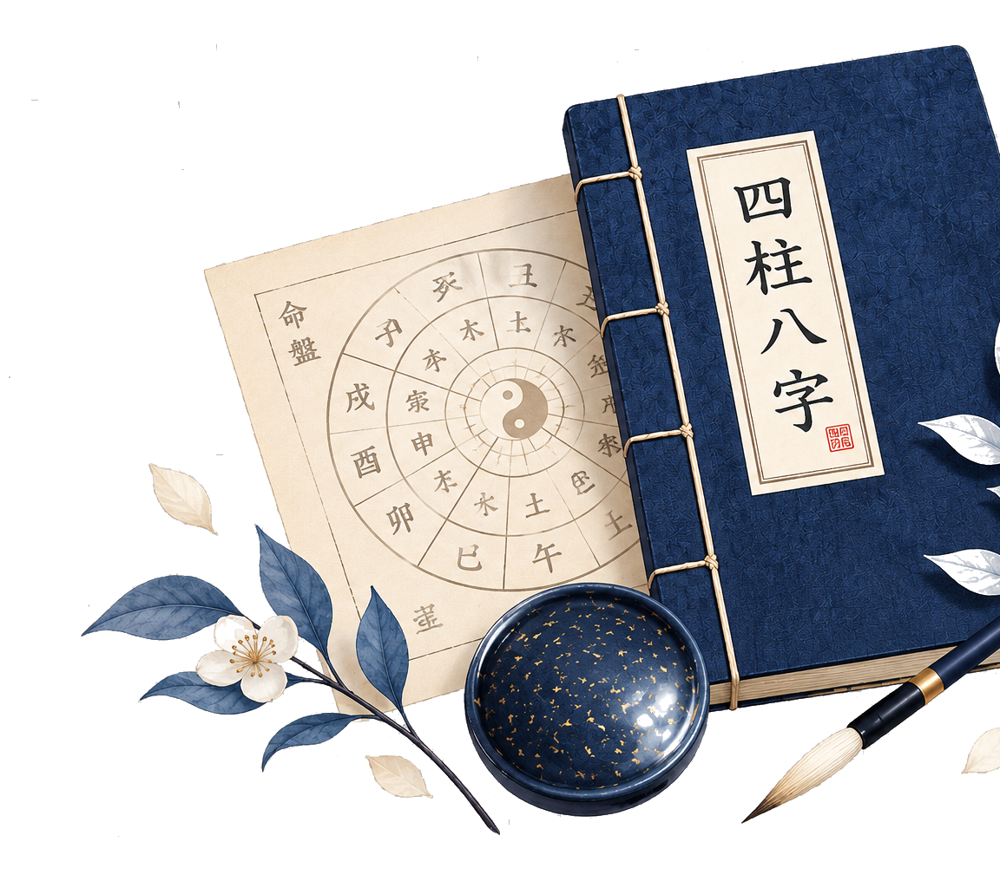
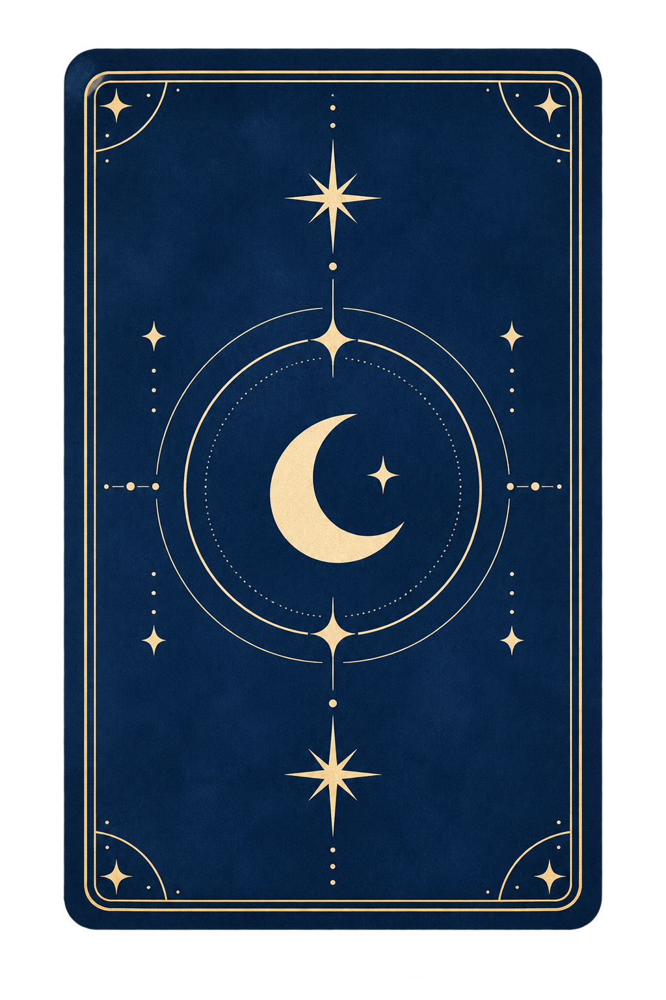

<!DOCTYPE html>
<html lang="ko">
<head>
<meta charset="UTF-8">
<meta name="viewport" content="width=device-width, initial-scale=1, viewport-fit=cover">
<title>내 사주에 바로 물어보는 사주</title>
<meta name="description" content="절기까지 맞춘 만세력으로 내 사주를 계산하고, 돈·일·사랑·흐름의 질문에 바로 답하는 사주 서비스. 가입 없이 30초.">
<meta name="theme-color" content="#FFFFFF">
<link rel="icon" href="data:image/svg+xml,%3Csvg xmlns='http://www.w3.org/2000/svg' viewBox='0 0 64 64'%3E%3Crect width='64' height='64' rx='14' fill='%23FFFFFF'/%3E%3Cpath d='M32 10l4 12 12 4-12 4-4 12-4-12-12-4 12-4z' fill='%231F4FD8'/%3E%3C/svg%3E">
<link rel="stylesheet" as="style" crossorigin href="https://cdn.jsdelivr.net/gh/orioncactus/pretendard@v1.3.9/dist/web/variable/pretendardvariable-dynamic-subset.min.css" />
<link rel="preconnect" href="https://fonts.googleapis.com">
<link rel="stylesheet" href="https://fonts.googleapis.com/css2?family=Hahmlet:wght@500;600;700&family=Noto+Serif+KR:wght@500;600;700&family=Cormorant+Garamond:ital,wght@1,500;1,600&family=Nanum+Pen+Script&display=swap">
<style>

:root{
  --ws:#EEF2F7; --ws-2:#F7F9FC; --ws-ink:#262C3A; --ws-mute:#7A8497; --ws-line:#D9E2EE; --ws-accent:#2A6FC0;
  --bg:#FFFFFF; --bg-2:#F4F9FE; --sky-50:#EAF4FD; --sky-200:#BFDDF7; --sky:#4A9DEB; --sky-deep:#2A6FC0; --primary:#3A8DE0;
  --ink:#262C3A; --ink-2:#4F5769; --mute:#8B93A3; --line:#E3ECF5; --line-2:#CFDDEC;
  --coral:#F27C93; --coral-soft:#FFE6EC; --coral-line:#F7C3CF; --yellow:#F5C242; --yellow-soft:#FFF4D6; --lav:#9A8DE0; --lav-soft:#EFEBFB; --mint:#6CC0A8;
  --love:#F27C93; --money:#E4A93A; --work:#4A9DEB; --people:#6CC0A8; --flow:#9A8DE0;
  --opal:linear-gradient(135deg,#BFDDF7,#FFE6EC 35%,#EFEBFB 65%,#FFF4D6);
  --sans:"Pretendard Variable",Pretendard,-apple-system,BlinkMacSystemFont,system-ui,Roboto,"Helvetica Neue","Segoe UI","Apple SD Gothic Neo","Noto Sans KR","Malgun Gothic",sans-serif;
  --serif:"Hahmlet","Noto Serif KR","Apple Myungjo",serif;
  --en:"Cormorant Garamond","Times New Roman",Georgia,serif;
  color-scheme: light;
}
*{box-sizing:border-box}
[hidden]{display:none!important}

h1,h2,h3,h4{margin:0;font-weight:600;letter-spacing:-.01em}
button{font:inherit;color:inherit;cursor:pointer}
input,select{font:inherit;color:inherit}
p{margin:0}
img{max-width:100%;display:block}
.wrap{max-width:1180px;margin:0 auto;display:grid;grid-template-columns:430px 1fr;gap:28px;align-items:start}
@media (max-width:900px){.wrap{grid-template-columns:1fr}}

/* ---------- 검수 패널 ---------- */
.panel{position:sticky;top:18px;display:flex;flex-direction:column;gap:14px}
@media (max-width:900px){.panel{position:static;order:2}}
.panel .head{display:flex;align-items:baseline;justify-content:space-between;gap:10px;flex-wrap:wrap}
.panel h1{font-family:var(--serif);font-size:20px;font-weight:600}
.panel .ver{font-size:12px;color:var(--ws-mute)}
.pbox{background:var(--ws-2);border:1px solid var(--ws-line);border-radius:12px;padding:12px 14px}
.pbox h2{font-size:11.5px;letter-spacing:.08em;text-transform:uppercase;color:var(--ws-mute);margin-bottom:8px;font-weight:600}
.ctl{display:grid;grid-template-columns:1fr 1fr;gap:8px}
@media (max-width:480px){.ctl{grid-template-columns:1fr}}
.ctl label{display:block;font-size:12px;color:var(--ws-mute);margin-bottom:4px}
.ctl select{width:100%;padding:7px 8px;border:1px solid var(--ws-line);border-radius:8px;background:#fff}
.slist{display:grid;grid-template-columns:repeat(auto-fill,minmax(150px,1fr));gap:6px}
.slist button{display:flex;gap:8px;align-items:center;text-align:left;padding:7px 9px;border:1px solid var(--ws-line);background:#fff;border-radius:8px;font-size:12.5px;line-height:1.3}
.slist button b{display:inline-flex;align-items:center;justify-content:center;width:22px;height:22px;border-radius:6px;background:var(--ws);font-size:11px;flex:none;font-variant-numeric:tabular-nums}
.slist button.on{border-color:var(--ws-accent);background:var(--sky-50)}
.slist button.on b{background:var(--ws-accent);color:#fff}
.slist button .rep{margin-left:auto;font-size:10px;color:var(--coral);border:1px solid var(--coral-line);border-radius:999px;padding:0 5px;flex:none}
.note{font-size:13px;color:var(--ws-ink)}
.note .k{display:block;font-size:11px;letter-spacing:.06em;color:var(--ws-mute);margin-top:8px;text-transform:uppercase}
.note .k:first-child{margin-top:0}
.note ol{margin:4px 0 0;padding-left:18px}
.note li{margin:3px 0}
.src{font-size:12px;color:var(--ws-mute);font-variant-numeric:tabular-nums}
.src code{background:#fff;border:1px solid var(--ws-line);border-radius:5px;padding:1px 5px;font-size:11.5px}
.swatches{display:flex;gap:6px;flex-wrap:wrap;margin-top:6px}
.swatches i{display:inline-block;width:22px;height:22px;border-radius:6px;border:1px solid rgba(0,0,0,.08)}

/* ---------- 데스크톱 브라우저 창 ---------- */
.browser{width:100%;max-width:1280px;margin:0 auto;height:880px;background:#fff;border:1px solid #CBD5E1;border-radius:12px;overflow:hidden;display:flex;flex-direction:column;box-shadow:0 20px 50px rgba(38,44,58,.16)}
.bbar{height:40px;flex:none;background:#EEF2F7;display:flex;align-items:center;gap:6px;padding:0 12px;border-bottom:1px solid #D9E2EE}
.bbar span{width:10px;height:10px;border-radius:50%;background:#CBD5E1}
.bbar i{margin-left:10px;font-style:normal;font-size:12px;color:#7A8497;background:#fff;border-radius:6px;padding:3px 12px;flex:1}
.browser .screen{flex:1;color:var(--ink);font-family:var(--sans);font-size:15px;line-height:1.6;background:var(--bg)}
.wrap.wide{grid-template-columns:1fr;max-width:1400px}
.wrap.wide .panel{position:static;display:grid;grid-template-columns:1fr 1fr;gap:12px;align-items:start}
.wrap.wide .panel .head{grid-column:1/-1}
.wrap.wide .pbox.notes{display:none}
.wrap.wide .stage{order:1}
/* ---------- 폰 ---------- */
.stage{display:flex;justify-content:center}
@media (max-width:900px){.stage{order:1}}
.phone{width:390px;max-width:100%;height:812px;max-height:88vh;background:var(--bg);border:9px solid #262C3A;border-radius:38px;overflow:hidden;position:relative;box-shadow:0 20px 50px rgba(38,44,58,.22);display:flex;flex-direction:column}
.status{height:36px;flex:none;display:flex;align-items:center;justify-content:space-between;gap:8px;padding:0 16px 0 12px;font-size:12px;color:var(--ink-2);font-variant-numeric:tabular-nums}
.status i{display:inline-block;width:78px;height:22px;background:#262C3A;border-radius:12px;flex:none}
.tag{font-size:10.5px;font-weight:700;letter-spacing:.06em;background:#262C3A;color:#fff;border-radius:999px;padding:2px 8px;font-variant-numeric:tabular-nums;white-space:nowrap;max-width:200px;overflow:hidden;text-overflow:ellipsis}
.screen{flex:1;overflow-y:auto;overflow-x:hidden;scrollbar-width:thin;container-type:inline-size;container-name:screen}
.page{--gut:16px;padding:0 var(--gut) 96px;min-height:100%}
.phone,.screen{color:var(--ink);font-family:var(--sans);font-size:15px;line-height:1.6}

/* ---------- 장식 어휘 (제한 사용) ---------- */
.sp{display:inline-block;width:12px;height:12px;vertical-align:-1px;color:var(--yellow)}
.sp svg{width:100%;height:100%;display:block}
.sp.pink{color:var(--coral)}.sp.sky{color:var(--sky)}.sp.lav{color:var(--lav)}.sp.white{color:#fff}
.sp.lg{width:16px;height:16px}
.en{font-family:var(--en);font-style:italic;font-weight:600;letter-spacing:.03em;color:var(--sky-deep)}
.divider{display:flex;align-items:center;gap:8px;margin:20px 0 6px;color:var(--sky-200)}
.divider i{flex:1;border-top:1px dashed var(--sky-200)}
.mhead{display:flex;align-items:flex-end;gap:10px;margin:22px 0 10px}
.mhead .num{font-family:var(--en);font-style:italic;font-size:34px;line-height:.9;color:var(--sky-200);font-weight:600}
.mhead .en{display:block;font-size:13px;line-height:1.1}
.mhead h2{font-family:var(--serif);font-size:19px;font-weight:600;margin-top:3px;line-height:1.25}
.mhead .sp{margin-left:auto;margin-bottom:4px}
.opal{border:1.5px solid transparent;background:linear-gradient(#fff,#fff) padding-box,var(--opal) border-box;box-shadow:0 12px 30px rgba(74,157,235,.12)}

/* 앱 요소 */
.topbar{display:flex;align-items:center;justify-content:space-between;padding:12px 0 6px}
.brand{display:flex;align-items:center;gap:7px;font-family:var(--serif);font-weight:600;font-size:17px;background:none;border:0;padding:0;color:var(--ink)}
.brand .mark{width:18px;height:18px;color:var(--yellow)}
.brand .mark svg{width:100%;height:100%;display:block}
.brand .vol{font-family:var(--en);font-style:italic;font-weight:600;font-size:12px;color:var(--sky-deep);margin-left:2px}
.topline{display:flex;justify-content:center;margin:8px 0 0}
.topline span{font-size:12px;color:var(--sky-deep);background:var(--sky-50);border:1px solid var(--sky-200);border-radius:999px;padding:3px 12px}
.btn{display:inline-flex;align-items:center;justify-content:center;gap:6px;border:1px solid var(--line-2);background:var(--bg);border-radius:999px;padding:9px 15px;font-size:14px;font-weight:600;color:var(--ink)}
.btn.primary{background:linear-gradient(180deg,#5AA9F0,#3A8DE0);color:#fff;border-color:transparent;box-shadow:0 6px 16px rgba(58,141,224,.28),inset 0 1px 0 rgba(255,255,255,.35)}
.btn.sky{background:var(--sky-deep);color:#fff;border-color:var(--sky-deep)}
.btn.coral{background:linear-gradient(180deg,#F79AAC,#F27C93);color:#fff;border-color:transparent;box-shadow:0 6px 16px rgba(242,124,147,.28),inset 0 1px 0 rgba(255,255,255,.35)}
.btn.ghost{background:transparent}
.btn.line{border-color:var(--sky-200);color:var(--sky-deep);background:#fff}
.btn.sm{padding:6px 12px;font-size:13px}
.btn.block{width:100%;padding:13px;font-size:15.5px}
.btn:focus-visible,.qitem:focus-visible,.chip:focus-visible,.area:focus-visible,.tile:focus-visible,.qrow:focus-visible{outline:2px solid var(--sky-deep);outline-offset:2px}
.row{display:flex;gap:8px;align-items:center;flex-wrap:wrap}
.between{justify-content:space-between}
.stack>*+*{margin-top:10px}
.guide{display:flex;gap:10px;align-items:flex-start;margin:12px 0}
.guide .av{flex:none;width:56px;height:56px;border-radius:50%;overflow:hidden;border:2px solid #fff;box-shadow:0 2px 10px rgba(38,44,58,.14),0 0 0 2px var(--sky-50);background:var(--sky-50)}
.guide .av img{width:100%;height:100%;object-fit:cover}
.guide p{background:var(--bg-2);border:1px solid var(--sky-200);border-radius:4px 14px 14px 14px;padding:9px 12px;font-size:14px;color:var(--ink-2);margin-top:8px}
.card{background:var(--bg);border:1px solid var(--line);border-radius:18px;padding:14px;margin:12px 0;box-shadow:0 2px 3px rgba(38,44,58,.03),0 10px 26px rgba(38,44,58,.05)}
.card.tint{background:var(--bg-2);box-shadow:none}
.card.opal{border:1.5px solid transparent;background:linear-gradient(#fff,#fff) padding-box,var(--opal) border-box;box-shadow:0 12px 30px rgba(74,157,235,.12)}
.card.pinkline{border-color:var(--coral-line)}
.card h2{font-size:16.5px;margin-bottom:8px}
.eyebrow{font-size:11.5px;font-weight:600;letter-spacing:.08em;color:var(--mute);text-transform:uppercase;margin-bottom:6px}
.hero{padding:18px 0 6px}
.hero h1{font-family:var(--serif);font-size:25px;line-height:1.32;margin-bottom:8px;text-wrap:balance;font-weight:600;word-break:keep-all}
.hero .sub{color:var(--ink-2);font-size:14.5px}
.herobg{position:relative;margin:6px calc(-1*var(--gut)) 0;padding:124px 16px 12px;background-size:cover;background-position:center 55%;overflow:hidden}
.herobg::before{content:"";position:absolute;inset:0;background:linear-gradient(180deg,rgba(255,255,255,0),rgba(255,255,255,.18) 45%,var(--bg) 100%)}
.herobg>.plate,.herobg>.tiles{position:relative}
.herobg .plate{background:rgba(255,255,255,.66);backdrop-filter:blur(4px);-webkit-backdrop-filter:blur(4px);border:1px solid rgba(255,255,255,.9);border-radius:16px;padding:14px 14px 12px;box-shadow:0 8px 24px rgba(74,157,235,.12)}
.herobg .plate .en{font-size:14px;display:block;margin-bottom:4px}
.herobg .plate .eyebrow{color:var(--ink-2);margin-bottom:4px}
.lead{font-size:17px;line-height:1.5;font-weight:600;word-break:keep-all}
.small{font-size:12.5px;color:var(--mute)}
.body{color:var(--ink-2);font-size:15px;margin:0 0 .5em}
.curve{display:block;width:100%;height:16px;color:var(--sky-200);margin:4px 0}
.chips{display:flex;gap:7px;flex-wrap:wrap;margin:8px 0}
.chip{border:1px solid var(--line-2);background:var(--bg);border-radius:999px;padding:6px 12px;font-size:13px;font-weight:600;color:var(--ink-2)}
.chip.on{background:var(--sky-deep);color:#fff;border-color:var(--sky-deep)}
.chip.area-love.on{background:var(--love);border-color:var(--love)}
.chip.area-money.on{background:var(--money);border-color:var(--money)}
.chip.area-work.on{background:var(--work);border-color:var(--work)}
.chip.area-people.on{background:var(--people);border-color:var(--people)}
.chip.area-flow.on{background:var(--flow);border-color:var(--flow)}
.chip.q{border-radius:12px;text-align:left;padding:9px 12px;line-height:1.4}
/* 2026-09-17: 질문 목록을 둥근 카드 반복에서 리스트형(전체 폭, 얇은 구분선)으로 통일 */
.qlist{display:flex;flex-direction:column;margin:8px 0 0}
.qitem{display:flex;align-items:center;justify-content:space-between;gap:10px;background:transparent;border:0;border-bottom:1px solid var(--line);border-radius:0;padding:13px 2px;text-align:left;width:100%}
.qitem:last-child{border-bottom:0}
.qitem .t{font-size:14.5px;font-weight:600;line-height:1.4;color:var(--ink)}
.qitem .meta{font-size:12px;color:var(--mute);margin-top:2px;display:block}
.qitem .arrow{color:var(--sky-deep);font-size:18px;flex:none}
.new{display:inline-block;font-size:10px;font-weight:700;color:var(--coral);border:1px solid var(--coral-line);border-radius:999px;padding:0 6px;margin-left:6px;vertical-align:middle}
.free{display:inline-block;font-size:10px;font-weight:700;color:var(--sky-deep);background:var(--sky-50);border-radius:999px;padding:1px 7px;letter-spacing:.04em;flex:none}
.index{padding:2px 12px;margin:8px 0}
.qrow{display:flex;align-items:center;gap:10px;width:100%;text-align:left;padding:11px 0;border:0;border-top:1px dashed var(--line-2);background:transparent}
.qrow:first-child{border-top:0}
.qrow .t{flex:1;font-size:14.5px;font-weight:600;line-height:1.4}
.qrow .arrow{color:var(--sky);font-size:18px}
.tiles{display:grid;grid-template-columns:1fr 1fr;gap:10px;margin:12px 0 4px}
.herobg .tiles{margin:12px 0 0}
.tile{position:relative;text-align:left;padding:13px 12px 12px;border-radius:16px;border:1.5px solid var(--sky-200);background:linear-gradient(180deg,#fff,var(--sky-50));min-height:106px;display:flex;flex-direction:column;gap:3px}
.tile.pink{border-color:var(--coral-line);background:linear-gradient(180deg,#fff,var(--coral-soft))}
.tile .n{font-size:13px;line-height:1}
.tile.pink .n{color:var(--coral)}
.tile .t{font-family:var(--serif);font-size:16px;font-weight:600;line-height:1.3;margin-top:2px}
.tile .s{font-size:12px;color:var(--ink-2);line-height:1.4;padding-right:16px}
.tile .arrow{position:absolute;right:12px;bottom:8px;color:var(--sky-deep);font-size:18px}
.tile.pink .arrow{color:var(--coral)}
.teaser{position:relative;height:84px;width:124px;flex:none}
.teaser img{position:absolute;width:46px;height:62px;object-fit:cover;border-radius:8px;border:2px solid #fff;box-shadow:0 6px 14px rgba(38,44,58,.16);bottom:0}
.teaser img:nth-of-type(1){left:4px;transform:rotate(-10deg)}
.teaser img:nth-of-type(2){left:39px;transform:translateY(-8px);z-index:2}
.teaser img:nth-of-type(3){left:74px;transform:rotate(10deg)}
.shelf{display:flex;justify-content:space-between;gap:6px;margin:8px 0 2px}
.shelf button{background:transparent;border:0;padding:0;display:flex;flex-direction:column;align-items:center;gap:7px;font-size:11.5px;color:var(--ink-2);font-weight:600}
.strip{display:flex;align-items:center;gap:10px;background:var(--bg-2);border:1px solid var(--line);border-radius:14px;padding:8px 10px;margin:10px 0}
.strip .th{width:40px;height:40px;border-radius:10px;overflow:hidden;flex:none}
.strip .th img{width:100%;height:100%;object-fit:cover}
.strip b{font-size:14px}
.strip .small{display:block}
.lv{display:inline-block;font-size:11.5px;font-weight:700;border-radius:999px;padding:2px 9px;border:1px solid var(--line-2);color:var(--mute);white-space:nowrap}
.lv-1{background:var(--sky-50);color:var(--sky-deep);border-color:var(--sky-200)}
.lv-2{background:var(--sky-deep);color:#fff;border-color:var(--sky-deep)}
.areas{display:flex;flex-direction:column;gap:8px}
.area{display:grid;grid-template-columns:44px 1fr auto;gap:8px;align-items:center;background:var(--bg);border:1px solid var(--line);border-radius:14px;padding:10px 12px;text-align:left;width:100%}
.area .name{font-weight:700;font-size:14.5px}
.area .why{font-size:13px;color:var(--ink-2);line-height:1.4}
.area.key{border-color:var(--sky);box-shadow:0 0 0 3px var(--sky-50)}
.dot{width:8px;height:8px;border-radius:50%;display:inline-block;margin-right:6px;vertical-align:middle}
.dot.love{background:var(--love)}.dot.money{background:var(--money)}.dot.work{background:var(--work)}.dot.people{background:var(--people)}.dot.flow{background:var(--flow)}
.pillars{display:grid;grid-template-columns:repeat(4,1fr);gap:6px;margin:10px 0}
.pillar{background:var(--bg);border:1px solid var(--line);border-radius:12px;padding:8px 4px;text-align:center}
.pillar .lab{font-size:11px;color:var(--mute);font-weight:700}
.pillar .hz{font-family:var(--serif);font-size:22px;line-height:1.15;margin:4px 0;font-weight:500}
.pillar .ss{font-size:11px;color:var(--ink-2)}
.pillar.hi{border:1.5px solid transparent;background:linear-gradient(#fff,var(--sky-50)) padding-box,var(--opal) border-box;box-shadow:0 6px 16px rgba(74,157,235,.16)}
.bars{display:flex;gap:8px;align-items:flex-end;height:74px;margin:8px 0 4px}
.bar{flex:1;display:flex;flex-direction:column;align-items:center;justify-content:flex-end;height:100%;font-size:12px;color:var(--ink-2);gap:4px}
.bar i{display:block;width:100%;border-radius:6px 6px 3px 3px;background:var(--line-2);min-height:4px}
.bar.on i{background:linear-gradient(180deg,#5AA9F0,#3A8DE0)}
.months{display:grid;grid-template-columns:repeat(12,1fr);gap:4px;margin:8px 0}
.mcell{display:flex;flex-direction:column;align-items:center;gap:3px;font-size:11px;color:var(--mute);font-variant-numeric:tabular-nums}
.mcell i{display:block;width:100%;height:26px;border-radius:6px;background:var(--bg-2);border:1px solid var(--line);position:relative}
.mcell.l1 i{background:var(--sky-200)}
.mcell.l2 i{background:var(--sky-deep);border-color:var(--sky-deep)}
.mcell.past{opacity:.45}
.mcell.now b{color:var(--coral)}
.mcell b{font-weight:700;color:var(--ink-2)}
.mcell.locked i{background:repeating-linear-gradient(135deg,#F1F4F8 0 4px,#E6EBF2 4px 8px);border-color:#E0E7EF}
.mcell.locked i::after{content:"";position:absolute;left:50%;top:50%;width:9px;height:9px;margin:-5px 0 0 -5px;border:2px solid var(--mute);border-radius:3px}
.mcell.star i::before{content:"";position:absolute;left:50%;top:-7px;width:8px;height:8px;margin-left:-4px;border-radius:50%;background:var(--yellow);box-shadow:0 0 0 2px #fff}
.legend{display:flex;gap:12px;font-size:12px;color:var(--mute);margin:4px 0 8px;flex-wrap:wrap}
.legend i{display:inline-block;width:12px;height:12px;border-radius:3px;vertical-align:-2px;margin-right:4px;border:1px solid var(--line);background:var(--bg-2)}
.legend .i1{background:var(--sky-200)}.legend .i2{background:var(--sky-deep);border-color:var(--sky-deep)}
.sec{margin:22px 0}
.concl{font-family:var(--serif);font-size:18px;font-weight:600;line-height:1.45;word-break:keep-all;margin-bottom:10px;padding-bottom:10px;border-bottom:1px dashed var(--sky-200)}
.blk{margin:14px 0 0}
.blk .lab{font-size:11.5px;font-weight:700;letter-spacing:.06em;color:var(--sky-deep);margin-bottom:5px}
.blk .lab::before{content:"";display:inline-block;width:6px;height:6px;border-radius:50%;background:var(--sky);margin-right:6px;vertical-align:2px}
.blk ul{margin:2px 0 0;padding-left:16px;color:var(--ink-2);font-size:15px;border-left:3px solid var(--coral-soft);list-style:none}
.blk li{margin:5px 0;position:relative;padding-left:4px}
.blk li::before{content:"";position:absolute;left:-13px;top:.7em;width:5px;height:5px;border-radius:50%;background:var(--coral)}
.blk.nextbox{background:var(--bg-2);border:1px solid var(--sky-200);border-radius:14px;padding:12px 13px}
details.ev{margin:10px 0;border:1px solid var(--line);border-radius:12px;background:var(--bg)}
details.ev summary{cursor:pointer;padding:9px 13px;font-size:13.5px;font-weight:700;color:var(--ink-2);list-style:none}
details.ev summary::-webkit-details-marker{display:none}
details.ev summary::after{content:"펼치기";float:right;font-weight:500;color:var(--mute);font-size:12px}
details.ev[open] summary::after{content:"접기"}
details.ev .in{padding:0 13px 12px;font-size:13.5px;color:var(--ink-2)}
.more{margin:12px 0 4px;padding:13px;border-radius:14px;background:var(--bg-2);border:1px solid var(--line)}
.more .t{font-size:13px;font-weight:700;color:var(--sky-deep);margin-bottom:8px;display:flex;align-items:center;gap:8px}
.more .t .av{width:34px;height:34px;border-radius:50%;overflow:hidden;border:1.5px solid #fff;background:var(--sky-50)}
.more .t .av img{width:100%;height:100%;object-fit:cover}
.more .chips{margin:0 0 8px}
.more .chip{background:#fff}
.more .inp{display:flex;gap:6px;margin-top:6px}
.more .inp input{flex:1;border:1px solid var(--line-2);border-radius:999px;padding:8px 12px;background:#fff;font-size:13.5px;min-width:0}
.band{border:1px solid var(--line);border-radius:12px;padding:10px 12px;margin:8px 0;background:var(--bg)}
.band.open{border-color:var(--sky);background:var(--bg-2)}
.band .m{font-weight:700;font-size:14.5px}
.band .lock{float:right}
.skel{display:block;height:10px;border-radius:5px;background:repeating-linear-gradient(90deg,#E9EEF4 0 60px,#F3F6FA 60px 90px);margin:7px 0}
.skel.w70{width:70%}.skel.w45{width:45%}
.lockrow{display:flex;justify-content:space-between;align-items:center;padding:9px 0;border-top:1px dashed var(--line-2);font-size:14px;color:var(--ink-2)}
.lockrow:first-child{border-top:0}
.lk{display:inline-flex;align-items:center;gap:4px;font-size:11px;font-weight:700;color:var(--coral);border:1px solid var(--coral-line);background:#fff;border-radius:999px;padding:1px 7px;white-space:nowrap}
.lk svg{width:10px;height:10px}
.bridge{margin:16px 0 6px;padding:14px;border-radius:16px;position:relative;overflow:hidden}
.bridge .bt{font-family:var(--serif);font-size:16px;font-weight:600;margin-bottom:6px;word-break:keep-all}
.bridge ul{margin:6px 0 10px;padding-left:18px;color:var(--ink-2);font-size:14px}
.bridge .hd{display:flex;gap:12px;align-items:flex-start}
.form label{display:block;font-size:12.5px;font-weight:700;color:var(--ink-2);margin:12px 0 5px}
.form .grid3{display:grid;grid-template-columns:1.3fr 1fr 1fr;gap:8px}
.form input[type=number],.form input[type=text]{width:100%;border:1px solid var(--line-2);background:var(--bg);border-radius:12px;padding:11px;font-size:16px}
.form input:focus{outline:2px solid var(--sky-200);border-color:var(--sky)}
.seg{display:flex;border:1px solid var(--line-2);border-radius:12px;overflow:hidden;background:var(--bg)}
.seg button{flex:1;border:0;background:transparent;padding:10px;font-weight:600;color:var(--mute)}
.seg button.on{background:var(--sky-deep);color:#fff}
.timerow{display:grid;grid-template-columns:1fr 1fr 1.4fr;gap:8px;align-items:stretch}
.unk{border:1.5px solid var(--sky-deep);color:var(--sky-deep);background:var(--sky-50);border-radius:12px;font-weight:700;font-size:14px}
.unk.on{background:var(--sky-deep);color:#fff}
.rgrid{display:grid;grid-template-columns:1fr 1fr;gap:8px}
.rcard{background:var(--bg);border:1px solid var(--line);border-radius:14px;padding:13px;text-align:left;width:100%}
.rcard b{display:block;font-size:14.5px;margin-bottom:3px}
.rcard .small{display:block}
.rcard.pick{border-color:var(--sky);box-shadow:0 0 0 3px var(--sky-50)}
.rcard .bar{height:3px;border-radius:3px;margin-bottom:8px;display:block}
.foot{margin-top:36px;padding-top:14px;border-top:1px solid var(--line);font-size:12px;color:var(--mute);line-height:1.6}
.foot .row{margin-top:8px}
/* 일주 카드 */
.tcard{border-radius:22px;padding:0 0 18px;text-align:center;margin:12px 0;overflow:hidden;position:relative}
.tcard .art{position:relative;aspect-ratio:4/3;overflow:hidden;border-radius:20px 20px 0 0}
.tcard .art img{width:100%;height:100%;object-fit:cover}
.tcard .art .hz{position:absolute;right:14px;top:12px;font-family:var(--serif);font-size:18px;color:#fff;background:rgba(38,44,58,.55);border-radius:999px;padding:3px 12px;letter-spacing:.2em}
.tcard .art .en{position:absolute;left:14px;bottom:10px;color:#fff;font-size:15px;text-shadow:0 1px 6px rgba(38,44,58,.5)}
.tcard h2{font-family:var(--serif);font-size:30px;margin:12px 0 2px;font-weight:600}
.tcard .nick{font-size:16px;color:var(--ink-2);margin-bottom:12px}
.tcard ul{list-style:none;padding:0 18px;margin:0 0 10px;text-align:left}
.tcard li{padding:7px 0;border-top:1px dashed var(--line-2);font-size:14.5px;color:var(--ink-2);display:flex;gap:8px;align-items:flex-start}
.tcard li:first-child{border-top:0}
.tcard .kws{display:flex;gap:6px;justify-content:center;flex-wrap:wrap;margin-top:4px}
.tcard .kws span{font-size:12px;font-weight:700;color:var(--ink-2);background:var(--sky-50);border-radius:999px;padding:2px 10px}
.tcard .kws span:nth-child(2){background:var(--coral-soft)}.tcard .kws span:nth-child(3){background:var(--lav-soft)}
.share{display:flex;gap:12px;align-items:flex-start}
.share .mini{width:108px;height:192px;flex:none;border-radius:12px;overflow:hidden;position:relative;background-size:cover;background-position:center;border:1px solid var(--line)}
.share .mini img{position:absolute;left:14px;right:14px;top:22px;height:96px;border-radius:8px;object-fit:cover;width:calc(100% - 28px)}
.share .mini .t{position:absolute;left:0;right:0;bottom:16px;text-align:center;font-family:var(--serif);font-size:13px;color:var(--ink);font-weight:600}
.share .mini .s{position:absolute;left:0;right:0;bottom:4px;text-align:center;font-size:8px;color:var(--mute)}
/* 계산 중 */
.calc{position:relative;margin:0 calc(-1*var(--gut));min-height:700px;background-size:cover;background-position:center top;display:flex;flex-direction:column;align-items:center;justify-content:center;gap:18px;padding:20px 24px 0;text-align:center}
.calc::before{content:"";position:absolute;inset:0;background:linear-gradient(180deg,rgba(255,255,255,.08),rgba(255,255,255,.42))}
.calc>*{position:relative}
.calc .ringwrap{position:relative;width:120px;height:120px;display:flex;align-items:center;justify-content:center}
.calc .ringwrap svg{position:absolute;inset:0;width:100%;height:100%}
.calc .ring{width:56px;height:56px;border-radius:50%;border:3px solid rgba(255,255,255,.9);border-top-color:var(--sky-deep);animation:spin 1.1s linear infinite;box-shadow:0 6px 20px rgba(42,111,192,.15)}
@keyframes spin{to{transform:rotate(360deg)}}
@media (prefers-reduced-motion:reduce){.calc .ring{animation:none}}
.calc .lines{display:flex;flex-direction:column;gap:8px;font-size:15.5px;color:var(--mute)}
.calc .lines .on{color:var(--ink);font-weight:600}
.calc .lines .on::before{content:"";display:inline-block;width:6px;height:6px;border-radius:50%;background:var(--yellow);margin-right:8px;vertical-align:2px}
.calc .cap{font-family:var(--serif);font-size:18px;color:var(--ink);font-weight:600}
/* 이미지 잠금 */
.imgcard{position:relative;aspect-ratio:3/4;max-width:100%;border-radius:16px;overflow:hidden;border:1px solid var(--line);background-size:cover;background-position:center}
.imgcard .sil{position:absolute;inset:0;width:100%;height:100%;filter:blur(7px);opacity:.85}
.imgcard .cap{position:absolute;left:0;right:0;bottom:0;padding:10px 12px;background:linear-gradient(180deg,rgba(38,44,58,0),rgba(38,44,58,.6));color:#fff;font-size:12.5px}
.imgcard .lockbig{position:absolute;left:50%;top:44%;transform:translate(-50%,-50%);background:rgba(38,44,58,.78);color:#fff;border-radius:999px;padding:7px 14px;font-size:13px;font-weight:700;white-space:nowrap}
.heart{display:inline-block;width:11px;height:11px;color:var(--coral);vertical-align:-1px;margin-right:4px}
.heart svg{width:100%;height:100%;display:block}
/* 책 표지 (CSS 조판) */
.cover-b{--cw:110px;width:var(--cw);aspect-ratio:3/4.2;position:relative;border-radius:calc(var(--cw)*.07);overflow:hidden;background-size:cover;background-position:center;box-shadow:0 6px 16px rgba(38,44,58,.14),0 0 0 1px rgba(255,255,255,.7) inset;font-size:calc(var(--cw)/11);color:var(--ink);flex:none;text-align:left}
.cover-b::before{content:"";position:absolute;inset:0;background:var(--tint)}
.cover-b .frame{position:absolute;inset:6% 7%;border:1px solid rgba(255,255,255,.8);border-radius:.3em;pointer-events:none}
.cover-b .en{position:absolute;left:13%;top:10%;font-size:.78em;color:var(--cc);white-space:nowrap;line-height:1}
.cover-b .pdf{position:absolute;right:12%;top:8%;font-family:var(--sans);font-size:.62em;font-weight:700;letter-spacing:.06em;color:#fff;background:var(--cc);border-radius:.4em;padding:.15em .5em;line-height:1.4}
.cover-b .t{position:absolute;left:13%;right:13%;top:29%;background:rgba(255,255,255,.62);backdrop-filter:blur(2px);-webkit-backdrop-filter:blur(2px);border-left:.25em solid var(--cc);border-radius:.25em;padding:.45em .5em .5em;font-family:var(--serif);line-height:1.2;word-break:keep-all}
.cover-b .t small{display:block;font-size:.8em;color:var(--ink-2);font-weight:500}
.cover-b .t b{display:block;font-size:1.45em;font-weight:600;letter-spacing:-.01em;margin:.08em 0}
.cover-b .owner{position:absolute;left:13%;right:13%;bottom:10%;font-size:.72em;color:var(--ink-2);white-space:nowrap;overflow:hidden;text-overflow:ellipsis}
.cover-b .owner::before{content:"";display:inline-block;width:1.6em;border-top:1px solid var(--cc);vertical-align:.3em;margin-right:.4em}
.cover-b.mini .en,.cover-b.mini .owner,.cover-b.mini .pdf{display:none}
.cover-b.mini .t{top:34%;left:13%;right:13%;padding:.5em .45em}
.cover-b.mini .t small{display:none}
.cover-b.mini .t b{font-size:1.5em;margin:0}
.flatcov{flex:none}
.fan{position:relative;height:166px;margin:2px 0 8px;border-radius:14px;background:var(--sky-50);overflow:hidden}
.fan .cover-b{position:absolute;bottom:16px;transform-origin:bottom center}
.fan .f1{left:5%;transform:rotate(-6deg) translateY(4px);z-index:1}
.fan .f2{left:27%;transform:rotate(-2deg);z-index:2}
.fan .f3{left:49%;transform:rotate(2deg);z-index:3}
.fan .f4{left:71%;transform:rotate(6deg) translateY(4px);z-index:4}
.fan .cnt{position:absolute;right:10px;top:8px;font-size:12px;color:var(--sky-deep);font-weight:700;background:#fff;border:1px solid var(--sky-200);border-radius:999px;padding:1px 9px}
.lockthumb{display:inline-flex;align-items:center;gap:8px;font-size:12.5px;color:var(--ink-2);margin-top:6px;word-break:keep-all}
.lockthumb .th{position:relative;width:36px;height:48px;border-radius:7px;overflow:hidden;background:var(--sky-50);border:1px solid var(--line);flex:none}
.lockthumb .th .sil{position:absolute;inset:0;width:100%;height:100%;filter:blur(2px)}
.lockthumb .th .lkm{position:absolute;inset:0;display:flex;align-items:center;justify-content:center;color:#fff;background:rgba(38,44,58,.16)}
.lockthumb .th .lkm svg{filter:drop-shadow(0 0 2px rgba(38,44,58,.6))}
.lockthumb .th .lkm svg{width:12px;height:12px}
.imglock{display:flex;gap:12px;align-items:center}
.imglock .th{position:relative;width:56px;height:72px;border-radius:10px;overflow:hidden;flex:none;background-size:cover;background-position:center;border:1px solid var(--line)}
.imglock .th .sil{position:absolute;inset:0;width:100%;height:100%;filter:blur(3px);opacity:.7}
.imglock .th .lkm{position:absolute;inset:0;display:flex;align-items:center;justify-content:center;color:#fff;background:rgba(38,44,58,.18)}
.imglock .th .lkm svg{width:14px;height:14px;filter:drop-shadow(0 0 2px rgba(38,44,58,.6))}
.imglock .tt{font-family:var(--serif);font-size:15px;font-weight:600;display:flex;align-items:center;gap:6px;flex-wrap:wrap}
.paths{margin-top:10px}
.path{display:flex;gap:10px;align-items:flex-start;padding:8px 0;border-top:1px dashed var(--line-2)}
.path:first-of-type{border-top:0}
.path b{font-size:14px;display:block}
.path .small{display:block}
.pchip{flex:none;font-size:12px;font-weight:700;border-radius:999px;padding:2px 9px;background:var(--coral-soft);color:#9B3A50;border:1px solid var(--coral-line);font-variant-numeric:tabular-nums;margin-top:2px;white-space:nowrap}
.pchip.deep{background:var(--sky-50);color:var(--sky-deep);border-color:var(--sky-200)}
.bridge .hd{align-items:center}
.bridge ul li{margin:3px 0}
.bridge li .lockthumb{margin-top:2px}
/* ---------- 편집 디자인 (6차 시안) ---------- */
.bleed{margin:0 calc(-1*var(--gut));padding:22px var(--gut) 24px;position:relative;background-size:cover;background-position:center}
.bleed.veil::before{content:"";position:absolute;inset:0;background:rgba(255,255,255,.64)}
.bleed.fade::before{content:"";position:absolute;inset:0;background:linear-gradient(180deg,rgba(255,255,255,.08) 20%,rgba(255,255,255,.72) 62%,#fff)}
.bleed>*{position:relative}
.bleed+.bleed{margin-top:0}
.kicker{font-size:12px;font-weight:700;letter-spacing:.12em;color:var(--sky-deep)}
.kicker.k2{color:var(--mute);letter-spacing:.08em}
.kicker.k2 b{color:var(--ink);font-weight:700;letter-spacing:0;font-size:13px;margin-left:6px}
.headline{font-family:var(--serif);font-weight:600;letter-spacing:-.01em;word-break:keep-all;text-wrap:balance;color:var(--ink)}
.h-xl{font-size:30px;line-height:1.22}
.h-l{font-size:24px;line-height:1.3}
.deck{font-size:15px;line-height:1.7;color:var(--ink-2)}
.lede{font-family:var(--serif);font-size:19px;line-height:1.5;color:var(--ink);font-weight:600;word-break:keep-all}
.rule{border:0;border-top:1px solid var(--line-2);margin:14px 0}
.rule.sky{border-color:var(--sky-200)}
.rule.short{width:40px;margin:12px 0}
.bignum{font-family:var(--serif);font-size:38px;line-height:1;color:var(--sky-200);font-weight:500;font-variant-numeric:tabular-nums}
.sechead{display:flex;align-items:flex-end;gap:12px;margin:24px 0 12px}
.sechead h2{font-family:var(--serif);font-size:20px;font-weight:600;line-height:1.25;word-break:keep-all}
.sechead .cap{display:block;font-size:12.5px;color:var(--ink-2);margin-top:3px;font-family:var(--sans);font-weight:400}
.prose p{font-size:15.5px;line-height:1.78;color:var(--ink-2);margin:0 0 10px;word-break:keep-all}
.pull{margin:16px 0;padding:16px 6px 14px;border-top:1px solid var(--sky-200);border-bottom:1px solid var(--sky-200);text-align:center;font-family:var(--serif);font-size:17.5px;line-height:1.55;color:var(--ink);word-break:keep-all}
.pull::before{content:"\201C";display:block;font-size:36px;line-height:.5;color:var(--coral);margin-bottom:8px}
.edlist{list-style:none;margin:0;padding:0}
.edlist li{display:grid;grid-template-columns:34px 1fr;gap:10px;padding:12px 0;border-top:1px dashed var(--line-2);font-size:15px;line-height:1.65;color:var(--ink-2);word-break:keep-all}
.edlist li:first-child{border-top:0}
.edlist .n{font-family:var(--serif);font-size:24px;line-height:1;color:var(--sky);font-weight:500}
.edlist.big li{font-family:var(--serif);font-size:16.5px;color:var(--ink);line-height:1.5}
.qhead{min-height:220px;display:flex;flex-direction:column;justify-content:flex-end;background-position:center 30%}
.qhead .kicker{align-self:flex-start;background:rgba(255,255,255,.82);padding:3px 9px;border-radius:999px}
.bleed.fade .kicker{align-self:flex-start}
.qmark{font-family:var(--serif);font-size:52px;line-height:.4;color:var(--coral);display:block;margin:0 0 10px}
.byline{display:flex;align-items:flex-start;gap:12px;margin:14px 0 4px}
.byline .portrait{width:72px;height:92px;border-radius:14px;overflow:hidden;flex:none;box-shadow:0 8px 18px rgba(38,44,58,.16);border:2px solid #fff}
.byline .portrait img{width:100%;height:100%;object-fit:cover;object-position:center 28%}
.byline .bubble{background:var(--bg-2);border:1px solid var(--sky-200);border-radius:4px 14px 14px 14px;padding:10px 12px;font-size:14.5px;color:var(--ink-2);margin-top:12px;line-height:1.55}
/* 홈 */
.hero-ed{margin:6px calc(-1*var(--gut)) 0;height:330px;position:relative;background-size:cover;background-position:center 38%}
.hero-ed::before{content:"";position:absolute;inset:0;background:linear-gradient(180deg,rgba(255,255,255,0) 30%,rgba(255,255,255,.86) 72%,#fff)}
.hero-ed .txt{position:absolute;left:var(--gut);right:var(--gut);bottom:10px}
.tile .n{font-family:var(--serif);font-size:15px;color:var(--sky-deep);font-weight:600}
.photo-strip{display:flex;gap:10px;justify-content:center;margin:14px 0 6px}
.photo-strip img{width:96px;height:130px;object-fit:cover;border-radius:12px;box-shadow:0 10px 22px rgba(38,44,58,.18);border:3px solid #fff}
.photo-strip img:nth-child(2){transform:translateY(-10px)}
.enote{padding:20px 2px 6px}
.enote ol{margin:8px 0 0;padding:0;list-style:none}
.enote li{display:grid;grid-template-columns:28px 1fr;gap:8px;padding:10px 0;border-top:1px dashed var(--line-2);font-size:15px;line-height:1.6;word-break:keep-all}
.enote li:first-child{border-top:0}
.enote .n{font-family:var(--serif);font-size:20px;color:var(--sky);line-height:1.1}
/* 흐름: 월간 특집 */
.issue{display:flex;align-items:baseline;gap:10px;margin-top:4px}
.issue .mon{font-family:var(--serif);font-size:66px;line-height:.9;font-weight:600;color:var(--ink);letter-spacing:-.02em}
.issue .yr{font-family:var(--serif);font-size:18px;color:var(--ink-2)}
.arealist{list-style:none;margin:0;padding:0}
.arealist li{border-top:1px solid var(--line-2)}
.arealist li:first-child{border-top:0}
.arealist button{width:100%;display:grid;grid-template-columns:40px 1fr auto;gap:10px;align-items:center;padding:14px 0;border:0;background:transparent;text-align:left}
.arealist .n{font-family:var(--serif);font-size:22px;color:var(--sky-200);line-height:1}
.arealist .name{font-weight:700;font-size:15.5px}
.arealist .why{font-size:14px;color:var(--ink-2);line-height:1.45;margin-top:2px;word-break:keep-all}
.arealist li.key{background:linear-gradient(90deg,var(--sky-50),rgba(234,244,253,0));margin:0 calc(-1*var(--gut));padding:0 var(--gut);border-top-color:var(--sky-200)}
.arealist li.key .n{color:var(--sky-deep)}
.arealist li.key .name{font-family:var(--serif);font-size:18px}
/* 소개: 표지 + 목차 */
.coverhero{display:flex;gap:16px;align-items:flex-end}
.coverhero .flatcov{filter:drop-shadow(0 14px 18px rgba(38,44,58,.16))}
.toc-ed{list-style:none;margin:0;padding:0}
.toc-ed li{display:grid;grid-template-columns:42px 1fr;gap:8px;padding:12px 0;border-top:1px solid var(--line)}
.toc-ed li:first-child{border-top:0}
.toc-ed .n{font-family:var(--serif);font-size:26px;line-height:1;color:var(--sky-200);font-variant-numeric:tabular-nums}
.toc-ed b{font-size:15px;display:block;word-break:keep-all}
.toc-ed .one{font-size:13.5px;color:var(--ink-2);margin-top:3px;line-height:1.5;word-break:keep-all}
.toc-ed li.hit{background:var(--bg-2);margin:0 calc(-1*var(--gut));padding:14px var(--gut);border-top:0}
.toc-ed li.hit .n{color:var(--coral)}
.toc-ed .brief{margin-top:8px;color:var(--ink-2);font-size:14px;border-left:3px solid var(--coral);padding-left:10px;line-height:1.6}
.spec{list-style:none;margin:0;padding:0}
.spec li{padding:9px 0;border-top:1px dashed var(--line-2);font-size:14.5px;color:var(--ink-2);display:flex;gap:10px}
.spec li:first-child{border-top:0}
.spec li::before{content:"\2014";color:var(--sky);flex:none}
/* ---------- 반응형: 데스크톱/태블릿 (컨테이너 폭 기준) ---------- */
.svcrow{display:block}
@media (min-width:720px){
  .page{--gut:40px}
  .topline{justify-content:flex-end;margin:12px 0 0}
  .topbar{padding:18px 0 10px}
  .brand{font-size:21px}
  .hero-ed{height:460px}
  .hero-ed::before{background:linear-gradient(180deg,rgba(255,255,255,0) 40%,rgba(255,255,255,.82) 78%,#fff)}
  .hero-ed .txt{right:auto;max-width:640px;bottom:40px}
  .h-xl{font-size:48px;line-height:1.18}
  .deck{font-size:17px}
  .askhead{margin:36px 0 18px}
  .askhead h2{font-size:32px}
  .svcrow{display:grid;grid-template-columns:1fr 1fr;gap:22px}
  .svc{padding:24px 24px 22px;margin:0;gap:18px}
  .svc-q{font-size:25px;margin:8px 0 8px}
  .svc-d{font-size:15px;line-height:1.6}
  .svc-cta{font-size:15px}
  .svc-vis{width:160px;min-height:200px}
  .svc-vis img{width:140px;height:186px}
  .svc-vis .tcard-b{width:96px}
  .svc-vis .m1{left:12px;top:16px}.svc-vis .m2{left:56px;top:2px}
  .blockhead{margin:56px 0 12px}
  .tiles{max-width:760px;gap:16px}
  .tile{min-height:120px;padding:16px 16px 14px}
  .tile .t{font-size:18px}
  .byline{max-width:760px}
  .byline .portrait{width:88px;height:112px}
  .byline .bubble{font-size:15.5px}
  .sechead .bignum{font-size:60px}
  .sechead h2{font-size:27px}
  .sechead .cap{font-size:14px}
  /* #sec-q 전용 5fr/7fr 그리드 규칙 삭제(2026-09-16): 이 규칙이 참조하던 .sechead/.card.index/.row
     조합은 src 어디에도 없는 죽은 마크업이었고, id만 같아서 홈 화면의 "이런 질문을 많이 해요"
     섹션(다른 구조: .e-sech/.e-cap/.e-qs)에 잘못 적용되어 640px 셸에서 제목이 3줄로 깨졌다. */
  .qrow{padding:15px 0}
  .qrow .t{font-size:16px}
  .bleed{padding:48px var(--gut) 52px}
  #sec-me{display:grid;grid-template-columns:6fr 6fr;column-gap:40px;align-items:center;grid-template-areas:"head vis" "lede vis" "deck vis" "btn vis" "small vis"}
  #sec-me .sechead{grid-area:head;margin-top:0}
  #sec-me .lede{grid-area:lede;font-size:28px}
  #sec-me .deck{grid-area:deck;font-size:16.5px}
  #sec-me .btn{grid-area:btn;max-width:360px;margin-top:16px}
  #sec-me .small{grid-area:small;text-align:left !important}
  #sec-me .photo-strip{grid-area:vis;margin:0;justify-content:flex-end;gap:16px}
  .photo-strip img{width:150px;height:200px;border-radius:16px}
  .enote{padding:36px 2px 8px}
  .enote ol{display:grid;grid-template-columns:repeat(3,1fr);gap:28px;margin-top:14px}
  .enote li{border-top:0;border-left:1px dashed var(--line-2);padding:4px 0 4px 18px;font-size:15.5px}
  .enote li:first-child{border-left:0;padding-left:0}
  /* #sec-reports 전용 5fr/7fr 그리드 규칙도 같은 이유로 삭제(2026-09-16, 위 #sec-q 참고) —
     홈 화면 "더 깊이 알고 싶다면" 섹션(.e-strip 구조)에는 .sechead/.shelf/.small이 없다. */
  .shelf .cover-b{--cw:118px !important}
  .shelf button{font-size:13px}
  .foot{display:flex;justify-content:space-between;gap:24px;flex-wrap:wrap;margin-top:56px}
}
/* ---------- 홈 재디자인 (9차) : editorial + fancy + shoujo ---------- */
.home2{--navy:#1F3C88;--navy2:#2F5BB7;--sky:#4A9DEB;--skyl:#E6F1FC;--pinkl:#FCEBEE;--butter:#FFE58A;--coral:#F27C93;--ink:#243043;--ink2:#5A6478;--ln:#E4E9F1;--hd:var(--serif);--pen:"Nanum Pen Script","Gaegu",cursive;
  margin:0 calc(-1*var(--gut));padding:0 18px 36px;background:#FCFCFA;color:var(--ink);font-family:var(--sans);overflow:visible}
.h2-top{display:flex;justify-content:space-between;align-items:center;padding:14px 0 6px}
.h2-brand{display:flex;align-items:center;gap:9px;border:0;background:transparent;padding:0;text-align:left}
.h2-brand .mk{width:26px;height:26px;color:var(--navy);flex:none}
.h2-brand .mk svg{width:100%;height:100%;display:block}
.h2-brand b{font-family:var(--hd);font-weight:700;font-size:19px;color:var(--navy);display:block;line-height:1.1;letter-spacing:-.01em}
.h2-brand small{display:block;font-size:7.5px;letter-spacing:.2em;color:var(--navy2);margin-top:3px;font-weight:600}
.h2-icons{display:flex;gap:2px}
.h2-icons button{width:36px;height:36px;border:0;background:transparent;color:var(--navy);display:flex;align-items:center;justify-content:center}
.h2-icons svg{width:22px;height:22px}
.h2-hero{position:relative;min-height:340px;padding:18px 0 0}
.h2-h1{font-family:var(--hd);font-weight:700;font-size:46px;line-height:1.1;color:var(--navy);letter-spacing:-.03em;margin:0;position:relative;z-index:2;word-break:keep-all}
.h2-sub{max-width:150px;font-size:13.5px;line-height:1.62;color:var(--ink2);margin:14px 0 0;position:relative;z-index:2;word-break:keep-all}
.h2-script{font-family:var(--en);font-style:italic;font-size:15px;color:var(--navy2);display:block;margin-top:16px;position:relative;z-index:2}
.h2-note{position:absolute;right:2px;top:6px;font-family:var(--pen);font-size:20px;line-height:1.05;color:var(--navy2);transform:rotate(-9deg);z-index:3;text-align:left;white-space:nowrap}
.h2-note .sp{color:var(--navy2);width:11px;height:11px;margin-left:2px}
.h2-art{position:absolute;right:-48px;bottom:-78px;width:250px;height:330px;background-size:cover;background-position:center 18%;z-index:1;
  -webkit-mask-image:radial-gradient(ellipse 58% 60% at 54% 46%,#000 44%,transparent 72%);mask-image:radial-gradient(ellipse 58% 60% at 54% 46%,#000 44%,transparent 72%)}
.h2-art .ph{position:absolute;right:44px;top:34px;font-size:9px;color:#fff;background:rgba(31,60,136,.75);border-radius:4px;padding:2px 6px;letter-spacing:.04em}
.h2-svcs{display:grid;grid-template-columns:1fr 1fr;gap:12px;margin-top:28px;position:relative;z-index:2}
.h2-svc{position:relative;text-align:left;border:0;border-radius:14px;padding:14px 12px 14px;min-height:238px;background:var(--skyl);display:flex;flex-direction:column;font:inherit;color:var(--ink);overflow:visible}
.h2-svc.tarot{background:var(--pinkl)}
.h2-svc .k{font-size:10.5px;font-weight:700;letter-spacing:.06em;color:var(--navy2);display:flex;align-items:center;gap:4px;flex-wrap:wrap}
.h2-svc .k .soon{margin:0;font-size:9.5px;padding:0 6px}
.h2-svc b{font-family:var(--hd);font-weight:700;font-size:26px;color:var(--navy);line-height:1.1;margin-top:4px;letter-spacing:-.02em}
.h2-svc p{font-size:13px;font-weight:700;line-height:1.4;margin:8px 0 0;color:var(--ink);word-break:keep-all}
.h2-svc small{font-size:11px;line-height:1.45;color:var(--ink2);margin-top:5px;max-width:92px;word-break:keep-all}
.h2-svc .go{margin-top:auto;width:36px;height:36px;border-radius:50%;border:1.5px solid var(--navy);color:var(--navy);display:inline-flex;align-items:center;justify-content:center;font-size:17px;background:rgba(255,255,255,.55)}
.pola{display:block;background:#fff;padding:5px 5px 14px;border-radius:3px;box-shadow:0 8px 18px rgba(31,60,136,.18),0 0 0 1px rgba(31,60,136,.06)}
.pola i{display:block;width:100%;height:100%;background-size:cover;background-position:center}
.h2-svc .pola{position:absolute;right:-8px;bottom:-12px;width:74px;height:92px;transform:rotate(7deg);z-index:2}
.h2-svc.tarot .pola{transform:rotate(-6deg)}
.h2-tiny{font-size:11.5px;color:var(--ink2);margin:16px 0 0;text-align:center}
.h2-quick{display:grid;grid-template-columns:repeat(4,1fr);gap:4px;margin:16px 0 0;padding:12px 0 10px;border-top:1px solid var(--ln);border-bottom:1px solid var(--ln)}
.h2-quick button{border:0;background:transparent;display:flex;flex-direction:column;align-items:center;gap:6px;font-size:11.5px;color:var(--ink);font-weight:600;padding:2px 0}
.h2-quick svg{width:26px;height:26px;color:var(--navy2)}
.h2-quick .soon{margin:0 0 0 3px;font-size:9px;padding:0 5px}
.h2-quick .lbl{display:inline-flex;align-items:center;white-space:nowrap}
.h2-sech{display:flex;align-items:baseline;justify-content:space-between;gap:10px;margin:24px 0 2px}
.h2-h2{font-family:var(--hd);font-weight:700;font-size:21px;color:var(--navy);line-height:1.25;margin:0;letter-spacing:-.02em;word-break:keep-all}
.h2-link{border:0;background:transparent;color:var(--navy2);font-size:12.5px;font-weight:700;padding:0;white-space:nowrap}
.h2-cap{font-size:12px;color:var(--ink2);margin:3px 0 6px}
.home2 .chips{margin:6px 0 4px}
.home2 .chip{border-color:var(--ln);font-size:12.5px;padding:5px 11px;color:var(--ink)}
.h2-qs{display:flex;flex-direction:column;gap:7px;margin-top:8px}
.h2-q{display:flex;justify-content:space-between;align-items:center;gap:8px;border:1px solid var(--ln);background:#fff;border-radius:999px;padding:9px 14px;font-size:13.5px;font-weight:600;color:var(--ink);text-align:left;font-family:inherit}
.h2-q i{color:var(--navy2);font-style:normal;font-size:16px}
.h2-q .new{margin-left:4px}
.h2-note2{font-family:var(--pen);font-size:22px;color:var(--navy2);text-align:right;transform:rotate(-3deg);margin:22px 10px 4px;line-height:1.05}
.h2-note2 .sp{color:var(--butter);width:14px;height:14px;filter:drop-shadow(0 0 0 #E8C94A)}
.h2-me{display:grid;grid-template-columns:1fr 132px;gap:8px;align-items:center;margin-top:12px;padding:20px 0 18px;border-top:1px solid var(--ln)}
.h2-kicker{font-size:11px;font-weight:700;letter-spacing:.08em;color:var(--navy2);display:block}
.h2-me p{font-size:13px;line-height:1.6;color:var(--ink2);margin:6px 0 0;word-break:keep-all}
.h2-btn{display:inline-flex;align-items:center;justify-content:center;gap:8px;background:var(--navy);color:#fff;border:0;border-radius:12px;padding:12px 18px;font-size:14.5px;font-weight:700;margin-top:12px;font-family:inherit}
.h2-btn.ghost{background:#fff;color:var(--navy);border:1.5px solid var(--navy)}
.h2-btn.block{width:100%}
.h2-me small{display:block;font-size:11px;color:var(--ink2);margin-top:8px}
.h2-stack{position:relative;height:176px}
.h2-stack .pola{position:absolute;width:98px;height:122px}
.h2-stack .p1{left:0;top:26px;transform:rotate(-8deg);z-index:1}
.h2-stack .p2{left:34px;top:0;transform:rotate(6deg);z-index:2}
.h2-rep{margin-top:4px;padding:18px 0 6px;border-top:1px solid var(--ln)}
.h2-rep p{font-size:13px;color:var(--ink2);margin:6px 0 0;line-height:1.6;word-break:keep-all}
mark.hl{background:linear-gradient(transparent 58%,var(--butter) 58%);color:inherit;padding:0 2px}
.h2-strip{display:flex;gap:14px;overflow-x:auto;margin:14px -18px 0;padding:8px 18px 10px;scrollbar-width:none;-webkit-overflow-scrolling:touch}
.h2-strip::-webkit-scrollbar{display:none}
.h2-strip button{border:0;background:transparent;padding:0;display:flex;flex-direction:column;align-items:flex-start;gap:8px;font-size:12px;color:var(--ink);font-weight:600;flex:none;font-family:inherit}
.h2-strip .cover-b{--cw:104px !important;transform:rotate(-2deg)}
.h2-strip button:nth-child(even) .cover-b{transform:rotate(2deg)}
.h2-why{margin-top:8px;padding:18px 0 4px;border-top:1px solid var(--ln)}
.h2-3col{display:grid;grid-template-columns:repeat(3,1fr);gap:12px;margin-top:12px}
.h2-3col div{font-size:11.5px;line-height:1.45;color:var(--ink2);word-break:keep-all}
.h2-3col b{display:block;font-size:12.5px;color:var(--ink);margin-bottom:3px;line-height:1.35}
.h2-3col .n{font-family:var(--hd);font-weight:700;font-size:22px;color:var(--sky);line-height:1;margin-bottom:6px;display:block}
.h2-close{position:relative;margin:26px -18px 0;padding:0 18px 22px}
.h2-close .art{height:250px;background-size:cover;background-position:center 14%;position:relative;
  -webkit-mask-image:linear-gradient(180deg,#000 52%,transparent 100%);mask-image:linear-gradient(180deg,#000 52%,transparent 100%)}
.h2-close .art .ph{position:absolute;right:26px;top:14px;font-size:9px;color:#fff;background:rgba(31,60,136,.75);border-radius:4px;padding:2px 6px;letter-spacing:.04em}
.h2-close .sp{position:absolute;right:26px;top:150px;color:var(--butter);width:18px;height:18px}
.h2-close .h2-h2{margin-top:-26px;position:relative;font-size:26px}
.h2-close p{font-size:13.5px;color:var(--ink2);line-height:1.6;margin:8px 0 0;word-break:keep-all}
.h2-ctas{display:flex;flex-direction:column;gap:10px;margin-top:16px}
.h2-ctas .h2-btn{margin:0;padding:14px 18px;font-size:15px}
.h2-script2{font-family:var(--en);font-style:italic;font-size:15px;color:var(--navy2);text-align:right;margin-top:14px}
.h2-foot{border-top:1px solid var(--ln);margin-top:24px;padding-top:16px;font-size:11.5px;color:var(--ink2);line-height:1.6}
.h2-foot b{display:block;font-family:var(--hd);font-weight:700;color:var(--navy);font-size:14px;margin-bottom:6px}
.h2-foot .links{display:flex;gap:12px;flex-wrap:wrap;margin:6px 0 10px;font-weight:600;color:var(--ink)}
@media (min-width:720px){
  .home2{padding:0 var(--gut) 60px}
  .h2-hero{min-height:480px;padding-top:34px}
  .h2-h1{font-size:72px}
  .h2-sub{max-width:360px;font-size:16px;margin-top:20px}
  .h2-note{right:auto;left:520px;top:30px;font-size:28px}
  .h2-art{right:20px;bottom:-90px;width:440px;height:560px}
  .h2-svcs{max-width:780px;gap:20px;margin-top:40px}
  .h2-svc{min-height:250px;padding:20px 20px 18px}
  .h2-svc b{font-size:32px}
  .h2-svc p{font-size:15px}
  .h2-svc small{font-size:12.5px;max-width:200px}
  .h2-svc .pola{width:100px;height:124px;right:-14px;bottom:-16px}
  .h2-quick{max-width:520px;gap:12px}
  .h2-h2{font-size:28px}
  .h2-qs{display:grid;grid-template-columns:1fr 1fr;gap:10px}
  .h2-me{grid-template-columns:1fr 360px;padding:32px 0}
  .h2-stack{height:250px}
  .h2-stack .pola{width:150px;height:186px}
  .h2-stack .p2{left:120px}
  .h2-strip{margin:16px 0 0;padding:8px 0 10px;gap:28px}
  .h2-strip .cover-b{--cw:140px !important}
  .h2-3col{gap:32px;max-width:900px}
  .h2-3col div{font-size:13.5px}.h2-3col b{font-size:15px}
  .h2-close{display:grid;grid-template-columns:1fr 1fr;align-items:center;gap:30px;margin:40px 0 0;padding:0}
  .h2-close .art{height:420px;margin:0;-webkit-mask-image:linear-gradient(90deg,#000 60%,transparent 100%);mask-image:linear-gradient(90deg,#000 60%,transparent 100%)}
  .h2-close .h2-h2{margin-top:0;font-size:34px}
  .h2-ctas{flex-direction:row}
  .h2-foot{display:flex;justify-content:space-between;gap:24px;align-items:flex-start}
}
/* ---------- 10차 A/B: 히어로 비주얼, 하단 고정 내비, 나란히 비교 ---------- */
.h2-hero{min-height:0;padding:12px 0 0}
.h2-h1{font-size:40px;line-height:1.12}
.h2-sub{max-width:250px;margin-top:12px}
.h2-script{margin-top:10px}
.h2-visual{position:relative;height:300px;margin:12px -18px 0;overflow:hidden;background:#EEF3FA}
.h2-visual img{width:100%;height:100%;object-fit:cover;display:block}
.h2-visual.va img{object-position:50% 62%}
.h2-visual.vb img{object-position:50% 50%}
.h2-visual::after{content:"";position:absolute;left:0;right:0;bottom:0;height:64px;background:linear-gradient(180deg,rgba(252,252,250,0),rgba(252,252,250,.92))}
.h2-visual .abtag{position:absolute;left:14px;top:12px;font-size:10px;font-weight:800;letter-spacing:.06em;color:#fff;background:rgba(31,60,136,.78);padding:2px 8px;border-radius:4px;z-index:2}
.h2-svcs.over{margin-top:-34px}
.h2-nav{position:sticky;bottom:0;z-index:20;display:grid;grid-template-columns:repeat(5,1fr);margin:24px -18px 0;background:rgba(255,255,255,.96);backdrop-filter:blur(6px);-webkit-backdrop-filter:blur(6px);border-top:1px solid var(--ln);padding:6px 6px 8px}
.h2-nav button{border:0;background:transparent;display:flex;flex-direction:column;align-items:center;gap:3px;padding:4px 0 2px;font-size:10.5px;color:var(--ink2);font-weight:600;font-family:inherit;position:relative}
.h2-nav svg{width:22px;height:22px;color:var(--ink2)}
.h2-nav button.on{color:var(--navy)}
.h2-nav button.on svg{color:var(--navy)}
.h2-nav button.on::after{content:"";position:absolute;left:50%;bottom:-2px;width:18px;height:2px;margin-left:-9px;background:var(--navy);border-radius:2px}
.h2-nav button.on .sp{width:8px;height:8px;color:var(--navy);position:absolute;top:2px;right:calc(50% - 20px)}
.h2-nav .soon{margin:0;font-size:8.5px;padding:0 4px;position:absolute;top:0;right:4px}
.page:has(.home2){padding-bottom:0}
.stage.ab{gap:24px;flex-wrap:wrap;align-items:flex-start}
.stage.ab .phone{flex:none}
/* ---------- 11차: 확정 화풍 시스템 (ed2) : 선화 + 코발트/네이비 + 화이트 ---------- */
.ed2{--cob:#1F4FD8;--blue:#4DA3FF;--blue2:#E3EFFF;--navy:#1B2F6E;--coral:#F27C93;--pinkl:#FDEDF1;--gold:#D9B24C;--ink:#1E2740;--ink2:#56607A;--ln:#DCE4F2;--hd:var(--serif);
  margin:0 calc(-1*var(--gut));padding:0 16px 0;background:#FFFFFF;color:var(--ink);font-family:var(--sans)}
.e-top{display:flex;justify-content:space-between;align-items:center;padding:12px 0 4px}
.e-brand{display:flex;align-items:center;gap:8px;border:0;background:transparent;padding:0;font-family:var(--hd);font-weight:700;font-size:19px;color:var(--navy);letter-spacing:-.01em}
.e-brand .mk{width:22px;height:22px;color:var(--cob)}
.e-brand .mk svg{width:100%;height:100%;display:block}
.e-iconbtn{border:0;background:transparent;color:var(--navy);display:inline-flex;align-items:center;justify-content:center;gap:4px;font-size:13px;font-weight:700;font-family:inherit;padding:6px 4px}
.e-iconbtn svg{width:22px;height:22px}
.e-hero{position:relative;height:380px;margin:2px -16px 0;overflow:hidden}
.e-hero img{width:100%;height:100%;object-fit:cover;object-position:50% 71%;display:block}
.e-hero .txt{position:absolute;left:16px;top:20px;width:210px}
.e-kicker{font-size:11px;font-weight:700;letter-spacing:.1em;color:var(--cob)}
.e-h1{font-family:var(--hd);font-weight:700;font-size:40px;line-height:1.1;color:var(--navy);letter-spacing:-.03em;margin:6px 0 0;word-break:keep-all}
.e-hero .sub{font-size:12.5px;line-height:1.6;color:var(--ink2);margin:12px 0 0;max-width:148px;word-break:keep-all}
.e-orb{position:absolute;pointer-events:none}
.e-duo{display:grid;grid-template-columns:1fr 1fr;margin:-24px 0 0;position:relative;z-index:2;border:1px solid var(--ln);background:#fff}
.e-svc{position:relative;text-align:left;border:0;background:#fff;padding:14px 12px 12px;display:flex;flex-direction:column;gap:3px;font:inherit;color:var(--ink);min-height:160px}
.e-svc+.e-svc{border-left:1px solid var(--ln)}
.e-svc::before{content:"";position:absolute;left:0;top:-1px;right:0;height:3px;background:var(--cob)}
.e-svc.tarot::before{background:var(--coral)}
.e-svc .k{font-size:10.5px;font-weight:700;letter-spacing:.06em;color:var(--cob);display:flex;gap:4px;align-items:center;flex-wrap:wrap}
.e-svc.tarot .k{color:#C2506B}
.e-svc .k .soon{margin:0;font-size:9px;padding:0 5px}
.e-svc b{font-family:var(--hd);font-weight:700;font-size:24px;color:var(--navy);line-height:1.1;margin-top:2px}
.e-svc p{font-size:12.5px;font-weight:700;line-height:1.4;margin:6px 0 0;word-break:keep-all;color:var(--ink)}
.e-svc small{font-size:11px;line-height:1.45;color:var(--ink2);margin-top:4px;word-break:keep-all}
.e-svc .go{margin-top:auto;align-self:flex-end;width:30px;height:30px;border-radius:50%;border:1.2px solid var(--cob);color:var(--cob);display:inline-flex;align-items:center;justify-content:center;font-size:15px;background:#fff}
.e-svc.tarot .go{border-color:#C2506B;color:#C2506B}
.e-tiny{font-size:11px;color:var(--ink2);margin:8px 0 0;text-align:right}
.e-sec{margin:22px 0 0;padding-top:14px;border-top:1px solid var(--ln);position:relative}
.e-sec::before{content:"";position:absolute;left:0;top:-1px;width:36px;height:2px;background:var(--cob)}
.e-sech{display:flex;align-items:baseline;justify-content:space-between;gap:10px}
.e-h2{font-family:var(--hd);font-weight:700;font-size:20px;color:var(--navy);line-height:1.25;letter-spacing:-.02em;margin:0;word-break:keep-all}
.e-cap{font-size:12px;color:var(--ink2);margin:3px 0 0}
.e-link{border:0;background:transparent;color:var(--cob);font-size:12.5px;font-weight:700;padding:0;font-family:inherit;white-space:nowrap}
.ed2 .chips{margin:8px 0 2px}
.ed2 .chip{border-color:var(--ln);font-size:12.5px;padding:5px 11px;color:var(--ink);background:#fff}
.ed2 .chip.on{background:var(--cob);border-color:var(--cob);color:#fff}
.e-qs{display:flex;flex-direction:column;margin-top:4px}
.e-q{display:flex;justify-content:space-between;align-items:center;gap:8px;border:0;border-bottom:1px solid var(--ln);background:transparent;padding:11px 2px;font-size:13.5px;font-weight:600;color:var(--ink);text-align:left;font-family:inherit}
.e-q i{color:var(--cob);font-style:normal;font-size:16px}

/* 내 사주 화면(V.mine) — "읽는 영역" 그룹 카드 / "관리 영역" 박스. 단순 가로선 목록 대신
   카드 하나로 4개 메뉴를 묶어 위계를 준다. .e-sec.plain은 장식용 파란 tick과 상단 구분선을
   없애 카드 자체가 구분 역할을 하게 한다(다른 화면의 .e-sec는 무수정). */
.e-sec.plain{border-top:0}
.e-sec.plain::before{display:none}
.mine-group{background:#fff;border:1px solid var(--ln);border-radius:10px;overflow:hidden;margin-top:10px}
.mine-group .e-q{padding:15px 14px;border-bottom:1px solid var(--ln)}
.mine-group .e-q:last-child{border-bottom:0}
.mine-manage{background:var(--ivory2,#F7F4EC);border:1px solid var(--ln);border-radius:10px;overflow:hidden;margin-top:10px}
.mine-manage .e-q{padding:15px 14px;border-bottom:1px solid var(--ln);background:transparent}
.mine-manage .e-q:last-child{border-bottom:0}
.mine-manage .e-q.warn span{color:var(--coral);display:inline-flex;align-items:center;gap:6px}
.mine-manage .e-q.warn svg{width:15px;height:15px;flex:none}
.e-me{display:grid;grid-template-columns:1fr 118px;gap:12px;align-items:center;margin-top:12px}
.e-frame{position:relative;padding:5px;border:1px solid var(--ln);background:#fff}
.e-frame i{display:block;width:100%;height:148px;background-size:cover;background-position:center}
.e-frame .sp{position:absolute;right:-7px;top:-9px;color:var(--gold);width:14px;height:14px}
.e-btn{display:inline-flex;align-items:center;justify-content:center;gap:8px;background:var(--cob);color:#fff;border:0;border-radius:8px;padding:11px 16px;font-size:14px;font-weight:700;margin-top:10px;font-family:inherit}
.e-btn.ghost{background:#fff;color:var(--navy);border:1.2px solid var(--navy)}
.e-btn.block{width:100%}
.e-strip{display:flex;gap:14px;overflow-x:auto;margin:12px -16px 0;padding:6px 16px 8px;scrollbar-width:none}
.e-strip::-webkit-scrollbar{display:none}
.e-strip button{border:0;background:transparent;padding:0;display:flex;flex-direction:column;align-items:flex-start;gap:6px;font-size:12px;color:var(--ink);font-weight:600;flex:none;font-family:inherit}
.e-foot{border-top:1px solid var(--ln);margin-top:26px;padding:14px 0 18px;font-size:11px;color:var(--ink2);line-height:1.6}
.e-foot b{display:block;font-family:var(--hd);font-weight:700;color:var(--navy);font-size:13px;margin-bottom:6px}
.e-foot .links{display:flex;gap:12px;flex-wrap:wrap;margin:0 0 8px;font-weight:600;color:var(--ink)}
.e-nav{position:sticky;bottom:0;z-index:20;display:grid;grid-template-columns:repeat(4,1fr);margin:10px -16px 0;background:rgba(255,255,255,.97);backdrop-filter:blur(6px);-webkit-backdrop-filter:blur(6px);border-top:1px solid var(--ln);padding:5px 4px 6px}
.e-nav button{border:0;background:transparent;display:flex;flex-direction:column;align-items:center;gap:2px;padding:3px 0 2px;font-size:10.5px;color:var(--ink2);font-weight:600;font-family:inherit;position:relative}
.e-nav svg{width:22px;height:22px;color:var(--ink2)}
.e-nav button.on{color:var(--cob)}.e-nav button.on svg{color:var(--cob)}
.e-nav button.on::after{content:"";position:absolute;left:50%;bottom:-1px;width:16px;height:2px;margin-left:-8px;background:var(--cob)}
.e-nav button.on .sp{width:8px;height:8px;color:var(--cob);position:absolute;top:1px;right:calc(50% - 19px)}
.e-nav .soon{margin:0;font-size:8.5px;padding:0 4px;position:absolute;top:-2px;right:4px}
.ed2 .more .t .av{display:none}
.page:has(.ed2){padding-bottom:0}
.ed2 .strip{border:1px solid var(--ln);background:#fff;border-radius:6px;margin:8px 0 0}
.ed2 .strip .th{border-radius:4px}
/* 요즘 흐름: 머리 띠 */
.e-mast{position:relative;height:240px;margin:6px -16px 0;overflow:hidden}
.e-mast img{width:100%;height:100%;object-fit:cover;object-position:50% 0%;display:block}
.e-mast .txt{position:absolute;left:16px;right:16px;bottom:14px}
.e-issue{display:flex;align-items:baseline;gap:8px}
.e-issue .mon{font-family:var(--hd);font-weight:700;font-size:56px;line-height:.9;color:var(--navy);letter-spacing:-.03em}
.e-issue .yr{font-family:var(--hd);font-weight:700;font-size:15px;color:var(--cob)}
.e-lede{font-family:var(--hd);font-weight:700;font-size:22px;line-height:1.3;color:var(--navy);letter-spacing:-.02em;margin:10px 0 0;word-break:keep-all}
.e-prose p{font-size:15px;line-height:1.75;color:var(--ink2);margin:0 0 10px;word-break:keep-all}
.ed2 details.ev{border-color:var(--ln);border-radius:6px}
.e-list{list-style:none;margin:6px 0 0;padding:0}
.e-list li{border-top:1px solid var(--ln)}
.e-list button{width:100%;display:grid;grid-template-columns:32px 1fr auto;gap:8px;align-items:center;padding:12px 0;border:0;background:transparent;text-align:left;font-family:inherit}
.e-list .n{font-family:var(--hd);font-weight:700;font-size:17px;color:var(--blue);line-height:1}
.e-list .name{font-weight:700;font-size:15px;color:var(--ink);display:block}
.e-list .why{font-size:13px;color:var(--ink2);line-height:1.45;margin-top:2px;word-break:keep-all;display:block}
.e-list li.key .n{color:var(--cob)}
.e-list li.key .name{font-family:var(--hd);font-size:17px;color:var(--navy)}
.e-lv{font-size:11px;font-weight:700;border:1px solid var(--ln);border-radius:999px;padding:2px 8px;color:var(--ink2);white-space:nowrap}
.e-lv.l2{background:var(--cob);border-color:var(--cob);color:#fff}.e-lv.l1{background:var(--blue2);border-color:var(--blue2);color:var(--navy)}
/* 무료 답 */
.e-qhead{position:relative;padding:22px 0 14px;border-bottom:1px solid var(--ln);overflow:visible}
.e-qhead .e-h1{font-size:32px;line-height:1.18;position:relative}
.e-qhead .orb{position:absolute;right:-30px;top:-8px;width:210px;height:120px;pointer-events:none;opacity:.9}
.e-lab{font-size:11px;font-weight:700;letter-spacing:.08em;color:var(--cob);margin:18px 0 6px;display:flex;align-items:center;gap:8px}
.e-lab::after{content:"";flex:1;border-top:1px solid var(--ln)}
.e-scenes{list-style:none;margin:0;padding:0}
.e-scenes li{display:grid;grid-template-columns:28px 1fr;gap:8px;padding:9px 0;border-top:1px dashed var(--ln);font-size:14.5px;line-height:1.6;color:var(--ink2);word-break:keep-all}
.e-scenes li:first-child{border-top:0}
.e-scenes .n{font-family:var(--hd);font-weight:700;font-size:18px;color:var(--blue);line-height:1}
.e-pull{margin:14px 0;padding:12px 0 12px 14px;border-left:2px solid var(--cob);font-family:var(--hd);font-weight:700;font-size:16.5px;line-height:1.5;color:var(--navy);word-break:keep-all}
.e-next{margin-top:18px;border:1px solid var(--ln);padding:12px 14px;background:#fff}
.e-next .lab{font-size:11.5px;font-weight:700;letter-spacing:.06em;color:var(--cob);margin-bottom:4px}
.ed2 .paths .pchip{background:#fff;color:var(--ink);border-color:var(--ln)}
.ed2 .paths .pchip.deep{background:var(--cob);color:#fff;border-color:var(--cob)}
.ed2 .more{border-color:var(--ln);background:#fff;border-radius:6px}
.ed2 .more .t{color:var(--cob)}
.ed2 .btn.sky{background:var(--cob);border-color:var(--cob)}
/* 리포트 소개·구매 */
.e-product{display:grid;grid-template-columns:150px 1fr;gap:14px;align-items:center;margin-top:14px}
.e-cov{position:relative}
.e-cov .sp{position:absolute;right:-9px;top:-11px;color:var(--gold);width:16px;height:16px}
.e-no{font-size:11px;font-weight:700;letter-spacing:.1em;color:var(--cob)}
.e-ptitle{font-family:var(--hd);font-weight:700;font-size:22px;line-height:1.2;color:var(--navy);letter-spacing:-.02em;word-break:keep-all;margin-top:4px}
.e-pdesc{font-size:13px;line-height:1.6;color:var(--ink2);margin-top:6px;word-break:keep-all}
.e-spec{list-style:none;margin:12px 0 0;padding:0}
.e-spec li{padding:7px 0;border-top:1px solid var(--ln);font-size:13px;color:var(--ink2);display:flex;gap:8px;align-items:flex-start}
.e-spec li::before{content:"";width:6px;height:6px;border-radius:50%;background:var(--cob);margin-top:7px;flex:none}
.e-buy{display:flex;align-items:flex-end;justify-content:space-between;gap:12px;margin-top:12px;padding-top:12px;border-top:1px solid var(--ln)}
.e-price{font-family:var(--hd);font-weight:700;font-size:28px;color:var(--navy);letter-spacing:-.02em;line-height:1}
.e-price small{font-size:14px;font-weight:700;margin-left:2px}
.e-price .lbl{display:block;font-family:var(--sans);font-size:11px;font-weight:700;color:var(--ink2);letter-spacing:.06em;margin-bottom:6px}
.e-toc{list-style:none;margin:6px 0 0;padding:0}
.e-toc li{display:grid;grid-template-columns:34px 1fr;gap:8px;padding:10px 0;border-top:1px solid var(--ln)}
.e-toc .n{font-family:var(--hd);font-weight:700;font-size:17px;color:var(--blue);line-height:1.1}
.e-toc b{font-size:14px;display:block;word-break:keep-all;color:var(--ink)}
.e-toc .one{font-size:12.5px;color:var(--ink2);margin-top:2px;line-height:1.5;word-break:keep-all}
.e-toc li.hit .n{color:var(--cob)}
.e-toc .brief{margin-top:6px;color:var(--ink2);font-size:13px;border-left:2px solid var(--coral);padding-left:10px;line-height:1.55}
/* 표지: 선화 화풍 */
.cover-b .no{position:absolute;left:13%;top:9%;font-family:var(--sans);font-size:.72em;font-weight:700;letter-spacing:.08em;color:var(--cc)}
.cover-b.flow::before{background:none}
.cover-b.flow .t{top:22%;background:rgba(255,255,255,.72)}
.cover-b.flow .frame{border-color:rgba(31,79,216,.35)}
@media (min-width:720px){
  .ed2{padding:0 var(--gut)}
  .e-hero{height:560px}
  .e-hero img{object-position:50% 60%}
  .e-hero .txt{left:var(--gut);top:60px;width:520px}
  .e-h1{font-size:72px}
  .e-hero .sub{max-width:360px;font-size:16px}
  .e-duo{margin-top:-40px}
  .e-svc{min-height:200px;padding:22px}
  .e-svc b{font-size:32px}.e-svc p{font-size:15px}.e-svc small{font-size:13px}
  /* .e-qs는 데스크톱에서도 2열로 벌리지 않는다 — 모바일과 같은 1열 세로 목록을 유지해
     페이지 셸(640px) 폭 안에서 질문 목록이 왼쪽으로 쏠려 보이지 않게 한다. */
  .e-me{grid-template-columns:1fr 320px;gap:32px}
  .e-frame i{height:400px}
  .e-strip{margin:16px 0 0;padding:6px 0 8px;gap:28px}
  .e-mast{height:340px}
  .e-product{grid-template-columns:260px 1fr;gap:32px}
  .e-nav{max-width:560px;margin-left:auto;margin-right:auto;border:1px solid var(--ln);border-bottom:0;border-radius:12px 12px 0 0}
}
/* ---------- 12차: 색 리듬 + 타이포 전면 + 히어로 한 구성 ---------- */
.ed2{--disp:var(--serif);--ttl:var(--serif);--ivory:#FCFBF8;--ivory2:#F7F4EC;--bluel:#EAF3FF;--pinkl2:#FDEFF3;background:var(--ivory);position:relative}
.e-band{margin:0 -16px;padding:20px 16px 24px}
.e-band.white{background:#fff}
.e-band.blue{background:var(--bluel)}
.e-band.ivory{background:var(--ivory2);position:relative}
.e-band.pink{background:var(--pinkl2)}
.e-band .e-sec{border-top:0;margin-top:0;padding-top:0}
.e-band .e-sec::before{display:none}
.e-brand{font-family:var(--disp);font-weight:600;font-size:20px;letter-spacing:-.01em}
.ed2 .e-top.over{position:absolute;left:0;right:0;top:0;z-index:3;padding:12px 16px 0}
.e-hero{height:430px;margin:0 -16px;position:relative}
.e-hero img{object-position:70% 68%}
.e-hero .txt{top:70px;width:220px}
.e-h1{font-family:var(--disp);font-weight:500;font-size:42px;line-height:1.16;letter-spacing:-.025em;color:var(--navy);margin-top:6px}
.e-hero .sub{font-size:12.5px;max-width:150px;color:var(--ink2)}
.e-script{display:block;font-family:var(--en);font-style:italic;font-weight:600;font-size:15px;color:var(--cob);margin-top:12px;letter-spacing:.01em}
.e-h2{font-family:var(--ttl);font-weight:500;font-size:21px;letter-spacing:-.01em;color:var(--navy);line-height:1.3}
.e-lede{font-family:var(--disp);font-weight:600;font-size:22px;letter-spacing:-.02em}
.e-qhead .e-h1{font-size:31px;font-weight:600}
.e-ptitle{font-family:var(--disp);font-weight:600;font-size:23px;letter-spacing:-.02em}
.e-price{font-family:var(--disp);font-weight:600}
.e-pull{font-family:var(--disp);font-weight:500;font-size:17px}
.e-issue .mon{font-family:var(--disp);font-weight:600;font-size:54px;letter-spacing:-.03em}
.e-issue .yr{font-family:var(--en);font-style:italic;font-weight:600;font-size:18px}
.e-list .n,.e-scenes .n,.e-toc .n{font-family:var(--en);font-style:italic;font-weight:600;font-size:21px;color:var(--blue)}
.e-list li.key .name{font-family:var(--disp);font-weight:600}
.e-kicker{font-size:11px;letter-spacing:.14em}
.e-pen{font-family:"Nanum Pen Script","Gaegu",cursive;font-size:20px;line-height:1;color:var(--cob);transform:rotate(-3deg);display:inline-block}
.e-duo{display:grid;grid-template-columns:1fr 1fr;gap:10px;margin:-34px 0 0;position:relative;z-index:2;border:0;background:transparent}
.e-svc{background:var(--bluel);border:0;border-radius:6px;padding:16px 14px 14px;min-height:176px;gap:3px}
.e-svc::before{display:none}
.e-svc+.e-svc{border-left:0}
.e-svc.tarot{background:var(--pinkl2)}
.e-svc .k{color:var(--cob)}
.e-svc.tarot .k{color:#C2506B}
.e-svc b{font-family:var(--disp);font-weight:600;font-size:27px;letter-spacing:-.02em;color:var(--navy)}
.e-svc.tarot b{color:#8E3A55}
.e-svc p{font-size:12.5px;font-weight:700}
.e-svc .go{background:#fff}
.e-tiny{margin:10px 0 2px}
.e-band.ivory .e-h2::after{content:"";display:inline-block;width:7px;height:7px;border-radius:50%;background:var(--gold);margin-left:8px;vertical-align:middle}
.e-band.ivory::before{content:"";position:absolute;right:22px;top:16px;width:6px;height:6px;border-radius:50%;background:var(--coral)}
.e-band.ivory::after{content:"";position:absolute;right:38px;top:30px;width:4px;height:4px;border-radius:50%;background:var(--gold)}
.e-band.blue .e-frame{border-color:#fff;background:#fff}
.e-foot{background:transparent}
@media (min-width:720px){
  .e-band{margin:0 calc(-1*var(--gut));padding:40px var(--gut) 44px}
  .ed2 .e-top.over{padding:18px var(--gut) 0}
  .e-hero{height:460px;margin:0 calc(-1*var(--gut))}
  .e-hero img{object-position:60% 58%}
  .e-hero .txt{left:var(--gut);top:64px;width:280px}
  .e-h1{font-size:46px;line-height:1.15}
  .e-hero .sub{max-width:380px;font-size:16.5px}
  .e-script{font-size:19px}
  .e-duo{gap:20px;margin-top:-56px}
  .e-svc{min-height:210px;padding:24px}
  .e-svc b{font-size:34px}
  .e-h2{font-size:28px}
}
/* 15차: 내 흐름 영역 타이포 리듬 */
.e-me .e-kicker{letter-spacing:.12em;font-size:11px}
.e-copy{font-family:var(--disp);font-weight:500;font-size:25px;line-height:1.3;letter-spacing:-.02em;color:var(--navy);margin:8px 0 0;word-break:keep-all}
.e-body{font-size:14px;line-height:1.7;color:var(--ink2);margin:10px 0 0;word-break:keep-all}
.e-me .e-btn{margin-top:14px;font-size:14px;letter-spacing:0}
.e-sub2{font-size:11.5px;color:var(--ink2);margin-top:10px;letter-spacing:.01em}
@media (min-width:720px){.e-copy{font-size:34px}.e-body{font-size:16px}}
/* 14차: 운세 쇼케이스 타일 */
.f-grid{display:grid;grid-template-columns:1fr 1fr;gap:1px;margin-top:14px;background:var(--ln);border:1px solid var(--ln)}
.f-tile{position:relative;display:flex;flex-direction:column;align-items:flex-start;gap:6px;padding:20px 14px 16px;min-height:158px;border:0;border-radius:0;text-align:left;font:inherit;color:var(--ink);background:var(--tint,#fff)}
.f-tile .ic{width:26px;height:26px;color:var(--navy);margin-bottom:4px}
.f-tile .ic svg{width:100%;height:100%;display:block}
.f-tile b{font-family:var(--ttl);font-size:16px;font-weight:500;color:var(--navy);line-height:1.25;letter-spacing:-.01em}
.f-tile small{font-size:12px;line-height:1.5;color:var(--ink2);word-break:keep-all}
.f-tile .arr{margin-top:auto;align-self:flex-end;font-size:15px;color:var(--cob);line-height:1;padding-top:6px}
.f-tile.blue{--tint:#F1F6FE}.f-tile.pink{--tint:#FDF3F6}.f-tile.yellow{--tint:#FFFBEE}.f-tile.mint{--tint:#F1F9F5}
.f-note{font-size:11.5px;color:var(--ink2);margin-top:4px;display:flex;align-items:center;gap:6px}
.f-note::before{content:"";width:5px;height:5px;border-radius:50%;background:var(--gold)}
@media (min-width:720px){.f-grid{grid-template-columns:repeat(4,1fr);gap:1px}.f-tile{min-height:186px;padding:24px 18px 18px}.f-tile b{font-size:18px}.f-tile small{font-size:13px}}
/* 13차 구조 복구: 기존 스타일 재사용 */
.e-qs.two{display:grid;grid-template-columns:1fr 1fr;column-gap:16px}
.e-q .st{font-size:10px;font-weight:700;color:var(--ink2);border:1px solid var(--ln);border-radius:999px;padding:0 6px;margin-left:6px;white-space:nowrap}
.e-q .st.ok{color:var(--cob);border-color:var(--cob)}
.e-modes{display:flex;gap:6px;flex-wrap:wrap;align-items:center;margin:10px 0 0;font-size:12px;color:var(--ink2)}
.e-modes .e-link{font-size:12.5px}
.e-modes i{font-style:normal;color:var(--ln)}
.e-nav{grid-template-columns:repeat(5,1fr)}
.e-nav button{font-size:10px}
/* 최상위 두 서비스 (사주 / 타로 동급) */
.askhead{margin:26px 0 12px}
.svc{display:flex;gap:12px;align-items:stretch;width:100%;text-align:left;border:1.5px solid var(--sky-200);background:linear-gradient(180deg,#fff,var(--sky-50));border-radius:18px;padding:14px 12px 12px;margin:0 0 12px;box-shadow:0 10px 26px rgba(74,157,235,.10);font:inherit}
.svc.tarot{border-color:#D8D0F5;background:linear-gradient(180deg,#fff,var(--lav-soft));box-shadow:0 10px 26px rgba(154,141,224,.12)}
.svc-txt{flex:1;min-width:0;display:flex;flex-direction:column}
.svc-q{font-family:var(--serif);font-size:19px;font-weight:600;line-height:1.35;margin:6px 0 6px;word-break:keep-all;color:var(--ink)}
.svc-d{font-size:13.5px;line-height:1.55;color:var(--ink-2);margin:0 0 10px;word-break:keep-all}
.svc-cta{margin-top:auto;font-size:14px;font-weight:700;color:var(--sky-deep)}
.svc-cta.lav{color:#5E4FB3}
.svc-vis{width:100px;min-height:126px;flex:none;position:relative;display:flex;align-items:center;justify-content:center}
.svc-vis img{width:88px;height:118px;object-fit:cover;border-radius:12px;border:3px solid #fff;box-shadow:0 8px 18px rgba(38,44,58,.16)}
.svc-vis .tcard-b{width:66px;bottom:auto}
.svc-vis .m1{left:4px;top:10px;transform:rotate(-10deg);z-index:1}
.svc-vis .m2{left:32px;top:2px;transform:rotate(8deg);z-index:2}
.kicker.lavc{color:#5E4FB3}
.blockhead{margin:30px 0 8px}
.blockhead .rule{margin:8px 0 0}
.bignum.lavn{color:#D8D0F5}
/* 타로 섹션 (홈 04, 준비 중) */
.card.tarot{border:1.5px solid transparent;background:linear-gradient(#fff,#fff) padding-box,linear-gradient(135deg,#EFEBFB,#BFDDF7 45%,#FFE6EC) border-box;box-shadow:0 12px 30px rgba(154,141,224,.14)}
.tarot .lead{font-family:var(--serif);font-size:17px;line-height:1.45}
.tcards{position:relative;height:156px;margin:10px 0 2px}
.tcard-b{position:absolute;bottom:0;width:84px;aspect-ratio:2/3.3;border-radius:10px;overflow:hidden;background-size:cover;background-position:center;box-shadow:0 8px 18px rgba(38,44,58,.16),0 0 0 1px rgba(255,255,255,.8) inset;transform-origin:bottom center}
.tcard-b::before{content:"";position:absolute;inset:0;background:linear-gradient(180deg,rgba(239,235,251,.35),rgba(154,141,224,.3))}
.tcard-b .frame{position:absolute;inset:7%;border:1px solid rgba(255,255,255,.9);border-radius:6px}
.tcard-b .frame::after{content:"";position:absolute;inset:5px;border:1px solid rgba(255,255,255,.55);border-radius:4px}
.tcard-b.c1{left:calc(50% - 126px);transform:rotate(-12deg) translateY(10px);z-index:1}
.tcard-b.c2{left:calc(50% - 42px);z-index:3}
.tcard-b.c3{left:calc(50% + 42px);transform:rotate(12deg) translateY(10px);z-index:2}
.tflow{display:flex;align-items:center;gap:4px;flex-wrap:wrap;margin:12px 0 2px;justify-content:center}
.tflow span{font-size:12px;font-weight:700;color:#5E4FB3;background:var(--lav-soft);border-radius:999px;padding:3px 9px;white-space:nowrap}
.tflow i{color:var(--lav);font-style:normal;font-size:12px}
.btn.lav{background:linear-gradient(180deg,#AFA3EE,#8E80DA);color:#fff;border-color:transparent;box-shadow:0 6px 16px rgba(154,141,224,.32),inset 0 1px 0 rgba(255,255,255,.35)}
.soon{display:inline-block;font-size:11px;font-weight:700;color:#5E4FB3;background:var(--lav-soft);border:1px solid #D8D0F5;border-radius:999px;padding:1px 8px;vertical-align:middle;margin-left:6px;letter-spacing:.02em}
/* 상품 */
.pcard{border:1.5px solid var(--line-2);border-radius:18px;padding:14px;background:var(--bg);margin:10px 0}
.pcard.pick{border:1.5px solid transparent;background:linear-gradient(#fff,#fff) padding-box,var(--opal) border-box;box-shadow:0 12px 30px rgba(74,157,235,.14)}
.pcard .prow{display:flex;gap:14px;align-items:flex-start}
.pcard .pinfo{flex:1;min-width:0}
.pcard .ptitle{font-family:var(--serif);font-size:16.5px;font-weight:600;line-height:1.3;display:block;word-break:keep-all}
.pcard .price{font-family:var(--serif);font-size:24px;font-weight:600;font-variant-numeric:tabular-nums;line-height:1.2;margin:4px 0 6px}
.pcard .price small{font-size:14px;font-weight:500;margin-left:1px}
.pcard .price s{color:var(--mute);font-weight:500;font-size:14px;margin-right:6px}
.pcard ul{margin:6px 0 4px;padding-left:16px;color:var(--ink-2);font-size:13.5px;line-height:1.5}
.pcard ul li{margin:2px 0}
.pcard .btn.block{margin-top:12px}
.pcard .pickmark{position:absolute;right:14px;top:-10px;font-size:11px;font-weight:700;color:#fff;background:linear-gradient(180deg,#F79AAC,#F27C93);border-radius:999px;padding:2px 10px;box-shadow:0 4px 10px rgba(242,124,147,.3)}
.pcard{position:relative}
.up{display:inline-block;background:var(--coral-soft);color:#9B3A50;border-radius:999px;padding:2px 10px;font-size:12px;font-weight:700;margin-left:6px;vertical-align:middle}
.three{font-size:13px;color:var(--ink-2);background:var(--bg-2);border-radius:12px;padding:10px 12px;margin:10px 0}
.three div+div{margin-top:4px}
/* 소개·부록 */
.coverrow{display:flex;gap:14px;align-items:center;margin:10px 0}
.toc{list-style:none;margin:0;padding:0}
.toc li{padding:10px 0;border-top:1px solid var(--line)}
.toc li:first-child{border-top:0}
.toc .n{display:inline-block;width:22px;color:var(--mute);font-size:12px;font-variant-numeric:tabular-nums}
.toc .one{font-size:14.5px;color:var(--ink)}
.toc li.hit{background:var(--bg-2);margin:0 calc(-1*var(--gut));padding:12px var(--gut);border-radius:12px;border-top:0}
.toc .brief{margin-top:8px;color:var(--ink-2);font-size:14px;border-left:3px solid var(--coral);padding-left:10px}
.book-acc{border:1px solid var(--line);border-radius:14px;background:var(--bg);margin:8px 0;overflow:hidden}
.book-acc>button{width:100%;text-align:left;border:0;background:transparent;padding:12px 14px;display:flex;justify-content:space-between;gap:10px;align-items:center}
.book-acc .one{font-size:14.5px;font-weight:600}
.book-acc .inner{padding:0 14px 12px;border-top:1px solid var(--line)}
.ch{border-top:1px dashed var(--line-2);padding:8px 0}
.ch>button{width:100%;text-align:left;border:0;background:transparent;padding:4px 0;font-size:14px}
.ch .brief{color:var(--ink-2);font-size:13.5px;border-left:3px solid var(--sky);padding-left:10px;margin:6px 0}
.ch .full{font-size:14px;color:var(--ink-2);background:var(--bg-2);border-radius:10px;padding:12px;margin-top:6px;line-height:1.7}
.full .concl{font-weight:700;color:var(--ink);font-size:15px;line-height:1.5;padding:10px 12px;border-left:3px solid var(--coral);background:#fff;border-radius:8px;margin-bottom:12px;word-break:keep-all}
.full p{margin:0 0 10px;word-break:keep-all}.full p.fact{color:var(--ink)}
.full ul.chk{list-style:none;padding:0;margin:0 0 10px}.full ul.chk li{padding:6px 0 6px 26px;position:relative;border-bottom:1px dashed var(--line);word-break:keep-all}.full ul.chk li::before{content:"";position:absolute;left:2px;top:10px;width:13px;height:13px;border:1.5px solid var(--sky-deep);border-radius:4px;background:#fff}
.full .cap{font-size:12px;color:var(--mute);margin:0 0 4px}
.full table.yrs{width:100%;border-collapse:collapse;font-size:13px;margin:0 0 12px;background:#fff;border-radius:8px;overflow:hidden}.full table.yrs th,.full table.yrs td{padding:7px 8px;border-bottom:1px solid var(--line);text-align:left;vertical-align:top}.full table.yrs th{font-weight:600;color:var(--ink);font-size:12px}.full table.yrs td:first-child,.full table.yrs td:nth-child(2),.full table.yrs td:nth-child(3){white-space:nowrap}.full .lv1{color:var(--sky-deep);font-weight:700}.full .lv2{color:var(--coral);font-weight:700}.full .lv0{color:var(--mute)}
.full details{margin:0 0 12px;background:#fff;border-radius:8px;padding:8px 12px}.full summary{cursor:pointer;font-weight:600;font-size:13px;color:var(--sky-deep)}.full details ul{margin:6px 0 0;padding-left:16px;font-size:13px;line-height:1.6;color:var(--ink-2)}
.full .more{display:flex;flex-wrap:wrap;gap:6px;align-items:center}.full .more .lbl{font-size:12px;color:var(--mute);width:100%}
/* 22차: 리포트 연속 읽기 */
.rd{--ivory:#FCFBF8;--bluel:#EAF3FF}
.rd-bar{position:sticky;top:0;z-index:6;display:flex;align-items:center;gap:8px;margin:0 -16px;padding:10px 16px;background:rgba(255,255,255,.96);backdrop-filter:blur(6px);border-bottom:1px solid var(--ln);font-size:12.5px;color:var(--ink2)}
.rd-bar b{font-family:var(--serif);font-weight:600;font-size:15px;color:var(--navy);flex:1;min-width:0;white-space:nowrap;overflow:hidden;text-overflow:ellipsis}
.rd-back{border:0;background:transparent;font-size:24px;line-height:1;color:var(--navy);padding:0 4px 2px 0;font-family:var(--serif)}
.rd-pdf{border:1px solid var(--ln);background:#fff;border-radius:999px;padding:4px 10px;font:inherit;font-size:12px;color:var(--cob);font-weight:700}
.rd-tabs{display:flex;gap:6px;overflow-x:auto;padding:12px 0 2px;scrollbar-width:none}.rd-tabs::-webkit-scrollbar{display:none}
.rd-tabs button{flex:0 0 auto;border:1px solid var(--ln);background:#fff;border-radius:999px;padding:7px 14px;font:inherit;font-size:13px;color:var(--ink2)}.rd-tabs button.on{background:var(--navy);color:#fff;border-color:var(--navy)}
.rd-no{font-family:var(--en);font-style:italic;font-size:13px;color:var(--cob);letter-spacing:.06em}
.rd-head{padding:20px 0 4px}.rd-head h1{font-family:var(--serif);font-weight:500;font-size:24px;line-height:1.32;color:var(--navy);margin:4px 0 10px;letter-spacing:-.02em;word-break:keep-all}.rd-head p{margin:0;font-size:14px;line-height:1.75;color:var(--ink2);word-break:keep-all}
.rd-toc{display:flex;flex-wrap:wrap;gap:6px;margin:16px 0 4px;padding:12px 0;border-top:1px solid var(--ln);border-bottom:1px solid var(--ln)}.rd-toc .lbl{width:100%;font-size:11px;letter-spacing:.1em;font-weight:700;color:var(--cob)}
.rd-toc button{border:1px solid var(--ln);background:#fff;border-radius:6px;padding:5px 9px;font:inherit;font-size:12.5px;color:var(--ink2);text-align:left}
.rd-ch{padding:28px 0 6px}.rd-ch+.rd-ch{border-top:1px solid var(--ln)}
.rd-ch h2{font-family:var(--serif);font-weight:500;font-size:22px;line-height:1.3;color:var(--navy);margin:2px 0 12px;letter-spacing:-.02em;word-break:keep-all}
.rd-brief{background:var(--bluel);border-radius:8px;padding:10px 12px;margin:0 0 12px;font-size:13.5px;line-height:1.7;color:var(--ink2);word-break:keep-all}.rd-brief .lbl{display:block;font-size:11px;letter-spacing:.1em;font-weight:700;color:var(--cob);margin-bottom:3px}
.rd-link{margin:0 0 12px;font-size:13px}
.rd-body{font-size:14.5px;line-height:1.75;color:var(--ink2)}.rd-body .concl{background:var(--ivory);font-family:var(--serif);font-weight:600;color:var(--navy);font-size:16px}.rd-body p{color:var(--ink2)}.rd-body p.fact{color:var(--ink)}.rd-body .ph,.rd-brief .ph{color:var(--mute);font-style:normal}
.rd-end{margin:28px 0 8px;padding:18px 16px;background:var(--bluel);border-radius:10px}.rd-end p{margin:6px 0 12px;font-size:14px;color:var(--ink2)}
.rd-c3{margin:14px 0 0;padding:0;list-style:none;counter-reset:c}.rd-c3 li{position:relative;padding:8px 0 8px 30px;border-top:1px dashed var(--ln);font-size:14px;line-height:1.55;color:var(--ink);font-weight:600;word-break:keep-all}.rd-c3 li::before{counter-increment:c;content:counter(c);position:absolute;left:0;top:9px;width:20px;height:20px;border-radius:50%;background:var(--navy);color:#fff;font-size:11px;display:flex;align-items:center;justify-content:center;font-family:var(--en);font-style:italic}
.full table.d4 td{white-space:normal!important;vertical-align:top}.full table.d4 td:first-child,.full table.d4 td:nth-child(2){white-space:nowrap!important}.full table.d4 td small{display:block;color:var(--mute);font-size:11px;line-height:1.4}.full table.d4 td b{color:var(--navy);font-weight:700}.full table.d4 tr.now td{background:#FFF9E8}
.full .mstrip{display:grid;grid-template-columns:34px repeat(12,1fr);gap:3px;align-items:center;margin:4px 0 6px}.full .mstrip .y{font-size:11px;color:var(--mute);font-family:var(--en);font-style:italic}.full .mstrip i{display:block;text-align:center;font-style:normal;font-size:10.5px;padding:6px 0;border-radius:4px;background:#F3F6FB;color:var(--mute)}.full .mstrip i.lv1{background:#E3EFFF;color:var(--cob);font-weight:700}.full .mstrip i.lv2{background:var(--cob);color:#fff;font-weight:700}
@media (min-width:720px){.rd-head,.rd-toc,.rd-ch,.rd-end,.rd-tabs{max-width:720px}.rd-head h1{font-size:30px}.rd-ch h2{font-size:26px}.rd-body{font-size:15.5px}}
/* 돈과 재물 상세풀이(QA 전용) 월별 신호 그리드 — .ed2.rd 스코프 변수만 재사용, 새 색 추가 없음 */
.wdtl-months{display:grid;grid-template-columns:repeat(6,1fr);gap:6px;margin:14px 0}
.wdtl-m{border-radius:10px;padding:9px 4px;text-align:center;background:var(--ivory2)}
.wdtl-m b{display:block;font-family:var(--en);font-style:italic;font-size:14px;color:var(--ink)}
.wdtl-m span{display:block;font-size:10.5px;margin-top:2px;color:var(--mute);word-break:keep-all}
.wdtl-m.now{outline:1.5px solid var(--cob);outline-offset:-1px}
.wdtl-m.opp{background:var(--yellow-soft)}.wdtl-m.opp span{color:var(--money)}
.wdtl-m.caution{background:var(--blue2)}.wdtl-m.caution span{color:var(--cob)}
.wdtl-m.both{background:var(--pinkl)}.wdtl-m.both span{color:var(--coral)}
.wdtl-legend{list-style:none;margin:10px 0 0;padding:0;font-size:12.5px;line-height:1.6;color:var(--ink2)}
.wdtl-legend li{padding:3px 0}
.wdtl-dot{display:inline-block;width:8px;height:8px;border-radius:50%;margin-right:6px;vertical-align:middle}
.wdtl-dot.opp{background:var(--money)}.wdtl-dot.caution{background:var(--cob)}.wdtl-dot.both{background:var(--coral)}.wdtl-dot.quiet{background:var(--ln)}
.backdrop{position:absolute;inset:0;background:rgba(38,44,58,.35);z-index:40}
.sheet{position:absolute;left:0;right:0;bottom:0;z-index:50;background:var(--bg);border-radius:22px 22px 0 0;box-shadow:0 -8px 40px rgba(0,0,0,.18);display:flex;flex-direction:column;max-height:78%}
.sheet .hd{display:flex;align-items:center;justify-content:space-between;gap:8px;padding:12px 16px 8px;border-bottom:1px solid var(--line)}
.sheet .hd .ctx{font-size:12.5px;color:var(--sky-deep);font-weight:700;line-height:1.3}
.sheet .hd .quota{font-size:12px;color:var(--mute)}
.sheet .msgs{overflow:auto;padding:12px 16px;display:flex;flex-direction:column;gap:10px;flex:1}
.msg{max-width:88%;padding:9px 12px;border-radius:16px;font-size:14px;line-height:1.5}
.msg.me{align-self:flex-end;background:var(--sky-deep);color:#fff;border-bottom-right-radius:4px}
.msgrow{display:flex;gap:8px;align-items:flex-end;max-width:92%}
.msgrow .av{width:34px;height:34px;border-radius:50%;overflow:hidden;flex:none;border:1.5px solid #fff;box-shadow:0 1px 4px rgba(0,0,0,.1);background:var(--sky-50)}
.msgrow .av img{width:100%;height:100%;object-fit:cover}
.msg.ai{background:var(--bg-2);border:1px solid var(--line);border-bottom-left-radius:4px;color:var(--ink-2)}
.msg.ai b{color:var(--ink)}
.sheet .chips{padding:0 16px;margin:0 0 8px}
.sheet .inp{display:flex;gap:8px;padding:8px 16px 16px;border-top:1px solid var(--line)}
.sheet .inp input{flex:1;border:1px solid var(--line-2);border-radius:999px;padding:10px 13px;background:var(--bg);font-size:14.5px;min-width:0}
.toast{position:absolute;left:50%;bottom:22px;transform:translateX(-50%);z-index:60;max-width:330px;width:calc(100% - 40px);background:var(--ink);color:#fff;border-radius:14px;padding:10px 14px;font-size:13.5px}

/* 명리 용어 배지(.term) — 브라우저 기본 버튼 모양을 지우고 본문 안에서 자연스럽게 읽히는
   강조 텍스트로. 인라인에서는 "한자(한글)"만(한자만 색 강조), 쉬운 의미는 탭하면 뜨는
   .pop에서 "한자(한글) · 쉬운 의미"로 전부 보여준다(showTerm 참고). */
.term{all:unset;cursor:pointer;font:inherit;color:inherit;word-break:keep-all}
.term:focus-visible{outline:2px solid var(--cob,#1F4FD8);outline-offset:1px;border-radius:2px}
.term-hj{color:var(--cob,#1F4FD8);font-weight:700;border-bottom:1px dotted currentColor}
.pop{position:fixed;left:50%;bottom:90px;transform:translateX(-50%);z-index:70;max-width:calc(100% - 32px);width:300px;background:var(--ink);color:#fff;border-radius:12px;padding:12px 14px;font-size:13px;line-height:1.55;box-shadow:0 8px 22px rgba(0,0,0,.22)}
.pop b{display:block;color:#D9B24C;font-size:12.5px;margin-bottom:3px;font-weight:700}
.pop[hidden]{display:none}
.fixbar{position:sticky;top:0;z-index:3;background:var(--bg);border-bottom:1px solid var(--line);margin:0 calc(-1*var(--gut)) 8px;padding:8px var(--gut);display:flex;justify-content:space-between;align-items:center;gap:8px;font-size:13px}
.fixbar b{font-family:var(--serif)}
.modal{position:absolute;inset:0;z-index:70;background:rgba(38,44,58,.5);display:flex;align-items:center;justify-content:center;padding:24px}
.modal .box{background:var(--bg);border-radius:18px;padding:20px;max-width:320px;width:100%}
.modal h3{font-family:var(--serif);font-size:18px;margin-bottom:8px}

/* ===== 실제 앱: 프레임 없이 전체 화면 ===== */
html{-webkit-text-size-adjust:100%}
body{margin:0;background:#fff;color:#1E2740;font-family:var(--sans);font-size:15px;line-height:1.6;letter-spacing:-.01em}
#app{min-height:100vh}
/* 페이지 셸: 청묘서가는 데스크톱에서도 반응형 데스크톱 웹사이트로 펼치지 않고,
   모바일과 같은 세로형 서비스 폭을 가운데 정렬해서 보여준다(사주아이류 참고).
   .page가 max-width:640px + margin:0 auto로 히어로부터 푸터까지 단 하나의 폭 기준을 잡고,
   --gut(좌우 여백, 데스크톱 40px)을 상속하는 .ed2/.e-band 등 모든 섹션이 같은 끝선을 쓴다.
   그래서 콘텐츠 폭은 640-40*2=560px로 화면이 아무리 넓어져도 고정되고, 화면 오른쪽은
   빈 배경일 뿐 콘텐츠가 옆으로 벌어지지 않는다(질문 목록도 아래에서 모바일처럼 1열 유지). */
.page{--gut:16px;padding:0 var(--gut) 96px;max-width:640px;margin:0 auto;position:relative}
@media (min-width:720px){.page{--gut:40px}}
.ed2{margin:0 calc(-1*var(--gut));padding:0 var(--gut)}
.e-band{margin:0 calc(-1*var(--gut));padding:20px var(--gut) 24px}
.rd-bar{margin:0 calc(-1*var(--gut));padding:10px var(--gut)}
.e-hero{margin-left:calc(-1*var(--gut));margin-right:calc(-1*var(--gut))}
.backdrop{position:fixed;inset:0;z-index:40}
.sheet{position:fixed;left:50%;transform:translateX(-50%);width:100%;max-width:720px;bottom:0;z-index:50;max-height:88vh}
.modal{position:fixed;inset:0;z-index:60}
.toast{position:fixed;left:50%;transform:translateX(-50%);bottom:90px;z-index:70;max-width:calc(100% - 32px)}
.e-nav{position:fixed;left:0;right:0;bottom:0;margin:0;z-index:30}
@media (min-width:720px){.e-nav{max-width:720px;left:50%;right:auto;transform:translateX(-50%);border-radius:14px 14px 0 0}}
.calc{min-height:100vh}
@media print{@page{size:A4;margin:14mm 12mm}.e-nav,.rd-bar,.rd-tabs,.rd-end,.e-top,.more,.backdrop,.sheet,.modal,.toast,.rd-link{display:none!important}.page{padding:0;max-width:none}body{background:#fff}.rd-print{display:block!important}.rd-ch{break-before:page;border-top:0!important;padding-top:0}.rd-head,.rd-toc,.rd-brief,.concl,.rd-body table,.rd-body .mstrip,.rd-body ul.chk,.rd-body details{break-inside:avoid}.rd-body p{orphans:3;widows:3}.rd-body details>summary{display:none}.rd-body details{border:0;padding:0}.rd-body details::before{content:"근거";display:block;font-size:11px;color:#6a7280;margin:6px 0 2px}}
.rd-print{display:none;font-size:11px;color:#6a7280;border-bottom:1px solid #dde3ec;padding-bottom:6px;margin:0 0 12px}
@media (min-width:720px){.page>:not(.ed2){max-width:680px;margin-left:auto;margin-right:auto}}
body{overflow-x:hidden}
.e-qhead{overflow:hidden}
.e-nav{margin:0!important;width:100%;box-sizing:border-box}
.days{display:grid;grid-template-columns:repeat(5,1fr);gap:6px;margin:12px 0 6px}.dcell{text-align:center;padding:8px 4px;border-radius:8px;background:#fff;border:1px solid var(--ln)}.dcell i{display:block;width:10px;height:10px;border-radius:50%;margin:0 auto 6px;background:#DCE4F2}.dcell.l1 i{background:#4DA3FF}.dcell.l2 i{background:#1F4FD8}.dcell b{display:block;font-size:12px;color:var(--navy)}.dcell small{font-size:10.5px;color:var(--mute)}.dcell.now{border-color:var(--cob);box-shadow:0 0 0 2px rgba(31,79,216,.12)}

/* 결제 전 고지·구매 내역 */
.modal .acklist{margin:0 0 10px;padding-left:18px}.modal .acklist li{margin:4px 0;word-break:keep-all;font-size:14px;line-height:1.55}
.modal .ackbox{display:flex;gap:8px;align-items:flex-start;margin:10px 0 12px;font-size:13.5px;line-height:1.5;word-break:keep-all;cursor:pointer}.modal .ackbox input{margin-top:3px;flex:none}
.modal .btn[disabled]{opacity:.45;cursor:not-allowed}
.modal textarea{width:100%;box-sizing:border-box;padding:10px 12px;border:1px solid var(--line);border-radius:10px;font:inherit;resize:vertical}
.orow{display:flex;justify-content:space-between;align-items:center;gap:8px;padding:8px 0;border-bottom:1px dashed var(--line)}.orow:last-of-type{border-bottom:0}.orow .small{display:block;margin-top:2px}

/* 홈 단순화 */
.e-svc .cta{margin-top:auto;font-size:12.5px;font-weight:700;color:var(--cob)}
.e-svc.tarot .cta{color:#C2506B}
.e-svc .cta+.go{margin-top:6px}
.f-grid.one{grid-template-columns:1fr}
.f-grid.one .f-tile{min-height:120px}

/* 타로 화면 */
.tk-wrap{max-width:680px;margin:0 auto}
.tk-grid{display:grid;grid-template-columns:repeat(5,1fr);gap:8px;margin-top:14px}
.tk-card{position:relative;display:block;width:100%;aspect-ratio:540/926;box-sizing:border-box;border:2px solid transparent;border-radius:8px;padding:0;background-color:#041C40;background-image:url(img/tarot/back.png);background-repeat:no-repeat;background-position:center;background-size:contain}
.tk-card.picked{border-color:#C2506B}
.tk-label{position:absolute;left:3px;right:3px;top:3px;background:#C2506B;color:#fff;font-size:9px;font-weight:700;line-height:1.25;border-radius:5px;padding:2px 3px;text-align:center;word-break:keep-all}
.tk-row{display:flex;gap:14px;justify-content:center;margin-top:16px;flex-wrap:wrap}
.tk-slot{display:flex;flex-direction:column;align-items:center;gap:6px;width:100px}
.tk-slot .tk-pos{font-size:11px;font-weight:700;color:#8E3A55}
.tk-flip{width:100px;perspective:1000px;cursor:pointer}
.tk-inner{position:relative;width:100%;height:216px;transition:transform .5s;transform-style:preserve-3d}
.tk-inner.up{transform:rotateY(180deg)}
.tk-face{position:absolute;inset:0;backface-visibility:hidden;-webkit-backface-visibility:hidden;border-radius:8px;overflow:hidden}
.tk-face.back{background-color:#041C40;background-image:url(img/tarot/back.png);background-repeat:no-repeat;background-position:center;background-size:contain}
.tk-face.front{transform:rotateY(180deg);background:#fff;border:1px solid var(--ln);display:flex;flex-direction:column}
.tk-face.front img{width:100%;aspect-ratio:540/926;object-fit:cover;display:block}
.tk-face.front .tk-name{font-size:12px;font-weight:700;color:var(--navy);margin:4px 4px 0;line-height:1.25;word-break:keep-all}
.tk-face.front .tk-kw{font-size:10px;color:var(--ink2);margin:2px 4px 0;line-height:1.25}
.tk-read-cards{display:flex;gap:10px}
.tk-read-cards .c{display:flex;flex-direction:column;align-items:center;gap:4px;width:72px;text-align:center}
.tk-read-cards img{width:72px;aspect-ratio:540/926;object-fit:cover;border-radius:6px;border:1px solid var(--ln);display:block}
.tk-read-cards .pos{font-size:10px;font-weight:700;color:#8E3A55}
.tk-read-cards .nm{font-size:11px;color:var(--ink);font-weight:600;word-break:keep-all}
.read{font-size:14.5px;line-height:1.75;color:var(--ink2);margin:0 0 12px;word-break:keep-all}
.tk-concl-lbl{display:block;font-size:11px;font-weight:700;color:#8E3A55;margin-bottom:4px}
.e-btn[disabled],.e-link[disabled]{opacity:.4;cursor:not-allowed}

/* 타로 목업(UX 확인용) */
.tk-mock{max-width:680px;margin:6px auto 0;padding:6px 10px;border-radius:8px;background:var(--yellow-soft);font-size:11.5px;color:var(--ink-2);display:flex;gap:8px;flex-wrap:wrap;align-items:center;line-height:1.4}
.tk-mock b{color:var(--ink)}
.tk-mock .e-link{font-size:11.5px}
.tk-row.n7 .tk-slot,.tk-row.n7 .tk-flip{width:76px}
.tk-row.n7 .tk-inner{height:170px}
.tk-row+.tk-row{margin-top:10px}
.tk-read-cards.n5{gap:8px}.tk-read-cards.n5 .c,.tk-read-cards.n5 img{width:60px}
.tk-read-cards.center{justify-content:center}
.tk-read-cards+.tk-read-cards{margin-top:8px}
.tk-grp{margin:16px 0 6px;display:flex;flex-direction:column;gap:2px}
.tk-grp .tk-concl-lbl{margin:0}
.tk-row.n5 .tk-slot,.tk-row.n7 .tk-slot{justify-content:flex-end}
.tk-read-cards.n5 .pos,.tk-read-cards.n7 .pos{min-height:26px;display:flex;align-items:flex-end;justify-content:center}

/* 홈 디자인 목업(design-mock, UX 확인용) */
.e-mockbar{background:var(--yellow-soft);color:var(--ink-2);font-size:11px;text-align:center;padding:5px 10px;margin:0 -16px}
.e-catgrid{display:grid;grid-template-columns:1fr 1fr;gap:10px;margin-top:12px}
.e-cat{border:1px solid var(--ln);border-radius:14px;overflow:hidden;background:#fff;text-align:left;font:inherit;color:var(--ink);display:flex;flex-direction:column;padding:0}
.e-cat img{width:100%;aspect-ratio:1/1;object-fit:cover;display:block}
.e-cat .ct{padding:9px 10px 11px;display:flex;flex-direction:column;gap:2px}
.e-cat b{font-family:var(--hd);font-weight:700;font-size:14.5px;color:var(--navy)}
.e-cat .ct span{font-size:11px;color:var(--ink2);word-break:keep-all;line-height:1.35}

/* 오늘의 운세 즉시표시(design-mock 전용, todayHero) — 오늘 상태를 크게, 5일 흐름은 아래 보조 스트립으로 */
.e-tdy-date{font-size:12.5px;font-weight:700;color:var(--ink2)}
.e-tdy-lv{display:flex;align-items:center;gap:9px;font-family:var(--hd);font-weight:700;font-size:30px;line-height:1.2;color:var(--navy);letter-spacing:-.02em;margin-top:6px}
.e-tdy-lv i{width:14px;height:14px;border-radius:50%;flex:none;background:#DCE4F2}
.e-tdy-lv.l1 i{background:#4DA3FF}
.e-tdy-lv.l2 i{background:#1F4FD8}
.e-tdy-line{font-size:15px;line-height:1.5;color:var(--ink);margin-top:8px;word-break:keep-all}
.e-tdy .e-link{display:inline-block;margin-top:12px}
.e-area{display:flex;flex-direction:column;gap:6px;margin-top:12px;padding-top:12px;border-top:1px solid var(--ln)}
.e-arow-top{display:flex;align-items:center;gap:8px}
.e-arow-name{display:flex;align-items:center;width:48px;flex:none;font-size:12px;font-weight:700;color:var(--ink);white-space:nowrap}
.e-arow-name .dot{margin-right:5px}
.e-arow-bar{flex:1;display:flex;gap:3px}
.e-arow-bar i{flex:1;height:6px;border-radius:3px;background:var(--ln)}
.e-arow-txt{font-size:10.5px;line-height:1.35;color:var(--ink2);margin:1px 0 0 56px;word-break:keep-all}
.e-arow.love .on{background:var(--love)}
.e-arow.money .on{background:var(--money)}
.e-arow.work .on{background:var(--work)}
.e-arow.people .on{background:var(--people)}
.e-arow.flow .on{background:var(--flow)}

/* 사주/타로 카드 이미지(design-mock 전용, has-img) — 기존 .e-svc는 실제 홈에서도 쓰이므로
   무수정. object-fit:cover로 "꽉 채우기"를 하면 좁고 긴 컬럼(세로가 가로보다 훨씬 김)과
   원본 이미지(가로가 세로보다 조금 긴 비율) 사이에 종횡비가 안 맞아서, cover는 항상 세로에
   맞춰 확대하고 그 결과 가로 양쪽 중 한쪽이 통째로 크롭됐다(사주는 object-position 기준
   반대쪽, 타로는 소스 구도 차이 때문에 또 다른 쪽이 잘려 보였음 — 카드마다 다른 %를 손으로
   맞추는 방식 자체가 원인). 좌우를 자르지 않으려면 반대로 "가로에 맞춰서" 보여줘야 하므로
   object-fit:contain으로 바꾼다: 이미지 컬럼(.svc-imgcol)은 이전처럼 position:absolute +
   right:0/top:0/bottom:0으로 카드 진짜 가장자리에 붙이되(패딩 무관, 오른쪽 여백 0 보장),
   내부 는 width:100%(컬럼 가로폭에 맞춰 축소, 원본 가로 전체가 항상 보임) + height:auto
   (세로는 원본 비율대로 자연스럽게 정해짐 — 컬럼이 카드 전체 높이보다 훨씬 크므로 항상
   가로 기준으로 결정되고, 남는 세로 공간은 컬럼을 flex-direction:column + justify-content:
   flex-end로 카드 아래쪽에 정렬해 자연스러운 여백으로 남긴다). 사주·타로 동일 규칙, 카드별
   개별 좌표 없음. 화살표 버튼(원형)은 제거하고 CTA 한 줄 텍스트 링크로 통합("~하기 →"). */
.e-svc.has-img{overflow:hidden;position:relative}
.e-svc.has-img .svc-txt{width:57%;max-width:57%;min-width:0;display:flex;flex-direction:column;gap:3px;position:relative;z-index:1}
.e-svc.has-img .cta{word-break:keep-all;margin-top:auto;font-size:12.5px;font-weight:700;color:var(--cob)}
.e-svc.tarot.has-img .cta{color:#C2506B}
.e-svc.has-img .svc-imgcol{position:absolute;top:0;right:0;bottom:0;width:41%;display:flex;flex-direction:column;justify-content:flex-end;overflow:hidden}
.e-svc.has-img .svc-img{display:block;width:100%;height:auto;max-height:100%;object-fit:contain;pointer-events:none}
.e-tdy-title{margin-top:4px}

/* Hero 브랜드 타이틀 강조(design-mock 전용, mock-kicker) — 실제 홈의 .e-kicker는 무수정 */
.mock-kicker{font-size:13.5px}

/* 타로 카드 78장 부채꼴 펼침 선택(#/tarot-mock 전용) — 좌우 스크롤/스와이프로 훑고 탭해서 선택 */
.tk-fanbar{text-align:center;font-size:13px;font-weight:700;color:var(--navy);margin-top:12px}
.tk-fanscroll{overflow-x:auto;overflow-y:visible;-webkit-overflow-scrolling:touch;margin:20px -16px 0;padding:26px 0 32px}
.tk-fan{display:flex;align-items:flex-end;width:max-content;padding:0 45vw 0 20px}
.tk-fcard{position:relative;flex:none;width:64px;padding:0;box-shadow:0 3px 8px rgba(4,28,64,.35);transform:rotate(var(--r)) translateY(var(--y));transform-origin:bottom center;transition:transform .18s ease,box-shadow .18s ease;cursor:pointer}
.tk-fcard+.tk-fcard{margin-left:-46px}
.tk-fcard.picked{transform:rotate(var(--r)) translateY(calc(var(--y) - 30px)) scale(1.12);z-index:5;box-shadow:0 10px 18px rgba(4,28,64,.4)}
.tk-fnum{position:absolute;top:-20px;left:50%;transform:translateX(-50%);min-width:16px;background:var(--cob);color:#fff;font-size:10px;font-weight:700;border-radius:999px;padding:2px 6px;text-align:center;opacity:0;transition:opacity .15s;pointer-events:none}
.tk-fcard.picked .tk-fnum{opacity:1}

/* 타로 진행 5단계 가이드(#/tarot 실제 화면, .tk-guide) */
.tk-guide-hd{display:flex;align-items:flex-start;justify-content:space-between;gap:12px}
.tk-guide-hd .e-cap{margin-top:6px;line-height:1.6}
.tk-guide-art{position:relative;flex:none;width:52px;height:58px;margin-top:2px}
.tk-guide-art img{position:absolute;top:8px;width:32px;height:auto;border-radius:4px;box-shadow:0 3px 7px rgba(27,47,110,.28)}
.tk-guide-art img.c1{left:0;transform:rotate(-9deg)}
.tk-guide-art img.c2{left:15px;transform:rotate(7deg)}
.tk-guide-art .spark{position:absolute;width:11px;height:11px}
.tk-guide-art .spark.s1{top:0;right:0}
.tk-guide-art .spark.s2{bottom:3px;left:1px}
.tk-steps{margin-top:16px;display:flex;flex-direction:column}
.tk-step{border:1px solid var(--ln);border-radius:12px;padding:12px 13px}
.tk-step.blue{background:var(--bluel)}
.tk-step.pink{background:var(--pinkl2)}
.tk-connector{width:1px;height:10px;background:var(--ln);margin:0 0 0 28px}
.tk-step-top{display:flex;gap:10px;align-items:flex-start}
.tk-step-icon{position:relative;flex:none;width:30px;height:30px;border-radius:999px;background:#fff;display:flex;align-items:center;justify-content:center;color:var(--cob)}
.tk-step-icon svg{width:16px;height:16px}
.tk-step.pink .tk-step-icon{color:#C2506B}
.tk-step-num{position:absolute;top:-5px;right:-5px;min-width:15px;height:15px;border-radius:999px;background:var(--navy);color:#fff;font-size:9.5px;font-weight:700;font-style:normal;display:flex;align-items:center;justify-content:center;padding:0 3px}
.tk-step-title{font-weight:700;font-size:14.5px;color:var(--navy);margin:0 0 2px}
.tk-step-desc{font-size:13px;color:var(--ink2);line-height:1.55;margin:0;word-break:keep-all}
.tk-step-example{display:inline-block;margin-top:6px;font-size:12px;color:var(--cob);background:#fff;border-radius:6px;padding:3px 8px;word-break:keep-all}
.tk-step-tip{font-size:11.5px;color:var(--mute);margin:5px 0 0;word-break:keep-all}
.tk-guide-note{margin-top:16px;padding:12px 13px;border:1px solid var(--ln);border-radius:12px;font-size:12.5px;color:var(--ink2);line-height:1.6;word-break:keep-all}

</style>
</head>
<body>
<div id="app"></div>
<script>
/* 설정 한 곳. 브랜드명은 미확정이라 여기서만 바꾼다. firebase·pay는 서버 연결 때 채운다. */
window.APP_CONFIG = {
  brand: '청묘서가',              // 브랜드명(2026-09-14 확정). 바꿀 일이 있으면 이 값만 교체
  tagline: '운명에 묻다.',         // 메인 타이틀
  img: 'img/',
  consultApi: '',                 // LLM 후속질문 서버 주소(2차). 비우면 규칙 엔진
  firebase: null,                 // { apiKey, authDomain, projectId, appId, functionsRegion }
  toss: null,                     // { clientKey }  테스트 키로 시작
  kakao: null,                    // { jsKey }
};
/* 정책·약관(환불 기준·고지 문구). src/policy.json 에서 빌드 때 채워진다. */
window.POLICY = {"version":"2026-09-13","note":"정책·약관 문구는 이 파일에서만 바꾼다. 빌드가 클라이언트(window.POLICY)와 functions/policy.json 양쪽에 같은 내용을 넣는다. 부분환불 계산식과 최종 약관 문구는 미확정(partialFormula.status = draft).","refund":{"fullRefundDays":7,"items":{"answer":{"label":"잠긴 답","partial":false,"units":1},"one":{"label":"개별 리포트","partial":false,"units":1},"all":{"label":"리포트 4종 묶음","partial":true,"unit":"report","units":4},"extra":{"label":"질문 10회권","partial":true,"unit":"question","units":10}},"partialFormula":{"status":"draft","method":"unused_units_pro_rata","description":"미제공(미사용) 단위 수 ÷ 전체 단위 수 × 결제 금액. 확정 전이라 자동 계산하지 않고 스냅샷만 남긴다.","roundTo":100},"clauses":["결제 후 유료 콘텐츠(리포트·잠긴 답·질문권)를 제공받거나 열람하기 전이라면, 구매일로부터 7일 이내에 전액 환불해요.","잠긴 답과 개별 리포트는 콘텐츠 생성 또는 열람이 시작된 뒤에는 단순 변심에 의한 청약철회가 제한돼요.","리포트 4종 묶음은 하나도 열람하지 않았다면 7일 이내 전액 환불해요. 일부만 열람했다면 이미 제공된 리포트와 아직 제공되지 않은 리포트를 구매·열람 기록으로 구분해, 제공되지 않은 부분에 해당하는 금액을 환불해요.","질문 10회권은 한 번도 쓰지 않았다면 7일 이내 전액 환불해요. 일부 사용했다면 서버에 기록된 사용 횟수와 남은 횟수를 기준으로 남은 횟수에 해당하는 금액을 환불해요.","같은 상품을 중복 결제했거나 잘못 결제된 경우에는 전액 환불해요.","저희 쪽 문제로 콘텐츠가 정상적으로 만들어지지 않았거나 열리지 않으면, 다시 제공하거나 해당 금액을 환불해요.","표시·광고 내용이나 계약 내용과 다르게 제공된 경우에는 관련 법령의 청약철회 기준을 따라요.","환불은 결제한 수단으로 돌려 드려요. 환불 요청 시각과 콘텐츠 제공 시작 시각은 서버 기록(구매 시각·콘텐츠 생성 시작 시각·최초 열람 시각·질문 사용 횟수)을 기준으로 판단해요."],"footnote":"환불 문의는 내 사주 화면의 구매 내역에서 보낼 수 있어요. 확인 뒤 결제 수단으로 돌려 드려요.","notice":{"title":"결제 전 확인해 주세요","lines":["이 상품은 디지털 콘텐츠예요. 결제하면 바로 열려요.","열람하기 전이라면 7일 이내 전액 환불돼요.","리포트나 잠긴 답을 열람하기 시작하면 단순 변심 환불이 제한돼요.","리포트 묶음과 질문권은 사용하지 않은 부분만 환불돼요."],"checkbox":"위 내용을 확인했어요. 열람을 시작하면 단순 변심 환불이 제한되는 것에 동의해요.","button":"확인하고 결제하기"},"requestIntro":"환불 요청 시각이 기록돼요. 열람 전이면 7일 이내 전액, 일부 사용이면 사용하지 않은 부분을 기준으로 확인한 뒤 결제 수단으로 돌려 드려요."}};
</script>
<script>
var KoreanLunarCalendar = (function () {
  var module = { exports: {} }; var exports = module.exports;
//#region src/korean-lunar-data.ts
var LUNAR_CALENDAR_DATA = {
	KOREAN_LUNAR_MIN_VALUE: 10000101,
	KOREAN_LUNAR_MAX_VALUE: 20501118,
	KOREAN_SOLAR_MIN_VALUE: 10000213,
	KOREAN_SOLAR_MAX_VALUE: 20501231,
	KOREAN_LUNAR_BASE_YEAR: 1e3,
	SOLAR_LUNAR_DAY_DIFF: 43,
	LUNAR_SMALL_MONTH_DAY: 29,
	LUNAR_BIG_MONTH_DAY: 30,
	SOLAR_SMALL_YEAR_DAY: 365,
	SOLAR_BIG_YEAR_DAY: 366,
	SOLAR_DAYS: [
		31,
		28,
		31,
		30,
		31,
		30,
		31,
		31,
		30,
		31,
		30,
		31,
		29
	],
	KOREAN_CHEONGAN: [
		44049,
		51012,
		48337,
		51221,
		47924,
		44592,
		44221,
		49888,
		51076,
		44228
	].map((c) => String.fromCharCode(c)),
	KOREAN_GANJI: [
		51088,
		52629,
		51064,
		47896,
		51652,
		49324,
		50724,
		48120,
		49888,
		50976,
		49696,
		54644
	].map((c) => String.fromCharCode(c)),
	KOREAN_GAPJA_UNIT: [
		45380,
		50900,
		51068
	].map((c) => String.fromCharCode(c)),
	CHINESE_CHEONGAN: [
		30002,
		20057,
		19993,
		19969,
		25098,
		24049,
		24218,
		36763,
		22764,
		30328
	].map((c) => String.fromCharCode(c)),
	CHINESE_GANJI: [
		23376,
		19985,
		23493,
		21359,
		36784,
		24051,
		21320,
		26410,
		30003,
		37193,
		25100,
		20133
	].map((c) => String.fromCharCode(c)),
	CHINESE_GAPJA_UNIT: [
		24180,
		26376,
		26085
	].map((c) => String.fromCharCode(c)),
	INTERCALATION_STR: [50980, 38287].map((c) => String.fromCharCode(c)),
	KOREAN_LUNAR_DATA: [
		2194016855,
		2197734699,
		2193886506,
		2194017621,
		3271595437,
		2193884522,
		2194016621,
		2197837021,
		3267626157,
		2193885773,
		2197827149,
		2193885990,
		3271600982,
		2194016981,
		2193883994,
		2197842298,
		3267758427,
		2193884315,
		2197834395,
		2193885771,
		3271674533,
		2193884842,
		2194016981,
		2197852893,
		3267625653,
		2194016599,
		2197705902,
		2194017431,
		3267626571,
		2197759306,
		2194017705,
		2197857974,
		3267757677,
		2193883758,
		2197907758,
		2193885486,
		3267628182,
		2197835157,
		2193886538,
		2197867881,
		3267627864,
		2194148715,
		2197918315,
		2193883741,
		3267627307,
		2197838507,
		2193885845,
		2193886026,
		3271696043,
		2193883861,
		2197927258,
		2194015419,
		3267625563,
		2197845303,
		2193884459,
		2193884821,
		3271571285,
		2193884842,
		2198063797,
		2193883765,
		3267626166,
		2197850718,
		2193885782,
		2193886502,
		3271581350,
		2194017621,
		2193884586,
		2197822826,
		3267758445,
		2197861551,
		2193884317,
		2193885773,
		3271589165,
		2193885862,
		2194017109,
		2197833173,
		3267625818,
		2194016605,
		2197885299,
		2193884251,
		3271596623,
		2193884747,
		2193885861,
		2197842793,
		3267757749,
		2193883866,
		2197826230,
		2194016567,
		3271476375,
		2194017431,
		2193884747,
		2197718698,
		3267759525,
		2193884596,
		2198030957,
		2193883822,
		3267628641,
		2197826862,
		2193886358,
		2197855565,
		2193886538,
		2194017637,
		2197906837,
		2194015581,
		3267625581,
		2197826141,
		2193885483,
		2197858967,
		3267627669,
		2193886026,
		2197850970,
		2194016981,
		3267757403,
		2197832375,
		2193884247,
		2193884459,
		3271564587,
		2193884821,
		2197853997,
		2193884586,
		3267758773,
		2197837037,
		2193884342,
		2194016855,
		3271504974,
		2193886502,
		2197929618,
		2194017621,
		3267626410,
		2197850554,
		2194016621,
		2193884334,
		3271576221,
		2193885773,
		2193886501,
		2197827365,
		3267627860,
		2198056297,
		2193883866,
		2194016605,
		3271648411,
		2193884315,
		2193885771,
		2197834571,
		3267626661,
		2197863251,
		2193884852,
		2194016950,
		3271657814,
		2194016663,
		2193884311,
		2197833367,
		3267626315,
		2197735077,
		2194017701,
		2193884588,
		3271797429,
		2193883758,
		2193885486,
		2197843118,
		3267628182,
		2193886538,
		2197827402,
		2194017621,
		3271603563,
		2194015579,
		2193883741,
		2197846333,
		3267627303,
		2193885845,
		2197904661,
		2193886026,
		3267758933,
		2197885653,
		2194015451,
		2197721694,
		3267758679,
		2193884459,
		2197842603,
		2193884821,
		3267626666,
		2197830570,
		2194016949,
		2197861559,
		3267626158,
		2194016855,
		2197714222,
		2193886502,
		3267759763,
		2197837525,
		2193884586,
		2194016693,
		3271566701,
		2193884334,
		2197924429,
		2193885773,
		3267628326,
		2197843301,
		2193886034,
		2194017642,
		3271567066,
		2194016605,
		2197931165,
		2193884315,
		3267627595,
		2197850795,
		2193884837,
		2193886036,
		3271576500,
		2194016950,
		2194016603,
		2197824823,
		3267626135,
		2197853775,
		2193884491,
		2193884837,
		3271653061,
		2193884588,
		2194016950,
		2197895278,
		3267627310,
		2197867671,
		2193886358,
		2193886538,
		3271593386,
		2194017109,
		2193884522,
		2197969627,
		3267625565,
		2193885486,
		2197826859,
		2193885845,
		3271597389,
		2193885994,
		2194017109,
		2197845365,
		3267626202,
		2194016859,
		2197833047,
		2193884459,
		3271674515,
		2193884819,
		2193884842,
		2197850842,
		3267758821,
		2193884342,
		2197834414,
		2194016855,
		3267626279,
		2197759270,
		2194017875,
		2197857995,
		3267626410,
		2194015661,
		2197906605,
		2193884334,
		3267627598,
		2197835085,
		2193886502,
		2197863763,
		3267627858,
		2194017130,
		2197919082,
		2194015575,
		3267626141,
		2197903899,
		2193885771,
		2193885861,
		3271564965,
		2193886034,
		2197863258,
		2194016950,
		3267758427,
		2197841079,
		2193884311,
		2193884747,
		3271571275,
		2193884837,
		2197862067,
		2193884588,
		3267758774,
		2197914285,
		2193884318,
		2193885773,
		3271581003,
		2193885989,
		2193886034,
		2197892690,
		3267758938,
		2197858654,
		2194016603,
		2193884315,
		3271584343,
		2193885771,
		2193885861,
		2197834661,
		3267626708,
		2197867222,
		2194016950,
		2194016567,
		2197849247,
		2193884311,
		2193884747,
		2197706442,
		3267759525,
		2193884586,
		2197822828,
		2194016878,
		3271604527,
		2193885486,
		2193886358,
		2197847381,
		3267628362,
		2194017621,
		2197894485,
		2193884522,
		3267758701,
		2197822045,
		2193885483,
		2197850715,
		3267627669,
		2193885994,
		2197904170,
		2194016981,
		3267626202,
		2197822650,
		2194016855,
		2197853487,
		3267626279,
		2193884819,
		2197845683,
		2193884842,
		3267758773,
		2197828981,
		2193884342,
		2197867111,
		3267627566,
		2193886486,
		2197851798,
		2193886538,
		3267759530,
		2197837290,
		2194015597,
		2193884334,
		3271632989,
		2193885741,
		2197859607,
		2193885861,
		3267627858,
		2197847412,
		2194016986,
		2194015581,
		3271570747,
		2193884251,
		2193885739,
		2197887531,
		3267627685,
		2197855061,
		2193884850,
		2194016982,
		3271644470,
		2194016567,
		2193884247,
		2197830231,
		3267626283,
		2197727910,
		2194017685,
		2193884586,
		3271654060,
		2194016878,
		2193884462,
		2197830830,
		3267627606,
		2197863723,
		2193886506,
		2194017621,
		3271595437,
		2193884522,
		2194016877,
		2197837149,
		3267626283,
		2193885837,
		2197827157,
		2193885994,
		3271600982,
		2194016981,
		2193884378,
		2197842554,
		3267758679,
		2193884443,
		2197899799,
		2193884755,
		3271673513,
		2193884586,
		2194016949,
		2197852861,
		3267625654,
		2194016823,
		2197706030,
		2193886486,
		2194017867,
		2197698386,
		2194017706,
		2197927348,
		3267757421,
		2193883822,
		2197846589,
		2193885741,
		3267628309,
		2197835157,
		2193886034,
		2197867369,
		3267758810,
		2194015581,
		2197918299,
		2193884251,
		3267627563,
		2197838507,
		2193885845,
		2193886034,
		3271564970,
		2194016950,
		2197865819,
		2194015415,
		3267626071,
		2197845303,
		2193884459,
		2193884821,
		3271640725,
		2193884586,
		2197867189,
		2194016878,
		3267626158,
		2197850718,
		2193885782,
		2193886506,
		3271585450,
		2194017621,
		2193884522,
		2197891418,
		3267758429,
		2197861551,
		2193884315,
		2193885773,
		3271589165,
		2193885994,
		2194017109,
		2197833173,
		3267625690,
		2194016603,
		2197885271,
		2193884315,
		3271596623,
		2193884747,
		2193884841,
		2197842666,
		3267757749,
		2193883830,
		2197826222,
		2194016567,
		3271537814,
		2193886358,
		2194017867,
		2197714610,
		3267759530,
		2194015661,
		2197828461,
		2193883758,
		3267627310,
		2197826861,
		2193886357,
		2197855565,
		3267627850,
		2194017129,
		2197906778,
		2194015579,
		3267625565,
		2197826139,
		2193885483,
		2197858967,
		3267626645,
		2193885002,
		2197850970,
		2194016950,
		3267757371,
		2197832375,
		2193883735,
		2193884459,
		3271564587,
		2193884821,
		2197853869,
		2193884586,
		3267758773,
		2197837037,
		2193884334,
		2194016855,
		3271504974,
		2193886506,
		2197929364,
		2194017109,
		2193884522,
		2197846394,
		2194016605,
		2193884334,
		3271576219,
		2193885773,
		2193886501,
		2197887658,
		3267758933,
		2197853549,
		2193883866,
		2194016603,
		3271578807,
		2193884311,
		2193885771,
		2197834571,
		3267626665,
		2197867221,
		2194015669,
		2193883830,
		3271592286,
		2194016559,
		2193884311,
		2197702294,
		3267628362,
		2197868197,
		2194017641,
		2194015597,
		3271664309,
		2193883758,
		2193885486,
		2197843117,
		3267628181,
		2193886538,
		2197827402,
		2194017113,
		3271607661,
		2194015579,
		2193883741,
		2197846331,
		3267627307,
		2193885845,
		2197904149,
		2193884874,
		3267758805,
		2197885622,
		2194015419,
		2197852767,
		3267625559,
		2193884459,
		2197711530,
		2194017941,
		3267626666,
		2197830570,
		2194016949,
		2197861559,
		3267626158,
		2194016855,
		2197714221,
		2193886502,
		3267759509,
		2197837269,
		2193884522,
		2194016621,
		3271566685,
		2193884334,
		2197858895,
		2193885773,
		3267628325,
		2197843305,
		2194017109,
		2193883994,
		3271568058,
		2194016603,
		2197931163,
		2193884311,
		3267627595,
		2197850923,
		2193884837,
		2193884884,
		3271772853,
		2193883830,
		2194016567,
		2197824815,
		3267626135,
		2197722702,
		2193886538,
		2194017957,
		3271648937,
		2194015597,
		2193883830,
		2197895262,
		3267627310,
		2197863575,
		2193885845,
		2193886538,
		3271593386,
		2194017101,
		2194015595,
		2197832411,
		3267625565,
		2193885485,
		2197826859,
		2193885845,
		3271596877,
		2193884842,
		2194016981,
		2197841269,
		3267757243,
		2193883739,
		2197894231,
		2193884459,
		3271539348,
		2194017941,
		2193884842,
		2197850842,
		3267758517,
		2193884342,
		2197834414,
		2194016847,
		3267495206,
		2197892390,
		2194017621,
		2197923241,
		3267626346,
		2194016621,
		2197906589,
		2193884318,
		3267627597,
		2197835085,
		2193886501,
		2197863763,
		3267627860,
		2194017114,
		2197915994,
		2194016603,
		3267626139,
		2197834391,
		2193885771,
		2193885861,
		3271564965,
		2193884884,
		2197994203,
		2193883830,
		3267758391,
		2197841071,
		2193884311,
		2193884747,
		3271440202,
		2194017701,
		2197862069,
		2194015597,
		3267625646,
		2197846334,
		2193885486,
		2193886358,
		3271646485,
		2193886538,
		2194017701,
		2197894485,
		3267626346,
		2197846650,
		2194016861,
		2193885485,
		3271584427,
		2193885845,
		2193886026,
		2197834666,
		3267758805,
		2193884506,
		2197891258,
		2194016859,
		3271587127,
		2193884459,
		2193884819,
		2197903125,
		3267626666,
		2194016981,
		2197829045,
		2193884342,
		3271592542,
		2193885774,
		2193886502,
		2197843622,
		3267628370,
		2194017706,
		2197898858,
		2194015597,
		3267626158,
		2197830301,
		2193885773,
		2197847339,
		3267627813,
		2193886546,
		2197904724,
		2194017114,
		3267757405,
		2197828955,
		2193884315,
		2197845591,
		2193885771,
		2193885861,
		2197842789,
		2193884882,
		3267758810,
		2197833142,
		2194016567,
		2193884311,
		3271571095,
		2193884749,
		2197714602,
		2194017701,
		3267626410,
		2197838572,
		2194016942,
		2193885486,
		3271572782,
		2193886358,
		2197916997,
		2193886538,
		3267759445,
		2197906837,
		2193884522,
		2194016877,
		3271574877,
		2193884461,
		2193885845,
		2197896341,
		3267627850,
		2197912394,
		2194016981,
		2193884506,
		3271645754,
		2194016859,
		2193884459,
		2197899799,
		3267626643,
		2197853867,
		2193884842,
		2194016949,
		3271582965,
		2193884342,
		2194016855,
		2197701934,
		3267628310,
		2194017939,
		2197698386,
		2194017706,
		3271652778,
		2194015597,
		2193884334,
		2197903901,
		3267627565,
		2193886485,
		2197835173,
		2193886034,
		3271597418,
		2194016986,
		2194015581,
		2197906075,
		3267626075,
		2193885739,
		2197838635,
		2193885845,
		3267627858,
		2197891762,
		2194016982,
		2197910870,
		3267757367,
		2193884247,
		2197837399,
		2193884459,
		3267626645,
		2197829525,
		2193884586,
		2197858998,
		3267758701,
		2193884334,
		2197842542,
		2193885782,
		3267628330,
		2197839530,
		2194017621,
		2193884586,
		3271572330,
		2194016877,
		2197845181,
		2193884331,
		3267627661,
		2197839189,
		2193885994,
		2194017109,
		3271574997,
		2193884378,
		2194016605,
		2197824855,
		3267626139,
		2197842583,
		2193884747,
		2193884841,
		2197834666,
		2194015925,
		2193883834,
		2197826230,
		3267758391,
		2197710126,
		2193886486,
		2194017867,
		3271448274,
		2194017705,
		2194015669,
		2197828461,
		3267625646,
		2193885742,
		2197827117,
		2193886357,
		3271585109,
		2193886034,
		2194017129,
		2197833178,
		3267757405,
		2193883741,
		2197830235,
		2193885739,
		3271654027,
		2193885845,
		2193886026,
		2197904170,
		3267758805,
		2194015579,
		2197832375,
		2193883735,
		3271595311,
		2193884459,
		2193884821,
		2197841621,
		3267626410,
		2194016949,
		2197833069,
		2193884334,
		3267758679,
		2197763158,
		2193886506,
		2197913226,
		3267759445,
		2193884586,
		2197838554,
		2194016605,
		3267626158,
		2197834411,
		2193885773,
		2197851435,
		3267627817,
		2194017109,
		2197845365,
		2193883866,
		3267758429,
		2197837015,
		2193884315,
		2193885771,
		3271637579,
		2193884841,
		2197850841,
		2194015925,
		3267625654,
		2197903670,
		2194016567,
		2193884311,
		3271444118,
		2193886794,
		2197860006,
		2194017705,
		3267757485,
		2197906093,
		2193883822,
		2193885486,
		3271580845,
		2193886357,
		2193886538,
		2197896522,
		3267758953,
		2197845370,
		2194015579,
		2193883741,
		3271579995,
		2193885483,
		2193885845,
		2197835157,
		3267627850,
		2194017109,
		2197825237,
		2194015579,
		3271582327,
		2193883735,
		2193884459,
		2197707434,
		3267759765,
		2193884842,
		2197830570,
		2194016949,
		2197849277,
		2193884334,
		2194016855,
		2197706061,
		3267628326,
		2194017685,
		2197898837,
		2193884522,
		3267758509,
		2197824861,
		2193884334,
		2197842523,
		3267627597,
		2193886501,
		2197839273,
		2194017109,
		3267626346,
		2197826266,
		2194016605,
		2197845179,
		3267626139,
		2193885771,
		2197838667,
		2193884841,
		3267627732,
		2197965749,
		2193883830,
		2194016603,
		3271566647,
		2193884311,
		2197710422,
		2193886794,
		3267759781,
		2197903017,
		2194015669,
		2193883830,
		3271637166,
		2193885486,
		2197912717,
		2193886357,
		3267628362,
		2197908874,
		2194017129,
		2194015597,
		3271639643,
		2193883741,
		2193885485,
		2197826859,
		3267627669,
		2197847381,
		2193886026,
		2194017109,
		3271644501,
		2194015451,
		2193883739,
		2197895255,
		3267626283,
		2197850779,
		2193884821,
		2193884842,
		3271584490,
		2194016949,
		2193884342,
		2197834414,
		3267758679,
		2193884455,
		2197698342,
		2194017685,
		3271587509,
		2193884522,
		2194016685,
		2197837021,
		3267626158,
		2193885774,
		2197835085,
		2193886501,
		3271593305,
		2193886036,
		2194017642,
		2197907802,
		3267758427,
		2193884315,
		2197834395,
		2193885771,
		3271600935,
		2193884837,
		2193884884,
		2197973877,
		3267625654,
		2194016603,
		2197836983,
		2193884311,
		3267626571,
		2197698378,
		2194017957,
		2197849817,
		3267757485,
		2193883830,
		2197838190,
		2193885486,
		3267628182,
		2197835413,
		2193886538,
		2194017701,
		3271567189,
		2193884524,
		2197977787,
		2193883741,
		3267627309,
		2197839019,
		2193885845,
		2193886026,
		3271637834,
		2194017109,
		2197853533,
		2193884346,
		3267758683,
		2197837143,
		2193884459,
		2193885845,
		3271576469,
		2193884842,
		2194016981,
		2197825205,
		3267626166,
		2197842542,
		2194016855,
		2193884455,
		3271448230,
		2194017683,
		2193884586,
		2197830506,
		3267758445,
		2197861551,
		2193884334,
		2193885773,
		3271650573,
		2193886501,
		2193886546,
		2197839316,
		3267758954,
		2194016621,
		2197824859,
		2193884315,
		3271588439,
		2193885771,
		2193885989,
		2197904165,
		3267626708,
		2194016986,
		2197895350
	]
};
//#endregion
//#region src/korean-lunar-calendar.ts
var GAPJA_OFFSET = {
	YEAR_CHEONGAN: 6,
	YEAR_GANJI: 0,
	MONTH_CHEONGAN: 3,
	MONTH_GANJI: 1,
	DAY_CHEONGAN: 4,
	DAY_GANJI: 2
};
var KoreanLunarCalendar = class {
	constructor() {
		this.cumulativeLunarYearDays = /* @__PURE__ */ new Map();
		this.cumulativeSolarYearDays = /* @__PURE__ */ new Map();
		this.solarCalendar = {
			year: 0,
			month: 0,
			day: 0
		};
		this.lunarCalendar = {
			year: 0,
			month: 0,
			day: 0,
			intercalation: false
		};
		const today = /* @__PURE__ */ new Date();
		this.setSolarDate(today.getFullYear(), today.getMonth() + 1, today.getDate());
	}
	getLunarData(year) {
		return LUNAR_CALENDAR_DATA.KOREAN_LUNAR_DATA[year - LUNAR_CALENDAR_DATA.KOREAN_LUNAR_BASE_YEAR];
	}
	getLunarIntercalationMonth(lunarData) {
		return lunarData >> 12 & 15;
	}
	getLunarYearDays(year) {
		return this.getLunarData(year) >> 17 & 511;
	}
	getLunarMonthDays(year, month, isIntercalation) {
		const lunarData = this.getLunarData(year);
		return (isIntercalation && this.getLunarIntercalationMonth(lunarData) === month ? (lunarData >> 16 & 1) > 0 : (lunarData >> 12 - month & 1) > 0) ? LUNAR_CALENDAR_DATA.LUNAR_BIG_MONTH_DAY : LUNAR_CALENDAR_DATA.LUNAR_SMALL_MONTH_DAY;
	}
	getLunarDaysBeforeBaseYear(year) {
		return this.accumulateYearDays(year, this.cumulativeLunarYearDays, (y) => this.getLunarYearDays(y));
	}
	getLunarDaysBeforeBaseMonth(year, month, isIntercalation) {
		let days = 0;
		if (year >= LUNAR_CALENDAR_DATA.KOREAN_LUNAR_BASE_YEAR && month > 0) {
			for (let baseMonth = 1; baseMonth < month + 1; baseMonth++) days += this.getLunarMonthDays(year, baseMonth, false);
			if (isIntercalation) {
				const intercalationMonth = this.getLunarIntercalationMonth(this.getLunarData(year));
				if (intercalationMonth > 0 && intercalationMonth < month + 1) days += this.getLunarMonthDays(year, intercalationMonth, true);
			}
		}
		return days;
	}
	getLunarAbsDays(year, month, day, isIntercalation) {
		let days = this.getLunarDaysBeforeBaseYear(year - 1) + this.getLunarDaysBeforeBaseMonth(year, month - 1, true) + day;
		if (isIntercalation && this.getLunarIntercalationMonth(this.getLunarData(year)) === month) days += this.getLunarMonthDays(year, month, false);
		return days;
	}
	isSolarIntercalationYear(lunarData) {
		return (lunarData >> 30 & 1) > 0;
	}
	getSolarYearDays(year) {
		return this.isSolarIntercalationYear(this.getLunarData(year)) ? LUNAR_CALENDAR_DATA.SOLAR_BIG_YEAR_DAY : LUNAR_CALENDAR_DATA.SOLAR_SMALL_YEAR_DAY;
	}
	getSolarMonthDays(year, month) {
		if (month === 2 && this.isSolarIntercalationYear(this.getLunarData(year))) return LUNAR_CALENDAR_DATA.SOLAR_DAYS[12];
		return LUNAR_CALENDAR_DATA.SOLAR_DAYS[month - 1];
	}
	getSolarDaysBeforeBaseYear(year) {
		return this.accumulateYearDays(year, this.cumulativeSolarYearDays, (y) => this.getSolarYearDays(y));
	}
	accumulateYearDays(year, cache, perYear) {
		const cached = cache.get(year);
		if (cached !== void 0) return cached;
		const baseYear = LUNAR_CALENDAR_DATA.KOREAN_LUNAR_BASE_YEAR;
		const previous = cache.get(year - 1);
		let days = 0;
		if (previous !== void 0 && year > baseYear) days = previous + perYear(year);
		else for (let y = baseYear; y < year + 1; y++) days += perYear(y);
		cache.set(year, days);
		return days;
	}
	getSolarDaysBeforeBaseMonth(year, month) {
		let days = 0;
		for (let baseMonth = 1; baseMonth < month + 1; baseMonth++) days += this.getSolarMonthDays(year, baseMonth);
		return days;
	}
	getSolarAbsDays(year, month, day) {
		return this.getSolarDaysBeforeBaseYear(year - 1) + this.getSolarDaysBeforeBaseMonth(year, month - 1) + day - LUNAR_CALENDAR_DATA.SOLAR_LUNAR_DAY_DIFF;
	}
	setSolarDateByLunarDate(lunarYear, lunarMonth, lunarDay, isIntercalation) {
		const absDays = this.getLunarAbsDays(lunarYear, lunarMonth, lunarDay, isIntercalation);
		const solarYear = absDays < this.getSolarAbsDays(lunarYear + 1, 1, 1) ? lunarYear : lunarYear + 1;
		let solarMonth = 0;
		let solarDay = 0;
		for (let month = 12; month > 0; month--) {
			const absDaysByMonth = this.getSolarAbsDays(solarYear, month, 1);
			if (absDays >= absDaysByMonth) {
				solarMonth = month;
				solarDay = absDays - absDaysByMonth + 1;
				break;
			}
		}
		this.solarCalendar = {
			year: solarYear,
			month: solarMonth,
			day: solarDay
		};
	}
	setLunarDateBySolarDate(solarYear, solarMonth, solarDay) {
		const absDays = this.getSolarAbsDays(solarYear, solarMonth, solarDay);
		const lunarYear = absDays >= this.getLunarAbsDays(solarYear, 1, 1, false) ? solarYear : solarYear - 1;
		let lunarMonth = 0;
		let lunarDay = 0;
		let isIntercalation = false;
		for (let month = 12; month > 0; month--) if (absDays >= this.getLunarAbsDays(lunarYear, month, 1, false)) {
			lunarMonth = month;
			if (this.getLunarIntercalationMonth(this.getLunarData(lunarYear)) === month) isIntercalation = absDays >= this.getLunarAbsDays(lunarYear, month, 1, true);
			lunarDay = absDays - this.getLunarAbsDays(lunarYear, lunarMonth, 1, isIntercalation) + 1;
			break;
		}
		this.lunarCalendar = {
			year: lunarYear,
			month: lunarMonth,
			day: lunarDay,
			intercalation: isIntercalation
		};
	}
	checkValidDate(isLunar, isIntercalation, year, month, day) {
		let isValid = false;
		if (!Number.isInteger(year) || !Number.isInteger(month) || !Number.isInteger(day)) return false;
		const dateValue = year * 1e4 + month * 100 + day;
		if ((isLunar ? LUNAR_CALENDAR_DATA.KOREAN_LUNAR_MIN_VALUE : LUNAR_CALENDAR_DATA.KOREAN_SOLAR_MIN_VALUE) <= dateValue && (isLunar ? LUNAR_CALENDAR_DATA.KOREAN_LUNAR_MAX_VALUE : LUNAR_CALENDAR_DATA.KOREAN_SOLAR_MAX_VALUE) >= dateValue) {
			if (month > 0 && month < 13 && day > 0) {
				if (isLunar && isIntercalation && this.getLunarIntercalationMonth(this.getLunarData(year)) !== month) return false;
				const dayLimit = isLunar ? this.getLunarMonthDays(year, month, isIntercalation) : this.getSolarMonthDays(year, month);
				if (!isLunar && year === 1582 && month === 10 && day > 4 && day < 15) return false;
				if (day <= dayLimit) isValid = true;
			}
		}
		return isValid;
	}
	setLunarDate(lunarYear, lunarMonth, lunarDay, isIntercalation) {
		let isValid = false;
		if (this.checkValidDate(true, isIntercalation, lunarYear, lunarMonth, lunarDay)) {
			this.lunarCalendar = {
				year: lunarYear,
				month: lunarMonth,
				day: lunarDay,
				intercalation: isIntercalation && this.getLunarIntercalationMonth(this.getLunarData(lunarYear)) === lunarMonth
			};
			this.setSolarDateByLunarDate(lunarYear, lunarMonth, lunarDay, isIntercalation);
			isValid = true;
		}
		return isValid;
	}
	setSolarDate(solarYear, solarMonth, solarDay) {
		let isValid = false;
		if (this.checkValidDate(false, false, solarYear, solarMonth, solarDay)) {
			this.solarCalendar = {
				year: solarYear,
				month: solarMonth,
				day: solarDay
			};
			this.setLunarDateBySolarDate(solarYear, solarMonth, solarDay);
			isValid = true;
		}
		return isValid;
	}
	computeGapJa() {
		const lunar = this.lunarCalendar;
		const absDays = this.getLunarAbsDays(lunar.year, lunar.month, lunar.day, !!lunar.intercalation);
		if (absDays <= 0) return {
			cheongan: {
				year: 0,
				month: 0,
				day: 0
			},
			ganji: {
				year: 0,
				month: 0,
				day: 0
			}
		};
		const baseYear = LUNAR_CALENDAR_DATA.KOREAN_LUNAR_BASE_YEAR;
		const cheonganLen = LUNAR_CALENDAR_DATA.KOREAN_CHEONGAN.length;
		const ganjiLen = LUNAR_CALENDAR_DATA.KOREAN_GANJI.length;
		const monthCount = lunar.month + 12 * (lunar.year - baseYear);
		return {
			cheongan: {
				year: (lunar.year + GAPJA_OFFSET.YEAR_CHEONGAN - baseYear) % cheonganLen,
				month: (monthCount + GAPJA_OFFSET.MONTH_CHEONGAN) % cheonganLen,
				day: (absDays + GAPJA_OFFSET.DAY_CHEONGAN) % cheonganLen
			},
			ganji: {
				year: (lunar.year + GAPJA_OFFSET.YEAR_GANJI - baseYear) % ganjiLen,
				month: (monthCount + GAPJA_OFFSET.MONTH_GANJI) % ganjiLen,
				day: (absDays + GAPJA_OFFSET.DAY_GANJI) % ganjiLen
			}
		};
	}
	getGapJaIndex() {
		return this.computeGapJa();
	}
	getGapja(isChinese) {
		const inx = this.getGapJaIndex();
		const cheongan = !isChinese ? LUNAR_CALENDAR_DATA.KOREAN_CHEONGAN : LUNAR_CALENDAR_DATA.CHINESE_CHEONGAN;
		const ganji = !isChinese ? LUNAR_CALENDAR_DATA.KOREAN_GANJI : LUNAR_CALENDAR_DATA.CHINESE_GANJI;
		const unit = !isChinese ? LUNAR_CALENDAR_DATA.KOREAN_GAPJA_UNIT : LUNAR_CALENDAR_DATA.CHINESE_GAPJA_UNIT;
		const intercalationStr = !isChinese ? `${LUNAR_CALENDAR_DATA.INTERCALATION_STR[0]}${LUNAR_CALENDAR_DATA.KOREAN_GAPJA_UNIT[1]}` : `${LUNAR_CALENDAR_DATA.INTERCALATION_STR[1]}${LUNAR_CALENDAR_DATA.CHINESE_GAPJA_UNIT[1]}`;
		return {
			year: `${cheongan[inx.cheongan.year]}${ganji[inx.ganji.year]}${unit[0]}`,
			month: `${cheongan[inx.cheongan.month]}${ganji[inx.ganji.month]}${unit[1]}`,
			day: `${cheongan[inx.cheongan.day]}${ganji[inx.ganji.day]}${unit[2]}`,
			intercalation: this.lunarCalendar.intercalation ? intercalationStr : ""
		};
	}
	getKoreanGapja() {
		return this.getGapja();
	}
	getChineseGapja() {
		return this.getGapja(true);
	}
	getLunarCalendar() {
		return { ...this.lunarCalendar };
	}
	getSolarCalendar() {
		return { ...this.solarCalendar };
	}
};
//#endregion
module.exports = KoreanLunarCalendar;

//# sourceMappingURL=korean-lunar-calendar.js.map
  return module.exports;
})();
/* ==========================================================================
 * 사주 계산 엔진 — 만세력 기반 실계산
 * 일주: 율리우스일 60갑자 (앵커: 2000-01-01 = 戊午)
 * 년·월주: 입춘/12절 기준 (절기 근사 공식, ±1일 오차 가능)
 * 시주: 오서둔, 한국 관례 30분 지연 시간 경계 (자시 23:30~01:29)
 * ========================================================================== */

const STEMS = [
  { h: '甲', k: '갑', el: 0, yang: true },  { h: '乙', k: '을', el: 0, yang: false },
  { h: '丙', k: '병', el: 1, yang: true },  { h: '丁', k: '정', el: 1, yang: false },
  { h: '戊', k: '무', el: 2, yang: true },  { h: '己', k: '기', el: 2, yang: false },
  { h: '庚', k: '경', el: 3, yang: true },  { h: '辛', k: '신', el: 3, yang: false },
  { h: '壬', k: '임', el: 4, yang: true },  { h: '癸', k: '계', el: 4, yang: false },
];
const BRANCHES = [
  { h: '子', k: '자', el: 4, yang: true,  animal: '쥐',   hidden: 9 },
  { h: '丑', k: '축', el: 2, yang: false, animal: '소',   hidden: 5 },
  { h: '寅', k: '인', el: 0, yang: true,  animal: '호랑이', hidden: 0 },
  { h: '卯', k: '묘', el: 0, yang: false, animal: '토끼', hidden: 1 },
  { h: '辰', k: '진', el: 2, yang: true,  animal: '용',   hidden: 4 },
  { h: '巳', k: '사', el: 1, yang: false, animal: '뱀',   hidden: 2 },
  { h: '午', k: '오', el: 1, yang: true,  animal: '말',   hidden: 3 },
  { h: '未', k: '미', el: 2, yang: false, animal: '양',   hidden: 5 },
  { h: '申', k: '신', el: 3, yang: true,  animal: '원숭이', hidden: 6 },
  { h: '酉', k: '유', el: 3, yang: false, animal: '닭',   hidden: 7 },
  { h: '戌', k: '술', el: 2, yang: true,  animal: '개',   hidden: 4 },
  { h: '亥', k: '해', el: 4, yang: false, animal: '돼지', hidden: 8 },
];
const ELEMENTS = [
  { k: '목', h: '木', color: '#4c7a5c' },
  { k: '화', h: '火', color: '#a94a38' },
  { k: '토', h: '土', color: '#a8842f' },
  { k: '금', h: '金', color: '#77808c' },
  { k: '수', h: '水', color: '#3e5a7e' },
];
// 생(生): el -> (el+1)%5 · 극(克): el -> (el+2)%5
const SIPSEONG_NAMES = ['비견', '겁재', '식신', '상관', '편재', '정재', '편관', '정관', '편인', '정인'];

function gzName(idx) {
  const s = STEMS[idx % 10], b = BRANCHES[idx % 12];
  return { hanja: s.h + b.h, hangul: s.k + b.k, stem: idx % 10, branch: idx % 12 };
}

// ---- 율리우스일 (그레고리력) --------------------------------------------
function jdn(y, m, d) {
  const a = Math.floor((14 - m) / 12), yy = y + 4800 - a, mm = m + 12 * a - 3;
  return d + Math.floor((153 * mm + 2) / 5) + 365 * yy + Math.floor(yy / 4)
       - Math.floor(yy / 100) + Math.floor(yy / 400) - 32045;
}
function dayGanzhi(y, m, d) {
  const j = jdn(y, m, d);
  return { stem: (j + 9) % 10, branch: (j + 1) % 12 };
}

// ---- 절기 근사 (12節: 월 경계) ------------------------------------------
// D = floor(Y*0.2422 + C) - L · 20세기/21세기 계수 (±1일 오차 가능)
const TERM_C = {
  // [20세기(1901-1999), 21세기(2000-2049)] — 월지 인덱스 순 (입춘=寅월 시작)
  ipchun:   [4.6295, 3.87],  gyeongchip: [6.3826, 5.63],  cheongmyeong: [5.59, 4.81],
  ipha:     [6.318, 5.52],   mangjong:   [6.5, 5.678],    soseo:        [7.928, 7.108],
  ipchu:    [8.35, 7.5],     baekro:     [8.44, 7.646],   hanro:        [9.098, 8.318],
  ipdong:   [8.218, 7.438],  daeseol:    [7.9, 7.18],     sohan:        [6.11, 5.4055],
};
const TERM_ORDER = ['ipchun', 'gyeongchip', 'cheongmyeong', 'ipha', 'mangjong', 'soseo',
                    'ipchu', 'baekro', 'hanro', 'ipdong', 'daeseol', 'sohan'];
const TERM_MONTH = [2, 3, 4, 5, 6, 7, 8, 9, 10, 11, 12, 1]; // 각 절이 드는 양력 월

function termDay(year, termKey) {
  const century = year >= 2000 ? 1 : 0;
  const Y = year % 100;
  const janFeb = termKey === 'ipchun' || termKey === 'sohan';
  const L = janFeb ? Math.floor((Y - 1) / 4) : Math.floor(Y / 4);
  return Math.floor(Y * 0.2422 + TERM_C[termKey][century]) - L;
}

// ---- 년주: 입춘 기준 ------------------------------------------------------
function yearGanzhi(y, m, d) {
  const ipchun = termDay(y, 'ipchun'); // 2월 X일
  let year = y;
  if (m < 2 || (m === 2 && d < ipchun)) year -= 1;
  return { stem: ((year - 4) % 10 + 10) % 10, branch: ((year - 4) % 12 + 12) % 12, sajuYear: year };
}

// ---- 월주: 12절 기준 월지 + 오호둔 월간 ----------------------------------
// monthNo: 寅월=1 … 丑월=12
function monthNumber(y, m, d) {
  // 이 날짜가 속한 절 찾기: 해당 월에 드는 절의 날짜와 비교
  for (let i = 0; i < 12; i++) {
    const tm = TERM_MONTH[i];
    const ty = i === 11 && m === 1 ? y : y; // 소한은 같은 해 1월
    if (m === tm) {
      const td = termDay(ty, TERM_ORDER[i]);
      // 절입일 이후면 이 절의 월, 이전이면 직전 절의 월
      return d >= td ? i + 1 : (i === 0 ? 12 : i);
    }
  }
  return 1;
}
function monthGanzhi(y, m, d) {
  const mn = monthNumber(y, m, d); // 1=寅 … 12=丑
  const ys = yearGanzhi(y, m, d).stem;
  const base = ((ys % 5) * 2 + 2) % 10;            // 오호둔: 寅월 천간
  const stem = (base + mn - 1) % 10;
  const branch = (mn + 1) % 12;                     // 寅=2 … 丑=1
  return { stem, branch, monthNo: mn };
}

// ---- 시주: 30분 지연 경계 + 오서둔 ---------------------------------------
function hourBranch(h, min) {
  const t = (h * 60 + min + 30) % 1440; // 23:30 → 0
  return Math.floor(t / 120);
}
function hourGanzhi(dayStem, h, min) {
  const b = hourBranch(h, min);
  const base = (dayStem % 5) * 2;                   // 오서둔: 子시 천간
  return { stem: (base + b) % 10, branch: b };
}

// ---- 십성 ----------------------------------------------------------------
function sipseong(dayStem, otherStem) {
  const d = STEMS[dayStem], o = STEMS[otherStem];
  const same = d.yang === o.yang;
  let rel;
  if (d.el === o.el) rel = 0;                            // 비견/겁재
  else if ((d.el + 1) % 5 === o.el) rel = 1;             // 식신/상관
  else if ((d.el + 2) % 5 === o.el) rel = 2;             // 편재/정재
  else if ((o.el + 2) % 5 === d.el) rel = 3;             // 편관/정관
  else rel = 4;                                          // 편인/정인
  // 비견=같은극성, 겁재=다른극성 · 식신=같,상관=다 · 편재=같,정재=다 · 편관=같,정관=다 · 편인=같,정인=다
  return rel * 2 + (same ? 0 : 1);
}
function sipseongOfBranch(dayStem, branch) {
  return sipseong(dayStem, BRANCHES[branch].hidden);
}

// ---- 합·충 ---------------------------------------------------------------
const YUKHAP = { 0: 1, 1: 0, 2: 11, 11: 2, 3: 10, 10: 3, 4: 9, 9: 4, 5: 8, 8: 5, 6: 7, 7: 6 };
const SAMHAP = [[8, 0, 4], [11, 3, 7], [2, 6, 10], [5, 9, 1]]; // 수국 목국 화국 금국
function branchRelation(b1, b2) {
  if (b1 === b2) return 'same';
  if (YUKHAP[b1] === b2) return 'yukhap';
  if ((b1 + 6) % 12 === b2) return 'chung';
  if (SAMHAP.some(g => g.includes(b1) && g.includes(b2))) return 'samhap';
  return 'none';
}
function stemHap(s1, s2) { return (s1 + 5) % 10 === s2; } // 천간합

// ---- 대운 ----------------------------------------------------------------
function nextTermJdn(y, m, d, forward) {
  // 출생일에서 가장 가까운 절입일(앞/뒤)의 JDN
  const birth = jdn(y, m, d);
  const candidates = [];
  for (let yy = y - 1; yy <= y + 1; yy++) {
    for (let i = 0; i < 12; i++) {
      const tm = TERM_MONTH[i];
      const td = termDay(yy, TERM_ORDER[i]);
      candidates.push(jdn(yy, tm, td));
    }
  }
  candidates.sort((a, b) => a - b);
  if (forward) { for (const c of candidates) if (c > birth) return c; }
  else { for (let i = candidates.length - 1; i >= 0; i--) if (candidates[i] < birth) return candidates[i]; }
  return birth;
}
function daeun(y, m, d, gender, yearStem, monthGz) {
  const yangYear = STEMS[yearStem].yang;
  const forward = (yangYear && gender === 'M') || (!yangYear && gender === 'F');
  const target = nextTermJdn(y, m, d, forward);
  const days = Math.abs(target - jdn(y, m, d));
  let start = Math.round(days / 3);
  start = Math.max(1, Math.min(10, start));
  const mIdx60 = gz60Index(monthGz.stem, monthGz.branch);
  const list = [];
  for (let i = 1; i <= 8; i++) {
    const idx = ((mIdx60 + (forward ? i : -i)) % 60 + 60) % 60;
    list.push({ age: start + (i - 1) * 10, gz: gzName(idx) });
  }
  return { forward, startAge: start, list };
}
function gz60Index(stem, branch) {
  for (let i = 0; i < 60; i++) if (i % 10 === stem && i % 12 === branch) return i;
  return 0;
}

// ---- 오행 분포 · 일간 강약 · 용신(근사) -----------------------------------
function elementCounts(pillars) {
  const counts = [0, 0, 0, 0, 0];
  for (const p of pillars) {
    if (!p) continue;
    counts[STEMS[p.stem].el]++;
    counts[BRANCHES[p.branch].el]++;
  }
  return counts;
}
function ilganStrength(dayStem, counts) {
  const el = STEMS[dayStem].el;
  const support = counts[el] + counts[(el + 4) % 5]; // 같은 오행 + 나를 생하는 오행
  const total = counts.reduce((a, b) => a + b, 0);
  const ratio = support / total;
  return ratio >= 0.5 ? 'strong' : ratio >= 0.35 ? 'balanced' : 'weak';
}
function yongshin(dayStem, counts, strength) {
  const el = STEMS[dayStem].el;
  if (strength === 'strong') {
    // 신강: 설기(내가 생하는 것)·재(내가 극하는 것) 중 부족한 쪽
    const a = (el + 1) % 5, b = (el + 2) % 5;
    return counts[a] <= counts[b] ? a : b;
  }
  // 신약/중화: 인성(나를 생) 또는 비겁(같은 오행) 중 부족한 쪽
  const a = (el + 4) % 5;
  return counts[a] <= counts[el] ? a : el;
}

// ---- 메인 ----------------------------------------------------------------
function computeSaju(input) {
  // input: { year, month, day, hour, minute, hourUnknown, calendar, leapMonth, gender }
  let { year, month, day } = input;
  let lunarInfo = null;
  if (input.calendar === 'lunar') {
    const cal = new KoreanLunarCalendar();
    const ok = cal.setLunarDate(year, month, day, !!input.leapMonth);
    if (!ok) throw new Error('음력 날짜가 올바르지 않네. 윤달 여부와 날짜를 확인해 주시게. (지원 1900~2050년)');
    const s = cal.getSolarCalendar();
    lunarInfo = { year, month, day, leap: !!input.leapMonth };
    year = s.year; month = s.month; day = s.day;
  }
  const hour = input.hourUnknown ? null : input.hour;
  const minute = input.hourUnknown ? 0 : (input.minute || 0);

  // 야자시(23:30~)는 익일 일주
  let dy = year, dm = month, dd = day;
  if (hour !== null && (hour * 60 + minute) >= 1410) {
    const t = new Date(Date.UTC(year, month - 1, day));
    t.setUTCDate(t.getUTCDate() + 1);
    dy = t.getUTCFullYear(); dm = t.getUTCMonth() + 1; dd = t.getUTCDate();
  }

  const yp = yearGanzhi(year, month, day);
  const mp = monthGanzhi(year, month, day);
  const dp = dayGanzhi(dy, dm, dd);
  const hp = hour === null ? null : hourGanzhi(dp.stem, hour, minute);

  const pillars = [yp, mp, dp, hp];
  const counts = elementCounts(pillars);
  const strength = ilganStrength(dp.stem, counts);
  const ys = yongshin(dp.stem, counts, strength);
  const du = daeun(year, month, day, input.gender, yp.stem, mp);

  const ss = {
    year:  { stem: sipseong(dp.stem, yp.stem), branch: sipseongOfBranch(dp.stem, yp.branch) },
    month: { stem: sipseong(dp.stem, mp.stem), branch: sipseongOfBranch(dp.stem, mp.branch) },
    day:   { stem: null, branch: sipseongOfBranch(dp.stem, dp.branch) },
    hour:  hp ? { stem: sipseong(dp.stem, hp.stem), branch: sipseongOfBranch(dp.stem, hp.branch) } : null,
  };

  return {
    solar: { year, month, day, hour, minute },
    lunar: lunarInfo,
    gender: input.gender,
    pillars: { year: yp, month: mp, day: dp, hour: hp },
    gz: {
      year: gzName(gz60Index(yp.stem, yp.branch)),
      month: gzName(gz60Index(mp.stem, mp.branch)),
      day: gzName(gz60Index(dp.stem, dp.branch)),
      hour: hp ? gzName(gz60Index(hp.stem, hp.branch)) : null,
    },
    day60: gz60Index(dp.stem, dp.branch),
    counts, strength, yongshin: ys,
    sipseong: ss,
    daeun: du,
    sajuYear: yp.sajuYear,
  };
}

// ---- 오늘의 운세 (결정적: 같은 사주 + 같은 날 = 같은 결과) ------------------
const TODAY_STEM_DELTA = [5, -10, 13, -5, 10, 14, -8, 12, 8, 15]; // 십성별 기본 점수
function seededWobble(seed, span) {
  let x = seed % 2147483647; if (x <= 0) x += 2147483646;
  x = (x * 16807) % 2147483647;
  return (x % (span * 2 + 1)) - span;
}
function todayFortune(saju, date) {
  const y = date.getFullYear(), m = date.getMonth() + 1, d = date.getDate();
  const today = dayGanzhi(y, m, d);
  const j = jdn(y, m, d);
  const ss = sipseong(saju.pillars.day.stem, today.stem);
  const rel = branchRelation(saju.pillars.day.branch, today.branch);
  const relDelta = { yukhap: 15, samhap: 10, same: 5, none: 0, chung: -18 }[rel];
  const hap = stemHap(saju.pillars.day.stem, today.stem);

  let score = 52 + TODAY_STEM_DELTA[ss] + relDelta + (hap ? 8 : 0);
  score += seededWobble(j * 61 + saju.day60, 5);
  score = Math.max(8, Math.min(99, score));

  const cat = (salt, bias) => {
    let s = score + seededWobble(j * salt + saju.day60 * 7, 12) + bias;
    return Math.max(5, Math.min(99, Math.round(s)));
  };
  const loveBias = { yukhap: 8, samhap: 5 }[rel] || 0;
  const categories = {
    love: cat(101, loveBias),
    money: cat(211, ss === 4 || ss === 5 ? 6 : 0),
    work: cat(307, ss === 6 || ss === 7 ? 6 : 0),
    health: cat(401, rel === 'chung' ? -6 : 0),
  };
  const luckyEl = saju.yongshin;
  return {
    date: { y, m, d }, gz: gzName(gz60Index(today.stem, today.branch)),
    score, categories, sipseong: ss, branchRel: rel, stemHap: hap,
    lucky: {
      element: luckyEl,
      number: ((j + saju.day60) % 9) + 1,
      direction: ['동쪽', '남동쪽', '남쪽', '남서쪽', '서쪽', '북서쪽', '북쪽', '북동쪽'][(j + saju.pillars.day.branch) % 8],
    },
  };
}

// ---- 궁합 ----------------------------------------------------------------
const WONJIN = { 0: 7, 7: 0, 1: 6, 6: 1, 2: 9, 9: 2, 3: 8, 8: 3, 4: 11, 11: 4, 5: 10, 10: 5 }; // 원진

function stemRelation(sa, sb) {
  if (stemHap(sa, sb) || stemHap(sb, sa)) return 'hap';
  const a = STEMS[sa].el, b = STEMS[sb].el;
  if (a === b) return 'same';
  if ((a + 1) % 5 === b || (b + 1) % 5 === a) return 'saeng';
  return 'geuk';
}

function computeGunghap(A, B) {
  const parts = {};
  let score = 50;

  // 1. 일간 관계 (부부의 축)
  const ilgan = stemRelation(A.pillars.day.stem, B.pillars.day.stem);
  parts.ilgan = ilgan;
  score += { hap: 18, saeng: 11, same: 6, geuk: -7 }[ilgan];

  // 2. 일지 관계 (배우자궁끼리)
  const ba = A.pillars.day.branch, bb = B.pillars.day.branch;
  let ilji = branchRelation(ba, bb);
  if (ilji === 'none' && WONJIN[ba] === bb) ilji = 'wonjin';
  parts.ilji = ilji;
  score += { yukhap: 18, samhap: 12, same: 5, none: 0, chung: -16, wonjin: -10 }[ilji];

  // 3. 오행 상보 (서로의 빈 기운을 채우는가)
  let bowanAB = 0, bowanBA = 0;
  for (let e = 0; e < 5; e++) {
    if (A.counts[e] === 0 && B.counts[e] >= 2) bowanAB++;
    if (B.counts[e] === 0 && A.counts[e] >= 2) bowanBA++;
  }
  parts.bowan = { ab: bowanAB, ba: bowanBA };
  score += Math.min(bowanAB, 2) * 7 + Math.min(bowanBA, 2) * 7;

  // 4. 띠(년지) 관계
  const tti = branchRelation(A.pillars.year.branch, B.pillars.year.branch);
  parts.tti = tti;
  score += { yukhap: 5, samhap: 5, same: 2, none: 0, chung: -7 }[tti] || 0;

  // 5. 용신 상생 (상대가 나의 약인가)
  const yAB = STEMS[B.pillars.day.stem].el === A.yongshin;
  const yBA = STEMS[A.pillars.day.stem].el === B.yongshin;
  parts.yongshin = yAB && yBA ? 'mutual' : (yAB || yBA) ? 'oneway' : 'none';
  score += { mutual: 14, oneway: 8, none: 0 }[parts.yongshin];

  score = Math.max(12, Math.min(99, score));
  return { score, parts };
}

/* ==========================================================================
 * 메인 서비스 확장 계산 — 허선생 engine.js(전역 함수) 위에서 동작
 * 세운·월운 십성, 현재 대운, 궁(宮) 합충, 역마·도화, 5영역 3단계(움직임)
 * 점수는 만들지 않는다. 신호 개수로 잔잔함(0)·보통(1)·강함(2)만 낸다.
 * ========================================================================== */

const STAR_GROUPS = ['비겁', '식상', '재성', '관성', '인성'];
const STAR_GROUP_OF = ['비겁', '비겁', '식상', '식상', '재성', '재성', '관성', '관성', '인성', '인성'];
const AREA_KEYS = ['love', 'money', 'work', 'people', 'flow'];

// 일지 삼합국 기준 역마·도화 자리
// 申子辰(8,0,4) → 역마 寅(2)·도화 酉(9) / 寅午戌(2,6,10) → 申(8)·卯(3) / 巳酉丑(5,9,1) → 亥(11)·午(6) / 亥卯未(11,3,7) → 巳(5)·子(0)
function shinsalBranches(dayBranch) {
  const groups = [
    { m: [8, 0, 4], y: 2, d: 9 }, { m: [2, 6, 10], y: 8, d: 3 },
    { m: [5, 9, 1], y: 11, d: 6 }, { m: [11, 3, 7], y: 5, d: 0 },
  ];
  const g = groups.find(x => x.m.includes(dayBranch));
  return { yeokmaBranch: g.y, dohwaBranch: g.d };
}

// 지지 관계를 합(hap)·충(chung)·원진(wonjin)·없음(none)으로 단순화
function relOf(b1, b2) {
  const r = branchRelation(b1, b2);
  if (r === 'yukhap' || r === 'samhap') return 'hap';
  if (r === 'chung') return 'chung';
  if (WONJIN[b1] === b2) return 'wonjin';
  return 'none';
}
const REL_KO = { hap: '합', chung: '충', wonjin: '원진', none: '' };

function ageOn(birth, today) {
  let a = today.year - birth.year;
  if (today.month < birth.month || (today.month === birth.month && today.day < birth.day)) a--;
  return a;
}

function starEntry(dayStem, stem, branch) {
  const stemStar = sipseong(dayStem, stem), branchStar = sipseongOfBranch(dayStem, branch);
  return {
    stemStar, branchStar,
    stemName: SIPSEONG_NAMES[stemStar], branchName: SIPSEONG_NAMES[branchStar],
    stemGroup: STAR_GROUP_OF[stemStar], branchGroup: STAR_GROUP_OF[branchStar],
  };
}

function buildFacts(saju, opt) {
  const today = (opt && opt.today) || (() => { const d = new Date(); return { year: d.getFullYear(), month: d.getMonth() + 1, day: d.getDate() }; })();
  const birth = saju.solar;
  const age = ageOn(birth, today);
  const band = age < 30 ? '20s' : age < 40 ? '30s' : '40s';
  const P = saju.pillars;
  const ds = P.day.stem;
  const gender = saju.gender;

  // 십성 분포 (일간 제외 7자, 시간 모름이면 5자)
  const stars = {};
  STAR_GROUPS.forEach(g => { stars[g] = { n: 0, pos: [], names: [] }; });
  const cells = [['년간', P.year.stem, 'stem'], ['년지', P.year.branch, 'branch'], ['월간', P.month.stem, 'stem'], ['월지', P.month.branch, 'branch'], ['일지', P.day.branch, 'branch']];
  if (P.hour) cells.push(['시간', P.hour.stem, 'stem'], ['시지', P.hour.branch, 'branch']);
  const cellStars = {};
  for (const [pos, v, kind] of cells) {
    const idx = kind === 'stem' ? sipseong(ds, v) : sipseongOfBranch(ds, v);
    const g = STAR_GROUP_OF[idx];
    stars[g].n++; stars[g].pos.push(pos); stars[g].names.push(SIPSEONG_NAMES[idx]);
    cellStars[pos] = { idx, name: SIPSEONG_NAMES[idx], group: g };
  }
  const level = g => { const n = stars[g].n; return n === 0 ? 0 : n === 1 ? 1 : n === 2 ? 2 : 3; };
  const spouseGroup = gender === 'F' ? '관성' : '재성';
  const palaces = { parents: P.year.branch, career: P.month.branch, spouse: P.day.branch, children: P.hour ? P.hour.branch : null };

  // 원국 지지 관계
  const bl = [['년지', P.year.branch], ['월지', P.month.branch], ['일지', P.day.branch]];
  if (P.hour) bl.push(['시지', P.hour.branch]);
  const relations = [];
  for (let i = 0; i < bl.length; i++) for (let j = i + 1; j < bl.length; j++) {
    const t = relOf(bl[i][1], bl[j][1]);
    if (t !== 'none') relations.push({ a: bl[i][0], b: bl[j][0], type: t, ko: REL_KO[t] });
  }
  const wealthBranches = bl.filter(([pos]) => cellStars[pos].group === '재성').map(([, b]) => b);
  const shinsal = shinsalBranches(P.day.branch);
  const natalYeokma = bl.some(([, b]) => b === shinsal.yeokmaBranch);
  const natalDohwa = bl.some(([, b]) => b === shinsal.dohwaBranch);

  // 대운 (만 나이 기준, 각 10년)
  const list = saju.daeun.list.map(d => ({
    age: d.age, endAge: d.age + 9, gz: d.gz, ...starEntry(ds, d.gz.stem, d.gz.branch),
    fromYear: birth.year + d.age, toYear: birth.year + d.age + 9, current: false,
  }));
  let currentIdx = -1;
  for (let i = 0; i < list.length; i++) if (age >= list[i].age && age <= list[i].endAge) currentIdx = i;
  if (currentIdx >= 0) list[currentIdx].current = true;
  const current = currentIdx >= 0 ? list[currentIdx] : null;
  const next = currentIdx + 1 < list.length ? list[currentIdx + 1] : null;
  const changeYear = next ? next.fromYear : null;
  const nearChange = changeYear !== null && Math.abs(changeYear - today.year) <= 1;
  const daeunF = { startAge: saju.daeun.startAge, list, currentIdx, current, next, changeYear, nearChange, beforeFirst: currentIdx < 0 };

  // 세운 (작년~3년 뒤) · 월운 (올해·내년 12개월, 각 달 15일 기준 절기월)
  const thisYear = today.year, nextYear = today.year + 1;
  const decorate = (e, branch) => Object.assign(e, {
    relSpouse: relOf(P.day.branch, branch), relCareer: relOf(P.month.branch, branch), relParents: relOf(P.year.branch, branch),
    relChildren: P.hour ? relOf(P.hour.branch, branch) : 'none',
    wonjin: WONJIN[P.day.branch] === branch, dohwa: branch === shinsal.dohwaBranch, yeokma: branch === shinsal.yeokmaBranch,
    wealthClash: wealthBranches.some(b => branchRelation(b, branch) === 'chung'),
  });
  const seun = {};
  for (let y = thisYear - 1; y <= thisYear + 3; y++) {
    const yg = yearGanzhi(y, 6, 1);
    seun[y] = decorate({ year: y, gz: gzName(gz60Index(yg.stem, yg.branch)), ...starEntry(ds, yg.stem, yg.branch) }, yg.branch);
  }
  const wolun = [];
  for (const y of [thisYear, nextYear]) for (let m = 1; m <= 12; m++) {
    const mg = monthGanzhi(y, m, 15);
    wolun.push(decorate({ year: y, month: m, gz: gzName(gz60Index(mg.stem, mg.branch)), ...starEntry(ds, mg.stem, mg.branch) }, mg.branch));
  }
  const thisMonth = wolun.find(w => w.year === thisYear && w.month === today.month);

  const movement = computeMovement({ spouseGroup, Y: seun[thisYear], M: thisMonth, nearChange });

  return {
    today, age, band, gender,
    ilgan: { idx: ds, k: STEMS[ds].k, h: STEMS[ds].h, el: STEMS[ds].el, yang: STEMS[ds].yang },
    strength: saju.strength, counts: saju.counts, yongshin: saju.yongshin,
    pillars: P, gz: saju.gz, hourKnown: !!P.hour,
    stars, cellStars, level, spouseGroup, palaces,
    natal: { relations, wealthBranches, yeokma: natalYeokma, dohwa: natalDohwa },
    daeun: daeunF, thisYear, nextYear, seun, wolun, thisMonth,
    shinsal, movement,
  };
}

// 5영역 3단계. 설계안 3.2 규칙. 도화·역마는 올해·이달 지지가 내 자리일 때만(동적) 센다.
function computeMovement(f) {
  const Y = f.Y, M = f.M;
  const inG = (e, g) => !!e && (e.stemGroup === g || e.branchGroup === g);
  const starOf = (e, g) => e.stemGroup === g ? e.stemName : e.branchName;
  const hc = r => r === 'hap' || r === 'chung';
  const push = (arr, code, condY, condM, starG) => {
    if (condY) arr.push({ code, src: 'year', star: starG ? starOf(Y, starG) : null });
    else if (condM) arr.push({ code, src: 'month', star: starG ? starOf(M, starG) : null });
  };
  const love = [], money = [], work = [], people = [], flow = [];
  push(love, 'L_SPOUSE_IN', inG(Y, f.spouseGroup), inG(M, f.spouseGroup), f.spouseGroup);
  push(love, 'L_PALACE', Y && hc(Y.relSpouse), M && hc(M.relSpouse));
  push(love, 'L_DOHWA', Y && Y.dohwa, M && M.dohwa);

  push(money, 'M_WEALTH_IN', inG(Y, '재성'), inG(M, '재성'), '재성');
  push(money, 'M_RIVAL_IN', inG(Y, '비겁'), inG(M, '비겁'), '비겁');
  push(money, 'M_WEALTH_CLASH', Y && Y.wealthClash, M && M.wealthClash);
  push(money, 'M_OUTPUT_IN', inG(Y, '식상'), inG(M, '식상'), '식상');

  push(work, 'W_OFFICER_IN', inG(Y, '관성'), inG(M, '관성'), '관성');
  push(work, 'W_RESOURCE_IN', inG(Y, '인성'), inG(M, '인성'), '인성');
  push(work, 'W_PALACE', Y && hc(Y.relCareer), M && hc(M.relCareer));

  push(people, 'P_RIVAL_IN', inG(Y, '비겁'), inG(M, '비겁'), '비겁');
  push(people, 'P_PALACE', Y && (hc(Y.relParents) || hc(Y.relCareer)), M && (hc(M.relParents) || hc(M.relCareer)));
  push(people, 'P_WONJIN', Y && Y.wonjin, M && M.wonjin);

  if (f.nearChange) flow.push({ code: 'F_DAEUN_CHANGE', src: 'daeun', star: null });
  push(flow, 'F_DAY_CLASH', Y && Y.relSpouse === 'chung', M && M.relSpouse === 'chung');
  push(flow, 'F_YEOKMA', Y && Y.yeokma, M && M.yeokma);

  const lv = s => s.length === 0 ? 0 : s.length === 1 ? 1 : 2;
  const areas = {
    love: { level: lv(love), signals: love }, money: { level: lv(money), signals: money },
    work: { level: lv(work), signals: work }, people: { level: lv(people), signals: people },
    flow: { level: lv(flow), signals: flow },
  };
  const prio = ['flow', 'work', 'money', 'love', 'people'];
  const order = AREA_KEYS.slice().sort((a, b) => {
    const d = areas[b].signals.length - areas[a].signals.length;
    if (d) return d;
    const ya = areas[a].signals.some(s => s.src === 'year') ? 1 : 0, yb = areas[b].signals.some(s => s.src === 'year') ? 1 : 0;
    if (yb - ya) return yb - ya;
    return prio.indexOf(a) - prio.indexOf(b);
  });
  return { areas, key: order[0], order };
}

/* ==========================================================================
 * 콘텐츠 — 10일간 캐릭터, 영역, 신호 문구, 용어, 안내자 대사, 질문 30개
 * 말투: 현대적인 해요체, 짧은 문장. 단정 금지("~로 봐요", "~하기 쉬워요"까지).
 * ========================================================================== */

const LEVEL_WORDS = ['잔잔함', '보통', '강함'];

const AREAS = {
  love:   { key: 'love',   label: '사랑', color: '#A94A5A', noun: '인연' },
  money:  { key: 'money',  label: '돈',   color: '#A8842F', noun: '재물' },
  work:   { key: 'work',   label: '일',   color: '#2F4A6E', noun: '일' },
  people: { key: 'people', label: '관계', color: '#5D7A5B', noun: '관계' },
  flow:   { key: 'flow',   label: '흐름', color: '#6E5A8A', noun: '흐름' },
};

const GROUP_MEANING = {
  비겁: '나와 같은 힘이에요. 사람, 경쟁, 나눔을 뜻해요.',
  식상: '내가 밖으로 내는 힘이에요. 표현, 활동, 재능이고 재성을 만드는 힘으로 봐요.',
  재성: '내가 다루는 것이에요. 돈, 현실, 결과를 뜻해요.',
  관성: '나를 다루는 힘이에요. 일, 책임, 규칙, 자리를 뜻해요.',
  인성: '나를 받쳐주는 힘이에요. 문서, 공부, 자격, 보호를 뜻해요.',
};

// 일간 10유형 — 별명은 십간 물상의 통설. 캐릭터 그림은 나중에 img/ilgan/<k>.png 로 교체.
const ILGAN = [
  { k: '갑', h: '甲', name: '갑목', nick: '곧게 자라는 큰 나무', symbol: 'tree', keyword: '시작·정직·직진',
    traits: ['앞으로 나아가는 힘이 커요. 시작을 잘해요.', '굽히는 건 서툴러요. 부러질지언정 휘지 않는 쪽이에요.', '사람들 앞에 서는 자리가 어울려요.'] },
  { k: '을', h: '乙', name: '을목', nick: '바람을 타고 오르는 덩굴', symbol: 'vine', keyword: '유연·끈기·감각',
    traits: ['부드럽지만 끈질겨요. 상황에 맞춰 길을 찾아요.', '혼자보다 기댈 곳이 있을 때 더 멀리 가요.', '눈치가 빠르고 사람 마음을 잘 읽어요.'] },
  { k: '병', h: '丙', name: '병화', nick: '모두를 비추는 태양', symbol: 'sun', keyword: '밝음·솔직·몰입',
    traits: ['밝고 솔직해요. 숨기는 걸 못 해요.', '에너지가 커서 주변이 같이 밝아져요.', '꾸준함보다 몰입이 강점이에요.'] },
  { k: '정', h: '丁', name: '정화', nick: '밤을 지키는 촛불', symbol: 'candle', keyword: '온기·섬세·지속',
    traits: ['조용하지만 오래 가요. 가까운 사람을 따뜻하게 해요.', '섬세해서 작은 변화도 알아차려요.', '속으로 많이 생각하고 늦게 말해요.'] },
  { k: '무', h: '戊', name: '무토', nick: '쉽게 흔들리지 않는 산', symbol: 'mountain', keyword: '신뢰·중심·고집',
    traits: ['듬직해요. 사람들이 기대러 와요.', '한번 정하면 잘 안 바꿔요. 느리지만 확실해요.', '속을 잘 안 보여서 오해를 사기도 해요.'] },
  { k: '기', h: '己', name: '기토', nick: '무엇이든 키워내는 들판', symbol: 'field', keyword: '포용·실속·신중',
    traits: ['받아들이는 폭이 넓어요. 가리지 않고 품어요.', '실속을 챙기는 눈이 있어요.', '속마음은 신중하고 걱정이 많은 편이에요.'] },
  { k: '경', h: '庚', name: '경금', nick: '다듬을수록 단단해지는 쇠', symbol: 'iron', keyword: '결단·원칙·의리',
    traits: ['결단이 빠르고 원칙이 분명해요.', '의리를 중요하게 여겨요. 한번 편이면 끝까지 편이에요.', '말이 직설이라 오해가 생길 때가 있어요.'] },
  { k: '신', h: '辛', name: '신금', nick: '작지만 정확한 보석', symbol: 'gem', keyword: '정확·자존·예민',
    traits: ['섬세하고 기준이 높아요. 대충을 못 견뎌요.', '자존심이 강해요. 인정받을 때 힘이 나요.', '겉은 차분한데 속은 예민해요.'] },
  { k: '임', h: '壬', name: '임수', nick: '끝을 알 수 없는 바다', symbol: 'sea', keyword: '스케일·포용·깊이',
    traits: ['생각의 스케일이 커요. 큰 그림을 그려요.', '유연하고 포용력이 있어요.', '감정의 깊이가 커서 혼자 잠길 때가 있어요.'] },
  { k: '계', h: '癸', name: '계수', nick: '조용히 스며드는 비', symbol: 'rain', keyword: '직감·스밈·인내',
    traits: ['조용히 스며들어 사람을 움직여요.', '직감이 좋아요. 분위기를 먼저 읽어요.', '속으로 삭이는 게 많아 지칠 수 있어요.'] },
];
// 천간합: 갑-기, 을-경, 병-신, 정-임, 무-계
const ILGAN_MATCH = [5, 6, 7, 8, 9, 0, 1, 2, 3, 4];

// 상징 그림 (단색 선 + 포인트). 캐릭터 일러스트가 오기 전까지의 자리표시.
const SYMBOLS = {
  tree: '<svg viewBox="0 0 120 120"><g fill="none" stroke="currentColor" stroke-width="3" stroke-linecap="round"><path d="M60 108V52"/><path d="M60 70 40 52M60 62 78 46M60 84 44 72"/><path d="M60 52c-22 0-30-16-24-30 6-14 28-14 24-2 8-14 34-10 30 6-4 14-14 26-30 26z" class="accent"/></g><path d="M22 108h76" stroke="currentColor" stroke-width="3" stroke-linecap="round"/></svg>',
  vine: '<svg viewBox="0 0 120 120"><g fill="none" stroke="currentColor" stroke-width="3" stroke-linecap="round"><path d="M40 110c0-30 40-30 40-60S48 20 48 8"/><path d="M62 40c8-2 14 4 12 12M46 70c-8 0-14 6-12 14M70 76c8 0 12 8 8 14"/><circle cx="48" cy="8" r="4" class="accent"/></g></svg>',
  sun: '<svg viewBox="0 0 120 120"><g fill="none" stroke="currentColor" stroke-width="3" stroke-linecap="round"><circle cx="60" cy="60" r="20" class="accent"/><path d="M60 14v12M60 94v12M14 60h12M94 60h12M27 27l9 9M84 84l9 9M27 93l9-9M84 36l9-9"/></g></svg>',
  candle: '<svg viewBox="0 0 120 120"><g fill="none" stroke="currentColor" stroke-width="3" stroke-linecap="round"><rect x="46" y="54" width="28" height="50" rx="3"/><path d="M60 54V44"/><path d="M60 42c-8-8-8-16 0-24 8 8 8 16 0 24z" class="accent"/><path d="M36 104h48"/></g></svg>',
  mountain: '<svg viewBox="0 0 120 120"><g fill="none" stroke="currentColor" stroke-width="3" stroke-linecap="round" stroke-linejoin="round"><path d="M10 100 44 40l14 22 12-18 30 56z"/><path d="M44 40l-6 12 8 6 6-8" class="accent"/><path d="M10 100h100"/></g></svg>',
  field: '<svg viewBox="0 0 120 120"><g fill="none" stroke="currentColor" stroke-width="3" stroke-linecap="round"><path d="M10 96c20-8 30-8 50 0s30 8 50 0"/><path d="M14 80c20-8 30-8 46 0s26 8 46 0"/><path d="M60 78V50"/><path d="M60 62c-8 0-12-6-10-14 8 0 12 6 10 14zM60 56c8 0 12-6 10-14-8 0-12 6-10 14z" class="accent"/></g></svg>',
  iron: '<svg viewBox="0 0 120 120"><g fill="none" stroke="currentColor" stroke-width="3" stroke-linecap="round" stroke-linejoin="round"><path d="M24 62h72l-10 16H40z"/><path d="M40 78v18h34V78"/><path d="M70 40 88 22" class="accent"/><path d="M50 62V46l20-6v22"/></g></svg>',
  gem: '<svg viewBox="0 0 120 120"><g fill="none" stroke="currentColor" stroke-width="3" stroke-linecap="round" stroke-linejoin="round"><path d="M36 34h48l18 24-42 44-42-44z"/><path d="M18 58h84M36 34l24 68 24-68M50 58l10-24 10 24" class="accent"/></g></svg>',
  sea: '<svg viewBox="0 0 120 120"><g fill="none" stroke="currentColor" stroke-width="3" stroke-linecap="round"><path d="M10 64c14-12 26-12 40 0s26 12 40 0 20-8 20-8"/><path d="M10 84c14-12 26-12 40 0s26 12 40 0 20-8 20-8"/><circle cx="84" cy="30" r="10" class="accent"/></g></svg>',
  rain: '<svg viewBox="0 0 120 120"><g fill="none" stroke="currentColor" stroke-width="3" stroke-linecap="round"><path d="M36 44c-14 0-16-20 0-20 2-14 26-14 30-2 14-6 26 8 18 22z"/><path d="M40 62l-6 14M58 62l-6 14M76 62l-6 14M48 84l-6 14M66 84l-6 14" class="accent"/></g></svg>',
};

// 5영역 신호 문구. {star}는 실제 십성 이름(현재는 그룹 배지 중복을 피하려고 미사용), {rel}은 합·충.
const SIGNAL_TEXT = {
  L_SPOUSE_IN: { year: '올해 인연의 별이 들어와요', month: '이달에 인연의 별이 들어와요' },
  L_PALACE: { year: '올해 배우자 자리(일지)에 {rel}이 걸려요', month: '이달 배우자 자리(일지)에 {rel}이 걸려요' },
  L_DOHWA: { year: '올해 지지가 내 도화 자리예요', month: '이달 지지가 내 도화 자리예요' },
  M_WEALTH_IN: { year: '올해 재성이 들어와요', month: '이달에 재성이 들어와요' },
  M_RIVAL_IN: { year: '올해 비겁이 들어와요. 돈이 사람 쪽으로 움직여요', month: '이달에 비겁이 들어와요. 돈이 사람 쪽으로 움직여요' },
  M_WEALTH_CLASH: { year: '올해 원국의 재성 자리에 충이 걸려요', month: '이달 원국의 재성 자리에 충이 걸려요' },
  M_OUTPUT_IN: { year: '올해 식상이 들어와요. 버는 활동이 늘어요', month: '이달에 식상이 들어와요. 버는 활동이 늘어요' },
  W_OFFICER_IN: { year: '올해 관성이 들어와요. 일과 책임이 커져요', month: '이달에 관성이 들어와요. 일과 책임이 커져요' },
  W_RESOURCE_IN: { year: '올해 인성이 들어와요. 문서·공부·자격이 움직여요', month: '이달에 인성이 들어와요. 문서·공부·자격이 움직여요' },
  W_PALACE: { year: '올해 직업 자리(월지)에 {rel}이 걸려요', month: '이달 직업 자리(월지)에 {rel}이 걸려요' },
  P_RIVAL_IN: { year: '올해 비겁이 들어와요. 사람이 늘고 부딪혀요', month: '이달에 비겁이 들어와요. 사람이 늘고 부딪혀요' },
  P_PALACE: { year: '올해 부모·형제 자리에 {rel}이 걸려요', month: '이달 부모·형제 자리에 {rel}이 걸려요' },
  P_WONJIN: { year: '올해 지지가 일지와 원진이에요. 미묘하게 어긋나요', month: '이달 지지가 일지와 원진이에요. 미묘하게 어긋나요' },
  F_DAEUN_CHANGE: { daeun: '대운이 바뀌는 시점이에요. 10년 단위의 큰 흐름이 갈려요' },
  F_DAY_CLASH: { year: '올해 지지가 일지와 충이에요. 자리를 옮기고 싶어져요', month: '이달 지지가 일지와 충이에요. 자리를 옮기고 싶어져요' },
  F_YEOKMA: { year: '올해 지지가 내 역마 자리예요. 이동수가 있어요', month: '이달 지지가 내 역마 자리예요. 이동수가 있어요' },
};
const QUIET_TEXT = {
  love: '올해도 이달도 인연 쪽은 조용해요. 지금 관계를 다지는 시기예요',
  money: '올해도 이달도 돈 쪽은 조용해요. 크게 들어오지도 나가지도 않아요',
  work: '올해도 이달도 일 쪽은 조용해요. 하던 일을 이어가는 시기예요',
  people: '올해도 이달도 관계 쪽은 조용해요. 새 사람보다 익숙한 사람과의 시기예요',
  flow: '큰 전환은 없어요. 지금 흐름이 이어지는 시기예요',
};

// 용어 사전 — 안내자가 한 줄로 풀어주는 말
const GLOSSARY = {
  비겁: '비견·겁재를 묶어 부르는 말이에요. 나와 같은 힘, 그러니까 사람과 경쟁을 뜻해요.',
  식상: '식신·상관을 묶어 부르는 말이에요. 내가 밖으로 내는 힘, 표현과 활동이에요.',
  재성: '편재·정재를 묶어 부르는 말이에요. 돈과 현실, 내가 다루는 것을 뜻해요.',
  관성: '편관·정관을 묶어 부르는 말이에요. 일과 책임, 나를 다루는 힘이에요.',
  인성: '편인·정인을 묶어 부르는 말이에요. 문서·공부·자격, 나를 받쳐주는 힘이에요.',
  대운: '10년 단위로 바뀌는 큰 흐름이에요. 같은 사주라도 대운이 다르면 시기가 달라요.',
  세운: '그 해의 흐름이에요. 해마다 들어오는 십성이 달라요.',
  월운: '그 달의 흐름이에요. 세운 안에서 달마다 강약이 생겨요.',
  신강: '일간, 그러니까 나를 받쳐주는 오행이 많은 상태예요. 밀어붙이는 힘이 있어요.',
  신약: '나를 받쳐주는 오행이 적은 상태예요. 약한 게 아니라 환경의 도움이 필요한 구조예요.',
  용신: '내 사주의 균형을 잡아주는 오행이에요. 부족한 쪽을 채워주는 기운이에요.',
  합: '두 글자가 서로 끌어당기는 관계예요. 묶이고 모이는 일이 생겨요.',
  충: '두 글자가 서로 부딪히는 관계예요. 흔들리고 옮기는 일이 생겨요.',
  원진: '서로 미묘하게 어긋나는 관계예요. 크게 부딪히진 않는데 마음이 안 맞아요.',
  역마: '이동을 뜻하는 자리예요. 이사, 출장, 전근 같은 움직임이 생기기 쉬워요.',
  도화: '사람을 끄는 자리예요. 인기와 인연이 움직여요.',
  배우자궁: '일지, 그러니까 태어난 날의 지지예요. 배우자와 가까운 관계를 보는 자리예요.',
  재다신약: '돈이 나보다 힘이 센 구조를 부르는 말이에요. 능력 문제가 아니라 순서 문제예요.',
  관인상생: '관성이 인성을 키우고 인성이 나를 받쳐주는 구조예요. 조직 안에서 자라기 좋은 흐름이에요.',
  식상생재: '식상이 재성을 만드는 구조예요. 내가 움직여서 돈을 만드는 흐름이에요.',
};

// 핵심 용어 배지(한자·쉬운 의미) — 십성 10개 + 그룹 5개 + 신강·신약 + 일간, 2026-09-17 확정.
// group: 개별 십성이 속한 그룹(문장을 조립할 때만 참고, 배지 표시 자체는 각자 독립).
const TERM_BADGE = {
  비겁: { hanja: '比劫', short: '나와 같은 힘, 경쟁과 나눔' },
  비견: { hanja: '比肩', short: '나와 비슷한 힘', group: '비겁' },
  겁재: { hanja: '劫財', short: '경쟁하고 나누는 힘', group: '비겁' },
  식상: { hanja: '食傷', short: '내가 밖으로 내는 힘, 표현과 활동' },
  식신: { hanja: '食神', short: '꾸준히 만드는 힘', group: '식상' },
  상관: { hanja: '傷官', short: '말재주·벌이는 힘', group: '식상' },
  재성: { hanja: '財星', short: '돈과 현실, 내가 다루는 것' },
  편재: { hanja: '偏財', short: '기회로 오는 큰돈', group: '재성' },
  정재: { hanja: '正財', short: '정해진 돈', group: '재성' },
  관성: { hanja: '官星', short: '일과 책임, 나를 다루는 힘' },
  편관: { hanja: '偏官', short: '책임과 압박', group: '관성' },
  정관: { hanja: '正官', short: '자리와 규칙', group: '관성' },
  인성: { hanja: '印星', short: '문서·공부·자격, 나를 받쳐주는 힘' },
  편인: { hanja: '偏印', short: '남다른 배움·직감', group: '인성' },
  정인: { hanja: '正印', short: '안정적으로 채워주는 힘', group: '인성' },
  신강: { hanja: '身强', short: '내 기운이 강한 상태' },
  신약: { hanja: '身弱', short: '주변 영향을 더 받기 쉬운 상태' },
  일간: { hanja: '日干', short: '나를 나타내는 글자' },
};

// 안내자 대사 — 이름·외형은 미정. 역할은 설명과 연결.
const GUIDE = {
  home: '오늘은 뭐가 제일 궁금하세요? 하나만 골라보세요.',
  home2: '질문 고르기 어려우면, 지금 내 사주에서 뭐가 움직이는지부터 볼게요.',
  input: '태어난 시간을 모르면 비워도 돼요. 시간이 필요한 부분은 따로 표시해 드릴게요.',
  loading: '만세력을 계산하고 있어요. 절기까지 맞춰 보는 중이에요.',
  ask: '궁금한 걸 하나 골라보세요. 첫 질문은 그냥 풀어드릴게요.',
  section: '여기서 궁금해지는 게 있죠? 이런 것도 물어볼 수 있어요.',
  reportEnd: '궁금증이 남았나요? 방금 본 풀이를 바탕으로 이어서 물어보세요.',
  revisit: '지난번 이어서 물어볼까요?',
  locked: '가안이라 결제 없이 바로 열려요. 실제 서비스에서는 여기서 결제가 들어가요.',
  error: '지금은 답을 만들지 못했어요. 질문은 차감되지 않았어요. 잠시 뒤 다시 눌러 주세요.',
  quota: '이 리포트에 포함된 질문을 다 썼어요. 실제 서비스에서는 여기서 추가 묶음을 안내해요.',
  chatHint: '예: 그럼 이때 이직해도 괜찮아요?',
  typeEnd: '이건 시작이에요. 지금 내 사주에서 뭐가 움직이는지 보러 갈까요?',
};

// 선 긋기 문장
const GUARDS = {
  money: '금액 판단은 사주가 대신하지 않아요. 투자와 대출은 재무 상담이 필요해요.',
  health: '건강은 사주로 진단하지 않아요. 몸이 계속 불편하면 병원이 먼저예요.',
  legal: '계약과 법률 판단은 사주가 대신하지 않아요. 전문가 확인이 필요해요.',
  relation: '만나고 헤어지는 결정은 사주가 정해줄 수 없어요. 두 사람의 대화가 정해요.',
  choice: '할지 말지는 사주가 정해줄 수 없어요. 시기와 태도까지만 봐드릴게요.',
};

// 질문 30개. type: when(시기) which(둘 중) why(원인) ok(여부) daeun(대운) year(한 해) match(맞는 사람)
// groups에 'SPOUSE'는 성별에 따라 관성/재성으로 바뀜. names는 특정 십성.
const QUESTIONS = [
  // 돈
  { id: 'why_leak', area: 'money', type: 'why', report: 'wealth', tag: 'pattern', follow: ['money_when', 'save_vs_invest'],
    text: '나는 왜 돈이 들어오면 꼭 나갈 일이 생길까?',
    conclusion: '돈이 안 들어오는 사주가 아니에요. 들어온 돈이 흐르는 길이 정해져 있는 쪽이에요.',
    why: [
      { cond: 'rival_strong', text: '당신 사주에는 재성 곁에 비겁이 붙어 있어요. 명리에서는 이 자리를 돈을 나눠 쓰게 되는 자리로 봐요. 사람 때문에 돈이 움직이기 쉬워요.' },
      { cond: 'wealth_weak_self_weak', text: '재성이 약하고 일간도 약한 편이에요. 명리에서는 이걸 돈이 머물 그릇이 아직 작은 구조로 봐요. 들어와도 오래 못 쥐는 느낌이 나요.' },
      { cond: 'output_strong', text: '식상이 강해요. 버는 힘보다 쓰고 벌이는 힘이 앞서요. 돈이 활동비로 먼저 나가요.' },
      { cond: 'default', text: '돈이 나가는 구조가 특별히 강하진 않아요. 시기의 문제일 가능성이 커요. 비겁이 드는 해에 유독 지출이 늘어요.' },
    ],
    condition: '버는 것보다 지키는 쪽이 과제예요. 돈이 들어온 달에 바로 나갈 곳을 정하지 않는 게 방법이에요.' },
  { id: 'money_when', area: 'money', type: 'when', report: 'wealth', tag: 'timing', follow: ['invest_ok', 'biz_start_when'],
    text: { default: '올해 돈이 크게 움직이는 달은?', '20s': '내가 돈을 벌기 시작하는 시기는?', '40s': '앞으로 재물이 크게 움직이는 시기는?' },
    groups: ['재성', '식상'], palace: null, mode: 'in',
    condition: '움직인다는 건 들어오기도 나가기도 한다는 뜻이에요. 강한 달에는 큰 결정을 한 번에 몰지 않는 게 좋아요.', guard: 'money' },
  { id: 'job_or_biz', area: 'money', type: 'which', report: 'wealth', tag: 'type', follow: ['biz_start_when', 'change_job_ok'],
    text: '나는 직장형일까 사업형일까?',
    which: { left: { label: '직장형', groups: ['관성', '인성'] }, right: { label: '사업형', groups: ['식상', '재성'] },
      texts: { left: '조직 안에서 자리를 받고 키우는 쪽이 맞아요. 관성과 인성이 받쳐줘서 규칙 안에서 더 강해져요.', right: '내가 움직여서 만드는 쪽이 맞아요. 식상과 재성이 받쳐줘서 규칙보다 결과로 평가받을 때 강해져요.', both: '둘 다 있어요. 조직 안에서 내 사업처럼 일할 때 제일 잘 돼요. 완전한 독립보다 반독립이 맞아요.', neither: '어느 쪽도 강하게 드러나진 않아요. 이럴 땐 대운이 정해요. 지금 대운의 십성을 보면 방향이 보여요.' } },
    condition: '형이 정해졌다고 지금 당장 바꾸라는 뜻은 아니에요. 시기는 대운과 세운이 따로 정해요.' },
  { id: 'marry_money', area: 'money', type: 'why', report: 'wealth', tag: 'pattern', follow: ['marriage_when', 'money_when'],
    text: '결혼하면 내 재물운은 달라질까?',
    conclusion: '달라져요. 방향은 사주마다 달라요.',
    why: [
      { cond: 'male_wealth_strong', text: '남성 사주에서 배우자는 재성이에요. 당신은 재성이 강해서 결혼과 돈이 같은 별로 움직여요. 배우자가 생기면 돈의 규모도 같이 커지는 구조예요.' },
      { cond: 'male', text: '남성 사주에서 배우자는 재성이에요. 재성이 약한 편이라 결혼이 돈을 늘리기보다 돈의 쓰임을 정리해주는 쪽이에요.' },
      { cond: 'female_wealth_strong', text: '여성 사주에서 배우자는 관성이고, 재성은 관성을 키우는 별이에요. 당신은 재성이 강해서 내 돈이 배우자 자리를 받쳐주는 구조예요. 결혼 뒤에도 돈은 내가 쥐는 쪽이에요.' },
      { cond: 'default', text: '여성 사주에서 배우자는 관성이고, 재성은 관성을 키우는 별이에요. 재성이 강하지 않아서 결혼 뒤 돈은 둘이 같이 만드는 흐름이 돼요.' },
    ],
    condition: '재물운이 달라지는 시점은 결혼식이 아니라 배우자성이 드는 해예요. 시기 표를 같이 보세요.' },
  { id: 'invest_ok', area: 'money', type: 'ok', report: 'wealth', tag: 'now', follow: ['money_when', 'save_vs_invest'],
    text: '지금 투자해도 괜찮을까?',
    groups: ['재성'], neg: ['비겁'], palace: null,
    ok: { yes: '흐름은 열려 있어요. 올해 재성이 들어와서 돈이 움직이는 해예요.', mid: '흐름은 보통이에요. 크게 열리지도 막히지도 않아요.', no: '올해는 비겁이 들어와요. 명리에서는 돈이 사람 쪽으로 새기 쉬운 해로 봐요. 남의 말로 시작하는 투자는 피하는 게 맞아요.' },
    condition: '한다면 강한 달 하나에 몰지 말고 나눠서 하는 게 사주 흐름과 맞아요.', guard: 'money' },
  { id: 'save_vs_invest', area: 'money', type: 'which', report: 'wealth', tag: 'type', follow: ['invest_ok', 'why_leak'],
    text: '내 사주에는 저축과 투자가 어떻게 달라?',
    which: { left: { label: '지키는 쪽', groups: ['인성'], names: ['정재'] }, right: { label: '굴리는 쪽', groups: ['식상'], names: ['편재'] },
      texts: { left: '지키는 쪽이 맞아요. 정재와 인성이 받쳐줘서 꾸준히 쌓는 방식이 결과가 좋아요. 큰 한 방보다 오래 가는 쪽이에요.', right: '굴리는 쪽이 맞아요. 편재와 식상이 받쳐줘서 돈을 움직일 때 커져요. 대신 나가는 속도도 빨라요.', both: '둘 다 있어요. 반은 묶고 반은 굴리는 구조가 사주와 맞아요.', neither: '어느 쪽도 강하지 않아요. 이럴 땐 방식보다 시기가 중요해요. 재성이 드는 해에만 움직이는 게 맞아요.' } },
    condition: '방식이 맞아도 시기가 어긋나면 결과가 달라요. 강한 해와 약한 해를 표로 확인하세요.', guard: 'money' },

  // 일
  { id: 'job_when', area: 'work', type: 'when', report: 'work', tag: 'timing', follow: ['change_job_ok', 'promotion'],
    text: { default: '이직하기 좋은 달은?', '20s': '취업·이직에 좋은 달은?', '40s': '일의 판을 바꾸기 좋은 시기는?' },
    groups: ['관성', '인성'], palace: 'career', mode: 'in',
    condition: '관성이 드는 달은 자리가 생기는 달이고, 인성이 드는 달은 문서와 자격이 움직이는 달이에요. 둘이 겹치는 달이 제일 강해요.' },
  { id: 'change_job_ok', area: 'work', type: 'ok', report: 'work', tag: 'now', follow: ['job_when', 'work_style'],
    text: '지금 이직해도 괜찮을까?',
    groups: ['관성'], neg: [], palace: 'career',
    ok: { yes: '움직임이 있는 해예요. 올해 관성이 들어오거나 직업 자리가 흔들려서, 옮기고 싶은 마음이 사주에서도 보여요.', mid: '흐름은 보통이에요. 옮겨도 머물러도 크게 다르지 않은 해예요.', no: '올해는 일 쪽이 조용해요. 지금 옮기면 조건이 크게 좋아지기보다 자리만 바뀌기 쉬워요.' },
    condition: '옮긴다면 관성이 드는 달에 결정하고, 인성이 드는 달에 서류를 마무리하는 순서가 사주 흐름과 맞아요.', guard: 'choice' },
  { id: 'biz_continue', area: 'work', type: 'which', report: 'work', tag: 'type', follow: ['biz_start_when', 'money_when'],
    text: '사업을 계속하는 게 맞을까?',
    which: { left: { label: '조직·안정', groups: ['관성', '인성'] }, right: { label: '독립·확장', groups: ['식상', '재성'] },
      texts: { left: '사주 구조는 조직 쪽이 편해요. 사업을 계속한다면 혼자 다 하기보다 규칙과 파트너를 두는 방식이 맞아요.', right: '사주 구조는 독립 쪽이에요. 식상과 재성이 받쳐줘서 내가 움직일수록 커지는 구조예요. 계속하는 게 흐름과 맞아요.', both: '둘 다 있어요. 사업을 계속하되 조직처럼 운영하는 게 맞아요. 시스템을 만들면 강해져요.', neither: '구조만으로는 답이 안 나와요. 지금 대운과 올해 세운이 정해요. 시기 표를 보세요.' } },
    condition: '계속할지 말지는 사주가 정해줄 수 없어요. 어떤 방식이 내 구조와 맞는지까지만 봐드릴게요.', guard: 'choice' },
  { id: 'biz_start_when', area: 'work', type: 'when', report: 'work', tag: 'timing', follow: ['job_or_biz', 'invest_ok'],
    text: '사업을 시작한다면 언제가 좋아?',
    groups: ['식상', '재성'], palace: null, mode: 'in',
    condition: '식상이 드는 시기는 판을 벌이기 좋고, 재성이 드는 시기는 결과가 붙기 좋아요. 시작은 식상, 확장은 재성 쪽이 맞아요.', guard: 'money' },
  { id: 'work_style', area: 'work', type: 'which', report: 'work', tag: 'type', follow: ['job_when', 'move_when'],
    text: '나는 한 우물형일까 이동형일까?',
    which: { left: { label: '한 우물형', groups: ['인성'], names: ['정관'] }, right: { label: '이동형', groups: ['식상'], names: ['편관'], yeokma: true },
      texts: { left: '한 우물형이에요. 정관과 인성이 받쳐줘서 오래 있을수록 인정이 쌓여요.', right: '이동형이에요. 식상과 편관, 역마가 움직여서 자리를 옮길 때 성장해요. 한 곳에 오래 있으면 답답해져요.', both: '둘 다 있어요. 한 회사 안에서 역할을 바꾸는 방식이 맞아요.', neither: '어느 쪽도 강하지 않아요. 흐름이 정해요. 역마가 드는 해에 움직이고 아닌 해는 머무는 게 맞아요.' } },
    condition: '형은 성향이고 시기는 따로예요. 이동형이라도 관성이 드는 해에는 머무는 게 결과가 좋아요.' },
  { id: 'promotion', area: 'work', type: 'when', report: 'work', tag: 'timing', follow: ['job_when', 'change_job_ok'],
    text: '승진·인정을 받는 시기는?',
    groups: ['관성'], palace: 'career', mode: 'in',
    condition: '관성이 드는 시기에 자리가 생겨요. 인정은 그 자리에서 결과를 낸 다음에 따라와요.' },

  // 사랑
  { id: 'love_when', area: 'love', type: 'when', report: 'love', tag: 'timing', follow: ['match_type', 'marriage_when'],
    text: '올해 새 인연이 들어오는 시기는?',
    groups: ['SPOUSE'], palace: 'spouse', mode: 'in', dohwa: true,
    condition: '인연의 별이 드는 달은 만남이 생기기 쉬운 달이에요. 만남을 만드는 건 사주가 아니라 나가는 발이에요.' },
  { id: 'match_type', area: 'love', type: 'match', report: 'love', tag: 'type', follow: ['love_when', 'why_love_fail'],
    text: '나는 어떤 사람과 잘 맞아?',
    condition: '맞는 결이 있다는 뜻이지 아닌 사람과 안 된다는 뜻은 아니에요. 잘 맞는 사람은 편하고, 다른 사람은 배우게 해요.' },
  { id: 'marriage_when', area: 'love', type: 'when', report: 'love', tag: 'timing', follow: ['marry_money', 'match_type'],
    text: { default: '결혼 흐름이 맞는 해는?', '30s': '지금 만나는 사람과 결혼, 흐름이 맞는 해는?', '40s': '인연이 다시 드는 해는?' },
    groups: ['SPOUSE'], palace: 'spouse', mode: 'in',
    condition: '배우자 자리에 합이 드는 해가 결혼 흐름과 제일 맞아요. 충이 드는 해는 결정을 미루는 게 좋아요.', guard: 'relation' },
  { id: 'spouse_shake', area: 'love', type: 'when', report: 'love', tag: 'pattern', follow: ['marriage_when', 'why_love_fail'],
    text: { default: '관계가 흔들리기 쉬운 시기는?', '40s': '부부 사이가 흔들리는 해는 언제야?' },
    groups: [], palace: 'spouse', mode: 'clash',
    condition: '흔들린다는 건 깨진다는 뜻이 아니에요. 그 시기에 큰 결정을 하지 않는 게 방법이에요.', guard: 'relation' },
  { id: 'why_love_fail', area: 'love', type: 'why', report: 'love', tag: 'pattern', follow: ['match_type', 'love_when'],
    text: '나는 왜 연애가 오래 못 갈까?',
    conclusion: '못 가는 게 아니라, 가는 방식이 정해져 있어요.',
    why: [
      { cond: 'spouse_palace_clash', text: '원국에서 배우자 자리에 충이 걸려 있어요. 명리에서는 이걸 관계가 가까워질수록 흔들리기 쉬운 구조로 봐요. 거리 조절이 관계의 기술이에요.' },
      { cond: 'female_output_strong', text: '식상이 강해요. 여성 사주에서 식상은 배우자성인 관성을 누르는 힘이에요. 내 표현이 앞서면 상대가 작아져요. 말을 반으로 줄이면 오래 가요.' },
      { cond: 'rival_strong', text: '비겁이 강해요. 명리에서는 이걸 경쟁과 비교가 관계에 들어오는 구조로 봐요. 상대와 나를 견주기 시작하면 식어요.' },
      { cond: 'weak_self', text: '일간이 약한 편이에요. 맞춰주다 지치는 쪽이에요. 오래 가는 관계는 내가 덜 맞춰도 되는 상대예요.' },
      { cond: 'default', text: '구조에 큰 문제는 없어요. 시기가 정해요. 배우자 자리에 충이 드는 해에 유독 흔들려요.' },
    ],
    condition: '오래 가는 인연은 상대를 고르는 문제이기도 해요. 잘 맞는 결을 같이 보세요.' },
  { id: 'reunion_ok', area: 'love', type: 'ok', report: 'love', tag: 'now', follow: ['spouse_shake', 'love_when'],
    text: '헤어진 사람과 다시 만나도 될까?',
    groups: ['SPOUSE'], neg: [], palace: 'spouse',
    ok: { yes: '흐름은 열려 있어요. 올해 배우자 자리가 움직여서 지난 인연이 다시 닿기 쉬운 해예요.', mid: '흐름은 보통이에요. 다시 만나도 새로 만나도 사주는 중립이에요.', no: '올해는 인연 쪽이 조용해요. 다시 만나면 예전 문제가 그대로 돌아오기 쉬워요.' },
    condition: '다시 만난다면 헤어진 이유가 시기 문제였는지 구조 문제였는지 먼저 보세요. 구조라면 같은 자리에서 다시 흔들려요.', guard: 'relation' },

  // 관계
  { id: 'who_avoid', area: 'people', type: 'why', report: 'flow', tag: 'pattern', follow: ['partner_ok', 'boundary'],
    text: '동업이나 팀에서 조심할 사람 유형은?',
    conclusion: '조심할 사람은 나와 부딪히는 별을 가진 사람이에요.',
    why: [
      { cond: 'rival_strong', text: '비겁이 강해요. 나와 비슷한 사람, 그러니까 같은 걸 원하는 사람과 부딪혀요. 역할이 겹치는 사람을 조심하세요.' },
      { cond: 'officer_strong', text: '관성이 강해요. 위에서 누르는 사람, 규칙을 앞세우는 사람 앞에서 작아져요. 권한을 나눠주지 않는 사람을 조심하세요.' },
      { cond: 'output_strong', text: '식상이 강해요. 말이 앞서는 사람과 붙으면 둘 다 말만 커져요. 실행을 맡을 사람이 따로 필요해요.' },
      { cond: 'default', text: '특정 유형이 강하게 걸리진 않아요. 이럴 땐 비겁이 드는 해에 만난 사람을 조심하면 돼요. 그 해에 맺은 관계가 돈 문제로 이어지기 쉬워요.' },
    ],
    condition: '조심한다는 건 피하라는 뜻이 아니라 역할을 문서로 나누라는 뜻이에요.', guard: 'legal' },
  { id: 'partner_ok', area: 'people', type: 'ok', report: 'wealth', tag: 'now', follow: ['who_avoid', 'why_people_money'],
    text: '동업해도 괜찮을까?',
    groups: ['재성'], neg: ['비겁'], palace: null,
    ok: { yes: '흐름은 열려 있어요. 올해 재성이 들어와서 같이 만드는 결과가 붙는 해예요.', mid: '흐름은 보통이에요. 동업 자체보다 역할 분담이 결과를 정해요.', no: '올해는 비겁이 들어와요. 명리에서는 동업으로 돈이 나뉘기 쉬운 해로 봐요. 계약을 서두르지 않는 게 맞아요.' },
    condition: '한다면 돈과 역할을 문서로 먼저 나누세요. 비겁이 드는 해에 문서 없는 동업이 제일 흔들려요.', guard: 'legal' },
  { id: 'family_when', area: 'people', type: 'when', report: 'flow', tag: 'timing', follow: ['boundary', 'rest_when'],
    text: { default: '부모님과 부딪히는 시기는?', '40s': '자녀와 부딪히는 시기와 이유는?' },
    groups: [], palace: 'family', mode: 'clash',
    condition: '부딪히는 시기는 내가 아니라 자리가 흔들리는 시기예요. 그 달에는 결론을 내려 하지 말고 듣는 쪽이 맞아요.' },
  { id: 'people_luck', area: 'people', type: 'when', report: 'flow', tag: 'timing', follow: ['job_when', 'partner_ok'],
    text: '귀인이 들어오는 시기는?',
    groups: ['인성'], palace: 'parents', mode: 'in',
    condition: '인성이 드는 시기에 도와주는 사람이 나타나요. 귀인은 찾아가는 게 아니라 부탁할 때 생겨요.' },
  { id: 'why_people_money', area: 'people', type: 'why', report: 'wealth', tag: 'pattern', follow: ['why_leak', 'partner_ok'],
    text: '나는 왜 사람 때문에 돈이 움직일까?',
    conclusion: '사람과 돈이 같은 자리에서 움직이는 구조예요.',
    why: [
      { cond: 'rival_strong', text: '비겁이 강해요. 명리에서는 비겁이 재성을 나누는 힘이라고 봐요. 사람이 늘면 돈이 나뉘고, 사람이 줄면 돈이 모여요.' },
      { cond: 'wealth_weak', text: '재성이 약한 편이에요. 돈이 나 혼자 서 있기보다 사람을 타고 들어와요. 좋은 사람은 돈을 데려오고 나쁜 사람은 돈을 데려가요.' },
      { cond: 'default', text: '구조가 강하진 않아요. 비겁이 드는 해에만 이 흐름이 세져요. 그 해의 빌려주기와 보증만 피하면 돼요.' },
    ],
    condition: '빌려주는 돈은 돌려받는 돈이 아니라 주는 돈이라고 생각하는 게 사주 흐름과 맞아요.', guard: 'legal' },
  { id: 'boundary', area: 'people', type: 'which', report: 'flow', tag: 'type', follow: ['who_avoid', 'work_style'],
    text: '나는 맞춰주는 쪽일까 이끄는 쪽일까?',
    which: { left: { label: '이끄는 쪽', groups: ['비겁'], strength: 'strong' }, right: { label: '맞춰주는 쪽', groups: ['관성'], strength: 'weak' },
      texts: { left: '이끄는 쪽이에요. 비겁이 받쳐주고 일간도 힘이 있어서 앞에 설 때 편해요.', right: '맞춰주는 쪽이에요. 관성이 받쳐줘서 규칙과 상대를 먼저 봐요. 뒤에서 받칠 때 오래 가요.', both: '둘 다 있어요. 상황에 따라 앞뒤를 바꾸는 사람이에요. 그래서 오해도 사요.', neither: '어느 쪽도 강하지 않아요. 관계에서 역할을 정해두면 편해요. 정하지 않으면 끌려가요.' } },
    condition: '역할은 성향이지 우열이 아니에요. 맞춰주는 쪽이 팀을 오래 가게 해요.' },

  // 흐름
  { id: 'daeun_change', area: 'flow', type: 'daeun', report: 'flow', tag: 'daeun', follow: ['this_year', 'move_when'],
    text: { default: '내 인생의 흐름이 바뀌는 지점은?', '20s': '20대 후반에 내 인생이 바뀌는 지점은?', '40s': '인생 후반 대운은 어떻게 흘러?' },
    condition: '대운이 바뀌는 해 전후 1년은 큰 결정을 나눠서 하는 게 맞아요. 흐름이 갈리는 중이라 결과가 늦게 보여요.' },
  { id: 'move_ok', area: 'flow', type: 'ok', report: 'flow', tag: 'now', follow: ['move_when', 'this_year'],
    text: '올해 이사해도 괜찮을까?',
    groups: ['인성'], neg: [], palace: 'spouse', move: true,
    ok: { yes: '움직임이 있는 해예요. 역마나 충, 인성이 들어와서 자리를 옮기는 흐름이 사주에서도 보여요.', mid: '흐름은 보통이에요. 이사해도 머물러도 큰 차이는 없어요.', no: '올해는 이동 쪽이 조용해요. 꼭 가야 한다면 인성이 드는 달에 계약하는 게 맞아요.' },
    condition: '이사는 문서가 따르는 일이에요. 인성이 드는 달에 계약하고, 충이 드는 달은 피하는 게 흐름과 맞아요.', guard: 'legal' },
  { id: 'move_when', area: 'flow', type: 'when', report: 'flow', tag: 'timing', follow: ['move_ok', 'job_when'],
    text: '이사하기 좋은 시기는?',
    groups: ['인성'], palace: 'spouse', mode: 'move',
    condition: '역마가 드는 달은 움직이기 좋고, 인성이 드는 달은 계약하기 좋아요. 둘이 겹치면 제일 강해요.', guard: 'legal' },
  { id: 'this_year', area: 'flow', type: 'year', report: 'flow', tag: 'year', follow: ['next_year', 'daeun_change'],
    text: '올해는 나에게 어떤 해야?', which_year: 'this',
    condition: '한 해의 흐름은 대운 안에서 읽어야 해요. 같은 세운이라도 대운이 다르면 결과가 달라요.' },
  { id: 'next_year', area: 'flow', type: 'year', report: 'flow', tag: 'year', follow: ['this_year', 'money_when'],
    text: '내년은 어떻게 흘러?', which_year: 'next',
    condition: '내년 준비는 올해 하반기에 시작하는 게 맞아요. 세운은 입춘부터 바뀌어요.' },
  { id: 'rest_when', area: 'flow', type: 'when', report: 'flow', tag: 'timing', follow: ['this_year', 'family_when'],
    text: '몸을 챙겨야 할 시기는?',
    groups: ['관성'], palace: 'spouse', mode: 'clash',
    condition: '충이 드는 달과 관성이 겹치는 달은 몸보다 일이 앞서기 쉬워요. 그 달에는 일정을 비워두는 게 방법이에요.', guard: 'health' },
];

const HOME_QUESTIONS = ['job_or_biz', 'money_when', 'change_job_ok', 'move_when', 'why_leak', 'love_when'];

/* ==========================================================================
 * 컴포저 — 사실(facts) → 문장. 모든 문장은 해요체, 단정 금지.
 * 시기는 엔진 표(세운·월운·대운)에서만 가져온다. 여기서 연도를 지어내지 않는다.
 * ========================================================================== */

const REPORT_DEFS = {}; // reports/*.js 가 채운다

function josa(word, a, b) {
  const s = String(word); const c = s.charCodeAt(s.length - 1);
  if (c < 0xAC00 || c > 0xD7A3) return s + a;
  return s + (((c - 0xAC00) % 28) ? a : b);
}
const iga = w => josa(w, '이', '가');
const eunneun = w => josa(w, '은', '는');
const pt = (w, a, b) => josa(w, a, b).slice(String(w).length); // 조사만
const levelWord = l => LEVEL_WORDS[l] || LEVEL_WORDS[0];
const pickText = (t, band) => typeof t === 'string' ? t : (t[band] || t.default);
const uniq = a => [...new Set(a)];
const sentences = t => t.split(/(?<=[.!?])\s+/).filter(Boolean);

function resolveGroups(groups, facts) {
  return (groups || []).map(g => g === 'SPOUSE' ? facts.spouseGroup : g);
}

// ---- 린트: 단정·금지 표현 ------------------------------------------------
const BANNED = [/반드시/, /무조건/, /확실히/, /100%/, /틀림없/, /부자 됩니다/, /돈이 들어옵니다/, /죽/, /병명/, /암 /, /우울증/, /사망/, /파산합니다/, /습니다/, /하느니라/, /하시게/];
function lintText(text) {
  return BANNED.filter(r => r.test(text)).map(r => r.source);
}
function termsIn(text) {
  const keys = Object.keys(GLOSSARY).concat(Object.keys(TERM_BADGE).filter(k => !(k in GLOSSARY)));
  return keys.filter(k => text.includes(k)).sort((a, b) => b.length - a.length);
}

// ---- 신호 문구 ---------------------------------------------------------------
function signalText(facts, sig) {
  const t = SIGNAL_TEXT[sig.code] && SIGNAL_TEXT[sig.code][sig.src];
  if (!t) return '';
  const e = sig.src === 'month' ? facts.thisMonth : facts.seun[facts.thisYear];
  let rel = '';
  if (sig.code === 'L_PALACE') rel = REL_KO[e.relSpouse];
  if (sig.code === 'W_PALACE') rel = REL_KO[e.relCareer];
  if (sig.code === 'P_PALACE') rel = REL_KO[e.relParents] || REL_KO[e.relCareer];
  return t.replace('{star}', sig.star || '').replace('{rel}', rel || '합');
}
function areaReason(facts, key) {
  const a = facts.movement.areas[key];
  if (!a.signals.length) return QUIET_TEXT[key];
  return signalText(facts, a.signals[0]);
}

const AREA_ATTITUDE = {
  love: ['', '가볍게 움직이는 정도예요. 지금 관계를 돌보는 게 먼저예요.', '만남과 결정이 한꺼번에 올 수 있어요. 결정은 천천히, 만남은 열어두세요.'],
  money: ['', '작게 움직여요. 지키는 쪽에 무게를 두세요.', '들어오고 나가는 폭이 커요. 큰 결정은 나눠서 하세요.'],
  work: ['', '하던 일이 조금 넓어지는 정도예요.', '역할과 자리가 바뀌기 쉬워요. 맡을지 말지보다 어디까지 맡을지를 정하세요.'],
  people: ['', '익숙한 사람과의 시기예요. 새 관계는 천천히요.', '사람이 늘고 부딪히기도 해요. 문서와 역할을 먼저 나누세요.'],
  flow: ['', '작은 이동이나 변화가 있어요. 준비만 해두면 돼요.', '큰 전환이에요. 결과가 늦게 보이니 조급해하지 마세요.'],
};

function nowCard(facts) {
  const key = facts.movement.key;
  const a = facts.movement.areas[key];
  const Y = facts.seun[facts.thisYear];
  const lines = [];
  if (a.level === 0) {
    return {
      area: key, level: 0,
      headline: '지금은 크게 움직이는 게 없어요.',
      lines: [
        `${facts.thisYear}년 세운 ${Y.gz.hanja}(${Y.gz.hangul})는 당신에게 ${Y.stemName}·${Y.branchName}이에요. 원국과 크게 부딪히지 않아요.`,
        '조용한 해는 준비하는 해예요. 다음 흐름이 오기 전에 자리를 정리해 두면 돼요.',
      ],
    };
  }
  const s = a.signals[0];
  lines.push(signalText(facts, s) + '.');
  if (s.src === 'year') lines.push(`${facts.thisYear}년 세운 ${Y.gz.hanja}(${Y.gz.hangul})는 ${Y.stemName}·${Y.branchName}이에요. 입춘부터 다음 입춘 전까지 이어져요.`);
  else if (s.src === 'month') lines.push(`이달의 흐름이에요. 다음 달이면 바뀌어요.`);
  else if (s.src === 'daeun' && facts.daeun.next) lines.push(`${facts.daeun.changeYear}년부터 ${facts.daeun.next.gz.hanja} ${facts.daeun.next.stemName}·${facts.daeun.next.branchName} 대운으로 바뀌어요.`);
  lines.push(AREA_ATTITUDE[key][a.level]);
  const second = facts.movement.order[1];
  if (facts.movement.areas[second].level > 0) lines.push(`그다음은 ${josa(AREAS[second].label, '이에요', '예요')}.`);
  return { area: key, level: a.level, headline: `지금 가장 크게 움직이는 건 ${josa(AREAS[key].label, '이에요', '예요')}.`, lines: lines.slice(0, 4) };
}

// ---- 시기 표 ------------------------------------------------------------------
const REL_FIELD = { spouse: 'relSpouse', career: 'relCareer', parents: 'relParents', children: 'relChildren' };
function timingRows(facts, spec) {
  const groups = resolveGroups(spec.groups, facts);
  const mode = spec.mode || 'in';
  let relKeys = [];
  if (spec.palace === 'family') relKeys = (facts.band === '40s' && facts.hourKnown) ? ['relChildren'] : ['relParents'];
  else if (spec.palace && REL_FIELD[spec.palace]) relKeys = [REL_FIELD[spec.palace]];
  const score = e => {
    let n = 0; const notes = [];
    const rels = relKeys.map(k => e[k]);
    const starHits = () => { if (groups.includes(e.stemGroup)) { n++; notes.push(e.stemName); } if (groups.includes(e.branchGroup)) { n++; notes.push(e.branchName); } };
    if (mode === 'clash') {
      rels.forEach(r => { if (r === 'chung') { n += 2; notes.push('충'); } else if (r === 'wonjin') { n += 1; notes.push('원진'); } });
      starHits();
    } else {
      starHits();
      rels.forEach(r => { if (r === 'hap') { n++; notes.push('합'); } else if (r === 'chung') { n++; notes.push('충'); } });
      if (mode === 'move') { if (e.yeokma) { n++; notes.push('역마'); } }
      if (spec.dohwa && e.dohwa) { n++; notes.push('도화'); }
    }
    return { level: n === 0 ? 0 : n === 1 ? 1 : 2, notes: uniq(notes) };
  };
  const years = [facts.thisYear, facts.thisYear + 1, facts.thisYear + 2].map(y => {
    const e = facts.seun[y]; const s = score(e);
    return { label: `${y}년`, sub: `${e.gz.hanja} ${e.gz.hangul}`, level: s.level, notes: s.notes, year: y };
  });
  const mk = w => { const s = score(w); return { label: `${w.month}월`, sub: w.gz.hangul, level: s.level, notes: s.notes, month: w.month, year: w.year }; };
  return {
    years,
    months: facts.wolun.filter(w => w.year === facts.thisYear).map(mk),
    monthsNext: facts.wolun.filter(w => w.year === facts.nextYear).map(mk),
  };
}
function joinKo(arr) { return arr.join('·'); }
function timingSummary(facts, rows, mode) {
  const out = [];
  const strongWord = mode === 'clash' ? '흔들리기 쉬워요' : '제일 크게 움직여요';
  const midWord = mode === 'clash' ? '조금 흔들려요' : '보통이에요';
  const up = rows.months.filter(m => m.month >= facts.today.month);
  const strongUp = up.filter(m => m.level === 2), midUp = up.filter(m => m.level === 1);
  if (strongUp.length) out.push(`올해 남은 달 중에는 ${joinKo(strongUp.map(m => m.label))}에 ${strongWord}.`);
  else if (midUp.length) out.push(`올해 남은 달은 크게 움직이지 않아요. ${joinKo(midUp.slice(0, 3).map(m => m.label))} 정도가 ${midWord}.`);
  else out.push('올해 남은 달은 잔잔해요.');
  const sy = rows.years.filter(y => y.level === 2), my = rows.years.filter(y => y.level === 1);
  if (sy.length && my.length) out.push(`해 단위로는 ${joinKo(sy.map(y => y.label))}이 강하고, ${joinKo(my.map(y => y.label))}은 보통이에요.`);
  else if (sy.length) out.push(`해 단위로는 ${joinKo(sy.map(y => y.label))}이 강해요.`);
  else if (my.length) out.push(`해 단위로는 ${joinKo(my.map(y => y.label))}이 보통이고 나머지는 잔잔해요.`);
  else out.push(`앞으로 세 해는 이 영역이 잔잔해요. 큰 시기는 대운을 봐야 해요.`);
  const sn = rows.monthsNext.filter(m => m.level === 2);
  if (sn.length) out.push(`내년은 ${joinKo(sn.slice(0, 4).map(m => m.label))}이 강해요.`);
  return out;
}

// ---- 근거 문장 ----------------------------------------------------------------
function natalEvidence(facts, group) {
  const s = facts.stars[group];
  if (!s || s.n === 0) return `당신 원국에는 ${iga(group)} 없어요. 그래서 세운으로 들어올 때 더 크게 느껴져요.`;
  const pairs = s.pos.map((p, i) => `${p} ${s.names[i]}`).slice(0, 3);
  const lastName = s.names[pairs.length - 1];
  return `당신 사주 ${joinKo(pairs)}${pt(lastName, '이', '가')} ${group}이에요.`;
}
function seunEvidence(facts, year) {
  const e = facts.seun[year];
  return `${year}년 세운 ${e.gz.hanja}(${e.gz.hangul})는 당신에게 ${e.stemName}·${e.branchName}${pt(e.branchName, '이에요', '예요')}.`;
}
function daeunEvidence(facts) {
  const c = facts.daeun.current;
  if (!c) return `아직 첫 대운 전이에요. ${facts.daeun.list[0].fromYear}년부터 ${facts.daeun.list[0].gz.hanja} 대운이 시작돼요.`;
  return `지금 대운은 ${c.gz.hanja}(${c.gz.hangul}) ${c.stemName}·${c.branchName} 대운이에요. ${c.fromYear}년부터 ${c.toYear}년까지예요.`;
}
function strengthEvidence(facts) {
  const w = { strong: '신강', balanced: '중화', weak: '신약' }[facts.strength];
  return `일간 ${facts.ilgan.k}(${facts.ilgan.h})${pt(facts.ilgan.k, '은', '는')} ${w}이에요. ${{ strong: '밀어붙이는 힘이 있어요', balanced: '균형이 잡혀 있어요', weak: '환경의 도움이 필요한 구조예요' }[facts.strength]}.`;
}

// ---- 조건 판정 ----------------------------------------------------------------
function condTest(name, facts) {
  const L = facts.level;
  switch (name) {
    case 'rival_strong': return L('비겁') >= 2;
    case 'wealth_weak': return L('재성') <= 1;
    case 'wealth_weak_self_weak': return L('재성') <= 1 && facts.strength === 'weak';
    case 'output_strong': return L('식상') >= 2;
    case 'officer_strong': return L('관성') >= 2;
    case 'resource_strong': return L('인성') >= 2;
    case 'weak_self': return facts.strength === 'weak';
    case 'strong_self': return facts.strength === 'strong';
    case 'spouse_palace_clash': return facts.natal.relations.some(r => (r.a === '일지' || r.b === '일지') && (r.type === 'chung' || r.type === 'wonjin'));
    case 'male': return facts.gender === 'M';
    case 'female': return facts.gender === 'F';
    case 'male_wealth_strong': return facts.gender === 'M' && L('재성') >= 2;
    case 'female_wealth_strong': return facts.gender === 'F' && L('재성') >= 2;
    case 'female_output_strong': return facts.gender === 'F' && L('식상') >= 2;
    default: return true;
  }
}
const COND_GROUP = { rival_strong: '비겁', wealth_weak: '재성', wealth_weak_self_weak: '재성', output_strong: '식상', officer_strong: '관성', resource_strong: '인성', female_output_strong: '식상', male_wealth_strong: '재성', female_wealth_strong: '재성', male: '재성', female: '재성' };

function sideScore(facts, side) {
  let n = 0;
  (side.groups || []).forEach(g => { n += facts.level(g); });
  (side.names || []).forEach(nm => { Object.values(facts.stars).forEach(s => { n += s.names.filter(x => x === nm).length; }); });
  if (side.strength && facts.strength === side.strength) n += 1;
  if (side.yeokma && facts.natal.yeokma) n += 1;
  return n;
}

const DAEUN_GROUP_TEXT = {
  비겁: '나와 같은 힘이 들어오는 시기예요. 사람이 늘고 내 주장이 세져요. 돈은 나누게 돼요.',
  식상: '내 표현과 활동이 커지는 시기예요. 새로 벌이고 만드는 흐름이에요.',
  재성: '돈과 현실이 앞에 오는 시기예요. 결과가 손에 잡히는 흐름이에요.',
  관성: '일과 책임이 커지는 시기예요. 자리가 생기고 규칙이 늘어요.',
  인성: '문서·공부·자격이 움직이는 시기예요. 받쳐주는 힘이 들어와요.',
};
const YEAR_GROUP_TEXT = {
  비겁: '사람이 늘고 경쟁도 늘어요. 돈은 나가는 쪽으로 움직이기 쉬워요.',
  식상: '표현하고 벌이는 해예요. 시작하는 일이 많아져요.',
  재성: '돈과 결과가 움직이는 해예요. 들어오는 만큼 나가는 폭도 커요.',
  관성: '일과 책임이 늘어나는 해예요. 자리가 바뀌기 쉬워요.',
  인성: '문서와 공부, 도와주는 사람이 움직이는 해예요. 준비하기 좋은 해예요.',
};

// ---- 질문 답 ------------------------------------------------------------------
function answerQuestion(facts, qid) {
  const q = QUESTIONS.find(x => x.id === qid);
  if (!q) throw new Error('unknown question ' + qid);
  const title = pickText(q.text, facts.band);
  let conclusion = '', body = [], evidence = [], timing = null, daeunRowsOut = null;
  const mainGroup = { love: facts.spouseGroup, money: '재성', work: '관성', people: '비겁', flow: '인성' }[q.area];

  if (q.type === 'why') {
    const hit = q.why.find(c => condTest(c.cond, facts));
    conclusion = q.conclusion;
    body = sentences(hit.text);
    const g = COND_GROUP[hit.cond] || mainGroup;
    evidence = [natalEvidence(facts, g), strengthEvidence(facts)];
    if (hit.cond === 'spouse_palace_clash') {
      const r = facts.natal.relations.find(x => (x.a === '일지' || x.b === '일지') && (x.type === 'chung' || x.type === 'wonjin'));
      evidence.unshift(`당신 원국의 ${r.a}와 ${r.b}가 ${r.ko}이에요.`);
    }
  } else if (q.type === 'when') {
    timing = timingRows(facts, q);
    const sm = timingSummary(facts, timing, q.mode);
    conclusion = sm[0]; body = sm.slice(1);
    const gs = resolveGroups(q.groups, facts);
    evidence = [seunEvidence(facts, facts.thisYear)];
    if (gs.length) evidence.push(natalEvidence(facts, gs[0]));
    if (q.mode === 'clash') evidence.push(`기준 자리는 ${q.palace === 'family' ? (facts.band === '40s' && facts.hourKnown ? '자녀 자리(시지)' : '부모 자리(년지)') : '배우자 자리(일지)'}예요. 이 자리에 충·원진이 드는 시기를 셌어요.`);
  } else if (q.type === 'which') {
    const l = sideScore(facts, q.which.left), r = sideScore(facts, q.which.right);
    let key;
    if (l >= 2 && r >= 2 && Math.abs(l - r) <= 1) key = 'both';
    else if (l <= 1 && r <= 1) key = 'neither';
    else key = l > r ? 'left' : 'right';
    const s = sentences(q.which.texts[key]);
    conclusion = s[0]; body = s.slice(1);
    evidence = [natalEvidence(facts, resolveGroups(q.which.left.groups, facts)[0]), natalEvidence(facts, resolveGroups(q.which.right.groups, facts)[0]), strengthEvidence(facts)];
    if (key === 'neither') { evidence.push(daeunEvidence(facts)); }
  } else if (q.type === 'ok') {
    timing = timingRows(facts, { groups: q.groups, palace: q.palace, mode: q.move ? 'move' : 'in' });
    const Y = facts.seun[facts.thisYear];
    const neg = resolveGroups(q.neg, facts);
    const negHit = neg.some(g => Y.stemGroup === g || Y.branchGroup === g);
    const lv = timing.years[0].level;
    let verdict = negHit ? 'no' : lv >= 2 ? 'yes' : lv === 1 ? 'mid' : 'quiet';
    let text = verdict === 'quiet' ? `올해는 ${AREAS[q.area].label} 쪽이 조용해요. 서두를 이유도 막을 이유도 없는 해예요.` : q.ok[verdict];
    const s = sentences(text);
    conclusion = s[0]; body = s.slice(1);
    const sm = timingSummary(facts, timing, 'in');
    body.push(sm[0]);
    evidence = [seunEvidence(facts, facts.thisYear), daeunEvidence(facts)];
  } else if (q.type === 'daeun') {
    const d = facts.daeun;
    daeunRowsOut = daeunRows(facts, []);
    if (d.beforeFirst) {
      const f0 = d.list[0];
      conclusion = `아직 첫 대운 전이에요. ${f0.fromYear}년, ${f0.age}세부터 ${f0.gz.hanja} ${f0.stemName}·${f0.branchName} 대운이 시작돼요.`;
      body = [DAEUN_GROUP_TEXT[f0.stemGroup], '대운 전 시기는 원국 그대로의 나로 사는 시기예요. 흐름보다 기질이 앞서요.'];
    } else {
      const c = d.current, n = d.next;
      conclusion = `지금은 ${c.gz.hanja}(${c.gz.hangul}) ${c.stemName}·${c.branchName} 대운이에요.`;
      body = [DAEUN_GROUP_TEXT[c.stemGroup]];
      if (c.branchGroup !== c.stemGroup) body.push(`지지로는 ${c.branchName}이 같이 있어서 ${DAEUN_GROUP_TEXT[c.branchGroup].split('.')[0]}.`);
      if (n) body.push(`${d.changeYear}년, ${n.age}세부터 ${n.gz.hanja} ${n.stemName}·${n.branchName} 대운으로 바뀌어요. ${DAEUN_GROUP_TEXT[n.stemGroup].split('.')[0]}.`);
      else body.push('표에 있는 마지막 대운이에요. 그 뒤는 같은 흐름이 이어진다고 봐요.');
    }
    evidence = [daeunEvidence(facts), `대운은 ${d.startAge}세부터 10년씩 바뀌어요. ${d.list[0].fromYear}년이 첫 대운의 시작이에요.`];
  } else if (q.type === 'year') {
    const y = q.which_year === 'next' ? facts.nextYear : facts.thisYear;
    const e = facts.seun[y];
    conclusion = `${y}년 ${e.gz.hanja}(${e.gz.hangul})는 당신에게 ${e.stemName}·${e.branchName}의 해예요.`;
    body = [YEAR_GROUP_TEXT[e.stemGroup]];
    if (e.branchGroup !== e.stemGroup) body.push(`지지 쪽으로는 ${e.branchName}이 같이 들어와요. ${YEAR_GROUP_TEXT[e.branchGroup].split('.')[0]}.`);
    const rels = [];
    if (e.relSpouse !== 'none') rels.push(`배우자 자리(일지)와 ${REL_KO[e.relSpouse]}`);
    if (e.relCareer !== 'none') rels.push(`직업 자리(월지)와 ${REL_KO[e.relCareer]}`);
    if (rels.length) body.push(`원국과는 ${joinKo(rels)}이 걸려요. 그 자리가 움직이는 해예요.`);
    else body.push('원국과 크게 부딪히는 자리는 없어요. 흐름이 순하게 들어오는 해예요.');
    timing = timingRows(facts, { groups: uniq([e.stemGroup, e.branchGroup]), palace: null, mode: 'in' });
    if (q.which_year === 'next') { timing = { years: timing.years, months: timing.monthsNext, monthsNext: [] }; }
    evidence = [seunEvidence(facts, y), daeunEvidence(facts)];
  } else if (q.type === 'match') {
    const me = ILGAN[facts.ilgan.idx], p = ILGAN[ILGAN_MATCH[facts.ilgan.idx]];
    const el = ELEMENTS[facts.yongshin];
    conclusion = `${p.name}(${p.nick}) 일간과 결이 잘 맞아요.`;
    body = [`천간합으로 서로 끌어당기는 자리예요. ${p.traits[0]}`, `오행으로는 ${el.k}(${el.h}) 기운이 많은 사람이 당신의 부족한 쪽을 채워요.`, `반대로 당신과 같은 ${me.name} 일간은 편하지만 서로 양보가 없어요.`];
    evidence = [`당신 일간은 ${me.k}(${me.h}), ${me.nick}이에요.`, `용신은 ${el.k}이에요. 부족한 오행을 가진 사람이 편해요.`];
  }

  const teaser = [conclusion, body[0], body[1], q.condition].filter(Boolean).slice(0, 5);
  while (teaser.length < 3) teaser.push(evidence[teaser.length - 1] || q.condition);
  return {
    id: q.id, area: q.area, type: q.type, title, conclusion, body, teaser, evidence,
    timing, daeun: daeunRowsOut, mode: q.mode || 'in',
    condition: q.condition, guard: q.guard ? GUARDS[q.guard] : null,
    followups: q.follow.map(id => ({ id, text: pickText(QUESTIONS.find(x => x.id === id).text, facts.band) })),
    report: q.report, tag: q.tag,
  };
}

// ---- 리포트 공용 도우미 ---------------------------------------------------------
function starDesc(facts, group) {
  const s = facts.stars[group];
  const pos = s.pos.length ? `(${joinKo(s.pos)})` : '';
  if (s.n === 0) return `원국에 ${iga(group)} 없어요. ${GROUP_MEANING[group]} 이 힘은 대운과 세운으로 들어올 때 크게 느껴져요.`;
  if (s.n === 1) return `${iga(group)} 하나 있어요${pos}. 있지만 세지 않아서 때에 따라 살아나요.`;
  if (s.n === 2) return `${iga(group)} 둘 있어요${pos}. 또렷하게 작동하는 힘이에요.`;
  return `${iga(group)} ${s.n}개예요${pos}. 사주에서 가장 큰 힘 중 하나예요.`;
}
function daeunRows(facts, groups) {
  const gs = resolveGroups(groups, facts);
  return facts.daeun.list.map(d => {
    let n = 0; if (gs.includes(d.stemGroup)) n++; if (gs.includes(d.branchGroup)) n++;
    return { label: `${d.age}~${d.endAge}세`, sub: `${d.fromYear}~${d.toYear}`, name: `${d.gz.hanja} ${d.stemName}·${d.branchName}`, level: gs.length ? (n === 0 ? 0 : n === 1 ? 1 : 2) : 1, current: d.current, fromYear: d.fromYear, toYear: d.toYear, stemGroup: d.stemGroup, branchGroup: d.branchGroup };
  });
}
function daeunText(facts, groups, noun) {
  const gs = resolveGroups(groups, facts);
  const d = facts.daeun; const out = [];
  if (d.beforeFirst) {
    out.push(`아직 첫 대운 전이에요. ${d.list[0].fromYear}년부터 ${d.list[0].gz.hanja} 대운이 시작돼요.`);
    return out;
  }
  const c = d.current;
  const hit = gs.includes(c.stemGroup) || gs.includes(c.branchGroup);
  out.push(`지금 대운 ${c.gz.hanja}(${c.fromYear}~${c.toYear})는 ${c.stemName}·${c.branchName}이에요.`);
  out.push(hit ? `${noun} 쪽 별이 대운에 들어 있어요. 이 10년은 ${noun}이 인생의 앞자리에 있는 시기예요.` : `${noun} 쪽 별은 이 대운에 없어요. ${noun}은 세운이 들어올 때만 움직이고, 대운 자체는 ${DAEUN_GROUP_TEXT[c.stemGroup].split('.')[0]}.`);
  const left = c.toYear - facts.thisYear;
  out.push(left > 0 ? `이 대운은 ${left}년 남았어요.` : '올해가 이 대운의 마지막 해예요.');
  if (d.next) {
    const n = d.next; const nh = gs.includes(n.stemGroup) || gs.includes(n.branchGroup);
    out.push(`${d.changeYear}년부터 ${n.gz.hanja} ${n.stemName}·${n.branchName} 대운이에요. ${nh ? `${noun}이 다시 앞으로 나와요.` : DAEUN_GROUP_TEXT[n.stemGroup].split('.')[0] + '.'}`);
  }
  return out;
}
function bigDaeun(facts, groups) {
  // 해당 영역 별이 든 대운 중 가장 이른 것(현재 이후 우선)
  const rows = daeunRows(facts, groups);
  const soon = r => r.toYear >= facts.thisYear && r.fromYear <= facts.thisYear + 20;
  const future = rows.filter(r => r.level === 2 && soon(r));
  const any = rows.filter(r => r.level >= 1 && soon(r));
  const far = rows.filter(r => r.level === 2 && r.toYear >= facts.thisYear);
  return future[0] || any[0] || far[0] || null;
}
function monthRowsFor(facts, year, groups, palace, mode) {
  const rows = timingRows(facts, { groups, palace, mode: mode || 'in' });
  return year === facts.nextYear ? rows.monthsNext : rows.months;
}
function buildReport(id, facts) {
  const def = REPORT_DEFS[id];
  const sections = def.sections.map(fn => fn(facts));
  const cover = def.cover(facts, sections);
  return { id, title: def.title, area: def.area, short: def.short, cover, sections };
}

/* 나의 재물 설명서 — 8단. 다른 리포트의 패턴 기준 파일.
 * 섹션 = { tag, title, conclusion, body[], evidence[], table|null, daeun|null, years|null }
 * 문장은 해요체, 단정 금지. 시기는 composer의 표 함수에서만 가져온다. */
(function () {
  const G = ['재성', '식상'];

  function wealthType(f) {
    const w = f.level('재성'), o = f.level('식상');
    if (w >= 2 && f.strength === 'strong') return { key: 'holder', line: '돈을 직접 쥐고 굴리는 사람이에요.' };
    if (w >= 2 && f.strength === 'weak') return { key: 'heavy', line: '돈은 잘 보이는데 쥐는 힘이 달리는 구조예요. 명리에서는 이걸 재다신약이라고 불러요.' };
    if (w >= 2) return { key: 'steady', line: '돈이 또렷하게 보이고 다루는 힘도 균형이 잡혀 있어요.' };
    if (o >= 2) return { key: 'maker', line: '돈보다 일이 먼저인 사람이에요. 활동이 돈을 만들어요. 명리에서는 이 흐름을 식상생재라고 봐요.' };
    return { key: 'carried', line: '돈을 목표로 움직이는 사람은 아니에요. 자리와 문서가 돈을 데려오는 구조예요.' };
  }
  function leak(f) {
    if (condTest('rival_strong', f)) return { key: 'rival', line: '비겁이 재성을 나누는 구조예요. 사람 때문에 돈이 움직이기 쉬워요.' };
    if (condTest('wealth_weak_self_weak', f)) return { key: 'small', line: '돈이 머물 그릇이 아직 작은 구조예요. 들어와도 오래 못 쥐는 느낌이 나요.' };
    if (condTest('output_strong', f)) return { key: 'spend', line: '쓰고 벌이는 힘이 버는 힘보다 앞서요. 돈이 활동비로 먼저 나가요.' };
    return { key: 'time', line: '새는 구조가 강하진 않아요. 비겁이 드는 해에만 지출이 늘어요.' };
  }
  function keyTime(f) {
    const rows = timingRows(f, { groups: G, palace: null, mode: 'in' });
    const sy = rows.years.find(y => y.level === 2) || rows.years.find(y => y.level === 1);
    const bd = bigDaeun(f, G);
    if (bd && bd.level === 2) return { label: `${bd.label} ${bd.name} 대운`, line: `재물이 가장 크게 움직이는 시기는 ${bd.label}(${bd.sub}) ${bd.name} 대운이에요.` };
    if (sy) return { label: `${sy.label} ${sy.sub}`, line: `가까운 시기로는 ${sy.label}(${sy.sub})에 재물이 움직여요.` };
    return { label: '세운 중심', line: '앞으로 세 해는 재물이 잔잔해요. 대운으로 오는 큰 시기는 4단 표에 있어요.' };
  }

  const s0 = f => {
    const t = wealthType(f), l = leak(f), k = keyTime(f);
    return { tag: 'summary', title: '먼저 결론', conclusion: t.line.split('.')[0] + '.',
      body: [l.line.split('.')[0] + '.', k.line, '아래는 왜 그런지, 그리고 언제인지에 대한 설명이에요.'],
      evidence: [natalEvidence(f, '재성'), strengthEvidence(f)], table: null, daeun: null, years: null };
  };
  const s1 = f => {
    const t = wealthType(f);
    const body = [starDesc(f, '재성'), starDesc(f, '식상')];
    if (t.key === 'heavy') body.push('재다신약은 능력 문제가 아니라 순서 문제예요. 돈보다 나를 먼저 세우는 대운에서 풀려요.');
    if (t.key === 'maker') body.push('식상이 재성을 만들어요. 가만히 있으면 돈이 안 오고, 움직이면 따라와요.');
    if (t.key === 'carried') body.push('관성과 인성이 받쳐주는 사주는 자리를 지키는 게 곧 돈이에요. 자리가 흔들리면 돈도 흔들려요.');
    if (t.key === 'holder') body.push('쥐는 힘이 커서 큰돈을 다뤄도 흔들리지 않아요. 대신 남에게 맡기는 걸 못 해요.');
    if (t.key === 'steady') body.push('크게 튀지 않아요. 꾸준히 쌓는 방식이 이 구조와 맞아요.');
    return { tag: 'me', title: '나는 어떻게 돈을 버는 사람인가', conclusion: t.line.split('.')[0] + '.', body, evidence: [natalEvidence(f, '재성'), natalEvidence(f, '식상'), strengthEvidence(f)], table: null, daeun: null, years: null };
  };
  const s2 = f => {
    const l = leak(f);
    const body = sentences(l.line);
    body.push(starDesc(f, '비겁'));
    const rows = timingRows(f, { groups: ['비겁'], palace: null, mode: 'in' });
    const ry = rows.years.filter(y => y.level >= 1).map(y => y.label);
    body.push(ry.length ? `가까운 해로는 ${joinKo(ry)}에 비겁이 들어와요. 그 해에 빌려주기와 보증을 피하면 돼요.` : '앞으로 세 해는 비겁이 들어오지 않아요. 새는 흐름이 약한 시기예요.');
    return { tag: 'pattern', title: '돈이 새는 방식', conclusion: '돈이 안 들어오는 게 아니라 나가는 길이 정해져 있어요.', body, evidence: [natalEvidence(f, '비겁'), natalEvidence(f, '재성')], table: null, daeun: null, years: rows.years };
  };
  const s3 = f => {
    const a = answerQuestion(f, 'job_or_biz');
    return { tag: 'type', title: '직장형인가 사업형인가', conclusion: a.conclusion, body: a.body.concat([a.condition]), evidence: a.evidence, table: null, daeun: null, years: null };
  };
  const s4 = f => {
    const rows = daeunRows(f, G);
    const strong = rows.filter(r => r.level === 2), mid = rows.filter(r => r.level === 1);
    const bd = bigDaeun(f, G);
    const body = ['대운 표에서 재성·식상이 든 10년을 강함으로 표시했어요. 재성은 결과가 붙는 시기, 식상은 벌이는 시기예요.'];
    if (strong.length) body.push(`강한 대운은 ${joinKo(strong.map(r => r.label))}이에요.`);
    if (mid.length) body.push(`보통은 ${joinKo(mid.map(r => r.label))}이에요. 둘 중 하나만 든 시기예요.`);
    if (!strong.length && !mid.length) body.push('표 안에 재성·식상 대운이 없어요. 돈은 세운으로만 움직이고, 자리와 문서가 돈을 대신해요.');
    body.push('강함이 좋고 잔잔함이 나쁘다는 뜻이 아니에요. 움직임의 크기예요.');
    return { tag: 'daeun', title: '재물이 커지는 시기', conclusion: bd ? `${bd.label}(${bd.sub}) ${bd.name} 대운에 재물이 앞자리로 와요.` : '재물이 앞자리로 오는 대운은 표 안에 없어요. 세운이 정해요.', body, evidence: [daeunEvidence(f)], table: null, daeun: rows, years: null };
  };
  const s5 = f => {
    const lines = daeunText(f, G, '돈');
    const c = f.daeun.current;
    const hit = c && (G.includes(c.stemGroup) || G.includes(c.branchGroup));
    return { tag: 'now', title: '지금 대운의 돈', conclusion: f.daeun.beforeFirst ? '아직 대운 전이라 돈은 원국 그대로 움직여요.' : hit ? '지금 10년은 돈이 인생의 앞자리에 있어요.' : `지금 10년은 돈보다 ${c.stemGroup} 쪽이 앞자리예요.`, body: lines, evidence: [daeunEvidence(f), seunEvidence(f, f.thisYear)], table: null, daeun: null, years: null };
  };
  const s6 = f => {
    const rows = timingRows(f, { groups: G, palace: null, mode: 'in' });
    const sm = timingSummary(f, rows, 'in');
    const Y = f.seun[f.thisYear], N = f.seun[f.nextYear];
    const body = sm.slice(1);
    body.push(`올해 ${Y.gz.hanja}는 ${Y.stemName}·${Y.branchName}의 해예요. ${YEAR_GROUP_TEXT[Y.stemGroup].split('.')[0]}.`);
    body.push(`내년 ${N.gz.hanja}는 ${N.stemName}·${N.branchName}의 해예요. ${YEAR_GROUP_TEXT[N.stemGroup].split('.')[0]}.`);
    return { tag: 'timing', title: '올해와 내년 재물 흐름', conclusion: sm[0], body, evidence: [seunEvidence(f, f.thisYear), seunEvidence(f, f.nextYear)], table: { caption: `${f.thisYear}년 월별 재물 움직임`, rows: rows.months }, tableNext: { caption: `${f.nextYear}년 월별 재물 움직임`, rows: rows.monthsNext }, daeun: null, years: rows.years };
  };
  const s7 = f => {
    const t = wealthType(f), l = leak(f);
    const body = [];
    if (t.key === 'heavy') body.push('돈이 크게 보일 때일수록 나를 먼저 세우는 게 순서예요. 몸과 시간을 먼저 챙기면 돈이 따라와요.');
    if (t.key === 'holder' || t.key === 'steady') body.push('큰돈을 다루는 힘이 있다면, 한 번에 걸지 말고 나눠서 거는 게 이 구조와 맞아요.');
    if (t.key === 'maker') body.push('벌이가 곧 돈이라면, 벌이는 달과 거두는 달을 나누세요. 식상이 드는 달에 벌이고 재성이 드는 달에 거둬요.');
    if (t.key === 'carried') body.push('자리가 돈이라면, 자리를 흔드는 결정은 인성이 드는 달에 문서로 마무리하세요.');
    if (l.key === 'rival') body.push('사람 때문에 돈이 움직인다면, 빌려주는 돈은 주는 돈이라고 생각하는 게 흐름과 맞아요.');
    if (l.key === 'spend') body.push('활동비로 먼저 나간다면, 들어온 달에 나갈 곳을 정하지 마세요. 한 달 뒤에 정해도 늦지 않아요.');
    if (l.key === 'small' || l.key === 'time') body.push('새는 구조가 약하다면 시기만 보면 돼요. 비겁이 드는 해에 문서 없는 약속을 피하세요.');
    body.push(GUARDS.money);
    return { tag: 'attitude', title: '돈을 대하는 태도', conclusion: '태도는 구조를 바꾸지 못하지만 결과는 바꿔요.', body, evidence: [], table: null, daeun: null, years: null };
  };

  REPORT_DEFS.wealth = {
    id: 'wealth', title: '나의 재물 설명서', area: 'money', short: '어떻게 벌고, 어디서 새고, 언제 커지는지',
    toc: ['먼저 결론', '나는 어떻게 돈을 버는 사람인가', '돈이 새는 방식', '직장형인가 사업형인가', '재물이 커지는 시기', '지금 대운의 돈', '올해와 내년 재물 흐름', '돈을 대하는 태도'],
    sections: [s0, s1, s2, s3, s4, s5, s6, s7],
    cover(f, sections) {
      const k = keyTime(f);
      return { summary: [sections[1].conclusion, sections[2].conclusion, k.line], keyTime: k.label };
    },
  };
})();

/* 나의 일 설명서 — 8단. wealth.js 패턴을 따른다.
 * 섹션 = { tag, title, conclusion, body[], evidence[], table|null, daeun|null, years|null }
 * 문장은 해요체, 단정 금지. 시기는 composer의 표 함수에서만 가져온다. */
(function () {
  const G = ['관성', '인성'];

  function workType(f) {
    const g = f.level('관성'), i = f.level('인성'), o = f.level('식상');
    if (g >= 2 && f.strength === 'weak') return { key: 'heavy', line: '책임이 무겁게 오는 구조예요. 자리는 오는데 감당이 먼저 힘들어요.' };
    if (g >= 2 && i >= 1) return { key: 'org', line: '조직 안에서 자라는 사람이에요. 명리에서는 이 구조를 관인상생이라고 봐요.' };
    if (g >= 2) return { key: 'duty', line: '맡은 자리와 책임으로 일하는 사람이에요. 규칙이 있을 때 더 강해져요.' };
    if (o >= 2) return { key: 'maker', line: '표현하고 기획하는 사람이에요. 시키는 일보다 만드는 일에서 힘이 나요.' };
    if (g === 0) return { key: 'free', line: '규칙 밖에서 일하는 사람이에요. 관성이 없어서 자리보다 내 방식이 먼저예요.' };
    return { key: 'steady', line: '일을 크게 벌이지도 튀지도 않아요. 하던 일을 꾸준히 넓히는 쪽이에요.' };
  }
  function block(f) {
    if (condTest('officer_strong', f)) return { key: 'pressed', line: '위에서 누르는 힘이 커요. 관성이 강해서 규칙과 상사 앞에서 작아지기 쉬워요.' };
    if (condTest('output_strong', f)) return { key: 'talk', line: '말이 앞서서 막혀요. 식상이 강해서 계획은 빠른데 실행이 늦게 붙어요.' };
    if (condTest('weak_self', f)) return { key: 'load', line: '맡은 일이 무거워서 막혀요. 일간이 약해서 일을 받으면 몸이 먼저 지쳐요.' };
    if (condTest('rival_strong', f)) return { key: 'overlap', line: '사람과 역할이 겹쳐서 막혀요. 비겁이 강해서 같은 자리를 놓고 부딪히기 쉬워요.' };
    return { key: 'time', line: '막히는 구조가 강하진 않아요. 직업 자리가 흔들리는 해에만 일이 꼬여요.' };
  }
  function keyTime(f) {
    const rows = timingRows(f, { groups: G, palace: 'career', mode: 'in' });
    const sy = rows.years.find(y => y.level === 2) || rows.years.find(y => y.level === 1);
    const bd = bigDaeun(f, G);
    if (bd && bd.level === 2) return { label: `${bd.label} ${bd.name} 대운`, line: `일이 가장 크게 움직이는 시기는 ${bd.label}(${bd.sub}) ${bd.name} 대운이에요.` };
    if (sy) return { label: `${sy.label} ${sy.sub}`, line: `가까운 시기로는 ${sy.label}(${sy.sub})에 일이 움직여요.` };
    return { label: '세운 중심', line: '앞으로 세 해는 일이 잔잔해요. 대운으로 오는 큰 시기는 4단 표에 있어요.' };
  }
  function orgOrIndie(f) {
    const org = f.level('관성') + f.level('인성'), indie = f.level('식상') + f.level('재성');
    if (org >= 2 && indie >= 2 && Math.abs(org - indie) <= 1) return { key: 'both', text: '둘 다 있어요. 조직 안에서 내 사업처럼 일할 때 제일 잘 돼요. 완전한 독립보다 반독립이 맞아요.' };
    if (org <= 1 && indie <= 1) return { key: 'neither', text: '어느 쪽도 강하게 드러나진 않아요. 이럴 땐 대운이 정해요. 지금 대운의 십성을 보면 방향이 보여요.' };
    if (org > indie) return { key: 'org', text: '조직형이에요. 관성과 인성이 받쳐줘서 자리를 받고 키울 때 강해져요. 규칙이 나를 지켜줘요.' };
    return { key: 'indie', text: '독립형이에요. 식상과 재성이 받쳐줘서 내가 움직여 만들 때 강해져요. 규칙보다 결과로 평가받는 자리가 맞아요.' };
  }

  const s0 = f => {
    const t = workType(f), b = block(f), k = keyTime(f);
    return { tag: 'summary', title: '먼저 결론', conclusion: t.line.split('.')[0] + '.',
      body: [b.line.split('.')[0] + '.', k.line, '아래는 왜 그런지, 그리고 언제인지에 대한 설명이에요.'],
      evidence: [natalEvidence(f, '관성'), strengthEvidence(f)], table: null, daeun: null, years: null };
  };
  const s1 = f => {
    const t = workType(f);
    const body = [starDesc(f, '관성'), starDesc(f, '인성')];
    if (t.key === 'org') body.push('관성이 인성을 키우고 인성이 나를 받쳐요. 오래 있을수록 자리가 단단해지는 구조예요.');
    if (t.key === 'heavy') body.push('자리가 오는 건 좋은데 감당이 먼저예요. 인성이 드는 시기에 받쳐주는 사람이 생기면 풀려요.');
    if (t.key === 'duty') body.push('책임이 곧 힘이에요. 역할이 분명한 자리에서 결과가 나와요.');
    if (t.key === 'maker') body.push('식상이 일을 만들어요. 기획과 표현이 앞서고 정리는 뒤에 붙어요.');
    if (t.key === 'free') body.push('규칙이 없다고 일을 못 하는 게 아니에요. 내 방식으로 일할 수 있는 자리를 찾는 게 먼저예요.');
    if (t.key === 'steady') body.push('큰 전환보다 조금씩 넓히는 방식이 맞아요. 갑자기 판을 바꾸면 힘이 빠져요.');
    return { tag: 'me', title: '나는 어떻게 일하는 사람인가', conclusion: t.line.split('.')[0] + '.', body, evidence: [natalEvidence(f, '관성'), natalEvidence(f, '인성'), strengthEvidence(f)], table: null, daeun: null, years: null };
  };
  const s2 = f => {
    const b = block(f);
    const body = sentences(b.line);
    body.push(starDesc(f, '관성'));
    const rows = timingRows(f, { groups: ['관성'], palace: 'career', mode: 'clash' });
    const ry = rows.years.filter(y => y.level >= 1).map(y => y.label);
    body.push(ry.length ? `가까운 해로는 ${joinKo(ry)}에 직업 자리가 흔들려요. 그 해에는 자리를 옮기는 결정을 서두르지 않는 게 좋아요.` : '앞으로 세 해는 직업 자리가 흔들리지 않아요. 막히는 흐름이 약한 시기예요.');
    return { tag: 'pattern', title: '일이 막히는 방식', conclusion: '일이 안 되는 게 아니라 막히는 자리가 정해져 있어요.', body, evidence: [natalEvidence(f, '관성'), natalEvidence(f, '식상')], table: null, daeun: null, years: rows.years };
  };
  const s3 = f => {
    const o = orgOrIndie(f);
    const s = sentences(o.text);
    const ws = answerQuestion(f, 'work_style');
    const body = s.slice(1);
    body.push(`같이 보면, ${ws.conclusion}`);
    if (ws.body[0]) body.push(ws.body[0]);
    body.push('형이 정해졌다고 지금 당장 바꾸라는 뜻은 아니에요. 시기는 대운과 세운이 따로 정해요.');
    const evidence = [natalEvidence(f, '관성'), natalEvidence(f, '식상'), strengthEvidence(f)];
    if (o.key === 'neither') evidence.push(daeunEvidence(f));
    return { tag: 'type', title: '조직형인가 독립형인가', conclusion: s[0], body, evidence, table: null, daeun: null, years: null };
  };
  const s4 = f => {
    const rows = daeunRows(f, G);
    const strong = rows.filter(r => r.level === 2), mid = rows.filter(r => r.level === 1);
    const bd = bigDaeun(f, G);
    const body = ['대운 표에서 관성·인성이 든 10년을 강함으로 표시했어요. 관성은 자리가 생기는 시기, 인성은 문서와 자격이 붙는 시기예요.'];
    if (strong.length) body.push(`강한 대운은 ${joinKo(strong.map(r => r.label))}이에요.`);
    if (mid.length) body.push(`보통은 ${joinKo(mid.map(r => r.label))}이에요. 둘 중 하나만 든 시기예요.`);
    if (!strong.length && !mid.length) body.push('표 안에 관성·인성 대운이 없어요. 일은 세운으로만 움직이고, 내가 벌이는 활동이 자리를 대신해요.');
    body.push('강함이 좋고 잔잔함이 나쁘다는 뜻이 아니에요. 움직임의 크기예요.');
    return { tag: 'daeun', title: '일이 커지는 시기', conclusion: bd ? `${bd.label}(${bd.sub}) ${bd.name} 대운에 일이 앞자리로 와요.` : '일이 앞자리로 오는 대운은 표 안에 없어요. 세운이 정해요.', body, evidence: [daeunEvidence(f)], table: null, daeun: rows, years: null };
  };
  const s5 = f => {
    const lines = daeunText(f, G, '일');
    const c = f.daeun.current;
    const hit = c && (G.includes(c.stemGroup) || G.includes(c.branchGroup));
    return { tag: 'now', title: '지금 대운의 일', conclusion: f.daeun.beforeFirst ? '아직 대운 전이라 일은 원국 그대로 움직여요.' : hit ? '지금 10년은 일이 인생의 앞자리에 있어요.' : `지금 10년은 일보다 ${c.stemGroup} 쪽이 앞자리예요.`, body: lines, evidence: [daeunEvidence(f), seunEvidence(f, f.thisYear)], table: null, daeun: null, years: null };
  };
  const s6 = f => {
    const rows = timingRows(f, { groups: G, palace: 'career', mode: 'in' });
    const sm = timingSummary(f, rows, 'in');
    const Y = f.seun[f.thisYear], N = f.seun[f.nextYear];
    const body = sm.slice(1);
    body.push(`올해 ${Y.gz.hanja}는 ${Y.stemName}·${Y.branchName}의 해예요. ${YEAR_GROUP_TEXT[Y.stemGroup].split('.')[0]}.`);
    body.push(`내년 ${N.gz.hanja}는 ${N.stemName}·${N.branchName}의 해예요. ${YEAR_GROUP_TEXT[N.stemGroup].split('.')[0]}.`);
    if (Y.relCareer !== 'none') body.push(`올해는 직업 자리(월지)에 ${REL_KO[Y.relCareer]}이 걸려요. 자리 자체가 움직이는 해예요.`);
    return { tag: 'timing', title: '올해와 내년 일의 흐름', conclusion: sm[0], body, evidence: [seunEvidence(f, f.thisYear), seunEvidence(f, f.nextYear)], table: { caption: `${f.thisYear}년 월별 일의 움직임`, rows: rows.months }, tableNext: { caption: `${f.nextYear}년 월별 일의 움직임`, rows: rows.monthsNext }, daeun: null, years: rows.years };
  };
  const s7 = f => {
    const t = workType(f), b = block(f), o = orgOrIndie(f);
    const body = [];
    if (o.key === 'org') body.push('조직이 맞는 구조라면, 자리를 고를 때 규칙이 분명한 곳을 먼저 보세요. 규칙이 없는 곳에서는 힘이 빠져요.');
    if (o.key === 'indie') body.push('독립이 맞는 구조라면, 자리보다 결과로 평가받는 일을 고르세요. 시키는 일만 있는 자리는 오래 못 가요.');
    if (o.key === 'both') body.push('둘 다 있는 구조라면, 조직 안에서 내 몫이 분명한 자리를 고르세요. 반독립이 제일 오래 가요.');
    if (o.key === 'neither') body.push('구조가 뚜렷하지 않다면, 일을 고를 때 지금 대운의 별을 먼저 보세요. 대운이 방향을 정해요.');
    if (t.key === 'heavy') body.push('책임이 무겁게 온다면, 자리를 받기 전에 받쳐줄 사람부터 확인하세요. 혼자 다 지는 자리는 피하는 게 맞아요.');
    if (b.key === 'pressed') body.push('위에서 눌려 막힌다면, 권한을 나눠주는 상사가 있는 곳을 고르세요. 규칙보다 사람이 자리를 정해요.');
    if (b.key === 'talk') body.push('말이 앞서 막힌다면, 실행을 맡을 사람이 옆에 있는 일을 고르세요. 혼자 기획만 하는 자리는 결과가 늦어요.');
    if (b.key === 'load' || b.key === 'overlap' || b.key === 'time') body.push('옮기는 결정이라면 관성이 드는 달에 정하고, 인성이 드는 달에 서류를 마무리하세요. 충이 드는 달은 피하는 게 흐름과 맞아요.');
    body.push(GUARDS.choice);
    return { tag: 'attitude', title: '일을 고르는 기준', conclusion: '일은 잘하는 것보다 오래 할 수 있는 자리를 고르는 게 먼저예요.', body, evidence: [], table: null, daeun: null, years: null };
  };

  REPORT_DEFS.work = {
    id: 'work', title: '나의 일 설명서', area: 'work', short: '어떻게 일하고, 어디서 막히고, 언제 커지는지',
    toc: ['먼저 결론', '나는 어떻게 일하는 사람인가', '일이 막히는 방식', '조직형인가 독립형인가', '일이 커지는 시기', '지금 대운의 일', '올해와 내년 일의 흐름', '일을 고르는 기준'],
    sections: [s0, s1, s2, s3, s4, s5, s6, s7],
    cover(f, sections) {
      const k = keyTime(f);
      return { summary: [sections[1].conclusion, sections[2].conclusion, k.line], keyTime: k.label };
    },
  };
})();

/* 나의 사랑과 인연 설명서 — 8단. reports/wealth.js 와 같은 패턴.
 * 인연의 별은 성별에 따라 다르다(여성 관성, 남성 재성) → 항상 f.spouseGroup 을 쓴다.
 * 섹션 = { tag, title, conclusion, body[], evidence[], table|null, daeun|null, years|null }
 * 문장은 해요체, 단정 금지. 시기는 composer의 표 함수에서만 가져온다. */
(function () {
  const G = f => [f.spouseGroup];
  const SPEC = f => ({ groups: G(f), palace: 'spouse', mode: 'in', dohwa: true });

  const PALACE_TEXT = {
    비겁: '배우자 자리에 나와 같은 힘이 있어요. 친구 같은 관계가 편해요.',
    식상: '배우자 자리에 내 표현이 있어요. 말이 통하는 사람에게 끌려요.',
    재성: '배우자 자리에 현실이 있어요. 실속 있는 관계를 원해요.',
    관성: '배우자 자리에 책임이 있어요. 서로 지켜주는 관계를 원해요.',
    인성: '배우자 자리에 받쳐주는 힘이 있어요. 나를 돌봐주는 사람에게 끌려요.',
  };

  function loveType(f) {
    const sp = f.level(f.spouseGroup), o = f.level('식상'), r = f.level('비겁');
    if (condTest('spouse_palace_clash', f)) return { key: 'distance', line: '가까워질수록 흔들리기 쉬운 구조예요. 거리 조절이 사랑의 기술이에요.' };
    if (sp >= 2 && f.strength === 'weak') return { key: 'swept', line: '인연의 별이 나보다 세요. 사람에게 끌려가기 쉬운 쪽이에요.' };
    if (sp >= 2) return { key: 'steady', line: '인연의 별이 또렷해요. 관계가 생기면 오래 붙잡는 쪽이에요.' };
    if (o >= 2) return { key: 'expressive', line: '표현이 앞서는 사람이에요. 마음을 먼저 보여주고 상대를 기다려요.' };
    if (r >= 2) return { key: 'independent', line: '혼자서도 괜찮은 사람이에요. 관계보다 나를 먼저 세워요.' };
    return { key: 'quiet', line: '인연의 별이 원국에 세지 않아요. 만남은 대운과 세운이 데려와요.' };
  }
  function palaceLine(f) {
    const c = f.cellStars['일지'];
    const own = c.group === f.spouseGroup ? ' 인연의 별이 배우자 자리에 앉아 있어요. 명리에서는 이걸 배우자 인연이 또렷한 자리로 봐요.' : '';
    return `배우자 자리(일지)에는 ${iga(c.name)} 있어요. ${PALACE_TEXT[c.group]}${own}`;
  }
  function keyTime(f) {
    const rows = timingRows(f, SPEC(f));
    const sy = rows.years.find(y => y.level === 2) || rows.years.find(y => y.level === 1);
    const bd = bigDaeun(f, G(f));
    if (bd && bd.level === 2) return { label: `${bd.label} ${bd.name} 대운`, line: `인연이 가장 크게 움직이는 시기는 ${bd.label}(${bd.sub}) ${bd.name} 대운이에요.` };
    if (sy) return { label: `${sy.label} ${sy.sub}`, line: `가까운 시기로는 ${sy.label}(${sy.sub})에 인연이 움직여요.` };
    return { label: '세운 중심', line: '앞으로 세 해는 인연이 잔잔해요. 대운으로 오는 큰 시기는 4단 표에 있어요.' };
  }
  function clashYears(f) {
    return Object.keys(f.seun).map(Number).filter(y => y >= f.thisYear && f.seun[y].relSpouse === 'chung').sort();
  }

  const s0 = f => {
    const t = loveType(f), k = keyTime(f);
    const p = answerQuestion(f, 'why_love_fail');
    return { tag: 'summary', title: '먼저 결론', conclusion: t.line.split('.')[0] + '.',
      body: [p.body[0], k.line, '아래는 왜 그런지, 그리고 언제인지에 대한 설명이에요.'],
      evidence: [natalEvidence(f, f.spouseGroup), strengthEvidence(f)], table: null, daeun: null, years: null };
  };
  const s1 = f => {
    const t = loveType(f);
    const body = sentences(t.line).slice(1);
    body.push(starDesc(f, f.spouseGroup));
    body.push(palaceLine(f));
    if (f.gender === 'F' && f.level('식상') >= 2) body.push('식상이 강해요. 여성 사주에서 식상은 인연의 별인 관성을 누르는 힘이에요. 내 말이 앞서면 상대가 작아져요.');
    if (f.gender === 'M' && f.level('비겁') >= 2) body.push('비겁이 강해요. 남성 사주에서 비겁은 인연의 별인 재성을 나누는 힘이에요. 경쟁 속에서 인연이 생기기 쉬워요.');
    if (t.key === 'swept') body.push('끌려가는 힘이 세다는 건 나쁜 게 아니에요. 다만 상대를 고를 때 내 기준을 먼저 적어두는 게 방법이에요.');
    if (t.key === 'quiet') body.push('원국에 별이 약하면 세운으로 들어올 때 더 크게 느껴져요. 그 해를 놓치지 않는 게 방법이에요.');
    return { tag: 'me', title: '나는 어떻게 사랑하는 사람인가', conclusion: t.line.split('.')[0] + '.', body, evidence: [natalEvidence(f, f.spouseGroup), natalEvidence(f, '식상'), strengthEvidence(f)], table: null, daeun: null, years: null };
  };
  const s2 = f => {
    const a = answerQuestion(f, 'why_love_fail');
    const rows = timingRows(f, { groups: [], palace: 'spouse', mode: 'clash' });
    const body = a.body.slice();
    const ry = rows.years.filter(y => y.level >= 1).map(y => y.label);
    body.push(ry.length ? `가까운 해로는 ${joinKo(ry)}에 배우자 자리가 흔들려요. 그 해에는 큰 결정을 미루는 게 좋아요.` : '앞으로 세 해는 배우자 자리에 충·원진이 들지 않아요. 흔들리는 흐름이 약한 시기예요.');
    return { tag: 'pattern', title: '관계가 어긋나는 방식', conclusion: a.conclusion, body, evidence: a.evidence, table: null, daeun: null, years: rows.years };
  };
  const s3 = f => {
    const a = answerQuestion(f, 'match_type');
    return { tag: 'type', title: '나와 맞는 상대의 결', conclusion: a.conclusion, body: a.body.concat([a.condition]), evidence: a.evidence, table: null, daeun: null, years: null };
  };
  const s4 = f => {
    const rows = daeunRows(f, G(f));
    const strong = rows.filter(r => r.level === 2), mid = rows.filter(r => r.level === 1);
    const bd = bigDaeun(f, G(f));
    const body = [`대운 표에서 인연의 별(${f.spouseGroup})이 든 10년을 강함으로 표시했어요. 그 시기에 만남과 결혼 이야기가 인생의 앞자리로 와요.`];
    if (strong.length) body.push(`강한 대운은 ${joinKo(strong.map(r => r.label))}이에요.`);
    if (mid.length) body.push(`보통은 ${joinKo(mid.map(r => r.label))}이에요. 천간이나 지지 한쪽에만 든 시기예요.`);
    if (!strong.length && !mid.length) body.push('표 안에 인연의 별이 든 대운이 없어요. 인연은 세운으로만 움직이고, 대운은 다른 주제를 앞세워요.');
    body.push('강함이 좋고 잔잔함이 나쁘다는 뜻이 아니에요. 움직임의 크기예요.');
    return { tag: 'daeun', title: '인연이 드는 시기', conclusion: bd ? `${bd.label}(${bd.sub}) ${bd.name} 대운에 인연이 앞자리로 와요.` : '인연이 앞자리로 오는 대운은 표 안에 없어요. 세운이 정해요.', body, evidence: [daeunEvidence(f)], table: null, daeun: rows, years: null };
  };
  const s5 = f => {
    const lines = daeunText(f, G(f), '인연');
    const c = f.daeun.current;
    const hit = c && G(f).includes(c.stemGroup) || c && G(f).includes(c.branchGroup);
    return { tag: 'now', title: '지금 대운의 인연', conclusion: f.daeun.beforeFirst ? '아직 대운 전이라 인연은 원국 그대로 움직여요.' : hit ? '지금 10년은 인연이 인생의 앞자리에 있어요.' : `지금 10년은 인연보다 ${c.stemGroup} 쪽이 앞자리예요.`, body: lines, evidence: [daeunEvidence(f), seunEvidence(f, f.thisYear)], table: null, daeun: null, years: null };
  };
  const s6 = f => {
    const rows = timingRows(f, SPEC(f));
    const sm = timingSummary(f, rows, 'in');
    const Y = f.seun[f.thisYear], N = f.seun[f.nextYear];
    const body = sm.slice(1);
    body.push(`올해 ${Y.gz.hanja}는 ${Y.stemName}·${Y.branchName}의 해예요. ${YEAR_GROUP_TEXT[Y.stemGroup].split('.')[0]}.`);
    body.push(`내년 ${N.gz.hanja}는 ${N.stemName}·${N.branchName}의 해예요. ${YEAR_GROUP_TEXT[N.stemGroup].split('.')[0]}.`);
    const cy = clashYears(f);
    body.push(cy.length ? `${joinKo(cy.map(y => `${y}년`))}은 배우자 자리에 충이 들어요. 결정을 미루는 게 좋은 해예요.` : '세운 표 안에는 배우자 자리에 충이 드는 해가 없어요. 결정을 미룰 이유가 흐름에는 없어요.');
    return { tag: 'timing', title: '올해와 내년 만남·결혼 흐름', conclusion: sm[0], body, evidence: [seunEvidence(f, f.thisYear), seunEvidence(f, f.nextYear)], table: { caption: `${f.thisYear}년 월별 인연 움직임`, rows: rows.months }, tableNext: { caption: `${f.nextYear}년 월별 인연 움직임`, rows: rows.monthsNext }, daeun: null, years: rows.years };
  };
  const s7 = f => {
    const t = loveType(f);
    const body = [];
    if (t.key === 'distance') body.push('가까워질수록 흔들린다면, 거리를 좁히는 속도를 상대에게 맞추지 말고 내 속도로 가세요.');
    if (t.key === 'swept') body.push('끌려가기 쉽다면, 만나기 전에 내 기준 세 가지를 적어두세요. 사람이 아니라 기준이 결정하게요.');
    if (t.key === 'steady') body.push('오래 붙잡는 쪽이라면, 놓아야 할 때를 정해두는 게 오히려 관계를 지켜요.');
    if (t.key === 'expressive') body.push('표현이 앞선다면, 말을 반으로 줄이고 상대의 말을 끝까지 들어보세요. 그게 관계를 오래 가게 해요.');
    if (t.key === 'independent') body.push('나를 먼저 세우는 쪽이라면, 상대에게 역할 하나를 내주세요. 기댈 자리가 있어야 관계가 붙어요.');
    if (t.key === 'quiet') body.push('원국이 조용하다면, 인연의 별이 드는 달에 약속을 잡으세요. 그 달의 만남이 오래 가요.');
    if (f.gender === 'F' && f.level('식상') >= 2) body.push('식상이 강하다면, 상대를 고칠 생각을 내려놓는 게 방법이에요. 고치려 들면 관성이 눌려요.');
    body.push('흔들리는 해에는 헤어지거나 결혼하는 결정을 하지 않는 게 흐름과 맞아요. 시기가 지나면 같은 문제가 작아 보여요.');
    body.push(GUARDS.relation);
    return { tag: 'attitude', title: '관계에서 지킬 것', conclusion: '태도는 구조를 바꾸지 못하지만 관계의 길이는 바꿔요.', body, evidence: [], table: null, daeun: null, years: null };
  };

  REPORT_DEFS.love = {
    id: 'love', title: '나의 사랑과 인연 설명서', area: 'love', short: '어떻게 사랑하고, 어디서 어긋나고, 언제 인연이 드는지',
    toc: ['먼저 결론', '나는 어떻게 사랑하는 사람인가', '관계가 어긋나는 방식', '나와 맞는 상대의 결', '인연이 드는 시기', '지금 대운의 인연', '올해와 내년 만남·결혼 흐름', '관계에서 지킬 것'],
    sections: [s0, s1, s2, s3, s4, s5, s6, s7],
    cover(f, sections) {
      const k = keyTime(f);
      return { summary: [sections[1].conclusion, sections[2].conclusion, k.line], keyTime: k.label };
    },
  };
})();

/* 나의 흐름 설명서 — 8단. wealth.js 패턴을 따른다.
 * 섹션 = { tag, title, conclusion, body[], evidence[], table|null, daeun|null, years|null }
 * 문장은 해요체, 단정 금지. 시기는 composer의 표 함수에서만 가져온다. */
(function () {
  const G = ['관성', '인성'];
  const STRENGTH_WORD = { strong: '신강한', balanced: '중화된', weak: '신약한' };
  const PALACE_NAME = { 년지: '부모·조상 자리', 월지: '직업·사회 자리', 일지: '배우자·나 자리', 시지: '자녀·말년 자리' };
  const REL_MEANING = {
    합: '그 두 자리가 서로 묶여서 같이 움직여요.',
    충: '그 두 자리가 부딪혀요. 자리를 옮기는 리듬이 반복돼요.',
    원진: '그 두 자리가 미묘하게 어긋나요. 마음이 안 맞는 리듬이 반복돼요.',
  };
  const KEY_ATTITUDE = {
    love: '지금 사랑이 앞자리라면, 만남은 열어두고 결정은 천천히 하세요.',
    money: '지금 돈이 앞자리라면, 들어온 달에 나갈 곳을 정하지 마세요.',
    work: '지금 일이 앞자리라면, 맡을지 말지보다 어디까지 맡을지를 정하세요.',
    people: '지금 관계가 앞자리라면, 역할과 돈을 문서로 먼저 나누세요.',
    flow: '지금 흐름 자체가 움직인다면, 준비만 해두고 결과는 기다리세요.',
  };

  function keyTime(f) {
    const d = f.daeun;
    if (d.nearChange && d.changeYear && d.next) {
      return { label: `${d.changeYear}년 대운 교체`, line: `가장 큰 갈림길은 ${d.changeYear}년이에요. ${d.next.gz.hanja} ${d.next.stemName}·${d.next.branchName} 대운으로 바뀌는 해예요.` };
    }
    const rows = timingRows(f, { groups: G, palace: 'spouse', mode: 'in' });
    const sy = rows.years.find(y => y.level === 2) || rows.years.find(y => y.level === 1);
    if (sy) return { label: `${sy.label} ${sy.sub}`, line: `가까운 시기로는 ${sy.label}(${sy.sub})에 자리와 문서가 움직여요.` };
    if (d.changeYear && d.next) return { label: `${d.changeYear}년 대운 교체`, line: `다음 큰 갈림길은 ${d.changeYear}년 대운 교체예요.` };
    return { label: '세운 중심', line: '앞으로 세 해는 흐름이 잔잔해요. 큰 시기는 4단 대운 표에 있어요.' };
  }
  function biggestGroup(f) {
    let best = null;
    for (const g of Object.keys(f.stars)) if (!best || f.stars[g].n > f.stars[best].n) best = g;
    return best;
  }
  function elementLine(f) {
    let maxIdx = 0;
    for (let i = 1; i < 5; i++) if (f.counts[i] > f.counts[maxIdx]) maxIdx = i;
    const missing = ELEMENTS.filter((e, i) => f.counts[i] === 0).map(e => e.k);
    const out = [`오행은 ${ELEMENTS[maxIdx].k}(${ELEMENTS[maxIdx].h}) 기운이 가장 많아요.`];
    out.push(missing.length ? `${joinKo(missing)} 기운은 원국에 없어요. 없는 오행은 세운으로 들어올 때 크게 느껴져요.` : '다섯 오행이 다 있어요. 치우침이 적은 구조예요.');
    return out;
  }

  const s0 = f => {
    const il = ILGAN[f.ilgan.idx], k = keyTime(f);
    const rels = f.natal.relations;
    return { tag: 'summary', title: '먼저 결론',
      conclusion: `${il.name}(${il.nick}) 일간의 ${STRENGTH_WORD[f.strength]} 사주예요.`,
      body: [
        rels.length ? `원국 안에서 ${rels[0].a}와 ${rels[0].b}가 ${rels[0].ko}이라 그 자리가 반복해서 움직여요.` : '원국 안에서 부딪히는 자리가 없어서 흐름은 밖에서 들어와요.',
        k.line,
        '아래는 내 사주의 구조와 리듬, 그리고 대운 지도예요.',
      ],
      evidence: [strengthEvidence(f), daeunEvidence(f)], table: null, daeun: null, years: null };
  };
  const s1 = f => {
    const il = ILGAN[f.ilgan.idx], bg = biggestGroup(f);
    const body = [`당신 일간은 ${il.k}(${il.h}) ${il.name}, ${il.nick}이에요. ${il.traits[0]}`, strengthEvidence(f)];
    body.push(...elementLine(f));
    body.push(`용신은 ${ELEMENTS[f.yongshin].k}(${ELEMENTS[f.yongshin].h}) 기운이에요. 부족한 쪽을 채워주는 기운이에요.`);
    if (f.stars[bg].n > 0) body.push(`십성으로는 ${iga(bg)} ${f.stars[bg].n}개로 가장 커요. ${GROUP_MEANING[bg]}`);
    return { tag: 'me', title: '내 사주의 큰 구조', conclusion: `${il.name} 일간에 ${STRENGTH_WORD[f.strength]} 사주, 가장 큰 힘은 ${bg}이에요.`, body, evidence: [strengthEvidence(f), natalEvidence(f, bg)], table: null, daeun: null, years: null };
  };
  const s2 = f => {
    const rels = f.natal.relations.slice(0, 3);
    const body = [];
    rels.forEach(r => body.push(`${r.a}(${PALACE_NAME[r.a]})와 ${r.b}(${PALACE_NAME[r.b]})가 ${r.ko}이에요. ${REL_MEANING[r.ko]}`));
    if (f.natal.yeokma) body.push('원국에 역마 자리가 있어요. 이동이 인생의 리듬이에요.');
    if (f.natal.dohwa) body.push('원국에 도화 자리가 있어요. 사람을 끄는 힘이 리듬이에요.');
    if (!body.length) body.push('원국 안에서 서로 부딪히는 자리가 없어요. 리듬은 대운과 세운이 만들어요.');
    const Y = f.seun[f.thisYear];
    const ys = [];
    if (Y.relSpouse !== 'none') ys.push(`배우자 자리(일지)에 ${REL_KO[Y.relSpouse]}`);
    if (Y.relCareer !== 'none') ys.push(`직업 자리(월지)에 ${REL_KO[Y.relCareer]}`);
    if (Y.relParents !== 'none') ys.push(`부모 자리(년지)에 ${REL_KO[Y.relParents]}`);
    body.push(ys.length ? `올해는 ${joinKo(ys)}이 걸려요. 그 자리의 리듬이 올해 살아나요.` : '올해는 원국과 부딪히는 자리가 없어요. 리듬이 쉬어가는 해예요.');
    const evidence = f.natal.relations.map(r => `당신 원국의 ${r.a}와 ${r.b}가 ${r.ko}이에요.`);
    evidence.push(seunEvidence(f, f.thisYear));
    return { tag: 'pattern', title: '반복되는 인생의 리듬', conclusion: rels.length ? `반복되는 리듬은 ${rels[0].ko}에서 와요.` : '원국의 리듬은 순해요. 흐름은 밖에서 들어와요.', body, evidence, table: null, daeun: null, years: null };
  };
  const s3 = f => {
    const a = answerQuestion(f, 'boundary');
    return { tag: 'type', title: '앞에서 이끄는 사람인가 뒤에서 받치는 사람인가', conclusion: a.conclusion, body: a.body.concat([a.condition]), evidence: a.evidence, table: null, daeun: null, years: null };
  };
  const s4 = f => {
    const rows = daeunRows(f, []).map(r => Object.assign({}, r, { level: (r.stemGroup === '재성' || r.stemGroup === '관성') ? 2 : 1 }));
    const d = f.daeun;
    const body = ['대운 표는 10년 단위의 큰 흐름이에요. 재성·관성 대운은 결과와 자리가 움직이는 시기라 강함으로 표시했어요.'];
    rows.forEach(r => body.push(`${r.label} ${r.name}: ${DAEUN_GROUP_TEXT[r.stemGroup].split('.')[0]}.`));
    body.push(`대운은 ${d.startAge}세부터 10년마다 바뀌어요.${d.changeYear ? ` 다음 교체는 ${d.changeYear}년이에요.` : ''}`);
    const c = d.current;
    return { tag: 'daeun', title: '대운 지도 전체', conclusion: c ? `지금은 ${d.currentIdx + 1}번째 대운, ${c.gz.hanja} ${c.stemName}·${c.branchName} 대운이에요.` : d.beforeFirst ? `첫 대운은 ${d.list[0].fromYear}년, ${d.list[0].age}세에 시작돼요.` : '표에 있는 대운을 다 지났어요. 마지막 대운의 흐름이 이어진다고 봐요.', body, evidence: [daeunEvidence(f)], table: null, daeun: rows, years: null };
  };
  const s5 = f => {
    const d = f.daeun, nc = nowCard(f);
    if (d.beforeFirst) {
      const f0 = d.list[0];
      return { tag: 'now', title: '지금 대운', conclusion: '아직 첫 대운 전이에요.', body: [`${f0.fromYear}년, ${f0.age}세부터 ${f0.gz.hanja} ${f0.stemName}·${f0.branchName} 대운이 시작돼요.`, '대운 전 시기는 원국 그대로의 나로 사는 시기예요. 흐름보다 기질이 앞서요.', `${nc.headline} ${nc.lines[0]}`], evidence: [daeunEvidence(f), seunEvidence(f, f.thisYear)], table: null, daeun: null, years: null };
    }
    if (!d.current) {
      const last = d.list[d.list.length - 1];
      return { tag: 'now', title: '지금 대운', conclusion: '표에 있는 대운을 다 지났어요.', body: [`마지막 대운 ${last.gz.hanja} ${last.stemName}·${last.branchName}의 흐름이 이어진다고 봐요.`, DAEUN_GROUP_TEXT[last.stemGroup], `${nc.headline} ${nc.lines[0]}`], evidence: [daeunEvidence(f), seunEvidence(f, f.thisYear)], table: null, daeun: null, years: null };
    }
    const c = d.current, n = d.next;
    const body = [DAEUN_GROUP_TEXT[c.stemGroup]];
    if (c.branchGroup !== c.stemGroup) body.push(`지지로는 ${iga(c.branchName)} 같이 있어요. ${DAEUN_GROUP_TEXT[c.branchGroup].split('.')[0]}.`);
    const left = c.toYear - f.thisYear;
    body.push(left > 0 ? `이 대운은 ${left}년 남았어요.` : '올해가 이 대운의 마지막 해예요.');
    body.push(n ? `${d.changeYear}년부터 ${n.gz.hanja} ${n.stemName}·${n.branchName} 대운이에요. ${DAEUN_GROUP_TEXT[n.stemGroup].split('.')[0]}.` : '표에 있는 마지막 대운이에요. 그 뒤는 같은 흐름이 이어진다고 봐요.');
    if (d.nearChange) body.push('지금은 대운이 바뀌는 문턱이에요. 결과가 늦게 보이는 시기예요.');
    body.push(`${nc.headline} ${nc.lines[0]}`);
    return { tag: 'now', title: '지금 대운', conclusion: `지금 대운은 ${c.gz.hanja}(${c.gz.hangul}) ${c.stemName}·${c.branchName} 대운이에요.`, body, evidence: [daeunEvidence(f), seunEvidence(f, f.thisYear)], table: null, daeun: null, years: null };
  };
  const s6 = f => {
    const rows = timingRows(f, { groups: G, palace: 'spouse', mode: 'in' });
    const sm = timingSummary(f, rows, 'in');
    const rest = timingRows(f, { groups: ['관성'], palace: 'spouse', mode: 'clash' });
    const Y = f.seun[f.thisYear];
    const body = sm.slice(1);
    body.push(`올해 ${Y.gz.hanja}는 ${Y.stemName}·${Y.branchName}의 해예요. ${YEAR_GROUP_TEXT[Y.stemGroup].split('.')[0]}.`);
    const restUp = rest.months.filter(m => m.month >= f.today.month && m.level === 2);
    body.push(restUp.length ? `몸을 챙길 달은 ${joinKo(restUp.map(m => m.label))}이에요. 일정을 비워둘 달로 잡아두면 돼요.` : '올해 남은 달 중에 일정을 비워둘 만큼 흔들리는 달은 없어요.');
    body.push(GUARDS.health);
    return { tag: 'timing', title: '올해 12개월과 몸을 챙길 시기', conclusion: sm[0], body, evidence: [seunEvidence(f, f.thisYear), seunEvidence(f, f.nextYear)],
      table: { caption: '올해 월별 흐름', rows: rows.months }, tableNext: { caption: `${f.nextYear}년 월별 흐름`, rows: rows.monthsNext }, tableRest: { caption: '몸을 챙길 달', rows: rest.months }, daeun: null, years: rows.years };
  };
  const s7 = f => {
    const key = f.movement.key;
    const body = [];
    if (f.daeun.nearChange) body.push('대운이 바뀌는 문턱이라면, 큰 결정은 나눠서 하세요. 흐름이 갈리는 중이라 결과가 늦게 보여요.');
    body.push(f.movement.areas[key].level === 0 ? '조용한 시기라면, 다음 흐름이 오기 전에 자리를 정리해 두세요.' : KEY_ATTITUDE[key]);
    body.push({ weak: '신약한 사주라면, 혼자 다 하기보다 받쳐주는 사람과 문서를 먼저 두세요.', strong: '신강한 사주라면, 밀어붙이는 힘을 반으로 줄이는 게 오래 가는 방법이에요.', balanced: '균형이 잡힌 사주라면, 시기만 보면 돼요. 강한 해에 움직이고 잔잔한 해에 다지세요.' }[f.strength]);
    body.push(GUARDS.choice);
    return { tag: 'attitude', title: '이 시기를 보내는 법', conclusion: '흐름은 바꾸지 못해도 보내는 법은 고를 수 있어요.', body, evidence: [], table: null, daeun: null, years: null };
  };

  REPORT_DEFS.flow = {
    id: 'flow', title: '나의 흐름 설명서', area: 'flow', short: '내 사주의 큰 구조와 대운 지도, 올해 12개월',
    toc: ['먼저 결론', '내 사주의 큰 구조', '반복되는 인생의 리듬', '앞에서 이끄는 사람인가 뒤에서 받치는 사람인가', '대운 지도 전체', '지금 대운', '올해 12개월과 몸을 챙길 시기', '이 시기를 보내는 법'],
    sections: [s0, s1, s2, s3, s4, s5, s6, s7],
    cover(f, sections) {
      const k = keyTime(f);
      return { summary: [sections[1].conclusion, sections[2].conclusion, k.line], keyTime: k.label };
    },
  };
})();

/* 흐름·일·사랑 리포트 문장 풀 — pool_flow/work/love.json에서 생성. 원본 JSON을 고친 뒤 다시 만든다. */
var REPORT_POOLS = typeof REPORT_POOLS !== "undefined" ? REPORT_POOLS : {};
REPORT_POOLS.flow = {"id": "flow", "title": "나의 흐름 리포트", "area": "flow", "role": "기본편. 대운이 무엇인지, 지금 대운이 전체적으로 어떤 시기인지, 올해가 전체적으로 어떤 해인지는 이 리포트에만 쓴다(기획서 v2 3장). 주제 리포트 5·6장은 이 리포트 4장으로 보낸다.", "sample": {"ch1": "식상", "ch2": "hap", "ch3": "left", "ch4": "now", "ch5": "관성", "ch6": "인성", "ch7": "식상×hap×관성", "note": "견본 1981-12-06 20:50 여 무오. ch1은 비겁·식상·재성이 2로 동률이라 용신(금=식상) 우선 규칙으로 식상. 코드 biggestGroup은 첫 최대값(비겁)을 고른다."}, "cover": {"one": {"비겁": "사람과 경쟁이 인생의 큰 줄기를 만드는 사주예요.", "식상": "밖으로 내는 힘이 삶의 리듬을 정하는 사주예요.", "재성": "현실과 결과를 다루는 힘이 앞에 서 있는 사주예요.", "관성": "자리와 책임이 인생의 틀을 먼저 세우는 사주예요.", "인성": "받쳐주는 힘이 커서 배우고 준비하며 가는 사주예요.", "even": "한 힘이 튀지 않고 고르게 퍼져 있는 사주예요."}, "brief": {"비겁": ["나와 같은 힘, 곧 비겁이 원국에서 가장 커서 사람과 경쟁이 늘 곁에 있는 구조예요.", "특히 혼자 결정하기보다 누군가와 견주며 움직일 때 흐름이 살아나는 장면이 반복될 수 있어요."], "식상": ["말과 손으로 밖에 내는 힘, 곧 식상이 원국에서 가장 커서 표현과 활동이 삶을 끌고 가는 구조예요.", "특히 가만히 있으면 답답하고 무언가를 내놓았을 때 흐름이 풀리는 장면이 반복될 수 있어요."], "재성": ["내가 다루는 것, 곧 재성이 원국에서 가장 커서 돈과 현실과 결과가 삶의 앞자리에 놓인 구조예요.", "특히 마음보다 손에 잡히는 것으로 판단하고 결과가 보여야 움직이는 장면이 반복될 수 있어요."], "관성": ["나를 다루는 힘, 곧 관성이 원국에서 가장 커서 자리와 책임이 삶의 틀을 먼저 세우는 구조예요.", "특히 맡은 역할이 있을 때 힘이 나고 틀이 없으면 오히려 불안해지는 장면이 반복될 수 있어요."], "인성": ["나를 받쳐 주는 힘, 곧 인성이 원국에서 가장 커서 배움과 문서와 보호가 삶을 떠받치는 구조예요.", "특히 바로 움직이기보다 먼저 알아보고 준비하는 시간이 길어지는 장면이 반복될 수 있어요."], "even": ["원국에서 두드러지게 큰 힘이 없고 다섯 힘이 고르게 퍼져 있어서, 한 가지 색으로 굳지 않은 구조예요.", "특히 시기마다 다른 모습이 나오고 그때 들어오는 흐름을 잘 타는 장면이 반복될 수 있어요."]}, "third_line_rule": "올해·내년 달력(관성·인성 in, 일지 기준)의 강함(2) 달 + 대운 교체 해(changeYear가 3년 창 안이면 그 해를 먼저 말한다) + 3년 창에서 가장 강한 해. 없으면 '앞으로 세 해는 흐름이 잔잔하고, 큰 갈림길은 대운 표에서 와요.' 소개 화면은 숫자 없는 문장을 그대로 쓴다."}, "ch": {"1": {"no": 1, "title": "내 사주의 큰 구조", "branch_by": "biggestGroup", "rule": "stars[g].n이 가장 큰 그룹(비겁·식상·재성·관성·인성). 최대가 1 이하면 even. 동률이면 용신 오행에 해당하는 그룹을 먼저, 그것도 없으면 비겁·식상·재성·관성·인성 순. 코드 flow.js biggestGroup은 첫 최대값을 고르므로 동률 처리만 다르다(보고 사항).", "branches": {"비겁": {"cond": "비겁 n 최대(2 이상)", "one": "인생의 큰 구조에서는, 내 편이자 경쟁자가 늘 곁에 있어요.", "brief": ["나와 같은 힘인 비겁이 원국에서 가장 커서, 사람과 경쟁이 삶의 한가운데에 놓인 구조예요.", "특히 혼자일 때보다 누군가와 견줄 때 힘이 나고 그만큼 부딪히는 장면도 반복될 수 있어요."], "scene": "인생의 큰 구조를 보면, 혼자 조용히 가기보다 사람 속에서 힘을 얻는 쪽이에요. 친구, 동료, 형제처럼 나와 비슷한 사람이 늘 곁에 있고, 그들과 견주면서 앞으로 나가요. 그래서 남이 잘되는 걸 보면 마음이 먼저 움직이고, 같이 하자는 제안도 자주 받아요.", "read": "이 구조에서는 내 주장이 세고 밀어붙이는 힘이 있어요. 대신 나눠야 할 것이 많아져서, 사람과 돈이 같은 자리에서 움직이기 쉬워요. 흐름을 읽을 때는 누가 곁에 있는지가 시기만큼 중요해요. 사람이 늘어나는 해에 인생의 큰 장면이 오는 편이에요.", "fact_add": "당신 사주에서 가장 큰 힘은 비겁, 곧 내 편이자 경쟁자인 사람입니다. {자리 목록}에 있습니다."}, "식상": {"cond": "식상 n 최대(2 이상)", "one": "인생의 큰 구조에서는, 밖으로 내는 힘이 앞자리에 있어요.", "brief": ["말과 손으로 밖에 내는 힘, 곧 식상이 원국에서 가장 커서 표현과 활동이 삶을 끌고 가는 구조예요.", "특히 가만히 있으면 답답하고 무언가를 만들거나 말할 때 흐름이 풀리는 장면이 반복될 수 있어요."], "scene": "인생의 큰 구조를 보면, 안에 담아 두기보다 밖으로 내야 사는 쪽이에요. 말을 하거나, 만들거나, 벌이거나, 어떤 식으로든 표현이 나가야 마음이 놓여요. 규칙에 맞추는 것보다 내 방식으로 하는 게 편하고, 위에서 정해 주는 틀 안에서는 답답해지기 쉬워요.", "read": "이 구조에서는 시작하는 힘이 커요. 대신 마무리와 거두는 자리가 비기 쉬워서, 벌인 것을 정리하는 시기를 따로 두어야 흐름이 남아요. 큰 장면은 내가 무언가를 내놓은 뒤에 와요. 기다리는 해보다 움직이는 해에 인생이 바뀌는 편이에요.", "fact_add": "당신 사주에서 가장 큰 힘은 식상, 곧 말과 손으로 밖에 내는 힘입니다. {자리 목록}에 있습니다."}, "재성": {"cond": "재성 n 최대(2 이상)", "one": "인생의 큰 구조에서는, 현실과 결과를 쥐는 힘이 앞자리예요.", "brief": ["내가 다루는 것, 곧 재성이 원국에서 가장 커서 돈과 현실과 결과가 삶의 앞자리에 놓인 구조예요.", "특히 마음보다 손에 잡히는 것으로 판단하고, 결과가 보여야 움직이는 장면이 반복될 수 있어요."], "scene": "인생의 큰 구조를 보면, 뜬 이야기보다 손에 잡히는 것을 먼저 보는 쪽이에요. 무엇을 하든 그래서 뭐가 남는지를 따지고, 결과가 보이면 빠르게 움직여요. 사람을 만나도 현실적인 조건이 먼저 눈에 들어오고, 계산이 서야 마음이 놓여요.", "read": "이 구조에서는 현실 감각이 삶을 끌고 가요. 대신 나를 받쳐 주는 힘이 그만큼 눌리기 쉬워서, 결과를 좇다 몸과 마음이 뒤처지는 때가 와요. 흐름을 읽을 때는 결과가 붙는 해와 결과를 준비하는 해를 나눠 보는 게 맞아요. 큰 장면은 결과가 손에 잡히는 해에 와요.", "fact_add": "당신 사주에서 가장 큰 힘은 재성, 곧 돈과 현실과 결과입니다. {자리 목록}에 있습니다."}, "관성": {"cond": "관성 n 최대(2 이상)", "one": "인생의 큰 구조에서는, 자리와 책임이 나를 먼저 움직여요.", "brief": ["나를 다루는 힘, 곧 관성이 원국에서 가장 커서 자리와 책임과 규칙이 삶의 틀을 먼저 세우는 구조예요.", "특히 맡은 역할이 있을 때 힘이 나고, 틀이 없으면 오히려 불안해지는 장면이 반복될 수 있어요."], "scene": "인생의 큰 구조를 보면, 하고 싶은 것보다 해야 하는 것이 먼저 오는 쪽이에요. 맡은 자리가 있으면 몸이 먼저 움직이고, 규칙이 있을 때 더 단단해져요. 남들이 보기에는 책임감이 크고, 스스로는 어깨가 자주 무거워요.", "read": "이 구조에서는 자리가 곧 삶의 뼈대예요. 대신 내 표현과 욕구가 뒤로 밀리기 쉬워서, 쉬어야 할 때도 일을 붙들고 있는 때가 와요. 흐름을 읽을 때는 자리가 바뀌는 해가 곧 인생이 바뀌는 해예요. 큰 장면은 책임이 늘거나 자리가 옮겨지는 해에 와요.", "fact_add": "당신 사주에서 가장 큰 힘은 관성, 곧 자리와 책임과 규칙입니다. {자리 목록}에 있습니다."}, "인성": {"cond": "인성 n 최대(2 이상)", "one": "인생의 큰 구조에서는, 받쳐 주는 힘이 나를 먼저 세워요.", "brief": ["나를 받쳐 주는 힘, 곧 인성이 원국에서 가장 커서 배움과 문서와 보호가 삶을 떠받치는 구조예요.", "특히 바로 움직이기보다 먼저 알아보고 준비하는 시간이 길어지는 장면이 반복될 수 있어요."], "scene": "인생의 큰 구조를 보면, 뛰어들기 전에 먼저 알아보고 배우는 쪽이에요. 책과 자격, 어른과 스승, 나를 지켜 주는 문서가 삶의 곳곳에 있어요. 무언가를 시작할 때도 준비가 되어야 마음이 놓이고, 준비가 길어지면 시작이 늦어지기도 해요.", "read": "이 구조에서는 받쳐 주는 힘이 커서 크게 무너지는 일이 적어요. 대신 결과를 손에 쥐는 힘이 눌리기 쉬워서, 배운 것을 밖으로 내는 시기를 따로 잡아야 흐름이 돌아요. 흐름을 읽을 때는 문서와 사람이 들어오는 해가 곧 준비가 끝나는 해예요. 큰 장면은 그 준비를 밖으로 내놓는 해에 와요.", "fact_add": "당신 사주에서 가장 큰 힘은 인성, 곧 나를 받쳐 주는 문서와 배움과 보호입니다. {자리 목록}에 있습니다."}, "even": {"cond": "모든 그룹 n이 1 이하", "one": "인생의 큰 구조에서는, 한 힘이 튀지 않고 고르게 퍼져 있어요.", "brief": ["원국에서 두드러지게 큰 힘이 없고 다섯 힘이 고르게 퍼져 있어서, 한 가지 색으로 굳지 않은 구조예요.", "특히 시기마다 다른 모습이 나오고, 그때 들어오는 흐름을 잘 타는 장면이 반복될 수 있어요."], "scene": "인생의 큰 구조를 보면, 한 가지로 굳어 있지 않은 쪽이에요. 어떤 때는 사람 속에서, 어떤 때는 혼자 만들면서, 어떤 때는 맡은 자리에서 힘이 나요. 주변에서 보면 무난하다는 말을 듣고, 스스로는 내가 뭘 잘하는지 헷갈릴 때가 있어요.", "read": "이 구조에서는 원국보다 시기가 삶을 끌고 가요. 그때 들어오는 대운과 해의 힘이 그대로 그 시기의 색이 돼요. 그래서 흐름을 읽는 것이 이 사주에서는 다른 무엇보다 중요해요. 큰 장면은 큰 힘이 들어오는 대운에서 와요.", "fact_add": "당신 사주에서는 다섯 힘 가운데 두드러지게 큰 것이 없습니다. 흐름은 원국보다 대운과 세운이 만듭니다."}}, "fact_template": "당신 일간은 {일간 글자}({한자}) {일간 이름}, {별명}입니다. {일간 특징 한 문장을 합니다체로}. 일간은 {신강·중화·신약}이라 {신강: 밀어붙이는 힘이 있습니다 / 중화: 균형이 잡혀 있습니다 / 신약: 환경의 도움이 필요한 구조입니다}. 오행은 {가장 많은 오행} 기운이 가장 많고, {없는 오행이 있으면: {없는 오행} 기운은 원국에 없어 세운으로 들어올 때 크게 느껴집니다 / 없으면: 다섯 오행이 다 있어 치우침이 적습니다}. 균형을 잡아 주는 기운(용신)은 {용신 오행}입니다. 별로 보면 {가장 큰 그룹}이 {n}자리로 가장 큽니다.", "evidence": ["strength", "natal:{가장 큰 그룹}", "yongshin"], "more": ["boundary", "daeun_change"], "fixed": {"table": "없음. 무료 결과의 네 기둥 표와 다섯 기운 막대를 이 장 위에 다시 보여 준다.", "notes": "일간 별명·특징은 content.js ILGAN에서 가져오되 합니다체로 바꿔 넣는다. 오행 이름은 ELEMENTS.k. 이 장에는 시기 숫자를 쓰지 않는다."}}, "2": {"no": 2, "title": "반복되는 인생의 리듬", "branch_by": "natalRhythm", "rule": "natal.relations의 type 우선순위 chung > wonjin > hap. 같은 종류가 여럿이면 일지가 든 관계를 먼저, 없으면 코드 순서. 관계가 없으면 quiet. 역마·도화(natal.yeokma / natal.dohwa)는 분기와 별개로 fact_adds_optional을 덧붙인다. 코드 flow.js s2는 relations[0]을 그대로 쓰므로 우선순위만 다르다(보고 사항).", "branches": {"chung": {"cond": "원국 지지 사이에 충이 있음", "one": "인생의 리듬을 보면, 자리를 흔들고 옮기는 일이 반복돼요.", "brief": ["원국 안에서 두 자리가 서로 부딪히는 충이 있어서, 그 자리가 주기적으로 흔들리며 옮겨지는 구조예요.", "특히 익숙해질 만하면 이사나 이직처럼 자리를 바꾸는 일이 생기는 장면이 반복될 수 있어요."], "scene": "인생의 리듬을 보면, 한자리에 오래 머무는 게 어려운 쪽이에요. 익숙해질 만하면 옮기게 되고, 안정됐다 싶으면 흔들리는 일이 생겨요. 그때마다 내가 잘못한 것 같지만, 돌아보면 비슷한 간격으로 같은 장면이 돌아와요.", "read": "이 리듬은 나쁜 게 아니라 움직이는 힘이에요. 부딪히는 자리가 흔들릴 때 새 자리가 열리고, 그 자리에서 다음 열 해가 시작돼요. 흔들리는 해를 미리 알면 옮길 준비를 먼저 해 둘 수 있어요. 리듬을 거스르기보다 타는 쪽이 이 사주와 맞아요.", "fact_add": "두 자리가 부딪히는 충은 그 자리가 되풀이해서 흔들리고 옮겨지는 리듬을 만듭니다. 흔들림은 실패가 아니라 이 사주가 움직이는 방식입니다."}, "wonjin": {"cond": "충은 없고 원진이 있음", "one": "인생의 리듬을 보면, 크게 부딪히지 않아도 마음이 어긋나는 일이 반복돼요.", "brief": ["원국 안에서 두 자리가 미묘하게 어긋나는 원진이 있어서, 겉으로는 조용한데 속이 안 맞는 리듬이 있는 구조예요.", "특히 크게 싸운 적도 없는데 어느새 멀어져 있는 장면이 반복될 수 있어요."], "scene": "인생의 리듬을 보면, 크게 깨지는 일은 드문데 미묘하게 어긋나는 일이 잦은 쪽이에요. 말로 설명하기 어려운 불편함이 어떤 자리에서 되풀이되고, 그게 쌓이면 어느 날 조용히 멀어져요. 싸운 것도 아닌데 관계가 식어 있는 장면이 익숙할 거예요.", "read": "이 리듬은 눈에 잘 안 보여서 더 오래 가요. 어긋남이 시작될 때 말로 꺼내면 작게 끝나고, 참으면 커져요. 그 자리가 어디인지 알면 어긋날 때 먼저 알아차릴 수 있어요. 이 사주에서는 참는 것보다 묻는 것이 리듬을 순하게 만들어요.", "fact_add": "원진은 크게 부딪히지 않으면서 미묘하게 어긋나는 관계입니다. 그 자리가 조용히 멀어지는 리듬을 만듭니다."}, "hap": {"cond": "충·원진은 없고 합이 있음", "one": "인생의 리듬을 보면, 두 자리가 묶여서 같이 움직이는 일이 반복돼요.", "brief": ["원국 안에서 두 자리가 서로 끌어당기는 합이 있어서, 한쪽이 움직이면 다른 쪽도 같이 움직이는 구조예요.", "특히 한 가지 일이 생기면 다른 영역까지 한꺼번에 바뀌는 장면이 반복될 수 있어요."], "scene": "인생의 리듬을 보면, 일이 하나씩 오지 않고 묶여서 오는 쪽이에요. 집을 옮기면 사람이 바뀌고, 사람이 바뀌면 일이 바뀌는 식으로 한 자리가 움직이면 다른 자리가 따라와요. 그래서 조용할 때는 아주 조용하고, 움직일 때는 한꺼번에 움직여요.", "read": "이 리듬은 모으는 힘이에요. 묶인 두 자리가 같이 움직이니, 한쪽만 바꾸려 하면 다른 쪽이 발목을 잡아요. 흐름을 읽을 때는 그 두 자리에 무엇이 들어오는지를 같이 봐야 해요. 이 사주에서 큰 변화는 두 자리가 함께 흔들리는 해에 와요.", "fact_add": "합은 두 자리가 서로 끌어당겨 묶이는 관계입니다. 한 자리의 일이 다른 자리로 번지는 리듬을 만듭니다."}, "quiet": {"cond": "원국 지지 사이에 합·충·원진이 없음", "one": "인생의 리듬을 보면, 원국은 순하고 흐름은 밖에서 들어와요.", "brief": ["원국 안에서 서로 부딪히거나 묶이는 자리가 없어서, 타고난 리듬은 순하고 큰 변화는 밖에서 들어오는 구조예요.", "특히 평소에는 잔잔하다가 어떤 해에만 한꺼번에 움직이는 장면이 반복될 수 있어요."], "scene": "인생의 리듬을 보면, 안에서 스스로 흔들리는 일은 적은 쪽이에요. 평소에는 잔잔하고, 큰 변화는 어떤 해에 밖에서 들어와요. 그래서 주변에서는 무던하다는 말을 듣고, 스스로는 어느 해에 갑자기 많은 일이 몰렸던 기억이 있을 거예요.", "read": "이 리듬은 대운과 해가 만들어요. 원국이 조용하니 들어오는 힘이 그대로 그 해의 색이 돼요. 흐름을 읽을 때는 원국보다 세운 표를 먼저 보는 게 맞아요. 이 사주에서 큰 변화는 원국의 자리와 세운이 부딪히는 해에 와요.", "fact_add": "당신 원국에는 서로 부딪히거나 묶이는 자리가 없습니다. 리듬은 대운과 세운이 만듭니다."}}, "fact_template": "당신 원국에서는 {자리 a}({a 뜻})와 {자리 b}({b 뜻})가 {관계}입니다.", "fact_adds_optional": {"yeokma": "원국에 역마 자리가 있습니다. 이동이 이 사주의 리듬 가운데 하나입니다.", "dohwa": "원국에 도화 자리가 있습니다. 사람을 끄는 힘이 리듬 가운데 하나입니다."}, "timing_template": {"hit": "가까운 해로는 {해 목록}에 그 자리가 다시 움직여요. 그 해에는 큰 결정을 나눠서 하는 게 맞아요.", "none": "앞으로 세 해는 그 자리가 조용해요. 리듬이 쉬는 시기예요."}, "year_template": {"hit": "올해는 {걸린 자리 목록}이 걸려요. 그 자리의 리듬이 올해 살아나요.", "none": "올해는 원국과 부딪히는 자리가 없어요. 리듬이 쉬어 가는 해예요."}, "evidence": ["natal:relations", "seun:thisYear"], "more": ["family_when", "move_when"], "fixed": {"table": "연 3칸(올해·내년·내후년): 분기의 두 자리에 세운 지지가 합·충·원진으로 걸리는 정도(timingRows groups=[] palace=그 자리 mode=clash 기준). quiet는 일지 기준. 자리 뜻은 년지 부모·조상 자리, 월지 직업·사회 자리, 일지 배우자·나 자리, 시지 자녀·말년 자리.", "notes": "시기 문장은 3년 창 안에서만(요약규격 8장 4번). 조심할 해는 timing_template, 올해의 자리 관계는 year_template."}}, "3": {"no": 3, "title": "앞에서 이끄는 사람인가 뒤에서 받치는 사람인가", "branch_by": "boundary", "rule": "content.js QUESTIONS boundary(type which)와 같은 계산. 왼쪽 점수 = level(비겁) + (신강이면 1), 오른쪽 점수 = level(관성) + (신약이면 1). 둘 다 2 이상이고 차이 1 이하 → both, 둘 다 1 이하 → neither, 그 외 큰 쪽(left=이끄는 쪽, right=받치는 쪽). composer answerQuestion(f,'boundary')의 key와 같다.", "branches": {"left": {"cond": "왼쪽 점수 > 오른쪽 점수", "one": "관계에서는, 뒤에서 받치기보다 앞에 서서 이끄는 쪽이에요.", "brief": ["나와 같은 힘인 비겁이 받쳐 주고 일간도 힘이 있어서, 앞에 설 때 편한 구조예요.", "특히 누가 정해 주기를 기다리기보다 내가 먼저 방향을 잡는 장면이 반복될 수 있어요."], "scene": "관계의 모양을 보면, 모임에서 자연스럽게 앞자리에 서는 쪽이에요. 누가 시키지 않아도 방향을 잡고, 결정이 늦어지면 답답해서 먼저 말을 꺼내요. 사람들은 그런 나를 편하게 따르다가도, 가끔은 세다고 느껴요.", "read": "이끄는 힘은 밀어붙이는 힘이라, 뒤에서 받쳐 주는 사람이 있을 때 오래 가요. 혼자 다 끌고 가면 사람이 지치고 나도 지쳐요. 역할을 나눌 때는 결정은 내가, 살피는 일은 다른 사람에게 맡기는 게 이 구조와 맞아요. 앞에 서는 게 우열이 아니라 자리라는 걸 알면 부딪힘이 줄어요.", "fact_add": "명리에서는 이 배치를 앞에 설 때 힘이 나는 구조로 봅니다."}, "right": {"cond": "오른쪽 점수 > 왼쪽 점수", "one": "관계에서는, 앞에 서기보다 뒤에서 받칠 때 오래 가는 쪽이에요.", "brief": ["나를 다루는 힘인 관성이 받쳐 주고 일간은 힘을 빌리는 쪽이라, 규칙과 상대를 먼저 보는 구조예요.", "특히 내 뜻을 내세우기보다 판을 살피고 맞춰 주는 장면이 반복될 수 있어요."], "scene": "관계의 모양을 보면, 앞에 나서기보다 전체를 살피며 받치는 쪽이에요. 상대가 무엇을 원하는지 먼저 읽고, 규칙과 순서를 지키면서 조용히 판을 굴려요. 사람들은 그런 나를 믿고 맡기다가도, 내 뜻을 잘 몰라서 오해하기도 해요.", "read": "받치는 힘은 팀을 오래 가게 하는 힘이에요. 다만 맞춰 주기만 하면 내 몫이 사라지고, 어느 날 갑자기 지쳐요. 역할을 나눌 때는 살피는 일은 내가, 결정은 앞에 선 사람에게 두되 내 조건은 미리 말해 두는 게 맞아요. 뒤에 서는 게 약함이 아니라 자리라는 걸 알면 마음이 편해져요.", "fact_add": "명리에서는 이 배치를 뒤에서 받칠 때 오래 가는 구조로 봅니다."}, "both": {"cond": "두 점수 모두 2 이상이고 차이 1 이하", "one": "관계에서는, 앞에 서기도 뒤에서 받치기도 하는 쪽이에요.", "brief": ["나와 같은 힘과 나를 다루는 힘이 둘 다 또렷해서, 상황에 따라 앞뒤 자리를 바꾸는 구조예요.", "특히 어떤 자리에서는 세다는 말을, 다른 자리에서는 순하다는 말을 함께 듣는 장면이 반복될 수 있어요."], "scene": "관계의 모양을 보면, 한 가지 자리에 고정되지 않는 쪽이에요. 어떤 모임에서는 앞장서고, 다른 모임에서는 조용히 받쳐요. 그래서 나를 아는 사람들끼리 서로 다른 나를 말하고, 스스로도 어느 쪽이 진짜인지 헷갈릴 때가 있어요.", "read": "두 힘이 다 있다는 건 상황을 고를 수 있다는 뜻이에요. 다만 자리를 정하지 않고 오가면 오해를 사고, 어느 쪽에서도 온전히 인정받지 못해요. 관계마다 내 자리를 처음에 정해 두는 게 이 구조에 맞아요. 앞에 설 곳과 받칠 곳을 나누면 두 힘이 다 살아나요.", "fact_add": "명리에서는 이 배치를 상황에 따라 앞뒤를 바꾸는 구조로 봅니다."}, "neither": {"cond": "두 점수 모두 1 이하", "one": "관계에서는, 자리를 먼저 정해 두어야 편해지는 쪽이에요.", "brief": ["나와 같은 힘도 나를 다루는 힘도 세지 않아서, 앞뒤 어느 쪽으로도 굳어 있지 않은 구조예요.", "특히 역할을 정하지 않은 자리에서는 흐름에 끌려가는 장면이 반복될 수 있어요."], "scene": "관계의 모양을 보면, 앞에 서고 싶지도 받치고 싶지도 않은 때가 많은 쪽이에요. 누가 정해 주면 맞추지만, 아무도 정하지 않으면 어느새 남의 결정에 끌려가 있어요. 그래서 관계가 끝나고 나서야 내가 원한 게 뭐였는지 알 때가 있어요.", "read": "이 구조에서는 힘보다 약속이 나를 지켜요. 관계가 시작될 때 내 역할을 말로 정해 두면 편해지고, 정하지 않으면 흐름에 밀려요. 이끌지 받칠지는 상대와 상황에 따라 고르면 돼요. 정하는 것 자체가 이 사주의 힘이에요.", "fact_add": "명리에서는 이 배치를 자리를 정해 두어야 편해지는 구조로 봅니다. 어느 쪽인지는 지금 대운의 별이 보태 줍니다."}}, "fact_template": "명식에서 이끄는 힘은 비겁, 곧 내 편이자 경쟁자인 나와 같은 힘과 일간의 세기에서 봅니다. 받치는 힘은 관성, 곧 나를 다루는 자리와 규칙에서 봅니다. 당신 사주에는 비겁이 {비겁 n}, 관성이 {관성 n}이고 일간은 {신강·중화·신약}입니다.", "condition": "역할은 성향이지 우열이 아니에요. 맞춰 주는 쪽이 팀을 오래 가게 해요.", "evidence": ["natal:비겁", "natal:관성", "strength"], "more": ["boundary", "who_avoid"], "fixed": {"table": "없음", "notes": "neither는 근거에 daeunEvidence를 한 줄 더한다(코드와 같음). 이 장은 관계 범위만 말하고 성격 전체를 단정하지 않는다."}}, "4": {"no": 4, "title": "대운 지도 전체", "branch_by": "daeunPosition(재성·관성)", "rule": "코드 flow.js s4처럼 재성·관성이 든 대운을 '결과와 자리가 움직이는 시기'로 본다. daeunRows(f,['재성','관성'])의 level(천간·지지 둘 다 2, 하나 1, 없음 0)로 판정. now = 지금 대운 level 1 이상이고(지금 level 2이거나, 앞 20년 안에 level 2 대운이 없음). ahead = 지금 대운 level 2가 아니고 앞 20년(다음 두 대운) 안에 level 2 대운이 있음, 또는 지금 level 0이고 앞 20년 안에 level 1 이상 대운이 있음. past = 지금·앞 20년에 없고 지나간 대운에 level 1 이상이 있음. none = 표에 level 1 이상 대운이 없음. beforeFirst는 지금 대운을 첫 대운으로 보고 같은 규칙. 대운이 무엇인지는 이 장의 fact_template에서만 설명한다.", "labels": {"편재": {"word": "기회와 움직임", "desc": "밖으로 나가고 판이 커지는 시기"}, "정재": {"word": "현실이 굳음", "desc": "생활과 결과가 자리를 잡는 시기"}, "식신": {"word": "만들고 누림", "desc": "꾸준히 만들고 누리는 여유가 커지는 시기"}, "상관": {"word": "표현이 앞자리", "desc": "말과 재능이 밖으로 나가고 규칙과 부딪히기 쉬운 시기"}, "비견": {"word": "사람과 주장", "desc": "사람이 늘고 내 주장이 세지는 시기"}, "겁재": {"word": "나눔과 경쟁", "desc": "가까운 사람과 엮이고 경쟁도 느는 시기"}, "정관": {"word": "자리가 굳음", "desc": "직함과 규칙 안에서 자리가 잡히는 시기"}, "편관": {"word": "책임과 압박", "desc": "맡은 일이 커지고 어깨가 무거워지는 시기"}, "정인": {"word": "받는 시기", "desc": "배우고 받쳐 주는 사람이 오는 시기"}, "편인": {"word": "남다른 배움", "desc": "혼자 파고드는 배움과 직감이 커지는 시기"}}, "branch_suffix": {"재성": "현실이 결과로 붙어요", "식상": "표현이 더해져요", "비겁": "사람이 늘어나요", "관성": "책임이 따라와요", "인성": "문서와 배움이 받쳐요"}, "branches": {"now": {"cond": "지금 대운에 결과·자리의 별이 들어 있음(위 규칙)", "one": "지금 열 해가 결과와 자리가 앞자리에 와 있는 시기예요.", "brief": ["대운 표에서 결과와 자리의 별이 든 열 해가 바로 지금이라, 인생의 큰 장면이 진행 중인 흐름이에요.", "특히 예전보다 결정이 커지고 그 결과가 오래 남는 장면이 반복될 수 있어요."], "read": "그러니까 지금은 준비하는 때가 아니라 결과를 만드는 때예요. 이 열 해에 정한 자리와 관계가 다음 열 해의 바탕이 돼요. 서두를 필요는 없지만 미룰 이유도 없어요. 지금 흐름을 아는 것이 이 표에서 가장 큰 값이에요."}, "ahead": {"cond": "결과·자리의 별이 든 큰 대운이 앞 20년 안에 있음", "one": "결과와 자리가 앞자리로 오는 큰 시기가 아직 앞에 남아 있어요.", "brief": ["대운 표에서 결과와 자리의 별이 든 열 해가 지금보다 뒤에 있어서, 지금은 그 시기로 가는 길목이에요.", "특히 지금 서두른 결정보다 그때에 맞춰 준비한 것이 커지는 장면이 반복될 수 있어요."], "read": "그러니까 큰 장면은 아직 오지 않았어요. 지금 열 해는 그 시기에 쓸 자리와 사람과 문서를 채우는 구간이에요. 조급하게 결과를 당기려 하면 힘만 빠지고, 준비를 미루면 그 시기가 와도 잡을 게 없어요. 표에서 그 열 해의 시작 해를 기억해 두세요."}, "past": {"cond": "결과·자리의 별이 든 대운이 지금보다 앞에만 있음", "one": "결과와 자리가 앞자리였던 큰 시기는 지나갔고, 앞으로는 다른 힘이 앞에 와요.", "brief": ["대운 표에서 결과와 자리의 별이 든 열 해는 이미 지나갔고, 앞으로는 다른 별이 앞자리로 오는 흐름이에요.", "특히 예전 방식대로 밀어붙이면 답답하고, 새 흐름에 맞춰 방식을 바꿀 때 풀리는 장면이 반복될 수 있어요."], "read": "그러니까 지난 시기를 기준으로 지금을 재면 늘 아쉬워요. 그때 요란했던 것은 시기가 그랬던 거고, 앞으로는 다른 힘이 삶을 끌어요. 표에서 다음 열 해에 무엇이 앞자리인지 보고, 그 힘에 맞는 방식으로 바꾸는 게 맞아요. 지나간 시기의 경험은 다음 시기의 밑천이 돼요."}, "none": {"cond": "표 안에 결과·자리의 별이 든 대운이 없음", "one": "결과와 자리가 한꺼번에 앞자리로 오는 큰 시기는 없고, 해마다 흐름이 정해요.", "brief": ["대운 표에 결과와 자리의 별이 함께 든 열 해가 없어서, 큰 흐름보다 해마다 들어오는 흐름이 삶을 움직이는 구조예요.", "특히 큰 때를 기다리기보다 그 해의 강한 달을 챙길 때 달라지는 장면이 반복될 수 있어요."], "read": "그러니까 이 사주에서는 열 해 단위의 큰 장면보다 해 단위의 작은 장면이 쌓여요. 대운 표는 배경이고, 세운 표가 앞자리예요. 큰 시기를 기다리며 미루기보다 강한 해와 달을 챙기는 게 맞아요. 다음 장들의 달력이 이 사주에서는 지도예요."}}, "fact_template": "대운은 열 해마다 바뀌는 큰 흐름입니다. 같은 사주라도 대운이 다르면 시기가 다릅니다. 이 사주의 대운은 {시작 나이}세부터 열 해씩 바뀝니다(만 나이). 아래 표는 성인 이후 대운마다 무엇이 앞자리에 오는지를 정리한 것입니다. 한마디와 풀이는 천간 별에서 오고, 지지 별로 뒤 구절을 보탰습니다. 지금은 {몇}번째 대운, {간지} {천간 별}·{지지 별} 대운입니다.", "row_template": "{나이 구간}, {시작 해}년부터 {끝 해}년은 {한마디}의 열 해예요. {풀이}이고, 지지로는 {지지 구절}.", "row_marks": {"current": "지금이에요.", "next": "다음 열 해예요.", "past": "그때 요란했다면 잘못 산 게 아니라 시기가 그랬던 거예요."}, "evidence": ["daeun:current", "daeun:list(재성·관성 level)", "daeun:startAge"], "more": ["daeun_change", "next_year"], "fixed": {"table": "대운 띠: 성인 이후(만 20세가 든 대운부터) 다섯 줄. 열은 시기(나이·연도) / 대운(간지·천간 별·지지 별) / 한마디(labels.word) / 무슨 시기인가(labels.desc). 재성·관성 든 대운 강함(2), 하나만 보통(1). 천간과 지지가 같은 묶음이면 지지 구절은 생략.", "notes": "row_template은 표 줄마다 한 단락(과거 → 지금 → 다음 → 그 뒤). 마지막 단락은 분기 read. 대운 전(beforeFirst)이면 첫 줄에 '첫 대운은 {시작 해}년, {나이}세에 시작돼요.'를 붙인다. 표를 다 지난 경우는 마지막 대운을 지금으로 본다."}}, "5": {"no": 5, "title": "지금 대운", "branch_by": "daeunStemGroup", "rule": "daeun.current.stemGroup으로 5분기(재성·식상·비겁·관성·인성). daeun.beforeFirst면 before. 표를 다 지난 경우(current 없음·beforeFirst 아님)는 마지막 대운을 current로 보고 같은 분기. nearChange면 extra_threshold를 방법 단락 뒤에 덧붙인다. 이 장은 흐름 리포트에만 있는 대운 전체 설명이다.", "branches": {"관성": {"cond": "지금 대운 천간 별이 관성", "one": "지금 열 해는 자리와 책임이 삶의 앞자리에 있는 시기예요.", "brief": ["지금 대운의 천간에 자리와 규칙의 별이 들어와 있어서, 맡은 것이 커지고 틀이 생기는 시기예요.", "특히 하고 싶은 일보다 해야 하는 일이 먼저 오는 장면이 반복될 수 있어요."], "scene": "지금 대운을 보면, {시작 해}년쯤부터 이런 게 늘었을 거예요. 맡은 일이 많아지고, 내가 빠지면 안 되는 자리가 생기고, 예전처럼 마음대로 움직이기 어려워졌어요. 자유는 줄었는데 이상하게 사람들은 나를 더 찾아요.", "method": "이 열 해는 벌이는 때가 아니라 맡는 때예요. 자리를 받으면 어디까지 맡을지를 먼저 정하고, 다 지려 하지 마세요. 규칙이 나를 지켜 주는 시기라, 문서와 직함을 소홀히 하지 않는 게 맞아요. 이 열 해에 세운 자리가 그다음 열 해의 바탕이 돼요."}, "인성": {"cond": "지금 대운 천간 별이 인성", "one": "지금 열 해는 배우고 받쳐 주는 힘이 앞자리에 있는 시기예요.", "brief": ["지금 대운의 천간에 나를 받쳐 주는 별이 들어와 있어서, 문서와 공부와 사람이 나를 세워 주는 시기예요.", "특히 결과는 늦게 오는데 배우고 준비하는 일은 자꾸 늘어나는 장면이 반복될 수 있어요."], "scene": "지금 대운을 보면, {시작 해}년쯤부터 이런 게 늘었을 거예요. 배우는 일이 생기고, 자격이나 문서가 움직이고, 나를 도와주는 사람이 나타났어요. 대신 손에 잡히는 결과는 더디고, 준비만 하는 것 같아 답답한 때도 있어요.", "method": "이 열 해는 거두는 때가 아니라 채우는 때예요. 자격과 문서, 배움에 시간을 쓰는 게 낭비가 아니라 이 시기의 일이에요. 큰 결과를 당기려 하지 말고, 받쳐 주는 사람을 곁에 두세요. 이 열 해에 채운 것이 그다음 열 해에 자리가 돼요."}, "재성": {"cond": "지금 대운 천간 별이 재성", "one": "지금 열 해는 현실과 결과가 삶의 앞자리에 있는 시기예요.", "brief": ["지금 대운의 천간에 돈과 현실의 별이 들어와 있어서, 결과가 손에 잡히고 현실이 앞서는 시기예요.", "특히 마음보다 조건이 먼저 움직이고, 들어오는 만큼 나가는 폭도 커지는 장면이 반복될 수 있어요."], "scene": "지금 대운을 보면, {시작 해}년쯤부터 이런 게 늘었을 거예요. 돈과 현실 이야기가 삶의 가운데로 들어오고, 결과로 평가받는 일이 많아졌어요. 바빠졌고, 손에 잡히는 게 생겼고, 그만큼 나가는 것도 커졌어요.", "method": "이 열 해는 결과를 만드는 때예요. 다만 들어오는 만큼 나가는 폭도 커서, 거두는 자리를 먼저 만들어 두는 게 맞아요. 큰 결정은 한 번에 몰지 말고 나눠서 하세요. 이 열 해의 결과가 그다음 열 해의 자리를 정해요."}, "식상": {"cond": "지금 대운 천간 별이 식상", "one": "지금 열 해는 표현과 활동이 삶의 앞자리에 있는 시기예요.", "brief": ["지금 대운의 천간에 밖으로 내는 별이 들어와 있어서, 새로 벌이고 만드는 일이 삶을 끄는 시기예요.", "특히 가만히 있기 어렵고, 시작한 일이 늘어나는 만큼 마무리가 밀리는 장면이 반복될 수 있어요."], "scene": "지금 대운을 보면, {시작 해}년쯤부터 이런 게 늘었을 거예요. 하고 싶은 일이 많아지고, 말과 손이 바빠지고, 새로 시작한 것이 여럿이에요. 규칙과 틀이 답답해졌고, 내 방식대로 하고 싶은 마음이 커졌어요.", "method": "이 열 해는 벌이는 때예요. 다만 벌이는 만큼 거두는 자리가 비기 쉬워서, 마무리하는 달을 따로 정해 두는 게 맞아요. 규칙과 부딪히기 쉬운 시기라 말을 반으로 줄이면 오래 가요. 이 열 해에 내놓은 것이 그다음 열 해의 밑천이 돼요."}, "비겁": {"cond": "지금 대운 천간 별이 비겁", "one": "지금 열 해는 사람과 경쟁이 삶의 앞자리에 있는 시기예요.", "brief": ["지금 대운의 천간에 나와 같은 별이 들어와 있어서, 사람이 늘고 내 주장이 세지는 시기예요.", "특히 같이 하자는 제안이 늘고, 그만큼 나눠야 할 것도 늘어나는 장면이 반복될 수 있어요."], "scene": "지금 대운을 보면, {시작 해}년쯤부터 이런 게 늘었을 거예요. 사람이 많아지고, 같이 하자는 말이 늘고, 내 목소리가 커졌어요. 대신 내 것과 남의 것이 섞이는 일이 생기고, 견주는 마음도 커졌어요.", "method": "이 열 해는 사람이 곧 흐름이에요. 다만 사람이 늘면 나눠야 할 것도 늘어서, 역할과 돈은 처음부터 문서로 나누는 게 맞아요. 혼자 다 하려 하지 말고, 같이 하되 정산은 따로 하세요. 이 열 해에 만난 사람이 그다음 열 해의 판을 정해요."}, "before": {"cond": "daeun.beforeFirst", "one": "아직 첫 대운 전이라, 흐름보다 타고난 구조가 앞서는 시기예요.", "brief": ["아직 큰 흐름이 시작되기 전이라, 원국의 모양이 그대로 삶의 색이 되는 시기예요.", "특히 시기보다 타고난 방식이 앞서서 그 방식이 그대로 결과가 되는 장면이 반복될 수 있어요."], "scene": "지금은 대운이 시작되기 전이에요. 열 해 단위의 큰 물결이 아직 오지 않아서, 원국에 있는 힘이 그대로 하루하루의 모양이 돼요. 이 시기의 나는 가장 나다운 나예요.", "method": "이 시기에는 흐름을 재기보다 습관을 세우는 게 먼저예요. 첫 대운이 시작되면 그때부터 열 해 단위의 색이 입혀지니, 그 전에 내 방식을 알아 두면 좋아요. 마지막 장의 습관이 이 시기의 지도예요."}}, "fact_template": "지금 대운은 {간지}, 당신에게 {천간 별}·{지지 별}입니다. {천간 별 풀이}이고, {지지 별 풀이}입니다. 대운은 열 해를 통째로 물들이는 흐름이라, 그 안의 해와 달은 이 색 위에서 움직입니다. 이 대운은 {시작 해}년부터 {끝 해}년까지이고, {몇}번째 대운입니다.", "fact_before": "아직 첫 대운 전입니다. {첫 대운 시작 해}년, {나이}세부터 {간지} {천간 별}·{지지 별} 대운이 시작됩니다.", "tail_template": {"next": "이 대운은 {끝 해}년까지, {남은 해} 해 남았어요. {다음 해}년부터는 {다음 간지} {다음 천간 별}·{다음 지지 별} 대운, 곧 {다음 풀이} 열 해라 지금 정해 둔 것이 그때 모양이 돼요.", "last_year": "올해가 이 대운의 마지막 해예요. {다음 해}년부터는 {다음 간지} 대운, 곧 {다음 풀이} 열 해예요.", "no_next": "표에 있는 마지막 대운이에요. 그 뒤는 같은 흐름이 이어진다고 봐요."}, "extra_threshold": "지금은 대운이 바뀌는 문턱이에요. 흐름이 갈리는 중이라 결과가 늦게 보이고, 큰 결정은 나눠서 하는 게 맞아요.", "evidence": ["daeun:current", "seun:thisYear", "daeun:next"], "more": ["daeun_change", "this_year"], "fixed": {"table": "없음(4장의 대운 띠에서 지금 줄을 강조해 다시 보여 줌)", "notes": "별 풀이는 별 쉬운 말 10개(편재 기회로 오는 큰돈 · 정재 정해진 돈 · 식신 꾸준히 만드는 힘 · 상관 말재주·벌이는 힘 · 비견 내 편이자 경쟁자 · 겁재 나눠 쓰는 사람 · 정관 자리와 규칙 · 편관 책임과 압박 · 정인 나를 받쳐주는 힘 · 편인 남다른 배움·직감). {다음 풀이}는 4장 labels.desc. 주제 리포트 5장은 살짝 보기 아래 '자세한 대운 설명 보기 › 나의 흐름 리포트 4장' 링크로 이 리포트의 4·5장을 가리킨다."}}, "6": {"no": 6, "title": "올해 12개월과 몸을 챙길 시기", "branch_by": "seunStemGroup", "rule": "seun[thisYear].stemGroup으로 5분기. 올해가 전체적으로 어떤 해인지(fact_seun)는 이 리포트에서만 설명한다(기획서 v2 3장). 달력은 timingRows(groups=[관성,인성], palace=spouse, mode=in), 몸을 챙길 달은 timingRows(groups=[관성], palace=spouse, mode=clash)의 강함(2)인 남은 달. 건강은 병명 없이 일정을 비울 달까지만(GUARDS.health).", "branches": {"재성": {"cond": "올해 세운 천간 별이 재성", "one": "올해는 현실과 결과가 움직이는 해라, 손에 잡히는 것이 늘어요.", "brief": ["올해 세운의 천간에 돈과 현실의 별이 들어와서, 결과가 손에 잡히는 흐름이에요.", "특히 들어오는 만큼 나가는 폭도 커서 결정을 한 번에 몰기 쉬운 장면이 반복될 수 있어요."], "fact_seun": "올해 {올해}년 {간지}는 당신에게 {천간 별}·{지지 별}, 곧 돈과 결과가 직접 움직이는 해입니다. 삶의 무게가 현실 쪽으로 쏠리고 결정의 크기도 커지는 해입니다.", "read": "그래서 올해는 결과를 만드는 해예요. 다만 큰 결정을 한 달에 몰지 말고 강한 달에 나눠서 하는 게 맞아요. 바쁜 해라 몸이 뒤로 밀리기 쉬우니, 아래 몸을 챙길 달은 미리 비워 두세요."}, "식상": {"cond": "올해 세운 천간 별이 식상", "one": "올해는 벌이고 시작하는 해라, 손과 말이 바빠져요.", "brief": ["올해 세운의 천간에 밖으로 내는 별이 들어와서, 시작하는 일이 많아지는 흐름이에요.", "특히 벌인 것은 늘어나는데 정리는 뒤로 밀리는 장면이 반복될 수 있어요."], "fact_seun": "올해 {올해}년 {간지}는 당신에게 {천간 별}·{지지 별}, 곧 표현하고 벌이는 해입니다. 시작하는 일이 많아지고 결과는 그 뒤에 따라옵니다.", "read": "그래서 올해는 시작하기 좋은 해예요. 다만 벌인 만큼 거두는 달을 정해 두지 않으면 일만 남아요. 규칙과 부딪히기 쉬운 해라 말은 반으로 줄이는 게 맞아요. 몸을 챙길 달은 새 일을 시작하지 않는 달로 잡아 두세요."}, "비겁": {"cond": "올해 세운 천간 별이 비겁", "one": "올해는 사람이 늘고 경쟁도 느는 해라, 나눌 일이 많아져요.", "brief": ["올해 세운의 천간에 나와 같은 별이 들어와서, 사람과 경쟁이 앞자리로 오는 흐름이에요.", "특히 같이 하자는 제안이 늘고, 내 것과 남의 것이 섞이는 장면이 반복될 수 있어요."], "fact_seun": "올해 {올해}년 {간지}는 당신에게 {천간 별}·{지지 별}, 곧 사람이 늘고 경쟁도 느는 해입니다. 돈은 나가는 쪽으로 움직이기 쉽습니다.", "read": "그래서 올해는 사람이 곧 흐름이에요. 같이 하되 정산은 따로 하고, 빌려주기와 보증은 이 해에는 하지 않는 게 맞아요. 사람 때문에 지치기 쉬운 해라, 아래 몸을 챙길 달은 혼자 있는 달로 비워 두세요."}, "관성": {"cond": "올해 세운 천간 별이 관성", "one": "올해는 일과 책임이 늘어나는 해라, 자리가 움직여요.", "brief": ["올해 세운의 천간에 자리와 규칙의 별이 들어와서, 맡은 것이 커지는 흐름이에요.", "특히 일은 커지는데 쉴 틈은 줄어드는 장면이 반복될 수 있어요."], "fact_seun": "올해 {올해}년 {간지}는 당신에게 {천간 별}·{지지 별}, 곧 일과 책임이 늘어나는 해입니다. 자리가 바뀌기 쉽습니다.", "read": "그래서 올해는 맡을지 말지보다 어디까지 맡을지를 정하는 해예요. 자리가 바뀌는 흐름이라 옮기는 결정은 강한 달에 하고, 문서는 그다음 달에 마무리하세요. 책임이 몸보다 앞서기 쉬운 해라, 아래 몸을 챙길 달은 미리 일정에서 빼 두세요."}, "인성": {"cond": "올해 세운 천간 별이 인성", "one": "올해는 문서와 공부, 도와주는 사람이 움직이는 해예요.", "brief": ["올해 세운의 천간에 나를 받쳐 주는 별이 들어와서, 준비하고 채우는 흐름이에요.", "특히 크게 움직이기보다 배우고 정리하는 데 시간이 가는 장면이 반복될 수 있어요."], "fact_seun": "올해 {올해}년 {간지}는 당신에게 {천간 별}·{지지 별}, 곧 문서와 공부, 도와주는 사람이 움직이는 해입니다. 준비하기 좋은 해입니다.", "read": "그래서 올해는 크게 벌이기보다 채우는 해예요. 계약을 정리하거나 자격을 따거나 배우는 데 시간을 쓰기 좋아요. 결과가 더디다고 조급해할 이유가 없는 해예요. 몸을 챙길 달은 쉬면서 배우는 달로 잡아 두면 돼요."}}, "fact_template": "{지지 묶음이 천간과 다르면: 지지로는 {지지 별}이 같이 들어와 {지지 묶음 구절}.} {일지·월지·년지에 합·충·원진이 걸리면: 원국과는 {자리 목록}이 걸립니다. 그 자리가 움직이는 해입니다. / 없으면: 원국과 크게 부딪히는 자리는 없습니다. 흐름이 순하게 들어오는 해입니다.} 내년 {내년}년 {내년 간지}는 {내년 천간 별}·{내년 지지 별}, 곧 {내년 묶음 구절}의 해입니다.", "branch_group_phrase": {"재성": "결과가 따라옵니다", "식상": "표현이 더해집니다", "비겁": "사람이 늘어납니다", "관성": "책임이 따라옵니다", "인성": "문서와 배움이 받칩니다"}, "year_group_phrase": {"재성": "돈과 결과가 움직이는", "식상": "벌이고 시작하는", "비겁": "사람이 늘고 경쟁도 느는", "관성": "일과 책임이 늘어나는", "인성": "문서와 공부가 움직이는"}, "month_template": {"strong": "흐름이 움직이는 달은 {보통 달}이 보통이고 {강한 달}이 강해요. {강한 달}은 {강한 달의 별}이 한꺼번에 드는 달이라, 올해 큰 결정을 한 번 한다면 이 달이에요.", "mid": "올해 남은 달은 크게 움직이지 않아요. {보통 달} 정도가 보통이에요.", "quiet": "올해 남은 달은 잔잔해요. 준비하는 해로 쓰면 돼요.", "next": "내년은 {내년 강한 달}이 강해요. 올해 정리해 둔 것이 그때 결과로 돌아와요."}, "rest_template": {"hit": "몸을 챙길 달은 {달 목록}이에요. 그 달은 책임의 별과 충이 겹쳐 몸보다 일이 앞서기 쉬우니, 일정을 비워 둘 달로 잡아 두면 돼요.", "none": "올해 남은 달 가운데 일정을 비워 둘 만큼 흔들리는 달은 없어요."}, "guard": "건강은 사주로 진단하지 않습니다. 이 장이 말하는 것은 일정을 비워 둘 달까지입니다.", "closing": "몸이 계속 불편하면 병원이 먼저예요.", "evidence": ["seun:thisYear", "seun:nextYear", "natal:일지"], "more": ["this_year", "rest_when"], "fixed": {"table": "월 12칸×2(올해·내년): 관성·인성이 천간·지지로 드는 개수 + 일지 합·충. 몸을 챙길 달 표: 관성 + 일지 충·원진(mode=clash)이 강함(2)인 달만. 연 3칸: 같은 in 기준의 올해·내년·내후년.", "notes": "단락 순서: 분기 fact_seun + fact_template(합니다체) → 분기 read → month_template → 표 → rest_template → guard(합니다체) + closing(해요체). 내후년 한 문장은 연 표 정도로: 강함 '앞으로 세 해 중 가장 크게 움직이는 해' / 보통 '조금 움직이는 해' / 잔잔함 '잔잔한 해'."}}, "7": {"no": 7, "title": "이 시기를 보내는 법", "branch_by": "type×pattern×daeun", "rule": "습관 하나는 1장 유형(biggestGroup 키), 둘은 2장 리듬(natalRhythm 키), 셋은 5장 지금 대운(daeunStemGroup 키)에서 온다. 신강·중화·신약 문장(extra_strength)은 셋 뒤에 한 문장, nearChange면 extra_threshold를 그 앞에 한 문장. 한 줄은 1장 유형 키로, 살짝 보기 1은 brief_type 구절 + brief_pattern[0], 살짝 보기 2는 brief_pattern[1]. 마지막 선 긋기는 GUARDS.choice를 합니다체로 푼 guard + 해요체 closing.", "opening": "흐름은 바꾸지 못해도 보내는 법은 고를 수 있어요. 이 사주에 맞는 습관은 세 가지예요.", "one": {"비겁": "사람을 곁에 두되 내 몫은 먼저 적어 두는 게 이 사주의 습관이에요.", "식상": "내놓은 것을 정리하는 시기를 따로 두는 게 이 사주의 습관이에요.", "재성": "결과를 쫓는 해와 나를 채우는 해를 나누는 게 이 사주의 습관이에요.", "관성": "맡을지보다 어디까지 맡을지를 정하는 게 이 사주의 습관이에요.", "인성": "준비를 끝내는 날짜를 먼저 정하는 게 이 사주의 습관이에요.", "even": "그 시기에 들어온 힘에 맞춰 방식을 바꾸는 게 이 사주의 습관이에요."}, "brief_type": {"비겁": "사람 속에서 힘을 얻는 구조라 나눌 일이 많고", "식상": "밖으로 내야 사는 구조라 멈추기 어렵고", "재성": "결과가 앞서는 구조라 나를 뒤로 미루기 쉽고", "관성": "자리가 뼈대인 구조라 다 지려 하기 쉽고", "인성": "준비가 앞서는 구조라 시작이 늦어지기 쉽고", "even": "한 힘으로 굳지 않은 구조라 시기가 곧 방식이고"}, "brief_pattern": {"chung": ["자리를 흔들고 옮기는 리듬이 반복돼요.", "특히 흔들리는 해에 서둘러 정한 것이 오래 가지 않는 장면이 반복될 수 있어요."], "wonjin": ["미묘하게 어긋나는 리듬이 반복돼요.", "특히 참다가 어느 날 조용히 멀어지는 장면이 반복될 수 있어요."], "hap": ["두 자리가 묶여 같이 움직이는 리듬이 반복돼요.", "특히 한 가지를 바꾸려다 다른 것까지 흔들리는 장면이 반복될 수 있어요."], "quiet": ["리듬은 밖에서 들어와요.", "특히 잔잔한 해에 준비를 미루다 큰 해에 허둥대는 장면이 반복될 수 있어요."]}, "habits": {"type": {"비겁": "하나, 같이 하되 내 몫은 먼저 적어 두세요. 사람 속에서 힘을 얻는 구조라 혼자 가면 힘이 빠지는데, 나누는 기준이 없으면 사람도 몫도 잃어요. 역할과 돈을 처음에 문서로 나누는 것이 이 사주의 개운법이에요.", "식상": "하나, 내놓은 것을 정리하는 시기를 따로 두세요. 밖으로 내야 사는 구조라 멈추기가 어려운데, 정리하지 않으면 벌인 것만 남고 결과는 남지 않아요. 시작하는 달과 마무리하는 달을 나눠 두면 흐름이 손에 남아요.", "재성": "하나, 결과를 쫓는 해와 나를 채우는 해를 나누세요. 결과가 앞서는 구조라 몸과 마음이 뒤로 밀리기 쉬운데, 채우는 해가 없으면 결과도 오래 못 가요. 잔잔한 해는 쉬는 해가 아니라 채우는 해예요.", "관성": "하나, 맡을지보다 어디까지 맡을지를 먼저 정하세요. 자리가 뼈대인 구조라 다 지려 하기 쉬운데, 다 지면 몸이 먼저 무너져요. 맡는 범위를 말로 정해 두는 것이 이 사주에서 오래 가는 방법이에요.", "인성": "하나, 준비를 끝내는 날짜를 먼저 정하세요. 준비가 앞서는 구조라 시작이 늦어지기 쉬운데, 날짜가 없으면 준비만 하다 시기가 지나가요. 배운 것을 밖으로 내는 달을 미리 정해 두면 흐름이 돌아요.", "even": "하나, 그 시기에 들어온 힘에 맞춰 방식을 바꾸세요. 한 힘으로 굳지 않은 구조라 시기가 곧 방식인데, 예전 방식을 고집하면 흐름과 어긋나요. 대운이 바뀔 때마다 대운 표를 다시 보는 것이 이 사주의 습관이에요."}, "pattern": {"chung": "둘, 흔들리는 해에는 큰 결정을 나눠서 하세요. 자리를 옮기는 리듬이 반복되는 구조라 흔들림 자체는 막을 수 없는데, 그 해에 서둘러 정한 것은 오래 가지 않아요. 옮길 준비는 그 전 해에, 결정은 흔들림이 지난 뒤에 하는 게 맞아요.", "wonjin": "둘, 어긋남이 느껴지면 그 자리에서 말로 꺼내세요. 미묘하게 어긋나는 리듬이 반복되는 구조라 참으면 조용히 멀어지는데, 처음에 물으면 작게 끝나요. 이 사주에서는 참는 것보다 묻는 것이 관계를 지켜요.", "hap": "둘, 한 가지를 바꿀 때 묶인 자리까지 같이 보세요. 두 자리가 함께 움직이는 구조라 한쪽만 바꾸려 하면 다른 쪽이 발목을 잡아요. 큰 변화는 두 자리를 한꺼번에 정리할 수 있는 해에 하는 게 맞아요.", "quiet": "둘, 잔잔한 해에 준비를 미루지 마세요. 원국의 리듬이 순한 구조라 큰 변화는 밖에서 들어오는데, 준비가 없으면 그 해에 허둥대요. 세운 표에서 강한 해를 미리 보고 그 전 해에 자리를 정리해 두세요."}, "daeun": {"관성": "셋, 지금 열 해는 자리를 지키는 데 힘을 쓰세요. 자리와 책임이 앞자리인 시기라 벌이는 것보다 맡은 것을 단단히 하는 게 맞아요. 이 열 해에 세운 자리가 그다음 열 해의 바탕이 돼요.", "인성": "셋, 지금 열 해에 쓰는 시간은 자리로 돌아온다고 생각하세요. 배움과 문서가 앞자리인 시기라 결과가 더딘 게 정상이에요. 이 열 해에 채운 것이 그다음 열 해에 자리가 돼요.", "재성": "셋, 지금 열 해는 거두는 자리를 먼저 만드세요. 결과가 앞자리인 시기라 들어오는 만큼 나가는 폭도 큰데, 묶어 둘 자리가 없으면 남는 게 없어요. 큰 결정은 나눠서 하는 게 이 열 해와 맞아요.", "식상": "셋, 지금 열 해는 벌인 만큼 마무리하는 달을 정하세요. 표현과 활동이 앞자리인 시기라 시작은 많고 마무리는 밀리는데, 정리하지 않으면 일만 남아요. 말을 반으로 줄이면 규칙과 덜 부딪혀요.", "비겁": "셋, 지금 열 해는 사람과 돈을 처음부터 나누세요. 사람이 앞자리인 시기라 같이 하자는 제안이 느는데, 정산이 없으면 사람도 몫도 잃어요. 같이 하되 정산은 따로가 이 열 해와 맞아요.", "before": "셋, 습관을 먼저 세우세요. 아직 큰 흐름 전이라 지금의 방식이 그대로 결과가 돼요. 첫 대운이 시작되기 전에 내 방식을 알아 두는 것이 이 시기의 준비예요."}}, "extra_strength": {"weak": "신약한 사주라면, 혼자 다 하기보다 받쳐 주는 사람과 문서를 먼저 두세요.", "strong": "신강한 사주라면, 밀어붙이는 힘을 반으로 줄이는 게 오래 가는 방법이에요.", "balanced": "균형이 잡힌 사주라면, 시기만 보면 돼요. 강한 해에 움직이고 잔잔한 해에 다지세요."}, "extra_threshold": "대운이 바뀌는 문턱이라면, 큰 결정은 나눠서 하세요. 흐름이 갈리는 중이라 결과가 늦게 보여요.", "guard": "마지막으로 선을 하나 긋겠습니다. 할지 말지는 사주가 대신 정해 주지 않습니다. 언제가 좋은지, 어떤 태도가 당신과 맞는지까지가 사주가 말해 줄 수 있는 범위입니다.", "closing": "결정은 당신 몫으로 두고, 시기와 태도만 여기서 가져가세요.", "evidence": ["natal:{가장 큰 그룹}", "natal:relations", "daeun:current"], "more": ["move_ok", "people_luck"], "fixed": {"table": "없음", "notes": "본문 순서: opening → 습관 하나(type) → 둘(pattern) → 셋(daeun) → extra_threshold(해당 시) → extra_strength → guard(합니다체) → closing. 습관 문장 안의 시기 숫자는 5·6장의 엔진 값에서만 가져와 덧붙인다(예: 강한 달, 대운 교체 해)."}}}};
REPORT_POOLS.work = {"id": "work", "title": "나의 일 리포트", "area": "work", "role": "자리 편. 일하는 방식·막히는 자리·조직형인가 독립형인가·옮기고 오르는 시기·일 달력·일을 고르는 기준만 쓴다. 돈 얘기는 '재물 리포트에서'로 넘기고, 대운이 무엇인지·올해가 전체적으로 어떤 해인지는 쓰지 않고 나의 흐름 리포트 4장으로 보낸다(기획서 v2 3장).", "sample": {"ch1": "maker", "ch2": "talk", "ch3": "indie", "ch4": "ahead", "ch5": "관성", "ch6": "인성", "ch7": "maker×talk×관성", "note": "견본 1981-12-06 20:50 여 무오. 관성 0·인성 1·식상 2 → workType maker, block talk(식상 2), orgOrIndie org 1 < indie 4 → indie, 지금 대운 甲辰 편관(관성) 하나·다음 乙巳 정관·편인 강함 → ahead, 2026 丙午 편인 → 인성."}, "cover": {"one": {"heavy": "자리는 오는데 감당이 먼저 힘든, 받쳐 줄 사람이 필요한 사주예요.", "org": "조직 안에서 오래 있을수록 자리가 단단해지는 사주예요.", "duty": "맡은 자리와 책임이 분명할 때 결과가 나오는 사주예요.", "maker": "자리를 받기보다 자리를 만드는 쪽이 맞는 사주예요.", "free": "규칙 밖에서 내 방식으로 일할 때 힘이 나는 사주예요.", "steady": "크게 벌이지 않고 하던 일을 꾸준히 넓히는 사주예요."}, "brief": {"heavy": ["자리와 책임의 별은 또렷한데 일간이 그보다 약해서, 자리가 나보다 먼저 움직이는 구조예요.", "특히 맡은 일은 자꾸 늘어나는데 몸과 시간이 먼저 지치는 장면이 반복될 수 있어요."], "org": ["자리와 규칙의 별이 또렷하고 나를 받쳐 주는 힘도 있어서, 조직 안에서 자라기 좋은 구조예요.", "특히 한곳에 오래 있을수록 인정이 쌓이고 옮길 때마다 처음부터 다시 시작하는 장면이 반복될 수 있어요."], "duty": ["자리와 책임의 별이 또렷해서, 역할이 분명한 자리에서 힘이 나는 구조예요.", "특히 시키는 일이 애매하면 답답하고 맡은 범위가 정해지면 빨라지는 장면이 반복될 수 있어요."], "maker": ["자리의 별보다 밖으로 내는 힘이 커서, 시키는 일보다 만드는 일에서 힘이 나는 구조예요.", "특히 정해진 틀 안에서는 답답하고 기획하고 표현하는 자리에서 살아나는 장면이 반복될 수 있어요."], "free": ["자리와 규칙의 별이 원국에 없어서, 정해진 자리보다 내 방식이 먼저 서는 구조예요.", "특히 위에서 정해 주는 틀 안에서는 힘이 빠지고 내 판을 짤 때 살아나는 장면이 반복될 수 있어요."], "steady": ["자리의 별도 벌이는 힘도 세지 않아서, 크게 튀지 않고 하던 일을 넓히는 구조예요.", "특히 갑자기 판을 바꾸면 힘이 빠지고 조금씩 넓힐 때 결과가 쌓이는 장면이 반복될 수 있어요."]}, "third_line_rule": "올해·내년 달력(관성·인성 in, 직업 자리 월지 기준)의 강함(2) 달 + 3년 창에서 가장 강한 해 + 20년 안의 관성·인성 강함(2) 대운(bigDaeun)이 있으면 그 시작 해. 없으면 '앞으로 세 해는 일이 잔잔하고, 큰 시기는 대운 표에서 와요.' 소개 화면은 숫자 없는 문장을 그대로 쓴다."}, "ch": {"1": {"no": 1, "title": "나는 어떻게 일하는 사람인가", "branch_by": "workType", "rule": "work.js workType과 같음. g=level(관성), i=level(인성), o=level(식상). g≥2이고 신약 → heavy; g≥2이고 i≥1 → org; g≥2 → duty; o≥2 → maker; g==0 → free; 나머지 steady(위 순서로 첫 조건).", "branches": {"heavy": {"cond": "관성 2 이상 + 신약", "one": "일에서는, 자리보다 감당할 힘을 먼저 챙겨야 하는 쪽이에요.", "brief": ["자리와 책임의 별인 관성은 또렷한데 일간이 그보다 약해서, 자리가 나보다 먼저 움직이는 구조예요.", "특히 맡은 일은 자꾸 늘어나는데 몸과 시간이 먼저 지치는 장면이 반복될 수 있어요."], "scene": "일하는 모양을 보면, 자리는 잘 오는 쪽이에요. 맡겨 주는 사람이 많고, 거절을 못 해서 일이 늘어요. 그런데 하다 보면 내가 먼저 지치고, 잘하고 있는데도 늘 쫓기는 느낌이에요.", "read": "능력 문제가 아니라 순서 문제예요. 자리를 받기 전에 받쳐 줄 사람과 문서를 먼저 두면 같은 자리도 가볍게 져요. 나를 받쳐 주는 힘이 드는 시기에 그 사람이 생기고, 그때 일이 풀리는 편이에요. 자리를 고를 때는 크기보다 누가 같이 지는지를 먼저 보세요.", "fact_add": "명리에서는 이 배치를 자리가 나보다 힘이 센 구조로 봅니다. 받쳐 주는 힘이 들어올 때 풀리는 구조입니다."}, "org": {"cond": "관성 2 이상 + 인성 1 이상(신약 아님)", "one": "일에서는, 조직 안에서 오래 있을수록 자리가 단단해지는 쪽이에요.", "brief": ["자리와 규칙의 별인 관성이 또렷하고 나를 받쳐 주는 힘도 있어서, 조직 안에서 자라기 좋은 구조예요.", "특히 한곳에 오래 있을수록 인정이 쌓이고, 옮길 때마다 처음부터 다시 시작하는 장면이 반복될 수 있어요."], "scene": "일하는 모양을 보면, 규칙과 순서가 있는 곳에서 안정되는 쪽이에요. 맡은 역할을 제대로 하고, 위와 아래를 살피고, 시간이 지나면 어느새 믿고 맡기는 사람이 되어 있어요. 대신 판을 새로 짜는 일은 남보다 늦게 손이 가요.", "read": "이 구조에서는 자리가 나를 키우고, 그 자리에서 배운 것이 다시 나를 받쳐요. 그래서 옮기는 것보다 머무는 것이 결과가 좋고, 옮긴다면 같은 결의 조직으로 가는 게 맞아요. 규칙이 나를 묶는 것 같아도 이 사주에서는 규칙이 나를 지켜요. 오래 있을수록 자리가 단단해지는 사람이에요.", "fact_add": "명리에서는 이 배치를 관인상생, 곧 자리가 나를 받쳐 주는 힘을 키우고 그 힘이 다시 나를 세우는 구조로 봅니다."}, "duty": {"cond": "관성 2 이상(인성 없음, 신약 아님)", "one": "일에서는, 맡은 자리와 책임이 분명할 때 힘이 나는 쪽이에요.", "brief": ["자리와 책임의 별인 관성이 또렷해서, 역할이 분명한 자리에서 힘이 나는 구조예요.", "특히 시키는 일이 애매하면 답답하고, 맡은 범위가 정해지면 빨라지는 장면이 반복될 수 있어요."], "scene": "일하는 모양을 보면, 역할이 정해지면 누가 보지 않아도 끝까지 하는 쪽이에요. 책임이 곧 힘이라 맡은 일이 무거울수록 오히려 집중이 돼요. 대신 뭘 해야 하는지 애매한 자리에서는 힘이 빠지고, 말로만 하는 일에는 마음이 안 가요.", "read": "이 구조에서는 책임이 있는 자리에서 결과가 나와요. 자리를 고를 때는 이름보다 내 역할이 어디까지인지가 분명한 곳이 맞아요. 규칙이 있을 때 더 강해지는 사람이라, 규칙이 흐린 조직에서는 스스로 선을 그어 두는 게 방법이에요. 책임을 키우는 것이 이 사주에서는 자리를 키우는 길이에요.", "fact_add": "명리에서는 이 배치를 맡은 자리와 책임으로 일하는 구조로 봅니다."}, "maker": {"cond": "관성 1 이하 + 식상 2 이상", "one": "일에서는, 시키는 일보다 만드는 일에서 힘이 나는 쪽이에요.", "brief": ["자리의 별보다 밖으로 내는 힘인 식상이 커서, 기획하고 표현하는 일이 나를 끌고 가는 구조예요.", "특히 정해진 틀 안에서는 답답하고, 없던 것을 만들어 낼 때 살아나는 장면이 반복될 수 있어요."], "scene": "일하는 모양을 보면, 없던 것을 만들어 내는 데서 힘이 나는 쪽이에요. 기획이 빠르고 말이 앞서고, 설명하고 설득하는 자리에서 눈이 반짝여요. 대신 정해진 절차를 그대로 따르는 일은 금방 지루해지고, 정리와 마무리는 늘 뒤에 남아요.", "read": "이 구조에서는 자리를 받는 것보다 자리를 만드는 것이 맞아요. 시키는 일만 있는 곳에서는 힘이 빠지고, 내가 짠 판에서는 같은 시간을 일해도 결과가 달라요. 다만 벌이는 힘이 커서 실행과 정리를 맡아 줄 사람이 옆에 있어야 오래 가요. 기획은 내가, 마무리는 나눠 갖는 것이 이 사주의 일하는 법이에요.", "fact_add": "명리에서는 이 배치를 밖으로 내는 힘이 일을 만드는 구조로 봅니다."}, "free": {"cond": "관성 0 + 식상 1 이하", "one": "일에서는, 정해진 자리보다 내 방식이 먼저 서는 쪽이에요.", "brief": ["자리와 규칙의 별인 관성이 원국에 없어서, 정해진 자리보다 내 방식이 먼저 서는 구조예요.", "특히 위에서 정해 주는 틀 안에서는 힘이 빠지고, 내 판을 짤 때 살아나는 장면이 반복될 수 있어요."], "scene": "일하는 모양을 보면, 누가 정해 준 대로 하는 게 갑갑한 쪽이에요. 규칙이 나를 지켜 준다는 느낌보다 묶는다는 느낌이 크고, 상사보다 내 판단을 믿어요. 그래서 조직에 있어도 내 방식으로 일할 수 있는 자리를 찾아 움직여요.", "read": "규칙이 없다고 일을 못 하는 게 아니에요. 규칙 밖에서 내 방식으로 일할 수 있는 자리를 찾는 게 먼저예요. 다만 자리의 별이 없다는 건 나를 지켜 주는 틀도 얇다는 뜻이라, 계약과 역할은 내가 먼저 문서로 세워 두어야 해요. 이 사주에서는 자리가 나를 정하는 게 아니라 내가 자리를 정해요.", "fact_add": "당신 원국에는 관성, 곧 자리와 규칙의 별이 없습니다. 명리에서는 이 배치를 자리를 받는 사람이 아니라 자리를 만드는 사람으로 봅니다."}, "steady": {"cond": "관성 1 + 식상 1 이하(나머지)", "one": "일에서는, 크게 벌이지 않고 하던 일을 꾸준히 넓히는 쪽이에요.", "brief": ["자리의 별도 벌이는 힘도 세지 않아서, 크게 튀지 않고 하던 일을 넓히는 구조예요.", "특히 갑자기 판을 바꾸면 힘이 빠지고, 조금씩 넓힐 때 결과가 쌓이는 장면이 반복될 수 있어요."], "scene": "일하는 모양을 보면, 일로 크게 흔들린 적이 많지 않은 쪽이에요. 무리해서 벌이지도, 겁이 나서 움츠러들지도 않아요. 주변에서 보면 일 이야기가 조용한 사람이고, 스스로는 내 자리가 어디인지 가끔 헷갈려요.", "read": "이 구조에서는 큰 전환보다 조금씩 넓히는 방식이 맞아요. 갑자기 판을 바꾸면 힘이 빠지고, 하던 일에 한 가지를 더할 때 결과가 쌓여요. 일의 큰 변화는 내가 만드는 게 아니라 시기가 만들어요. 그래서 이 사주에서는 다음 장들의 시기가 다른 무엇보다 중요해요.", "fact_add": "당신 원국에서는 자리의 별도 벌이는 힘도 두드러지지 않습니다. 명리에서는 이 배치를 하던 일을 꾸준히 넓히는 구조로 봅니다."}}, "fact_template": "명식의 관성 구조에서는, 자리와 규칙의 별인 관성이 {관성 n}자리{관성 자리 목록이 있으면: ({관성 자리})}입니다. 나를 받쳐 주는 힘인 인성은 {인성 n}자리이고, 밖으로 내는 힘인 식상은 {식상 n}자리입니다. 일간은 {신강·중화·신약}이라 {신강: 맡은 것을 밀어붙이는 힘이 있습니다 / 중화: 자리와 내 힘이 균형을 이룹니다 / 신약: 자리를 받으면 받쳐 줄 힘이 먼저 필요합니다}.", "evidence": ["natal:관성", "natal:인성", "strength"], "more": ["work_style", "biz_continue"], "fixed": {"table": "없음", "notes": "자리 뜻은 년주 바깥세상 자리, 월주 일하는 자리, 일지 배우자 자리, 시주 인생 후반 자리. 별은 제시 뒤 풀이(정관 자리와 규칙, 편관 책임과 압박, 정인 나를 받쳐주는 힘, 편인 남다른 배움·직감, 식신 꾸준히 만드는 힘, 상관 말재주·벌이는 힘). 돈 이야기는 쓰지 않는다."}}, "2": {"no": 2, "title": "일이 막히는 방식", "branch_by": "block", "rule": "work.js block과 같음. officer_strong(관성≥2) → pressed; output_strong(식상≥2) → talk; weak_self(신약) → load; rival_strong(비겁≥2) → overlap; 나머지 time(위 순서로 첫 조건). 체크리스트 5개 → 구조 단락(fact_add) → 방법(method) → 시기(timing_template, 직업 자리 월지 기준 3년 창) → 좋은 면(good).", "check_intro": "이 중에 몇 개나 해당되세요.", "check_outro": "세 개 이상이면 이 구조가 맞아요.", "branches": {"pressed": {"cond": "관성 2 이상", "one": "일이 안 되는 게 아니라, 위에서 누르는 힘 앞에서 작아지는 쪽이에요.", "brief": ["자리와 규칙의 별인 관성이 세서, 상사와 규칙이 나를 누르는 자리에서 막히는 구조예요.", "특히 실력과 상관없이 윗사람 앞에서 말이 줄고 결정을 미루는 장면이 반복될 수 있어요."], "checklist": ["상사가 바뀌면 일이 갑자기 힘들어져요.", "회의에서 하고 싶은 말을 삼킨 적이 많아요.", "규칙이 늘어나면 일보다 눈치가 먼저 늘어요.", "권한 없이 책임만 맡은 자리에 있었어요.", "잘하고 있는데도 늘 평가받는 느낌이에요."], "fact_add": "당신 사주에서는 나를 다루는 힘, 곧 관성이 {관성 n}자리로 셉니다. 명리에서는 이 배치를 자리와 규칙이 나보다 앞서는 구조로 봅니다. 막히는 자리는 실력이 아니라 위에서 누르는 힘이 있는 곳입니다.", "method": "막히는 길은 대개 하나예요. 권한 없이 책임만 지는 자리예요. 자리를 고를 때 권한을 나눠 주는 상사가 있는지를 먼저 보면 같은 일도 달라져요.", "good": "그런데 이 구조에는 좋은 면도 있어요. 규칙을 지키는 힘이 커서 큰 조직에서 믿음을 얻어요. 누르는 힘이 사라진 자리에서는 같은 사람이 가장 단단한 기둥이 돼요."}, "talk": {"cond": "관성 1 이하 + 식상 2 이상", "one": "일이 안 되는 게 아니라, 말이 먼저 나가고 실행이 늦게 붙는 쪽이에요.", "brief": ["밖으로 내는 힘인 식상이 세서, 계획과 말은 빠른데 실행과 정리가 뒤에 남는 구조예요.", "특히 시작은 여럿인데 끝까지 간 일은 몇 개 안 되는 장면이 반복될 수 있어요."], "checklist": ["아이디어를 말해 놓고 정리는 남이 했어요.", "시작한 일이 여럿인데 끝난 일은 적어요.", "회의에서 말이 길어져 결론이 늦어진 적이 있어요.", "규칙을 정하는 사람과 자주 부딪혀요.", "기획은 좋다는데 결과물이 늦다는 말을 들어요."], "fact_add": "당신 사주에서는 밖으로 내는 힘, 곧 식상이 {식상 n}자리로 셉니다. 명리에서는 이 배치를 말과 기획이 실행보다 앞서는 구조로 봅니다. 막히는 자리는 아이디어가 아니라 마무리입니다.", "method": "막히는 길은 대개 하나예요. 말한 뒤에 정리할 사람이 없는 자리예요. 실행을 맡아 줄 사람을 옆에 두고, 말한 것을 그날 문서로 남기면 흐름이 달라져요.", "good": "그런데 이 구조에는 좋은 면도 있어요. 없던 일을 만드는 힘이 커서 판이 바뀔 때 가장 먼저 움직여요. 말이 앞서는 자리와 새 판을 여는 힘이 같은 곳에서 나와요."}, "load": {"cond": "위 둘 아니고 신약", "one": "일이 안 되는 게 아니라, 받은 일이 무거워 몸이 먼저 지치는 쪽이에요.", "brief": ["일간이 약한 편이라, 일을 받으면 자리보다 몸과 시간이 먼저 지치는 구조예요.", "특히 거절을 못 해서 일이 쌓이고 결국 혼자 다 지고 있는 장면이 반복될 수 있어요."], "checklist": ["거절을 못 해서 일이 늘 쌓여 있어요.", "일을 받으면 며칠은 잠이 얕아져요.", "혼자 다 하고 나서 아무도 몰랐던 적이 있어요.", "쉬는 날에도 일 생각이 안 꺼져요.", "일이 많을 때 몸이 먼저 신호를 줘요."], "fact_add": "당신 사주에서는 일간이 {신강·중화·신약}이라 일을 받는 힘보다 받쳐 주는 힘이 먼저 필요합니다. 명리에서는 이 배치를 자리가 무겁게 오는 구조로 봅니다. 막히는 자리는 능력이 아니라 혼자 지는 자리입니다.", "method": "막히는 길은 대개 하나예요. 혼자 다 지는 자리예요. 일을 받기 전에 누가 같이 지는지를 먼저 정하고, 받쳐 주는 사람이 없는 자리는 크기가 커도 피하는 게 맞아요.", "good": "그런데 이 구조에는 좋은 면도 있어요. 맞춰 주는 힘이 커서 어느 팀에 가도 빨리 자리를 잡아요. 무거운 자리와 어디서든 녹아드는 힘이 같은 곳에서 나와요."}, "overlap": {"cond": "위 셋 아니고 비겁 2 이상", "one": "일이 안 되는 게 아니라, 사람과 역할이 겹치는 자리에서 막히는 쪽이에요.", "brief": ["나와 같은 힘인 비겁이 세서, 같은 자리를 놓고 동료와 부딪히기 쉬운 구조예요.", "특히 내가 한 일인데 공이 나뉘거나 역할이 겹쳐 힘이 빠지는 장면이 반복될 수 있어요."], "checklist": ["같은 일을 하는 동료와 자주 비교돼요.", "내가 한 일인데 공이 나뉜 적이 있어요.", "역할이 겹쳐서 서로 미루거나 부딪혔어요.", "팀보다 혼자 할 때 결과가 또렷해요.", "경쟁이 붙으면 일보다 사람에 신경이 가요."], "fact_add": "당신 사주에서는 나와 같은 힘, 곧 비겁이 {비겁 n}자리로 셉니다. 명리에서는 이 배치를 같은 자리를 놓고 사람과 부딪히기 쉬운 구조로 봅니다. 막히는 자리는 실력이 아니라 역할이 겹치는 곳입니다.", "method": "막히는 길은 대개 하나예요. 역할이 겹치는데 나누지 않은 자리예요. 시작할 때 누가 무엇을 맡는지 문서로 나누면 같은 팀에서도 힘이 빠지지 않아요.", "good": "그런데 이 구조에는 좋은 면도 있어요. 사람 속에서 힘이 나서 경쟁이 있는 판에서 오히려 실력이 올라가요. 부딪히는 자리와 사람을 끄는 힘이 같은 곳에서 나와요."}, "time": {"cond": "나머지(기본값)", "one": "막히는 구조는 약하고, 일이 꼬이는 해가 따로 있는 쪽이에요.", "brief": ["원국에서 일을 막는 힘이 세지 않아서, 평소에는 막히는 자리가 뚜렷하지 않은 구조예요.", "특히 어떤 해에만 직업 자리가 흔들려 일이 한꺼번에 꼬이는 장면이 반복될 수 있어요."], "checklist": ["평소에는 일이 크게 막히지 않아요.", "그런데 어떤 해에는 유독 일이 꼬였어요.", "그 해에 자리를 옮기거나 상사가 바뀌었어요.", "지나고 보면 그 해가 문제였어요.", "일이 꼬일 때 이유를 나한테서 찾았어요."], "fact_add": "당신 사주에서는 일을 막는 힘이 자리로 정해져 있지 않습니다. 명리에서는 이 배치를 막히는 자리보다 막히는 해가 따로 있는 구조로 봅니다. 직업 자리(월지)가 세운과 부딪히는 해에 일이 꼬입니다.", "method": "그래서 이 사주에서 막히는 일은 자리의 문제가 아니라 시기의 문제예요. 어떤 해인지만 알면 대부분 피할 수 있어요. 그 해에 자리를 옮기는 결정을 서두르지 않는 것만으로도 흐름이 달라져요.", "good": "이 구조의 좋은 면은 막히는 자리가 정해져 있지 않다는 거예요. 시기만 지키면 일이 오래 이어져요."}}, "timing_template": {"hit": "가까운 해로는 {해 목록}에 직업 자리가 흔들려요. 그 해에는 자리를 옮기는 결정을 서두르지 않는 게 맞아요.", "none": "앞으로 세 해는 직업 자리가 흔들리지 않아요. 막히는 흐름이 약한 시기예요."}, "fact_year": {"chung": "{년}년은 세운 지지가 직업 자리(월지)와 충이 되는 해라, 자리 자체가 흔들립니다.", "wonjin": "{년}년은 세운 지지가 직업 자리(월지)와 원진이 되는 해라, 자리에서 마음이 어긋나기 쉽습니다.", "officer": "{년}년은 자리와 책임의 별이 드는 해라, 맡은 것이 늘어나 부딪히기 쉽습니다."}, "evidence": ["natal:관성", "natal:식상", "seun:흔들리는 해"], "more": ["change_job_ok", "who_avoid"], "fixed": {"table": "연 3칸(올해·내년·내후년): 직업 자리(월지)에 충·원진이 드는 정도 + 관성 드는 정도(timingRows groups=[관성] palace=career mode=clash). 정도 잔잔함/보통/강함, 마지막 칸은 들어오는 별 이름과 월지 관계.", "notes": "시기 문장은 3년 창 안에서만. fact_year는 해마다 한 문장(합니다체), 뒤에 timing_template.hit(해요체)을 붙인다."}}, "3": {"no": 3, "title": "조직형인가 독립형인가", "branch_by": "orgOrIndie", "rule": "work.js orgOrIndie와 같음. org = level(관성)+level(인성), indie = level(식상)+level(재성). org≥2이고 indie≥2이고 차이 1 이하 → both; org≤1이고 indie≤1 → neither; org>indie → org; 나머지 indie. 키는 코드 그대로(org=left 조직형, indie=right 독립형). 보정(2026-09-14): 관성이 0이면 org 대신 indie(독립 점수 2 이상) 또는 neither. work_style(한 우물형·이동형, QUESTIONS.work_style which)은 보조 문장으로 한 줄 덧붙인다.", "branches": {"org": {"cond": "org > indie", "one": "일의 모양을 보면, 자리를 받고 키울 때 강해지는 조직형이에요.", "brief": ["자리와 규칙의 별과 나를 받쳐 주는 힘이 벌이는 힘보다 커서, 규칙이 나를 지켜 주는 구조예요.", "특히 혼자 판을 짜면 불안하고, 정해진 자리에서 역할을 키울 때 편해지는 장면이 반복될 수 있어요."], "scene": "일의 모양을 보면, 조직이라는 틀이 나를 묶는 게 아니라 지켜 주는 쪽이에요. 규칙과 순서가 있으면 마음이 놓이고, 맡은 자리를 키우면서 인정을 쌓아요. 혼자 다 결정해야 하는 자리에서는 오히려 힘이 빠져요.", "read": "그래서 맞는 자리는 규칙이 분명하고 역할이 정해진 곳이에요. 독립이 나쁘다는 뜻이 아니라, 독립을 하더라도 규칙과 파트너를 두는 방식이 맞다는 뜻이에요. 자리를 받고 키우는 것이 이 사주에서는 가장 빠른 성장이에요. 규칙이 없는 곳에서는 스스로 규칙을 먼저 세우세요.", "fact_add": "명리에서는 이 배치를 자리를 받고 키우는 조직형으로 봅니다."}, "indie": {"cond": "indie > org", "one": "일의 모양을 보면, 내가 움직여 만들 때 강해지는 독립형이에요.", "brief": ["벌이는 힘과 결과를 다루는 힘이 자리의 별보다 커서, 규칙보다 결과로 평가받을 때 강해지는 구조예요.", "특히 정해진 대로만 하면 힘이 빠지고, 내 판에서는 같은 일도 결과가 달라지는 장면이 반복될 수 있어요."], "scene": "일의 모양을 보면, 시키는 대로 하는 것보다 내가 움직여 만드는 게 편한 쪽이에요. 위에서 정해 주는 틀 안에서는 답답하고, 결과로 평가받는 자리에서는 같은 시간을 일해도 힘이 나요. 회사에 있어도 내 사업처럼 일하는 자리를 찾아 움직여요.", "read": "그래서 맞는 자리는 규칙보다 결과로 평가받는 곳이에요. 완전한 독립만이 답은 아니고, 조직 안에서도 내 몫이 분명한 자리라면 독립형이 살아나요. 다만 나를 지켜 주는 틀이 얇은 쪽이라, 계약과 역할은 내가 먼저 문서로 세워야 해요. 만드는 힘이 이 사주에서는 자리를 대신해요.", "fact_add": "명리에서는 이 배치를 내가 움직여 만드는 독립형으로 봅니다."}, "both": {"cond": "org≥2, indie≥2, 차이 1 이하", "one": "일의 모양을 보면, 조직 안에서 내 사업처럼 일할 때 제일 잘 되는 쪽이에요.", "brief": ["자리의 별과 벌이는 힘이 둘 다 또렷해서, 완전한 독립보다 반독립이 맞는 구조예요.", "특히 조직에만 있으면 답답하고 혼자만 있으면 불안해지는 장면이 반복될 수 있어요."], "scene": "일의 모양을 보면, 조직에 있으면 내 판을 짜고 싶고 혼자 있으면 조직의 틀이 그리운 쪽이에요. 둘 다 있어서 어느 한쪽으로 몰아가면 다른 쪽이 비어요. 조직 안에서 내 몫이 분명한 자리에 있을 때 가장 오래, 가장 잘 일해요.", "read": "그래서 맞는 자리는 반독립이에요. 조직 안의 독립된 팀, 지분이 있는 파트너, 본업 위의 내 판 같은 모양이 이 구조와 맞아요. 어느 한쪽을 버리고 다른 쪽으로 몰아가면 남은 힘이 비어서 오래 못 가요. 두 힘을 같이 쓸 수 있는 자리를 고르는 게 기준이에요.", "fact_add": "명리에서는 이 배치를 조직과 독립 두 힘이 함께 있는 구조로 봅니다."}, "neither": {"cond": "org≤1, indie≤1", "one": "일의 모양을 보면, 조직형도 독립형도 굳어 있지 않아 시기가 정하는 쪽이에요.", "brief": ["자리의 별도 벌이는 힘도 세지 않아서, 어느 한쪽으로 굳어 있지 않은 구조예요.", "특히 어떤 시기에는 조직이, 어떤 시기에는 내 일이 잘 맞는 식으로 달라지는 장면이 반복될 수 있어요."], "scene": "일의 모양을 보면, 조직형이다 독립형이다 한 가지로 굳어 있지 않은 쪽이에요. 흐름이 바뀔 때마다 잘 맞는 자리가 달라지고, 그래서 남들이 정해 준 형에 맞추면 어긋나요. 스스로도 내가 어느 쪽인지 오래 고민했을 거예요.", "read": "그래서 이 사주에서는 형을 고르는 것보다 시기를 보는 게 먼저예요. 지금 대운의 별이 자리와 문서 쪽이면 조직이, 벌이는 힘 쪽이면 내 일이 맞아요. 형이 없다는 건 어느 쪽으로도 갈 수 있다는 뜻이에요. 지금이 어느 쪽인지는 다음 장들이 정해요.", "fact_add": "명리에서는 이 배치를 형이 굳어 있지 않아 대운이 방향을 정하는 구조로 봅니다."}}, "fact_template": "명식에서 조직 쪽 힘은 관성, 곧 자리와 규칙의 별과 인성, 곧 나를 받쳐 주는 힘에서 봅니다. 독립 쪽 힘은 식상, 곧 벌이는 힘과 재성, 곧 결과를 다루는 힘에서 봅니다. 당신 사주에는 관성이 {관성 n}, 인성이 {인성 n}, 식상이 {식상 n}, 재성이 {재성 n}입니다.", "work_style": {"left": "같이 보면, 한 우물형이에요. 오래 있을수록 인정이 쌓여요.", "right": "같이 보면, 이동형이에요. 자리를 옮길 때 성장하고 한곳에 오래 있으면 답답해져요.", "both": "같이 보면, 한 회사 안에서 역할을 바꾸는 방식이 맞아요.", "neither": "같이 보면, 한 우물형도 이동형도 강하지 않아요. 역마가 드는 해에 움직이고 아닌 해는 머무는 게 맞아요."}, "condition": "형이 정해졌다고 지금 당장 바꾸라는 뜻은 아니에요. 시기는 지금 대운과 올해 흐름이 따로 정해요.", "evidence": ["natal:관성", "natal:식상", "strength"], "more": ["biz_continue", "job_or_biz"], "fixed": {"table": "없음", "notes": "neither는 근거에 daeunEvidence를 한 줄 더한다(코드와 같음). 재물 3장(월급형·성과형)과 겹치지 않게 돈의 형태는 말하지 않고 자리·평가 방식만 말한다."}}, "4": {"no": 4, "title": "일이 커지는 시기", "branch_by": "daeunPosition(관성·인성)", "rule": "daeunRows(f,['관성','인성'])의 level(천간·지지 둘 다 2, 하나 1, 없음 0)로 판정. now = 지금 대운 level 1 이상이고(지금 level 2이거나 앞 20년 안에 level 2 대운이 없음). ahead = 지금 level 2가 아니고 앞 20년(다음 두 대운) 안에 level 2 대운이 있음, 또는 지금 level 0이고 앞 20년 안에 level 1 이상이 있음(composer bigDaeun과 같은 결과). past = 지금·앞 20년에 없고 지나간 대운에 level 1 이상. none = 표에 없음. beforeFirst는 첫 대운을 지금으로 보고 같은 규칙. 대운이 무엇인지는 쓰지 않고 흐름 리포트 4장으로 보낸다.", "labels": {"편재": {"word": "판이 커짐", "desc": "일이 밖으로 넓어지고 판이 커지는 시기"}, "정재": {"word": "실속의 자리", "desc": "맡은 일이 결과로 차곡차곡 쌓이는 시기"}, "식신": {"word": "만드는 자리", "desc": "꾸준히 만들어 내는 일에서 이름이 나는 시기"}, "상관": {"word": "벌이는 자리", "desc": "새 판을 벌이고 규칙과 부딪히기 쉬운 시기"}, "비견": {"word": "역할이 겹침", "desc": "동료와 경쟁자가 늘고 역할이 겹치는 시기"}, "겁재": {"word": "나누는 자리", "desc": "같이 하는 일이 늘고 내 몫이 흐려지기 쉬운 시기"}, "정관": {"word": "자리가 굳음", "desc": "직함과 승진, 규칙 안의 자리가 잡히는 시기"}, "편관": {"word": "책임의 자리", "desc": "맡은 일이 커지고 압박도 함께 오는 시기"}, "정인": {"word": "자격이 붙음", "desc": "문서와 자격, 받쳐 주는 사람이 오는 시기"}, "편인": {"word": "준비의 자리", "desc": "남다른 배움으로 다음 자리를 준비하는 시기"}}, "branch_suffix": {"재성": "결과가 따라와요", "식상": "벌이는 힘이 더해져요", "비겁": "역할을 나누게 돼요", "관성": "자리와 책임이 따라와요", "인성": "문서와 자격이 받쳐요"}, "branches": {"now": {"cond": "지금 대운에 자리·자격의 별이 들어 있음(위 규칙)", "one": "지금 열 해가 자리와 자격이 앞자리에 와 있는 시기예요.", "brief": ["대운 표에서 자리와 자격의 별이 든 열 해가 바로 지금이라, 일이 인생의 앞자리에 있는 흐름이에요.", "특히 맡은 것이 커지고 이때 정한 자리가 오래 남는 장면이 반복될 수 있어요."], "read": "그러니까 지금은 옮길지 말지를 재는 때가 아니라 자리를 굳히는 때예요. 이 열 해에 받은 자리와 자격이 다음 열 해의 바탕이 돼요. 서두를 필요는 없지만 미룰 이유도 없어요. 지금 열 해를 아는 것이 이 표에서 가장 큰 값이에요."}, "ahead": {"cond": "자리·자격의 별이 든 큰 대운이 앞 20년 안에 있음", "one": "일이 앞자리로 오는 큰 시기가 아직 앞에 남아 있어요.", "brief": ["대운 표에서 자리와 자격의 별이 든 열 해가 지금보다 뒤에 있어서, 지금은 그 시기로 가는 길목이에요.", "특히 지금 서둘러 옮긴 자리보다 그때에 맞춰 준비한 자격이 커지는 장면이 반복될 수 있어요."], "read": "그러니까 큰 자리는 아직 오지 않았어요. 지금 열 해는 그 시기에 쓸 자격과 사람과 실적을 채우는 구간이에요. 조급하게 자리를 당기려 하면 힘만 빠지고, 준비를 미루면 그 시기가 와도 잡을 게 없어요. 표에서 그 열 해의 시작 해를 기억해 두세요."}, "past": {"cond": "자리·자격의 별이 든 대운이 지금보다 앞에만 있음", "one": "일이 앞자리였던 큰 시기는 지나갔고, 앞으로는 일의 모양이 바뀌어요.", "brief": ["대운 표에서 자리와 자격의 별이 든 열 해는 이미 지나갔고, 앞으로는 다른 별이 일을 끄는 흐름이에요.", "특히 예전처럼 자리를 좇으면 답답하고, 만든 것과 사람에서 일이 오는 장면이 반복될 수 있어요."], "read": "그러니까 지난 시기의 자리를 기준으로 지금을 재면 늘 아쉬워요. 그때 자리가 요란했던 것은 시기가 그랬던 거고, 앞으로는 다른 힘이 일을 끌어요. 표에서 다음 열 해에 무엇이 앞자리인지 보고, 그 힘에 맞는 일의 모양으로 바꾸는 게 맞아요. 지나간 시기의 자리는 다음 시기의 밑천이 돼요."}, "none": {"cond": "표 안에 자리·자격의 별이 든 대운이 없음", "one": "일이 앞자리로 오는 큰 시기는 표에 없고, 해마다 흐름이 정해요.", "brief": ["대운 표에 자리와 자격의 별이 든 열 해가 없어서, 일은 해마다 들어오는 흐름과 내가 벌이는 활동으로 움직이는 구조예요.", "특히 큰 자리를 기다리기보다 그 해의 강한 달에 움직일 때 달라지는 장면이 반복될 수 있어요."], "read": "그러니까 이 사주에서는 열 해 단위의 큰 자리보다 해 단위의 움직임이 쌓여요. 대운 표는 배경이고, 세운 표가 앞자리예요. 자리를 기다리며 미루기보다 내가 벌이는 활동이 자리를 대신해요. 다음 장들의 달력이 이 사주에서는 지도예요."}}, "fact_template": "이 표는 성인 이후의 대운마다 일이 어떤 모양이었고 어떤 모양이 되는지를 정리한 것입니다. 자리와 자격의 별(관성·인성)이 든 열 해를 강함으로 표시했습니다. 대운이 무엇이고 지금 대운이 전체적으로 어떤 시기인지는 나의 흐름 리포트 4장에 있습니다.", "row_template": "{나이 구간}, {시작 해}년부터 {끝 해}년은 {한마디}의 열 해예요. {풀이}이고, 지지로는 {지지 구절}.", "row_marks": {"current": "지금이에요.", "next": "다음 열 해예요.", "past": "그때 자리가 요란했다면 잘못 산 게 아니라 시기가 그랬던 거예요."}, "evidence": ["daeun:current", "daeun:list(관성·인성 level)"], "more": ["promotion", "job_when"], "fixed": {"table": "대운 띠: 성인 이후(만 20세가 든 대운부터) 다섯 줄. 열은 시기(나이·연도) / 대운(간지·천간 별·지지 별) / 한마디(labels.word) / 무슨 시기인가(labels.desc). 관성·인성 든 대운 강함(2), 하나만 보통(1). 천간과 지지가 같은 묶음이면 지지 구절 생략.", "notes": "row_template은 표 줄마다 한 단락(과거 → 지금 → 다음 → 그 뒤), 마지막 단락은 분기 read. 강함이 좋고 잔잔함이 나쁘다는 뜻이 아니라 움직임의 크기라는 문장을 표 설명에 붙인다."}}, "5": {"no": 5, "title": "지금 대운의 일", "branch_by": "daeunWorkGroup", "rule": "daeun.current의 천간·지지에 관성이 있으면 관성, 없고 인성이 있으면 인성(일의 별 우선). 둘 다 없으면 천간 별 묶음(재성·식상·비겁). daeun.beforeFirst면 before. 표를 다 지난 경우는 마지막 대운을 current로 본다. 대운 전체 설명은 쓰지 않고 '자세한 대운 설명 보기 › 나의 흐름 리포트 4장' 링크를 살짝 보기 아래에 둔다.", "branches": {"관성": {"cond": "지금 대운 천간 또는 지지에 관성", "one": "지금은 옮기는 때가 아니라, 자리를 굳히는 때예요.", "brief": ["지금 대운에 자리와 책임의 별이 들어와 있어서, 일이 인생의 앞자리에 있는 시기예요.", "특히 맡은 것은 커지는데 내 시간은 줄어드는 장면이 반복될 수 있어요."], "scene": "일의 흐름을 보면, {시작 해}년쯤부터 이런 게 늘었을 거예요. 맡은 일이 커졌고, 직함이나 책임이 생겼고, 내가 빠지면 안 되는 자리가 됐어요. 그런데 그만큼 내 시간은 줄고, 어깨는 무거워졌어요.", "method": "이럴 때 자리를 자주 옮기면 쌓인 것이 흩어져요. 대신 지금 자리에서 역할을 분명히 하고 권한을 문서로 받으면 자리가 굳어요. 옮긴다면 같은 결의 더 큰 자리로, 강한 달에 정하세요. 이 열 해의 일은 크기가 아니라 자리에서 나와요."}, "인성": {"cond": "관성 없음, 천간 또는 지지에 인성", "one": "지금은 자리보다 자격과 문서가 먼저 움직이는 때예요.", "brief": ["지금 대운에 나를 받쳐 주는 별이 들어와 있어서, 자격과 문서와 사람이 일의 바탕을 채우는 시기예요.", "특히 결과는 더딘데 배우고 준비하는 일이 늘어나는 장면이 반복될 수 있어요."], "scene": "일의 흐름을 보면, {시작 해}년쯤부터 이런 게 늘었을 거예요. 배우는 일이 생기고, 자격이나 계약 같은 문서가 움직이고, 나를 도와주는 윗사람이 나타났어요. 대신 눈에 보이는 자리는 더디게 와서 답답한 때도 있어요.", "method": "이럴 때 자리를 서두르면 준비가 덜 된 채로 올라가요. 대신 자격과 문서를 채우면 다음 시기에 자리가 따라와요. 옮긴다면 배울 것이 있는 자리로, 계약은 문서의 달에 마무리하세요. 이 열 해에 채운 것이 그다음 열 해의 자리가 돼요."}, "재성": {"cond": "일의 별 없음, 천간 별이 재성", "one": "지금은 자리보다 결과로 평가받는 때라, 실적이 자리를 대신해요.", "brief": ["지금 대운에 일의 별 대신 결과의 별이 들어와 있어서, 자리보다 실적이 앞서는 시기예요.", "특히 직함은 그대로인데 일과 결과는 계속 늘어나는 장면이 반복될 수 있어요."], "scene": "일의 흐름을 보면, {시작 해}년쯤부터 이런 게 늘었을 거예요. 결과로 평가받는 일이 많아지고, 바빠지고, 손에 잡히는 실적이 생겼어요. 그런데 자리나 직함은 그만큼 따라오지 않아 억울한 때도 있어요.", "method": "이럴 때 자리를 좇으면 어긋나요. 대신 결과를 문서로 남겨 두면 다음 시기에 자리가 그 위에 얹혀요. 옮긴다면 성과가 보이는 자리로, 정산 기준을 먼저 받으세요. 이 열 해의 일은 자리가 아니라 실적에서 나와요."}, "식상": {"cond": "일의 별 없음, 천간 별이 식상", "one": "지금은 자리보다 내가 벌이는 활동이 일을 만드는 때예요.", "brief": ["지금 대운에 일의 별 대신 벌이는 별이 들어와 있어서, 시키는 일보다 만드는 일이 앞서는 시기예요.", "특히 새로 시작한 일은 늘어나는데 자리는 흐릿해지는 장면이 반복될 수 있어요."], "scene": "일의 흐름을 보면, {시작 해}년쯤부터 이런 게 늘었을 거예요. 하고 싶은 일이 많아지고, 기획하고 말하는 자리가 늘고, 규칙과 상사가 답답해졌어요. 새로 벌인 것은 여럿인데 어디에 속해 있는지는 흐릿해요.", "method": "이럴 때 정해진 자리를 지키려 하면 힘이 빠져요. 대신 벌이는 활동에서 실적을 만들고, 실행과 마무리를 맡아 줄 사람을 옆에 두세요. 옮긴다면 내 방식으로 일할 수 있는 자리로 가되, 계약은 문서의 달에 하세요. 이 열 해의 일은 자리가 아니라 활동에서 나와요."}, "비겁": {"cond": "일의 별 없음, 천간 별이 비겁", "one": "지금은 자리보다 사람과 역할이 먼저 움직이는 때예요.", "brief": ["지금 대운에 일의 별 대신 나와 같은 별이 들어와 있어서, 동료와 경쟁자가 늘고 역할이 겹치는 시기예요.", "특히 같이 하자는 제안은 느는데 내 몫은 흐려지는 장면이 반복될 수 있어요."], "scene": "일의 흐름을 보면, {시작 해}년쯤부터 이런 게 늘었을 거예요. 같이 일하는 사람이 늘고, 같이 하자는 제안이 오고, 경쟁도 늘었어요. 그런데 내 역할이 어디까지인지 흐릿해져서 공이 나뉘는 일도 생겼어요.", "method": "이럴 때 혼자 다 하려 하면 사람도 몫도 잃어요. 대신 역할을 처음부터 문서로 나누고, 같이 하되 평가는 따로 받으세요. 옮긴다면 내 역할이 분명한 자리로 가는 게 맞아요. 이 열 해의 일은 자리가 아니라 역할을 나누는 데서 나와요."}, "before": {"cond": "daeun.beforeFirst", "one": "아직 첫 대운 전이라, 일은 원국의 모양 그대로 움직여요.", "brief": ["아직 큰 흐름이 시작되기 전이라, 일하는 방식은 원국의 모양대로만 움직이는 시기예요.", "특히 시기보다 타고난 일 습관이 앞서서 그 습관이 그대로 결과가 되는 장면이 반복될 수 있어요."], "scene": "지금은 대운이 시작되기 전이에요. 열 해 단위의 큰 흐름이 아직 오지 않아서, 첫 장에서 본 일하는 방식이 그대로 하루하루의 모양이 돼요.", "method": "이 시기에는 시기를 재기보다 일하는 습관을 세우는 게 먼저예요. 첫 대운이 시작되면 그때부터 자리의 흐름이 입혀지니, 그 전에 내 방식을 알아 두면 좋아요. 마지막 장의 기준이 이 시기의 지도예요."}}, "fact_template": "지금 대운은 {간지}, 당신에게 {천간 별}·{지지 별}입니다. {천간 별 풀이}이고, {지지 별 풀이}입니다. {일의 별이 있으면: 자리와 자격의 별이 이 대운에 들어 있습니다 / 없으면: 자리와 자격의 별인 관성과 인성은 이 대운에 없습니다. 그래서 이 열 해의 일은 대운이 아니라 해마다 들어오는 세운이 움직입니다}. 대운이 무엇이고 전체적으로 어떤 시기인지는 나의 흐름 리포트 4장에 있습니다.", "fact_before": "아직 첫 대운 전입니다. {첫 대운 시작 해}년, {나이}세부터 {간지} {천간 별}·{지지 별} 대운이 시작됩니다.", "tail_template": {"next": "이 대운은 {끝 해}년까지, {남은 해} 해 남았어요. {다음 해}년부터는 {다음 간지} {다음 천간 별}·{다음 지지 별} 대운, 곧 {다음 풀이} 열 해라 지금 굳힌 자리가 그때 모양이 돼요.", "last_year": "올해가 이 대운의 마지막 해예요. {다음 해}년부터는 {다음 간지} 대운, 곧 {다음 풀이} 열 해예요.", "no_next": "표에 있는 마지막 대운이에요. 그 뒤는 같은 흐름이 이어진다고 봐요."}, "evidence": ["daeun:current", "seun:thisYear", "daeun:next"], "more": ["change_job_ok", "promotion"], "fixed": {"table": "없음", "notes": "살짝 보기 아래 링크 문구: '자세한 대운 설명 보기 › 나의 흐름 리포트 4장'. 본문은 일 데이터만. {다음 풀이}는 4장 labels.desc."}}, "6": {"no": 6, "title": "올해와 내년 일의 흐름", "branch_by": "seunStemGroup", "rule": "seun[thisYear].stemGroup으로 5분기. 올해가 전체적으로 어떤 해인지는 쓰지 않고(흐름 리포트 몫) 일의 각도에서만 쓴다. 달력은 timingRows(groups=[관성,인성], palace=career, mode=in). 직업 자리(월지)에 합·충이 걸리면 fact_template의 자리 문장을 붙인다.", "branches": {"재성": {"cond": "올해 세운 천간 별이 재성", "one": "올해는 자리보다 결과로 평가받는 해라, 실적을 남기기 좋아요.", "brief": ["올해 세운의 천간은 일의 별이 아니라 결과의 별이라, 자리보다 실적이 움직이는 힘이에요.", "특히 일은 바빠지는데 직함은 그대로인 장면이 반복될 수 있어요."], "fact_seun": "올해 {올해}년 {간지}는 일에서 보면 결과와 실적이 움직이는 해입니다. 자리와 자격의 별은 천간에 없습니다.", "read": "그래서 올해는 자리를 옮기는 것보다 결과를 남기는 해예요. 실적을 문서로 남겨 두면 자리의 별이 드는 해에 그 위에 자리가 얹혀요. 옮긴다면 성과가 보이는 자리로, 아래 강한 달에 정하세요."}, "식상": {"cond": "올해 세운 천간 별이 식상", "one": "올해는 벌이고 기획하는 해라, 새 일은 늘고 자리는 흐려져요.", "brief": ["올해 세운의 천간은 밖으로 내는 별이라, 시키는 일보다 만드는 일이 움직이는 힘이에요.", "특히 시작한 일은 늘어나는데 정리와 소속은 뒤로 밀리는 장면이 반복될 수 있어요."], "fact_seun": "올해 {올해}년 {간지}는 일에서 보면 벌이고 기획하는 해입니다. 시작하는 일이 많아지고 자리와 규칙과는 부딪히기 쉽습니다.", "read": "그래서 올해는 새 판을 짜기 좋은 해예요. 다만 벌인 만큼 마무리할 사람과 달을 정해 두지 않으면 일만 남아요. 상사와 규칙과 부딪히기 쉬운 해라 말은 반으로 줄이는 게 맞아요."}, "비겁": {"cond": "올해 세운 천간 별이 비겁", "one": "올해는 동료와 경쟁자가 늘어나는 해라, 역할을 먼저 나눠야 해요.", "brief": ["올해 세운의 천간은 나와 같은 별이라, 사람과 역할이 겹치는 쪽으로 움직이는 힘이에요.", "특히 같이 하자는 제안이 늘고 내 공이 나뉘는 장면이 반복될 수 있어요."], "fact_seun": "올해 {올해}년 {간지}는 일에서 보면 동료와 경쟁자가 늘어나는 해입니다. 역할이 겹치기 쉽습니다.", "read": "그래서 올해는 역할을 문서로 나누는 해예요. 같이 하되 평가는 따로 받고, 내 몫이 흐려지는 자리는 피하는 게 맞아요. 경쟁이 붙는 해라 실력은 오르니, 사람에 쓰는 힘만 줄이면 돼요."}, "관성": {"cond": "올해 세운 천간 별이 관성", "one": "올해는 자리와 책임이 움직이는 해라, 옮기고 오르는 흐름이 있어요.", "brief": ["올해 세운의 천간에 자리와 책임의 별이 들어와서, 일이 앞자리로 오는 힘이에요.", "특히 맡을 일이 늘고 옮기거나 오르는 이야기가 나오는 장면이 반복될 수 있어요."], "fact_seun": "올해 {올해}년 {간지}는 일에서 보면 자리와 책임의 별이 드는 해입니다. 자리가 생기거나 바뀌기 쉽습니다.", "read": "그래서 올해는 옮기고 오르는 결정을 할 수 있는 해예요. 다만 맡을지 말지보다 어디까지 맡을지를 먼저 정하세요. 결정은 아래 강한 달에, 문서는 그다음 달에 마무리하는 순서가 흐름과 맞아요."}, "인성": {"cond": "올해 세운 천간 별이 인성", "one": "올해는 자리보다 문서와 자격이 움직이는 해라, 준비하기 좋아요.", "brief": ["올해 세운의 천간에 나를 받쳐 주는 별이 들어와서, 자격과 문서가 일의 바탕을 채우는 힘이에요.", "특히 바로 옮기기보다 자격을 따거나 계약을 정리하는 데 시간이 가는 장면이 반복될 수 있어요."], "fact_seun": "올해 {올해}년 {간지}는 일에서 보면 문서와 자격의 별이 드는 해입니다. 자리는 그 뒤에 따라옵니다.", "read": "그래서 올해는 자격을 채우고 계약을 정리하기 좋은 해예요. 옮기는 결정을 서두르기보다 다음 자리를 준비하는 쪽이 맞아요. 옮긴다면 배울 것이 있는 자리로, 계약은 아래 강한 달에 하세요."}}, "fact_template": "{지지 묶음이 천간과 다르면: 지지로는 {지지 별}이 같이 들어와 {지지 묶음 구절}.} {직업 자리(월지)에 합·충이 걸리면: 올해는 직업 자리(월지)에 {직업 자리 관계}이 걸립니다. 자리 자체가 움직이는 해입니다.} 내년 {내년}년 {내년 간지}는 {내년 천간 별}·{내년 지지 별}, 곧 일에서 보면 {내년 묶음 구절} 해입니다.", "branch_group_phrase": {"재성": "결과가 따라옵니다", "식상": "벌이는 힘이 더해집니다", "비겁": "역할을 나누게 됩니다", "관성": "자리와 책임이 따라옵니다", "인성": "문서와 자격이 받칩니다"}, "year_group_phrase": {"재성": "결과로 평가받는", "식상": "벌이고 기획하는", "비겁": "동료와 경쟁자가 늘어나는", "관성": "자리와 책임이 움직이는", "인성": "문서와 자격이 움직이는"}, "month_template": {"strong": "일이 움직이는 달은 {보통 달}이 보통이고 {강한 달}이 강해요. {강한 달}은 {강한 달의 별}이 한꺼번에 드는 달이라, 옮기거나 오르는 결정을 한 번 한다면 이 달이에요.", "mid": "올해 남은 달은 크게 움직이지 않아요. {보통 달} 정도가 보통이에요.", "quiet": "올해 남은 달은 잔잔해요. 자리를 다지는 해로 쓰면 돼요.", "next": "내년은 {내년 강한 달}이 강해요. 올해 채운 것이 그때 자리로 돌아와요."}, "summary_template": "정리하면, 결정은 {가장 강한 달}에, 문서는 그다음 달에, {내년 강한 구간}은 옮기고 오르는 쪽으로예요.", "evidence": ["seun:thisYear", "seun:nextYear"], "more": ["job_when", "change_job_ok"], "fixed": {"table": "월 12칸×2(올해·내년): 관성·인성이 천간·지지로 드는 개수 + 직업 자리(월지) 합·충. 연 3칸: 같은 in 기준의 올해·내년·내후년.", "notes": "단락 순서: 분기 fact_seun + fact_template(합니다체) → 분기 read → month_template → 표 → 내후년 한 문장(강함 '앞으로 세 해 중 일이 가장 움직이는 해' / 보통 '조금 움직이는 해' / 잔잔함 '잔잔한 해') → summary_template. 강한 달 풀이는 그 달에 든 별 이름으로(관성=자리, 인성=문서). 올해 전체 설명 문장은 쓰지 않는다."}}, "7": {"no": 7, "title": "일을 고르는 기준", "branch_by": "type×pattern×daeun", "rule": "기준 하나는 1장 유형(workType 키), 둘은 2장 막히는 방식(block 키), 셋은 5장 지금 대운(daeunWorkGroup 키)에서 온다. 3장 orgOrIndie 문장(extra_ch3)은 기준 하나 앞에 한 문장. 한 줄은 1장 유형 키로, 살짝 보기 1은 brief_type 구절 + brief_pattern[0], 살짝 보기 2는 brief_pattern[1]. 마지막 선 긋기는 GUARDS.choice를 합니다체로 푼 guard + 해요체 closing.", "opening": "일은 잘하는 것보다 오래 할 수 있는 자리를 고르는 게 먼저예요. 이 사주에 맞는 기준은 세 가지예요.", "one": {"heavy": "자리를 받기 전에 같이 질 사람을 확인하는 게 이 사주의 기준이에요.", "org": "옮기기보다 한 자리를 키우는 쪽을 고르는 게 이 사주의 기준이에요.", "duty": "내 역할이 어디까지인지 분명한 자리를 고르는 게 이 사주의 기준이에요.", "maker": "시키는 일보다 만들 수 있는 자리를 고르는 게 이 사주의 기준이에요.", "free": "내 방식으로 일할 수 있는 자리를 고르는 게 이 사주의 기준이에요.", "steady": "판을 바꾸기보다 하던 일에 하나를 더하는 게 이 사주의 기준이에요."}, "brief_type": {"heavy": "자리가 나보다 먼저 움직이는 구조라 혼자 지기 쉽고", "org": "자리가 나를 키우는 구조라 옮길수록 처음부터 다시 시작하고", "duty": "책임이 곧 힘인 구조라 애매한 자리에서 힘이 빠지고", "maker": "만드는 힘이 앞서는 구조라 마무리가 뒤에 남고", "free": "자리의 별이 없는 구조라 나를 지켜 주는 틀이 얇고", "steady": "꾸준히 넓히는 구조라 큰 전환이 어울리지 않고"}, "brief_pattern": {"pressed": ["위에서 누르는 힘 앞에서 막히는 자리가 정해져 있어요.", "특히 권한 없이 책임만 맡은 자리에서 작아지는 장면이 반복될 수 있어요."], "talk": ["말이 먼저 나가고 실행이 늦게 붙어요.", "특히 시작은 여럿인데 끝까지 간 일이 적은 장면이 반복될 수 있어요."], "load": ["받은 일이 무거워 몸이 먼저 지쳐요.", "특히 거절을 못 해 혼자 다 지고 있는 장면이 반복될 수 있어요."], "overlap": ["사람과 역할이 겹치는 자리에서 막혀요.", "특히 내가 한 일인데 공이 나뉘는 장면이 반복될 수 있어요."], "time": ["막히는 해가 따로 있어요.", "특히 어떤 해에만 직업 자리가 흔들려 일이 한꺼번에 꼬이는 장면이 반복될 수 있어요."]}, "habits": {"type": {"heavy": "하나, 자리를 받기 전에 같이 질 사람을 확인하세요. 자리가 나보다 먼저 움직이는 구조라 혼자 지는 자리는 크기가 커도 오래 못 가요. 받쳐 주는 사람이 없는 자리는 피하는 게 이 사주에서 자리를 지키는 법이에요.", "org": "하나, 옮기기보다 한 자리를 키우세요. 자리가 나를 키우는 구조라 옮길 때마다 처음부터 다시 시작하는데, 머무는 만큼 인정이 쌓여요. 옮긴다면 같은 결의 조직으로, 규칙이 분명한 곳으로 가세요.", "duty": "하나, 내 역할이 어디까지인지 분명한 자리를 고르세요. 책임이 곧 힘인 구조라 애매한 자리에서는 힘이 빠지고, 범위가 정해지면 빨라져요. 규칙이 흐린 곳에서는 스스로 선을 먼저 그어 두세요.", "maker": "하나, 시키는 일보다 만들 수 있는 자리를 고르세요. 만드는 힘이 앞서는 구조라 정해진 절차만 있는 자리에서는 금방 힘이 빠져요. 기획은 내가 맡고 실행과 마무리는 나눠 갖는 자리가 이 사주와 맞아요.", "free": "하나, 내 방식으로 일할 수 있는 자리를 고르세요. 자리의 별이 없는 구조라 위에서 정해 주는 틀 안에서는 힘이 빠져요. 다만 나를 지켜 주는 틀도 얇으니, 계약과 역할은 내가 먼저 문서로 세우세요.", "steady": "하나, 판을 바꾸기보다 하던 일에 하나를 더하세요. 꾸준히 넓히는 구조라 갑자기 판을 바꾸면 힘이 빠지고, 조금씩 넓힐 때 결과가 쌓여요. 큰 전환은 내가 만드는 게 아니라 시기가 만들어요."}, "pattern": {"pressed": "둘, 권한을 나눠 주는 상사가 있는 곳을 고르세요. 위에서 누르는 힘 앞에서 막히는 구조라, 권한 없이 책임만 맡은 자리에서는 실력과 상관없이 작아져요. 규칙보다 사람이 자리를 정한다는 걸 기억하세요.", "talk": "둘, 실행을 맡을 사람이 옆에 있는 일을 고르세요. 말이 먼저 나가는 구조라 혼자 기획만 하는 자리는 결과가 늦어요. 말한 것을 그날 문서로 남기는 습관이 이 사주의 마무리예요.", "load": "둘, 일을 받기 전에 누가 같이 지는지 먼저 정하세요. 받은 일이 무거운 구조라 거절을 못 하면 몸이 먼저 지쳐요. 쉬는 날을 먼저 정해 두는 것이 이 사주에서는 일을 오래 하는 법이에요.", "overlap": "둘, 시작할 때 역할을 문서로 나누세요. 사람과 역할이 겹치는 구조라 나누지 않으면 공이 나뉘고 힘이 빠져요. 같이 하되 평가는 따로 받는 자리가 이 사주와 맞아요.", "time": "둘, 직업 자리가 흔들리는 해에는 옮기는 결정을 서두르지 마세요. 평소에는 막히는 자리가 정해져 있지 않은 구조라, 그 해만 피하면 대부분 풀려요. 옮긴다면 자리의 별이 드는 달에 정하고 문서의 달에 마무리하세요."}, "daeun": {"관성": "셋, 지금 열 해는 자리를 굳히는 데 힘을 쓰세요. 자리와 책임이 앞자리인 시기라 자주 옮기면 쌓인 것이 흩어져요. 권한을 문서로 받아 두는 것이 이 열 해의 기준이에요.", "인성": "셋, 지금 열 해는 자격과 문서를 채우세요. 받쳐 주는 힘이 앞자리인 시기라 자리는 더디고 준비는 늘어요. 이 열 해에 채운 자격이 그다음 열 해의 자리가 돼요.", "재성": "셋, 지금 열 해는 실적을 문서로 남기세요. 결과가 앞자리인 시기라 자리보다 성과가 먼저 움직여요. 성과가 자리로 바뀌는 건 다음 시기니, 지금은 기록이 기준이에요.", "식상": "셋, 지금 열 해는 벌인 만큼 마무리할 사람을 두세요. 활동이 앞자리인 시기라 시작은 많고 소속은 흐려져요. 내 방식으로 일하되 계약은 문서의 달에 하는 것이 이 열 해의 기준이에요.", "비겁": "셋, 지금 열 해는 역할을 처음부터 나누세요. 사람이 앞자리인 시기라 같이 하자는 제안이 느는데, 나누지 않으면 내 몫이 흐려져요. 같이 하되 평가는 따로 받는 것이 이 열 해의 기준이에요.", "before": "셋, 일하는 습관을 먼저 세우세요. 아직 큰 흐름 전이라 지금의 방식이 그대로 결과가 돼요. 첫 대운이 시작되기 전에 내 방식을 알아 두는 것이 이 시기의 준비예요."}}, "extra_ch3": {"org": "조직이 맞는 구조라면, 자리를 고를 때 규칙이 분명한 곳을 먼저 보세요.", "indie": "독립이 맞는 구조라면, 자리보다 결과로 평가받는 일을 고르세요.", "both": "둘 다 있는 구조라면, 조직 안에서 내 몫이 분명한 자리를 고르세요.", "neither": "구조가 뚜렷하지 않다면, 일을 고를 때 지금 대운의 별을 먼저 보세요."}, "guard": "마지막으로 선을 하나 긋겠습니다. 옮길지 남을지는 사주가 대신 정해 주지 않습니다. 언제가 좋은지, 어떤 자리가 당신과 맞는지까지가 사주가 말해 줄 수 있는 범위입니다.", "closing": "결정은 당신 몫으로 두고, 시기와 기준만 여기서 가져가세요.", "evidence": ["natal:관성", "natal:식상", "daeun:current"], "more": ["work_style", "biz_start_when"], "fixed": {"table": "없음", "notes": "본문 순서: opening → extra_ch3 → 기준 하나(type) → 둘(pattern) → 셋(daeun) → guard(합니다체) → closing. 기준 문장 안의 시기 숫자는 5·6장 엔진 값에서만 덧붙인다(예: 강한 달, 직업 자리가 흔들리는 해)."}}}};
REPORT_POOLS.love = {"id": "love", "title": "나의 사랑과 인연 리포트", "area": "love", "role": "사람 편. 사랑하는 방식·어긋나는 자리·맞는 상대의 결·인연이 드는 시기·만남과 결혼 달력·관계에서 지킬 것만 쓴다. 인연의 별은 성별에 따라 다르다(여성 관성, 남성 재성 = spouseGroup). 문장에서는 '인연의 별'이라 부르고 괄호로 (관성) 또는 (재성)을 붙인다. 얼굴·외모 예언 표현 금지. 만나고 헤어지는 결정은 사주가 정하지 않는다(GUARDS.relation). 대운이 무엇인지·올해가 전체적으로 어떤 해인지는 나의 흐름 리포트 4장으로 보낸다.", "sample": {"ch1": "expressive", "ch2": "female_output_strong", "ch3": "neither", "ch4": "now", "ch5": "spouse", "ch6": "인성", "ch7": "expressive×female_output_strong×spouse", "note": "견본 1981-12-06 20:50 여 무오. 인연의 별=관성 0, 일지 합(충·원진 없음), 식상 2 → expressive; 여성+식상 2 → female_output_strong; 관성 없음 → neither(일간 짝 계수·용신 금); 지금 대운 甲辰 편관(관성) → now·spouse; 2026 丙午 편인 → 인성."}, "cover": {"one": {"distance": "가까워질수록 거리를 조절하는 게 관계의 기술인 사주예요.", "swept": "사람에게 끌려가기 쉬워서, 내 기준을 먼저 세워야 하는 사주예요.", "steady": "관계가 생기면 오래 붙잡는, 인연의 별이 또렷한 사주예요.", "expressive": "마음을 먼저 보여 주고 상대를 기다리는 사주예요.", "independent": "관계보다 나를 먼저 세우고, 혼자서도 괜찮은 사주예요.", "quiet": "인연은 안에서 만들기보다 시기가 데려오는 사주예요."}, "brief": {"distance": ["배우자 자리가 다른 자리와 부딪히고 있어서, 관계가 가까워질수록 흔들리기 쉬운 구조예요.", "특히 잘 지내다가 같이 살 이야기가 나올 때쯤 어긋나는 장면이 반복될 수 있어요."], "swept": ["인연의 별은 또렷한데 일간이 그보다 약해서, 사람이 나보다 먼저 움직이는 구조예요.", "특히 상대가 이끄는 대로 따라가다 어느새 내 기준을 잃는 장면이 반복될 수 있어요."], "steady": ["인연의 별이 또렷하고 나도 흔들리지 않아서, 관계가 생기면 오래 붙잡는 구조예요.", "특히 끝난 관계도 쉽게 놓지 못하고 오래 마음에 남는 장면이 반복될 수 있어요."], "expressive": ["인연의 별보다 밖으로 내는 힘이 커서, 마음을 먼저 보여 주고 상대를 기다리는 구조예요.", "특히 내 말이 앞서서 상대의 말이 줄어드는 장면이 반복될 수 있어요."], "independent": ["인연의 별보다 나와 같은 힘이 커서, 관계보다 나를 먼저 세우는 구조예요.", "특히 혼자가 편해서 상대에게 자리를 내주지 못하는 장면이 반복될 수 있어요."], "quiet": ["인연의 별이 원국에 세지 않아서, 만남은 안에서보다 시기가 데려오는 구조예요.", "특히 평소에는 조용하다가 어떤 해에만 인연이 한꺼번에 오는 장면이 반복될 수 있어요."]}, "third_line_rule": "올해·내년 달력(인연의 별 in + 일지 합·충 + 도화, palace=spouse)의 강함(2) 달 + 3년 창에서 가장 강한 해 + 20년 안의 인연의 별 대운(bigDaeun)이 있으면 그 시작 해. 없으면 '앞으로 세 해는 인연이 잔잔하고, 큰 시기는 대운 표에서 와요.' 소개 화면은 숫자 없는 문장을 그대로 쓴다."}, "ch": {"1": {"no": 1, "title": "나는 어떻게 사랑하는 사람인가", "branch_by": "loveType", "rule": "love.js loveType과 같음. spouse_palace_clash(일지가 다른 지지와 충·원진) → distance; sp=level(spouseGroup)≥2이고 신약 → swept; sp≥2 → steady; 식상≥2 → expressive; 비겁≥2 → independent; 나머지 quiet(위 순서로 첫 조건). 성별 보조 문장은 fact_adds_optional(female_output: 여성+식상≥2 / male_rival: 남성+비겁≥2). 배우자 자리(일지) 별 묶음 문장은 palace_read.", "branches": {"distance": {"cond": "일지에 충 또는 원진", "one": "사랑에서는, 가까워질수록 거리를 조절하는 게 관계의 기술이에요.", "brief": ["배우자 자리(일지)가 다른 자리와 부딪히고 있어서, 관계가 가까워질수록 흔들리기 쉬운 구조예요.", "특히 잘 지내다가 같이 살 이야기가 나올 때쯤 어긋나는 장면이 반복될 수 있어요."], "scene": "관계의 모양을 보면, 멀리 있을 때는 잘 맞는데 가까워지면 부딪히는 쪽이에요. 연락할 때는 좋다가 같이 지내기 시작하면 사소한 것이 크게 걸려요. 그래서 관계가 깊어질 때마다 내가 이상한가 싶은 마음이 들었을 거예요.", "read": "이 구조는 사랑이 부족해서가 아니라 배우자 자리가 흔들리는 자리라서 그래요. 거리를 좁히는 속도를 상대에게 맞추지 말고 내 속도로 가면 오래 가요. 같이 사는 방식도 붙어 있기보다 각자의 자리를 두는 쪽이 이 사주와 맞아요. 거리는 멀어지는 게 아니라 지키는 거예요.", "fact_add": "당신 원국에서는 배우자 자리(일지)가 {자리 b}와 {관계}입니다. 명리에서는 이 배치를 관계가 가까워질수록 흔들리기 쉬운 자리로 봅니다."}, "swept": {"cond": "인연의 별 2 이상 + 신약", "one": "사랑에서는, 사람에게 끌려가기 쉬워서 내 기준이 먼저 필요한 쪽이에요.", "brief": ["인연의 별은 또렷한데 일간이 그보다 약해서, 사람이 나보다 먼저 움직이는 구조예요.", "특히 상대가 이끄는 대로 따라가다 어느새 내 기준을 잃는 장면이 반복될 수 있어요."], "scene": "관계의 모양을 보면, 사람이 먼저 다가오고 나는 따라가는 쪽이에요. 상대가 원하는 대로 맞춰 주다 보면 어느새 내 일정과 마음이 상대 중심으로 돌아가 있어요. 헤어지고 나서야 내가 원한 게 뭐였는지 알 때가 있어요.", "read": "끌려가는 힘이 세다는 건 나쁜 게 아니에요. 사람을 깊이 받아들이는 힘이기도 해요. 다만 상대를 고를 때 내 기준 세 가지를 먼저 적어 두면, 사람이 아니라 기준이 결정하게 돼요. 이 사주에서는 만나기 전의 기준이 관계의 길이를 정해요.", "fact_add": "명리에서는 이 배치를 인연의 별이 나보다 힘이 센 구조로 봅니다. 나를 받쳐 주는 힘이 들어올 때 관계가 편해지는 구조입니다."}, "steady": {"cond": "인연의 별 2 이상(신약 아님)", "one": "사랑에서는, 관계가 생기면 오래 붙잡는 쪽이에요.", "brief": ["인연의 별이 또렷하고 나도 흔들리지 않아서, 관계가 생기면 오래 붙잡는 구조예요.", "특히 끝난 관계도 쉽게 놓지 못하고 오래 마음에 남는 장면이 반복될 수 있어요."], "scene": "관계의 모양을 보면, 한번 마음을 주면 오래 가는 쪽이에요. 가볍게 시작하는 게 어렵고, 시작하면 끝을 생각하지 않아요. 그래서 끝난 관계도 쉽게 놓지 못하고, 오래 마음에 남아요.", "read": "이 구조에서는 인연이 또렷해서 만남 자체는 어렵지 않아요. 다만 오래 붙잡는 힘이 커서 놓아야 할 때를 놓치기 쉬워요. 놓아야 할 때를 미리 정해 두는 게 오히려 관계를 지켜요. 붙잡는 힘과 놓는 기준이 같이 있을 때 이 사주의 사랑이 온전해져요.", "fact_add": "명리에서는 이 배치를 인연의 별이 또렷하고 일간이 그것을 감당하는 구조로 봅니다."}, "expressive": {"cond": "인연의 별 1 이하 + 식상 2 이상", "one": "사랑에서는, 마음을 먼저 보여 주고 상대를 기다리는 쪽이에요.", "brief": ["인연의 별보다 밖으로 내는 힘인 식상이 커서, 마음을 먼저 보여 주고 상대를 기다리는 구조예요.", "특히 내 말이 앞서서 상대의 말이 줄어드는 장면이 반복될 수 있어요."], "scene": "관계의 모양을 보면, 마음이 생기면 숨기지 못하고 먼저 말하는 쪽이에요. 표현이 풍부하고 재미있어서 사람이 잘 모이는데, 정작 깊은 관계에서는 내 말이 앞서 상대의 말이 줄어요. 기다리는 게 어렵고, 답이 늦으면 마음이 먼저 식어요.", "read": "표현이 앞서는 건 관계를 여는 힘이에요. 다만 먼저 보여 준 만큼 기다리는 게 어려워서, 답이 늦으면 마음이 먼저 식기 쉬워요. 말을 반으로 줄이고 상대의 말을 끝까지 들으면 오래 가요. 먼저 보여 주되, 기다리는 시간을 남겨 두세요.", "fact_add": "명리에서는 이 배치를 밖으로 내는 힘이 인연의 별보다 앞서는 구조로 봅니다."}, "independent": {"cond": "인연의 별 1 이하 + 식상 1 이하 + 비겁 2 이상", "one": "사랑에서는, 관계보다 나를 먼저 세우는 쪽이에요.", "brief": ["인연의 별보다 나와 같은 힘인 비겁이 커서, 관계보다 나를 먼저 세우는 구조예요.", "특히 혼자가 편해서 상대에게 자리를 내주지 못하는 장면이 반복될 수 있어요."], "scene": "관계의 모양을 보면, 혼자서도 괜찮은 쪽이에요. 친구는 많은데 연인 자리는 비어 있기 쉽고, 누가 들어오려 하면 내 시간과 방식이 먼저 걸려요. 그래서 상대가 서운해하고, 나는 왜 서운한지 잘 몰라요.", "read": "나를 먼저 세우는 건 관계에서 흔들리지 않는 힘이에요. 다만 상대가 기댈 자리가 없으면 관계가 붙지 않아요. 상대에게 역할 하나를 내주면 그 자리에서 관계가 자라요. 혼자의 시간을 지키되, 둘의 시간을 정해 두는 것이 이 사주의 방법이에요.", "fact_add": "명리에서는 이 배치를 나와 같은 힘이 인연의 별보다 앞서는 구조로 봅니다."}, "quiet": {"cond": "나머지(인연의 별·식상·비겁 모두 1 이하)", "one": "사랑에서는, 인연을 안에서 만들기보다 시기가 데려오는 쪽이에요.", "brief": ["인연의 별이 원국에 세지 않아서, 만남은 안에서보다 시기가 데려오는 구조예요.", "특히 평소에는 조용하다가 어떤 해에만 인연이 한꺼번에 오는 장면이 반복될 수 있어요."], "scene": "관계의 모양을 보면, 평소에는 인연 쪽이 조용한 쪽이에요. 사람이 없어서가 아니라 마음이 크게 움직이는 일이 드물어요. 그러다 어떤 해에는 갑자기 여러 사람이 한꺼번에 다가와서 스스로도 놀라요.", "read": "원국에 별이 약하면 시기로 들어올 때 더 크게 느껴져요. 그래서 이 사주에서는 만남을 만드는 것보다 그 해를 놓치지 않는 게 방법이에요. 인연의 별이 드는 달에 약속을 잡으면 그 만남이 오래 가요. 조용한 해는 나를 채우는 해로 쓰면 돼요.", "fact_add": "당신 원국에는 인연의 별({인연의 별})이 {정 수와 편 수 합: 없거나 하나}입니다. 명리에서는 이 배치를 인연이 세운으로 들어올 때 크게 느껴지는 구조로 봅니다."}}, "fact_template": "명식의 인연 구조에서는, 인연의 별({인연의 별})이 {인연의 별 수}자리{인연의 별 자리가 있으면: ({인연의 별 자리})}입니다. 배우자 자리(일지)에는 {배우자 자리 별}, 곧 {배우자 자리 풀이}이 있습니다. {배우자 자리 별이 인연의 별이면: 인연의 별이 배우자 자리에 앉아 있어, 명리에서는 이를 배우자 인연이 또렷한 자리로 봅니다.} 일간은 {신강·중화·신약}이라 {신강: 사람에게 흔들리지 않는 힘이 있습니다 / 중화: 관계에서 균형이 잡혀 있습니다 / 신약: 사람에게 끌려가기 쉬운 구조입니다}.", "fact_adds_optional": {"female_output": "여성 사주에서 식상은 인연의 별인 관성을 누르는 힘입니다. 당신 사주에는 식상이 {식상 n}자리라, 내 표현이 앞서면 상대가 작아지기 쉽습니다.", "male_rival": "남성 사주에서 비겁은 인연의 별인 재성을 나누는 힘입니다. 당신 사주에는 비겁이 {비겁 n}자리라, 경쟁 속에서 인연이 생기기 쉽습니다."}, "palace_read": {"비겁": "배우자 자리에 나와 같은 힘이 있어요. 친구 같은 관계가 편해요.", "식상": "배우자 자리에 내 표현이 있어요. 말이 통하는 사람에게 끌려요.", "재성": "배우자 자리에 현실이 있어요. 실속 있는 관계를 원해요.", "관성": "배우자 자리에 책임이 있어요. 서로 지켜 주는 관계를 원해요.", "인성": "배우자 자리에 받쳐 주는 힘이 있어요. 나를 돌봐 주는 사람에게 끌려요."}, "evidence": ["natal:{인연의 별}", "natal:식상", "strength"], "more": ["why_love_fail", "match_type"], "fixed": {"table": "없음", "notes": "인연의 별 표기: 여성 '인연의 별(관성)', 남성 '인연의 별(재성)'. 별 쉬운 말: 정관 자리와 규칙, 편관 책임과 압박, 정재 정해진 돈, 편재 기회로 오는 큰돈. 이 장에는 시기 숫자를 쓰지 않는다. 얼굴·외모 예언 문장 금지."}}, "2": {"no": 2, "title": "관계가 어긋나는 방식", "branch_by": "why_love_fail", "rule": "content.js QUESTIONS why_love_fail의 why 조건 순서와 같음(composer answerQuestion type why). spouse_palace_clash(일지 충·원진) → 그대로; female_output_strong(여성+식상≥2); rival_strong(비겁≥2); weak_self(신약); default. 키는 조건 이름 그대로. 체크리스트 5개 → 구조 단락(fact_add) → 방법(method) → 시기(timing_template, 배우자 자리 일지 기준 3년 창) → 좋은 면(good).", "check_intro": "이 중에 몇 개나 해당되세요.", "check_outro": "세 개 이상이면 이 구조가 맞아요.", "branches": {"spouse_palace_clash": {"cond": "일지가 다른 지지와 충 또는 원진", "one": "못 가는 게 아니라, 가까워질수록 흔들리는 자리가 정해져 있어요.", "brief": ["원국에서 배우자 자리(일지)에 충이나 원진이 걸려 있어서, 관계가 깊어지는 자리에서 흔들리는 구조예요.", "특히 같이 살 이야기가 나오거나 가족이 얽힐 때 어긋나는 장면이 반복될 수 있어요."], "checklist": ["연애 초반보다 깊어진 뒤에 더 자주 부딪혀요.", "같이 살 이야기가 나오면 갑자기 멀어진 적이 있어요.", "가족 문제가 관계에 끼어든 적이 있어요.", "혼자 있을 때가 오히려 편했어요.", "헤어질 때 큰 사건보다 작은 일이 이유였어요."], "fact_add": "당신 원국에서는 배우자 자리(일지)가 {자리 b}와 {관계}입니다. 명리에서는 이 배치를 관계가 가까워질수록 흔들리기 쉬운 자리로 봅니다. 어긋나는 자리는 마음이 아니라 거리입니다.", "method": "어긋나는 길은 대개 하나예요. 거리를 한꺼번에 좁히는 거예요. 같이 사는 방식과 가족과의 거리를 처음부터 정해 두면 같은 관계도 오래 가요.", "good": "그런데 이 자리에는 좋은 면도 있어요. 흔들리는 자리라 관계에 안주하지 않고 계속 살펴요. 흔들림을 아는 사람이 오히려 오래 가는 관계를 만들어요."}, "female_output_strong": {"cond": "여성 + 식상 2 이상", "one": "못 가는 게 아니라, 내 표현이 앞서면 상대가 작아지는 쪽이에요.", "brief": ["여성 사주에서 밖으로 내는 힘인 식상은 인연의 별을 누르는 힘이라, 내 말이 앞서면 상대가 작아지는 구조예요.", "특히 고쳐 주려는 말이 늘어날수록 상대가 조용해지는 장면이 반복될 수 있어요."], "checklist": ["상대의 단점이 먼저 보이고 말로 나와요.", "고쳐 주려다 싸운 적이 많아요.", "내가 말을 많이 하고 상대는 듣는 편이에요.", "답답해서 먼저 결론을 내 버려요.", "헤어질 때 상대가 지쳤다고 했어요."], "fact_add": "당신 사주에서는 밖으로 내는 힘, 곧 식상이 {식상 n}자리입니다. 여성 사주에서 식상은 인연의 별인 관성을 누르는 힘입니다. 명리에서는 이 배치를 내 표현이 앞서면 상대가 작아지는 구조로 봅니다.", "method": "어긋나는 길은 대개 하나예요. 고쳐 주려는 말이에요. 말을 반으로 줄이고 상대의 말이 끝날 때까지 기다리면 같은 사람과도 오래 가요.", "good": "그런데 이 구조에는 좋은 면도 있어요. 표현이 풍부해서 관계가 지루해지지 않아요. 말이 앞서는 자리와 관계를 살아 있게 하는 힘이 같은 곳에서 나와요."}, "rival_strong": {"cond": "비겁 2 이상(위 둘 아님)", "one": "못 가는 게 아니라, 견주고 비교하는 마음이 관계에 들어오는 쪽이에요.", "brief": ["나와 같은 힘인 비겁이 세서, 경쟁과 비교가 관계 안으로 들어오는 구조예요.", "특히 상대와 나를 견주기 시작하면 마음이 식는 장면이 반복될 수 있어요."], "checklist": ["상대가 잘되면 기쁘면서도 마음 한쪽이 불편해요.", "친구 관계에서 연인으로 넘어가기 어려웠어요.", "주변 사람이 관계에 끼어든 적이 있어요.", "내 시간과 방식을 양보하는 게 어려워요.", "지고 싶지 않아서 먼저 사과를 못 했어요."], "fact_add": "당신 사주에서는 나와 같은 힘, 곧 비겁이 {비겁 n}자리입니다. 명리에서는 이 배치를 경쟁과 비교가 관계에 들어오는 구조로 봅니다. 어긋나는 자리는 마음이 아니라 견주는 버릇입니다.", "method": "어긋나는 길은 대개 하나예요. 상대와 나를 견주는 거예요. 상대에게 역할 하나를 내주고 그 자리에서는 지는 걸 정해 두면 같은 관계도 오래 가요.", "good": "그런데 이 구조에는 좋은 면도 있어요. 사람 속에서 힘이 나서 관계가 끊기지 않아요. 견주는 마음과 곁을 지키는 힘이 같은 곳에서 나와요."}, "weak_self": {"cond": "신약(위 셋 아님)", "one": "못 가는 게 아니라, 맞춰 주다 먼저 지치는 쪽이에요.", "brief": ["일간이 약한 편이라, 상대에게 맞춰 주다 내가 먼저 지치는 구조예요.", "특히 잘해 주고도 서운함이 쌓여 조용히 물러나는 장면이 반복될 수 있어요."], "checklist": ["상대에게 맞추다 내 일정이 사라진 적이 있어요.", "서운해도 말을 못 하고 참았어요.", "잘해 주고 나서 혼자 지쳤어요.", "상대가 강하면 마음이 편하다가도 눌려요.", "헤어질 때 이유를 말하지 못했어요."], "fact_add": "당신 사주에서는 일간이 {신강·중화·신약}이라 사람에게 맞추는 힘이 앞섭니다. 명리에서는 이 배치를 맞춰 주다 먼저 지치는 구조로 봅니다. 어긋나는 자리는 마음이 아니라 힘의 크기입니다.", "method": "어긋나는 길은 대개 하나예요. 내가 다 맞추는 거예요. 오래 가는 관계는 내가 덜 맞춰도 되는 상대이니, 처음부터 내 조건을 말해 두면 같은 사람과도 오래 가요.", "good": "그런데 이 구조에는 좋은 면도 있어요. 받아들이는 폭이 넓어서 상대가 편안해해요. 맞춰 주는 힘과 사람을 품는 힘이 같은 곳에서 나와요."}, "default": {"cond": "나머지(기본값)", "one": "어긋나는 구조는 약하고, 흔들리는 해가 따로 있는 쪽이에요.", "brief": ["원국에서 관계를 흔드는 힘이 세지 않아서, 평소에는 어긋나는 자리가 뚜렷하지 않은 구조예요.", "특히 어떤 해에만 배우자 자리가 흔들려 관계가 한꺼번에 삐걱대는 장면이 반복될 수 있어요."], "checklist": ["평소에는 관계에 큰 문제가 없어요.", "그런데 어떤 해에는 유독 자주 싸웠어요.", "그 해에 이사나 이직 같은 큰 변화가 있었어요.", "지나고 보면 그 해가 문제였어요.", "관계가 흔들릴 때 이유를 나한테서 찾았어요."], "fact_add": "당신 사주에서는 관계를 흔드는 힘이 자리로 정해져 있지 않습니다. 명리에서는 이 배치를 어긋나는 자리보다 흔들리는 해가 따로 있는 구조로 봅니다. 배우자 자리(일지)가 세운과 부딪히는 해에 관계가 흔들립니다.", "method": "그래서 이 사주에서 어긋나는 일은 마음의 문제가 아니라 시기의 문제예요. 어떤 해인지만 알면 대부분 지나가요. 그 해에 헤어지거나 결혼하는 결정을 하지 않는 것만으로도 흐름이 달라져요.", "good": "이 구조의 좋은 면은 어긋나는 자리가 정해져 있지 않다는 거예요. 시기만 지키면 관계가 오래 이어져요."}}, "timing_template": {"hit": "가까운 해로는 {해 목록}에 배우자 자리가 흔들려요. 그 해에는 큰 결정을 미루는 게 좋아요.", "none": "앞으로 세 해는 배우자 자리에 충이나 원진이 들지 않아요. 흔들리는 흐름이 약한 시기예요."}, "fact_year": {"chung": "{년}년은 세운 지지가 배우자 자리(일지)와 충이 되는 해라, 관계의 자리 자체가 흔들립니다.", "wonjin": "{년}년은 세운 지지가 배우자 자리(일지)와 원진이 되는 해라, 크게 싸우지 않아도 마음이 어긋나기 쉽습니다."}, "evidence": ["natal:{조건 그룹}", "strength", "natal:일지 관계"], "more": ["spouse_shake", "why_love_fail"], "fixed": {"table": "연 3칸(올해·내년·내후년): 배우자 자리(일지)에 충·원진이 드는 정도(timingRows groups=[] palace=spouse mode=clash). 정도 잔잔함/보통/강함, 마지막 칸은 일지와의 관계.", "notes": "시기 문장은 3년 창 안에서만. fact_year는 해마다 한 문장(합니다체), 뒤에 timing_template.hit(해요체). 근거 그룹은 조건별(COND_GROUP: spouse_palace_clash는 일지 관계 문장 먼저, female_output_strong 식상, rival_strong 비겁, weak_self·default는 인연의 별)."}}, "3": {"no": 3, "title": "나와 맞는 상대의 결", "branch_by": "spouseStarKind", "rule": "인연의 별(spouseGroup) 이름을 센다. 정 = 여성 정관 / 남성 정재, 편 = 여성 편관 / 남성 편재. 인연의 별이 없으면 neither; 정과 편이 둘 다 1 이상이고 같으면 both; 정 > 편 → left(안정된 결); 편 > 정 → right(힘과 변화가 있는 결). 코드 love.js s3는 answerQuestion('match_type', 일간 천간합·용신)만 있어 분기가 없다(보고 사항). 그 내용은 fact_match로 고정 단락에 넣는다.", "branches": {"left": {"cond": "정(정관/정재) > 편(편관/편재)", "one": "맞는 결은, 요란하지 않아도 예측이 되는 안정된 사람이에요.", "brief": ["인연의 별 가운데 정해진 인연의 별이 앞서서, 규칙과 약속이 분명한 사람에게 마음이 놓이는 구조예요.", "특히 자극적인 사람에게 잠깐 끌려도 결국 꾸준한 사람 곁에서 편해지는 장면이 반복될 수 있어요."], "scene": "인연의 흐름을 보면, 처음에 눈에 띄는 사람보다 시간이 갈수록 편해지는 사람에게 마음이 가는 쪽이에요. 약속을 지키고, 말한 대로 하고, 다음 주를 같이 계획할 수 있는 사람 옆에서 마음이 놓여요. 반대로 기분에 따라 달라지는 사람 옆에서는 금방 지쳐요.", "read": "그래서 맞는 결은 예측이 되는 사람이에요. 재미보다 신뢰, 설렘보다 꾸준함이 이 사주에서는 오래 가는 재료예요. 다만 안정만 찾으면 관계가 심심해질 수 있으니, 같이 새로운 것을 하나씩 해 보는 습관이 있으면 좋아요. 맞는 결이 있다는 뜻이지 다른 결과 안 된다는 뜻은 아니에요.", "fact_add": "당신 사주의 인연의 별({인연의 별})은 {정 이름} {정 수}자리, {편 이름} {편 수}자리입니다. 명리에서는 정해진 인연의 별이 앞서는 배치를 안정된 결의 상대와 맞는 구조로 봅니다."}, "right": {"cond": "편(편관/편재) > 정(정관/정재)", "one": "맞는 결은, 얌전한 사람보다 힘이 있고 변화가 있는 사람이에요.", "brief": ["인연의 별 가운데 강하게 끌리는 인연의 별이 앞서서, 힘이 있고 변화가 있는 사람에게 마음이 움직이는 구조예요.", "특히 편한 사람은 지루하고 강한 사람 옆에서 살아나는 장면이 반복될 수 있어요."], "scene": "인연의 흐름을 보면, 편안한 사람보다 힘이 느껴지는 사람에게 마음이 움직이는 쪽이에요. 자기 세계가 분명하고, 나를 흔드는 데가 있는 사람 옆에서 살아나요. 반대로 너무 무난한 사람 옆에서는 마음이 잘 안 움직여요.", "read": "그래서 맞는 결은 힘과 변화가 있는 사람이에요. 다만 강한 만큼 압박도 같이 오는 결이라, 나를 흔드는 사람과 나를 누르는 사람을 구분하는 게 과제예요. 상대가 내 시간과 결정을 존중하는지가 그 기준이에요. 맞는 결이 있다는 뜻이지 다른 결과 안 된다는 뜻은 아니에요.", "fact_add": "당신 사주의 인연의 별({인연의 별})은 {정 이름} {정 수}자리, {편 이름} {편 수}자리입니다. 명리에서는 강하게 끌리는 인연의 별이 앞서는 배치를 힘과 변화가 있는 결의 상대와 맞는 구조로 봅니다."}, "both": {"cond": "정과 편이 둘 다 1 이상이고 같음", "one": "맞는 결은, 안정된 사람과 힘 있는 사람 사이에서 시기가 정해요.", "brief": ["정해진 인연의 별과 강하게 끌리는 인연의 별이 같이 있어서, 두 결의 사람에게 모두 마음이 가는 구조예요.", "특히 편한 사람과 있으면 자극이 그립고 강한 사람과 있으면 편안함이 그리운 장면이 반복될 수 있어요."], "scene": "인연의 흐름을 보면, 어떤 때는 편안한 사람이 좋고 어떤 때는 강한 사람에게 끌리는 쪽이에요. 두 결이 다 있어서 한 사람에게서 둘 다 찾으려 하면 늘 아쉬워요. 시기에 따라 끌리는 결이 달라지는 걸 스스로도 느꼈을 거예요.", "read": "그래서 맞는 결은 하나로 정해져 있지 않아요. 지금 시기에 어떤 별이 들어오는지가 끌리는 결을 정해요. 오래 가는 관계는 한 사람이 두 결을 다 주는 게 아니라, 내가 두 결을 번갈아 원한다는 걸 아는 데서 시작해요. 상대에게 없는 결을 탓하지 않는 것이 이 사주의 기술이에요.", "fact_add": "당신 사주의 인연의 별({인연의 별})은 {정 이름} {정 수}자리, {편 이름} {편 수}자리입니다. 명리에서는 두 인연의 별이 같이 있는 배치를 두 결의 상대에게 모두 마음이 가는 구조로 봅니다."}, "neither": {"cond": "인연의 별이 원국에 없음", "one": "맞는 결은, 인연의 별보다 일간과 균형의 기운이 정해요.", "brief": ["인연의 별이 원국에 없어서, 맞는 결은 별이 아니라 일간의 짝과 부족한 기운에서 보는 구조예요.", "특히 조건으로 고른 사람보다 같이 있을 때 편한 사람이 오래 남는 장면이 반복될 수 있어요."], "scene": "인연의 흐름을 보면, 어떤 유형이 좋다고 딱 잘라 말하기 어려운 쪽이에요. 조건을 정해 놓고 만나면 어긋나고, 같이 있을 때 편한 사람이 오래 남아요. 그래서 남들이 말하는 이상형과 실제로 만난 사람이 늘 달랐을 거예요.", "read": "그래서 맞는 결은 별이 아니라 나와 상대의 기운에서 봐요. 내 일간과 서로 끌어당기는 일간, 내게 부족한 기운이 많은 사람이 편해요. 조건보다 같이 있을 때의 편안함을 기준으로 삼는 것이 이 사주에는 맞아요. 맞는 결이 있다는 뜻이지 다른 결과 안 된다는 뜻은 아니에요.", "fact_add": "당신 원국에는 인연의 별({인연의 별})이 없습니다. 명리에서는 이 배치를 맞는 결이 별이 아니라 일간의 짝과 균형의 기운에서 정해지는 구조로 봅니다."}}, "fact_match": "일간으로 보면, {상대 일간}({상대 별명}) 일간과 결이 잘 맞습니다. 천간합으로 서로 끌어당기는 자리입니다. {상대 특징}. 오행으로는 {용신} 기운이 많은 사람이 당신의 부족한 쪽을 채웁니다. 반대로 당신과 같은 {일간 이름} 일간은 편하지만 서로 양보가 없습니다.", "condition": "맞는 결이 있다는 뜻이지 아닌 사람과 안 된다는 뜻은 아니에요. 잘 맞는 사람은 편하고, 다른 사람은 배우게 해요.", "evidence": ["natal:{인연의 별}(정·편 이름)", "ilgan:match(ILGAN_MATCH)", "yongshin"], "more": ["match_type", "love_when"], "fixed": {"table": "없음", "notes": "미래 인연 이미지와 '이 이미지가 나온 이유'는 이 장 안에 들어간다(기획서 10장). 이미지는 명식 시드의 추상 실루엣이고, 얼굴·외모를 예언하는 문장은 쓰지 않는다. 상대 일간 별명·특징은 content.js ILGAN·ILGAN_MATCH에서 가져오되 특징은 합니다체로 바꿔 넣는다."}}, "4": {"no": 4, "title": "인연이 드는 시기", "branch_by": "daeunPosition(인연의 별)", "rule": "daeunRows(f,[spouseGroup])의 level(천간·지지 둘 다 2, 하나 1, 없음 0). 인연의 별은 한쪽만 들어도 '든 대운'으로 본다(표에서는 둘 다 강함, 하나 보통). now = 지금 대운 level 1 이상. ahead = 지금 0이고 앞 20년(다음 두 대운) 안에 level 1 이상 대운이 있음. past = 지금·앞 20년에 없고 지나간 대운에 있음. none = 표에 없음. beforeFirst는 첫 대운을 지금으로 보고 같은 규칙. 대운이 무엇인지는 쓰지 않고 흐름 리포트 4장으로 보낸다. 천간 별이 인연의 별이면 labels_spouse, 아니면 labels. 지지 묶음이 인연의 별이면 suffix_spouse.", "labels": {"편재": {"word": "현실이 앞자리", "desc": "돈과 현실이 움직이고 만남에 조건이 따라오는 시기"}, "정재": {"word": "생활이 굳음", "desc": "생활이 안정되고 관계가 현실로 자리 잡는 시기"}, "식신": {"word": "여유와 표현", "desc": "여유가 생기고 사람을 편하게 만나는 시기"}, "상관": {"word": "말이 앞자리", "desc": "표현이 세져서 만남은 늘고 마찰도 느는 시기"}, "비견": {"word": "사람이 늘어남", "desc": "친구와 모임이 늘고 견주는 마음도 느는 시기"}, "겁재": {"word": "가까운 사람", "desc": "가까운 사람과 엮이고 경쟁도 생기는 시기"}, "정관": {"word": "자리와 책임", "desc": "책임과 형식이 앞서고 관계가 틀을 갖추는 시기"}, "편관": {"word": "압박의 시기", "desc": "일과 책임이 무거워 관계에 쓸 힘이 줄어드는 시기"}, "정인": {"word": "받쳐 주는 사람", "desc": "돌봐 주는 사람과 문서가 오는 시기"}, "편인": {"word": "혼자의 시간", "desc": "혼자 파고드는 배움이 커지고 관계는 뒤로 가는 시기"}}, "labels_spouse": {"정관": {"word": "인연이 앞자리", "desc": "정해진 인연, 곧 결혼과 약속의 형태로 관계가 오는 시기"}, "편관": {"word": "강한 인연", "desc": "강하게 끌리는 인연이 오고 관계에 압박도 함께 오는 시기"}, "정재": {"word": "인연이 앞자리", "desc": "정해진 인연, 곧 생활을 같이 꾸리는 관계가 오는 시기"}, "편재": {"word": "넓은 인연", "desc": "만남이 넓어지고 여러 인연이 오가는 시기"}}, "branch_suffix": {"재성": "현실이 따라와요", "식상": "표현이 더해져요", "비겁": "사람이 늘어나요", "관성": "책임이 따라와요", "인성": "받쳐 주는 힘이 더해져요"}, "suffix_spouse": "인연이 결과로 붙어요", "branches": {"now": {"cond": "지금 대운에 인연의 별이 들어 있음", "one": "지금 열 해가 인연이 인생의 앞자리에 와 있는 시기예요.", "brief": ["대운 표에서 인연의 별이 든 열 해가 바로 지금이라, 만남과 결혼 이야기가 앞자리에 있는 흐름이에요.", "특히 사람이 다가오고 관계의 결정이 커지는 장면이 반복될 수 있어요."], "read": "그러니까 지금은 기다리는 때가 아니라 만나고 정하는 때예요. 이 열 해에 만난 사람과 정한 관계가 다음 열 해의 바탕이 돼요. 서두를 필요는 없지만 미룰 이유도 없어요. 지금 열 해를 아는 것이 이 표에서 가장 큰 값이에요."}, "ahead": {"cond": "인연의 별이 든 대운이 앞 20년 안에 있음", "one": "인연이 앞자리로 오는 큰 시기가 아직 앞에 남아 있어요.", "brief": ["대운 표에서 인연의 별이 든 열 해가 지금보다 뒤에 있어서, 지금은 그 시기로 가는 길목이에요.", "특히 지금 서둘러 정한 관계보다 그때 만난 사람이 오래 남는 장면이 반복될 수 있어요."], "read": "그러니까 큰 인연은 아직 오지 않았어요. 지금 열 해는 그 시기에 좋은 사람을 알아볼 눈과 내 자리를 채우는 구간이에요. 조급하게 관계를 당기려 하면 어긋나고, 나를 미루면 그 시기가 와도 잡을 게 없어요. 표에서 그 열 해의 시작 해를 기억해 두세요."}, "past": {"cond": "인연의 별이 든 대운이 지금보다 앞에만 있음", "one": "인연이 앞자리였던 큰 시기는 지나갔고, 앞으로는 관계의 모양이 바뀌어요.", "brief": ["대운 표에서 인연의 별이 든 열 해는 이미 지나갔고, 앞으로는 다른 별이 관계를 끄는 흐름이에요.", "특히 예전 같은 설렘을 기다리면 답답하고, 같이 만드는 관계에서 편해지는 장면이 반복될 수 있어요."], "read": "그러니까 지난 시기의 인연을 기준으로 지금을 재면 늘 아쉬워요. 그때 요란했던 것은 시기가 그랬던 거고, 앞으로는 다른 힘이 관계를 끌어요. 표에서 다음 열 해에 무엇이 앞자리인지 보고, 그 힘에 맞는 관계의 모양으로 바꾸는 게 맞아요. 지나간 시기의 경험은 다음 관계의 밑천이 돼요."}, "none": {"cond": "표 안에 인연의 별이 든 대운이 없음", "one": "인연이 앞자리로 오는 큰 시기는 표에 없고, 해마다 흐름이 정해요.", "brief": ["대운 표에 인연의 별이 든 열 해가 없어서, 인연은 해마다 들어오는 흐름으로 움직이는 구조예요.", "특히 큰 때를 기다리기보다 그 해의 강한 달에 약속을 잡을 때 달라지는 장면이 반복될 수 있어요."], "read": "그러니까 이 사주에서는 열 해 단위의 큰 인연보다 해 단위의 만남이 쌓여요. 대운 표는 배경이고, 세운 표가 앞자리예요. 큰 시기를 기다리며 미루기보다 인연의 별이 드는 달을 챙기는 게 맞아요. 다음 장들의 달력이 이 사주에서는 지도예요."}}, "fact_template": "이 표는 성인 이후의 대운마다 인연이 어떤 모양이었고 어떤 모양이 되는지를 정리한 것입니다. 인연의 별({인연의 별})이 든 열 해를 표시했습니다. 대운이 무엇이고 지금 대운이 전체적으로 어떤 시기인지는 나의 흐름 리포트 4장에 있습니다.", "row_template": "{나이 구간}, {시작 해}년부터 {끝 해}년은 {한마디}의 열 해예요. {풀이}이고, 지지로는 {지지 구절}.", "row_marks": {"current": "지금이에요.", "next": "다음 열 해예요.", "past": "그때 요란했다면 잘못 산 게 아니라 시기가 그랬던 거예요."}, "evidence": ["daeun:current", "daeun:list(인연의 별 level)"], "more": ["marriage_when", "love_when"], "fixed": {"table": "대운 띠: 성인 이후(만 20세가 든 대운부터) 다섯 줄. 열은 시기(나이·연도) / 대운(간지·천간 별·지지 별) / 한마디 / 무슨 시기인가. 인연의 별 든 대운: 둘 다 강함(2), 하나 보통(1). 천간과 지지가 같은 묶음이면 지지 구절 생략.", "notes": "row_template은 표 줄마다 한 단락(과거 → 지금 → 다음 → 그 뒤), 마지막 단락은 분기 read. 강함이 좋고 잔잔함이 나쁘다는 뜻이 아니라 움직임의 크기라는 문장을 표 설명에 붙인다."}}, "5": {"no": 5, "title": "지금 대운의 인연", "branch_by": "daeunLoveGroup", "rule": "daeun.current의 천간 또는 지지에 인연의 별(spouseGroup)이 있으면 spouse. 없으면 천간 별 묶음: 재성(여성만 가능), 관성(남성만 가능), 식상, 비겁, 인성. daeun.beforeFirst면 before. 표를 다 지난 경우는 마지막 대운을 current로 본다. 대운 전체 설명은 쓰지 않고 '자세한 대운 설명 보기 › 나의 흐름 리포트 4장' 링크를 살짝 보기 아래에 둔다.", "branches": {"spouse": {"cond": "지금 대운 천간 또는 지지에 인연의 별", "one": "지금은 인연이 인생의 앞자리에 와 있는 때예요.", "brief": ["지금 대운에 인연의 별이 들어와 있어서, 만남과 결혼 이야기가 앞자리에 있는 시기예요.", "특히 사람이 다가오고 관계를 정하라는 압박도 같이 오는 장면이 반복될 수 있어요."], "scene": "인연의 흐름을 보면, {시작 해}년쯤부터 이런 게 늘었을 거예요. 만남이 생기거나 관계 이야기가 진지해졌고, 주변에서 결혼 얘기를 꺼내고, 마음이 자주 움직였어요. 그만큼 관계에서 오는 책임과 압박도 같이 왔어요.", "method": "이럴 때 관계를 미루면 시기를 놓쳐요. 대신 만남은 열어 두고 결정은 천천히 하면 이 열 해의 인연이 오래 가요. 흔들리는 해만 피해서 정하세요. 이 열 해에 정한 관계가 그다음 열 해의 바탕이 돼요."}, "재성": {"cond": "여성, 인연의 별 없음, 천간 별이 재성", "one": "지금은 인연보다 현실이 먼저 움직여서, 조건이 관계를 끄는 때예요.", "brief": ["지금 대운에 인연의 별 대신 현실의 별이 들어와 있어서, 돈과 조건이 관계보다 앞서는 시기예요.", "특히 마음보다 형편이 먼저 계산되고, 만남에 조건이 따라붙는 장면이 반복될 수 있어요."], "scene": "인연의 흐름을 보면, {시작 해}년쯤부터 이런 게 늘었을 거예요. 일과 돈이 삶의 가운데로 들어오고, 만남에도 조건이 먼저 보였어요. 마음이 움직여도 형편을 먼저 재게 되고, 관계는 그 뒤로 밀렸어요.", "method": "이럴 때 조건만 보면 사람을 놓쳐요. 대신 여성 사주에서 현실의 별은 인연의 별을 키우는 바탕이라, 내 자리를 단단히 하면 인연이 그 위에 와요. 만남은 인연의 별이 드는 해에, 결정은 흔들리지 않는 해에 하세요. 이 열 해에 세운 현실이 그다음 열 해의 인연을 데려와요."}, "관성": {"cond": "남성, 인연의 별 없음, 천간 별이 관성", "one": "지금은 인연보다 책임과 자리가 먼저 움직이는 때예요.", "brief": ["지금 대운에 인연의 별 대신 책임의 별이 들어와 있어서, 일과 자리가 관계보다 앞서는 시기예요.", "특히 관계에 쓸 힘이 일에 먼저 가고, 관계는 형식으로 굳어지는 장면이 반복될 수 있어요."], "scene": "인연의 흐름을 보면, {시작 해}년쯤부터 이런 게 늘었을 거예요. 맡은 일이 커지고 책임이 늘어서 관계에 쓸 시간이 줄었어요. 만나던 사람과는 형식을 갖추는 이야기가 나오고, 새 만남은 뒤로 밀렸어요.", "method": "이럴 때 관계를 일 뒤로만 두면 사람이 지쳐요. 대신 남성 사주에서 책임의 별은 인연이 만든 결과라, 지금 관계를 형식으로 굳히기에는 맞는 시기예요. 새 만남은 인연의 별이 드는 해에, 결정은 흔들리지 않는 해에 하세요. 이 열 해에 세운 자리가 그다음 열 해의 가정을 받쳐요."}, "식상": {"cond": "인연의 별 없음, 천간 별이 식상", "one": "지금은 인연보다 내 표현과 활동이 먼저 움직이는 때예요.", "brief": ["지금 대운에 인연의 별 대신 밖으로 내는 별이 들어와 있어서, 표현과 활동이 관계보다 앞서는 시기예요.", "특히 만남의 기회는 느는데 말이 앞서 관계가 흔들리는 장면이 반복될 수 있어요."], "scene": "인연의 흐름을 보면, {시작 해}년쯤부터 이런 게 늘었을 거예요. 하고 싶은 일이 많아지고 사람 만나는 자리도 늘었어요. 그런데 관계에서는 내 말이 앞서서, 시작은 쉬운데 오래 가는 게 어려웠어요.", "method": "이럴 때 표현을 줄이면 만남이 줄고, 늘리면 관계가 흔들려요. 대신 만나는 자리는 넓히되 깊은 관계에서는 말을 반으로 줄이는 게 맞아요. 만남은 이 열 해의 강한 달에, 결정은 인연의 별이 드는 해에 하세요. 이 열 해에 넓힌 사람이 그다음 열 해의 인연이 돼요."}, "비겁": {"cond": "인연의 별 없음, 천간 별이 비겁", "one": "지금은 인연보다 사람과 경쟁이 먼저 움직이는 때예요.", "brief": ["지금 대운에 인연의 별 대신 나와 같은 별이 들어와 있어서, 친구와 모임은 늘고 연인 자리는 비기 쉬운 시기예요.", "특히 사람은 많은데 깊은 관계는 드물고 견주는 마음이 끼어드는 장면이 반복될 수 있어요."], "scene": "인연의 흐름을 보면, {시작 해}년쯤부터 이런 게 늘었을 거예요. 친구와 모임이 늘고 내 목소리가 커졌어요. 그런데 연인 자리는 오히려 비어 있거나, 주변 사람이 관계에 끼어드는 일이 생겼어요.", "method": "이럴 때 사람 속에만 있으면 인연이 안 붙어요. 대신 둘만의 시간을 따로 정하고, 관계에 남을 끼워 넣지 않는 게 맞아요. 만남은 인연의 별이 드는 해에, 결정은 흔들리지 않는 해에 하세요. 이 열 해에 지킨 둘의 자리가 그다음 열 해의 인연을 받쳐요."}, "인성": {"cond": "인연의 별 없음, 천간 별이 인성", "one": "지금은 인연보다 나를 채우는 힘이 먼저 움직이는 때예요.", "brief": ["지금 대운에 인연의 별 대신 나를 받쳐 주는 별이 들어와 있어서, 배움과 문서와 돌봄이 관계보다 앞서는 시기예요.", "특히 마음은 안으로 향하고 만남보다 혼자의 시간이 늘어나는 장면이 반복될 수 있어요."], "scene": "인연의 흐름을 보면, {시작 해}년쯤부터 이런 게 늘었을 거예요. 배우고 준비하는 일이 많아지고, 나를 돌봐 주는 사람이 곁에 있었어요. 대신 새 만남은 드물고, 관계보다 나 자신에 마음이 갔어요.", "method": "이럴 때 인연을 억지로 만들면 어긋나요. 대신 나를 채우는 시기라 그 채움이 그다음 시기의 인연을 데려와요. 만남은 인연의 별이 드는 달에만 열어 두고, 문서가 따르는 결정은 이 열 해에 하기 좋아요. 이 열 해에 채운 것이 그다음 열 해의 관계를 받쳐요."}, "before": {"cond": "daeun.beforeFirst", "one": "아직 첫 대운 전이라, 인연은 원국의 모양 그대로 움직여요.", "brief": ["아직 큰 흐름이 시작되기 전이라, 사랑하는 방식은 원국의 모양대로만 움직이는 시기예요.", "특히 시기보다 타고난 관계 습관이 앞서서 그 습관이 그대로 결과가 되는 장면이 반복될 수 있어요."], "scene": "지금은 대운이 시작되기 전이에요. 열 해 단위의 큰 흐름이 아직 오지 않아서, 첫 장에서 본 사랑하는 방식이 그대로 하루하루의 모양이 돼요.", "method": "이 시기에는 시기를 재기보다 관계의 습관을 세우는 게 먼저예요. 첫 대운이 시작되면 그때부터 인연의 흐름이 입혀지니, 그 전에 내 방식을 알아 두면 좋아요. 마지막 장의 지킬 것이 이 시기의 지도예요."}}, "fact_template": "지금 대운은 {간지}, 당신에게 {천간 별}·{지지 별}입니다. {천간 별 풀이}이고, {지지 별 풀이}입니다. {인연의 별이 있으면: 인연의 별({인연의 별})이 이 대운에 들어 있습니다 / 없으면: 인연의 별({인연의 별})은 이 대운에 없습니다. 그래서 이 열 해의 인연은 대운이 아니라 해마다 들어오는 세운이 움직입니다}. 대운이 무엇이고 전체적으로 어떤 시기인지는 나의 흐름 리포트 4장에 있습니다.", "fact_before": "아직 첫 대운 전입니다. {첫 대운 시작 해}년, {나이}세부터 {간지} {천간 별}·{지지 별} 대운이 시작됩니다.", "tail_template": {"next": "이 대운은 {끝 해}년까지, {남은 해} 해 남았어요. {다음 해}년부터는 {다음 간지} {다음 천간 별}·{다음 지지 별} 대운, 곧 {다음 풀이} 열 해라 지금 정한 관계가 그때 모양이 돼요.", "last_year": "올해가 이 대운의 마지막 해예요. {다음 해}년부터는 {다음 간지} 대운, 곧 {다음 풀이} 열 해예요.", "no_next": "표에 있는 마지막 대운이에요. 그 뒤는 같은 흐름이 이어진다고 봐요."}, "evidence": ["daeun:current", "seun:thisYear", "daeun:next"], "more": ["marriage_when", "reunion_ok"], "fixed": {"table": "없음", "notes": "살짝 보기 아래 링크 문구: '자세한 대운 설명 보기 › 나의 흐름 리포트 4장'. 본문은 인연 데이터만. {다음 풀이}는 4장 labels.desc(인연의 별이면 labels_spouse.desc)."}}, "6": {"no": 6, "title": "올해와 내년 만남·결혼 흐름", "branch_by": "seunLoveGroup", "rule": "seun[thisYear].stemGroup이 spouseGroup이면 spouse. 아니면 그룹 이름(재성은 여성만, 관성은 남성만 가능, 식상·비겁·인성). 달력은 timingRows(groups=['SPOUSE'], palace=spouse, mode=in, dohwa=true). 일지에 충이 드는 해(clashYears)는 clash_template. 올해가 전체적으로 어떤 해인지는 쓰지 않는다(흐름 리포트 몫).", "branches": {"spouse": {"cond": "올해 세운 천간 별이 인연의 별", "one": "올해는 인연의 별이 드는 해라, 만남과 결혼 이야기가 움직여요.", "brief": ["올해 세운의 천간에 인연의 별이 들어와서, 만남과 결혼 이야기가 앞자리로 오는 힘이에요.", "특히 사람이 다가오고 관계를 정하라는 말이 늘어나는 장면이 반복될 수 있어요."], "fact_seun": "올해 {올해}년 {간지}는 인연에서 보면 인연의 별({인연의 별})이 드는 해입니다. 만남과 결혼 이야기가 움직입니다.", "read": "그래서 올해는 만남을 열어 두기 좋은 해예요. 다만 결정은 아래 흔들리는 달을 피해서, 강한 달에 하는 게 맞아요. 배우자 자리에 합이 드는 달이 있으면 그 달이 결혼 흐름과 제일 맞아요."}, "재성": {"cond": "여성, 올해 세운 천간 별이 재성", "one": "올해는 인연보다 현실이 먼저 움직이는 해라, 조건이 만남을 데려와요.", "brief": ["올해 세운의 천간은 인연의 별을 키우는 현실의 별이라, 돈과 조건이 먼저 움직이는 힘이에요.", "특히 일과 형편이 먼저 정리되고 만남은 그 뒤에 따라오는 장면이 반복될 수 있어요."], "fact_seun": "올해 {올해}년 {간지}는 인연에서 보면 현실의 별이 드는 해입니다. 여성 사주에서 현실의 별은 인연의 별을 키우는 바탕입니다.", "read": "그래서 올해는 내 자리를 정리하는 해예요. 형편이 정리되면 만남이 그 위에 와요. 만남은 아래 인연의 별이 드는 달에, 결정은 흔들리지 않는 달에 하세요."}, "관성": {"cond": "남성, 올해 세운 천간 별이 관성", "one": "올해는 인연보다 책임과 자리가 먼저 움직이는 해예요.", "brief": ["올해 세운의 천간은 책임과 자리의 별이라, 일이 관계보다 먼저 움직이는 힘이에요.", "특히 관계에 쓸 시간이 줄고 만나던 사람과는 형식 이야기가 나오는 장면이 반복될 수 있어요."], "fact_seun": "올해 {올해}년 {간지}는 인연에서 보면 책임과 자리의 별이 드는 해입니다. 남성 사주에서 책임의 별은 인연이 만든 결과라 관계가 형식을 갖추기 쉽습니다.", "read": "그래서 올해는 새 만남보다 지금 관계를 굳히기 좋은 해예요. 형식을 갖추는 결정은 아래 강한 달에 하세요. 새 만남은 인연의 별이 드는 달에만 열어 두면 돼요."}, "식상": {"cond": "올해 세운 천간 별이 식상", "one": "올해는 표현과 만남은 느는데, 말이 관계를 흔들기 쉬운 해예요.", "brief": ["올해 세운의 천간은 밖으로 내는 별이라, 만나는 자리는 늘고 말은 앞서는 힘이에요.", "특히 시작은 쉬운데 깊어지면 내 말이 앞서 흔들리는 장면이 반복될 수 있어요."], "fact_seun": "올해 {올해}년 {간지}는 인연에서 보면 표현과 활동의 별이 드는 해입니다. 만나는 자리는 늘고 말은 앞서기 쉽습니다.", "read": "그래서 올해는 만남을 넓히기 좋은 해예요. 다만 깊은 관계에서는 말을 반으로 줄이는 게 맞아요. 결정은 아래 인연의 별이 드는 달에, 흔들리는 달은 피하세요."}, "비겁": {"cond": "올해 세운 천간 별이 비겁", "one": "올해는 사람은 늘고 연인 자리는 비기 쉬운 해라, 둘의 시간을 지켜야 해요.", "brief": ["올해 세운의 천간은 나와 같은 별이라, 친구와 모임은 늘고 연인 자리는 비기 쉬운 힘이에요.", "특히 주변 사람이 관계에 끼어들거나 견주는 마음이 생기는 장면이 반복될 수 있어요."], "fact_seun": "올해 {올해}년 {간지}는 인연에서 보면 나와 같은 별이 드는 해입니다. 사람은 늘고 관계에 경쟁과 비교가 끼어들기 쉽습니다.", "read": "그래서 올해는 둘만의 시간을 따로 정하는 해예요. 관계에 남을 끼워 넣지 않고, 견주는 말은 삼키는 게 맞아요. 만남은 아래 인연의 별이 드는 달에만 열어 두세요."}, "인성": {"cond": "올해 세운 천간 별이 인성", "one": "올해는 만남보다 나를 채우고 문서를 정리하는 해예요.", "brief": ["올해 세운의 천간은 나를 받쳐 주는 별이라, 배움과 문서와 돌봄이 앞서는 힘이에요.", "특히 새 만남보다 혼자의 시간이 늘고 혼인신고 같은 문서가 움직이는 장면이 반복될 수 있어요."], "fact_seun": "올해 {올해}년 {간지}는 인연에서 보면 나를 받쳐 주는 별이 드는 해입니다. 새 만남보다 문서와 돌봄이 움직입니다.", "read": "그래서 올해는 관계의 문서를 정리하기 좋은 해예요. 혼인신고나 같이 사는 계약처럼 문서가 따르는 일은 아래 강한 달에 하세요. 새 만남은 인연의 별이 드는 달에만 열어 두면 돼요."}}, "fact_template": "{지지 묶음이 천간과 다르면: 지지로는 {지지 별}이 같이 들어와 {지지 묶음 구절}.} {배우자 자리(일지)에 합·충이 걸리면: 올해는 배우자 자리(일지)에 {배우자 자리 관계}이 걸립니다. 관계의 자리 자체가 움직이는 해입니다.} {올해 지지가 도화면: 올해 지지는 당신의 도화 자리라, 사람을 끄는 힘이 함께 듭니다.} 내년 {내년}년 {내년 간지}는 {내년 천간 별}·{내년 지지 별}, 곧 인연에서 보면 {내년 묶음 구절} 해입니다.", "branch_group_phrase": {"spouse": "인연이 결과로 붙습니다", "재성": "현실이 따라옵니다", "식상": "표현이 더해집니다", "비겁": "사람이 늘어납니다", "관성": "책임이 따라옵니다", "인성": "받쳐 주는 힘이 더해집니다"}, "year_group_phrase": {"spouse": "인연의 별이 드는", "재성": "현실이 먼저 움직이는", "관성": "책임과 자리가 먼저 움직이는", "식상": "표현과 만남이 느는", "비겁": "사람은 늘고 연인 자리는 비기 쉬운", "인성": "나를 채우고 문서를 정리하는"}, "month_template": {"strong": "인연이 움직이는 달은 {보통 달}이 보통이고 {강한 달}이 강해요. {강한 달}은 {강한 달의 별}이 한꺼번에 드는 달이라, 만남을 만들거나 관계를 정한다면 이 달이에요.", "mid": "올해 남은 달은 크게 움직이지 않아요. {보통 달} 정도가 보통이에요.", "quiet": "올해 남은 달은 잔잔해요. 지금 관계를 돌보는 해로 쓰면 돼요.", "next": "내년은 {내년 강한 달}이 강해요. 올해 열어 둔 만남이 그때 결과로 돌아와요."}, "clash_template": {"hit": "{충 해 목록}은 배우자 자리에 충이 들어요. 헤어지거나 결혼하는 결정을 미루는 게 좋은 해예요.", "none": "세운 표 안에는 배우자 자리에 충이 드는 해가 없어요. 결정을 미룰 이유가 흐름에는 없어요."}, "summary_template": "정리하면, 만남은 {가장 강한 달}에 열어 두고, 결정은 배우자 자리에 합이 드는 때에, 충이 드는 해는 미루는 쪽으로예요.", "evidence": ["seun:thisYear", "seun:nextYear", "natal:일지"], "more": ["love_when", "marriage_when"], "fixed": {"table": "월 12칸×2(올해·내년): 인연의 별이 천간·지지로 드는 개수 + 일지 합·충 + 도화(timingRows groups=['SPOUSE'] palace=spouse mode=in dohwa=true). 연 3칸: 같은 in 기준의 올해·내년·내후년.", "notes": "단락 순서: 분기 fact_seun + fact_template(합니다체) → 분기 read → month_template → 표 → clash_template → 내후년 한 문장(강함 '앞으로 세 해 중 인연이 가장 움직이는 해' / 보통 '조금 움직이는 해' / 잔잔함 '잔잔한 해') → summary_template. 강한 달 풀이는 그 달에 든 것으로(인연의 별 이름, 합, 도화). 올해 전체 설명 문장은 쓰지 않는다."}}, "7": {"no": 7, "title": "관계에서 지킬 것", "branch_by": "type×pattern×daeun", "rule": "지킬 것 하나는 1장 유형(loveType 키), 둘은 2장 어긋나는 방식(why_love_fail 키), 셋은 5장 지금 대운(daeunLoveGroup 키)에서 온다. 셋 뒤에 흔들리는 해 문장(shake_template) 한 문장. 한 줄은 1장 유형 키로, 살짝 보기 1은 brief_type 구절 + brief_pattern[0], 살짝 보기 2는 brief_pattern[1]. 마지막 선 긋기는 GUARDS.relation을 합니다체로 푼 guard + 해요체 closing.", "opening": "태도는 구조를 바꾸지 못하지만 관계의 길이는 바꿔요. 이 사주에서 지킬 것은 세 가지예요.", "one": {"distance": "거리를 좁히는 속도를 내 속도로 가는 게 이 사주가 지킬 것이에요.", "swept": "만나기 전에 내 기준 세 가지를 적어 두는 게 이 사주가 지킬 것이에요.", "steady": "놓아야 할 때를 미리 정해 두는 게 이 사주가 지킬 것이에요.", "expressive": "말을 반으로 줄이고 끝까지 듣는 게 이 사주가 지킬 것이에요.", "independent": "상대에게 역할 하나를 내주는 게 이 사주가 지킬 것이에요.", "quiet": "인연의 별이 드는 달에 약속을 잡는 게 이 사주가 지킬 것이에요."}, "brief_type": {"distance": "가까워질수록 흔들리는 자리라 거리가 곧 기술이고", "swept": "사람이 나보다 먼저 움직이는 구조라 끌려가기 쉽고", "steady": "오래 붙잡는 구조라 놓을 때를 놓치기 쉽고", "expressive": "표현이 앞서는 구조라 기다리기 어렵고", "independent": "나를 먼저 세우는 구조라 상대가 기댈 자리가 없기 쉽고", "quiet": "인연이 시기로 오는 구조라 그 해를 놓치기 쉽고"}, "brief_pattern": {"spouse_palace_clash": ["깊어지는 자리에서 어긋나는 길이 정해져 있어요.", "특히 같이 살 이야기가 나올 때 멀어지는 장면이 반복될 수 있어요."], "female_output_strong": ["고쳐 주려는 말이 관계를 어긋나게 해요.", "특히 내 말이 늘수록 상대가 조용해지는 장면이 반복될 수 있어요."], "rival_strong": ["견주는 마음이 관계에 끼어들어요.", "특히 상대와 나를 비교하다 마음이 식는 장면이 반복될 수 있어요."], "weak_self": ["맞춰 주다 먼저 지쳐요.", "특히 잘해 주고도 서운함이 쌓여 물러나는 장면이 반복될 수 있어요."], "default": ["흔들리는 해가 따로 있어요.", "특히 어떤 해에만 관계가 한꺼번에 삐걱대는 장면이 반복될 수 있어요."]}, "habits": {"type": {"distance": "하나, 거리를 좁히는 속도를 상대에게 맞추지 말고 내 속도로 가세요. 가까워질수록 흔들리는 자리라 한꺼번에 가까워지면 그만큼 크게 흔들려요. 같이 살 방식과 가족과의 거리를 처음에 정해 두는 것이 이 사주의 관계 기술이에요.", "swept": "하나, 만나기 전에 내 기준 세 가지를 적어 두세요. 사람이 나보다 먼저 움직이는 구조라 만난 뒤에는 기준이 흐려져요. 사람이 아니라 기준이 결정하게 두면 끌려가도 잃지 않아요.", "steady": "하나, 놓아야 할 때를 미리 정해 두세요. 오래 붙잡는 구조라 끝난 관계도 놓지 못하고 마음에 오래 남아요. 놓는 기준이 있을 때 붙잡는 힘이 오히려 관계를 지켜요.", "expressive": "하나, 말을 반으로 줄이고 상대의 말을 끝까지 들으세요. 표현이 앞서는 구조라 기다리는 게 어렵고, 먼저 보여 준 만큼 답이 늦으면 마음이 먼저 식어요. 먼저 보여 주되 기다리는 시간을 남겨 두는 것이 이 사주의 방법이에요.", "independent": "하나, 상대에게 역할 하나를 내주세요. 나를 먼저 세우는 구조라 상대가 기댈 자리가 없으면 관계가 붙지 않아요. 혼자의 시간을 지키되 둘의 시간을 정해 두면 두 힘이 다 살아나요.", "quiet": "하나, 인연의 별이 드는 달에 약속을 잡으세요. 인연이 시기로 오는 구조라 그 달의 만남이 오래 가요. 조용한 해는 나를 채우는 해로 쓰면 돼요."}, "pattern": {"spouse_palace_clash": "둘, 같이 사는 방식을 처음부터 정하세요. 깊어지는 자리에서 어긋나는 구조라 거리를 한꺼번에 좁히면 흔들려요. 각자의 자리를 두는 방식이 이 사주에서는 관계를 오래 가게 해요.", "female_output_strong": "둘, 상대를 고칠 생각을 내려놓으세요. 고쳐 주려는 말이 관계를 어긋나게 하는 구조라 말이 늘수록 상대가 작아져요. 단점이 보여도 한 번은 삼키는 것이 이 사주에서는 사랑을 지키는 법이에요.", "rival_strong": "둘, 관계 안에서는 지는 자리를 하나 정해 두세요. 견주는 마음이 끼어드는 구조라 이기려 하면 관계가 식어요. 상대에게 역할을 내주고 그 자리에서는 양보하는 것이 이 사주의 방법이에요.", "weak_self": "둘, 처음부터 내 조건을 말해 두세요. 맞춰 주다 먼저 지치는 구조라 참으면 서운함이 쌓여 조용히 물러나요. 오래 가는 관계는 내가 덜 맞춰도 되는 상대라는 걸 기억하세요.", "default": "둘, 흔들리는 해에는 관계의 결정을 미루세요. 어긋나는 자리가 정해져 있지 않은 구조라 그 해만 지나면 대부분 풀려요. 배우자 자리가 흔들리는 해를 미리 보고 그 해는 결론을 내지 마세요."}, "daeun": {"spouse": "셋, 지금 열 해는 만남은 열어 두고 결정은 천천히 하세요. 인연이 앞자리인 시기라 사람은 오는데, 압박에 밀려 정하면 흔들려요. 흔들리는 해만 피해서 정하는 것이 이 열 해의 기준이에요.", "재성": "셋, 지금 열 해는 내 자리를 먼저 단단히 하세요. 현실이 앞자리인 시기라 조건만 보면 사람을 놓치는데, 자리가 서면 인연이 그 위에 와요. 만남은 인연의 별이 드는 해에 여는 것이 이 열 해의 기준이에요.", "관성": "셋, 지금 열 해는 관계를 일 뒤로만 두지 마세요. 책임이 앞자리인 시기라 관계에 쓸 힘이 줄어드는데, 지금 관계를 형식으로 굳히기에는 맞는 때예요. 새 만남은 인연의 별이 드는 해에 여는 것이 이 열 해의 기준이에요.", "식상": "셋, 지금 열 해는 만나는 자리는 넓히되 깊은 관계에서는 말을 줄이세요. 표현이 앞자리인 시기라 시작은 쉬운데 오래 가기 어려워요. 결정은 인연의 별이 드는 해에 하는 것이 이 열 해의 기준이에요.", "비겁": "셋, 지금 열 해는 둘만의 시간을 따로 정하세요. 사람이 앞자리인 시기라 친구와 모임은 늘고 연인 자리는 비기 쉬워요. 관계에 남을 끼워 넣지 않는 것이 이 열 해의 기준이에요.", "인성": "셋, 지금 열 해는 나를 채우는 데 쓰세요. 받쳐 주는 힘이 앞자리인 시기라 억지로 만든 인연은 어긋나고, 채운 것이 다음 시기의 인연을 데려와요. 문서가 따르는 결정은 이 열 해에 하기 좋아요.", "before": "셋, 관계의 습관을 먼저 세우세요. 아직 큰 흐름 전이라 지금의 방식이 그대로 결과가 돼요. 첫 대운이 시작되기 전에 내 방식을 알아 두는 것이 이 시기의 준비예요."}}, "shake_template": "흔들리는 해에는 헤어지거나 결혼하는 결정을 하지 않는 게 흐름과 맞아요. 시기가 지나면 같은 문제가 작아 보여요.", "guard": "마지막으로 선을 하나 긋겠습니다. 만나고 헤어지는 결정은 사주가 대신 정해 주지 않습니다. 언제가 흔들리는지, 어떤 결이 당신과 맞는지까지가 사주가 말해 줄 수 있는 범위입니다.", "closing": "결정은 두 사람의 대화로 두고, 시기와 지킬 것만 여기서 가져가세요.", "evidence": ["natal:{인연의 별}", "natal:일지", "daeun:current"], "more": ["spouse_shake", "reunion_ok"], "fixed": {"table": "없음", "notes": "본문 순서: opening → 지킬 것 하나(type) → 둘(pattern) → 셋(daeun) → shake_template → guard(합니다체) → closing. 문장 안의 시기 숫자는 5·6장 엔진 값에서만 덧붙인다(예: 충이 드는 해, 인연의 별이 드는 달)."}}}};

/* 재물 리포트 문장 풀 — pilot_wealth.py·wealth_full.py에서 생성. 손으로 고치지 말고 원본을 고친다. */
var REPORT_POOLS = typeof REPORT_POOLS !== "undefined" ? REPORT_POOLS : {};
REPORT_POOLS.wealth = {
"id": "wealth",
"cover": {
"one": "돈을 버는 힘보다, 들어온 돈을 지키는 방식이 중요한 사주예요.",
"brief": [
"돈을 만들어내는 힘은 있지만, 들어온 돈이 다른 곳으로 빠르게 흘러가기 쉬운 편이에요.",
"특히 사람이나 새로운 일에 돈을 쓰는 선택이 반복될 수 있어요."
]
},
"ch1": {
"branches": {
"holder_p": {
"one": "재물에서는, 모아 두기보다 판을 벌이는 쪽이에요.",
"brief": [
"쥐는 힘도 벌이는 힘도 또렷하고, 정해진 돈보다 편재, 곧 기회로 오는 큰돈 쪽에 힘이 붙어요.",
"특히 월급 하나만 붙들면 답답하고, 판 하나를 더 벌였을 때 돈이 도는 장면이 반복될 수 있어요."
],
"scene": "재물의 흐름을 보면, 한곳에 차곡차곡 모으기보다 기회가 보이면 다시 움직이는 쪽에 가까워요. 수입이 생기면 새로운 일이나 사람, 경험에 다시 넣으려는 성향이 나타날 수 있어요. 매달 같은 돈이 들어오는 일은 금방 지루해지고, 성과급이나 수수료처럼 결과에 따라 달라지는 돈 앞에서 힘이 나요.",
"read": "돈 자리가 둘이라는 건 수입의 줄기가 둘일 때 제 모양이 난다는 뜻이에요. 본업 하나만 붙들고 있으면 답답하고, 본업에 판 하나를 더 벌였을 때 돈이 돌아요. 쥐는 힘이 커서 큰돈을 다뤄도 흔들리지 않는 대신, 남에게 맡기는 걸 잘 못 해요. 내 손을 떠난 돈은 불안하고, 내 손 안의 돈은 편안해요.",
"fact_add": ""
},
"holder_j": {
"one": "재물에서는, 벌리기보다 지키고 쌓는 쪽이 편해요.",
"brief": [
"돈을 다루는 힘도 나도 단단해서, 기회로 오는 큰돈보다 정재, 곧 정해진 돈을 쥐고 굴리는 쪽에 힘이 붙어요.",
"특히 남에게 맡기기보다 내가 직접 챙겨야 마음이 놓이는 장면이 반복될 수 있어요."
],
"scene": "재물의 흐름을 보면, 크게 벌리는 것보다 들어온 것을 안정적으로 지키고 쌓는 쪽이 더 편해요. 꾸준한 수입과 예측 가능한 지출 관리가 잘 맞는 편이에요. 들어오는 돈의 크기보다 내 손에 얼마가 남는지를 먼저 보고, 정해진 날에 정해진 돈이 들어올 때 마음이 놓여요.",
"read": "쥐는 힘이 커서 돈이 내 손 안에 있을 때 가장 잘 굴러가요. 대신 남에게 맡기는 걸 잘 못 해서, 사람을 쓰거나 판을 키우는 자리에서는 답답해지기 쉬워요. 크게 벌리는 것보다 내가 쥐고 있는 것을 늘려 가는 방식이 이 사주와 맞아요.",
"fact_add": ""
},
"heavy": {
"one": "돈은 잘 보이는데, 쥐는 힘을 먼저 키워야 하는 사주예요.",
"brief": [
"돈 자리는 또렷한데 나를 받쳐주는 힘이 그보다 약해서, 돈이 나보다 먼저 움직이는 구조예요.",
"특히 기회는 자꾸 보이는데 막상 잡으면 몸과 시간이 먼저 지치는 장면이 반복될 수 있어요."
],
"scene": "이런 분이에요. 돈 되는 일이 눈에 잘 들어와요. 이것도 하고 저것도 하면 될 것 같아서 손을 대는데, 하다 보면 내가 먼저 지쳐요. 돈은 보이는데 손에 남는 건 생각보다 적어요.",
"read": "능력 문제가 아니라 순서 문제예요. 돈보다 나를 먼저 세우는 시기, 곧 나를 받쳐주는 힘이 들어오는 때에 돈이 풀려요. 판을 키우기 전에 몸과 시간을 먼저 챙기는 게 이 사주에서는 돈을 버는 방법이에요.",
"fact_add": "명리에서는 이 구조를 재다신약이라고 부릅니다. 돈이 나보다 힘이 센 상태입니다."
},
"steady": {
"one": "크게 튀지 않고 꾸준히 쌓을 때 결과가 좋은 사주예요.",
"brief": [
"돈 자리가 또렷하고 다루는 힘도 균형이 잡혀서, 급하게 벌기보다 오래 쌓는 쪽에 맞는 구조예요.",
"특히 한 방을 노릴 때보다 매달 조금씩 늘릴 때 잔고가 편안해지는 장면이 반복될 수 있어요."
],
"scene": "이런 분이에요. 돈 문제로 크게 흔들린 적이 많지 않아요. 무리해서 벌리지도, 겁이 나서 움츠러들지도 않아요. 주변에서 보면 돈 이야기가 조용한 사람이에요.",
"read": "돈이 또렷하게 보이고 다루는 힘도 균형이 잡혀 있어서, 크게 튀지 않아요. 한 번에 크게 거는 방식보다 꾸준히 쌓는 방식이 결과가 좋아요. 이 구조에서 큰 변화는 내가 만드는 게 아니라 시기가 만들어요.",
"fact_add": ""
},
"maker": {
"one": "돈보다 일이 먼저 오고, 움직이면 돈이 따라오는 사주예요.",
"brief": [
"돈 자리보다 벌이는 힘이 커서, 내가 밖으로 내는 활동이 돈을 만드는 구조예요.",
"특히 가만히 있으면 수입이 멈추고, 무언가를 벌이기 시작하면 돈이 따라붙는 장면이 반복될 수 있어요."
],
"scene": "이런 분이에요. 돈을 목표로 움직이는 편은 아닌데, 하고 싶은 일을 벌이면 어느새 돈이 따라와요. 말과 손으로 무언가를 만들어 내는 데서 힘이 나요. 쉬는 게 어색하고, 쉬면 오히려 불안해요.",
"read": "가만히 있으면 돈이 안 오고, 움직이면 따라와요. 그래서 돈을 늘리는 방법은 돈을 좇는 게 아니라 활동을 늘리는 거예요. 대신 벌이는 힘이 커서 돈을 거두는 자리가 비기 쉬우니, 벌이는 때와 거두는 때를 나누는 게 과제예요.",
"fact_add": "명리에서는 이 흐름을 식상생재라고 부릅니다. 벌이는 힘이 돈을 만드는 구조입니다."
},
"carried": {
"one": "돈을 좇기보다 자리와 문서가 돈을 데려오는 사주예요.",
"brief": [
"돈 자리와 벌이는 힘이 모두 세지 않고, 나를 세워 주는 자리와 문서 쪽 힘이 앞선 구조예요.",
"특히 돈을 목표로 움직일 때보다 맡은 자리를 지킬 때 수입이 안정되는 장면이 반복될 수 있어요."
],
"scene": "이런 분이에요. 돈 욕심이 크지 않아요. 돈 되는 일이라고 해서 덥석 잡지 않고, 맡은 일을 제대로 하는 데 마음이 가요. 돈은 그 자리에서 따라오는 쪽이에요.",
"read": "자리와 문서가 받쳐주는 사주는 자리를 지키는 게 곧 돈이에요. 자리가 흔들리면 돈도 흔들려요. 그래서 돈을 늘리는 방법은 판을 벌이는 게 아니라 자격과 계약처럼 나를 세워 주는 것을 하나씩 채우는 거예요.",
"fact_add": ""
}
},
"p4_yong": "돈을 좇는 자신을 나무랄 필요는 없어요. 이 사주에서 균형을 잡아주는 기운이 바로 벌이는 힘이라서, 벌이고 움직일 때 마음이 편해지고 돈이 막히면 다른 일도 같이 어지러워지는 쪽이에요. 어디에 힘을 줄지는 정해져 있어요. 벌이는 쪽이에요.",
"chk_intro": null,
"more": [
"save_vs_invest",
"job_or_biz"
]
},
"ch2": {
"branches": {
"rival": {
"one": "돈이 안 들어오는 게 아니라, 나가는 길이 정해져 있어요.",
"brief": [
"돈 자리 둘 옆에 모두 사람을 뜻하는 비겁이 붙어 있어서, 돈이 사람을 지나 움직이는 구조예요.",
"특히 빌려주거나 같이 하는 일에서 내 몫이 흐려지는 장면이 반복되기 쉬워요."
],
"chk": [
"돈이 생기면 나보다 남한테 먼저 써요. 밥값, 선물, 경조사에 손이 커요.",
"빌려준 돈이 한두 건이 아니고, 돌려받은 건 거의 없어요.",
"동업이나 같이 한 일에서 내 몫이 흐지부지된 적이 있어요.",
"가족이나 후배 챙기는 돈이 한 건 한 건은 작은데 합치면 커요.",
"보증이나 명의를 빌려 달라는 부탁을 받은 적이 있어요."
],
"fact": "당신 사주에서는 돈 자리 두 곳 옆에 모두 사람이 서 있습니다. 일하는 자리의 돈(월지 편재) 옆에는 나눠 쓰는 사람(월간 겁재)이, 인생 후반의 돈(시간 편재) 옆에는 내 편이자 경쟁자(시지 비견)가 붙어 있습니다. 명리에서는 이 배치를 돈이 사람을 지나서 들어오고 사람을 지나서 나가는 자리로 봅니다. 능력이 모자라서도, 마음이 약해서도 아닙니다. 자리가 그렇게 짜여 있습니다.",
"read": "새는 길은 대개 셋이에요. 빌려주는 돈, 같이 하는 일의 돈, 챙겨 주는 돈이에요. 이 셋만 막아도 잔고가 달라져요.",
"good": "그런데 이 자리에는 좋은 면도 있어요. 돈 앞에서 휘둘리지 않아요. 큰돈이 오가도 중심을 잃지 않고, 남이 돈으로 흔들어도 넘어가지 않아요. 돈이 새는 자리와 돈 앞에서 당당한 힘이 같은 곳에서 나와요."
},
"small": {
"one": "새는 게 아니라, 돈이 머물 그릇을 아직 키우는 중이에요.",
"brief": [
"돈 자리도 나를 받쳐주는 힘도 세지 않아서, 들어온 돈이 오래 머물 자리가 아직 작은 구조예요.",
"특히 들어올 때는 반가운데 어느새 어디로 갔는지 모르게 흩어지는 장면이 반복될 수 있어요."
],
"chk": [
"돈이 들어오면 며칠 안에 어디로 갔는지 모르게 사라져요.",
"큰돈을 쥐면 마음이 불안해서 빨리 써 버리거나 남에게 넘겨요.",
"계획 없이 결제하고 나중에 후회하는 일이 잦아요.",
"저축은 늘 다음 달부터예요.",
"수입이 늘어도 남는 돈은 비슷해요."
],
"fact": "당신 사주에서는 돈 자리가 {0곳 또는 1곳}이고, 일간을 받쳐주는 힘도 많지 않습니다(신약). 명리에서는 이 상태를 돈이 머물 그릇이 아직 작은 구조로 봅니다. 그릇이 작은 것은 능력이 아니라 시기와 환경의 문제입니다.",
"read": "새는 길을 막는 것보다 그릇을 키우는 게 먼저예요. 나를 받쳐주는 힘, 곧 문서와 자격과 사람이 들어오는 때에 돈이 머물기 시작해요. 그때까지는 돈을 굴리기보다 묶어 두는 방식이 맞아요.",
"good": "그런데 이 구조에는 좋은 면도 있어요. 돈에 크게 매달리지 않아서 돈 때문에 사람을 잃는 일이 적어요. 그릇이 채워지는 시기가 오면 그때는 오래 머물러요."
},
"spend": {
"one": "돈이 새는 게 아니라, 벌이는 데 먼저 쓰이는 쪽이에요.",
"brief": [
"쓰고 벌이는 힘이 버는 힘보다 앞서서, 돈이 활동비로 먼저 나가는 구조예요.",
"특히 새 일을 시작할 때마다 장비와 사람과 배움에 돈이 먼저 들어가는 장면이 반복될 수 있어요."
],
"chk": [
"새 일을 시작하면 장비와 준비물부터 사요.",
"배우는 데 쓰는 돈은 아끼지 않아요.",
"사람 만나는 데 돈이 많이 나가요.",
"벌기 전에 먼저 써야 일이 되는 편이에요.",
"수입이 늘면 지출도 같이 늘어요."
],
"fact": "당신 사주에서는 밖으로 내는 힘, 곧 식상이 {n}자리로 돈 자리보다 큽니다. 명리에서는 식상을 돈을 만드는 힘으로 보지만, 그 힘은 먼저 쓰는 힘이기도 합니다. 돈이 들어오면 다음 일을 벌이는 데 먼저 나갑니다.",
"read": "나쁜 구조가 아니에요. 벌이는 데 쓴 돈이 다음 돈을 만들어요. 다만 들어온 달에 바로 나갈 곳을 정하지 않는 게 방법이에요. 한 달만 묶어 두면 벌이는 돈과 거두는 돈이 나뉘기 시작해요.",
"good": "이 구조의 좋은 면은 돈이 멈춰 있지 않다는 거예요. 쓴 만큼 다시 만들어 내는 힘이 있어요."
},
"time": {
"one": "새는 구조는 약하고, 새는 해가 따로 있는 사주예요.",
"brief": [
"돈을 나누는 힘이 원국에 세지 않아서, 평소에는 새는 길이 뚜렷하지 않은 구조예요.",
"특히 어떤 해에만 유독 지출이 늘고 사람 일에 돈이 묶이는 장면이 반복될 수 있어요."
],
"chk": [
"평소에는 돈 관리에 큰 문제가 없어요.",
"그런데 어떤 해에는 유독 나갈 일이 몰려요.",
"그 해에 빌려준 돈이나 보증이 있었어요.",
"사람이 늘어난 해에 돈이 줄었어요.",
"지나고 보면 그 해가 문제였어요."
],
"fact": "당신 사주에서는 돈을 나누는 힘, 곧 비겁이 {0자리 또는 1자리}로 세지 않습니다. 새는 길이 자리로 정해져 있지 않은 구조입니다. 대신 그 힘이 해로 들어올 때 지출이 늘어납니다.",
"read": "그래서 이 사주에서 새는 돈은 습관의 문제가 아니라 시기의 문제예요. 어떤 해인지만 알면 대부분 막을 수 있어요. 그 해에 문서 없는 약속을 하지 않는 것만으로도 흐름이 달라져요.",
"good": "이 구조의 좋은 면은 새는 길이 정해져 있지 않다는 거예요. 시기만 지키면 돈이 오래 머물러요."
}
},
"chk_intro": "이 중에 몇 개나 해당되세요.",
"chk_out": "세 개 이상이면 당신 사주 그대로예요.",
"chk_out_other": "세 개 이상이면 이 구조가 맞아요.",
"time_rules": {
"비겁이 드는 해가 있을 때": "특히 조심할 해가 있습니다. {해 목록}입니다. {해마다 아래 한 문장}. 이 {n}해에 빌려주기와 보증만 하지 않아도 흐름이 달라져요.",
"겁재 + 배우자 자리(일지)와 합": "{년}년은 나눠 쓰는 사람의 기운(겁재)이 들어오면서 배우자 자리와 합이 되는 해라, 가까운 사람, 특히 배우자나 가족과 돈이 엮이기 쉽습니다.",
"겁재 (합 없음)": "{년}년은 나눠 쓰는 사람의 기운(겁재)이 들어오는 해라, 가까운 사람과 돈이 엮이기 쉽습니다.",
"비견": "{년}년은 내 편이자 경쟁자(비견)가 들어오는 해라, 친구와 동료가 돈 이야기를 들고 옵니다.",
"천간·지지 모두 비겁 (강함)": "{년}년은 천간과 지지로 모두 사람이 들어오는 해라, 앞뒤로 돈 이야기가 몰립니다. 세 해 중 가장 조심할 해입니다.",
"비겁이 드는 해가 없을 때": "앞으로 세 해는 사람이 돈 자리로 들어오는 해가 없습니다. 새는 흐름이 약한 시기예요. 그 뒤는 대운 표와 함께 보는 게 맞아요."
},
"more": [
"why_people_money",
"partner_ok"
]
},
"ch3": {
"branches": {
"right": {
"one": "월급보다 성과로 들어오는 돈에 힘이 붙는 쪽이에요.",
"brief": [
"정해진 돈을 받쳐 주는 힘은 얇고, 편재와 벌이는 힘은 또렷해서 결과에 따라 달라지는 돈 쪽이 커요.",
"특히 정해진 만큼만 받는 자리는 답답하고, 성과급이나 지분처럼 결과가 돈이 되는 자리에서 힘이 나는 편이에요."
],
"scene": "재물의 모양을 보면, 매달 같은 액수가 들어오는 구조보다 한 만큼 돌아오는 구조에서 돈이 돌아요. 회사에 오래 있으면 내가 만든 성과인데 돈은 정해진 만큼만 오는 게 억울해지기 쉬워요. 반대로 성과급, 수수료, 지분처럼 결과가 곧 돈이 되는 자리에서는 같은 일을 해도 힘이 나요.",
"read": "그래서 맞는 돈의 형태는 성과급, 수수료, 지분, 내가 만든 것에서 오는 수입이에요. 월급이 나쁘다는 뜻이 아니라, 월급 하나만 있으면 답답하고 결과에 따라 달라지는 줄기가 하나 더 있을 때 제 모양이 난다는 뜻이에요. 다만 정해진 돈을 받쳐 주는 힘이 얇아서, 성과가 돈으로 돌아오는 기준을 처음에 문서로 정해 두지 않으면 판이 커질수록 내 몫이 흐려져요. 계약서는 이 구조에서 형식이 아니라 돈 그 자체예요."
},
"left": {
"one": "성과보다 정해진 날에 들어오는 돈에 힘이 붙는 쪽이에요.",
"brief": [
"정재와 자리·문서 쪽 힘이 또렷하고 벌이는 힘은 세지 않아서, 정해진 돈이 쌓이는 구조예요.",
"특히 성과급처럼 오르내리는 돈 앞에서는 마음이 불편하고, 매달 같은 돈이 들어올 때 계획이 서는 장면이 반복될 수 있어요."
],
"scene": "재물의 모양을 보면, 들쭉날쭉한 큰돈보다 매달 같은 날 들어오는 돈에서 힘이 나요. 수입이 예측되면 계획이 서고, 계획이 서면 돈이 남아요. 한 방을 노리는 자리에서는 오히려 마음이 흔들려요.",
"read": "그래서 맞는 돈의 형태는 월급, 고정 계약, 임대료, 연금처럼 정해진 돈이에요. 성과가 없다는 뜻이 아니라, 성과가 자리와 문서로 굳어질 때 돈이 되는 구조라는 뜻이에요. 자리를 지키고 자격을 쌓는 것이 이 사주에서는 돈을 늘리는 방법이에요."
},
"both": {
"one": "정해진 돈과 성과로 오는 돈, 두 줄기가 함께 있는 쪽이에요.",
"brief": [
"정해진 돈을 받쳐 주는 힘과 벌이는 힘이 둘 다 또렷해서, 두 형태가 같이 있는 구조예요.",
"특히 본업의 월급에 성과나 부업의 돈이 더해질 때 잔고가 편안해지는 장면이 반복될 수 있어요."
],
"scene": "재물의 모양을 보면, 월급 하나만 있으면 답답하고 성과만 있으면 불안해요. 둘이 같이 있을 때 마음이 놓이고 돈도 돌아요.",
"read": "그래서 맞는 형태는 반은 정해진 돈, 반은 결과에 따라 달라지는 돈이에요. 조직 안에서 성과가 돈으로 돌아오는 자리, 혹은 본업과 부업의 조합이 이 구조와 맞아요. 한쪽을 끊고 다른 쪽으로 몰아가는 선택은 이 사주에서 잘 맞지 않아요."
},
"neither": {
"one": "돈의 형태보다 시기가 수입을 정하는 쪽이에요.",
"brief": [
"정해진 돈을 받쳐 주는 힘도 벌이는 힘도 세지 않아서, 형태가 굳어 있지 않은 구조예요.",
"특히 어떤 해에는 월급이, 어떤 해에는 성과가 잘 붙는 식으로 시기마다 달라지는 장면이 반복될 수 있어요."
],
"scene": "재물의 모양을 보면, 월급형이다 성과형이다 한 가지로 굳어 있지 않아요. 흐름이 바뀔 때마다 잘 붙는 돈의 형태가 달라져요.",
"read": "그래서 이 사주에서는 형태를 고르는 것보다 시기를 보는 게 먼저예요. 지금 대운의 별이 자리와 문서 쪽이면 정해진 돈이, 벌이는 힘 쪽이면 성과로 오는 돈이 붙어요. 지금이 어느 쪽인지는 5장에서 이어져요."
}
},
"cond": "형태가 정해졌다고 지금 당장 자리를 바꾸라는 뜻은 아니에요. 지금 회사를 다니고 있다면 성과가 돈으로 돌아오는 자리로 옮기는 것부터가 맞고, 그 시기는 지금 대운과 올해 흐름이 따로 정해요. 다음 장에서 이어져요.",
"more": [
"save_vs_invest",
"job_or_biz"
]
},
"ch4": {
"branches": {
"past": {
"one": "돈이 앞자리에 있던 시기는 지나갔고, 앞으로는 자리에서 돈이 와요.",
"brief": [
"돈의 별이 앞자리였던 흐름은 이미 지나갔고, 앞으로는 자리와 문서 쪽 별이 앞자리로 오는 흐름이에요.",
"특히 예전처럼 한 방을 기대하면 답답하고, 계약과 지분처럼 구조에서 오는 돈이 커지는 장면이 반복될 수 있어요."
]
},
"ahead": {
"one": "돈이 앞자리로 오는 큰 시기가 앞에 남아 있어요.",
"brief": [
"돈의 별이 앞자리로 오는 흐름이 아직 앞에 있어서, 지금은 그 시기를 준비하는 구간이에요.",
"특히 지금 서둘러 벌인 판보다 그 시기에 맞춰 준비한 판이 커지는 장면이 반복될 수 있어요."
]
},
"now": {
"one": "바로 지금이 돈이 앞자리에 와 있는 시기예요.",
"brief": [
"지금 대운에 돈의 별이 들어와 있어서, 결과가 손에 잡히는 흐름이에요.",
"특히 들어오는 만큼 나가는 폭도 커서, 거두지 않으면 남지 않는 장면이 반복될 수 있어요."
]
},
"none": {
"one": "돈이 앞자리로 오는 큰 시기는 없고, 해마다 흐름이 정해요.",
"brief": [
"대운 표에 돈의 별이 든 시기가 없어서, 돈은 해마다 들어오는 흐름으로 움직이는 구조예요.",
"특히 큰 시기를 기다리기보다 해마다 강한 달을 챙길 때 잔고가 달라지는 장면이 반복될 수 있어요."
]
}
},
"labels": {
"편재": [
"돈이 앞자리",
"기회로 오는 큰돈이 들어오고 나가는 시기"
],
"정재": [
"돈이 앞자리",
"정해진 돈이 쌓이는 시기"
],
"식신": [
"벌이는 시기",
"꾸준히 만들어 파는 데서 돈이 오는 시기"
],
"상관": [
"벌이는 시기",
"말과 손으로 새 판을 벌여 돈을 만드는 시기"
],
"비견": [
"나누는 시기",
"사람이 늘고 돈은 나누게 되는 시기"
],
"겁재": [
"새는 시기",
"가까운 사람과 돈이 엮이기 쉬운 시기"
],
"정관": [
"자리가 굳음",
"직함·계약·지분에서 돈이 오는 시기"
],
"편관": [
"책임의 시기",
"맡은 일이 커지고 돈은 그 뒤에 따라오는 시기"
],
"정인": [
"받는 시기",
"만든 것에서 돈이 오고 배우고 가르치는 시기"
],
"편인": [
"준비하는 시기",
"문서·자격·남다른 배움에 돈을 쓰고 나중에 돌려받는 시기"
]
},
"mods": {
"재성": "돈이 결과로 붙는다",
"식상": "벌이는 힘이 더해진다",
"비겁": "돈은 사람과 나누게 된다",
"관성": "자리와 책임이 따른다",
"인성": "문서와 배움이 받친다"
},
"intro": "이 표는 성인 이후의 대운마다 돈이 어떤 모양이었고 어떤 모양이 되는지를 정리한 것입니다. 대운이 무엇이고 지금 대운이 전체적으로 어떤 시기인지는 나의 흐름 리포트 4장에 있습니다.",
"outro": "그러니까 앞으로 큰돈은 한 방으로 오지 않아요. 자리와 문서에서 와요. 이걸 알고 있으면 지금 판을 더 벌이고 싶은 마음을 조금 눌러 둘 수 있어요.",
"more": [
"money_when",
"daeun_change"
]
},
"ch5": {
"branches": {
"관성": {
"one": "지금은 버는 때가 아니라, 내 몫을 정하는 때예요.",
"brief": [
"지금 대운에는 돈의 별 대신 책임의 별과 나누는 별이 들어와 있어서, 돈이 앞자리가 아닌 시기예요.",
"특히 일은 내가 하는데 돈은 여기저기로 흩어지는 느낌이 반복될 수 있어요."
],
"read": "이럴 때 새 판을 벌이면 일만 늘고 돈은 남지 않아요. 대신 이미 벌여 둔 일에서 내 몫을 분명히 하면 돈이 남기 시작해요. 동업이라면 지분을 종이에 적으세요. 가족과 같이 하는 일이라면 누가 얼마를 가져가는지 미리 정하세요. 성과급이라면 기준을 문서로 받으세요. 이 열 해의 돈은 액수가 아니라 구조에서 나와요."
},
"재성": {
"one": "지금은 돈이 앞자리에 있는 시기라, 거두는 게 먼저예요.",
"brief": [
"지금 대운에 돈의 별이 들어와 있어서, 결과가 손에 잡히는 시기예요.",
"특히 들어오는 만큼 나가는 폭도 커서, 거두지 않으면 남지 않는 장면이 반복될 수 있어요."
],
"read": "이럴 때는 벌이는 것보다 거두는 쪽에 무게를 두세요. 들어온 돈을 묶어 두는 그릇을 먼저 만들고, 큰 결정은 한 번에 몰지 말고 나눠서 하세요."
},
"식상": {
"one": "지금은 벌이는 시기라, 거두는 달을 따로 정해야 해요.",
"brief": [
"지금 대운에 벌이는 힘이 들어와 있어서, 새로 시작하고 만드는 일이 돈으로 이어지는 시기예요.",
"특히 일은 계속 늘어나는데 정산은 미뤄지는 장면이 반복될 수 있어요."
],
"read": "벌이는 만큼 거두는 달을 정해 두세요. 재성이 드는 달에 정산하고, 식상이 드는 달에 벌이면 돈이 남아요."
},
"비겁": {
"one": "지금은 돈이 사람 쪽으로 움직이기 쉬운 시기예요.",
"brief": [
"지금 대운에 나와 같은 힘이 들어와 있어서, 사람이 늘고 돈은 나누게 되는 시기예요.",
"특히 같이 하는 일에서 내 몫이 흐려지는 장면이 반복될 수 있어요."
],
"read": "사람과 돈을 분리하세요. 같이 하되 정산은 따로 하고, 빌려주기와 보증은 이 시기에는 하지 않는 게 맞아요."
},
"인성": {
"one": "지금은 돈보다 문서와 자격이 앞자리인 시기예요.",
"brief": [
"지금 대운에 나를 받쳐 주는 힘이 들어와 있어서, 돈은 문서와 자격을 통해 뒤따라오는 시기예요.",
"특히 배우고 준비하는 데 돈이 먼저 나가고, 결과는 늦게 오는 장면이 반복될 수 있어요."
],
"read": "이 시기에 쓴 돈은 없어진 게 아니라 다음 시기의 자리가 돼요. 자격과 계약을 채우는 데 쓰고, 큰 투자는 다음 흐름으로 미루는 게 맞아요."
},
"before": {
"one": "아직 첫 대운 전이라, 돈은 타고난 구조 그대로 움직여요.",
"brief": [
"아직 큰 흐름이 시작되기 전이라, 돈은 원국의 모양대로만 움직이는 시기예요.",
"특히 시기보다 타고난 돈 습관이 앞서서, 그 습관이 그대로 결과가 되는 장면이 반복될 수 있어요."
],
"read": "이 시기에는 시기를 재기보다 습관을 세우는 게 먼저예요. 7장의 습관이 곧 돈이에요."
}
},
"more": [
"invest_ok",
"partner_ok"
]
},
"ch6": {
"branches": {
"재성": {
"fact": "돈과 결과가 직접 움직이는 해입니다. 들어오는 만큼 나가는 폭도 큽니다.",
"brief": [
"올해 세운은 돈과 결과가 직접 움직이는 힘이에요.",
"특히 들어오는 만큼 나가는 폭도 커서 큰 결정을 한 번에 몰기 쉬운 장면이 반복될 수 있어요."
]
},
"식상": {
"fact": "벌이는 해입니다. 시작하는 일이 많아지고 돈은 그 뒤에 따라옵니다.",
"brief": [
"올해 세운은 벌이고 시작하는 힘이에요.",
"특히 일은 늘어나는데 돈은 그 뒤에 따라오는 장면이 반복될 수 있어요."
]
},
"비겁": {
"fact": "사람이 돈 자리로 들어오는 해입니다. 돈이 나가는 쪽으로 움직이기 쉽습니다.",
"brief": [
"올해 세운은 사람을 돈 자리로 데려오는 힘이에요.",
"특히 같이 하는 일과 빌려주는 돈에서 내 몫이 흐려지는 장면이 반복될 수 있어요."
]
},
"관성": {
"fact": "일과 책임이 늘어나는 해입니다. 돈은 자리에서 따라옵니다.",
"brief": [
"올해 세운은 일과 책임을 키우는 힘이에요.",
"특히 일은 커지는데 돈은 자리에서 늦게 따라오는 장면이 반복될 수 있어요."
]
},
"인성": {
"fact": "문서와 공부, 도와주는 사람의 해입니다. 돈이 직접 들어오기보다 돈의 바탕이 움직입니다.",
"brief": [
"올해 세운은 돈보다 문서와 자격 쪽 영향을 키우는 힘이에요.",
"계약을 정리하거나 배우는 데 돈을 쓰기 좋은 흐름이 먼저 와요."
]
}
},
"one": {
"인성": "올해는 돈보다 서류를 정리하는 쪽에 힘이 실리는 해예요.",
"재성": "올해는 돈이 직접 움직이는 해라, 거두는 쪽에 힘이 실려요.",
"식상": "올해는 벌이는 힘이 들어오는 해라, 시작이 많아지는 해예요.",
"비겁": "올해는 사람이 돈 자리로 들어오는 해라, 문서가 먼저인 해예요.",
"관성": "올해는 일과 책임이 커지고, 돈은 자리에서 따라오는 해예요."
},
"more": [
"money_when",
"invest_ok"
]
},
"ch7": {
"type": {
"holder_p": "하나, 벌이는 달과 거두는 달을 나누세요. 벌이는 게 곧 균형이라서 멈추기가 어려운데, 거두지 않으면 큰돈은 손에 남지 않아요. 올해 12월, 내년 11월과 12월은 새 판을 벌이지 말고 거두는 달로 비워 두세요. 그 달에는 계약을 맺고, 정산을 받고, 남은 돈을 묶어 두세요.",
"holder_j": "하나, 쥐고 있는 것을 늘리는 방식으로 가세요. 큰 판보다 내가 계산할 수 있는 판에서 돈이 굴러요. 남에게 맡겨야 할 때는 맡기는 대신 기준을 문서로 남기세요.",
"heavy": "하나, 돈보다 나를 먼저 세우세요. 돈이 크게 보일 때일수록 몸과 시간을 먼저 챙기면 돈이 따라와요. 판을 키우기 전에 쉬는 날을 먼저 정하세요.",
"steady": "하나, 한 번에 걸지 말고 나눠서 거세요. 꾸준히 쌓는 방식이 결과가 좋은 구조라, 큰 한 방은 이 사주의 방식이 아니에요.",
"maker": "하나, 벌이는 달과 거두는 달을 나누세요. 벌이가 곧 돈이라서 멈추기 어려운데, 거두는 달을 정해 두지 않으면 일만 남아요. 식상이 드는 달에 벌이고 재성이 드는 달에 거두세요.",
"carried": "하나, 자리를 흔드는 결정은 문서로 마무리하세요. 자리가 곧 돈이라, 자리를 옮기거나 바꿀 때는 인성이 드는 달에 계약으로 정리하는 게 맞아요."
},
"leak": {
"rival": "둘, 빌려주는 돈은 주는 돈이라고 정하세요. 돌려받을 생각으로 주면 돈도 관계도 잃어요. 줄 수 있는 만큼만 주고 그 돈은 없는 셈 치세요. 그러면 돈은 나가도 사람은 남아요. 특히 2027년과 2028년에는 보증과 명의 대여만은 하지 마세요.",
"small": "둘, 돈이 들어오면 먼저 묶어 두세요. 그릇이 아직 작은 구조라, 들어온 달에 쓸 곳을 정하지 않고 한 달을 묶어 두면 돈이 머물기 시작해요.",
"spend": "둘, 들어온 달에 나갈 곳을 정하지 마세요. 활동비로 먼저 나가는 구조라, 한 달 뒤에 정해도 늦지 않아요. 벌이는 돈과 거두는 돈을 통장부터 나누세요.",
"time": "둘, 새는 해에만 문서 없는 약속을 피하세요. 평소에는 새는 길이 정해져 있지 않으니, 비겁이 드는 해에만 빌려주기와 보증을 멈추면 돼요."
},
"daeun": {
"관성": "셋, 내 몫을 종이에 적으세요. 지금 열 해는 일은 내가 하고 돈은 흩어지기 쉬운 시기예요. 역할, 지분, 정산 기준을 적어 두는 것이 이 사주의 개운법이에요. 부적도 방향도 아니고 계약서예요. 2032년부터 자리와 문서의 힘이 들어오니, 그때까지 종이로 지킨 것이 그 뒤 열 해의 자리가 돼요.",
"재성": "셋, 거두는 그릇을 먼저 만드세요. 지금 열 해는 결과가 손에 잡히는 시기라, 들어온 돈을 묶어 둘 자리가 없으면 나가는 폭도 같이 커져요.",
"식상": "셋, 벌이는 만큼 정산 날짜를 정하세요. 지금 열 해는 시작하는 일이 늘어나는 시기라, 정산이 미뤄지면 일만 남아요.",
"비겁": "셋, 사람과 돈을 분리하세요. 지금 열 해는 사람이 늘고 돈은 나누게 되는 시기라, 같이 하되 정산은 따로가 맞아요.",
"인성": "셋, 지금 쓰는 돈은 자리로 돌아온다고 생각하세요. 지금 열 해는 문서와 자격이 앞자리라, 배우고 준비하는 데 쓴 돈이 다음 시기의 자리가 돼요.",
"before": "셋, 습관을 먼저 세우세요. 아직 큰 흐름 전이라 지금의 돈 습관이 그대로 결과가 돼요."
},
"s1_type": {
"holder_p": "벌이는 힘이 이 사주의 균형이라 멈추기 어렵고",
"holder_j": "쥐는 힘이 커서 내 손을 떠난 돈이 불안하고",
"heavy": "돈이 나보다 먼저 움직이는 구조라 지치기 쉽고",
"steady": "꾸준히 쌓는 쪽이 맞는 구조라 한 방이 어울리지 않고",
"maker": "움직여야 돈이 오는 구조라 쉬기 어렵고",
"carried": "자리가 곧 돈인 구조라 자리를 흔들면 돈도 흔들리고"
},
"s1_leak": {
"rival": "돈이 사람을 지나 움직이는 구조라 새는 길이 정해져 있어요.",
"small": "돈이 머물 그릇이 아직 작아요.",
"spend": "돈이 활동비로 먼저 나가요.",
"time": "새는 해가 따로 있어요."
},
"s2_leak": {
"rival": "특히 돌려받을 생각으로 빌려준 돈이 관계와 돈을 함께 잃게 하는 장면이 반복될 수 있어요.",
"small": "특히 들어온 돈을 바로 써 버려 남는 게 없는 장면이 반복될 수 있어요.",
"spend": "특히 새 일을 벌이며 돈을 먼저 쓰는 장면이 반복될 수 있어요.",
"time": "특히 어떤 해에 문서 없이 한 약속이 돈 문제가 되는 장면이 반복될 수 있어요."
},
"intro": "태도는 타고난 것을 바꾸지 못하지만 결과는 바꿔요. 이 사주에 맞는 습관은 세 가지예요.",
"guard": "마지막으로 선을 하나 긋겠습니다. 얼마를 넣을지, 대출을 받을지는 사주가 대신 정해 주지 않습니다. 언제가 좋은지, 어떤 방식이 당신과 맞는지까지가 사주가 말해 줄 수 있는 범위입니다.",
"guard2": "금액은 재무 상담과 함께 정하세요.",
"one": "벌이는 달과 거두는 달을 나누는 게 이 사주의 습관이에요.",
"more": [
"why_leak",
"save_vs_invest"
]
}
};

/* 질문 30개 무료 답 장면 문장 — answers_scenes.json에서 생성 */
var ANSWER_SCENES = {"why_leak": {"type": "why", "branches": {"rival_strong": {"scenes": ["돈을 다룰 때는 나보다 남한테 먼저 손이 가요. 밥값과 선물, 경조사에서 지갑이 먼저 열리는 편이에요.", "특히 돈이 들어온 직후에 빌려 달라는 부탁이나 같이 하자는 제안이 따라오는 장면이 반복될 수 있어요."], "lede": "당신 사주에서 돈이 나가는 길은 사람 쪽으로 나 있어요.", "see": "볼 것은 돈이 들어온 뒤에 사람 이름이 먼저 떠오르는지예요."}, "wealth_weak_self_weak": {"scenes": ["돈을 다룰 때는 들어올 때는 반가운데 며칠 지나면 어디로 갔는지 잘 모르게 흩어져요.", "특히 큰돈을 쥐면 마음이 불안해서 빨리 써 버리거나 남에게 넘기는 장면이 반복될 수 있어요."], "lede": "들어와도 오래 못 쥐는 느낌은 그릇이 아직 작아서 그래요.", "see": "돈이 손에 머무는 날수를 세어 보면, 그릇이 커지는 시기가 따로 있다는 게 보여요."}, "output_strong": {"scenes": ["돈을 다룰 때는 새 일을 시작하면 장비와 준비물, 배우는 데부터 돈이 나가요.", "특히 수입이 늘면 지출도 같이 늘어서, 벌기 전에 먼저 써야 일이 되는 장면이 반복될 수 있어요."], "lede": "새는 게 아니라 다음 일을 벌이는 데 먼저 쓰이는 쪽이에요.", "see": "볼 것은 들어온 돈이 다음 일의 준비물로 바로 바뀌는지예요."}, "default": {"scenes": ["돈을 다룰 때는 평소에는 큰 문제가 없다가, 어떤 해에만 유독 나갈 일이 몰려요.", "특히 사람이 늘어난 해에 빌려준 돈이나 보증이 있었고, 지나고 보면 그 해가 문제였던 장면이 반복될 수 있어요."], "lede": "습관 문제가 아니라 나가는 해가 따로 있는 쪽이에요.", "see": "볼 것은 지출이 몰리는 해가 따로 있다는 점이고, 그 해에는 문서 없는 약속만 피하면 돼요."}}}, "money_when": {"type": "when", "branches": {"strong": {"scenes": ["돈을 다룰 때는 이런 시기에 들어오는 일과 나가는 일이 한꺼번에 와요. 큰 결제와 큰 입금이 같은 달에 겹치기도 해요.", "특히 미뤄 둔 결정을 한 번에 몰아서 하고 싶어지는 장면이 반복될 수 있어요."], "lede": "돈이 크게 움직이는 달이 올해 남은 달 안에 있어요.", "see": "볼 것은 결정이 한 달에 몰리는지이고, 크게 움직이는 달이 있다는 것만 기억해 두면 돼요."}, "mid": {"scenes": ["돈을 다룰 때는 이런 시기에 들어오고 나가는 폭이 크지 않아요. 잔고가 늘지도 줄지도 않는 느낌이에요.", "특히 큰 기회가 안 보여서 답답한데, 지나고 보면 잃은 것도 없었던 장면이 반복될 수 있어요."], "lede": "올해 남은 달은 돈이 크게 튀지 않고 보통으로 흘러요.", "see": "볼 것은 지금을 준비하는 시기로 쓰는지이고, 크게 움직이는 때는 따로 있어요."}, "quiet": {"scenes": ["돈을 다룰 때는 이런 시기에 들어오는 일도 나가는 일도 조용해요. 돈 이야기가 잠잠한 때예요.", "특히 무언가 시작하고 싶은데 돈이 따라붙지 않아 답답한 장면이 반복될 수 있어요."], "lede": "올해 남은 달은 돈 쪽이 잔잔해요.", "see": "볼 것은 잔잔한 때에 자리를 정리해 두는지이고, 돈이 움직이는 해는 따로 있어요."}}}, "job_or_biz": {"type": "which", "branches": {"left": {"scenes": ["일에서는 규칙과 역할이 정해져 있을 때 힘이 나요. 맡은 범위가 또렷하면 그 안에서 결과를 잘 내요.", "특히 혼자 판을 벌이면 처음엔 신나다가 뒤처리에서 지치는 장면이 반복될 수 있어요."], "lede": "일에서는 자리를 받고 그 안에서 키우는 쪽이 편해요.", "see": "볼 것은 규칙이 있을 때와 없을 때 일의 결과가 얼마나 달라지는지예요."}, "right": {"scenes": ["일에서는 정해진 절차보다 결과로 평가받을 때 힘이 나요. 시키는 대로만 하는 자리는 금방 답답해져요.", "특히 회사 안에서도 내 몫의 판을 따로 벌이고 싶어지는 장면이 반복될 수 있어요."], "lede": "일에서는 자리를 받기보다 내가 움직여서 만드는 쪽이 맞아요.", "see": "볼 것은 결과로 평가받는 자리에서 내 힘이 얼마나 더 나오는지예요."}, "both": {"scenes": ["일에서는 규칙도 필요하고 내 판도 필요해요. 완전히 갇히면 답답하고, 완전히 풀리면 흩어져요.", "특히 회사 안에서 새 일을 맡아 내 방식대로 키울 때 결과가 좋았던 장면이 반복될 수 있어요."], "lede": "조직 안에서 내 사업처럼 일할 때 제일 잘 되는 쪽이에요.", "see": "볼 것은 규칙과 자유가 반씩 섞인 자리를 만들 수 있는지예요."}, "neither": {"scenes": ["일에서는 어느 자리에 있어도 크게 어긋나지 않아요. 대신 이거다 하는 확신도 잘 안 서요.", "특히 주변 권유에 따라 방향이 바뀌고, 그때마다 결과도 달랐던 장면이 반복될 수 있어요."], "lede": "구조만으로는 어느 쪽도 또렷하지 않아서, 지금 흐름이 방향을 정해요.", "see": "볼 것은 지금 흐름에 어떤 힘이 들어와 있는지이고, 방향은 그 힘이 정해요."}}}, "marry_money": {"type": "why", "branches": {"male_wealth_strong": {"scenes": ["돈을 다룰 때는 혼자일 때보다 챙길 사람이 생겼을 때 판이 커져요. 책임이 붙으면 벌이는 힘도 같이 커지는 쪽이에요.", "특히 연애가 깊어지는 시기에 일과 돈 이야기도 같이 커지는 장면이 반복될 수 있어요."], "lede": "당신 사주에서는 인연과 돈이 같은 별로 움직여요.", "see": "볼 것은 관계가 깊어질 때 돈의 규모도 같이 움직이는지예요."}, "male": {"scenes": ["돈을 다룰 때는 혼자 있으면 쓰는 곳이 흩어지기 쉬워요. 계획이 서는 건 같이 쓰는 사람이 생긴 뒤예요.", "특히 누군가와 살림을 합칠 생각을 하면서 통장 정리를 시작하는 장면이 반복될 수 있어요."], "lede": "결혼이 돈을 늘리기보다 돈의 쓰임을 정리해 주는 쪽이에요.", "see": "볼 것은 배우자 자리에 힘이 드는 해가 따로 있다는 점이에요."}, "female_wealth_strong": {"scenes": ["돈을 다룰 때는 내 수입과 내 계획이 또렷해요. 누구와 살아도 통장의 주도권은 내 손에 있는 편이에요.", "특히 관계에서 내 돈이 상대의 자리를 받쳐 주는 역할을 맡는 장면이 반복될 수 있어요."], "lede": "결혼 뒤에도 돈은 내가 쥐는 쪽이에요.", "see": "볼 것은 내 돈이 상대의 자리를 받치는 쪽으로 흐르는지예요."}, "default": {"scenes": ["돈을 다룰 때는 혼자 굴릴 때보다 같이 계획할 때 잔고가 안정돼요.", "특히 상대가 생기면서 지출의 기준이 바뀌고, 그 뒤로 돈 이야기가 편해지는 장면이 반복될 수 있어요."], "lede": "결혼 뒤 돈은 둘이 같이 만드는 흐름이 돼요.", "see": "볼 것은 둘의 돈이 합쳐지는 시기가 따로 있다는 점이에요."}}}, "invest_ok": {"type": "ok", "branches": {"yes": {"scenes": ["돈을 다룰 때는 이런 해에 기회가 눈에 자꾸 들어와요. 들어오는 것도 나가는 것도 폭이 커요.", "특히 강한 달 하나에 마음이 몰려서 한 번에 크게 걸고 싶어지는 장면이 반복될 수 있어요."], "lede": "돈이 움직이는 해라 흐름은 열려 있어요.", "see": "볼 것은 한 번에 몰지 않고 나눠서 움직이는지이고, 강한 달이 있다는 것만 기억하면 돼요."}, "mid": {"scenes": ["돈을 다룰 때는 이런 해에 기회가 있는 듯 없는 듯해요. 크게 잃지도 크게 벌지도 않는 흐름이에요.", "특히 남들이 움직이는 게 보여서 나만 뒤처지는 것 같은 장면이 반복될 수 있어요."], "lede": "크게 열리지도 막히지도 않은 해예요.", "see": "볼 것은 남의 속도 때문에 내 판단이 흔들리는지예요."}, "no": {"scenes": ["돈을 다룰 때는 이런 해에 주변에서 좋은 정보라며 돈 이야기가 자꾸 들어와요.", "특히 친구나 동료가 권한 곳에 돈을 넣고 내 몫이 흐려지는 장면이 반복될 수 있어요."], "lede": "돈이 사람 쪽으로 새기 쉬운 해라, 남의 말로 시작하는 건 피하는 게 맞아요.", "see": "볼 것은 그 결정이 내 판단인지 남의 말에서 시작됐는지예요."}, "quiet": {"scenes": ["돈을 다룰 때는 이런 해에 큰 기회도 큰 위험도 잘 안 보여요. 잔고가 그대로인 느낌이에요.", "특히 무언가 해야 할 것 같은 마음만 앞서고 실제 움직임은 없는 장면이 반복될 수 있어요."], "lede": "돈 쪽이 조용해서 서두를 이유도 막을 이유도 없는 해예요.", "see": "볼 것은 조용한 때를 공부하는 시기로 쓰는지이고, 돈이 움직이는 해는 따로 있어요."}}}, "save_vs_invest": {"type": "which", "branches": {"left": {"scenes": ["돈을 다룰 때는 정해진 날에 정해진 돈이 들어올 때 마음이 놓여요. 오르내리는 돈 앞에서는 불편해져요.", "특히 남들 따라 굴려 봤다가 마음만 상하고, 다시 묶어 두고서야 편해지는 장면이 반복될 수 있어요."], "lede": "돈을 다룰 때는 꾸준히 쌓는 방식이 결과가 좋은 쪽이에요.", "see": "볼 것은 오르내리는 돈 앞에서 내 마음이 얼마나 흔들리는지예요."}, "right": {"scenes": ["돈을 다룰 때는 묶어 두면 답답하고 굴릴 때 힘이 나요. 그만큼 씀씀이도 같이 커지는 편이에요.", "특히 벌 때는 크게 벌고, 거두지 않아 남는 게 적었던 장면이 반복될 수 있어요."], "lede": "돈을 다룰 때는 움직일 때 커지는 쪽이에요.", "see": "볼 것은 굴리는 돈과 거두는 돈을 따로 두는지예요."}, "both": {"scenes": ["돈을 다룰 때는 전부 묶어 두면 답답하고, 전부 굴리면 불안해요. 두 통장이 있을 때 마음이 편해요.", "특히 한쪽으로 몰았다가 다시 반으로 나누고서야 잔고가 안정되는 장면이 반복될 수 있어요."], "lede": "반은 묶고 반은 굴리는 구조가 사주와 맞아요.", "see": "볼 것은 묶는 돈과 굴리는 돈의 비율이 한쪽으로 쏠리는지예요."}, "neither": {"scenes": ["돈을 다룰 때는 어떤 방식이든 크게 다르지 않아요. 잘된 때와 안된 때가 방식보다 시기로 갈렸어요.", "특히 같은 방식인데 어떤 해는 잘되고 어떤 해는 안되는 장면이 반복될 수 있어요."], "lede": "방식보다 시기가 결과를 정하는 쪽이에요.", "see": "볼 것은 돈이 드는 해가 따로 있다는 점이고, 방식은 그다음이에요."}}}, "job_when": {"type": "when", "branches": {"strong": {"scenes": ["일에서는 이런 시기에 제안과 공고가 눈에 자꾸 들어와요. 옮기고 싶은 마음도 같이 커져요.", "특히 자리가 생기는 때와 서류가 움직이는 때가 따로 와서, 순서가 어긋나면 놓치는 장면이 반복될 수 있어요."], "lede": "자리가 움직이는 달이 올해 남은 달 안에 있어요.", "see": "볼 것은 자리가 생기는 때와 서류가 마무리되는 때의 순서예요."}, "mid": {"scenes": ["일에서는 이런 시기에 제안이 오긴 하는데 결정적인 건 아니에요. 옮겨도 머물러도 크게 다르지 않아요.", "특히 옮길까 말까 마음만 오가고 실제 조건은 비슷한 장면이 반복될 수 있어요."], "lede": "올해 남은 달은 자리가 보통으로만 움직여요.", "see": "볼 것은 지금을 조건을 다듬는 때로 쓰는지이고, 크게 움직이는 시기는 따로 있어요."}, "quiet": {"scenes": ["일에서는 이런 시기에 자리가 잘 안 움직여요. 지원해도 답이 늦고, 제안도 뜸해요.", "특히 답답해서 옮기고 싶은데 옮길 곳이 안 보이는 장면이 반복될 수 있어요."], "lede": "올해 남은 달은 일 쪽이 잔잔해요.", "see": "볼 것은 잔잔한 때에 실력과 서류를 채워 두는지이고, 자리가 움직이는 시기는 따로 있어요."}}}, "change_job_ok": {"type": "ok", "branches": {"yes": {"scenes": ["일에서는 이런 해에 역할과 자리가 바뀌기 쉬워요. 가만히 있어도 조직이 나를 움직이는 느낌이 들어요.", "특히 제안이 들어오면서 마음이 벌써 옮겨 가 있는 장면이 반복될 수 있어요."], "lede": "옮기고 싶은 마음이 사주에서도 보이는 해예요.", "see": "볼 것은 결정하는 때와 서류를 마무리하는 때를 나눌 수 있는지예요."}, "mid": {"scenes": ["일에서는 이런 해에 큰 불만도 큰 기회도 없어요. 지금 자리도 나쁘지 않고 다른 자리도 그만큼이에요.", "특히 옮기고 나서도 비슷한 고민을 하게 되는 장면이 반복될 수 있어요."], "lede": "옮겨도 머물러도 크게 다르지 않은 해예요.", "see": "볼 것은 옮기려는 이유가 자리에 있는지 나에게 있는지예요."}, "no": {"scenes": ["일에서는 이런 해에 옮겨도 조건이 크게 좋아지지 않아요. 답답한 마음만 앞서는 때예요.", "특히 급하게 옮긴 뒤 얼마 안 가 다시 옮길 곳을 찾는 장면이 반복될 수 있어요."], "lede": "지금 옮기면 조건보다 자리만 바뀌기 쉬운 해예요.", "see": "볼 것은 답답함이 자리 때문인지 시기 때문인지이고, 자리가 열리는 해는 따로 있어요."}, "quiet": {"scenes": ["일에서는 이런 해에 자리가 잘 움직이지 않아요. 하던 일이 그대로인 때예요.", "특히 옮길 마음은 있는데 조건이 안 맞아 미루게 되는 장면이 반복될 수 있어요."], "lede": "일 쪽이 조용해서 옮길 이유도 머물 이유도 크지 않은 해예요.", "see": "볼 것은 조용한 때에 다음 자리의 조건을 정해 두는지이고, 움직이는 해는 따로 있어요."}}}, "biz_continue": {"type": "which", "branches": {"left": {"scenes": ["일에서는 혼자 다 결정하고 다 책임지는 자리에서 쉽게 지쳐요. 규칙과 역할이 정해져 있을 때 오히려 편해요.", "특히 사업을 하면서도 조직에 있을 때가 그리워지는 장면이 반복될 수 있어요."], "lede": "사업을 계속한다면 혼자 다 하기보다 규칙과 파트너를 두는 방식이 맞아요.", "see": "볼 것은 결정과 책임을 나눠 줄 사람이나 규칙이 있는지예요."}, "right": {"scenes": ["일에서는 내가 움직인 만큼 결과가 붙을 때 힘이 나요. 누구 아래에서 정해진 만큼만 받는 자리는 답답해요.", "특히 힘들어서 접을까 하다가도 새 판이 보이면 다시 살아나는 장면이 반복될 수 있어요."], "lede": "내가 움직일수록 커지는 구조라 계속하는 게 흐름과 맞아요.", "see": "볼 것은 벌이는 때와 거두는 때를 나누고 있는지예요."}, "both": {"scenes": ["일에서는 내 판이 필요하면서도 규칙이 있어야 오래 가요. 혼자 하면 흩어지고, 갇히면 답답해요.", "특히 시스템을 만들어 둔 시기에는 잘 굴러가고, 사람에 기댄 시기에는 흔들리는 장면이 반복될 수 있어요."], "lede": "사업을 계속하되 조직처럼 운영할 때 강해지는 쪽이에요.", "see": "볼 것은 내가 없어도 굴러가는 부분이 얼마나 되는지예요."}, "neither": {"scenes": ["일에서는 어느 방식이든 크게 어긋나진 않아요. 잘된 때와 안된 때가 방식보다 시기로 갈렸어요.", "특히 같은 방식으로 하는데 어떤 해는 되고 어떤 해는 안되는 장면이 반복될 수 있어요."], "lede": "구조만으로는 답이 안 나오고, 지금 흐름이 정하는 쪽이에요.", "see": "볼 것은 지금 흐름이 벌이는 쪽인지 지키는 쪽인지이고, 방식은 그 흐름이 정해요."}}}, "biz_start_when": {"type": "when", "branches": {"strong": {"scenes": ["일에서는 이런 시기에 하고 싶은 일이 자꾸 떠오르고 사람도 붙어요. 시작하는 힘이 커지는 때예요.", "특히 시작과 확장을 한 번에 하고 싶어져서 판을 너무 크게 벌이는 장면이 반복될 수 있어요."], "lede": "판을 벌이기 좋은 달이 올해 남은 달 안에 있어요.", "see": "볼 것은 시작하는 때와 키우는 때를 나누는지이고, 그 달이 있다는 것만 기억하면 돼요."}, "mid": {"scenes": ["일에서는 이런 시기에 준비는 되는데 발이 잘 안 나가요. 시작하기엔 애매한 느낌이에요.", "특히 계획만 다듬다가 시기를 놓친 것 같아 조급해지는 장면이 반복될 수 있어요."], "lede": "올해 남은 달은 벌이는 힘이 보통으로만 들어와요.", "see": "볼 것은 지금을 준비하는 때로 쓰는지이고, 판이 커지는 시기는 따로 있어요."}, "quiet": {"scenes": ["일에서는 이런 시기에 시작해도 반응이 늦어요. 힘을 쓴 만큼 돌아오지 않는 느낌이에요.", "특히 남들은 시작하는데 나만 멈춘 것 같아 마음이 급해지는 장면이 반복될 수 있어요."], "lede": "올해 남은 달은 벌이는 힘이 잔잔해요.", "see": "볼 것은 잔잔한 때에 시작 대신 준비를 쌓는지이고, 벌이는 힘이 드는 해는 따로 있어요."}}}, "work_style": {"type": "which", "branches": {"left": {"scenes": ["일에서는 자리를 자주 바꾸면 쌓아 둔 것이 흩어지는 느낌이 들어요. 오래 있을 때 신뢰가 붙어요.", "특히 옮긴 직후에는 헛헛하고, 한 곳에 오래 있으면서 인정받는 장면이 반복될 수 있어요."], "lede": "일에서는 한자리에 오래 있을수록 인정이 쌓이는 쪽이에요.", "see": "볼 것은 오래 있는 자리에서 인정이 쌓이는 속도예요."}, "right": {"scenes": ["일에서는 같은 일을 오래 하면 답답해져요. 새 자리, 새 역할로 옮길 때 힘이 살아나요.", "특히 한 곳에 오래 있으면 몸이 먼저 신호를 보내고, 옮긴 뒤에 성과가 붙는 장면이 반복될 수 있어요."], "lede": "일에서는 자리를 옮길 때 성장하는 쪽이에요.", "see": "볼 것은 움직임이 드는 해와 머물러야 하는 해가 따로 있다는 점이에요."}, "both": {"scenes": ["일에서는 오래 있고 싶으면서도 같은 역할은 답답해요. 자리는 지키고 역할을 바꿀 때 편해요.", "특히 회사를 옮기지 않고도 부서나 맡은 일이 바뀌면서 다시 힘이 나는 장면이 반복될 수 있어요."], "lede": "한 회사 안에서 역할을 바꾸는 방식이 맞는 쪽이에요.", "see": "볼 것은 자리를 바꾸지 않고 역할을 바꿀 길이 있는지예요."}, "neither": {"scenes": ["일에서는 오래 있는 것도 옮기는 것도 크게 어긋나지 않아요. 결과는 방식보다 시기로 갈렸어요.", "특히 어떤 해에 옮긴 건 잘됐고 어떤 해에 옮긴 건 후회로 남은 장면이 반복될 수 있어요."], "lede": "구조보다 흐름이 정하는 쪽이라, 움직이는 해와 머무는 해가 따로 있어요.", "see": "볼 것은 움직임이 드는 해가 따로 있다는 점이에요."}}}, "promotion": {"type": "when", "branches": {"strong": {"scenes": ["일에서는 이런 시기에 역할이 커지고 책임이 붙어요. 위에서 내 이름이 오가는 때예요.", "특히 인정은 자리가 생긴 뒤 결과를 낸 다음에 오는데, 그 사이가 길어 조급해지는 장면이 반복될 수 있어요."], "lede": "자리가 생기는 달이 올해 남은 달 안에 있어요.", "see": "볼 것은 자리가 생기는 때와 인정이 오는 때 사이의 간격이에요."}, "mid": {"scenes": ["일에서는 이런 시기에 맡은 일은 늘어나는데 자리는 그대로예요. 인정이 늦는 느낌이 들어요.", "특히 결과를 냈는데 평가는 다음으로 밀리는 장면이 반복될 수 있어요."], "lede": "올해 남은 달은 자리가 보통으로만 움직여요.", "see": "볼 것은 결과를 기록으로 남겨 두는지이고, 자리가 생기는 시기는 따로 있어요."}, "quiet": {"scenes": ["일에서는 이런 시기에 자리가 잘 안 움직여요. 조직 자체가 조용한 때예요.", "특히 애쓴 만큼 눈에 띄지 않아 힘이 빠지는 장면이 반복될 수 있어요."], "lede": "올해 남은 달은 자리 쪽이 잔잔해요.", "see": "볼 것은 잔잔한 때에 결과를 쌓아 두는지이고, 자리가 열리는 해는 따로 있어요."}}}, "love_when": {"type": "when", "branches": {"strong": {"scenes": ["관계에서는 이런 시기에 소개와 모임이 늘고, 오래 보던 사람이 다르게 보이기도 해요.", "특히 마음이 열리는 때와 실제로 사람을 만나는 때가 어긋나서 놓치는 장면이 반복될 수 있어요."], "lede": "인연의 별이 드는 달이 올해 남은 달 안에 있어요.", "see": "볼 것은 그 때에 밖으로 나가는 발이 있는지이고, 만남이 생기기 쉬운 달이 있다는 것만 기억하면 돼요."}, "mid": {"scenes": ["관계에서는 이런 시기에 사람은 만나는데 마음이 크게 움직이진 않아요. 가볍게 오가는 정도예요.", "특히 괜찮은 사람인데 결정적인 느낌이 없어 흘려보내는 장면이 반복될 수 있어요."], "lede": "올해 남은 달은 인연 쪽이 보통으로 흘러요.", "see": "볼 것은 지금 관계를 돌보는 데 힘을 쓰는지이고, 크게 움직이는 시기는 따로 있어요."}, "quiet": {"scenes": ["관계에서는 이런 시기에 새 사람이 잘 안 들어와요. 익숙한 사람들과 보내는 때예요.", "특히 주변은 연애 이야기인데 나만 조용해서 조급해지는 장면이 반복될 수 있어요."], "lede": "올해 남은 달은 인연 쪽이 잔잔해요.", "see": "볼 것은 잔잔한 때에 나를 돌보는 시간으로 쓰는지이고, 인연이 드는 시기는 따로 있어요."}}}, "match_type": {"type": "match", "branches": {"목": {"scenes": ["관계에서는 새로 시작하고 자라게 하는 힘을 가진 사람 옆에서 편해져요. 망설일 때 먼저 손을 내미는 사람이에요.", "특히 나 혼자면 미루던 일을 상대가 있어서 시작하게 되는 장면이 반복될 수 있어요."], "lede": "관계에서는 앞으로 밀어 주는 사람 옆에서 내가 채워지는 쪽이에요.", "see": "볼 것은 그 사람 옆에서 내가 새 일을 시작하게 되는지예요."}, "화": {"scenes": ["관계에서는 밝고 솔직한 사람 옆에서 마음이 풀려요. 내가 속으로 삼키던 말을 상대가 먼저 꺼내 줘요.", "특히 혼자면 가라앉던 기분이 그 사람과 있으면 살아나는 장면이 반복될 수 있어요."], "lede": "관계에서는 밝고 따뜻하게 데워 주는 사람 옆에서 내가 채워지는 쪽이에요.", "see": "볼 것은 그 사람 옆에서 내 표정과 말이 얼마나 밝아지는지예요."}, "토": {"scenes": ["관계에서는 흔들리지 않고 중심을 지키는 사람 옆에서 마음이 놓여요. 내가 흔들릴 때 기댈 곳이 되는 사람이에요.", "특히 급하게 결정하려는 나를 상대가 한 박자 늦춰 주는 장면이 반복될 수 있어요."], "lede": "관계에서는 든든하게 받쳐 주는 사람 옆에서 내가 채워지는 쪽이에요.", "see": "볼 것은 그 사람 옆에서 내 결정이 얼마나 차분해지는지예요."}, "금": {"scenes": ["관계에서는 결단이 빠르고 기준이 분명한 사람 옆에서 편해져요. 내가 늘어지는 부분을 상대가 정리해 줘요.", "특히 미루던 결정을 그 사람의 한마디로 끝내게 되는 장면이 반복될 수 있어요."], "lede": "관계에서는 또렷하게 선을 그어 주는 사람 옆에서 내가 채워지는 쪽이에요.", "see": "볼 것은 그 사람 옆에서 내 결정이 얼마나 빨라지는지예요."}, "수": {"scenes": ["관계에서는 말보다 분위기를 먼저 읽는 사람 옆에서 마음이 풀려요. 설명하지 않아도 알아주는 사람이에요.", "특히 내가 앞만 보고 달릴 때 상대가 쉬어 가자고 말해 주는 장면이 반복될 수 있어요."], "lede": "관계에서는 조용히 스며들어 주는 사람 옆에서 내가 채워지는 쪽이에요.", "see": "볼 것은 그 사람 옆에서 내 속도가 얼마나 편해지는지예요."}}}, "marriage_when": {"type": "when", "branches": {"strong": {"scenes": ["관계에서는 이런 시기에 만남과 결정이 한꺼번에 와요. 주변에서도 결혼 이야기를 자꾸 꺼내요.", "특히 마음은 정해졌는데 순서가 몰려서 서두르게 되는 장면이 반복될 수 있어요."], "lede": "배우자 자리가 크게 움직이는 때가 올해 남은 달 안에 있어요.", "see": "볼 것은 결정이 몰리는 때와 미뤄야 하는 때가 따로 있다는 점이에요."}, "mid": {"scenes": ["관계에서는 이런 시기에 이야기는 오가는데 결정까진 안 가요. 서로 눈치만 보는 느낌이에요.", "특히 한쪽이 서두르면 다른 쪽이 미루는 장면이 반복될 수 있어요."], "lede": "올해 남은 달은 결혼 흐름이 보통으로만 움직여요.", "see": "볼 것은 지금을 조건을 맞추는 때로 쓰는지이고, 흐름이 맞는 해는 따로 있어요."}, "quiet": {"scenes": ["관계에서는 이런 시기에 큰 진전도 큰 흔들림도 없어요. 지금 관계를 다지는 때예요.", "특히 주변 결혼 소식에 마음만 급해지는 장면이 반복될 수 있어요."], "lede": "올해 남은 달은 배우자 자리가 잔잔해요.", "see": "볼 것은 잔잔한 때에 둘의 기준을 맞춰 두는지이고, 흐름이 맞는 해는 따로 있어요."}}}, "spouse_shake": {"type": "when", "branches": {"strong": {"scenes": ["관계에서는 이런 시기에 작은 말이 크게 번져요. 평소 넘기던 일이 갑자기 걸려요.", "특히 자리를 옮기거나 큰 결정을 하고 싶은 마음이 관계로 튀는 장면이 반복될 수 있어요."], "lede": "배우자 자리가 흔들리기 쉬운 때가 올해 남은 달 안에 있어요.", "see": "볼 것은 그 때에 큰 결정을 미룰 수 있는지이고, 흔들리는 달이 있다는 것만 기억하면 돼요."}, "mid": {"scenes": ["관계에서는 이런 시기에 크게 부딪히진 않는데 미묘하게 어긋나요. 말이 조금씩 엇갈려요.", "특히 별일 아닌데 마음이 서운해지는 장면이 반복될 수 있어요."], "lede": "올해 남은 달은 배우자 자리가 조금만 흔들려요.", "see": "볼 것은 어긋남을 말로 풀 수 있는지이고, 크게 흔들리는 시기는 따로 있어요."}, "quiet": {"scenes": ["관계에서는 이런 시기에 크게 흔들릴 일이 잘 없어요. 있던 문제도 잠잠해지는 때예요.", "특히 조용해서 오히려 마음을 놓고 대화를 미루는 장면이 반복될 수 있어요."], "lede": "올해 남은 달은 배우자 자리가 잔잔해요.", "see": "볼 것은 잔잔한 때에 미룬 이야기를 꺼내는지이고, 흔들리는 해는 따로 있어요."}}}, "why_love_fail": {"type": "why", "branches": {"spouse_palace_clash": {"scenes": ["관계에서는 멀리 있을 때는 편하다가 가까워지면 부딪히기 시작해요. 같이 사는 이야기가 나올 때 유독 그래요.", "특히 좋아하는 마음은 그대로인데 가까이 있으면 자꾸 어긋나는 장면이 반복될 수 있어요."], "lede": "가까워질수록 흔들리기 쉬운 구조라, 거리 조절이 관계의 기술이에요.", "see": "볼 것은 거리가 가까워질 때 어긋남이 시작되는 지점이에요."}, "female_output_strong": {"scenes": ["관계에서는 내가 먼저 말하고 먼저 정하는 쪽이에요. 상대가 말할 틈이 줄어들면 관계도 같이 줄어요.", "특히 답답해서 한마디 하고 나면 상대가 조용해지는 장면이 반복될 수 있어요."], "lede": "내 표현이 앞서면 상대가 작아지는 구조라, 말을 반으로 줄이면 오래 가요.", "see": "볼 것은 내가 말하는 양과 상대가 말하는 양의 차이예요."}, "rival_strong": {"scenes": ["관계에서는 상대와 나를 자꾸 견줘요. 누가 더 애쓰는지, 누가 더 손해인지 계산이 시작돼요.", "특히 주변 사람이 끼어들면서 둘 사이가 흔들리는 장면이 반복될 수 있어요."], "lede": "경쟁과 비교가 관계에 들어오는 구조라, 견주기 시작하면 식어요.", "see": "볼 것은 계산이 시작되는 순간이에요."}, "weak_self": {"scenes": ["관계에서는 처음엔 상대에게 다 맞춰요. 그러다 어느 날 갑자기 지쳐서 마음이 닫혀요.", "특히 상대는 아무 문제 없다고 하는데 나만 힘들어져 끝나는 장면이 반복될 수 있어요."], "lede": "맞춰 주다 지치는 쪽이라, 오래 가는 상대는 내가 덜 맞춰도 되는 사람이에요.", "see": "볼 것은 그 사람 옆에서 내가 얼마나 덜 맞추고도 편한지예요."}, "default": {"scenes": ["관계에서는 평소엔 잘 가다가 어떤 해에만 유독 흔들려요. 그 해에 헤어짐이 몰렸어요.", "특히 지나고 보면 사람 문제보다 시기 문제였던 장면이 반복될 수 있어요."], "lede": "구조에 큰 문제는 없고, 흔들리는 해가 따로 있는 쪽이에요.", "see": "볼 것은 흔들리는 해가 따로 있다는 점이고, 그 해에는 큰 결정을 미루는 게 방법이에요."}}}, "reunion_ok": {"type": "ok", "branches": {"yes": {"scenes": ["관계에서는 이런 해에 연락이 먼저 와요. 우연히 마주치거나 공통 지인이 소식을 전해 줘요.", "특히 다시 만나면 좋았던 기억부터 떠올라 헤어진 이유가 흐려지는 장면이 반복될 수 있어요."], "lede": "지난 인연이 다시 닿기 쉬운 해예요.", "see": "볼 것은 헤어진 이유가 시기 문제였는지 구조 문제였는지예요."}, "mid": {"scenes": ["관계에서는 이런 해에 마음이 오가긴 하는데 결정적인 계기는 없어요.", "특히 연락할까 말까 손에 쥐고만 있는 장면이 반복될 수 있어요."], "lede": "다시 만나도 새로 만나도 사주는 중립인 해예요.", "see": "볼 것은 다시 만나고 싶은 마음이 그 사람 때문인지 지금 외로움 때문인지예요."}, "no": {"scenes": ["관계에서는 이런 해에 새 흐름이 안 들어와요. 그래서 예전 사람이 더 크게 보여요.", "특히 다시 만나 같은 자리에서 같은 이유로 부딪히는 장면이 반복될 수 있어요."], "lede": "다시 만나면 예전 문제가 그대로 돌아오기 쉬운 해예요.", "see": "볼 것은 그때 부딪힌 자리가 지금 바뀌었는지예요."}, "quiet": {"scenes": ["관계에서는 이런 해에 인연 쪽이 조용해요. 예전 사람 생각이 나는 것도 그래서예요.", "특히 연락하고 싶은 마음이 오래 머무는데 실제 계기는 없는 장면이 반복될 수 있어요."], "lede": "인연 쪽이 조용해서 서두를 이유도 막을 이유도 없는 해예요.", "see": "볼 것은 지금 마음이 그 사람인지 그때의 나인지이고, 인연이 움직이는 해는 따로 있어요."}}}, "who_avoid": {"type": "why", "branches": {"rival_strong": {"scenes": ["관계에서는 나와 비슷한 사람과 처음엔 잘 맞아요. 그런데 역할이 겹치기 시작하면 부딪혀요.", "특히 같은 자리를 두고 친구가 경쟁자가 되는 장면이 반복될 수 있어요."], "lede": "조심할 사람은 나와 같은 걸 원하는 사람이에요.", "see": "볼 것은 그 사람과 내 역할이 겹치는 부분이 있는지예요."}, "officer_strong": {"scenes": ["관계에서는 위에서 누르고 규칙을 앞세우는 사람 앞에서 작아져요. 내 말이 줄어들어요.", "특히 처음엔 든든해 보였던 사람이 나중엔 숨 막히게 느껴지는 장면이 반복될 수 있어요."], "lede": "조심할 사람은 권한을 나눠 주지 않는 사람이에요.", "see": "볼 것은 그 사람이 결정권을 나눠 주는지예요."}, "output_strong": {"scenes": ["관계에서는 말이 잘 통하는 사람과 금방 신나요. 그런데 둘 다 말만 커지고 실행이 비어요.", "특히 회의는 즐거웠는데 끝나고 보면 아무것도 정해지지 않은 장면이 반복될 수 있어요."], "lede": "조심할 사람은 말이 앞서는 사람이에요.", "see": "볼 것은 그 사람과 나 사이에 실행을 맡을 사람이 있는지예요."}, "default": {"scenes": ["관계에서는 평소엔 사람 보는 눈에 큰 문제가 없어요. 그런데 어떤 해에 맺은 관계가 돈 문제로 갔어요.", "특히 사람이 늘어난 해에 시작한 일에서 내 몫이 흐려지는 장면이 반복될 수 있어요."], "lede": "특정 유형보다 어떤 해에 만난 사람인지가 더 중요한 쪽이에요.", "see": "볼 것은 조심할 해가 따로 있다는 점이고, 그 해에 만난 사람과는 역할을 문서로 나누면 돼요."}}}, "partner_ok": {"type": "ok", "branches": {"yes": {"scenes": ["관계에서는 이런 해에 같이 하자는 제안이 들어와요. 혼자보다 둘이 할 때 결과가 커지는 때예요.", "특히 잘될 것 같아 역할과 돈 이야기를 뒤로 미루는 장면이 반복될 수 있어요."], "lede": "같이 만드는 결과가 붙는 해라 흐름은 열려 있어요.", "see": "볼 것은 돈과 역할을 문서로 먼저 나누는지예요."}, "mid": {"scenes": ["관계에서는 이런 해에 같이 하는 일이 크게 좋지도 나쁘지도 않아요. 나누기에 따라 갈려요.", "특히 역할이 흐릿하면 서운함이 쌓이고, 또렷하면 편해지는 장면이 반복될 수 있어요."], "lede": "동업 자체보다 역할 분담이 결과를 정하는 해예요.", "see": "볼 것은 누가 무엇을 맡는지가 말로만 정해져 있는지예요."}, "no": {"scenes": ["관계에서는 이런 해에 사람이 늘고 같이 하자는 말도 늘어요. 그런데 내 몫이 흐려지기 쉬워요.", "특히 친하다는 이유로 문서 없이 시작해 나중에 돈 이야기로 서운해지는 장면이 반복될 수 있어요."], "lede": "동업으로 돈이 나뉘기 쉬운 해라, 계약을 서두르지 않는 게 맞아요.", "see": "볼 것은 그 제안이 문서로 정리될 수 있는지예요."}, "quiet": {"scenes": ["관계에서는 이런 해에 같이 할 일이 잘 안 생겨요. 혼자 하는 일이 편한 때예요.", "특히 동업 이야기가 나와도 흐지부지되는 장면이 반복될 수 있어요."], "lede": "같이 할 흐름이 조용해서 서두를 이유도 막을 이유도 없는 해예요.", "see": "볼 것은 조용한 때에 같이 할 사람의 기준을 정해 두는지이고, 결과가 붙는 해는 따로 있어요."}}}, "family_when": {"type": "when", "branches": {"strong": {"scenes": ["관계에서는 이런 시기에 가족과 작은 말이 크게 번져요. 오래 묵은 이야기가 다시 나오는 때예요.", "특히 내가 옳다는 걸 증명하려다 서로 등을 돌리는 장면이 반복될 수 있어요."], "lede": "가족 자리가 흔들리기 쉬운 때가 올해 남은 달 안에 있어요.", "see": "볼 것은 그 때에 결론을 내려 하지 않고 들을 수 있는지이고, 흔들리는 달이 있다는 것만 기억하면 돼요."}, "mid": {"scenes": ["관계에서는 이런 시기에 크게 부딪히진 않는데 말이 조금씩 어긋나요. 서운함이 쌓이는 정도예요.", "특히 별일 아닌 일로 연락이 뜸해지는 장면이 반복될 수 있어요."], "lede": "올해 남은 달은 가족 자리가 조금만 흔들려요.", "see": "볼 것은 어긋남을 바로 말로 풀 수 있는지이고, 크게 흔들리는 시기는 따로 있어요."}, "quiet": {"scenes": ["관계에서는 이런 시기에 가족과 크게 부딪힐 일이 잘 없어요. 있던 갈등도 잠잠해지는 때예요.", "특히 조용하다고 미뤄 둔 이야기가 그대로 남는 장면이 반복될 수 있어요."], "lede": "올해 남은 달은 가족 자리가 잔잔해요.", "see": "볼 것은 잔잔한 때에 미룬 이야기를 꺼내는지이고, 흔들리는 해는 따로 있어요."}}}, "people_luck": {"type": "when", "branches": {"strong": {"scenes": ["관계에서는 이런 시기에 소개와 추천이 들어와요. 문서와 자격이 같이 움직이는 때예요.", "특히 부탁하면 열릴 문을 혼자 해결하려다 놓치는 장면이 반복될 수 있어요."], "lede": "도와주는 사람이 나타나는 때가 올해 남은 달 안에 있어요.", "see": "볼 것은 그 때에 부탁할 말을 준비해 두는지이고, 도움이 드는 달이 있다는 것만 기억하면 돼요."}, "mid": {"scenes": ["관계에서는 이런 시기에 도움이 오긴 하는데 결정적이진 않아요. 작은 조언과 소개 정도예요.", "특히 큰 귀인을 기다리다 작은 도움을 흘려보내는 장면이 반복될 수 있어요."], "lede": "올해 남은 달은 도와주는 힘이 보통으로만 들어와요.", "see": "볼 것은 작은 도움을 받아 두는지이고, 크게 열리는 시기는 따로 있어요."}, "quiet": {"scenes": ["관계에서는 이런 시기에 혼자 해야 할 일이 많아요. 부탁해도 답이 늦는 때예요.", "특히 아무도 안 도와준다는 마음이 들어 사람을 멀리하는 장면이 반복될 수 있어요."], "lede": "올해 남은 달은 도와주는 힘이 잔잔해요.", "see": "볼 것은 잔잔한 때에 부탁할 사람의 목록을 만들어 두는지이고, 도움이 드는 해는 따로 있어요."}}}, "why_people_money": {"type": "why", "branches": {"rival_strong": {"scenes": ["돈을 다룰 때는 사람이 많아진 해에 잔고가 줄었어요. 빌려주고 챙겨 주고 같이 하느라 나갔어요.", "특히 돌려받을 생각으로 빌려준 돈이 관계와 돈을 함께 잃게 하는 장면이 반복될 수 있어요."], "lede": "사람이 늘면 돈이 나뉘고, 사람이 줄면 돈이 모이는 구조예요.", "see": "볼 것은 빌려주는 돈을 주는 돈으로 여길 수 있는지예요."}, "wealth_weak": {"scenes": ["돈을 다룰 때는 내가 직접 벌어들이는 것보다 누가 소개해 준 일, 누가 연결해 준 자리에서 돈이 왔어요.", "특히 사람이 바뀌면 수입도 함께 바뀌는 장면이 반복될 수 있어요."], "lede": "돈이 혼자 서 있기보다 사람을 타고 들어오는 구조예요.", "see": "볼 것은 지금 내 돈이 어떤 사람을 타고 들어오는지예요."}, "default": {"scenes": ["돈을 다룰 때는 평소엔 사람과 돈이 따로 가요. 그런데 어떤 해에만 빌려주기와 보증이 생겨요.", "특히 그 해에 맺은 약속이 나중에 돈 문제로 돌아오는 장면이 반복될 수 있어요."], "lede": "구조는 약하고, 어떤 해에만 사람과 돈이 엮이는 쪽이에요.", "see": "볼 것은 그런 해가 따로 있다는 점이고, 그 해의 빌려주기와 보증만 피하면 돼요."}}}, "boundary": {"type": "which", "branches": {"left": {"scenes": ["관계에서는 결정을 기다리는 게 답답해요. 내가 먼저 방향을 정하고 끌고 갈 때 마음이 편해요.", "특히 맞춰 주려고 참다가 결국 내 뜻대로 정리하게 되는 장면이 반복될 수 있어요."], "lede": "관계에서는 앞에 설 때 편한 쪽이에요.", "see": "볼 것은 내가 이끌 때 상대가 따라오는지 멀어지는지예요."}, "right": {"scenes": ["관계에서는 규칙과 상대의 뜻을 먼저 봐요. 내가 앞에 서면 부담이 커지고, 받쳐 줄 때 편해요.", "특히 맞춰 주다가 내 뜻을 말할 때를 놓쳐 서운해지는 장면이 반복될 수 있어요."], "lede": "관계에서는 뒤에서 받칠 때 오래 가는 쪽이에요.", "see": "볼 것은 맞춰 주는 게 편해서인지 말할 때를 놓쳐서인지예요."}, "both": {"scenes": ["관계에서는 어떤 자리에선 이끌고 어떤 자리에선 맞춰요. 상대는 그 차이를 보고 헷갈려해요.", "특히 어제는 끌고 가던 내가 오늘은 물러서서 상대가 종잡지 못하는 장면이 반복될 수 있어요."], "lede": "상황에 따라 앞뒤를 바꾸는 쪽이라, 그래서 오해도 사요.", "see": "볼 것은 앞에 서는 자리와 물러서는 자리를 상대에게 말해 두는지예요."}, "neither": {"scenes": ["관계에서는 이끌 수도 맞출 수도 있어요. 그런데 정해 두지 않으면 상대의 속도에 끌려가요.", "특히 내가 원한 게 아닌데 어느새 그렇게 정해져 있는 장면이 반복될 수 있어요."], "lede": "관계에서 역할을 정해 두면 편하고, 정하지 않으면 끌려가는 쪽이에요.", "see": "볼 것은 그 관계에서 내 역할을 내가 정했는지예요."}}}, "daeun_change": {"type": "daeun", "branches": {"before": {"scenes": ["흐름에서는 지금 큰 전환보다 내 바탕이 그대로 드러나는 때예요. 좋아하는 것과 잘하는 것이 또렷해지는 시기예요.", "특히 주변이 바뀌어도 나는 그대로인 것 같은 장면이 반복될 수 있어요."], "lede": "아직 큰 흐름이 시작되기 전이라, 지금은 사주 그대로의 나로 사는 때예요.", "see": "볼 것은 첫 흐름이 시작되는 때가 있다는 점이고, 그 전까지는 바탕을 다지면 돼요."}, "비겁": {"scenes": ["흐름에서는 이 시기에 곁에 사람이 많아져요. 내 편도 늘고 경쟁자도 늘어요.", "특히 내 뜻을 밀고 가다 돈이 사람 쪽으로 나뉘는 장면이 반복될 수 있어요."], "lede": "지금은 사람이 늘고 내 주장이 세지는 흐름이에요.", "see": "볼 것은 이 흐름이 바뀌는 때가 따로 있다는 점이고, 그 전후로 큰 결정은 나눠서 하는 게 맞아요."}, "식상": {"scenes": ["흐름에서는 이 시기에 하고 싶은 일이 자꾸 생겨요. 새로 벌이고 만드는 힘이 살아나요.", "특히 시작은 많은데 거두는 손이 모자라는 장면이 반복될 수 있어요."], "lede": "지금은 표현과 활동이 커지는 흐름이에요.", "see": "볼 것은 벌인 것 중 무엇을 다음 흐름까지 갖고 갈지이고, 흐름이 바뀌는 때는 따로 있어요."}, "재성": {"scenes": ["흐름에서는 이 시기에 결과가 손에 잡혀요. 일한 만큼 성과로 돌아오는 때예요.", "특히 들어오는 만큼 나가는 폭도 커서, 거두지 않으면 남지 않는 장면이 반복될 수 있어요."], "lede": "지금은 돈과 현실이 앞에 오는 흐름이에요.", "see": "볼 것은 이 흐름에서 거둔 것을 어디에 두는지이고, 흐름이 바뀌는 때는 따로 있어요."}, "관성": {"scenes": ["흐름에서는 이 시기에 자리가 생기고 맡는 게 늘어요. 규칙 안에서 나를 증명하는 때예요.", "특히 몸보다 일이 앞서서 쉬는 걸 미루는 장면이 반복될 수 있어요."], "lede": "지금은 일과 책임이 커지는 흐름이에요.", "see": "볼 것은 어디까지 맡을지를 정해 두는지이고, 흐름이 바뀌는 때는 따로 있어요."}, "인성": {"scenes": ["흐름에서는 이 시기에 배우고 준비하는 일이 늘어요. 도와주는 사람도 같이 들어오는 때예요.", "특히 준비는 충분한데 밖으로 내놓는 걸 미루는 장면이 반복될 수 있어요."], "lede": "지금은 문서와 공부, 자격이 움직이는 흐름이에요.", "see": "볼 것은 준비한 것을 내놓을 자리를 정해 두는지이고, 흐름이 바뀌는 때는 따로 있어요."}}}, "move_ok": {"type": "ok", "branches": {"yes": {"scenes": ["흐름에서는 이런 해에 집이 좁아 보이고 동네가 답답해져요. 매물을 자꾸 들여다보게 돼요.", "특히 마음이 먼저 옮겨 가서 계약 조건을 꼼꼼히 못 보는 장면이 반복될 수 있어요."], "lede": "자리를 옮기는 흐름이 사주에서도 보이는 해예요.", "see": "볼 것은 옮기고 싶은 마음과 계약하는 때를 나눌 수 있는지예요."}, "mid": {"scenes": ["흐름에서는 이런 해에 옮길 이유도 머물 이유도 반반이에요. 조건이 맞으면 가고 아니면 그대로여도 돼요.", "특히 알아보다가 그대로 두고, 또 알아보는 장면이 반복될 수 있어요."], "lede": "이사해도 머물러도 큰 차이는 없는 해예요.", "see": "볼 것은 옮기려는 이유가 집에 있는지 마음에 있는지예요."}, "no": {"scenes": ["흐름에서는 이런 해에 매물도 조건도 잘 안 맞아요. 서두르면 마음에 안 드는 집으로 가기 쉬워요.", "특히 급하게 계약하고 나서 조건을 후회하는 장면이 반복될 수 있어요."], "lede": "이동 쪽이 조용한 해라, 꼭 가야 한다면 문서가 드는 때를 고르는 게 맞아요.", "see": "볼 것은 문서가 움직이는 달이 따로 있다는 점이에요."}, "quiet": {"scenes": ["흐름에서는 이런 해에 이동수가 잔잔해요. 지금 자리가 그대로인 때예요.", "특히 옮길까 하다가 그냥 눌러앉게 되는 장면이 반복될 수 있어요."], "lede": "이동 쪽이 조용해서 서두를 이유도 막을 이유도 없는 해예요.", "see": "볼 것은 조용한 때에 다음 집의 조건을 정해 두는지이고, 움직임이 드는 해는 따로 있어요."}}}, "move_when": {"type": "when", "branches": {"strong": {"scenes": ["흐름에서는 이런 시기에 이동수와 문서가 같이 움직여요. 좋은 매물이 눈에 들어오는 때예요.", "특히 움직이는 때와 계약하는 때가 따로 와서 순서가 어긋나면 놓치는 장면이 반복될 수 있어요."], "lede": "움직이기 좋은 달이 올해 남은 달 안에 있어요.", "see": "볼 것은 움직이는 때와 계약하는 때의 순서이고, 그 달이 있다는 것만 기억하면 돼요."}, "mid": {"scenes": ["흐름에서는 이런 시기에 알아보긴 하는데 결정적인 매물은 안 보여요.", "특히 조건이 하나씩 어긋나서 미루게 되는 장면이 반복될 수 있어요."], "lede": "올해 남은 달은 이동수가 보통으로만 들어와요.", "see": "볼 것은 지금을 조건을 정하는 때로 쓰는지이고, 크게 움직이는 시기는 따로 있어요."}, "quiet": {"scenes": ["흐름에서는 이런 시기에 자리가 잘 안 움직여요. 지금 있는 곳이 그대로인 때예요.", "특히 옮기고 싶은 마음만 있고 실제 움직임은 없는 장면이 반복될 수 있어요."], "lede": "올해 남은 달은 이동수가 잔잔해요.", "see": "볼 것은 잔잔한 때에 다음 집의 기준을 정해 두는지이고, 움직이는 해는 따로 있어요."}}}, "this_year": {"type": "year", "branches": {"비겁": {"scenes": ["흐름에서는 이런 해에 곁에 사람이 많아져요. 모임과 부탁, 같이 하자는 말이 늘어요.", "특히 사람 일에 돈이 묶여서 내 몫이 흐려지는 장면이 반복될 수 있어요."], "lede": "사람이 늘고 경쟁도 느는 해예요.", "see": "볼 것은 문서 없는 약속을 하고 있는지이고, 이 흐름이 세지는 달이 따로 있어요."}, "식상": {"scenes": ["흐름에서는 이런 해에 하고 싶은 말과 일이 많아져요. 시작하는 것이 늘어요.", "특히 시작은 여럿인데 끝까지 가는 건 적은 장면이 반복될 수 있어요."], "lede": "표현하고 벌이는 해예요.", "see": "볼 것은 벌인 일 중 무엇을 끝까지 갖고 갈지이고, 벌이는 힘이 세지는 달이 따로 있어요."}, "재성": {"scenes": ["흐름에서는 이런 해에 일한 결과가 돈으로 보여요. 들어오는 것도 나가는 것도 폭이 커요.", "특히 큰 결정을 한 번에 몰아서 하고 싶어지는 장면이 반복될 수 있어요."], "lede": "돈과 결과가 움직이는 해예요.", "see": "볼 것은 큰 결정을 나눠서 하는지이고, 돈이 크게 움직이는 달이 따로 있어요."}, "관성": {"scenes": ["흐름에서는 이런 해에 맡는 일이 늘고 자리가 바뀌기 쉬워요. 나를 찾는 곳이 많아지는 때예요.", "특히 맡은 게 늘어 내 시간이 남의 일정으로 채워지는 장면이 반복될 수 있어요."], "lede": "일과 책임이 늘어나는 해예요.", "see": "볼 것은 어디까지 맡을지를 정해 두는지이고, 자리가 움직이는 달이 따로 있어요."}, "인성": {"scenes": ["흐름에서는 이런 해에 배우고 준비하는 일이 늘어요. 자격과 계약, 소개가 들어오는 때예요.", "특히 준비는 되는데 결과는 늦어 답답한 장면이 반복될 수 있어요."], "lede": "문서와 공부, 도와주는 사람이 움직이는 해예요.", "see": "볼 것은 준비한 것을 문서로 남겨 두는지이고, 도움이 드는 달이 따로 있어요."}}}, "next_year": {"type": "year", "branches": {"비겁": {"scenes": ["흐름에서는 그런 해가 오면 사람이 늘고 돈 이야기도 같이 늘어요. 내 주장도 세지는 때예요.", "특히 그 해에 시작한 동업이나 빌려준 돈에서 내 몫이 흐려지는 장면이 반복될 수 있어요."], "lede": "사람이 늘고 경쟁도 느는 해가 다가와요.", "see": "볼 것은 그 해 전에 돈과 역할을 문서로 정리해 두는지예요."}, "식상": {"scenes": ["흐름에서는 그런 해가 오면 시작하는 일이 많아져요. 말과 손으로 무언가 만드는 때예요.", "특히 여러 개를 동시에 벌여 힘이 나뉘는 장면이 반복될 수 있어요."], "lede": "표현하고 벌이는 해가 다가와요.", "see": "볼 것은 그 해에 벌일 것을 하나로 정해 두는지예요."}, "재성": {"scenes": ["흐름에서는 그런 해가 오면 결과가 돈으로 보여요. 들어오는 것도 나가는 것도 폭이 커지는 때예요.", "특히 준비 없이 맞으면 들어온 만큼 나가서 남지 않는 장면이 반복될 수 있어요."], "lede": "돈과 결과가 움직이는 해가 다가와요.", "see": "볼 것은 그 해 전에 거둘 통장을 따로 만들어 두는지예요."}, "관성": {"scenes": ["흐름에서는 그런 해가 오면 맡는 일이 늘고 자리가 바뀌기 쉬워요. 나를 찾는 곳이 많아지는 때예요.", "특히 자리는 커지는데 몸과 시간이 따라가지 못하는 장면이 반복될 수 있어요."], "lede": "일과 책임이 늘어나는 해가 다가와요.", "see": "볼 것은 그 해에 어디까지 맡을지를 미리 정해 두는지예요."}, "인성": {"scenes": ["흐름에서는 그런 해가 오면 배우고 준비하는 일이 늘어요. 자격과 계약이 움직이는 때예요.", "특히 준비만 하다가 내놓는 걸 미루는 장면이 반복될 수 있어요."], "lede": "문서와 공부, 도와주는 사람이 움직이는 해가 다가와요.", "see": "볼 것은 그 해에 무엇을 배우고 어떤 문서를 만들지 정해 두는지예요."}}}, "rest_when": {"type": "when", "branches": {"strong": {"scenes": ["흐름에서는 이런 시기에 일과 책임이 몰려요. 쉬어야 하는데 일정이 먼저 차는 때예요.", "특히 피곤한 걸 알면서도 한 건만 더 하다가 무너지는 장면이 반복될 수 있어요."], "lede": "몸보다 일이 앞서기 쉬운 때가 올해 남은 달 안에 있어요.", "see": "볼 것은 그 때에 일정을 비워 둘 수 있는지이고, 몰리는 달이 있다는 것만 기억하면 돼요."}, "mid": {"scenes": ["흐름에서는 이런 시기에 크게 무리하진 않는데 피로가 조금씩 쌓여요.", "특히 괜찮다고 넘기다가 잠과 식사가 흐트러지는 장면이 반복될 수 있어요."], "lede": "올해 남은 달은 몸 쪽이 조금만 흔들려요.", "see": "볼 것은 쌓인 피로를 어디서 푸는지이고, 크게 몰리는 시기는 따로 있어요."}, "quiet": {"scenes": ["흐름에서는 이런 시기에 일이 몸을 앞서는 일이 잘 없어요. 회복하기 좋은 때예요.", "특히 여유가 생기면 오히려 운동과 검진을 미루는 장면이 반복될 수 있어요."], "lede": "올해 남은 달은 몸 쪽이 잔잔해요.", "see": "볼 것은 잔잔한 때에 몸을 챙기는 습관을 만들어 두는지이고, 몰리는 해는 따로 있어요."}}}};

/* 타로 78장 의미 데이터 — 정방향만. 문장이 아니라 조립용 짧은 구절. 이미지 경로 없음(tarot-deck.js). 카드 ID·이름은 tarot-ids.js와 같아야 한다. */
window.TAROT_CARDS = [
  { id: 'major_00_fool', arcana: 'major', suit: null, rank: 0, name: '바보', en: 'The Fool',
    keywords: ['시작', '자유', '순수', '모험'],
    core: '아무것도 정해지지 않은 채 내딛는 첫걸음',
    energy: 'begin', tone: 'bright',
    pos: { situation: '계산 없이 새로 시작하려는 때', block: '준비 없이 뛰어드는 것', advice: '재지 말고 가볍게 첫발을 떼 보라는 뜻' },
    area: { love: '계산 없이 마음이 먼저 움직이는 때', work: '경험보다 의욕으로 시작하는 자리', money: '계획보다 가능성에 먼저 돈이 움직이는 흐름', general: '새 장을 여는 때' } },

  { id: 'major_01_magician', arcana: 'major', suit: null, rank: 1, name: '마법사', en: 'The Magician',
    keywords: ['재능', '집중', '실행력', '준비'],
    core: '가진 재능을 실제로 쓰는 능력',
    energy: 'begin', tone: 'bright',
    pos: { situation: '마음먹은 걸 바로 실행할 수 있는 때', block: '가진 도구를 쓰지 않고 쌓아만 둔 것', advice: '지금 가진 것부터 바로 써 보라는 뜻' },
    area: { love: '먼저 다가가면 통하는 관계', work: '능력을 보여줄 좋은 기회', money: '수완을 발휘해 볼 만한 때', general: '준비한 걸 실행에 옮기는 때' } },

  { id: 'major_02_high_priestess', arcana: 'major', suit: null, rank: 2, name: '여사제', en: 'The High Priestess',
    keywords: ['직관', '침묵', '내면', '비밀'],
    core: '말하지 않고 알아채는 감각',
    energy: 'rest', tone: 'mixed',
    pos: { situation: '겉으로 드러나지 않는 게 더 많은 상태', block: '확신이 없어서 말을 아끼고 있는 것', advice: '답을 서두르지 말고 조용히 기다려 보라는 뜻' },
    area: { love: '말보다 눈빛으로 더 많이 통하는 관계', work: '드러내지 않고 조용히 준비하는 시기', money: '섣불리 움직이지 않고 지켜보는 때', general: '답은 이미 마음속에 있는 상태' } },

  { id: 'major_03_empress', arcana: 'major', suit: null, rank: 3, name: '여황제', en: 'The Empress',
    keywords: ['풍요', '돌봄', '감각', '성장'],
    core: '돌보고 키워서 풍요로워지는 힘',
    energy: 'hold', tone: 'bright',
    pos: { situation: '가진 것을 정성껏 키워 가는 중', block: '몸과 마음을 잘 안 돌보고 있는 것', advice: '편안한 환경부터 먼저 만들어 보라는 뜻' },
    area: { love: '아끼고 돌보는 마음이 자라는 관계', work: '정성을 들인 만큼 결과가 보이는 시기', money: '천천히 불어나는 안정적인 흐름', general: '몸도 마음도 넉넉해지는 때' } },

  { id: 'major_04_emperor', arcana: 'major', suit: null, rank: 4, name: '황제', en: 'The Emperor',
    keywords: ['질서', '통제', '책임', '기반'],
    core: '틀을 세워서 안정시키는 힘',
    energy: 'hold', tone: 'mixed',
    pos: { situation: '규칙과 순서로 상황을 잡아가는 중', block: '너무 틀에 맞추려다 답답해진 것', advice: '원칙은 지키되 융통성도 남겨 둬도 좋다는 뜻' },
    area: { love: '한쪽이 주도권을 쥐고 있는 관계', work: '체계를 잡아야 굴러가는 자리', money: '계획대로 관리하게 되는 흐름', general: '기반을 다지게 되는 시기' } },

  { id: 'major_05_hierophant', arcana: 'major', suit: null, rank: 5, name: '교황', en: 'The Hierophant',
    keywords: ['전통', '배움', '규범', '소속'],
    core: '정해진 방식을 따르며 배우는 태도',
    energy: 'hold', tone: 'mixed',
    pos: { situation: '검증된 방식을 따라가고 있는 상태', block: '틀에서 벗어나는 걸 망설이고 있는 것', advice: '기본과 원칙부터 다시 챙겨 보라는 뜻' },
    area: { love: '가족이나 주변 의견이 끼어드는 관계', work: '정해진 절차를 따르게 되는 자리', money: '검증된 방법을 따르는 게 나은 흐름', general: '배우고 따르는 자세가 필요한 때' } },

  { id: 'major_06_lovers', arcana: 'major', suit: null, rank: 6, name: '연인', en: 'The Lovers',
    keywords: ['선택', '끌림', '진심', '조화'],
    core: '마음이 이끄는 쪽으로 정하는 선택',
    energy: 'turn', tone: 'bright',
    pos: { situation: '마음 가는 쪽이 이미 분명한 상태', block: '조건을 재느라 진심을 미루고 있는 것', advice: '계산보다 마음이 가는 쪽이 맞다는 뜻' },
    area: { love: '서로 끌리는 마음이 통하는 관계', work: '가치관이 맞는 사람과 함께하는 자리', money: '함께 결정하게 되는 선택의 흐름', general: '두 갈래 중 하나를 정하는 때' } },

  { id: 'major_07_chariot', arcana: 'major', suit: null, rank: 7, name: '전차', en: 'The Chariot',
    keywords: ['추진력', '의지', '돌파', '방향'],
    core: '방향을 잡고 밀고 나가는 힘',
    energy: 'move', tone: 'bright',
    pos: { situation: '흩어진 힘을 한 방향으로 모으는 중', block: '서로 다른 방향으로 힘이 갈라진 것', advice: '고삐를 쥐고 한 방향으로 밀어붙여도 좋다는 뜻' },
    area: { love: '한쪽이 적극적으로 이끌어가는 관계', work: '경쟁을 뚫고 앞서 나가는 자리', money: '속도를 내서 밀어붙이는 흐름', general: '목표를 향해 정면으로 나아가는 때' } },

  { id: 'major_08_strength', arcana: 'major', suit: null, rank: 8, name: '힘', en: 'Strength',
    keywords: ['용기', '인내', '부드러움', '진정'],
    core: '거칠게 밀지 않고 다스리는 용기',
    energy: 'hold', tone: 'bright',
    pos: { situation: '힘보다 부드러움으로 다루는 중', block: '힘으로 눌러 이기려고만 하는 것', advice: '몰아붙이지 말고 부드럽게 다독여 보라는 뜻' },
    area: { love: '다그치지 않고 품어 주는 관계', work: '조급해하지 않고 버텨내는 자리', money: '무리하지 않고 꾸준히 견디는 흐름', general: '겉보다 속이 단단해지는 때' } },

  { id: 'major_09_hermit', arcana: 'major', suit: null, rank: 9, name: '은둔자', en: 'The Hermit',
    keywords: ['고독', '성찰', '탐구', '등불'],
    core: '혼자만의 시간에서 찾는 답',
    energy: 'rest', tone: 'mixed',
    pos: { situation: '잠시 멀어져서 자신을 들여다보는 중', block: '사람들과 거리를 두고 혼자 있는 것', advice: '지금은 혼자 생각할 시간을 가져도 좋다는 뜻' },
    area: { love: '거리를 두고 생각을 정리하는 시기', work: '혼자 파고들어야 풀리는 문제', money: '드러내지 않고 조용히 점검하는 때', general: '속도를 늦추고 자신을 들여다보는 때' } },

  { id: 'major_10_wheel_of_fortune', arcana: 'major', suit: null, rank: 10, name: '운명의 수레바퀴', en: 'Wheel of Fortune',
    keywords: ['변화', '순환', '기회', '전환'],
    core: '오르내림이 자연스럽게 바뀌는 흐름',
    energy: 'turn', tone: 'mixed',
    pos: { situation: '흐름이 크게 한 바퀴 돌아가는 중', block: '나쁜 흐름이 계속될 거라 믿고 있는 것', advice: '지금 흐름을 붙잡아 기회로 삼아 보라는 뜻' },
    area: { love: '분위기가 예상 밖으로 바뀌는 흐름', work: '상황이 갑자기 유리하게 도는 시기', money: '오르내림이 반복되는 흐름', general: '판 자체가 새롭게 바뀌는 때' } },

  { id: 'major_11_justice', arcana: 'major', suit: null, rank: 11, name: '정의', en: 'Justice',
    keywords: ['균형', '인과', '공정', '판단'],
    core: '한 만큼 돌려받는 공정한 이치',
    energy: 'turn', tone: 'mixed',
    pos: { situation: '원인과 결과가 저울질되는 상태', block: '한쪽으로 치우친 판단을 하고 있는 것', advice: '감정을 빼고 사실부터 따져 보라는 뜻' },
    area: { love: '주고받는 게 비슷해야 편한 관계', work: '공정하게 평가받는 자리', money: '들인 만큼 돌아오는 흐름', general: '균형을 다시 맞추게 되는 때' } },

  { id: 'major_12_hanged_man', arcana: 'major', suit: null, rank: 12, name: '매달린 사람', en: 'The Hanged Man',
    keywords: ['정지', '반전', '기다림', '내려놓음'],
    core: '거꾸로 매달려 다시 보는 시선',
    energy: 'rest', tone: 'heavy',
    pos: { situation: '잠시 멈춰서 다른 각도로 보는 상태', block: '내려놓지 못하고 계속 붙들고 있는 것', advice: '지금은 버티기보다 내려놓는 게 맞다는 뜻' },
    area: { love: '한쪽만 애쓰며 멈춰 있는 관계', work: '진행이 멈춘 채 대기 중인 자리', money: '묶여서 당장은 못 움직이는 흐름', general: '멈춘 김에 시각을 바꿔 보는 때' } },

  { id: 'major_13_death', arcana: 'major', suit: null, rank: 13, name: '죽음', en: 'Death',
    keywords: ['마무리', '전환', '정리', '국면'],
    core: '한 시절이 완전히 끝나는 전환점',
    energy: 'end', tone: 'heavy',
    pos: { situation: '한 시기가 완전히 끝나가는 상태', block: '끝난 걸 못 놓고 붙잡고 있는 것', advice: '미련 없이 지난 장을 닫아도 좋다는 뜻' },
    area: { love: '이전 방식이 끝나고 다시 짜이는 관계', work: '오래된 역할이 마무리되는 시기', money: '기존 방식을 정리하게 되는 흐름', general: '한 국면이 끝나고 새로 열리는 때' } },

  { id: 'major_14_temperance', arcana: 'major', suit: null, rank: 14, name: '절제', en: 'Temperance',
    keywords: ['조화', '절제', '배합', '균형감'],
    core: '서로 다른 것을 알맞게 섞는 균형',
    energy: 'rest', tone: 'bright',
    pos: { situation: '급하지 않게 조율해 가는 중', block: '한쪽으로 쏠려서 균형이 깨진 것', advice: '양쪽을 조금씩 섞어 맞춰 보라는 뜻' },
    area: { love: '서로 맞춰가며 안정되는 관계', work: '여러 일을 고르게 배분하는 자리', money: '무리 없이 배분해서 쓰는 흐름', general: '조급함을 버리고 조율하는 때' } },

  { id: 'major_15_devil', arcana: 'major', suit: null, rank: 15, name: '악마', en: 'The Devil',
    keywords: ['욕망', '속박', '유혹', '습관'],
    core: '강한 끌림에 깊이 빠져드는 몰입',
    energy: 'turn', tone: 'heavy',
    pos: { situation: '강하게 끌리는 것에 깊이 빠진 상태', block: '나쁜 줄 알면서도 못 끊고 있는 것', advice: '사슬은 생각보다 헐겁다는 걸 확인해 보라는 뜻' },
    area: { love: '강하게 끌리는 마음이 자리한 관계', work: '쉽게 손을 떼기 힘든 자리', money: '한번 빠지면 헤어나기 힘든 씀씀이의 흐름', general: '습관처럼 반복되는 굴레' } },

  { id: 'major_16_tower', arcana: 'major', suit: null, rank: 16, name: '탑', en: 'The Tower',
    keywords: ['붕괴', '충격', '급변', '각성'],
    core: '쌓아온 게 갑자기 무너지는 충격',
    energy: 'turn', tone: 'heavy',
    pos: { situation: '겉으로 버티던 게 갑자기 흔들리는 상태', block: '무너질 걸 알면서도 방치해 둔 것', advice: '무너진 자리부터 다시 세워 보라는 뜻' },
    area: { love: '갑작스러운 갈등으로 흔들리는 관계', work: '예상 못한 변수로 흔들리는 자리', money: '예상 못한 지출이나 손실로 균형이 흔들리는 흐름', general: '충격 뒤에 다시 세우게 되는 때' } },

  { id: 'major_17_star', arcana: 'major', suit: null, rank: 17, name: '별', en: 'The Star',
    keywords: ['희망', '회복', '치유', '순수한 바람'],
    core: '힘든 시간 뒤에 찾아오는 회복',
    energy: 'rest', tone: 'bright',
    pos: { situation: '조금씩 다시 나아지고 있는 상태', block: '좋아질 거라는 믿음이 부족한 것', advice: '작은 회복의 신호부터 믿어 보라는 뜻' },
    area: { love: '조금씩 다시 편해지는 관계', work: '지친 다음에 숨통이 트이는 시기', money: '바닥을 찍고 회복하는 흐름', general: '어둠 뒤에 빛이 보이는 때' } },

  { id: 'major_18_moon', arcana: 'major', suit: null, rank: 18, name: '달', en: 'The Moon',
    keywords: ['불안', '착각', '모호함', '무의식'],
    core: '분명하지 않은 것들 속에서 움직이는 직감',
    energy: 'rest', tone: 'heavy',
    pos: { situation: '뚜렷하지 않아 감으로 헤아리는 상태', block: '앞이 잘 안 보여 자꾸 불안해지는 것', advice: '감은 살피되 큰 결정은 조금 미뤄 보라는 뜻' },
    area: { love: '상대 마음을 확신 못 하는 관계', work: '정보가 부족해서 헷갈리는 자리', money: '수치가 불투명해서 불안한 흐름', general: '안개 속을 걷는 듯한 때' } },

  { id: 'major_19_sun', arcana: 'major', suit: null, rank: 19, name: '태양', en: 'The Sun',
    keywords: ['성취', '활력', '순수한 기쁨', '자신감'],
    core: '있는 그대로 드러나는 밝은 활력',
    energy: 'move', tone: 'bright',
    pos: { situation: '숨길 필요 없이 잘 풀리는 상태', block: '잘되는 걸 스스로 의심하고 있는 것', advice: '자신 있게 그대로 드러내도 좋다는 뜻' },
    area: { love: '숨김없이 밝게 통하는 관계', work: '성과가 눈에 보이게 드러나는 시기', money: '수월하게 잘 풀리는 흐름', general: '애쓴 만큼 환하게 드러나는 때' } },

  { id: 'major_20_judgement', arcana: 'major', suit: null, rank: 20, name: '심판', en: 'Judgement',
    keywords: ['각성', '부름', '재평가', '결산'],
    core: '지난 일을 되짚어 다시 평가하는 시간',
    energy: 'turn', tone: 'mixed',
    pos: { situation: '지난 일이 다시 떠올라 정리되는 중', block: '과거 판단에서 못 벗어나고 있는 것', advice: '지난 경험을 근거로 다시 판단해 보라는 뜻' },
    area: { love: '예전 인연이 다시 떠오르는 관계', work: '그동안 쌓은 게 평가받는 시기', money: '지난 선택의 결과가 드러나는 흐름', general: '지난 일을 결산하고 다음을 정하는 때' } },

  { id: 'major_21_world', arcana: 'major', suit: null, rank: 21, name: '세계', en: 'The World',
    keywords: ['완성', '성취', '통합', '매듭'],
    core: '긴 여정이 하나로 완성되는 매듭',
    energy: 'end', tone: 'bright',
    pos: { situation: '한 과정이 완전히 마무리되는 상태', block: '거의 다 왔는데 마무리를 미루고 있는 것', advice: '마지막 매듭을 확실히 지어도 좋다는 뜻' },
    area: { love: '긴 시간을 거쳐 완성되는 관계', work: '프로젝트가 결실을 맺는 시기', money: '들인 노력이 결과로 완성되는 흐름', general: '한 장이 끝나고 다음이 열리는 때' } },

  { id: 'wands_01_ace', arcana: 'minor', suit: 'wands', rank: 1, name: '완드 에이스', en: 'Ace of Wands',
    keywords: ['착수', '열정', '창작', '기회'],
    core: '해보고 싶은 일이 막 떠오르는 기운',
    energy: 'begin', tone: 'bright',
    pos: { situation: '하고 싶은 일이 막 떠오른 상태', block: '떠오른 마음을 실행으로 못 옮기는 것', advice: '식기 전에 바로 첫발을 떼 보라는 뜻' },
    area: { love: '끌림이 막 시작되는 관계', work: '새로운 일을 벌여볼 기회', money: '새 벌이를 시도해볼 만한 때', general: '하고 싶은 마음이 솟는 때' } },

  { id: 'wands_02_two', arcana: 'minor', suit: 'wands', rank: 2, name: '완드 2', en: 'Two of Wands',
    keywords: ['계획', '단계', '확장', '대기'],
    core: '한 걸음 나아간 뒤 다음을 재는 구상',
    energy: 'turn', tone: 'mixed',
    pos: { situation: '한 고비를 넘기고 다음을 재는 중', block: '더 넓힐지 여기서 멈출지 못 정한 것', advice: '눈앞의 판을 넓혀서 다시 그려 보라는 뜻' },
    area: { love: '다음 단계를 저울질하는 관계', work: '판을 넓힐지 고민하는 자리', money: '투자 범위를 정하게 되는 때', general: '다음 수를 계산하는 때' } },

  { id: 'wands_03_three', arcana: 'minor', suit: 'wands', rank: 3, name: '완드 3', en: 'Three of Wands',
    keywords: ['기다림', '확장', '협력자', '귀항'],
    core: '떠나보낸 일이 돌아오길 보는 기다림',
    energy: 'rest', tone: 'mixed',
    pos: { situation: '벌여 놓은 일이 돌아오길 보는 중', block: '결과가 나오기도 전에 조급해하는 것', advice: '들어오는 소식을 여유 있게 기다려 보라는 뜻' },
    area: { love: '연락을 기다리며 지켜보는 관계', work: '보내둔 제안의 답을 기다리는 시기', money: '투자한 결과를 지켜보는 흐름', general: '넓혀 놓은 일이 돌아오는 때' } },

  { id: 'wands_04_four', arcana: 'minor', suit: 'wands', rank: 4, name: '완드 4', en: 'Four of Wands',
    keywords: ['축하', '안정', '화합', '귀환'],
    core: '애쓴 뒤에 다 함께 누리는 안정',
    energy: 'rest', tone: 'bright',
    pos: { situation: '고비를 넘기고 다 같이 쉬어가는 상태', block: '축하할 일을 그냥 지나치고 있는 것', advice: '작은 성과라도 함께 자축해도 좋다는 뜻' },
    area: { love: '편안하게 자리 잡아가는 관계', work: '한 고비를 넘기고 인정받는 시기', money: '들인 돈이 안정적으로 자리잡는 흐름', general: '애쓴 만큼 편해지는 때' } },

  { id: 'wands_05_five', arcana: 'minor', suit: 'wands', rank: 5, name: '완드 5', en: 'Five of Wands',
    keywords: ['경쟁', '마찰', '충돌', '소모전'],
    core: '서로 자기 방식만 내세우는 마찰',
    energy: 'move', tone: 'mixed',
    pos: { situation: '여러 목소리가 부딪히고 있는 상태', block: '이기려는 마음에 힘을 낭비하고 있는 것', advice: '이기고 지는 것보다 방향부터 맞춰 보라는 뜻' },
    area: { love: '사소한 걸로 자꾸 부딪히는 관계', work: '의견이 갈려 부딪히는 자리', money: '여러 곳에 힘이 분산되는 흐름', general: '사방에서 치이는 듯한 때' } },

  { id: 'wands_06_six', arcana: 'minor', suit: 'wands', rank: 6, name: '완드 6', en: 'Six of Wands',
    keywords: ['승리', '인정', '성과', '자신감'],
    core: '애쓴 걸 사람들 앞에서 인정받는 성과',
    energy: 'move', tone: 'bright',
    pos: { situation: '노력한 게 겉으로 드러나 인정받는 상태', block: '이미 잘하고 있는데 스스로 못 믿는 것', advice: '거둔 성과를 당당히 내보여도 좋다는 뜻' },
    area: { love: '주변에도 알려질 만큼 좋은 관계', work: '성과를 공개적으로 인정받는 시기', money: '투자한 게 눈에 띄게 돌아오는 흐름', general: '노력한 만큼 빛이 나는 때' } },

  { id: 'wands_07_seven', arcana: 'minor', suit: 'wands', rank: 7, name: '완드 7', en: 'Seven of Wands',
    keywords: ['방어', '버티기', '입지', '견제'],
    core: '높은 자리를 지키려고 버티는 힘',
    energy: 'hold', tone: 'mixed',
    pos: { situation: '여러 도전을 막아내며 버티는 중', block: '자리를 지키느라 계속 긴장하고 있는 것', advice: '흔들리지 말고 지금 자리를 지키는 게 맞다는 뜻' },
    area: { love: '견제를 받으면서도 지켜내는 관계', work: '경쟁자들 사이에서 입지를 지키는 자리', money: '지금 자리를 뺏기지 않으려는 흐름', general: '밀리지 않으려 버티는 때' } },

  { id: 'wands_08_eight', arcana: 'minor', suit: 'wands', rank: 8, name: '완드 8', en: 'Eight of Wands',
    keywords: ['속도', '진전', '소식', '가속'],
    core: '막힌 데 없이 빠르게 풀리는 속도',
    energy: 'move', tone: 'bright',
    pos: { situation: '일이 한꺼번에 빠르게 풀리는 중', block: '너무 빨라서 미처 못 따라가는 것', advice: '속도가 붙은 지금이 움직일 차례라는 뜻' },
    area: { love: '연락이 빠르게 오가는 관계', work: '여러 일이 한번에 진행되는 시기', money: '결정이 빠르게 이어지는 흐름', general: '순식간에 상황이 진전되는 때' } },

  { id: 'wands_09_nine', arcana: 'minor', suit: 'wands', rank: 9, name: '완드 9', en: 'Nine of Wands',
    keywords: ['경계심', '피로', '고비', '버팀'],
    core: '지쳤지만 아직 경계를 놓지 않는 버팀',
    energy: 'hold', tone: 'heavy',
    pos: { situation: '몇 번의 고비를 넘기고 지쳐 있는 상태', block: '다 왔는데 사람을 못 믿고 경계하는 것', advice: '거의 다 왔으니 조금만 더 버텨도 좋다는 뜻' },
    area: { love: '이미 상처가 있어 조심스러운 관계', work: '반복된 고비로 지쳐가는 자리', money: '아껴 쓰며 조심스레 버티는 흐름', general: '지쳤지만 포기하기엔 아까운 때' } },

  { id: 'wands_10_ten', arcana: 'minor', suit: 'wands', rank: 10, name: '완드 10', en: 'Ten of Wands',
    keywords: ['과부하', '책임', '부담', '소진'],
    core: '혼자 다 짊어져서 버거워진 책임',
    energy: 'end', tone: 'heavy',
    pos: { situation: '할 일을 혼자 다 떠안고 있는 상태', block: '나눠도 될 일을 혼자 붙들고 있는 것', advice: '짐을 좀 내려놓거나 나눠도 좋다는 뜻' },
    area: { love: '한쪽만 다 책임지는 관계', work: '일이 몰려서 버거운 자리', money: '지출과 책임이 겹쳐 무거운 흐름', general: '짊어진 게 너무 많아진 때' } },

  { id: 'wands_11_page', arcana: 'minor', suit: 'wands', rank: 11, name: '완드 시종', en: 'Page of Wands',
    keywords: ['호기심', '시작', '배움', '소식'],
    core: '아직 서툴지만 해보고 싶은 마음',
    energy: 'begin', tone: 'bright',
    pos: { situation: '새로운 일에 막 관심이 생긴 상태', block: '해본 적이 없어서 망설이고 있는 것', advice: '서툴러도 일단 부딪혀 보라는 뜻' },
    area: { love: '설레는 마음으로 다가가보는 관계', work: '새 분야를 배우기 시작하는 자리', money: '작게 시도해보는 새로운 흐름', general: '호기심이 발동하는 때' } },

  { id: 'wands_12_knight', arcana: 'minor', suit: 'wands', rank: 12, name: '완드 기사', en: 'Knight of Wands',
    keywords: ['저돌성', '즉흥', '추진', '성급함'],
    core: '앞뒤 재지 않고 바로 뛰어드는 추진력',
    energy: 'move', tone: 'mixed',
    pos: { situation: '생각보다 몸이 먼저 움직이는 상태', block: '서두르다 준비를 빠뜨리고 있는 것', advice: '속도는 줄이지 말되 방향은 확인해 보라는 뜻' },
    area: { love: '적극적으로 밀어붙이는 관계', work: '일단 저지르고 보는 자리', money: '충동적으로 결정하기 쉬운 흐름', general: '성급하게 움직이기 쉬운 때' } },

  { id: 'wands_13_queen', arcana: 'minor', suit: 'wands', rank: 13, name: '완드 여왕', en: 'Queen of Wands',
    keywords: ['매력', '자신감', '활력', '포용력'],
    core: '따뜻하면서도 당당한 힘',
    energy: 'move', tone: 'bright',
    pos: { situation: '자신감으로 주변을 끌어당기는 상태', block: '자신감을 겉으로 잘 안 드러내는 것', advice: '가진 매력을 자신 있게 드러내도 좋다는 뜻' },
    area: { love: '주도적이면서 다정한 관계', work: '분위기를 이끄는 리더의 자리', money: '주도적으로 굴리는 안정적인 흐름', general: '당당함이 힘이 되는 때' } },

  { id: 'wands_14_king', arcana: 'minor', suit: 'wands', rank: 14, name: '완드 왕', en: 'King of Wands',
    keywords: ['비전', '리더십', '결단력', '통솔'],
    core: '큰 그림을 보고 이끄는 리더십',
    energy: 'move', tone: 'bright',
    pos: { situation: '멀리 보고 방향을 잡아가는 상태', block: '결정할 위치인데 미루고만 있는 것', advice: '가진 자리에서 결단을 내려도 좋다는 뜻' },
    area: { love: '이끌어주는 든든한 관계', work: '결정권을 쥐고 이끄는 자리', money: '큰 그림으로 운용하는 흐름', general: '비전을 갖고 이끄는 때' } },

  { id: 'cups_01_ace', arcana: 'minor', suit: 'cups', rank: 1, name: '컵 에이스', en: 'Ace of Cups',
    keywords: ['설렘', '감정', '열림', '진심'],
    core: '마음이 처음으로 벅차게 열리는 순간',
    energy: 'begin', tone: 'bright',
    pos: { situation: '새로운 감정이 막 차오르는 상태', block: '벅찬 마음을 표현 못 하고 담아만 두는 것', advice: '차오른 마음을 솔직히 표현해 보라는 뜻' },
    area: { love: '마음이 순수하게 열리는 관계', work: '애정을 갖고 임하게 되는 자리', money: '만족감이 함께하는 여유로운 흐름', general: '마음이 벅차오르는 때' } },

  { id: 'cups_02_two', arcana: 'minor', suit: 'cups', rank: 2, name: '컵 2', en: 'Two of Cups',
    keywords: ['교감', '이해', '균형', '유대'],
    core: '서로 마음을 주고받는 유대',
    energy: 'begin', tone: 'bright',
    pos: { situation: '마음이 자연스럽게 오가는 상태', block: '한쪽 마음만 앞서고 있는 것', advice: '서로 같은 속도로 맞춰 가 보라는 뜻' },
    area: { love: '균형 있게 마주 보는 관계', work: '손발이 잘 맞는 협업 관계', money: '함께 나누기로 맞춘 흐름', general: '마음이 통하는 때' } },

  { id: 'cups_03_three', arcana: 'minor', suit: 'cups', rank: 3, name: '컵 3', en: 'Three of Cups',
    keywords: ['친분', '축하', '어울림', '나눔'],
    core: '가까운 사람들과 함께 나누는 기쁨',
    energy: 'move', tone: 'bright',
    pos: { situation: '주변 사람들과 어울려 즐거운 상태', block: '혼자 참느라 나누지 못하고 있는 것', advice: '가까운 사람들과 함께 나누는 게 맞다는 뜻' },
    area: { love: '주변까지 함께 즐거운 관계', work: '동료들과 손발이 맞는 자리', money: '함께 어울리며 나가는 지출 흐름', general: '어울림 속에 즐거운 때' } },

  { id: 'cups_04_four', arcana: 'minor', suit: 'cups', rank: 4, name: '컵 4', en: 'Four of Cups',
    keywords: ['권태', '무기력', '덤덤함', '정체'],
    core: '가진 것에 잠시 무심해지는 마음의 틈',
    energy: 'rest', tone: 'heavy',
    pos: { situation: '가진 것에 마음이 덤덤해진 상태', block: '눈앞의 기회를 무심코 지나치고 있는 것', advice: '고개 들어 곁에 온 걸 다시 보라는 뜻' },
    area: { love: '설렘이 식어 덤덤해진 관계', work: '흥미를 잃고 건성으로 하는 자리', money: '있는 걸 그냥 방치해두는 흐름', general: '뭘 해도 덤덤해지는 때' } },

  { id: 'cups_05_five', arcana: 'minor', suit: 'cups', rank: 5, name: '컵 5', en: 'Five of Cups',
    keywords: ['후회', '상실감', '미련', '여운'],
    core: '잃은 것과 남은 것을 함께 보는 마음',
    energy: 'turn', tone: 'heavy',
    pos: { situation: '잃은 것에 눈이 가 있는 상태', block: '남은 걸 못 보고 후회만 곱씹는 것', advice: '뒤에 남은 두 잔도 있다는 걸 보라는 뜻' },
    area: { love: '지난 일로 서운함이 남은 관계', work: '놓친 기회를 아쉬워하는 자리', money: '손실을 곱씹게 되는 흐름', general: '아쉬움과 남은 것을 함께 보는 때' } },

  { id: 'cups_06_six', arcana: 'minor', suit: 'cups', rank: 6, name: '컵 6', en: 'Six of Cups',
    keywords: ['추억', '그리움', '순수함', '재회'],
    core: '지난 시절을 그리워하는 순수한 마음',
    energy: 'rest', tone: 'mixed',
    pos: { situation: '옛 기억이 자꾸 떠오르는 상태', block: '옛 생각에 머물러 지금을 못 보는 것', advice: '그리움은 안고 지금으로 돌아와도 좋다는 뜻' },
    area: { love: '옛 인연이 다시 떠오르는 관계', work: '예전 방식이 다시 떠오르는 시기', money: '예전 방식을 다시 참고하는 흐름', general: '그리운 기억이 스치는 때' } },

  { id: 'cups_07_seven', arcana: 'minor', suit: 'cups', rank: 7, name: '컵 7', en: 'Seven of Cups',
    keywords: ['환상', '과잉', '몽상', '혼란'],
    core: '눈앞에 펼쳐진 여러 가능성과 선택지',
    energy: 'turn', tone: 'mixed',
    pos: { situation: '눈앞에 선택지가 너무 많아진 상태', block: '환상과 현실을 구분 못 하고 있는 것', advice: '하나를 골라 실제로 확인해 보라는 뜻' },
    area: { love: '기대와 가능성이 함께 커지는 관계', work: '이것저것 다 좋아 보이는 자리', money: '여러 곳에 마음이 쏠리는 흐름', general: '상상이 현실보다 앞서는 때' } },

  { id: 'cups_08_eight', arcana: 'minor', suit: 'cups', rank: 8, name: '컵 8', en: 'Eight of Cups',
    keywords: ['이탈', '단념', '탐색', '전환'],
    core: '겉보기 좋은 걸 등지고 떠나는 발걸음',
    energy: 'end', tone: 'heavy',
    pos: { situation: '더 채워지지 않아 떠날 채비를 하는 상태', block: '아까워서 못 떠나고 머물러 있는 것', advice: '채워지지 않음을 인정하고 다음을 보라는 뜻' },
    area: { love: '마음이 이미 떠난 관계', work: '더는 안 맞아 정리하고 싶은 자리', money: '머물던 곳을 정리하고 새로 옮겨가는 흐름', general: '채워지지 않아 떠나고 싶은 때' } },

  { id: 'cups_09_nine', arcana: 'minor', suit: 'cups', rank: 9, name: '컵 9', en: 'Nine of Cups',
    keywords: ['만족', '충족감', '여유', '평안'],
    core: '바라던 걸 이뤄 흡족해진 마음',
    energy: 'rest', tone: 'bright',
    pos: { situation: '원하던 게 채워져 만족스러운 상태', block: '만족에 취해 다음을 안 보고 있는 것', advice: '지금 이 만족을 충분히 누려도 좋다는 뜻' },
    area: { love: '서로 만족스러운 편안한 관계', work: '노력한 만큼 흡족한 성과의 시기', money: '여유가 느껴지는 만족스러운 흐름', general: '바라던 게 채워지는 때' } },

  { id: 'cups_10_ten', arcana: 'minor', suit: 'cups', rank: 10, name: '컵 10', en: 'Ten of Cups',
    keywords: ['화목', '정착', '결속', '평온'],
    core: '가까운 사람들과 이루는 평온한 화목',
    energy: 'hold', tone: 'bright',
    pos: { situation: '가까운 사람들과 평온하게 자리잡은 상태', block: '작은 갈등 하나를 못 풀고 넘어가는 것', advice: '함께하는 시간을 지키는 데 힘을 쓰라는 뜻' },
    area: { love: '오래도록 편안한 화목한 관계', work: '한 팀처럼 잘 맞는 자리', money: '가족과 함께 안정된 흐름', general: '마음 편한 사람들과 있는 때' } },

  { id: 'cups_11_page', arcana: 'minor', suit: 'cups', rank: 11, name: '컵 시종', en: 'Page of Cups',
    keywords: ['순수', '고백', '감성', '소식'],
    core: '서툴지만 진심 어린 마음의 표현',
    energy: 'begin', tone: 'bright',
    pos: { situation: '감정을 막 알아차리기 시작한 상태', block: '표현이 서툴러 마음을 못 전하는 것', advice: '서툴러도 진심을 그대로 전하는 게 맞다는 뜻' },
    area: { love: '순수하게 다가오는 설레는 관계', work: '창의적인 아이디어가 떠오르는 자리', money: '작은 기쁨이 들어오는 흐름', general: '여린 마음이 움트는 때' } },

  { id: 'cups_12_knight', arcana: 'minor', suit: 'cups', rank: 12, name: '컵 기사', en: 'Knight of Cups',
    keywords: ['낭만', '제안', '이상주의', '접근'],
    core: '마음 가는 대로 다가가는 낭만',
    energy: 'move', tone: 'mixed',
    pos: { situation: '감성적인 제안이 다가오는 상태', block: '말만 낭만적이고 행동이 안 따르는 것', advice: '이제는 말보다 행동을 보일 차례라는 뜻' },
    area: { love: '낭만적인 접근이 오가는 관계', work: '이상을 좇아 제안하는 자리', money: '기분에 따라 흔들리기 쉬운 흐름', general: '마음 가는 대로 움직이는 때' } },

  { id: 'cups_13_queen', arcana: 'minor', suit: 'cups', rank: 13, name: '컵 여왕', en: 'Queen of Cups',
    keywords: ['공감', '포용', '돌봄', '안정'],
    core: '깊이 공감하며 품어 주는 마음',
    energy: 'rest', tone: 'bright',
    pos: { situation: '감정을 세심하게 살피고 있는 상태', block: '남을 챙기느라 자신을 못 돌보는 것', advice: '남을 돌보듯 자신도 함께 돌봐도 좋다는 뜻' },
    area: { love: '깊이 이해하고 품어 주는 관계', work: '팀의 감정까지 살피는 자리', money: '넉넉한 마음으로 다루는 흐름', general: '마음이 안정되어 있는 때' } },

  { id: 'cups_14_king', arcana: 'minor', suit: 'cups', rank: 14, name: '컵 왕', en: 'King of Cups',
    keywords: ['절제', '성숙', '침착함', '포용력'],
    core: '흔들려도 겉으로 침착한 성숙함',
    energy: 'hold', tone: 'mixed',
    pos: { situation: '속은 복잡해도 겉은 차분한 상태', block: '감정을 누르기만 하고 안 푸는 것', advice: '침착함 속의 감정도 가끔 표현해도 좋다는 뜻' },
    area: { love: '침착하게 감정을 다스리는 관계', work: '감정에 흔들리지 않는 자리', money: '차분하게 관리되는 안정적인 흐름', general: '겉과 속이 다르게 흘러가는 때' } },

  { id: 'swords_01_ace', arcana: 'minor', suit: 'swords', rank: 1, name: '소드 에이스', en: 'Ace of Swords',
    keywords: ['명료함', '통찰', '결단', '진실'],
    core: '복잡함을 베어내는 또렷한 생각',
    energy: 'begin', tone: 'bright',
    pos: { situation: '머릿속이 갑자기 명확해지는 상태', block: '알면서도 말을 꺼내지 못하고 있는 것', advice: '보이는 진실을 그대로 말하는 게 맞다는 뜻' },
    area: { love: '오해가 풀리며 분명해지는 관계', work: '핵심이 명확하게 보이는 자리', money: '계산이 분명하게 서는 흐름', general: '생각이 또렷해지는 때' } },

  { id: 'swords_02_two', arcana: 'minor', suit: 'swords', rank: 2, name: '소드 2', en: 'Two of Swords',
    keywords: ['회피', '유지', '눈가림', '교착'],
    core: '판단을 미뤄두고 지키는 팽팽한 균형',
    energy: 'turn', tone: 'heavy',
    pos: { situation: '결정을 잠시 미루고 지켜보는 상태', block: '외면하며 결정을 계속 미루는 것', advice: '이제 하나를 정해도 되는 때라는 뜻' },
    area: { love: '마음을 못 정하고 미뤄둔 관계', work: '선택을 미루며 버티는 자리', money: '결정을 계속 유보하는 흐름', general: '결정을 미뤄 균형을 지키는 때' } },

  { id: 'swords_03_three', arcana: 'minor', suit: 'swords', rank: 3, name: '소드 3', en: 'Three of Swords',
    keywords: ['상심', '배신감', '이별', '눈물'],
    core: '진실을 알게 되어 찔린 마음',
    energy: 'end', tone: 'heavy',
    pos: { situation: '아픈 사실을 마주하고 있는 상태', block: '아픈 걸 계속 헤집으며 곱씹는 것', advice: '아플 만큼 아파하고 다음으로 넘어가도 좋다는 뜻' },
    area: { love: '서운함이 상처로 남은 관계', work: '실망스러운 평가를 받은 자리', money: '예상 밖 손실로 마음 아픈 흐름', general: '마음이 베인 듯 아픈 때' } },

  { id: 'swords_04_four', arcana: 'minor', suit: 'swords', rank: 4, name: '소드 4', en: 'Four of Swords',
    keywords: ['휴식', '회복', '재정비', '정적'],
    core: '움직임을 멈추고 회복하는 정적',
    energy: 'rest', tone: 'mixed',
    pos: { situation: '잠시 멈추고 숨을 고르는 상태', block: '쉬어야 할 때 계속 밀어붙이고 있는 것', advice: '지금은 멈추고 재정비할 때라는 뜻' },
    area: { love: '거리를 두고 숨 고르는 관계', work: '잠시 멈추고 점검하는 시기', money: '지출을 멈추고 정리하는 흐름', general: '잠시 멈춰 정비하는 때' } },

  { id: 'swords_05_five', arcana: 'minor', suit: 'swords', rank: 5, name: '소드 5', en: 'Five of Swords',
    keywords: ['공허', '후유증', '자존심', '소모'],
    core: '이기고 지는 것이 갈리는 다툼',
    energy: 'turn', tone: 'heavy',
    pos: { situation: '다툼에서 이기고 지는 것이 갈리는 상태', block: '이겨도 남는 게 없이 자존심만 남는 것', advice: '이기고 지는 것보다 관계를 먼저 보라는 뜻' },
    area: { love: '말싸움에서 이겨도 씁쓸한 관계', work: '논쟁에서 이겨도 뒤끝이 남는 자리', money: '다퉈서 지킨 만큼 소모된 흐름', general: '이기고 지는 것에 마음이 쓰이는 때' } },

  { id: 'swords_06_six', arcana: 'minor', suit: 'swords', rank: 6, name: '소드 6', en: 'Six of Swords',
    keywords: ['이동', '탈출', '거리', '잔잔함'],
    core: '힘든 곳을 벗어나 잔잔한 곳으로 가는 이동',
    energy: 'move', tone: 'mixed',
    pos: { situation: '어려운 상황에서 조금씩 벗어나는 중', block: '떠나야 하는데 미련이 남아 있는 것', advice: '지금은 조용히 자리를 옮겨도 좋다는 뜻' },
    area: { love: '거리를 두며 안정을 찾는 관계', work: '힘든 환경에서 옮겨가는 시기', money: '불안한 데서 안전한 데로 옮기는 흐름', general: '거친 물살을 벗어나는 때' } },

  { id: 'swords_07_seven', arcana: 'minor', suit: 'swords', rank: 7, name: '소드 7', en: 'Seven of Swords',
    keywords: ['전략', '은밀', '책략', '단독'],
    core: '드러내지 않고 혼자 움직이는 전략',
    energy: 'move', tone: 'mixed',
    pos: { situation: '속내를 감추고 계산하고 있는 상태', block: '지름길이나 눈속임에 기대고 싶어지는 것', advice: '책략보다 정직한 방법이 맞다는 뜻' },
    area: { love: '속마음을 다 안 보여주는 관계', work: '드러나지 않게 준비하는 자리', money: '드러내지 않고 조용히 움직이는 돈의 흐름', general: '드러내지 않고 속으로 계산하는 때' } },

  { id: 'swords_08_eight', arcana: 'minor', suit: 'swords', rank: 8, name: '소드 8', en: 'Eight of Swords',
    keywords: ['속박', '무력감', '두려움', '감금'],
    core: '생각이 만든 틀에 스스로 갇힌 무력감',
    energy: 'move', tone: 'heavy',
    pos: { situation: '할 수 있는데 못 한다고 믿는 상태', block: '눈가리개를 스스로 못 벗고 있는 것', advice: '묶은 줄은 생각보다 헐겁다는 걸 보라는 뜻' },
    area: { love: '눈치 보느라 스스로 움츠린 관계', work: '못 할 거라 단정하고 안 나서는 자리', money: '방법이 없다고 믿고 포기한 흐름', general: '생각에 갇혀 못 움직이는 때' } },

  { id: 'swords_09_nine', arcana: 'minor', suit: 'swords', rank: 9, name: '소드 9', en: 'Nine of Swords',
    keywords: ['불안', '불면', '걱정', '자책'],
    core: '밤마다 커지는 걱정과 자책',
    energy: 'rest', tone: 'heavy',
    pos: { situation: '생각이 꼬리를 물고 불안해지는 상태', block: '최악의 상상을 계속 부풀리고 있는 것', advice: '상상과 실제를 나눠서 다시 보라는 뜻' },
    area: { love: '혼자 상상으로 불안해지는 관계', work: '잘못될까 봐 걱정이 앞서는 자리', money: '손실 걱정에 잠 못 이루는 흐름', general: '어둠 속에서 걱정만 커지는 때' } },

  { id: 'swords_10_ten', arcana: 'minor', suit: 'swords', rank: 10, name: '소드 10', en: 'Ten of Swords',
    keywords: ['바닥', '종결', '소진', '여명'],
    core: '더 나빠질 것 없이 끝에 닿은 상태',
    energy: 'end', tone: 'heavy',
    pos: { situation: '이미 바닥까지 다 겪은 상태', block: '끝난 일을 계속 곱씹고 있는 것', advice: '바닥을 확인했으니 다시 일어나 봐도 좋다는 뜻' },
    area: { love: '더 버틸 게 없어 끝나는 관계', work: '이 방식은 여기서 끝나게 되는 자리', money: '손을 완전히 떼고 싶어지는 흐름', general: '끝까지 가서 오히려 홀가분한 때' } },

  { id: 'swords_11_page', arcana: 'minor', suit: 'swords', rank: 11, name: '소드 시종', en: 'Page of Swords',
    keywords: ['호기심', '정보', '말투', '경계심'],
    core: '아직 서툴지만 예리해지는 눈',
    energy: 'begin', tone: 'mixed',
    pos: { situation: '이것저것 캐묻고 살피는 상태', block: '아는 걸 말로 잘 못 옮기는 것', advice: '섣불리 판단하지 말고 더 살펴보라는 뜻' },
    area: { love: '탐색하듯 조심스러운 관계', work: '정보부터 모으고 있는 자리', money: '조건을 꼼꼼히 따져보는 흐름', general: '눈치를 살피게 되는 때' } },

  { id: 'swords_12_knight', arcana: 'minor', suit: 'swords', rank: 12, name: '소드 기사', en: 'Knight of Swords',
    keywords: ['직진', '논쟁', '속단', '저돌성'],
    core: '앞뒤 안 재고 말부터 던지는 저돌성',
    energy: 'rest', tone: 'mixed',
    pos: { situation: '거침없이 밀어붙이며 말하는 상태', block: '속도만 앞서고 배려가 빠진 것', advice: '속도를 늦추고 말을 골라 보라는 뜻' },
    area: { love: '직설적이라 부딪히기 쉬운 관계', work: '빠르게 밀어붙이는 자리', money: '성급한 결정을 하기 쉬운 흐름', general: '말이 앞서기 쉬운 때' } },

  { id: 'swords_13_queen', arcana: 'minor', suit: 'swords', rank: 13, name: '소드 여왕', en: 'Queen of Swords',
    keywords: ['냉철함', '독립성', '직설', '경계'],
    core: '겪을 만큼 겪고 단단해진 냉철함',
    energy: 'move', tone: 'mixed',
    pos: { situation: '감정을 걷어내고 냉정하게 보는 상태', block: '마음을 안 열고 선을 긋고 있는 것', advice: '냉정함 뒤의 마음도 가끔 살펴보라는 뜻' },
    area: { love: '거리를 두고 지켜보는 관계', work: '군더더기 없이 판단하는 자리', money: '손해 볼 일을 딱 잘라내는 흐름', general: '선을 분명히 긋는 때' } },

  { id: 'swords_14_king', arcana: 'minor', suit: 'swords', rank: 14, name: '소드 왕', en: 'King of Swords',
    keywords: ['논리', '권위', '원칙', '형평'],
    core: '감정을 배제하고 원칙대로 가르는 판단',
    energy: 'hold', tone: 'mixed',
    pos: { situation: '원칙과 논리로 정리해가는 상태', block: '옳고 그름만 따지느라 냉정해진 것', advice: '원칙을 지키되 여지를 두는 데 힘을 쓰라는 뜻' },
    area: { love: '이성적으로 정리하려는 관계', work: '규정대로 결정하는 자리', money: '원칙대로 정리되는 흐름', general: '옳고 그름이 갈리는 때' } },

  { id: 'pentacles_01_ace', arcana: 'minor', suit: 'pentacles', rank: 1, name: '펜타클 에이스', en: 'Ace of Pentacles',
    keywords: ['기회', '씨앗', '자산', '물꼬'],
    core: '손에 쥔 실질적인 새 기회의 씨앗',
    energy: 'begin', tone: 'bright',
    pos: { situation: '현실적인 기회가 막 생긴 상태', block: '기회를 보고도 시작을 미루고 있는 것', advice: '손에 들어온 기회부터 심어 보라는 뜻' },
    area: { love: '현실적인 조건이 갖춰지는 관계', work: '실질적인 제안이 들어오는 자리', money: '새 벌이의 물꼬가 트이는 흐름', general: '눈에 보이는 기회가 생기는 때' } },

  { id: 'pentacles_02_two', arcana: 'minor', suit: 'pentacles', rank: 2, name: '펜타클 2', en: 'Two of Pentacles',
    keywords: ['저글링', '과제', '조율', '균형'],
    core: '두 가지를 동시에 굴리는 저글링',
    energy: 'turn', tone: 'mixed',
    pos: { situation: '여러 일을 한꺼번에 돌리고 있는 상태', block: '우선순위를 못 정하고 다 붙들고 있는 것', advice: '순서를 정해 하나씩 돌려 보라는 뜻' },
    area: { love: '다른 일과 병행하며 챙기는 관계', work: '여러 업무를 동시에 다루는 자리', money: '들어오고 나가는 걸 맞추는 흐름', general: '균형을 잡으며 조율하는 때' } },

  { id: 'pentacles_03_three', arcana: 'minor', suit: 'pentacles', rank: 3, name: '펜타클 3', en: 'Three of Pentacles',
    keywords: ['협업', '숙련', '결실', '팀워크'],
    core: '함께 만든 결과로 인정받는 첫 결실',
    energy: 'move', tone: 'bright',
    pos: { situation: '실력을 인정받으며 협업하는 상태', block: '혼자 다 하려다 진도가 안 나가는 것', advice: '잘하는 사람들과 역할을 나누는 게 맞다는 뜻' },
    area: { love: '함께 만들어가는 협력적인 관계', work: '협업으로 실력을 인정받는 자리', money: '공동 작업으로 얻는 결실의 흐름', general: '손발이 맞아 결과가 나는 때' } },

  { id: 'pentacles_04_four', arcana: 'minor', suit: 'pentacles', rank: 4, name: '펜타클 4', en: 'Four of Pentacles',
    keywords: ['보존', '안정', '소유', '절약'],
    core: '가진 것을 단단히 지키는 안정감',
    energy: 'hold', tone: 'mixed',
    pos: { situation: '가진 것을 잘 지키며 안정을 다지는 상태', block: '움켜쥔 나머지 나누는 데 조심스러워지는 것', advice: '지킬 건 지키되 조금은 풀어 봐도 좋다는 뜻' },
    area: { love: '안정을 지키려는 마음이 강한 관계', work: '맡은 것을 확실히 지켜내는 자리', money: '아끼고 지키며 안정을 쌓는 흐름', general: '지금 가진 것을 잘 지키려는 때' } },

  { id: 'pentacles_05_five', arcana: 'minor', suit: 'pentacles', rank: 5, name: '펜타클 5', en: 'Five of Pentacles',
    keywords: ['결핍', '소외감', '궁핍', '고립'],
    core: '여유가 줄어들어 빠듯해지는 형편',
    energy: 'move', tone: 'heavy',
    pos: { situation: '형편이 어렵고 마음까지 위축된 상태', block: '도와줄 곳이 있는데 못 보고 있는 것', advice: '자존심보다 도움을 청할 곳을 먼저 살펴보라는 뜻' },
    area: { love: '형편이 어려운 시기를 함께 겪는 관계', work: '아직 자리를 잡지 못한 시기', money: '쪼들려서 여유가 없는 흐름', general: '여유가 줄어 마음이 움츠러드는 때' } },

  { id: 'pentacles_06_six', arcana: 'minor', suit: 'pentacles', rank: 6, name: '펜타클 6', en: 'Six of Pentacles',
    keywords: ['나눔', '지원', '베풂', '도움'],
    core: '가진 걸 나누며 균형을 맞추는 베풂',
    energy: 'move', tone: 'bright',
    pos: { situation: '주고받음이 균형 있게 오가는 상태', block: '받기만 하고 갚을 걸 미루고 있는 것', advice: '받은 만큼 다른 곳에 나눠도 좋다는 뜻' },
    area: { love: '서로 챙겨주는 균형 잡힌 관계', work: '도움을 주고받는 협력의 자리', money: '들어오고 나가는 게 균형 잡힌 흐름', general: '나눌수록 돌아오는 때' } },

  { id: 'pentacles_07_seven', arcana: 'minor', suit: 'pentacles', rank: 7, name: '펜타클 7', en: 'Seven of Pentacles',
    keywords: ['인내', '수확', '재평가', '투자'],
    core: '심어 놓은 게 여물기를 보는 인내',
    energy: 'rest', tone: 'mixed',
    pos: { situation: '들인 공을 두고 지켜보는 중', block: '언제 거둘지 몰라 초조해하는 것', advice: '이제 여물기를 기다릴 차례라는 뜻' },
    area: { love: '천천히 무르익기를 보는 관계', work: '성과가 나오길 기다리는 시기', money: '장기적으로 지켜보게 되는 흐름', general: '여물기를 기다리는 때' } },

  { id: 'pentacles_08_eight', arcana: 'minor', suit: 'pentacles', rank: 8, name: '펜타클 8', en: 'Eight of Pentacles',
    keywords: ['숙련', '반복', '장인정신', '몰입'],
    core: '한 가지를 반복하며 다듬는 숙련도',
    energy: 'move', tone: 'mixed',
    pos: { situation: '같은 일을 반복하며 실력을 쌓는 중', block: '지루함 때문에 집중이 흐트러지는 것', advice: '눈앞의 하나에 집중해서 다듬어 보라는 뜻' },
    area: { love: '꾸준히 정성을 들이는 관계', work: '반복 속에서 실력이 느는 자리', money: '꾸준히 쌓아가는 성실한 흐름', general: '묵묵히 실력을 쌓는 때' } },

  { id: 'pentacles_09_nine', arcana: 'minor', suit: 'pentacles', rank: 9, name: '펜타클 9', en: 'Nine of Pentacles',
    keywords: ['자립', '풍요', '여유', '충족'],
    core: '스스로 이뤄서 누리는 넉넉한 여유',
    energy: 'rest', tone: 'bright',
    pos: { situation: '혼자 힘으로 안정을 이룬 상태', block: '누릴 자격을 스스로 의심하고 있는 것', advice: '이뤄놓은 걸 편하게 누려도 좋다는 뜻' },
    area: { love: '각자 안정된 채 편안한 관계', work: '독립적으로 인정받는 자리', money: '스스로 일군 여유로운 흐름', general: '홀로 서서 여유로운 때' } },

  { id: 'pentacles_10_ten', arcana: 'minor', suit: 'pentacles', rank: 10, name: '펜타클 10', en: 'Ten of Pentacles',
    keywords: ['유산', '가문', '번영', '대물림'],
    core: '오래 쌓아 다음까지 이어지는 자산',
    energy: 'hold', tone: 'bright',
    pos: { situation: '오래 쌓은 게 든든하게 자리잡은 상태', block: '가족과 얽힌 문제를 미뤄두고 있는 것', advice: '멀리 보고 기반을 다지는 데 힘을 쓰라는 뜻' },
    area: { love: '가족까지 이어지는 안정된 관계', work: '오래 다닐 만한 든든한 자리', money: '대를 이어가는 안정된 흐름', general: '오래가는 기반이 잡히는 때' } },

  { id: 'pentacles_11_page', arcana: 'minor', suit: 'pentacles', rank: 11, name: '펜타클 시종', en: 'Page of Pentacles',
    keywords: ['실무', '성실', '제안', '꼼꼼함'],
    core: '차근차근 배우며 다지는 성실함',
    energy: 'begin', tone: 'bright',
    pos: { situation: '실무를 하나씩 배워가는 상태', block: '작은 것부터 시작하기를 망설이는 것', advice: '작더라도 실속부터 시작하는 게 맞다는 뜻' },
    area: { love: '진지하게 알아가는 관계', work: '실무를 배우기 시작하는 자리', money: '작게 시작해 불려가는 흐름', general: '차근차근 다져가는 때' } },

  { id: 'pentacles_12_knight', arcana: 'minor', suit: 'pentacles', rank: 12, name: '펜타클 기사', en: 'Knight of Pentacles',
    keywords: ['꾸준함', '신중함', '완주', '책임감'],
    core: '느리더라도 꾸준하게 나아가는 책임감',
    energy: 'move', tone: 'mixed',
    pos: { situation: '속도는 느려도 착실히 나아가는 상태', block: '느린 속도를 답답해하며 안 움직이는 것', advice: '속도보다 꾸준함을 믿고 가는 게 맞다는 뜻' },
    area: { love: '느리지만 진지하게 다가오는 관계', work: '묵묵히 맡은 일을 해내는 자리', money: '천천히 안정적으로 불어나는 흐름', general: '느리지만 확실하게 가는 때' } },

  { id: 'pentacles_13_queen', arcana: 'minor', suit: 'pentacles', rank: 13, name: '펜타클 여왕', en: 'Queen of Pentacles',
    keywords: ['현실', '안정감', '살림', '손길'],
    core: '현실을 챙기며 넉넉하게 돌보는 손길',
    energy: 'hold', tone: 'bright',
    pos: { situation: '실속 있게 주변을 돌보고 있는 상태', block: '자신보다 남 챙기기를 우선하는 것', advice: '이제 자신의 살림도 챙길 차례라는 뜻' },
    area: { love: '편안하고 실속 있게 챙기는 관계', work: '실무와 사람을 다 챙기는 자리', money: '살림을 안정적으로 꾸리는 흐름', general: '넉넉하고 편안하게 챙기는 때' } },

  { id: 'pentacles_14_king', arcana: 'minor', suit: 'pentacles', rank: 14, name: '펜타클 왕', en: 'King of Pentacles',
    keywords: ['성공', '풍요', '위엄', '권세'],
    core: '오래 쌓아 올린 안정된 재력',
    energy: 'hold', tone: 'bright',
    pos: { situation: '기반을 다 갖추고 여유로운 상태', block: '가진 걸 지키느라 새 시도를 안 하는 것', advice: '쌓은 것을 지키면서 다음을 준비해도 좋다는 뜻' },
    area: { love: '안정감을 주는 든든한 관계', work: '실질적인 성과로 인정받는 자리', money: '탄탄하게 자리잡은 풍요로운 흐름', general: '기반이 탄탄하게 잡힌 때' } },
];

/* 타로 덱 manifest — 카드 ID(tarot-ids.js)는 고정, 이미지 경로는 이 파일에서만 관리한다.
 * 덱을 바꿀 때 이 파일과 img/tarot/<deck>/ 만 교체한다. 해석 로직은 파일명을 모른다. */
window.TAROT_DECK = {
  id: 'rws-geldard',
  label: '기본 덱',
  base: 'img/tarot/rws-geldard/',
  back: null, /* 이 덱은 카드 뒷면 이미지가 없다 */
  ext: 'webp',
  cards: {
    major_00_fool: 'major_00_fool.webp',
    major_01_magician: 'major_01_magician.webp',
    major_02_high_priestess: 'major_02_high_priestess.webp',
    major_03_empress: 'major_03_empress.webp',
    major_04_emperor: 'major_04_emperor.webp',
    major_05_hierophant: 'major_05_hierophant.webp',
    major_06_lovers: 'major_06_lovers.webp',
    major_07_chariot: 'major_07_chariot.webp',
    major_08_strength: 'major_08_strength.webp',
    major_09_hermit: 'major_09_hermit.webp',
    major_10_wheel_of_fortune: 'major_10_wheel_of_fortune.webp',
    major_11_justice: 'major_11_justice.webp',
    major_12_hanged_man: 'major_12_hanged_man.webp',
    major_13_death: 'major_13_death.webp',
    major_14_temperance: 'major_14_temperance.webp',
    major_15_devil: 'major_15_devil.webp',
    major_16_tower: 'major_16_tower.webp',
    major_17_star: 'major_17_star.webp',
    major_18_moon: 'major_18_moon.webp',
    major_19_sun: 'major_19_sun.webp',
    major_20_judgement: 'major_20_judgement.webp',
    major_21_world: 'major_21_world.webp',
    wands_01_ace: 'wands_01_ace.webp',
    wands_02_two: 'wands_02_two.webp',
    wands_03_three: 'wands_03_three.webp',
    wands_04_four: 'wands_04_four.webp',
    wands_05_five: 'wands_05_five.webp',
    wands_06_six: 'wands_06_six.webp',
    wands_07_seven: 'wands_07_seven.webp',
    wands_08_eight: 'wands_08_eight.webp',
    wands_09_nine: 'wands_09_nine.webp',
    wands_10_ten: 'wands_10_ten.webp',
    wands_11_page: 'wands_11_page.webp',
    wands_12_knight: 'wands_12_knight.webp',
    wands_13_queen: 'wands_13_queen.webp',
    wands_14_king: 'wands_14_king.webp',
    cups_01_ace: 'cups_01_ace.webp',
    cups_02_two: 'cups_02_two.webp',
    cups_03_three: 'cups_03_three.webp',
    cups_04_four: 'cups_04_four.webp',
    cups_05_five: 'cups_05_five.webp',
    cups_06_six: 'cups_06_six.webp',
    cups_07_seven: 'cups_07_seven.webp',
    cups_08_eight: 'cups_08_eight.webp',
    cups_09_nine: 'cups_09_nine.webp',
    cups_10_ten: 'cups_10_ten.webp',
    cups_11_page: 'cups_11_page.webp',
    cups_12_knight: 'cups_12_knight.webp',
    cups_13_queen: 'cups_13_queen.webp',
    cups_14_king: 'cups_14_king.webp',
    swords_01_ace: 'swords_01_ace.webp',
    swords_02_two: 'swords_02_two.webp',
    swords_03_three: 'swords_03_three.webp',
    swords_04_four: 'swords_04_four.webp',
    swords_05_five: 'swords_05_five.webp',
    swords_06_six: 'swords_06_six.webp',
    swords_07_seven: 'swords_07_seven.webp',
    swords_08_eight: 'swords_08_eight.webp',
    swords_09_nine: 'swords_09_nine.webp',
    swords_10_ten: 'swords_10_ten.webp',
    swords_11_page: 'swords_11_page.webp',
    swords_12_knight: 'swords_12_knight.webp',
    swords_13_queen: 'swords_13_queen.webp',
    swords_14_king: 'swords_14_king.webp',
    pentacles_01_ace: 'pentacles_01_ace.webp',
    pentacles_02_two: 'pentacles_02_two.webp',
    pentacles_03_three: 'pentacles_03_three.webp',
    pentacles_04_four: 'pentacles_04_four.webp',
    pentacles_05_five: 'pentacles_05_five.webp',
    pentacles_06_six: 'pentacles_06_six.webp',
    pentacles_07_seven: 'pentacles_07_seven.webp',
    pentacles_08_eight: 'pentacles_08_eight.webp',
    pentacles_09_nine: 'pentacles_09_nine.webp',
    pentacles_10_ten: 'pentacles_10_ten.webp',
    pentacles_11_page: 'pentacles_11_page.webp',
    pentacles_12_knight: 'pentacles_12_knight.webp',
    pentacles_13_queen: 'pentacles_13_queen.webp',
    pentacles_14_king: 'pentacles_14_king.webp'
  }
};
window.tarotImg = id => TAROT_DECK.base + TAROT_DECK.cards[id];

/* 타로 카드 ID·한국어 이름 고정 목록 — 78장(메이저 22 + 마이너 56). 순서와 스펠링은 바꾸지 않는다.
 * 이미지 경로·해석 데이터는 이 파일을 참조만 한다(여기서 이미지 파일명을 다루지 않는다). */
window.TAROT_IDS = [
  'major_00_fool',
  'major_01_magician',
  'major_02_high_priestess',
  'major_03_empress',
  'major_04_emperor',
  'major_05_hierophant',
  'major_06_lovers',
  'major_07_chariot',
  'major_08_strength',
  'major_09_hermit',
  'major_10_wheel_of_fortune',
  'major_11_justice',
  'major_12_hanged_man',
  'major_13_death',
  'major_14_temperance',
  'major_15_devil',
  'major_16_tower',
  'major_17_star',
  'major_18_moon',
  'major_19_sun',
  'major_20_judgement',
  'major_21_world',
  'wands_01_ace',
  'wands_02_two',
  'wands_03_three',
  'wands_04_four',
  'wands_05_five',
  'wands_06_six',
  'wands_07_seven',
  'wands_08_eight',
  'wands_09_nine',
  'wands_10_ten',
  'wands_11_page',
  'wands_12_knight',
  'wands_13_queen',
  'wands_14_king',
  'cups_01_ace',
  'cups_02_two',
  'cups_03_three',
  'cups_04_four',
  'cups_05_five',
  'cups_06_six',
  'cups_07_seven',
  'cups_08_eight',
  'cups_09_nine',
  'cups_10_ten',
  'cups_11_page',
  'cups_12_knight',
  'cups_13_queen',
  'cups_14_king',
  'swords_01_ace',
  'swords_02_two',
  'swords_03_three',
  'swords_04_four',
  'swords_05_five',
  'swords_06_six',
  'swords_07_seven',
  'swords_08_eight',
  'swords_09_nine',
  'swords_10_ten',
  'swords_11_page',
  'swords_12_knight',
  'swords_13_queen',
  'swords_14_king',
  'pentacles_01_ace',
  'pentacles_02_two',
  'pentacles_03_three',
  'pentacles_04_four',
  'pentacles_05_five',
  'pentacles_06_six',
  'pentacles_07_seven',
  'pentacles_08_eight',
  'pentacles_09_nine',
  'pentacles_10_ten',
  'pentacles_11_page',
  'pentacles_12_knight',
  'pentacles_13_queen',
  'pentacles_14_king'
];

window.TAROT_NAMES = {
  major_00_fool: '바보',
  major_01_magician: '마법사',
  major_02_high_priestess: '여사제',
  major_03_empress: '여황제',
  major_04_emperor: '황제',
  major_05_hierophant: '교황',
  major_06_lovers: '연인',
  major_07_chariot: '전차',
  major_08_strength: '힘',
  major_09_hermit: '은둔자',
  major_10_wheel_of_fortune: '운명의 수레바퀴',
  major_11_justice: '정의',
  major_12_hanged_man: '매달린 사람',
  major_13_death: '죽음',
  major_14_temperance: '절제',
  major_15_devil: '악마',
  major_16_tower: '탑',
  major_17_star: '별',
  major_18_moon: '달',
  major_19_sun: '태양',
  major_20_judgement: '심판',
  major_21_world: '세계',
  wands_01_ace: '완드 에이스',
  wands_02_two: '완드 2',
  wands_03_three: '완드 3',
  wands_04_four: '완드 4',
  wands_05_five: '완드 5',
  wands_06_six: '완드 6',
  wands_07_seven: '완드 7',
  wands_08_eight: '완드 8',
  wands_09_nine: '완드 9',
  wands_10_ten: '완드 10',
  wands_11_page: '완드 시종',
  wands_12_knight: '완드 기사',
  wands_13_queen: '완드 여왕',
  wands_14_king: '완드 왕',
  cups_01_ace: '컵 에이스',
  cups_02_two: '컵 2',
  cups_03_three: '컵 3',
  cups_04_four: '컵 4',
  cups_05_five: '컵 5',
  cups_06_six: '컵 6',
  cups_07_seven: '컵 7',
  cups_08_eight: '컵 8',
  cups_09_nine: '컵 9',
  cups_10_ten: '컵 10',
  cups_11_page: '컵 시종',
  cups_12_knight: '컵 기사',
  cups_13_queen: '컵 여왕',
  cups_14_king: '컵 왕',
  swords_01_ace: '소드 에이스',
  swords_02_two: '소드 2',
  swords_03_three: '소드 3',
  swords_04_four: '소드 4',
  swords_05_five: '소드 5',
  swords_06_six: '소드 6',
  swords_07_seven: '소드 7',
  swords_08_eight: '소드 8',
  swords_09_nine: '소드 9',
  swords_10_ten: '소드 10',
  swords_11_page: '소드 시종',
  swords_12_knight: '소드 기사',
  swords_13_queen: '소드 여왕',
  swords_14_king: '소드 왕',
  pentacles_01_ace: '펜타클 에이스',
  pentacles_02_two: '펜타클 2',
  pentacles_03_three: '펜타클 3',
  pentacles_04_four: '펜타클 4',
  pentacles_05_five: '펜타클 5',
  pentacles_06_six: '펜타클 6',
  pentacles_07_seven: '펜타클 7',
  pentacles_08_eight: '펜타클 8',
  pentacles_09_nine: '펜타클 9',
  pentacles_10_ten: '펜타클 10',
  pentacles_11_page: '펜타클 시종',
  pentacles_12_knight: '펜타클 기사',
  pentacles_13_queen: '펜타클 여왕',
  pentacles_14_king: '펜타클 왕'
};

/* 타로 해석 템플릿 — 출력 문장의 틀. 카드 데이터(tarot-cards.js)와 분리한다.
 * 슬롯: {질문} {name} {kw1} {kw2} {core} {situation} {block} {advice} {area} {action} {actionNow} {subj} {kw3} {area1} {area2} {area3} {core1} {situation1} {blockPart} {dir}
 * 슬롯 뒤 조사는 엔진이 받침을 보고 붙인다: {slot|이가} {slot|은는} {slot|을를} {slot|과와} {slot|이라서} {slot|이니} {slot|이고} {slot|예요} {slot|으로로} {slot|이지만}
 * 원칙: 메이저 개수·tone·energy·자리 이름 같은 엔진 내부 판정은 사용자 문장에 쓰지 않는다. 카드 데이터를 설명하지 않고 질문을 해석한다.
 * 서비스 단위: 한 질문 + 3장 + 완성된 해석 = 타로 1회. */
window.TAROT_TEMPLATES = {
  areaLabel: { love: '연애', work: '일', money: '돈', general: '일반' },
  posLabel: { situation: '지금 상황', block: '걸리는 것', advice: '조언' },
  loveWeak: ['관계', '연락', '마음이 있', '마음'],
  neutralPeople: ['친구', '가족', '부모', '형제', '동생', '언니', '오빠', '누나', '자녀', '아이', '엄마', '아빠'],
  areaKeywords: {
    love: ['연애', '사랑', '그 사람', '그사람', '썸', '사귀', '결혼', '헤어', '이별', '재회', '짝사랑', '고백', '소개팅', '애인', '남친', '여친', '남자친구', '여자친구', '전남친', '전여친', '좋아하', '데이트', '남편', '아내', '배우자', '인연'],
    work: ['일', '회사', '이직', '직장', '면접', '사업', '취업', '승진', '팀', '상사', '동료', '프로젝트', '창업', '퇴사', '합격', '시험', '공부', '직업', '커리어', '알바', '계약', '제안', '부서', '가게'],
    money: ['돈', '투자', '월급', '빚', '대출', '주식', '코인', '저축', '수입', '재정', '매출', '계약금', '부동산', '집값', '적금', '지출', '용돈', '재산', '이익', '손해', '수익', '집을', '전세', '월세', '보증금', '돈을 벌', '돈이 되', '벌 수'],
  },
  questionType: {
    ok: ['도 될까', '도 되나', '도 괜찮', '야 할까', '야 하나', '야 되나', '야 할지', '는 게 맞을까', '는 게 나을까', '는 게 좋을까', '할까요', '할까 말까', '해야 할까', '해도 될까'],
    when: ['언제', '시기', '타이밍'],
    why: ['왜 ', '왜이', '이유'],
    mind: ['마음이 궁금', '마음은 어떨', '무슨 생각', '어떻게 생각', '좋아할까', '관심이 있', '마음이 있을까'],
    what: ['뭘까', '무엇', '뭐가', '어떤 ', '어디', '필요한 건', '어떻게 해야', '어떻게 하'],
    will: ['될까', '풀릴까', '어떨까', '이어질까', '잘될까', '괜찮을까', '성공할까', '합격할까', '맞을까', '있을까', '올까', '나아질까', '닿을까', '잡을까', '오를까', '받을까', '생길까', '될 수', '수 있을'],
  },
  closeVerbs: ['갚', '정리', '그만두', '그만하', '끝내', '헤어지', '팔', '줄이', '접', '포기', '끊', '퇴사', '떠나', '정산', '해지', '깨', '미루', '쉬'],
  openVerbs: ['시작', '사', '투자', '사귀', '고백', '만나', '맡', '늘리', '도전', '지원', '옮기', '이직', '창업', '꺼내', '내', '빌려주', '들어가', '나가', '계약', '결혼', '연락하', '기다리', '계속', '이어가'],
  intro: {
    withQ: '"{질문}"에 대해 세 장의 카드를 해석해 드릴게요.',
    noQ: '오늘 마음에 걸리는 것에 대해 세 장의 카드를 해석해 드릴게요.',
  },
  situation: {
    open: ['첫 장은 {name}, {kw1|과와} {kw2}의 카드예요.', '지금 상황 자리에는 {name|이가} 나왔어요. {kw1|과와} {kw2}의 카드예요.', '{name|이가} 먼저 나왔어요. {kw1|과와} {kw2|을를} 뜻하는 카드예요.'],
    body: '지금 상황을 보면, {situation|예요}.',
    area: { love: '연애로 보면 {area|예요}.', work: '일로 보면 {area|예요}.', money: '돈으로 보면 {area|예요}.', general: '한마디로 {area|예요}.' },
    core: '이 카드가 첫 자리에 온 건 {core|이가} 지금의 바탕이라는 뜻이에요.',
  },
  block: {
    open: ['둘째 장 {name|은는} 걸리는 것을 보여 줘요.', '걸리는 것 자리에는 {name|이가} 놓였어요.', '다음은 {name}, 걸리는 것을 짚는 자리예요.'],
    body: '걸리는 건 {block|이에요}.',
    area: { love: '연애에서는 이게 {area|으로로} 나타나기 쉬워요.', work: '일에서는 이게 {area|으로로} 나타나기 쉬워요.', money: '돈에서는 이게 {area|으로로} 나타나기 쉬워요.', general: '겉으로는 {area|으로로} 보이기 쉬워요.' },
  },
  advice: {
    frame: {
      begin: '지금은 시작하는 쪽에 조금 더 무게가 실려요.',
      move: '카드 흐름은 움직이는 쪽을 가리켜요.',
      hold: '지금은 지키는 쪽에 무게가 실려요.',
      turn: '카드 흐름은 방향을 바꾸는 쪽을 가리켜요.',
      end: '지금은 마무리 쪽에 무게가 실려요.',
      rest: '카드 흐름은 서두르기보다 멈추는 쪽을 가리켜요.',
    },
    open: ['셋째 장 {name|은는} {advice|이에요}.', '조언 자리의 {name|은는} {advice|이에요}.', '마지막 {name|이가} 건네는 말은 {advice|이에요}.'],
    lead: { love: '연애로 옮기면', work: '일로 옮기면', money: '돈으로 옮기면', general: '지금으로 옮기면' },
    tail: {
      begin: '{lead} {area|이니}, 작게라도 첫발을 떼 볼 만해요.',
      move: '{lead} {area|이니}, 실제로 움직여 볼 만한 자리예요.',
      hold: '{lead} {area|이니}, 지금은 지키는 쪽이 맞아요.',
      turn: '{lead} {area|이니}, 방향을 바꿔 보는 게 순서예요.',
      end: '{lead} {area|이니}, 먼저 매듭을 짓는 게 순서예요.',
      rest: '{lead} {area|이니}, 지금은 서두르지 않는 게 맞아요.',
    },
  },
  // 종합: 세 장이 함께 만드는 흐름을 상담 문장으로. (조합 규칙은 내부 판정에만 쓰고 문장에 드러내지 않는다)
  synth: {
    flow: '세 장을 함께 보면, {situation1|예요}. 다만 {block|이가} 아직 남아 있어요.',
    flowMild: '세 장을 함께 보면, {situation1|예요}. {block|이가} 작게 걸리는 정도예요.',
    then: '그래서 {dir}',
    // 정리형 행동(갚기·정리·그만두기)에 '지금은 정리하는 쪽' 판정이 났을 때만: 정리 → 그다음 새 시작의 시간 순서로
    thenClose: '그래서 지금은 남아 있는 부담을 먼저 정리하고, 그다음 {area3|을를} 보는 순서가 자연스러워요.',
    fallback: { begin: '작게라도 첫발을 떼는 일이 먼저예요.', move: '실제로 움직여 보는 일이 먼저예요.', hold: '가진 것을 지키며 다지는 일이 먼저예요.', turn: '방향을 바꾸는 결정이 먼저예요.', end: '지금 것을 마무리하는 일이 먼저예요.', rest: '서둘러 결과를 내기보다 한 번 더 확인하는 시간이 먼저예요.' },
    contrast: { begin: '', move: '생각만 더 하기보다 ', hold: '새로 벌리기보다 ', turn: '같은 방식으로 밀기보다 ', end: '다음으로 넘어가기 전에 ', rest: '서둘러 결과를 내기보다 ' },
  },
  // 결론: 질문 유형 × 분야 × 세 장의 역할·의미로 판정을 먼저 정하고 이유를 붙인다. 사건을 예언하거나 결과를 확정하지 않는다.
  answer: {
    short: { open: '가능성이 열려 있다', conditional: '가능하지만 조건이 있다', later: '가능성은 있지만 아직 그 단계는 아니다', early: '아직 판단하기 이르다', hard: '지금 흐름으로는 어렵다' },
    shortOk: { open: '해도 되는 쪽', conditional: '조건을 갖추면 해도 되는 쪽', later: '가더라도 지금은 아닌 쪽', early: '아직 정하기 이른 쪽', hard: '지금은 하지 않는 쪽' },
    final: '그래서 지금의 답은 "{short}"에 가까워요.',
    will: {
      subjFallback: '바라는 대로 될',
      open: '{subj} 가능성은 열려 있어 보여요.',
      conditional: '{subj} 가능성은 있어 보여요. 다만 조건이 하나 붙어요.',
      later: '{subj} 가능성 자체는 있어 보여요. 다만 지금 당장 그 단계라고 보기는 어려워요.',
      early: '{subj}지는 아직 판단하기 일러요.',
      hard: '지금 흐름에서는 {subj} 가능성이 높아 보이지 않아요.',
    },
    ok: {
      actionFallback: '그 선택을 하는',
      open: '{action} 쪽에 무게가 실려요.',
      conditional: '{action} 것 자체는 괜찮아 보여요. 다만 조건이 있어요.',
      later: '{action} 쪽 가능성은 있어요. 다만 지금이 그 단계는 아니에요.',
      early: '{action}지는 아직 정하기 일러요.',
      hard: '지금 흐름에서는 {action} 쪽에 무게가 실리지 않아요.',
      closeFit: '새 것을 벌리기보다 {action} 쪽에 무게가 실려요. 지금 부담을 정리해 다음 시작을 가볍게 만드는 흐름이에요.',
      closeLater: '{action} 것 자체보다 그다음 시작에 무게가 실려요. 정리는 새 흐름을 막지 않는 선에서 가볍게 하면 돼요.',
      closeMixed: '{action} 쪽도 미루는 쪽도 아니에요. {advice|이니}, 그 한 가지를 먼저 하고 나서 정하는 게 맞아요.',
      shortClose: { fit: '지금은 정리하는 쪽', later: '정리보다 다음 시작이 먼저인 쪽', mixed: '조건을 확인한 뒤 정하는 쪽' },
    },
    reason: {
      open: '{core1|이가} 바탕에 있고, {area3}까지 이어져요.',
      conditional: '{core1|이가} 바탕에 있어요. 다만 {block|이가} 걸려 있어서, 이걸 풀어야 {area3|으로로} 이어져요.',
      closeFit: '{core1|이가} 바탕에 있어요. 부담을 먼저 정리하고 나면 {area3|을를} 받아들일 여지가 생겨요.',
      later: '{core1|이가} 바탕에 있어서 길은 보여요. 다만 지금은 {area3|이라서}, 서둘러 결과를 내는 단계는 아니에요.',
      early: '지금은 {area1|이고} {area3|이라서}, 정하기엔 재료가 부족해요.',
      hard: '지금은 {area1|이고}, {area2}까지 겹쳐 있어요.',
      hardHope: '다만 {area3} 쪽으로 움직이면 흐름이 달라질 여지는 있어요.',
    },
    financeWords: ['투자', '주식', '코인', '펀드', '매수', '매도', '부동산', '집을', '청약', '대출', '빌려', '보증', '계약금', '적금', '예금', '환전', '비트', '선물', '레버리지', '갈아타'],
    finance: {
      open: '카드에서는 {action} 쪽을 막는 흐름은 보이지 않아요. 다만 {area2|은는} 먼저 정리하라는 신호예요.',
      conditional: '카드에서는 지금 바로 {actionNow} 쪽으로 강하게 기울지는 않아요. {area2|을를} 정리하고 판단 기준을 먼저 분명히 하라는 흐름이 강해요.',
      later: '카드에서는 {action} 쪽의 가능성은 있어도 지금이 그 단계는 아니라고 읽혀요. {area3|이라서}, 서두르지 않는 쪽이에요.',
      early: '카드에서는 {action}지 아직 어느 쪽으로도 기울지 않은 것으로 읽혀요. {area3|이라서} 판단 재료가 더 필요해요.',
      hard: '카드에서는 {action} 쪽보다 정리하고 지키는 쪽으로 읽혀요. {area1|이고}, {area2}까지 겹쳐 있어서예요.',
      short: { open: '기준을 세운 뒤에 정하는 쪽', conditional: '당장 {actionNow} 것을 정하기보다 판단 기준을 먼저 세우는 쪽', later: '지금은 정하지 않고 지켜보는 쪽', early: '아직 판단 재료가 부족한 쪽', hard: '지금은 벌리기보다 정리하고 지키는 쪽' },
      willNote: '카드는 돈의 흐름을 비출 뿐이라, 실제 결정은 조건과 숫자를 따져서 하세요.',
      note: '카드는 돈의 흐름을 비출 뿐이라, 실제 결정은 조건과 숫자를 따져서 하세요.',
    },
    why: '카드에서는 지금 {area1|으로로} 읽혀요. 원인을 하나로 못 박기보다, {blockPart|을를} 먼저 살펴보라고 해요.',
    what: '질문에 답하자면, 카드가 가리키는 건 {kw3|이에요}. {advice|이에요}.',
    when: {
      lead: '정확한 시점을 날짜로 짚기는 어렵지만, 흐름의 순서는 보여요. 지금의 {kw1|과와} {kw2}의 흐름을 지나 {area3|으로로} 접어드는 때가 {subj} 시기와 맞닿아 있어요.',
      subjFallback: '그',
      after: {
        begin: '마지막 {name3|이가} 시작을 가리키고 있어서, 그 가능성 자체는 닫혀 있지 않아요.',
        move: '마지막 {name3|이가} 움직임을 가리키고 있어서, 그 흐름은 생각보다 가까이 와 있어요.',
        hold: '다만 마지막 {name3|이가} 지킴을 가리켜서, 그 때는 서두른다고 앞당겨지지 않아요.',
        rest: '다만 마지막 {name3|이가} 기다림을 가리켜서, 그 때는 서두른다고 앞당겨지지 않아요.',
        end: '지금 것을 매듭지은 뒤에 그 흐름이 열려요.',
        turn: '방향을 바꾸는 결정이 그 시점을 앞당겨요.',
      },
    },
    mind: '상대 마음을 카드가 단정하진 못해요. 흐름으로 보면 {area1|이고}, 그 사이에 {block|이가} 놓여 있어요.',
  },
  closing: '카드는 지금의 흐름과 방향을 보여 줘요. 결정은 당신 몫이에요.',
};

/* ==========================================================================
 * 문장 풀 → 리포트 조립 (재물). facts(buildFacts)와 REPORT_POOLS.wealth로 8장을 만든다.
 * 규칙: 한 줄·살짝 보기 해요체, 명식 근거·정의 합니다체, 시기 숫자는 엔진 값에서만.
 * 결과: { id, title, one, brief[2], cover3[3], chapters[0..7]{title, one, brief, html} }
 * ========================================================================== */
var REPORT_POOLS = typeof REPORT_POOLS !== 'undefined' ? REPORT_POOLS : {};
const STAR_KO = { 편재: '기회로 오는 큰돈', 정재: '정해진 돈', 식신: '꾸준히 만드는 힘', 상관: '말재주·벌이는 힘', 비견: '내 편이자 경쟁자', 겁재: '나눠 쓰는 사람', 정관: '자리와 규칙', 편관: '책임과 압박', 정인: '나를 받쳐주는 힘', 편인: '남다른 배움·직감' };
const POS_KO = { 년간: '바깥세상 자리(년간)', 년지: '바깥세상 자리(년지)', 월간: '일하는 자리(월간)', 월지: '일하는 자리(월지)', 일지: '배우자 자리(일지)', 시간: '인생 후반 자리(시간)', 시지: '인생 후반 자리(시지)' };
const NUM_KO = ['', '한', '두', '세', '네', '다섯', '여섯', '일곱'];
const DECADE_KO = { 1: '태어나서 열 살까지', 11: '열 살 무렵부터 스물까지', 21: '스무 살 무렵부터 서른까지', 31: '서른 초반부터 마흔까지', 41: '마흔 초반부터 쉰까지', 51: '쉰부터 예순까지', 61: '예순부터 일흔까지', 71: '일흔부터 여든까지', 81: '여든 이후' };
const ESC = s => String(s == null ? '' : s).replace(/[&<>"]/g, c => ({ '&': '&amp;', '<': '&lt;', '>': '&gt;', '"': '&quot;' }[c]));
// 근거 문장(해요체) → 합니다체
function toHam(s) {
  return s.replace(/이에요\./g, '입니다.').replace(/예요\./g, '입니다.').replace(/있어요\./g, '있습니다.').replace(/없어요\./g, '없습니다.').replace(/느껴져요\./g, '느껴집니다.').replace(/시작돼요\./g, '시작됩니다.').replace(/바뀌어요\./g, '바뀝니다.').replace(/까지예요\./g, '까지입니다.').replace(/살아나요\./g, '살아납니다.').replace(/작동하는 힘이에요/g, '작동하는 힘입니다');
}
const uniqArr = a => [...new Set(a)];
const joinKoList = arr => arr.join('·');
const fmtMonths = ms => ms.length ? ms.map(m => m + '월').join('·') : '';

function wealthTypeKey(f) {
  const w = f.level('재성'), o = f.level('식상');
  if (w >= 2 && f.strength === 'strong') { const names = f.stars['재성'].names; const p = names.filter(n => n === '편재').length, j = names.length - p; return p >= j ? 'holder_p' : 'holder_j'; }
  if (w >= 2 && f.strength === 'weak') return 'heavy';
  if (w >= 2) return 'steady';
  if (o >= 2) return 'maker';
  return 'carried';
}
function leakKey(f) {
  if (f.level('비겁') >= 2) return 'rival';
  if (f.level('재성') <= 1 && f.strength === 'weak') return 'small';
  if (f.level('식상') >= 2) return 'spend';
  return 'time';
}
function incomeKey(f) {
  const names = f.stars['재성'].names; const jj = names.filter(n => n === '정재').length, pp = names.filter(n => n === '편재').length;
  const L = jj * 2 + f.stars['관성'].n + f.stars['인성'].n, R = pp * 2 + f.stars['식상'].n;
  if (L >= 3 && R >= 3 && Math.abs(L - R) <= 1) return 'both';
  if (L <= 1 && R <= 1) return 'neither';
  return L > R ? 'left' : 'right';
}
function yongGroup(f) { return STAR_GROUP_OF[sipseong(f.ilgan.idx, f.yongshin * 2)]; }
function strengthPhrase(f) { return { strong: '큰돈이 오가도 중심이 흔들리지 않는 힘이 있습니다(신강)', balanced: '돈 앞에서 균형이 잡혀 있습니다(중화)', weak: '돈보다 나를 먼저 받쳐야 하는 구조입니다(신약)' }[f.strength]; }
function ilganPhrase(f) { const il = ILGAN[f.ilgan.idx]; return '일간 ' + il.name + '(' + il.h + ')는 ' + il.nick.replace(/ /g, ' ') + '이라, ' + strengthPhrase(f) + '.'; }
function moneySeatFact(f) {
  const s = f.stars['재성']; const n = s.n;
  if (n === 0) return '명식의 재성 구조에서는, 돈 자리가 원국에 없습니다. 돈은 대운과 세운으로 들어올 때 크게 느껴집니다.';
  const seats = s.pos.map(p => POS_KO[p]);
  let t = '명식의 재성 구조에서는, 돈 자리가 ' + NUM_KO[n] + ' 곳 있습니다. ' + (n === 1 ? seats[0] + '에 있습니다. ' : seats.slice(0, -1).join(', ') + '과 ' + seats.slice(-1)[0] + '에 있습니다. ');
  const p = s.names.filter(x => x === '편재').length, j = n - p;
  if (p && !j) t += (n === 1 ? '편재, 곧 월급처럼 정해진 돈이 아니라 기회로 들어오는 큰돈입니다.' : '둘 다 편재, 곧 월급처럼 정해진 돈이 아니라 기회로 들어오는 큰돈입니다.');
  else if (j && !p) t += (n === 1 ? '정재, 곧 정해진 돈입니다.' : '모두 정재, 곧 정해진 돈입니다.');
  else t += '편재(기회로 오는 큰돈)와 정재(정해진 돈)가 함께 있습니다.';
  return t;
}
function outputFact(f) {
  const s = f.stars['식상'];
  if (s.n === 0) return '돈을 만드는 힘인 식상은 원국에 없고, 대운과 세운으로 들어올 때 크게 느껴집니다.';
  const names = uniqArr(s.names); return '그 돈을 만드는 힘인 ' + names.join('·') + ', 곧 ' + names.map(x => STAR_KO[x]).join('과 ') + '은 ' + s.pos.map(p => POS_KO[p]).join('과 ') + '에 ' + (s.n === 1 ? '하나' : NUM_KO[s.n]) + ' 있습니다.';
}
function evid(f, group) { return toHam(natalEvidence(f, group)); }
function moreChips(rid, qids) {
  const list = qids.map(id => QUESTIONS.find(q => q.id === id)).filter(Boolean);
  if (!list.length) return '';
  return '<div class="more"><span class="lbl">이 내용 더 물어보기</span>' + list.map(q => { const t = pickText(q.text, typeof state !== 'undefined' && state.facts ? state.facts.band : '30s'); return '<button class="chip q" data-chat="' + ESC(JSON.stringify({ report: rid, area: q.area, ask: t })) + '">' + ESC(t) + '</button>'; }).join('') + '</div>';
}
const P = (t, cls) => '<p class="' + (cls || 'read') + '">' + ESC(t) + '</p>';
const CONCL = t => '<div class="concl">' + ESC(t) + '</div>';
const EVI = arr => '<details><summary>근거 보기</summary><ul>' + uniqArr(arr).map(e => '<li>' + ESC(e) + '</li>').join('') + '</ul></details>';
const CAP = t => '<p class="cap">' + ESC(t) + '</p>';
function yearsTable(rows, noteFn) { return '<table class="yrs"><tr><th>해</th><th>세운</th><th>정도</th><th>무엇이 들어오나</th></tr>' + rows.map(y => '<tr><td>' + y.label + '</td><td>' + ESC(y.sub) + '</td><td class="lv' + y.level + '">' + LEVEL_WORDS[y.level] + '</td><td>' + ESC(noteFn ? noteFn(y) : (y.notes.join('·') || '없음')) + '</td></tr>').join('') + '</table>'; }
function monthStrip(year, rows) { return '<div class="mstrip"><span class="y">' + year + '</span>' + rows.map(r => '<i class="lv' + r.level + '">' + r.month + '</i>').join('') + '</div>'; }

function buildWealth(f) {
  const pool = REPORT_POOLS.wealth; const rid = 'wealth'; const chapters = [];
  const tKey = wealthTypeKey(f), lKey = leakKey(f), iKey = incomeKey(f);
  const rows = timingRows(f, { groups: ['재성', '식상'], palace: null, mode: 'in' });
  const rivalRows = timingRows(f, { groups: ['비겁'], palace: null, mode: 'in' });
  const strongThis = rows.months.filter(m => m.level === 2).map(m => m.month), strongNext = rows.monthsNext.filter(m => m.level === 2).map(m => m.month);
  const midThis = rows.months.filter(m => m.level === 1).map(m => m.month), midNext = rows.monthsNext.filter(m => m.level === 1).map(m => m.month);
  const bestYear = rows.years.filter(y => y.level === 2)[0] || rows.years.filter(y => y.level === 1)[0];
  const rivalYears = rivalRows.years.filter(y => y.level >= 1);
  const strongMonthsText = [strongThis.length ? '올해 ' + fmtMonths(strongThis) : '', strongNext.length ? '내년 ' + fmtMonths(strongNext) : ''].filter(Boolean).join(', ');
  const careYearsText = rivalYears.map(y => y.label).join('과 ');
  const cur = f.daeun.current, nxt = f.daeun.next;
  const slot = t => t.replace(/\{강한 달\}/g, strongMonthsText || '재성이 드는 달').replace(/\{조심할 해\}/g, careYearsText || '비겁이 드는 해').replace(/\{다음 대운 해\}/g, nxt ? String(nxt.fromYear) : '다음 대운');

  // 1장
  { const b = pool.ch1.branches[tKey]; const yg = yongGroup(f);
    const p4 = { 식상: pool.ch1.p4_yong, 재성: '돈이 돌 때 마음이 편해지는 사주예요. 균형을 잡아주는 기운이 재성이라, 결과가 손에 잡힐 때 다른 일도 같이 풀려요.', 관성: '자리가 잡힐 때 돈도 편해지는 사주예요. 균형을 잡아주는 기운이 관성이라, 맡은 역할이 분명할 때 돈 걱정이 줄어요.', 인성: '배우고 준비할 때 돈이 따라오는 사주예요. 균형을 잡아주는 기운이 인성이라, 서둘러 벌기보다 자격과 문서를 채울 때 돈이 안정돼요.', 비겁: '사람과 함께할 때 힘이 나는 사주예요. 균형을 잡아주는 기운이 비겁이라, 혼자보다 같이 할 때 돈도 움직여요. 다만 정산은 따로가 맞아요.' }[yg];
    const fact = moneySeatFact(f) + ' ' + outputFact(f) + ' ' + ilganPhrase(f) + (b.fact_add ? ' ' + b.fact_add : '');
    const ev = [evid(f, '재성'), evid(f, '식상'), toHam(strengthEvidence(f)) + ' 균형을 잡아주는 기운은 ' + ELEMENTS[f.yongshin].k + ', 곧 ' + yg + '입니다.'];
    chapters[1] = { one: b.one, brief: b.brief, html: CONCL(b.one) + P(b.scene, 'scene') + P(fact, 'fact') + P(b.read) + P(p4) + EVI(ev) + moreChips(rid, pool.ch1.more) }; }
  // 2장
  { const b = pool.ch2.branches[lKey]; const re = f.stars['재성'], bi = f.stars['비겁'];
    let fact;
    if (lKey === 'rival') fact = '당신 사주에서는 돈 자리 옆에 사람이 서 있습니다. 돈 자리는 ' + (re.n ? re.pos.map(p => POS_KO[p] + ' ' + f.cellStars[p].name).join('과 ') : '원국에 없고') + ', 사람을 뜻하는 비겁은 ' + bi.pos.map(p => POS_KO[p] + ' ' + f.cellStars[p].name).join('과 ') + '에 있습니다. 명리에서는 이 배치를 돈이 사람을 지나서 들어오고 사람을 지나서 나가는 자리로 봅니다. 능력이 모자라서도, 마음이 약해서도 아닙니다. 자리가 그렇게 짜여 있습니다.';
    else fact = b.fact.replace('{0곳 또는 1곳}', re.n ? '한 곳' : '없는 상태').replace('{n}', NUM_KO[f.stars['식상'].n] || String(f.stars['식상'].n)).replace('{0자리 또는 1자리}', bi.n ? '한 자리' : '없는 상태');
    let time;
    if (!rivalYears.length) time = pool.ch2.time_rules['비겁이 드는 해가 없을 때'];
    else {
      const per = rivalYears.map(y => { const e = f.seun[y.year]; const both = e.stemGroup === '비겁' && e.branchGroup === '비겁'; const star = e.stemGroup === '비겁' ? e.stemName : e.branchName;
        if (both) return pool.ch2.time_rules['천간·지지 모두 비겁 (강함)'].replace('{년}', y.year);
        if (star === '겁재' && e.relSpouse === 'hap') return pool.ch2.time_rules['겁재 + 배우자 자리(일지)와 합'].replace('{년}', y.year);
        if (star === '겁재') return pool.ch2.time_rules['겁재 (합 없음)'].replace('{년}', y.year);
        return pool.ch2.time_rules['비견'].replace('{년}', y.year); });
      time = '특히 조심할 해가 있습니다. ' + careYearsText + '입니다. ' + per.join(' ') + ' 이 ' + NUM_KO[rivalYears.length] + ' 해에 빌려주기와 보증만 하지 않아도 흐름이 달라져요.';
    }
    const chk = '<p class="read">' + ESC(pool.ch2.chk_intro) + '</p><ul class="chk">' + b.chk.map(s => '<li>' + ESC(s) + '</li>').join('') + '</ul><p class="read">' + ESC(lKey === 'rival' ? pool.ch2.chk_out : pool.ch2.chk_out_other) + '</p>';
    const table = CAP('앞으로 세 해, 사람이 돈 자리로 들어오는 정도입니다.') + yearsTable(rivalRows.years, y => { const e = f.seun[y.year]; const n = y.notes.slice(); if (n.length && e.relSpouse === 'hap') n.push('배우자 자리와 합'); return n.join(' · ') || '없음'; });
    const ev = [evid(f, '비겁') + (lKey === 'rival' ? ' 재성 바로 옆 자리입니다.' : ''), evid(f, '재성')].concat(rivalYears.map(y => { const e = f.seun[y.year]; return toHam(seunEvidence(f, y.year)) + (e.relSpouse === 'hap' ? ' 지지 ' + BRANCHES[e.gz.branch].h + '는 일지 ' + BRANCHES[f.pillars.day.branch].h + '와 합입니다.' : ''); }));
    chapters[2] = { one: b.one, brief: b.brief, html: CONCL(b.one) + chk + P(fact, 'fact') + P(b.read) + P(time, 'time') + P(b.good) + table + EVI(ev) + moreChips(rid, pool.ch2.more) }; }
  // 3장
  { const b = pool.ch3.branches[iKey]; const re = f.stars['재성']; const jj = re.names.filter(n => n === '정재').length, pp = re.names.filter(n => n === '편재').length;
    const seat = (jj ? '정해진 돈을 뜻하는 정재가 ' + NUM_KO[jj] + ' 자리' : '정해진 돈을 뜻하는 정재가 없') + (pp ? (jj ? '이고, ' : '고, ') + '기회로 오는 큰돈인 편재가 ' + NUM_KO[pp] + ' 자리입니다.' : (jj ? '입니다.' : '고, 기회로 오는 큰돈인 편재도 없습니다.'));
    const ks = f.stars['관성'].n, ins = f.stars['인성'].n, os = f.stars['식상'].n;
    const fact = '명식의 재성 구조에서는, ' + seat + ' 자리와 규칙에서 돈을 받쳐 주는 관성은 ' + (ks ? NUM_KO[ks] + ' 자리 있고' : '원국에 없고') + ', 나를 받쳐 주는 인성은 ' + (ins ? NUM_KO[ins] + ' 자리' : '없으며') + ', 벌이는 힘인 식상은 ' + (os ? NUM_KO[os] + ' 자리 있습니다.' : '원국에 없습니다.') + ' 명리에서는 이 배치를 ' + { right: '정해진 돈보다 결과에 따라 달라지는 돈이 붙는 구조', left: '결과로 오는 돈보다 정해진 돈이 쌓이는 구조', both: '정해진 돈과 결과로 오는 돈이 함께 있는 구조', neither: '돈의 형태가 한쪽으로 굳지 않은 구조' }[iKey] + '로 봅니다.';
    const ev = [evid(f, '재성') + (jj || pp ? ' ' + [jj ? '정재 ' + jj : '', pp ? '편재 ' + pp : ''].filter(Boolean).join(', ') + '입니다.' : ''), evid(f, '관성'), evid(f, '인성'), evid(f, '식상')];
    chapters[3] = { one: b.one, brief: b.brief, html: CONCL(b.one) + P(b.scene, 'scene') + P(fact, 'fact') + P(b.read) + P(pool.ch3.cond) + EVI(ev) + moreChips(rid, pool.ch3.more) }; }
  // 4장
  { const all = daeunRows(f, ['재성', '식상']); const list = f.daeun.list;
    let start = list.findIndex(d => d.age <= 20 && d.endAge >= 20); if (start < 0) start = 0;
    const curIdx4 = list.findIndex(d => d.current); if (curIdx4 >= 0 && curIdx4 >= start + 5) start = Math.max(0, curIdx4 - 3);
    const shown = all.slice(start, start + 5);
    const future = all.filter(r => r.level >= 1 && r.fromYear > f.thisYear && r.fromYear <= f.thisYear + 20);
    const curRow = all.find(r => r.current); const past = all.filter(r => r.level >= 1 && r.toYear < f.thisYear);
    const key = curRow && curRow.level >= 1 ? 'now' : future.length ? 'ahead' : past.length ? 'past' : 'none';
    const b = pool.ch4.branches[key];
    const rowsHtml = shown.map((r, i) => { const d = list[start + i]; const lab = pool.ch4.labels[d.stemName] || ['', '']; const mod = d.branchGroup !== d.stemGroup && pool.ch4.mods[d.branchGroup] ? ' · ' + pool.ch4.mods[d.branchGroup] : '';
      return '<tr' + (d.current ? ' class="now"' : '') + '><td>' + r.label + (d.current ? ' · 지금' : '') + '<br><small>' + r.sub + '</small></td><td>' + d.gz.hanja + ' ' + d.gz.hangul + '<br><small>' + d.stemName + '·' + d.branchName + '</small></td><td><b>' + ESC(lab[0]) + '</b><br>' + ESC(lab[1] + mod) + '</td></tr>'; }).join('');
    const table = CAP('성인 이후 대운마다 돈의 모양입니다.') + '<table class="yrs d4"><tr><th>시기</th><th>대운</th><th>돈의 모양</th></tr>' + rowsHtml + '</table>';
    const paras = shown.map((r, i) => { const d = list[start + i]; const lab = pool.ch4.labels[d.stemName] || ['', '']; const dk = DECADE_KO[d.age] || d.age + '세부터'; const tense = d.toYear < f.thisYear ? '이었어요' : d.current ? '이에요' : '예요';
      return dk + ', ' + d.fromYear + '년부터 ' + d.toYear + '년은 ' + lab[0] + '의 열 해' + tense + '. ' + lab[1].replace(/시기$/, '시기예요.') + (d.current ? ' 지금이에요.' : ''); });
    const nextGroups = list.slice(start).filter(d => d.fromYear > f.thisYear).map(d => d.stemGroup);
    const outro = { past: nextGroups.some(g => g === '관성' || g === '인성') ? pool.ch4.outro : '돈이 앞자리였던 시기의 경험이 지금의 돈 감각이에요. 앞으로는 그 감각으로 지키는 쪽이에요.', ahead: '큰 시기가 앞에 있으니 지금은 준비하는 구간이에요. 그때 벌일 판의 씨앗을 지금 심어 두면 돼요.', now: '지금이 돈이 앞자리에 있는 시기예요. 벌이는 것보다 거두는 쪽에 무게를 두세요.', none: '돈의 별이 든 대운이 없다는 건 돈이 없다는 뜻이 아니에요. 해마다 들어오는 흐름과 자리에서 돈이 와요. 올해와 내년은 6장에서 이어져요.' }[key];
    const hit = all.filter(r => r.level >= 1);
    const ev = [toHam(daeunEvidence(f)), hit.length ? '대운 표에서 재성·식상이 든 10년은 ' + hit.map(r => r.label + '(' + r.name.split(' ')[0] + ')').join('·') + '입니다.' : '표 안에 재성·식상이 든 대운이 없습니다.', '이 사주의 대운은 ' + f.daeun.startAge + '세부터 10년씩 바뀝니다(만 나이).'];
    chapters[4] = { one: b.one, brief: b.brief, html: CONCL(b.one) + P(pool.ch4.intro, 'fact') + table + paras.map(t => P(t)).join('') + P(outro) + EVI(ev) + moreChips(rid, pool.ch4.more) }; }
  // 5장
  { let key; if (f.daeun.beforeFirst) key = 'before'; else if (cur.stemGroup === '재성' || cur.branchGroup === '재성') key = '재성'; else if (cur.stemGroup === '식상' || cur.branchGroup === '식상') key = '식상'; else key = cur.stemGroup;
    const b = pool.ch5.branches[key] || pool.ch5.branches['관성'];
    const scenes = { 관성: '책임질 일이 많아졌고, 내가 안 하면 안 되는 일이 늘었고, 사람은 더 늘었어요. 그런데 돈은 예전만큼 시원하게 들어오지 않아요. 일은 내가 하는데 돈은 여기저기로 흩어지는 느낌이에요.', 재성: '돈 이야기가 늘었고, 들어오는 것도 나가는 것도 커졌어요. 결정할 일이 돈으로 몰려요.', 식상: '새로 시작하는 일이 늘었고, 쉬는 날이 줄었어요. 벌이는 만큼 정산은 미뤄지기 쉬워요.', 비겁: '사람이 늘었고, 같이 하는 일이 늘었어요. 그런데 내 몫은 흐려지기 쉬워요.', 인성: '배우고 준비하는 일이 늘었고, 돈은 뒤로 미뤄졌어요. 쓴 돈이 아깝게 느껴지기 쉬워요.', before: '아직 큰 흐름이 시작되기 전이라 돈은 타고난 습관대로 움직여요.' };
    let scene, fact, next;
    if (key === 'before') { scene = '재물의 흐름을 보면, ' + scenes.before; fact = toHam(daeunText(f, ['재성', '식상'], '돈')[0]) + ' 대운 전체가 어떤 시기인지는 나의 흐름 리포트 4장에 있습니다.'; next = '첫 대운이 시작되면 그때부터 10년 단위의 흐름이 돈을 움직여요.'; }
    else {
      scene = '재물의 흐름을 보면, ' + cur.fromYear + '년쯤부터 이런 게 늘었을 거예요. ' + (scenes[key] || scenes['관성']);
      const has = key === '재성' ? '돈의 별인 재성이 이 대운에 들어 있습니다. 이 열 해는 돈이 대운으로도 움직입니다.' : key === '식상' ? '벌이는 힘인 식상이 이 대운에 들어 있습니다. 이 열 해는 새로 만드는 일이 돈으로 이어집니다.' : '돈의 별인 재성과 벌이는 힘인 식상은 이 대운에 없습니다. 그래서 이 열 해의 돈은 대운이 아니라 해마다 들어오는 세운이 움직입니다.';
      fact = '지금 대운은 ' + cur.gz.hanja + '(' + cur.gz.hangul + '), 당신에게 ' + cur.stemName + '·' + cur.branchName + '입니다. ' + cur.stemName + '은 ' + STAR_KO[cur.stemName] + ', ' + cur.branchName + '은 ' + STAR_KO[cur.branchName] + '을 뜻합니다. ' + has + ' 대운 전체가 어떤 시기인지는 나의 흐름 리포트 4장에 있습니다.';
      const left = cur.toYear - f.thisYear; const tr = nxt ? { 관성: '자리와 문서가 앞자리로 오는 열 해라 지금 정해 둔 것이 그때 자리가 돼요.', 인성: '문서와 배움이 앞자리로 오는 열 해라 지금 정해 둔 것이 그때 자리가 돼요.', 재성: '돈이 앞자리로 오는 열 해라 지금 만든 그릇에 돈이 담겨요.', 식상: '벌이는 힘이 들어오는 열 해라 지금 정리해 둔 것 위에서 새 판이 열려요.', 비겁: '사람이 늘어나는 열 해라 지금 문서로 정해 둔 것이 그때 나를 지켜요.' }[nxt.stemGroup] : '';
      const close = { 관성: '그러니까 지금은 씨를 뿌리는 시간이 아니라 울타리를 세우는 시간이에요.', 재성: '그러니까 지금은 거두는 시간이에요.', 식상: '그러니까 지금은 벌이되 정산 날짜를 먼저 정하는 시간이에요.', 비겁: '그러니까 지금은 사람과 돈을 나눠 두는 시간이에요.', 인성: '그러니까 지금은 쓰는 돈이 자리로 돌아오는 시간이에요.' }[key] || '';
      next = '이 대운은 ' + cur.toYear + '년까지, ' + (left > 0 ? (NUM_KO[left] || left) + ' 해 남았어요.' : '올해가 마지막 해예요.') + (nxt ? ' ' + nxt.fromYear + '년부터는 ' + nxt.gz.hanja + '(' + nxt.gz.hangul + ') ' + nxt.stemName + '·' + nxt.branchName + ' 대운, 곧 ' + STAR_KO[nxt.stemName] + '의 열 해예요. ' + tr : '') + ' ' + close;
    }
    const ev = [toHam(daeunEvidence(f)), toHam(seunEvidence(f, f.thisYear))].concat(nxt ? [nxt.fromYear + '년부터 ' + nxt.gz.hanja + '(' + nxt.gz.hangul + ') ' + nxt.stemName + '·' + nxt.branchName + ' 대운입니다.'] : []);
    chapters[5] = { one: b.one, brief: b.brief, html: CONCL(b.one) + P(scene, 'scene') + P(fact, 'fact') + P(b.read) + P(next) + EVI(ev) + moreChips(rid, pool.ch5.more) }; }
  // 6장
  { const Y = f.seun[f.thisYear], N = f.seun[f.nextYear], N2 = f.seun[f.thisYear + 2]; const key = Y.stemGroup; const b = pool.ch6.branches[key];
    const yearFact = (y, e, label) => label + ' ' + y + '년 ' + e.gz.hanja + '(' + e.gz.hangul + ')는 당신에게 ' + e.stemName + '·' + e.branchName + ', 곧 ' + STAR_KO[e.stemName] + '의 해입니다.';
    const fact = yearFact(f.thisYear, Y, '올해') + ' ' + b.fact + (Y.branchGroup !== Y.stemGroup ? ' 지지로는 ' + Y.branchName + '(' + STAR_KO[Y.branchName] + ')이 같이 들어옵니다.' : '') + ' ' + yearFact(f.nextYear, N, '내년');
    const advice = { 인성: '계약을 정리하거나, 자격을 따거나, 배우는 데 돈을 쓰기 좋은 해예요.', 재성: '들어오는 돈을 묶어 둘 그릇을 먼저 만들고, 큰 결정은 나눠서 하기 좋은 해예요.', 식상: '새로 벌이되 정산 날짜를 먼저 정하기 좋은 해예요.', 비겁: '같이 하는 일의 몫과 빌려주는 돈의 선을 문서로 정하기 좋은 해예요.', 관성: '자리를 지키고 조건을 문서로 받기 좋은 해예요.' };
    const monthsLine = (mid, strong) => strong.length ? '돈이 움직이는 달은 ' + (mid.length ? fmtMonths(mid) + '이 보통이고 ' : '') + fmtMonths(strong) + '이 강해요.' : mid.length ? '돈이 움직이는 달은 ' + fmtMonths(mid) + ' 정도가 보통이고, 크게 강한 달은 없어요.' : '달마다 크게 움직이지 않는 잔잔한 해예요.';
    const bestM = strongThis.length ? rows.months.find(m => m.month === strongThis[strongThis.length - 1]) : null;
    const bestLine = bestM ? ' ' + bestM.month + '월은 ' + uniqArr(bestM.notes).map(n => STAR_KO[n] ? n + '(' + STAR_KO[n] + ')' : n).join('과 ') + '이 한꺼번에 들어오는 달이라, 올해 안에 돈과 관련된 결정을 한 번 한다면 ' + bestM.month + '월이에요.' : '';
    const thisRead = '그래서 올해는 ' + advice[key] + ' ' + monthsLine(midThis, strongThis) + bestLine;
    const nextKo = { 인성: '내년은 문서와 배움이 앞자리인 해예요. 계약을 정리하기 좋아요.', 재성: '내년은 돈이 직접 움직이는 해예요. 들어오는 만큼 나가는 폭도 커요.', 식상: '내년은 벌이는 해예요. 시작하는 일이 많아지고 돈은 그 뒤에 따라와요.', 비겁: '내년은 사람이 돈 자리로 들어오는 해예요. 나쁜 해가 아니라 문서 없이 하면 안 되는 해예요.', 관성: '내년은 일과 책임이 늘어나는 해예요. 돈은 자리에서 따라와요.' }[N.stemGroup];
    const nextRead = nextKo + ' ' + monthsLine(midNext, strongNext) + (strongNext.length ? ' 상반기에 정리해 둔 것이 ' + (strongNext[0] > 6 ? '하반기' : '그 달') + '에 결과로 돌아와요.' : '');
    const y2 = rows.years[2]; const y2Text = (f.thisYear + 2) + '년 ' + N2.gz.hanja + '(' + N2.gz.hangul + ')은 ' + (y2.level === 2 ? '앞으로 세 해 중 돈이 가장 움직이는 해예요. 들어오는 만큼 나가는 폭도 커요.' : y2.level === 1 ? '돈이 조금 움직이는 해예요. ' + uniqArr(y2.notes).map(n => STAR_KO[n] ? n + '(' + STAR_KO[n] + ')' : n).join('·') + '이 들어와요.' : '돈 쪽은 잔잔한 해예요.');
    const decide = strongThis.length ? '결정은 ' + fmtMonths(strongThis.slice(-1)) + '에' : '결정은 강한 달이 오는 해에'; const summary = '정리하면, ' + decide + ', ' + (rivalYears.length ? '사람과의 돈 약속은 종이에, ' : '') + (strongNext.length ? '내년 ' + fmtMonths(strongNext) + '은 거두는 쪽으로예요.' : '내년은 지키는 쪽으로예요.');
    const table = CAP('달마다 돈이 움직이는 정도입니다. 진한 칸이 강함, 옅은 칸이 보통이에요.') + monthStrip(f.thisYear, rows.months) + monthStrip(f.nextYear, rows.monthsNext) + CAP('해 단위 · ' + rows.years.map(y => y.label.replace('년', '') + ' ' + LEVEL_WORDS[y.level] + (y.notes.length ? '(' + y.notes.join('·') + ')' : '')).join(' · '));
    const ev = [toHam(seunEvidence(f, f.thisYear)), toHam(seunEvidence(f, f.nextYear)), toHam(seunEvidence(f, f.thisYear + 2)), '달력의 강함·보통은 그 달에 재성·식상이 천간이나 지지로 드는 개수입니다.'];
    chapters[6] = { one: pool.ch6.one[key], brief: b.brief, html: CONCL(pool.ch6.one[key]) + P(fact, 'fact') + P(thisRead) + table + P(nextRead) + P(y2Text + ' ' + summary) + EVI(ev) + moreChips(rid, pool.ch6.more) }; }
  // 7장
  { const dKey = f.daeun.beforeFirst ? 'before' : (cur.stemGroup === '재성' || cur.branchGroup === '재성') ? '재성' : (cur.stemGroup === '식상' || cur.branchGroup === '식상') ? '식상' : cur.stemGroup;
    const ones = { holder_p: pool.ch7.one, holder_j: '쥐고 있는 것을 늘리는 방식이 이 사주의 습관이에요.', heavy: '돈보다 나를 먼저 세우는 게 이 사주의 습관이에요.', steady: '한 번에 걸지 않고 나눠서 거는 게 이 사주의 습관이에요.', maker: '벌이는 달과 거두는 달을 나누는 게 이 사주의 습관이에요.', carried: '자리를 흔드는 결정은 문서로 마무리하는 게 이 사주의 습관이에요.' };
    const one = ones[tKey]; const brief = [pool.ch7.s1_type[tKey] + ', ' + pool.ch7.s1_leak[lKey], pool.ch7.s2_leak[lKey]];
    const h1 = slot(pool.ch7.type[tKey]), h2 = slot(pool.ch7.leak[lKey]), h3 = slot(pool.ch7.daeun[dKey] || pool.ch7.daeun['관성']);
    const ev = [evid(f, '식상'), evid(f, '비겁'), toHam(daeunEvidence(f))];
    chapters[7] = { one, brief, html: CONCL(one) + P(pool.ch7.intro) + P(h1) + P(h2) + P(h3) + P(pool.ch7.guard, 'fact') + P(pool.ch7.guard2) + EVI(ev) + moreChips(rid, pool.ch7.more) }; }
  // 0장
  const coverOne = { rival: pool.cover.one, small: '돈을 버는 힘보다, 돈이 머물 그릇을 키우는 게 먼저인 사주예요.', spend: '돈을 버는 힘은 있고, 벌이는 돈과 거두는 돈을 나누는 게 과제인 사주예요.', time: '돈의 구조보다 시기가 잔고를 정하는 사주예요.' }[lKey];
  const brief = [chapters[1].brief[0], chapters[2].brief[1]];
  const third = (strongThis.length || strongNext.length || bestYear) ? '가까운 시기로는 ' + [strongThis.length ? '올해 ' + fmtMonths(strongThis) : '', strongNext.length ? '내년 ' + fmtMonths(strongNext) : '', bestYear && bestYear.year > f.thisYear ? bestYear.label : ''].filter(Boolean).join(', ') + '에 돈이 움직여요.' : '앞으로 세 해는 돈이 잔잔하고, 큰 시기는 대운에서 와요.';
  chapters[0] = { one: coverOne, brief, html: '' };
  const meta = { title: '나의 재물 리포트', toc: ['나의 돈 흐름 한눈에 보기', '나는 어떻게 돈을 버는 사람인가', '돈이 새는 방식', '월급형인가 성과형인가', '재물이 커지는 시기', '지금 대운의 돈', '올해와 내년 재물 흐름', '돈을 대하는 태도'] };
  chapters.forEach((c, i) => { c.title = meta.toc[i]; });
  return { id: rid, title: meta.title, one: coverOne, brief, cover3: [chapters[1].one, chapters[2].one, third], chapters, keys: { tKey, lKey, iKey } };
}
/* ---------- 흐름·일·사랑: 문장 풀(REPORT_POOLS.flow/work/love) 조립 ----------
 * 분기 규칙은 각 풀의 ch[n].rule 그대로. 시기 숫자는 timingRows·daeunRows·seun 값에서만 온다.
 * 슬롯 {…}은 fillSlots 로 채우고, 조건이 붙은 문장(…이면/없으면)은 코드에서 조립한다. */
const PALACE_KO = { 년지: '부모·조상 자리', 월지: '직업·사회 자리', 일지: '배우자·나 자리', 시지: '자녀·말년 자리' };
const PALACE_KEY = { 년지: 'parents', 월지: 'career', 일지: 'spouse', 시지: 'children' };
const REL_WORD = { hap: '합', chung: '충', wonjin: '원진' };
const STRENGTH_KO = { strong: '신강', balanced: '중화', weak: '신약' };
const hasBatchim = s => { const c = String(s).charCodeAt(String(s).length - 1); return c >= 0xAC00 && c <= 0xD7A3 && (c - 0xAC00) % 28 !== 0; }; // iga(이/가)는 composer.js 것을 쓴다
const euro = s => s + (hasBatchim(s) ? '으로' : '로');
const ira = s => s + (hasBatchim(s) ? '이라' : '라');
const gwa = s => s + (hasBatchim(s) ? '과' : '와');
const joinGwa = arr => arr.map((x, i) => i < arr.length - 1 ? gwa(x) + ' ' : x).join('');
function fillSlots(t, map) { return String(t || '').replace(/\{([^{}]+)\}/g, (m, k) => (k in map && map[k] != null) ? String(map[k]) : m); }
function ageKo(n) {
  if (n <= 0) return '태어날 때'; if (n >= 100) return n + '세';
  const tens = ['', '열', '스물', '서른', '마흔', '쉰', '예순', '일흔', '여든', '아흔'], ones = ['', '한', '두', '세', '네', '다섯', '여섯', '일곱', '여덟', '아홉'];
  const t = n === 20 ? '스무' : tens[Math.floor(n / 10)];
  return t + ones[n % 10] + ' 살';
}
const ageSpan = d => ageKo(d.age) + '부터 ' + ageKo(d.endAge) + '까지';
const seatCount = n => n ? NUM_KO[n] + ' 자리' : '';

function buildGeneric(id, f) {
  const pool = REPORT_POOLS[id]; if (!pool || !pool.ch) return null;
  const C = n => pool.ch[String(n)]; const rid = id;
  const isFlow = id === 'flow', isWork = id === 'work', isLove = id === 'love';
  const sp = f.spouseGroup; const list = f.daeun.list; const nxt = f.daeun.next;
  const cur = f.daeun.current || (f.daeun.beforeFirst ? null : list[list.length - 1]);
  const curIdx = f.daeun.current ? f.daeun.currentIdx : (f.daeun.beforeFirst ? -1 : list.length - 1);
  const Y = f.seun[f.thisYear], N = f.seun[f.nextYear], N2 = f.seun[f.thisYear + 2];
  const il = ILGAN[f.ilgan.idx]; const strengthWord = STRENGTH_KO[f.strength]; const lv = g => f.level(g);
  const G4 = isFlow ? ['재성', '관성'] : isWork ? ['관성', '인성'] : [sp];
  const subj = isWork ? '일' : isLove ? '인연' : '흐름';
  // 달력: 흐름·일 = 관성·인성, 사랑 = 인연의 별 + 일지 합·충 + 도화
  const rows = timingRows(f, isWork ? { groups: ['관성', '인성'], palace: 'career', mode: 'in' } : isLove ? { groups: [sp], palace: 'spouse', mode: 'in', dohwa: true } : { groups: ['관성', '인성'], palace: 'spouse', mode: 'in' });
  const up = rows.months.filter(m => m.month >= f.today.month);
  const strongUp = up.filter(m => m.level === 2).map(m => m.month), midUp = up.filter(m => m.level === 1).map(m => m.month);
  const strongNext = rows.monthsNext.filter(m => m.level === 2).map(m => m.month);
  const bestM = strongUp.length ? up.find(m => m.month === strongUp[strongUp.length - 1]) : null;
  const starKo = n => STAR_KO[n] ? n + '(' + STAR_KO[n] + ')' : n;
  const noteKo = ns => uniqArr(ns).map(starKo).join('과 ');
  const daeunKo = d => d.stemName + '·' + d.branchName;
  const gzKo = e => e.gz.hanja + '(' + e.gz.hangul + ')';

  // ---- 분기 키 ----
  let k1, k2, k3, rel = null;
  if (isWork) {
    const g = lv('관성'), i = lv('인성'), o = lv('식상');
    k1 = (g >= 2 && f.strength === 'weak') ? 'heavy' : (g >= 2 && i >= 1) ? 'org' : g >= 2 ? 'duty' : o >= 2 ? 'maker' : g === 0 ? 'free' : 'steady';
    k2 = condTest('officer_strong', f) ? 'pressed' : condTest('output_strong', f) ? 'talk' : condTest('weak_self', f) ? 'load' : condTest('rival_strong', f) ? 'overlap' : 'time';
    const org = lv('관성') + lv('인성'), ind = lv('식상') + lv('재성');
    k3 = (org >= 2 && ind >= 2 && Math.abs(org - ind) <= 1) ? 'both' : (org <= 1 && ind <= 1) ? 'neither' : org > ind ? 'org' : 'indie';
    if (k3 === 'org' && g === 0) k3 = ind >= 2 ? 'indie' : 'neither'; // 자리의 별(관성)이 없으면 인성만으로 조직형이라 하지 않는다(1장 free와 어긋남 방지)
    rel = f.natal.relations.find(x => (x.a === '일지' || x.b === '일지') && (x.type === 'chung' || x.type === 'wonjin')) || null;
  } else if (isLove) {
    const s = lv(sp), o = lv('식상'), r = lv('비겁');
    k1 = condTest('spouse_palace_clash', f) ? 'distance' : (s >= 2 && f.strength === 'weak') ? 'swept' : s >= 2 ? 'steady' : o >= 2 ? 'expressive' : r >= 2 ? 'independent' : 'quiet';
    k2 = ['spouse_palace_clash', 'female_output_strong', 'rival_strong', 'weak_self'].find(c => condTest(c, f)) || 'default';
    const names = f.stars[sp].names; const jeong = names.filter(n => n === '정관' || n === '정재').length, pyeon = names.length - jeong;
    k3 = !names.length ? 'neither' : jeong === pyeon ? 'both' : jeong > pyeon ? 'left' : 'right';
    rel = f.natal.relations.find(x => (x.a === '일지' || x.b === '일지') && (x.type === 'chung' || x.type === 'wonjin')) || null;
  } else {
    const gs = ['비겁', '식상', '재성', '관성', '인성']; const max = Math.max(...gs.map(g => f.stars[g].n)); const yg = yongGroup(f);
    const tops = gs.filter(g => f.stars[g].n === max);
    k1 = max <= 1 ? 'even' : (tops.includes(yg) ? yg : tops[0]);
    const pr = { chung: 0, wonjin: 1, hap: 2 }; const hasDay = x => (x.a === '일지' || x.b === '일지') ? 1 : 0;
    const R = f.natal.relations.slice().sort((a, b) => (pr[a.type] - pr[b.type]) || (hasDay(b) - hasDay(a)));
    rel = R[0] || null; k2 = rel ? rel.type : 'quiet';
    const l = lv('비겁') + (f.strength === 'strong' ? 1 : 0), r = lv('관성') + (f.strength === 'weak' ? 1 : 0);
    k3 = (l >= 2 && r >= 2 && Math.abs(l - r) <= 1) ? 'both' : (l <= 1 && r <= 1) ? 'neither' : l > r ? 'left' : 'right';
  }
  const all4 = daeunRows(f, G4);
  const curRow = curIdx >= 0 ? all4[curIdx] : all4[0]; const curL = curRow ? curRow.level : 0;
  const fut = all4.filter(r => r.level >= 1 && r.fromYear > f.thisYear && r.fromYear <= f.thisYear + 20); const futStrong = fut.filter(r => r.level === 2);
  const pastAny = all4.some(r => r.level >= 1 && r.toYear < f.thisYear);
  const k4 = isLove ? (curL >= 1 ? 'now' : fut.length ? 'ahead' : pastAny ? 'past' : 'none')
    : ((curL >= 1 && (curL === 2 || !futStrong.length)) ? 'now' : ((curL < 2 && futStrong.length) || (curL === 0 && fut.length)) ? 'ahead' : pastAny ? 'past' : 'none');
  let k5;
  if (!cur) k5 = 'before';
  else if (isWork) k5 = (cur.stemGroup === '관성' || cur.branchGroup === '관성') ? '관성' : (cur.stemGroup === '인성' || cur.branchGroup === '인성') ? '인성' : cur.stemGroup;
  else if (isLove) k5 = (cur.stemGroup === sp || cur.branchGroup === sp) ? 'spouse' : cur.stemGroup;
  else k5 = cur.stemGroup;
  const k6 = (isLove && Y.stemGroup === sp) ? 'spouse' : Y.stemGroup;
  const bigGroup = isFlow ? (k1 === 'even' ? null : k1) : null;

  // ---- 공통 슬롯 ----
  const base = { 올해: f.thisYear, 내년: f.nextYear, 간지: gzKo(Y), '천간 별': Y.stemName, '지지 별': Y.branchName, '내년 간지': gzKo(N), '내년 천간 별': N.stemName, '내년 지지 별': N.branchName,
    '인연의 별': sp, '신강·중화·신약': strengthWord, '일간 글자': il.k, 한자: il.h, '일간 이름': il.name, 별명: il.nick, '가장 큰 그룹': bigGroup || '', '시작 해': cur ? cur.fromYear : '', '끝 해': cur ? cur.toYear : '', 몇: curIdx + 1,
    '자리 목록': bigGroup ? f.stars[bigGroup].pos.map((p, i, a) => POS_KO[p] + (i < a.length - 1 ? (hasBatchim(p) ? '과 ' : '와 ') : '')).join('') : '' };
  if (rel) { const other = rel.a === '일지' ? rel.b : rel.a; base['자리 a'] = rel.a; base['자리 b'] = isLove ? other + '(' + PALACE_KO[other] + ')' : rel.b; base['a 뜻'] = PALACE_KO[rel.a]; base['b 뜻'] = PALACE_KO[rel.b]; base['관계'] = rel.ko; }
  const F = (t, extra) => fillSlots(String(t || '').replace(/\{(관성|인성|식상|재성|비겁) n\}자리/g, (m, g) => (NUM_KO[f.stars[g].n] || f.stars[g].n) + ' 자리'), Object.assign({}, base, extra || {}));

  // ---- 근거 ----
  const evi = spec => {
    const out = [];
    (spec || []).forEach(s => {
      if (s === 'strength') out.push(toHam(strengthEvidence(f)));
      else if (s === 'yongshin') out.push('균형을 잡아 주는 기운(용신)은 ' + ELEMENTS[f.yongshin].k + '(' + ELEMENTS[f.yongshin].h + ')입니다.');
      else if (s === 'seun:thisYear') out.push(toHam(seunEvidence(f, f.thisYear)));
      else if (s === 'seun:nextYear') out.push(toHam(seunEvidence(f, f.nextYear)));
      else if (s === 'daeun:current') out.push(toHam(daeunEvidence(f)));
      else if (s === 'daeun:next') { if (nxt) out.push(nxt.fromYear + '년부터 ' + gzKo(nxt) + ' ' + daeunKo(nxt) + ' 대운입니다.'); }
      else if (s === 'daeun:startAge') out.push('이 사주의 대운은 ' + f.daeun.startAge + '세부터 열 해씩 바뀝니다(만 나이).');
      else if (s.indexOf('daeun:list') === 0) { const hit = all4.filter(r => r.level >= 1); out.push(hit.length ? G4.join('·') + '이 든 대운은 ' + hit.map(r => r.label + '(' + r.name.split(' ')[0] + ')').join('·') + '입니다.' : '표 안에 ' + G4.join('·') + '이 든 대운이 없습니다.'); }
      else if (s === 'natal:relations') { if (f.natal.relations.length) f.natal.relations.forEach(r => out.push('당신 원국의 ' + r.a + '와 ' + r.b + '가 ' + r.ko + '입니다.')); else out.push('당신 원국의 지지 사이에는 합·충·원진이 없습니다.'); }
      else if (s === 'natal:일지' || s === 'natal:일지 관계') { const c = f.cellStars['일지']; out.push('배우자 자리(일지)에는 ' + c.name + '(' + STAR_KO[c.name] + ')이 있습니다.'); if (rel) out.push('일지는 ' + (rel.a === '일지' ? rel.b : rel.a) + '와 ' + rel.ko + '입니다.'); }
      else if (s.indexOf('ilgan:match') === 0) { const p = ILGAN[ILGAN_MATCH[f.ilgan.idx]]; out.push('당신 일간 ' + gwa(il.name) + ' 천간합으로 짝이 되는 일간은 ' + p.name + '(' + p.nick + ')입니다.'); }
      else if (s.indexOf('seun:') === 0) { /* 흔들리는 해는 장에서 따로 붙인다 */ }
      else if (s.indexOf('natal:') === 0) {
        let g = s.slice(6).replace(/\(.*\)$/, '');
        if (g === '{인연의 별}') g = sp; else if (g === '{가장 큰 그룹}') g = bigGroup || yongGroup(f); else if (g === '{조건 그룹}') g = COND_GROUP[k2] || sp;
        if (f.stars[g]) out.push(evid(f, g));
      }
    });
    return out;
  };
  const chapters = [];

  // ---- 1장 ----
  { const c = C(1); const b = c.branches[k1]; let fact, extra = '';
    if (isWork) {
      const g = f.stars['관성'], i = f.stars['인성'], o = f.stars['식상'];
      fact = '명식의 관성 구조에서는, 자리와 규칙의 별인 관성이 ' + (g.n ? NUM_KO[g.n] + ' 자리(' + g.pos.join('·') + ')입니다.' : '원국에 없습니다.') + ' 나를 받쳐 주는 힘인 인성은 ' + (i.n ? NUM_KO[i.n] + ' 자리이고, ' : '원국에 없고, ') + '밖으로 내는 힘인 식상은 ' + (o.n ? NUM_KO[o.n] + ' 자리입니다.' : '원국에 없습니다.') + ' 일간은 ' + ira(strengthWord) + ' ' + { strong: '맡은 것을 밀어붙이는 힘이 있습니다.', balanced: '자리와 내 힘이 균형을 이룹니다.', weak: '자리를 받으면 받쳐 줄 힘이 먼저 필요합니다.' }[f.strength];
    } else if (isLove) {
      const s = f.stars[sp], cc = f.cellStars['일지'];
      fact = '명식의 인연 구조에서는, 인연의 별(' + sp + ')이 ' + (s.n ? NUM_KO[s.n] + ' 자리(' + s.pos.join('·') + ')입니다.' : '원국에 없습니다.') + ' 배우자 자리(일지)에는 ' + cc.name + ', 곧 ' + STAR_KO[cc.name] + '이 있습니다.' + (cc.group === sp ? ' 인연의 별이 배우자 자리에 앉아 있어, 명리에서는 이를 배우자 인연이 또렷한 자리로 봅니다.' : '') + ' 일간은 ' + ira(strengthWord) + ' ' + { strong: '사람에게 흔들리지 않는 힘이 있습니다.', balanced: '관계에서 균형이 잡혀 있습니다.', weak: '사람에게 끌려가기 쉬운 구조입니다.' }[f.strength];
      if (f.gender === 'F' && lv('식상') >= 2) fact += ' ' + F(c.fact_adds_optional.female_output);
      if (f.gender === 'M' && lv('비겁') >= 2) fact += ' ' + F(c.fact_adds_optional.male_rival);
      extra = P(c.palace_read[cc.group] || '');
    } else {
      const cnt = f.counts; const top = ELEMENTS[cnt.indexOf(Math.max.apply(null, cnt))]; const missing = ELEMENTS.filter((e, i) => cnt[i] === 0).map(e => e.k);
      fact = '당신 일간은 ' + il.k + '(' + il.h + ') ' + il.name + ', ' + il.nick + '입니다. 이 일간의 기운은 ' + euro(il.keyword) + ' 요약됩니다. 일간은 ' + ira(strengthWord) + ' ' + { strong: '밀어붙이는 힘이 있습니다.', balanced: '균형이 잡혀 있습니다.', weak: '환경의 도움이 필요한 구조입니다.' }[f.strength] + ' 오행은 ' + top.k + '(' + top.h + ') 기운이 가장 많고, ' + (missing.length ? missing.join('·') + ' 기운은 원국에 없어 세운으로 들어올 때 크게 느껴집니다.' : '다섯 오행이 다 있어 치우침이 적습니다.') + ' 균형을 잡아 주는 기운(용신)은 ' + ELEMENTS[f.yongshin].k + '입니다.' + (bigGroup ? ' 별로 보면 ' + iga(bigGroup) + ' ' + NUM_KO[f.stars[bigGroup].n] + ' 자리로 가장 큽니다.' : ' 별은 어느 하나로 몰리지 않고 고르게 퍼져 있습니다.');
    }
    let add = b.fact_add ? F(b.fact_add) : '';
    if (isLove && k1 === 'quiet') add = add.replace(/이 \{정 수와 편 수 합[^{}]*\}입니다\./, f.stars[sp].n ? '이 한 자리입니다.' : '이 없습니다.');
    chapters[1] = { one: b.one, brief: b.brief, html: CONCL(b.one) + P(F(b.scene), 'scene') + P(fact + (add ? ' ' + add : ''), 'fact') + P(F(b.read)) + extra + EVI(evi(c.evidence)) + moreChips(rid, c.more) }; }

  // ---- 2장 ----
  { const c = C(2); const b = c.branches[k2];
    let rows2, table, fact, factYears = [], readYears = '', hitLabels = [];
    if (isWork) {
      rows2 = timingRows(f, { groups: ['관성'], palace: 'career', mode: 'clash' });
      rows2.years.forEach(y => { if (y.level >= 1) { const e = f.seun[y.year]; hitLabels.push(y.label); factYears.push(F(e.relCareer === 'chung' ? c.fact_year.chung : e.relCareer === 'wonjin' ? c.fact_year.wonjin : c.fact_year.officer, { 년: y.year })); } });
      table = CAP('앞으로 세 해, 직업 자리(월지)가 흔들리는 정도입니다.') + yearsTable(rows2.years);
      fact = F(b.fact_add);
    } else if (isLove) {
      rows2 = timingRows(f, { groups: [], palace: 'spouse', mode: 'clash' });
      rows2.years.forEach(y => { if (y.level >= 1) { const e = f.seun[y.year]; hitLabels.push(y.label); factYears.push(F(e.relSpouse === 'chung' ? c.fact_year.chung : c.fact_year.wonjin, { 년: y.year })); } });
      table = CAP('앞으로 세 해, 배우자 자리(일지)가 흔들리는 정도입니다.') + yearsTable(rows2.years);
      fact = F(b.fact_add);
    } else {
      const palace = rel ? (rel.a === '일지' || rel.b === '일지' ? 'spouse' : PALACE_KEY[rel.a]) : 'spouse';
      rows2 = timingRows(f, { groups: [], palace: palace, mode: 'clash' });
      rows2.years.forEach(y => { if (y.level >= 1) hitLabels.push(y.label); });
      table = CAP('앞으로 세 해, 그 자리가 흔들리는 정도입니다.') + yearsTable(rows2.years);
      fact = (rel ? F(c.fact_template) : '') + (f.natal.yeokma ? ' ' + c.fact_adds_optional.yeokma : '') + (f.natal.dohwa ? ' ' + c.fact_adds_optional.dohwa : '') + (b.fact_add ? ' ' + F(b.fact_add) : ''); fact = fact.trim() || '당신 원국에서는 지지끼리 합·충·원진이 없습니다.';
      const ys = []; if (Y.relSpouse !== 'none') ys.push('배우자 자리(일지)에 ' + REL_WORD[Y.relSpouse]); if (Y.relCareer !== 'none') ys.push('직업 자리(월지)에 ' + REL_WORD[Y.relCareer]); if (Y.relParents !== 'none') ys.push('부모 자리(년지)에 ' + REL_WORD[Y.relParents]);
      readYears = ys.length ? F(c.year_template.hit, { '걸린 자리 목록': ys.join('·') }) : c.year_template.none;
    }
    const timing = hitLabels.length ? F(c.timing_template.hit, { '해 목록': hitLabels.join('·') }) : c.timing_template.none;
    const ev = evi(c.evidence).concat(rows2.years.filter(y => y.level >= 1).map(y => toHam(seunEvidence(f, y.year))));
    let html = CONCL(b.one);
    if (isFlow) html += P(F(b.scene), 'scene') + P(fact, 'fact') + P(F(b.read)) + P(readYears + ' ' + timing, 'time') + table;
    else html += '<p class="read">' + ESC(c.check_intro) + '</p><ul class="chk">' + (b.checklist || []).map(s => '<li>' + ESC(s) + '</li>').join('') + '</ul><p class="read">' + ESC(c.check_outro) + '</p>' + P(fact, 'fact') + P(F(b.method)) + (factYears.length ? P(factYears.join(' '), 'fact') : '') + P(timing, 'time') + P(F(b.good)) + table;
    chapters[2] = { one: b.one, brief: b.brief, html: html + EVI(ev) + moreChips(rid, c.more) }; }

  // ---- 3장 ----
  { const c = C(3); const b = c.branches[k3]; let fact, extra = '';
    const seat = (g, last) => { const n = f.stars[g].n; return n ? g + '이 ' + NUM_KO[n] + ' 자리 ' + (last ? '있습니다.' : '있고') : g + '은 ' + (last ? '없습니다.' : '없고'); };
    if (isWork) {
      fact = '명식에서 조직 쪽 힘은 관성, 곧 자리와 규칙의 별과 인성, 곧 나를 받쳐 주는 힘에서 봅니다. 독립 쪽 힘은 식상, 곧 벌이는 힘과 재성, 곧 결과를 다루는 힘에서 봅니다. 당신 사주에는 ' + seat('관성') + ', ' + seat('인성') + ', ' + seat('식상') + ', ' + seat('재성', true) + (b.fact_add ? ' ' + F(b.fact_add) : '');
      const q = QUESTIONS.find(x => x.id === 'work_style'); const l = sideScore(f, q.which.left), r = sideScore(f, q.which.right);
      const key = (l >= 2 && r >= 2 && Math.abs(l - r) <= 1) ? 'both' : (l <= 1 && r <= 1) ? 'neither' : l > r ? 'left' : 'right';
      extra = P(c.work_style[key]);
    } else if (isLove) {
      const names = f.stars[sp].names; const jn = sp === '관성' ? '정관' : '정재', pn = sp === '관성' ? '편관' : '편재';
      const jc = names.filter(n => n === jn).length, pc = names.filter(n => n === pn).length; const partner = ILGAN[ILGAN_MATCH[f.ilgan.idx]];
      const seats = jc && pc ? jn + ' ' + NUM_KO[jc] + ' 자리, ' + pn + ' ' + NUM_KO[pc] + ' 자리입니다.' : jc ? jn + ' ' + NUM_KO[jc] + ' 자리이고, ' + eunneun(pn) + ' 없습니다.' : pc ? eunneun(jn) + ' 없고, ' + pn + ' ' + NUM_KO[pc] + ' 자리입니다.' : '';
      fact = F(b.fact_add).replace(/\{정 이름\} \{정 수\}자리, \{편 이름\} \{편 수\}자리입니다\./, seats) + ' ' + F(c.fact_match, { '상대 일간': partner.name, '상대 별명': partner.nick, '상대 특징': partner.keyword + '의 기운을 가진 사람입니다', 용신: ELEMENTS[f.yongshin].k + '(' + ELEMENTS[f.yongshin].h + ')' });
    } else {
      fact = '명식에서 이끄는 힘은 비겁, 곧 내 편이자 경쟁자인 나와 같은 힘과 일간의 세기에서 봅니다. 받치는 힘은 관성, 곧 나를 다루는 자리와 규칙에서 봅니다. 당신 사주에는 ' + seat('비겁') + ', ' + seat('관성') + ', 일간은 ' + strengthWord + '입니다.' + (b.fact_add ? ' ' + F(b.fact_add) : '');
    }
    const ev = evi(c.evidence); if (k3 === 'neither') ev.push(toHam(daeunEvidence(f)));
    const condP = (c.condition && F(b.read).indexOf(c.condition.slice(0, 10)) < 0) ? P(c.condition) : '';
    chapters[3] = { one: b.one, brief: b.brief, html: CONCL(b.one) + P(F(b.scene), 'scene') + P(fact, 'fact') + P(F(b.read)) + extra + condP + EVI(ev) + moreChips(rid, c.more) }; }

  // ---- 4장 ----
  { const c = C(4); const b = c.branches[k4];
    let start = list.findIndex(d => d.age <= 20 && d.endAge >= 20); if (start < 0) start = 0;
    if (curIdx >= 0 && curIdx >= start + 5) start = Math.max(0, curIdx - 3);
    const shown = all4.slice(start, start + 5);
    const labelOf = d => (isLove && d.stemGroup === sp && c.labels_spouse && c.labels_spouse[d.stemName]) ? c.labels_spouse[d.stemName] : (c.labels[d.stemName] || { word: '', desc: '' });
    const suffixOf = d => d.branchGroup === d.stemGroup ? '' : (isLove && d.branchGroup === sp && c.suffix_spouse) ? c.suffix_spouse : (c.branch_suffix[d.branchGroup] || '');
    const rowsHtml = shown.map((r, i) => { const d = list[start + i]; const L = labelOf(d), sfx = suffixOf(d);
      return '<tr' + (d.current ? ' class="now"' : '') + '><td>' + r.label + (d.current ? ' · 지금' : '') + '<br><small>' + r.sub + '</small></td><td>' + d.gz.hanja + ' ' + d.gz.hangul + '<br><small>' + daeunKo(d) + '</small></td><td><b>' + ESC(L.word) + '</b><br>' + ESC(L.desc + (sfx ? ' · ' + sfx : '')) + '</td></tr>'; }).join('');
    const table = CAP('성인 이후 대운마다 ' + (isWork ? '일' : isLove ? '인연' : '삶') + '의 모양입니다. 강함이 좋고 잔잔함이 나쁘다는 뜻이 아니라 움직임의 크기예요.') + '<table class="yrs d4"><tr><th>시기</th><th>대운</th><th>' + (isWork ? '일의 모양' : isLove ? '인연의 모양' : '앞자리') + '</th></tr>' + rowsHtml + '</table>';
    let pastMarked = false;
    const paras = shown.map((r, i) => { const d = list[start + i]; const L = labelOf(d), sfx = suffixOf(d);
      let s = ageSpan(d) + ', ' + d.fromYear + '년부터 ' + d.toYear + '년은 ' + L.word + '의 열 해' + (d.toYear < f.thisYear ? '였어요' : '예요') + '. ' + L.desc + (sfx ? '이고, 지지로는 ' + sfx + '.' : '예요.');
      if (start + i === curIdx) s += ' ' + c.row_marks.current; else if (curIdx >= 0 && start + i === curIdx + 1) s += ' ' + c.row_marks.next; else if (d.toYear < f.thisYear && !pastMarked) { s += ' ' + c.row_marks.past; pastMarked = true; }
      return s; });
    const d0 = cur || list[0];
    let intro = F(c.fact_template, { '시작 나이': f.daeun.startAge, 간지: gzKo(d0), '천간 별': d0.stemName, '지지 별': d0.branchName, 몇: (curIdx >= 0 ? curIdx : 0) + 1 });
    if (!cur) intro = intro.replace(/ 지금은 [^.]*대운입니다\./, '') + ' 첫 대운은 ' + list[0].fromYear + '년, ' + list[0].age + '세에 시작됩니다.';
    chapters[4] = { one: b.one, brief: b.brief, html: CONCL(b.one) + P(intro, 'fact') + table + paras.map(t => P(t)).join('') + P(F(b.read)) + EVI(evi(c.evidence)) + moreChips(rid, c.more) }; }

  // ---- 5장 ----
  { const c = C(5); const b = c.branches[k5] || c.branches['관성'] || c.branches[Object.keys(c.branches)[0]];
    let scene, fact, tail = '';
    if (k5 === 'before') {
      const f0 = list[0]; scene = F(b.scene, { '시작 해': f0.fromYear });
      fact = F(c.fact_before, { '첫 대운 시작 해': f0.fromYear, 나이: f0.age, 간지: gzKo(f0), '천간 별': f0.stemName, '지지 별': f0.branchName });
    } else {
      scene = F(b.scene, { '시작 해': cur.fromYear });
      const dslots = { 간지: gzKo(cur), '천간 별': cur.stemName, '지지 별': cur.branchName, '천간 별 풀이': eunneun(cur.stemName) + ' ' + STAR_KO[cur.stemName], '지지 별 풀이': eunneun(cur.branchName) + ' ' + STAR_KO[cur.branchName], '시작 해': cur.fromYear, '끝 해': cur.toYear, 몇: curIdx + 1 };
      if (isFlow) fact = F(c.fact_template, dslots);
      else {
        const has = isWork ? (['관성', '인성'].indexOf(cur.stemGroup) >= 0 || ['관성', '인성'].indexOf(cur.branchGroup) >= 0) : (cur.stemGroup === sp || cur.branchGroup === sp);
        fact = F(c.fact_template, dslots).replace(/\{[^{}]*있으면: ([^{}]*?) \/ 없으면: ([^{}]*)\}/, (m, a, z) => has ? a : z);
      }
      const left = cur.toYear - f.thisYear; const L4 = C(4);
      const nextDesc = nxt ? (((isLove && nxt.stemGroup === sp && L4.labels_spouse && L4.labels_spouse[nxt.stemName]) ? L4.labels_spouse[nxt.stemName] : (L4.labels[nxt.stemName] || {})).desc || '').replace(/ ?시기$/, '') : '';
      tail = nxt ? F(left > 0 ? c.tail_template.next : c.tail_template.last_year, { '끝 해': cur.toYear, '남은 해': NUM_KO[left] || left, '다음 해': nxt.fromYear, '다음 간지': gzKo(nxt), '다음 천간 별': nxt.stemName, '다음 지지 별': nxt.branchName, '다음 풀이': nextDesc }) : c.tail_template.no_next;
      if (isFlow && f.daeun.nearChange && c.extra_threshold) tail += ' ' + c.extra_threshold;
    }
    chapters[5] = { one: b.one, brief: b.brief, html: CONCL(b.one) + P(scene, 'scene') + P(fact, 'fact') + P(F(b.method)) + (tail ? P(tail) : '') + EVI(evi(c.evidence)) + moreChips(rid, c.more) }; }

  // ---- 6장 ----
  { const c = C(6); const b = c.branches[k6] || c.branches[Y.stemGroup];
    const gp = g => c.branch_group_phrase[(isLove && g === sp) ? 'spouse' : g] || ''; const yp = g => c.year_group_phrase[(isLove && g === sp) ? 'spouse' : g] || '';
    let fact = F(b.fact_seun);
    if (Y.branchGroup !== Y.stemGroup) fact += ' 지지로는 ' + iga(Y.branchName) + ' 같이 들어와 ' + gp(Y.branchGroup) + '.';
    if (isWork && (Y.relCareer === 'hap' || Y.relCareer === 'chung')) fact += ' 올해는 직업 자리(월지)에 ' + REL_WORD[Y.relCareer] + '이 걸립니다. 자리 자체가 움직이는 해입니다.';
    if (isLove) { if (Y.relSpouse === 'hap' || Y.relSpouse === 'chung') fact += ' 올해는 배우자 자리(일지)에 ' + REL_WORD[Y.relSpouse] + '이 걸립니다. 관계의 자리 자체가 움직이는 해입니다.'; if (Y.dohwa) fact += ' 올해 지지는 당신의 도화 자리라, 사람을 끄는 힘이 함께 듭니다.'; }
    if (isFlow) { const ys = []; if (Y.relSpouse !== 'none') ys.push('배우자 자리(일지) ' + REL_WORD[Y.relSpouse]); if (Y.relCareer !== 'none') ys.push('직업 자리(월지) ' + REL_WORD[Y.relCareer]); if (Y.relParents !== 'none') ys.push('부모 자리(년지) ' + REL_WORD[Y.relParents]); fact += ys.length ? ' 원국과는 ' + ys.join('·') + '이 걸립니다. 그 자리가 움직이는 해입니다.' : ' 원국과 크게 부딪히는 자리는 없습니다. 흐름이 순하게 들어오는 해입니다.'; }
    fact += ' 내년 ' + f.nextYear + '년 ' + gzKo(N) + '는 ' + daeunKo(N) + ', 곧 ' + (isWork ? '일에서 보면 ' : isLove ? '인연에서 보면 ' : '') + yp(N.stemGroup) + ' 해입니다.';
    let months;
    if (strongUp.length) { let tpl = midUp.length ? c.month_template.strong : c.month_template.strong.replace('{보통 달}이 보통이고 ', ''); const ns = bestM ? uniqArr(bestM.notes) : []; tpl = tpl.replace('{강한 달의 별}이', (ns.length ? noteKo(ns) + (hasBatchim(ns[ns.length - 1]) ? '이' : '가') : '강한 별이')); months = F(tpl, { '보통 달': fmtMonths(midUp), '강한 달': fmtMonths(strongUp) }); }
    else if (midUp.length) months = F(c.month_template.mid, { '보통 달': fmtMonths(midUp) });
    else months = c.month_template.quiet;
    if (strongNext.length) months += ' ' + F(c.month_template.next, { '내년 강한 달': fmtMonths(strongNext) });
    const table = CAP('달마다 ' + subj + '이 움직이는 정도입니다. 진한 칸이 강함, 옅은 칸이 보통이에요.') + monthStrip(f.thisYear, rows.months) + monthStrip(f.nextYear, rows.monthsNext) + CAP('해 단위 · ' + rows.years.map(y => y.label.replace('년', '') + ' ' + LEVEL_WORDS[y.level] + (y.notes.length ? '(' + y.notes.join('·') + ')' : '')).join(' · '));
    const y2 = rows.years[2];
    const y2Text = (f.thisYear + 2) + '년 ' + gzKo(N2) + '은 ' + (y2.level === 2 ? '앞으로 세 해 중 ' + subj + '이 가장 크게 움직이는 해예요.' : y2.level === 1 ? subj + '이 조금 움직이는 해예요.' : subj + ' 쪽은 잔잔한 해예요.');
    let after = '', summary = '';
    if (isFlow) { const rest = timingRows(f, { groups: ['관성'], palace: 'spouse', mode: 'clash' }).months.filter(m => m.month >= f.today.month && m.level === 2).map(m => m.month); after = P(rest.length ? F(c.rest_template.hit, { '달 목록': fmtMonths(rest) }) : c.rest_template.none); }
    if (isLove) { const cy = Object.keys(f.seun).map(Number).filter(y => y >= f.thisYear && y <= f.thisYear + 2 && f.seun[y].relSpouse === 'chung').sort(); after = P(cy.length ? F(c.clash_template.hit, { '충 해 목록': cy.map(y => y + '년').join('·') }) : c.clash_template.none); }
    if (isWork) summary = F(c.summary_template, { '가장 강한 달': strongUp.length ? fmtMonths(strongUp.slice(-1)) : '강한 달이 오는 해', '내년 강한 구간': strongNext.length ? '내년 ' + fmtMonths(strongNext) : '내년' });
    else if (isLove) summary = F(c.summary_template, { '가장 강한 달': strongUp.length ? fmtMonths(strongUp.slice(-1)) : '인연의 별이 드는 달' });
    const ev = evi(c.evidence).concat(['달력의 강함·보통은 그 달에 ' + (isLove ? '인연의 별이 천간이나 지지로 드는 개수에 배우자 자리(일지)의 합·충과 도화를 더한 값' : '관성·인성이 천간이나 지지로 드는 개수에 ' + (isWork ? '직업 자리(월지)' : '배우자 자리(일지)') + '의 합·충을 더한 값') + '입니다.']);
    let html = CONCL(b.one) + P(fact, 'fact') + P(F(b.read)) + P(months) + table;
    if (isFlow) html += P(y2Text) + after + P(c.guard, 'fact') + P(c.closing);
    else html += after + P(y2Text + ' ' + summary);
    chapters[6] = { one: b.one, brief: b.brief, html: html + EVI(ev) + moreChips(rid, c.more) }; }

  // ---- 7장 ----
  { const c = C(7); const one = c.one[k1]; const brief = [c.brief_type[k1] + ', ' + c.brief_pattern[k2][0], c.brief_pattern[k2][1]];
    const parts = [c.opening];
    if (isWork && c.extra_ch3) parts.push(c.extra_ch3[k3]);
    parts.push(F(c.habits.type[k1]), F(c.habits.pattern[k2]), F(c.habits.daeun[k5] || c.habits.daeun.before));
    if (isFlow) { if (f.daeun.nearChange && c.extra_threshold) parts.push(c.extra_threshold); parts.push(c.extra_strength[f.strength]); }
    if (isLove && c.shake_template) parts.push(c.shake_template);
    chapters[7] = { one, brief, html: CONCL(one) + parts.map(t => P(t)).join('') + P(c.guard, 'fact') + P(c.closing) + EVI(evi(c.evidence)) + moreChips(rid, c.more) }; }

  // ---- 0장(표지) ----
  const coverOne = pool.cover.one[k1]; const brief0 = pool.cover.brief[k1] || [chapters[1].brief[0], chapters[2].brief[1]];
  const bestYear = rows.years.filter(y => y.level === 2)[0] || rows.years.filter(y => y.level === 1)[0];
  const bd = all4.filter(r => r.level === 2 && r.fromYear > f.thisYear + 2 && r.fromYear <= f.thisYear + 20)[0];
  const bits = [];
  if (isFlow && f.daeun.changeYear && f.daeun.changeYear >= f.thisYear && f.daeun.changeYear <= f.thisYear + 2) bits.push(f.daeun.changeYear + '년 대운 교체');
  if (strongUp.length) bits.push('올해 ' + fmtMonths(strongUp)); if (strongNext.length) bits.push('내년 ' + fmtMonths(strongNext));
  if (bestYear && bestYear.year > f.thisYear) bits.push(bestYear.label); if (bd) bits.push(bd.fromYear + '년부터의 대운');
  const third = bits.length ? '가까운 시기로는 ' + bits.join(', ') + '에 ' + subj + '이 움직여요.' : '앞으로 세 해는 ' + subj + '이 잔잔하고, 큰 시기는 대운 표에서 와요.';
  chapters[0] = { one: coverOne, brief: brief0, html: '' };
  const toc0 = { flow: '내 사주의 흐름 한눈에 보기', work: '나의 일 흐름 한눈에 보기', love: '나의 관계 한눈에 보기' }[id];
  chapters.forEach((ch, i) => { ch.title = i === 0 ? toc0 : (C(i).title || ''); });
  return { id: rid, title: pool.title, one: coverOne, brief: brief0, cover3: [chapters[1].one, chapters[2].one, third], chapters, keys: { k1, k2, k3, k4, k5, k6 } };
}
function buildFromPool(id, facts) {
  if (id === 'wealth' && REPORT_POOLS.wealth) return buildWealth(facts);
  if (REPORT_POOLS[id] && REPORT_POOLS[id].ch) return buildGeneric(id, facts);
  return null;
}

/* ==========================================================================
 * 후속질문 규칙 엔진 — LLM 없이 엔진 표(세운·월운·대운)와 질문 풀로 답한다.
 * 답 형태 고정: 결론 → 근거 → 시기·조건 → (선 긋기) → 다음 질문. 5문장 이내.
 * 실제 서비스에서는 app.js가 APP_CONFIG.consultApi(워커)를 먼저 시도하고 실패 시 여기로 온다.
 * ========================================================================== */

const KEYWORD_MAP = [
  { re: /몸|건강|아프|피곤|병|통증/, kind: 'health' },
  { re: /집을|집 |부동산|아파트|전세|매매|청약/, kind: 'property' },
  { re: /투자|주식|코인|펀드|적금/, q: 'invest_ok' },
  { re: /저축|모으/, q: 'save_vs_invest' },
  { re: /이사|이동|옮기/, q: 'move_when' },
  { re: /이직|퇴사|회사|직장|취업|입사/, q: 'change_job_ok' },
  { re: /사업|창업|가게|장사|개업/, q: 'biz_start_when' },
  { re: /승진|인정|평가/, q: 'promotion' },
  { re: /결혼|혼인|프러포즈/, q: 'marriage_when' },
  { re: /헤어|재회|다시 만나|전 남|전 여/, q: 'reunion_ok' },
  { re: /연애|인연|만남|소개팅|썸/, q: 'love_when' },
  { re: /동업|파트너|같이 일|공동/, q: 'partner_ok' },
  { re: /부모|자녀|아이|엄마|아빠|가족|형제/, q: 'family_when' },
  { re: /귀인|도와주|은인/, q: 'people_luck' },
  { re: /대운|인생|흐름이 바뀌|전환/, q: 'daeun_change' },
  { re: /내년/, q: 'next_year' },
  { re: /올해|이번 해|금년/, q: 'this_year' },
  { re: /빚|대출|보증/, q: 'why_people_money' },
  { re: /돈|재물|수입|월급|매출/, q: 'money_when' },
  { re: /맞는 사람|어떤 사람|이상형/, q: 'match_type' },
  { re: /맞춰|이끄|리더/, q: 'boundary' },
];
const AREA_WHEN = { money: 'money_when', work: 'job_when', love: 'love_when', people: 'people_luck', flow: 'move_when' };
const AREA_WHY = { money: 'why_leak', work: 'work_style', love: 'why_love_fail', people: 'why_people_money', flow: 'daeun_change' };
const AREA_SECTION_HINT = { summary: 0, me: 1, pattern: 2, type: 3, daeun: 4, now: 5, timing: 6, attitude: 7 };

function ctxArea(ctx) {
  if (ctx && ctx.area) return ctx.area;
  if (ctx && ctx.report && REPORT_DEFS[ctx.report]) return REPORT_DEFS[ctx.report].area;
  if (ctx && ctx.question) { const q = QUESTIONS.find(x => x.id === ctx.question); if (q) return q.area; }
  return 'flow';
}
function qText(id, facts) { const q = QUESTIONS.find(x => x.id === id); return q ? pickText(q.text, facts.band) : ''; }
function nextLine(id, facts) { return `이어서, "${qText(id, facts)}"도 볼까요?`; }

function matchQuestion(text, ctx) {
  const t = text.replace(/\s+/g, ' ');
  for (const k of KEYWORD_MAP) if (k.re.test(t)) return k;
  const area = ctxArea(ctx);
  if (/언제|몇 월|몇월|시기|타이밍|좋은 달|좋은 해/.test(t)) return { q: AREA_WHEN[area] };
  if (/왜|이유/.test(t)) return { q: AREA_WHY[area] };
  if (/괜찮|해도 돼|해도 될|할까/.test(t)) return { q: { money: 'invest_ok', work: 'change_job_ok', love: 'reunion_ok', people: 'partner_ok', flow: 'move_ok' }[area] };
  return null;
}

function fromAnswer(a, facts) {
  const ev = a.type === 'daeun' ? (a.evidence[1] || a.evidence[0]) : a.evidence.find(e => !a.conclusion.includes(e.slice(0, 12)) && !e.includes(a.conclusion.slice(0, 12))) || a.evidence[0];
  const s = [a.conclusion, ev];
  if (a.timing && a.type !== 'when') s.push(timingSummary(facts, a.timing, a.mode)[0]);
  else if (a.body[0]) s.push(a.body[0]);
  else if (a.timing) s.push(timingSummary(facts, a.timing, a.mode)[1] || a.condition);
  if (a.guard) s.push(a.guard);
  s.push(nextLine(a.followups[0].id, facts));
  return { sentences: s.slice(0, 5), suggest: a.followups.slice(0, 2), guard: !!a.guard, fallback: false, question: a.id };
}

function propertyReply(facts) {
  const Y = facts.seun[facts.thisYear];
  const rows = timingRows(facts, { groups: ['인성'], palace: null, mode: 'in' });
  const up = rows.months.filter(m => m.month >= facts.today.month && m.level >= 1).slice(0, 3);
  const hasDoc = Y.stemGroup === '인성' || Y.branchGroup === '인성';
  const hasMoney = Y.stemGroup === '재성' || Y.branchGroup === '재성';
  const s = ['네, 명리에서 집은 문서(인성)와 재성이 같이 움직이는 일로 봐요.'];
  s.push(hasDoc ? `${facts.thisYear}년 세운 ${Y.gz.hanja}에 인성이 들어와서 문서 쪽이 움직이는 해예요.` : hasMoney ? `${facts.thisYear}년 세운 ${Y.gz.hanja}에 재성이 들어와요. 돈은 움직이는데 문서(인성)는 조용한 해예요.` : `${facts.thisYear}년 세운 ${Y.gz.hanja}는 ${Y.stemName}·${Y.branchName}이라 집 쪽은 조용한 해예요.`);
  s.push(up.length ? `계약을 한다면 ${joinKo(up.map(m => m.label))}이 흐름과 맞아요. 살지 말지는 사주가 정해줄 수 없어요.` : '올해 남은 달에는 인성이 드는 달이 없어요. 계약은 내년 흐름을 보는 게 맞아요. 살지 말지는 사주가 정해줄 수 없어요.');
  s.push(GUARDS.money);
  s.push(nextLine('move_when', facts));
  return { sentences: s, suggest: [{ id: 'move_when', text: qText('move_when', facts) }, { id: 'money_when', text: qText('money_when', facts) }], guard: true, fallback: false, question: 'property' };
}

function healthReply(facts) {
  const a = answerQuestion(facts, 'rest_when');
  const s = [GUARDS.health, '사주에서 볼 수 있는 건 일정을 비워둘 달 정도예요.', a.conclusion.replace('흔들리기 쉬워요', '몸보다 일이 앞서기 쉬워요'), nextLine('this_year', facts)];
  return { sentences: s, suggest: [{ id: 'rest_when', text: qText('rest_when', facts) }, { id: 'this_year', text: qText('this_year', facts) }], guard: true, fallback: false, question: 'rest_when' };
}

function fallbackReply(facts, ctx) {
  const area = ctxArea(ctx);
  const now = nowCard(facts);
  const s = ['이 질문은 아직 규칙으로 정리되지 않았어요. 질문은 차감되지 않았어요.', `대신 지금 ${AREAS[area].label} 쪽 흐름만 짚어드릴게요. ${areaReason(facts, area)}.`, now.headline];
  if (ctx && ctx.report && REPORT_DEFS[ctx.report]) s.push(`자세한 건 ${REPORT_DEFS[ctx.report].title}의 ${REPORT_DEFS[ctx.report].toc[AREA_SECTION_HINT[ctx.section] || 6]} 부분을 참고해 보세요.`);
  s.push(nextLine(AREA_WHEN[area], facts));
  return { sentences: s.slice(0, 5), suggest: [{ id: AREA_WHEN[area], text: qText(AREA_WHEN[area], facts) }, { id: AREA_WHY[area], text: qText(AREA_WHY[area], facts) }], guard: false, fallback: true, question: null };
}

function consultReply(facts, ctx, text) {
  const m = matchQuestion(text || '', ctx);
  if (!m) return fallbackReply(facts, ctx);
  if (m.kind === 'health') return healthReply(facts);
  if (m.kind === 'property') return propertyReply(facts);
  const q = m.q;
  if (!q) return fallbackReply(facts, ctx);
  const a = answerQuestion(facts, q);
  const r = fromAnswer(a, facts);
  if (/투자|주식|코인|대출|빚|보증|매매/.test(text) && !r.guard) { r.sentences.splice(Math.min(3, r.sentences.length - 1), 0, GUARDS.money); r.sentences = r.sentences.slice(0, 5); r.guard = true; }
  return r;
}

// 맥락에 맞는 추천질문 3개: 같은 영역·같은 태그 우선, 다음 같은 영역, 다음 흐름 영역.
function suggestFor(facts, ctx) {
  const area = ctxArea(ctx);
  const tag = ctx && ctx.section;
  const exclude = new Set([ctx && ctx.question].filter(Boolean));
  const pool = QUESTIONS.filter(q => !exclude.has(q.id));
  const score = q => (q.area === area ? 2 : 0) + (tag && q.tag === tag ? 1 : 0) + (q.report === (ctx && ctx.report) ? 1 : 0);
  return pool.slice().sort((a, b) => score(b) - score(a)).slice(0, 3).map(q => ({ id: q.id, text: pickText(q.text, facts.band) }));
}

/* ==========================================================================
 * 타로 해석 엔진 — 카드 데이터(TAROT_CARDS) × 템플릿(TAROT_TEMPLATES) 조립.
 * 입력: tarotRead({ question, area, cards: [id, id, id] })  (area 생략 시 질문에서 판정)
 * 출력: { question, area, areaLabel, questionType, verdict, cards, paragraphs: [{ key, text }], summaryKeys }
 * 문단: intro → situation → block → advice → summary(세 장이 만드는 흐름) → answer(판정 → 이유 → 한 줄 답) → closing
 * 원칙: 메이저 개수·tone·energy·자리 이름은 내부 판정에만 쓴다. 카드 데이터를 설명하지 않고 질문을 해석한다.
 * 서비스 단위: 한 질문 + 3장 + 완성된 해석 = 1회. 이미지·화면·결제는 모른다. 사주 코드에 의존하지 않는다.
 * ========================================================================== */
(function () {
  const T = () => window.TAROT_TEMPLATES;
  const CARDS = () => window.TAROT_CARDS || [];
  const byId = id => CARDS().find(c => c.id === id);
  const POS = ['situation', 'block', 'advice'];
  // ---- 한글 조사 ----
  const DIGIT_KO = ['영', '일', '이', '삼', '사', '오', '육', '칠', '팔', '구'];
  const lastHangul = s => { const str = String(s).replace(/[)\]'"\s]+$/, ''); const d = str.match(/(\d+)$/); if (d) return d[1] === '10' ? '십' : DIGIT_KO[+d[1].slice(-1)]; const m = str.match(/[가-힣](?=[^가-힣]*$)/); return m ? m[0] : ''; };
  const jong = s => { const ch = lastHangul(s); return ch ? (ch.charCodeAt(0) - 0xAC00) % 28 : 0; };
  const batchim = s => jong(s) !== 0;
  const JOSA = {
    '이가': s => s + (batchim(s) ? '이' : '가'), '은는': s => s + (batchim(s) ? '은' : '는'), '을를': s => s + (batchim(s) ? '을' : '를'),
    '과와': s => s + (batchim(s) ? '과' : '와'), '으로로': s => s + ((batchim(s) && jong(s) !== 8) ? '으로' : '로'),
    '이라서': s => s + (batchim(s) ? '이라서' : '라서'), '이니': s => s + (batchim(s) ? '이니' : '니'), '이고': s => s + (batchim(s) ? '이고' : '고'),
    '이지만': s => s + (batchim(s) ? '이지만' : '지만'),
    '예요': s => s + (batchim(s) ? '이에요' : '예요'), '이에요': s => s + (batchim(s) ? '이에요' : '예요'),
  };
  function fill(tpl, map) {
    return String(tpl).replace(/\{([^{}|]+)(?:\|([^{}]+))?\}/g, (m, k, j) => {
      if (!(k in map) || map[k] == null) return m;
      const v = String(map[k]); return j && JOSA[j] ? JOSA[j](v) : v;
    });
  }
  // ---- 분야·질문 유형 ----
  function detectArea(question) {
    const q = String(question || '');
    const t = T(); const kw = t.areaKeywords; const score = { love: 0, work: 0, money: 0 };
    Object.keys(kw).forEach(a => kw[a].forEach(w => { if (q.indexOf(w) >= 0) score[a] += w.length; }));
    const people = (t.neutralPeople || []).some(w => q.indexOf(w) >= 0);
    if (!people && score.work === 0 && score.money === 0) (t.loveWeak || []).forEach(w => { if (q.indexOf(w) >= 0) score.love += 1; });
    const best = Object.keys(score).sort((a, b) => score[b] - score[a])[0];
    return score[best] > 0 ? best : 'general';
  }
  function detectType(question) {
    const q = String(question || '').replace(/[?？!.\s]+$/, ''); const qt = T().questionType;
    for (const type of ['why', 'when', 'mind', 'what', 'ok', 'will']) if (qt[type].some(p => q.indexOf(p) >= 0)) return type;
    return 'default';
  }
  // ---- 질문에서 구절 뽑기 ----
  const H = { L: 0xAC00, V: 21, T: 28 };
  const decompose = ch => { const c = ch.charCodeAt(0) - H.L; return [Math.floor(c / (H.V * H.T)), Math.floor((c % (H.V * H.T)) / H.T), c % H.T]; };
  const compose = (l, v, t) => String.fromCharCode(H.L + (l * H.V + v) * H.T + t);
  function stemOf(raw) {
    let s = String(raw).replace(/\s+$/, ''); if (!s) return '';
    const last = s.slice(-1); if (!/[가-힣]/.test(last)) return s;
    let [l, v, t] = decompose(last);
    if (t === 0 && (last === '아' || last === '어')) return s.slice(0, -1);
    if (last === '해') return s.slice(0, -1) + '하';
    if (last === '돼') return s.slice(0, -1) + '되';
    if (t === 0 && v === 6) return s.slice(0, -1) + compose(l, 20, 0);
    if (t === 0 && v === 9) return s.slice(0, -1) + compose(l, 8, 0);
    if (t === 0 && v === 14) return s.slice(0, -1) + compose(l, 13, 0);
    return s;
  }
  const withNeun = stem => { const last = stem.slice(-1); if (/[가-힣]/.test(last)) { const [l, v, t] = decompose(last); if (t === 8) return stem.slice(0, -1) + compose(l, v, 0) + '는'; } return stem + '는'; };
  const clean = s => String(s).replace(/[?？!.\s]+$/, '').replace(/[,，]\s*/g, ' ').trim();
  function extractAction(question) {
    const q = clean(question);
    let m = q.match(/^(.*?는)\s*게\s*(맞|나|좋|어떨)/); if (m) return m[1].trim();
    m = q.match(/^(.*?)(도|야)\s*(될까|되나|괜찮|좋을까|할까|하나|할지|되지)/);
    if (m) { const stem = stemOf(m[1]); if (stem.length >= 1 && stem.length <= 20 && /[가-힣]$/.test(stem)) return withNeun(stem).replace(/ 하는$/, '하는'); }
    m = q.match(/^(.*?[가-힣])할까/); if (m && m[1].length <= 12) return m[1] + '하는';
    return '';
  }
  // "이 일로 돈을 벌 수 있을까요" → "이 일로 돈을 벌 수 있을" / "언제쯤 새 인연이 올까요" → "새 인연이 올"
  function extractSubject(question) {
    const q = clean(question).replace(/^(언제쯤|언제|어느 때|몇 살에|몇 월에)\s*/, ''); const m = q.match(/^(.*?)\s*([가-힣]+)까요?$/); if (!m) return '';
    const word = m[2]; if (jong(word) !== 8) return '';
    const subj = (m[1] + ' ' + word).trim(); return subj.length >= 2 && subj.length <= 30 ? subj : '';
  }
  function actionKind(action) {
    const t = T(); const a = action.replace(/는$/, '');
    const hit = list => (list || []).some(v => a.endsWith(v) || (a.indexOf(v) >= 0 && a.length - a.lastIndexOf(v) <= v.length + 1));
    return hit(t.closeVerbs) ? 'close' : 'open';
  }
  // ---- 조언 구절("…라는 뜻") → "…이 먼저예요" 방향 문장 ----
  function adviceToDirection(advice, energy) {
    const t = T().synth; let s = String(advice);
    const rules = [
      [/봐도 좋다는 뜻$/, '보는 것이 먼저예요.'], [/([아어여워줘려겨쳐혀둬뤄])도 좋다는 뜻$/, '$1 보는 것이 먼저예요.'],
      [/(해|가|와)도 좋다는 뜻$/, '$1 보는 것이 먼저예요.'], [/도 좋다는 뜻$/, ' 보는 것이 먼저예요.'],
      [/게 맞다는 뜻$/, '게 먼저예요.'], [/(이|가) 맞다는 뜻$/, '$1 먼저예요.'], [/차례라는 뜻$/, '차례예요.'], [/때라는 뜻$/, '때예요.'],
      [/쓰라는 뜻$/, '쓰는 것이 먼저예요.'], [/살펴보라는 뜻$/, '살펴보는 것이 먼저예요.'], [/보라는 뜻$/, '보는 것이 먼저예요.'], [/라는 뜻$/, '는 것이 먼저예요.'],
    ];
    let out = null; for (const [re, rep] of rules) { if (re.test(s)) { out = s.replace(re, rep); break; } }
    if (!out) return '지금은 ' + (t.fallback[energy] || t.fallback.hold);
    out = out.replace(/^(지금은|이제는|이제|지금)\s+/, ''); // 앞의 '지금은'은 아래에서 한 번만 붙인다
    const contrast = (t.contrast[energy] || ''); return '지금은 ' + (contrast && out.indexOf('보다') < 0 ? contrast : '') + out;
  }
  // ---- 판정: 상황 카드의 가능성 × (조언 카드 + 걸림 카드)의 준비도. 한 카드의 energy 하나가 결론을 지배하지 않게 톤과 뜻을 함께 본다 ----
  function possibility(c1) { let s = { bright: 2, mixed: 1, heavy: 0 }[c1.tone]; if (c1.energy === 'begin' || c1.energy === 'move') s += 0.5; if (c1.energy === 'end' || c1.energy === 'rest') s -= 0.5; return s >= 2 ? 'high' : s < 0.5 ? 'low' : 'mid'; }
  function readiness(c2, c3) {
    let s = { begin: 2, move: 2, turn: 1.5, hold: 1, rest: 0.5, end: 0.5 }[c3.energy];
    if (c3.tone === 'bright') s += 0.5; else if (c3.tone === 'heavy') s -= 0.5;
    if (c2.tone === 'heavy') s -= 1; else if (c2.tone === 'mixed') s -= 0.5;
    let r = s >= 2 ? 'ready' : s < 0.5 ? 'notYet' : 'cond';
    if (r === 'notYet' && c3.tone === 'bright') r = 'cond'; // 밝은 조언 카드는 '아직 아님'으로만 읽지 않는다
    return r;
  }
  function verdictOf(cards) {
    const p = possibility(cards[0]), r = readiness(cards[1], cards[2]);
    const M = { high: { ready: 'open', cond: 'conditional', notYet: 'later' }, mid: { ready: 'open', cond: 'conditional', notYet: 'early' }, low: { ready: 'conditional', cond: 'hard', notYet: 'hard' } };
    let v = M[p][r];
    const bright = cards.filter(c => c.tone === 'bright').length, heavy = cards.filter(c => c.tone === 'heavy').length;
    if (v === 'hard' && bright >= 2) v = 'early'; if (v === 'open' && heavy >= 2) v = 'conditional';
    return v;
  }
  function reasonFor(verdict, cards, S) {
    const t = T().answer; const c3 = cards[2];
    let r = fill(t.reason[verdict], S);
    if (verdict === 'hard' && (c3.energy === 'begin' || c3.energy === 'move')) r += ' ' + fill(t.reason.hardHope, S);
    return r;
  }
  function answerFor(type, question, area, cards) {
    const t = T().answer; const [c1, c2, c3] = cards;
    const A = c => c.area[area] || c.area.general;
    const S = { block: c2.pos.block, blockPart: c2.pos.block.replace(/것$/, '부분'), advice: c3.pos.advice, kw1: c1.keywords[0], kw2: c2.keywords[0], kw3: c3.keywords[0], area1: A(c1), area2: A(c2), area3: A(c3), core1: c1.core, situation1: c1.pos.situation };
    const verdict = verdictOf(cards);
    const finance = (t.financeWords || []).some(w => String(question).indexOf(w) >= 0);
    const final = key => fill(t.final, { short: key });
    if (type === 'why') return { verdict: null, text: fill(t.why, S) };
    if (type === 'what') return { verdict: null, text: fill(t.what, S) };
    if (type === 'mind') return { verdict: null, text: fill(t.mind, S) };
    if (type === 'when') { S.subj = extractSubject(question) || t.when.subjFallback; S.name3 = c3.name; return { verdict: null, text: fill(t.when.lead, S) + ' ' + fill(t.when.after[c3.energy] || t.when.after.hold, S) + (finance ? ' ' + t.finance.note : '') }; }
    if (type === 'ok') {
      const action = extractAction(question) || t.ok.actionFallback; S.action = action; S.actionNow = action.replace(/(^|\s)(지금|당장|바로)\s/g, '$1');
      if (finance) return { verdict, kind: 'finance', text: fill(t.finance[verdict], S) + ' ' + final(fill(t.finance.short[verdict], S)) + ' ' + t.finance.note };
      if (actionKind(action) === 'close') {
        const heavy = cards.filter(c => c.tone === 'heavy').length, bright = cards.filter(c => c.tone === 'bright').length;
        const fit = heavy - bright + ((c3.energy === 'end' || c3.energy === 'rest' || c3.energy === 'hold') ? 1 : (c3.energy === 'begin' || c3.energy === 'move') ? -1 : 0);
        if (fit >= 1 || cards.some(c => c.energy === 'end')) return { verdict: 'open', kind: 'close', text: fill(t.ok.closeFit, S) + ' ' + fill(t.reason.closeFit, S) + ' ' + final(t.ok.shortClose.fit) };
        if (fit <= -1) return { verdict: 'later', kind: 'close', text: fill(t.ok.closeLater, S) + ' ' + fill(t.reason.later, S) + ' ' + final(t.ok.shortClose.later) };
        return { verdict: 'conditional', kind: 'close', text: fill(t.ok.closeMixed, S) + ' ' + final(t.ok.shortClose.mixed) };
      }
      return { verdict, text: fill(t.ok[verdict], S) + ' ' + reasonFor(verdict, cards, S) + ' ' + final(t.shortOk[verdict]) };
    }
    const subj = extractSubject(question) || t.will.subjFallback; S.subj = subj;
    return { verdict, kind: finance ? 'finance' : null, text: fill(t.will[verdict], S) + ' ' + reasonFor(verdict, cards, S) + ' ' + final(t.short[verdict]) + (finance ? ' ' + t.finance.willNote : '') };
  }
  // ---- 본 조립 ----
  function tarotRead(input) {
    const t = T(); const ids = (input.cards || []).slice(0, 3);
    if (ids.length !== 3 || ids.some(id => !byId(id)) || new Set(ids).size !== 3) throw new Error('cards: 서로 다른 카드 id 3개가 필요해요');
    const question = String(input.question || '').trim().slice(0, 80);
    const area = ['love', 'work', 'money', 'general'].includes(input.area) ? input.area : detectArea(question);
    const type = detectType(question);
    const cards = ids.map((id, i) => Object.assign({}, byId(id), { position: POS[i], positionLabel: t.posLabel[POS[i]] }));
    const [c1, c2, c3] = cards; const A = c => c.area[area] || c.area.general;
    const rot = (cards.reduce((s, c) => s + (c.rank || 0), 0) + question.length) % 3;
    const pick = arr => Array.isArray(arr) ? arr[rot % arr.length] : arr;
    const paragraphs = [];
    paragraphs.push({ key: 'intro', text: question ? fill(t.intro.withQ, { 질문: question }) : t.intro.noQ });
    const s1 = { name: c1.name, kw1: c1.keywords[0], kw2: c1.keywords[1], situation: c1.pos.situation, area: A(c1), core: c1.core };
    paragraphs.push({ key: 'situation', text: [fill(pick(t.situation.open), s1), fill(t.situation.body, s1), fill(t.situation.area[area], s1), fill(t.situation.core, s1)].join(' ') });
    const s2 = { name: c2.name, block: c2.pos.block, area: A(c2) };
    paragraphs.push({ key: 'block', text: [fill(pick(t.block.open), s2), fill(t.block.body, s2), fill(t.block.area[area], s2)].join(' ') });
    const s3 = { name: c3.name, advice: c3.pos.advice, area: A(c3), lead: t.advice.lead[area] };
    paragraphs.push({ key: 'advice', text: [t.advice.frame[c3.energy] || t.advice.frame.hold, fill(pick(t.advice.open), s3), fill(t.advice.tail[c3.energy] || t.advice.tail.hold, s3)].join(' ') });
    // 종합: 세 장이 만드는 흐름(내부 조합 규칙은 키로만 남긴다)
    const majors = cards.filter(c => c.arcana === 'major').length;
    const bright = cards.filter(c => c.tone === 'bright').length, heavy = cards.filter(c => c.tone === 'heavy').length;
    const suitCount = {}; cards.filter(c => c.suit).forEach(c => { suitCount[c.suit] = (suitCount[c.suit] || 0) + 1; });
    const keys = []; if (majors >= 2) keys.push('majors' + majors); keys.push(bright >= 2 ? 'bright2' : heavy >= 2 ? 'heavy2' : 'mixed');
    const suit3 = Object.keys(suitCount).find(s => suitCount[s] === 3); const suit2 = Object.keys(suitCount).find(s => suitCount[s] === 2); if (suit3) keys.push('suit3:' + suit3); else if (suit2) keys.push('suit2:' + suit2);
    if (cards.filter(c => c.suit && c.rank >= 11).length >= 2) keys.push('court2');
    if (cards.some(c => c.energy === 'end') && cards.some(c => c.energy === 'begin')) keys.push('endStart');
    const ans = answerFor(type, question, area, cards);
    const flowTpl = c2.tone === 'bright' ? t.synth.flowMild : t.synth.flow;
    const closeFirst = ans.kind === 'close' && ans.verdict === 'open'; // 정리형 행동에 '정리하는 쪽' 판정: 종합 마지막 문장도 정리 → 새 시작 순서로
    const thenText = closeFirst ? fill(t.synth.thenClose, { area3: A(c3) }) : fill(t.synth.then, { dir: adviceToDirection(c3.pos.advice, c3.energy) });
    const synth = fill(flowTpl, { situation1: c1.pos.situation, block: c2.pos.block }) + ' ' + thenText;
    paragraphs.push({ key: 'summary', text: synth });
    paragraphs.push({ key: 'answer', text: ans.text });
    paragraphs.push({ key: 'closing', text: t.closing });
    return { question, area, areaLabel: t.areaLabel[area], questionType: type, verdict: ans.verdict, actionKind: ans.kind || null, cards: cards.map(c => ({ id: c.id, name: c.name, keywords: c.keywords.slice(0, 2), position: c.position, positionLabel: c.positionLabel, energy: c.energy, tone: c.tone })), paragraphs, summaryKeys: keys };
  }
  function tarotDraw(n, rng) {
    const pool = CARDS().map(c => c.id); const out = [];
    const rand = rng || (() => { if (typeof crypto !== 'undefined' && crypto.getRandomValues) { const a = new Uint32Array(1); crypto.getRandomValues(a); return a[0] / 4294967296; } return Math.random(); });
    while (out.length < (n || 3) && pool.length) { const i = Math.floor(rand() * pool.length); out.push(pool.splice(i, 1)[0]); }
    return out;
  }
  window.tarotRead = tarotRead; window.tarotDetectArea = detectArea; window.tarotDetectType = detectType; window.tarotExtractAction = extractAction; window.tarotExtractSubject = extractSubject; window.tarotDraw = tarotDraw; window.tarotAdviceToDirection = adviceToDirection;
})();

/* ==========================================================================
 * 서버 연결 — Firebase(Auth·Firestore·Functions) + 토스페이먼츠 v2 + 카카오 로그인
 * APP_CONFIG.firebase 가 없으면 전부 꺼진다(기기 저장으로만 동작, 개발용).
 * 구매 권한의 기준은 Firestore users/{uid}/entitlements/current. ms_owned 는 그 캐시.
 * 결제 성공은 함수 confirmPayment 가 토스에 확인한 뒤에만 인정한다.
 * ========================================================================== */
const SERVER = (function () {
  const CFG = window.APP_CONFIG || {};
  const enabled = !!(CFG.firebase && CFG.firebase.apiKey);
  const DEV = /[?&]dev=1/.test(location.search) || localStorage.getItem('ms_dev') === '1';
  const base = () => location.origin + location.pathname;
  let app = null, auth = null, db = null, fns = null, user = null, readyP = null;
  const listeners = [];
  function loadScript(src) { return new Promise((res, rej) => { if (document.querySelector('script[src="' + src + '"]')) return res(); const s = document.createElement('script'); s.src = src; s.onload = res; s.onerror = () => rej(new Error('load fail ' + src)); document.head.appendChild(s); }); }
  function cacheEntitlements(e) {
    localStorage.setItem('ms_owned', JSON.stringify({ all: !!e.all, reports: e.reports || [], answers: e.answers || [], credits: e.credits || {} }));
    localStorage.setItem('ms_quota', JSON.stringify({ used: e.quotaUsed || 0, extra: e.quotaExtra || 0 }));
  }
  async function syncEntitlements() {
    if (!user) return null;
    const snap = await db.doc('users/' + user.uid + '/entitlements/current').get();
    const e = snap.exists ? snap.data() : { all: false, reports: [], answers: [], credits: {}, quotaUsed: 0, quotaExtra: 0 };
    cacheEntitlements(e); return e;
  }
  function init() {
    if (!enabled) return Promise.resolve(false);
    if (readyP) return readyP;
    readyP = (async () => {
      const v = '10.14.1', g = 'https://www.gstatic.com/firebasejs/' + v + '/';
      await loadScript(g + 'firebase-app-compat.js'); await loadScript(g + 'firebase-auth-compat.js'); await loadScript(g + 'firebase-firestore-compat.js'); await loadScript(g + 'firebase-functions-compat.js');
      app = firebase.initializeApp(CFG.firebase); auth = firebase.auth(); db = firebase.firestore(); fns = app.functions(CFG.firebase.functionsRegion || 'asia-northeast3');
      await new Promise(r => { const un = auth.onAuthStateChanged(u => { user = u; un(); r(); }); });
      auth.onAuthStateChanged(async u => { user = u; if (u) await syncEntitlements(); else if (!DEV) { localStorage.removeItem('ms_owned'); localStorage.removeItem('ms_quota'); } listeners.forEach(l => l(u)); });
      if (user) await syncEntitlements(); else if (!DEV) { localStorage.removeItem('ms_owned'); localStorage.removeItem('ms_quota'); }
      try { if (await completeEmailLink()) return true; if (await completeKakao()) return true; } catch (e) { console.warn('login return', e); }
      return true;
    })();
    return readyP;
  }
  // ---- 로그인 ----
  async function signInEmail(email) {
    await auth.sendSignInLinkToEmail(email, { url: base() + '?emaillink=1', handleCodeInApp: true });
    localStorage.setItem('ms_email', email);
  }
  async function completeEmailLink() {
    if (!auth.isSignInWithEmailLink(location.href)) return false;
    let email = localStorage.getItem('ms_email') || window.prompt('로그인 링크를 받은 이메일을 입력해 주세요');
    if (!email) return false;
    await auth.signInWithEmailLink(email, location.href); localStorage.removeItem('ms_email');
    history.replaceState(null, '', location.pathname + (localStorage.getItem('ms_after') || '#/home'));
    return true;
  }
  async function signInKakao() {
    if (!CFG.kakao || !CFG.kakao.jsKey) throw new Error('kakao not configured');
    await loadScript('https://t1.kakaocdn.net/kakao_js_sdk/2.7.4/kakao.min.js');
    if (!window.Kakao.isInitialized()) window.Kakao.init(CFG.kakao.jsKey);
    window.Kakao.Auth.authorize({ redirectUri: base() + '?kakao=1' });
  }
  async function completeKakao() {
    const p = new URLSearchParams(location.search);
    if (p.get('kakao') !== '1' || !p.get('code')) return false;
    const r = await fns.httpsCallable('kakaoLogin')({ code: p.get('code'), redirectUri: base() + '?kakao=1' });
    await auth.signInWithCustomToken(r.data.token);
    history.replaceState(null, '', location.pathname + (localStorage.getItem('ms_after') || '#/home'));
    return true;
  }
  // ---- 결제 ----
  async function checkout(o) {
    if (!user) throw new Error('login');
    const r = await fns.httpsCallable('createOrder')({ item: o.item, id: o.id || null, noticeAck: o.noticeAck || null });
    const order = r.data;
    if (order.amount === 0) { await fns.httpsCallable('confirmPayment')({ orderId: order.orderId, paymentKey: 'FREE', amount: 0 }); await syncEntitlements(); return { free: true, orderId: order.orderId }; }
    if (!CFG.toss || !CFG.toss.clientKey) throw new Error('toss not configured');
    await loadScript('https://js.tosspayments.com/v2/standard');
    const toss = window.TossPayments(CFG.toss.clientKey); const payment = toss.payment({ customerKey: user.uid });
    localStorage.setItem('ms_after', location.hash || '#/home');
    await payment.requestPayment({ method: 'CARD', amount: { currency: 'KRW', value: order.amount }, orderId: order.orderId, orderName: order.orderName, successUrl: base() + '?pay=success', failUrl: base() + '?pay=fail', customerEmail: user.email || undefined });
    return { redirect: true };
  }
  async function completePayment() {
    const p = new URLSearchParams(location.search);
    if (p.get('pay') === 'success' && p.get('paymentKey')) {
      const r = await fns.httpsCallable('confirmPayment')({ paymentKey: p.get('paymentKey'), orderId: p.get('orderId'), amount: +p.get('amount') });
      await syncEntitlements(); history.replaceState(null, '', location.pathname + '#/home');
      return { ok: true, item: r.data.item, id: r.data.id };
    }
    if (p.get('pay') === 'fail') { history.replaceState(null, '', location.pathname + (localStorage.getItem('ms_after') || '#/home')); return { ok: false, message: p.get('message') || '결제가 취소되었거나 실패했어요.' }; }
    return null;
  }
  // 콘텐츠 제공 개시 기록(생성 시작·최초 열람). 서버는 처음 한 번만 시각을 남긴다.
  async function markContent(kind, id, events) { if (!user) return false; const r = await fns.httpsCallable('markContent')({ kind, id, events: events || ['generate', 'view'] }); return !!(r && r.data); }
  // 내 주문 목록(구매 내역). 정렬은 클라이언트에서(복합 색인 불필요).
  async function orders() { if (!user) return []; const q = await db.collection('orders').where('uid', '==', user.uid).limit(100).get(); return q.docs.map(d => Object.assign({ orderId: d.id }, d.data())); }
  async function requestRefund(orderId, reason) { const r = await fns.httpsCallable('requestRefund')({ orderId, reason: reason || '' }); return r.data; }
  async function useQuota() { if (!user) return; try { await fns.httpsCallable('useQuota')({}); } catch (e) { console.warn('useQuota', e); } }
  return { enabled, init, user: () => user, useQuota, onAuth: l => listeners.push(l), signInEmail, signInKakao, signOut: () => auth && auth.signOut(), syncEntitlements, checkout, completePayment, markContent, orders, requestRefund };
})();

/* ==========================================================================
 * 사주에 묻다 — 앱 (확정 화풍 v5.13을 실제 데이터에 연결)
 * 화면: #/home · #/input · #/calc · #/me · #/chart · #/now · #/ask/:area · #/q/:id
 *       #/intro/:report/:from? · #/buy/:report/:pick? · #/read/:report · #/fortune/:id? · #/mine
 * 저장: localStorage ms_* (profile, owned, quota, threads, seen, pending)
 * 결제·로그인: PAY.checkout() 자리. window.APP_CONFIG.pay 가 없으면 안내 모달.
 * ========================================================================== */
(function () {
  'use strict';
  const CFG = window.APP_CONFIG || {};
  const APP_NAME = CFG.brand || '청묘서가';   // 브랜드명은 APP_CONFIG.brand 한 곳에서만
  const $ = (s, r) => (r || document).querySelector(s);
  const esc = s => String(s == null ? '' : s).replace(/[&<>"]/g, c => ({ '&': '&amp;', '<': '&lt;', '>': '&gt;', '"': '&quot;' }[c]));
  const IMG = k => (CFG.img || 'img/') + k + '.webp';
  const DEV = /[?&]dev=1/.test(location.search) || localStorage.getItem('ms_dev') === '1';
  const AREA_LIST = ['money', 'love', 'work', 'people', 'flow'];
  const REPORT_LIST = ['flow', 'wealth', 'work', 'love'];
  const LV = ['잔잔한 편', '변동이 있는 편', '변화가 큰 편'];
  const PRICE = { answer: 2900, one: 9900, all: 19900, extra: 4900 };

  // ---------- 저장 ----------
  const POLICY = window.POLICY || { version: '', refund: null };
  const store = {
    get(k, d) { try { const v = localStorage.getItem('ms_' + k); return v ? JSON.parse(v) : d; } catch (e) { return d; } },
    set(k, v) { try { localStorage.setItem('ms_' + k, JSON.stringify(v)); } catch (e) {} },
    del(k) { try { localStorage.removeItem('ms_' + k); } catch (e) {} },
  };
  const state = { screen: 'home', params: {}, profile: null, saju: null, facts: null, entry: 'direct', unk: false, sheet: null, chat: { key: null, busy: false }, modal: null, book: null };
  function loadProfile() {
    const p = store.get('profile', null);
    if (!p) { state.profile = state.saju = state.facts = null; return false; }
    try { state.saju = computeSaju(p.input); state.facts = buildFacts(state.saju); state.profile = p; state.unk = !!p.input.hourUnknown; return true; }
    catch (e) { store.del('profile'); state.profile = state.saju = state.facts = null; return false; }
  }
  // 구매 모델: reports[] · all · answers[] (잠긴 답을 연 질문) · credits{report: 누적 차감액}
  const owned = () => store.get('owned', { reports: [], all: false, answers: [], credits: {} });
  const saveOwned = o => store.set('owned', o);
  // dev 검수 모드(DEV): 실제 owned() 저장값은 절대 건드리지 않고, 열람 가능 여부를 묻는
  // 이 네 개 게이트 함수만 화면 표시용으로 "전부 보유"로 답한다. 결제/크레딧/주문 로직 무관.
  const owns = r => { if (DEV) return true; const o = owned(); return o.all || o.reports.includes(r); };
  const isBuyer = () => { if (DEV) return true; const o = owned(); return o.all || o.reports.length > 0; };
  const OWN_REPORTS = () => { if (DEV) return REPORT_LIST.slice(); const o = owned(); return o.all ? REPORT_LIST.slice() : REPORT_LIST.filter(r => o.reports.includes(r)); };
  const quota = () => store.get('quota', { used: 0, extra: 0 });
  const quotaLeft = () => { const o = owned(); const q = quota(); const base = o.all ? 30 : 10 * o.reports.length; return Math.max(0, base + q.extra - q.used); };
  const seen = () => store.get('seen', { questions: [], reports: [] });
  function markSeen(kind, id) { const s = seen(); s[kind] = [id].concat((s[kind] || []).filter(x => x !== id)).slice(0, 20); store.set('seen', s); }
  const threads = () => store.get('threads', {});

  // ---------- 아이콘·조각 ----------
  const LOCK = '<svg viewBox="0 0 12 12" aria-hidden="true"><rect x="2" y="5" width="8" height="6" rx="1.5" fill="none" stroke="currentColor" stroke-width="1.4"/><path d="M4 5V3.5a2 2 0 0 1 4 0V5" fill="none" stroke="currentColor" stroke-width="1.4"/></svg>';
  const STAR2 = '<svg viewBox="0 0 24 24" aria-hidden="true"><path d="M12 1.5l1.9 8.6 8.6 1.9-8.6 1.9L12 22.5l-1.9-8.6L1.5 12l8.6-1.9z" fill="currentColor"/></svg>';
  const SPS = c => '<span class="sp ' + (c || '') + '">' + STAR2 + '</span>';
  const SP = SPS;
  const lk = t => '<span class="lk">' + LOCK + (t || '잠금') + '</span>';
  const IC2 = {
    home: '<svg viewBox="0 0 24 24" fill="none" stroke="currentColor" stroke-width="1.3" stroke-linecap="round" stroke-linejoin="round"><path d="M4 11.5 12 4.5l8 7"/><path d="M6.5 10v9.5h11V10"/><path d="M10 19.5v-5h4v5"/></svg>',
    q: '<svg viewBox="0 0 24 24" fill="none" stroke="currentColor" stroke-width="1.3" stroke-linecap="round" stroke-linejoin="round"><path d="M4 5.5h16v10H9l-4 3.5v-3.5H4z"/><path d="M10.6 9.3c.3-1 1.3-1.5 2.2-1.3 1 .2 1.5 1 1.3 1.8-.3 1-1.6 1.1-1.6 2.3"/><circle cx="12.4" cy="14" r=".5" fill="currentColor"/></svg>',
    me: '<svg viewBox="0 0 24 24" fill="none" stroke="currentColor" stroke-width="1.3" stroke-linecap="round" stroke-linejoin="round"><circle cx="12" cy="12" r="8.5"/><path d="M12 5.5v2.5M12 16v2.5M5.5 12H8M16 12h2.5"/><path d="M12 9.6l1.4 2.4-1.4 2.4-1.4-2.4z"/></svg>',
    rep: '<svg viewBox="0 0 24 24" fill="none" stroke="currentColor" stroke-width="1.3" stroke-linecap="round" stroke-linejoin="round"><rect x="5" y="3.5" width="14" height="17" rx="1.5"/><path d="M8.5 8h7M8.5 11.5h7M8.5 15h4.5"/></svg>',
    tarot: '<svg viewBox="0 0 24 24" fill="none" stroke="currentColor" stroke-width="1.3" stroke-linecap="round" stroke-linejoin="round"><rect x="8" y="4" width="10" height="15" rx="1.4" transform="rotate(8 13 11.5)"/><rect x="5" y="5.5" width="10" height="15" rx="1.4" transform="rotate(-8 10 13)" fill="#fff"/><path d="M9.3 12.4l.7-1.7.7 1.7 1.7.7-1.7.7-.7 1.7-.7-1.7-1.7-.7z"/></svg>',
    back: '<svg viewBox="0 0 24 24" fill="none" stroke="currentColor" stroke-width="1.5" stroke-linecap="round" stroke-linejoin="round"><path d="M14 6l-6 6 6 6"/></svg>',
    star: '<svg viewBox="0 0 24 24" fill="none" stroke="currentColor" stroke-width="1.3" stroke-linecap="round" stroke-linejoin="round"><path d="M12 3l2.2 6.3L21 10l-5.4 4 1.9 6.7L12 16.8 6.5 20.7 8.4 14 3 10l6.8-.7z"/></svg>',
    menu: '<svg viewBox="0 0 24 24" fill="none" stroke="currentColor" stroke-width="1.4" stroke-linecap="round"><path d="M4 7h16M4 12h16M4 17h16"/></svg>' };
  const ORB = '<svg viewBox="0 0 220 130" fill="none" aria-hidden="true"><path d="M-10 96 C 50 10, 150 0, 230 62" stroke="#1F4FD8" stroke-opacity=".38" stroke-width="1"/><path d="M0 118 C 70 62, 160 44, 230 96" stroke="#1F4FD8" stroke-opacity=".22" stroke-width="1"/><circle cx="160" cy="24" r="2.2" fill="#1F4FD8"/><circle cx="64" cy="58" r="1.8" fill="#F27C93"/><circle cx="196" cy="74" r="1.5" fill="#D9B24C"/><path d="M186 44l2.4 6.4 6.4 2.4-6.4 2.4-2.4 6.4-2.4-6.4-6.4-2.4 6.4-2.4z" fill="#D9B24C"/><path d="M40 26l1.4 3.8 3.8 1.4-3.8 1.4-1.4 3.8-1.4-3.8-3.8-1.4 3.8-1.4z" fill="#1F4FD8"/></svg>';
  const CURVE = '<svg class="curve" viewBox="0 0 320 16" preserveAspectRatio="none" aria-hidden="true"><path d="M0 12 C 80 -4, 160 20, 320 6" stroke="currentColor" fill="none" stroke-width="1.2"/></svg>';
  const SIL = '<svg class="sil" viewBox="0 0 300 400" preserveAspectRatio="xMidYMid slice" aria-hidden="true"><ellipse cx="150" cy="150" rx="62" ry="78" fill="#9A8DE0" opacity=".45"/><path d="M40 400c0-90 50-140 110-140s110 50 110 140z" fill="#4A9DEB" opacity=".4"/><ellipse cx="150" cy="112" rx="70" ry="40" fill="#262C3A" opacity=".3"/></svg>';
  const lockthumb = t => '<div class="lockthumb"><span class="th">' + SIL + '<span class="lkm">' + LOCK + '</span></span><span>' + t + '</span></div>';
  const btn = (label, go_, cls) => '<button class="btn ' + (cls || '') + '" data-go="' + esc(go_) + '">' + label + '</button>';
  const guide = (text, face) => '<div class="guide"><span class="av"></span><p>' + esc(text) + '</p></div>';
  const topbar = backable => '<div class="topbar">' + (backable ? '<button class="btn sm ghost" data-act="back">‹ 뒤로</button>' : '<button class="brand" data-go="home"><span class="mark">' + STAR2 + '</span>' + APP_NAME + '</button>') + '<span class="small"></span></div>';
  const eTop = back => '<header class="e-top">' + (back ? '<button class="e-iconbtn" data-act="back">' + IC2.back + '뒤로</button>' : '<button class="e-brand" data-go="home"><span class="mk">' + STAR2 + '</span>' + APP_NAME + '</button>') + '<button class="e-iconbtn" aria-label="내 사주" data-go="mine">' + IC2.menu + '</button></header>';
  const eFoot = () => '<footer class="e-foot"><b>' + APP_NAME + '</b><div class="links"><button data-act="doc" data-doc="terms">이용약관</button><button data-act="doc" data-doc="privacy">개인정보 처리방침</button><button data-act="doc" data-doc="refund">환불 규정</button></div>사주 해석은 전통 명리의 관점이에요. 개인의 판단을 대신하지 않아요. 건강·법률·금융 판단은 전문가에게요.<br>생년월일은 이 기기에만 저장돼요.<br>© 2026 ' + APP_NAME + '.</footer>';
  const footer = eFoot;
  function bottomNav(active, labelOverride) {
    const it = [['home', '홈', IC2.home, 'data-go="home"'], ['me', '내 사주', IC2.me, 'data-go="mine"'], ['q', '질문', IC2.q, 'data-act="scrollto" data-target="#sec-q"'], ['tarot', '타로', IC2.tarot, 'data-go="tarot"'], ['rep', '리포트', IC2.rep, 'data-act="scrollto" data-target="#sec-reports"']];
    if (labelOverride) it.forEach(x => { if (labelOverride[x[0]]) x[1] = labelOverride[x[0]]; }); // 목업 전용 라벨 교체(기본 호출은 영향 없음)
    const onHome = state.screen === 'home';
    return '<nav class="e-nav" aria-label="하단 메뉴">' + it.map(x => { let attr = x[3]; if (!onHome) { if (x[0] === 'q') attr = 'data-go="ask/' + (state.facts ? state.facts.movement.key : 'money') + '"'; if (x[0] === 'rep') attr = 'data-go="' + (isBuyer() ? 'read/' + OWN_REPORTS()[0] : 'intro/flow') + '"'; }
      return '<button class="' + (active === x[0] ? 'on' : '') + '" ' + attr + '>' + x[2] + (active === x[0] ? SPS('') : '') + x[1] + '</button>'; }).join('') + '</nav>';
  }
  function termify(text) {
    // 본문에서 찾은 명리 용어를 "한자(한글)"만 짧게 표시해 조사가 항상 안전하게 붙게 한다(무엇을
    // 뜻하는지는 탭하면 뜨는 pop에서 "한자(한글) · 쉬운 의미"로 전부 보여준다 — showTerm 참고).
    let html = esc(text); const done = new Set();
    for (const k of termsIn(text)) {
      if (done.has(k) || [...done].some(d => d.includes(k))) continue;
      const t = TERM_BADGE[k];
      const label = t ? '<b class="term-hj">' + esc(t.hanja) + '</b>(' + esc(k) + ')' : '<b class="term-hj">' + esc(k) + '</b>';
      html = html.replace(k, '<button class="term" data-term="' + esc(k) + '">' + label + '</button>');
      done.add(k);
    }
    return html;
  }
  const paras = (arr, cls) => arr.map(t => '<p class="' + (cls || 'body') + '">' + termify(t) + '</p>').join('');

  // ---------- 일간·일주 ----------
  const ILGAN_IMG = { 갑: null, 을: 'ilgan-eul', 병: 'ilgan-byeong', 정: 'ilgan-jeong', 무: 'ilgan-mu', 기: 'ilgan-gi', 경: 'ilgan-gyeong', 신: 'ilgan-sin', 임: 'ilgan-im', 계: 'ilgan-gye' };
  const ilganImg = () => { const k = ILGAN_IMG[state.facts.ilgan.k]; return k ? '' : SYMBOLS[ILGAN[state.facts.ilgan.idx].symbol]; };
  const iljuName = () => { const P = state.facts.pillars; return STEMS[P.day.stem].k + BRANCHES[P.day.branch].k + '일주'; };
  const iljuHanja = () => { const P = state.facts.pillars; return STEMS[P.day.stem].h + BRANCHES[P.day.branch].h; };
  const nickname = () => (state.profile && state.profile.nick) ? state.profile.nick : (state.facts ? ILGAN[state.facts.ilgan.idx].nick : '');
  const ownerLabel = () => state.facts ? iljuName() + ' · ' + state.profile.input.year : '';
  function strip() {
    const f = state.facts; const il = ILGAN[f.ilgan.idx]; const Y = f.seun[f.thisYear]; const c = f.daeun.current;
    return '<div class="strip"><span class="th">' + ilganImg() + '</span><div><b>' + iljuName() + ' ' + iljuHanja() + ' · ' + esc(il.nick) + '</b><span class="small">' + (c ? '지금 대운 ' + c.gz.hanja + ' ' + c.stemName + '·' + c.branchName : '첫 대운 전') + ' · 올해 ' + Y.gz.hanja + ' ' + Y.stemName + '·' + Y.branchName + (f.hourKnown ? '' : ' · 시간 모름') + '</span></div></div>';
  }

  // ---------- 리포트 메타·표지 ----------
  const RMETA = {
    flow: { title: '나의 흐름 리포트', area: 'flow', short: '지금부터 앞으로, 내 흐름이 어떻게 이어지는지 봐요.', toc: ['내 사주의 흐름 한눈에 보기', '내 사주의 큰 구조', '반복되는 인생의 리듬', '앞에서 이끄는 사람인가 뒤에서 받치는 사람인가', '대운 지도 전체', '지금 대운', '올해 12개월과 몸을 챙길 시기', '이 시기를 보내는 법'] },
    wealth: { title: '나의 재물 리포트', area: 'money', short: '어떻게 벌고, 어디서 새고, 언제 커지는지', toc: ['나의 돈 흐름 한눈에 보기', '나는 어떻게 돈을 버는 사람인가', '돈이 새는 방식', '월급형인가 성과형인가', '재물이 커지는 시기', '지금 대운의 돈', '올해와 내년 재물 흐름', '돈을 대하는 태도'] },
    work: { title: '나의 일 리포트', area: 'work', short: '어떻게 일하고, 어디서 막히고, 언제 커지는지', toc: ['나의 일 흐름 한눈에 보기', '나는 어떻게 일하는 사람인가', '일이 막히는 방식', '조직형인가 독립형인가', '일이 커지는 시기', '지금 대운의 일', '올해와 내년 일의 흐름', '일을 고르는 기준'] },
    love: { title: '나의 사랑과 인연 리포트', area: 'love', short: '어떻게 사랑하고, 어디서 어긋나고, 언제 인연이 드는지', toc: ['나의 관계 한눈에 보기', '나는 어떻게 사랑하는 사람인가', '관계가 어긋나는 방식', '나와 맞는 상대의 결', '인연이 드는 시기', '지금 대운의 인연', '올해와 내년 만남·결혼 흐름', '관계에서 지킬 것'] },
  };
  const COV = {
    flow: { no: '01', en: 'Flow & Cycles', main: '흐름', bg: 'cover-flow', tint: 'none', c: '#1F4FD8', cls: 'flow' },
    wealth: { no: '02', en: 'Money & Fortune', main: '재물', bg: 'bg-soft-portrait', tint: 'linear-gradient(180deg,rgba(255,244,214,.45),rgba(245,194,66,.42))', c: '#B9822A' },
    work: { no: '03', en: 'Work & Career', main: '일', bg: 'bg-blue-portrait', tint: 'linear-gradient(180deg,rgba(234,244,253,.35),rgba(74,157,235,.42))', c: '#2A6FC0' },
    love: { no: '04', en: 'Love & Fate', main: '사랑과 인연', bg: 'bg-moon-portrait', tint: 'linear-gradient(180deg,rgba(255,230,236,.45),rgba(242,124,147,.42))', c: '#C2506B' },
  };
  function cover(id, cw, cls) { const c = COV[id]; return '<div class="cover-b' + (cls ? ' ' + cls : '') + (c.cls ? ' ' + c.cls : '') + (cw < 72 ? ' mini' : '') + '" style="--cw:' + cw + 'px;--tint:' + c.tint + ';--cc:' + c.c + ';background-image:url(' + IMG(c.bg) + ')" aria-label="' + RMETA[id].title + ' 표지"><i class="frame"></i><span class="no">No.' + c.no + '</span><span class="pdf">PDF</span><div class="t"><small>나의</small><b>' + c.main + '</b><small>리포트</small></div><span class="owner">' + esc(ownerLabel()) + '</span></div>'; }
  const fan = cw => '<div class="fan"><span class="cnt">리포트 4개</span>' + REPORT_LIST.map((id, i) => cover(id, cw || 84, 'f' + (i + 1))).join('') + '</div>';

  // ---------- 운세 콘텐츠(자리) ----------
  const FORTUNE_GROUPS = [
    { g: '일상 · 시간', items: [
      { id: 'today', name: '오늘의 운세', status: 'ready', go: 'now', desc: '오늘 하루의 흐름을 강함·보통·잔잔함과 한 문장으로.' },
      { id: 'month', name: '이번 달 운세', status: 'part', go: 'now', desc: '이달 다섯 영역에서 변화가 생기기 쉬운 곳.' },
      { id: 'newyear', name: '신년운세', status: 'soon', desc: '새해 열두 달의 흐름과 챙길 달.', product: true },
      { id: 'overall', name: '종합운세', status: 'part', go: 'me', desc: '타고난 구조와 올해·이달을 한 번에.' },
      { id: 'daeun', name: '대운 · 인생의 큰 흐름', status: 'part', go: 'intro/flow', desc: '10년 단위 흐름과 지금 마디.' }] },
    { g: '돈 · 일', items: [
      { id: 'money', name: '재물운', status: 'part', go: 'ask/money', area: 'money', desc: '돈이 들어오고 나가는 흐름.' },
      { id: 'job', name: '직업 · 사업운', status: 'part', go: 'ask/work', area: 'work', desc: '자리와 일의 흐름.' },
      { id: 'exam', name: '시험 · 합격운', status: 'soon', desc: '시험과 합격의 시기.' }] },
    { g: '사랑 · 사람', items: [
      { id: 'love', name: '연애 · 인연운', status: 'part', go: 'ask/love', area: 'love', desc: '인연이 드는 시기와 결.' },
      { id: 'marriage', name: '결혼운', status: 'part', go: 'q/marriage_when', area: 'love', desc: '결혼으로 이어지기 쉬운 시기.' },
      { id: 'match', name: '궁합', status: 'soon', desc: '두 사람의 결이 맞는 곳과 부딪히는 곳.', product: true },
      { id: 'people', name: '인간관계 · 귀인운', status: 'part', go: 'ask/people', area: 'people', desc: '사람이 늘고 줄어드는 시기, 귀인.' }] },
    { g: '생활', items: [
      { id: 'health', name: '건강운', status: 'part', go: 'q/rest_when', desc: '몸을 챙길 시기.' },
      { id: 'child', name: '자녀운', status: 'soon', desc: '자녀와의 흐름.' },
      { id: 'move', name: '이사 · 이동운', status: 'part', go: 'q/move_when', area: 'flow', desc: '옮기기 좋은 시기.' },
      { id: 'luck', name: '개운 · 행운 포인트', status: 'soon', desc: '올해 나에게 좋은 방향·습관.' }] }];
  const FORTUNE_HOME = ['today', 'newyear', 'match', 'money', 'love', 'job', 'exam', 'health'];
  const FORTUNE_HOME_MIN = ['today', 'love', 'money']; // 홈 대표 운세: 준비 중 항목은 홈에 올리지 않는다
  const FIC = {
    today: '<svg viewBox="0 0 24 24" fill="none" stroke="currentColor" stroke-width="1.3" stroke-linecap="round"><circle cx="12" cy="12" r="4.2"/><path d="M12 3v2.2M12 18.8V21M3 12h2.2M18.8 12H21M5.6 5.6l1.6 1.6M16.8 16.8l1.6 1.6M18.4 5.6l-1.6 1.6M7.2 16.8l-1.6 1.6"/></svg>',
    newyear: '<svg viewBox="0 0 24 24" fill="none" stroke="currentColor" stroke-width="1.3" stroke-linecap="round"><path d="M4 16a8 8 0 0 1 16 0"/><path d="M2.5 19.5h19M12 4.5v2M6.7 6.7l1.4 1.4M17.3 6.7l-1.4 1.4M3.5 12h2M18.5 12h2"/></svg>',
    match: '<svg viewBox="0 0 24 24" fill="none" stroke="currentColor" stroke-width="1.3" stroke-linejoin="round"><path d="M8 3.5l1.3 3.7 3.7 1.3-3.7 1.3L8 13.5l-1.3-3.7L3 8.5l3.7-1.3z"/><path d="M16.5 10.5l1.1 3 3 1.1-3 1.1-1.1 3-1.1-3-3-1.1 3-1.1z"/></svg>',
    money: '<svg viewBox="0 0 24 24" fill="none" stroke="currentColor" stroke-width="1.3" stroke-linecap="round" stroke-linejoin="round"><circle cx="11" cy="13" r="7"/><circle cx="11" cy="13" r="3.2"/><path d="M19 4l.8 2.2L22 7l-2.2.8L19 10l-.8-2.2L16 7l2.2-.8z"/></svg>',
    love: '<svg viewBox="0 0 24 24" fill="none" stroke="currentColor" stroke-width="1.3" stroke-linecap="round" stroke-linejoin="round"><path d="M12 20s-7-4.4-9-8.4A4.6 4.6 0 0 1 12 7a4.6 4.6 0 0 1 9 4.6C19 15.6 12 20 12 20z"/><path d="M19.5 2.5l.6 1.6 1.6.6-1.6.6-.6 1.6-.6-1.6-1.6-.6 1.6-.6z" fill="currentColor" stroke="none"/></svg>',
    job: '<svg viewBox="0 0 24 24" fill="none" stroke="currentColor" stroke-width="1.3" stroke-linecap="round" stroke-linejoin="round"><rect x="3.5" y="7.5" width="17" height="12" rx="2"/><path d="M9 7.5V6a2 2 0 0 1 2-2h2a2 2 0 0 1 2 2v1.5M3.5 12.5h17"/><path d="M12 11.5v2.5"/></svg>',
    exam: '<svg viewBox="0 0 24 24" fill="none" stroke="currentColor" stroke-width="1.3" stroke-linecap="round" stroke-linejoin="round"><path d="M14.5 4.5l5 5L9 20H4v-5z"/><path d="M12.5 6.5l5 5"/><path d="M15 19.5l2 2 4-4"/></svg>',
    health: '<svg viewBox="0 0 24 24" fill="none" stroke="currentColor" stroke-width="1.3" stroke-linecap="round" stroke-linejoin="round"><path d="M20 4c-9 0-14 4.5-14 11 0 2 .6 3.5 1.5 4.5C10 15 14 10 20 4z"/><path d="M6.5 20c1.5-5 5-9 9-11.5"/></svg>' };
  const FDESC = { today: '오늘은 어디에 힘을 써야 할까요?', newyear: '한 해의 큰 흐름과 변화를 미리 봐요', match: '두 사람은 어디에서 맞고 어긋날까요?', money: '돈이 들어오고 빠져나가는 흐름', love: '새로운 인연과 관계의 타이밍', job: '일에서 움직일 때와 기다릴 때', exam: '시험·면접·합격의 흐름', health: '몸과 생활 리듬에서 살펴볼 점' };
  const FTINT = { today: 'blue', newyear: 'blue', match: 'pink', love: 'pink', money: 'yellow', exam: 'yellow', job: 'mint', health: 'mint' };
  const fortuneById = id => { for (const g of FORTUNE_GROUPS) { const f = g.items.find(x => x.id === id); if (f) return f; } return null; };
  const fortuneGo = f => (f.status !== 'soon' && f.go) ? f.go : 'fortune/' + f.id;
  const FST = { ready: '', part: '', soon: '준비 중' };
  const fTile = f => '<button class="f-tile ' + (FTINT[f.id] || '') + '" data-go="' + fortuneGo(f) + '"><span class="ic">' + (FIC[f.id] || '') + '</span><b>' + esc(f.name) + '</b><small>' + esc(FDESC[f.id] || f.desc) + '</small><span class="arr">→</span></button>';
  const fRow = f => '<button class="e-q" data-go="' + fortuneGo(f) + '"><span>' + esc(f.name) + (FST[f.status] ? '<span class="st">' + FST[f.status] + '</span>' : '') + '</span><i>›</i></button>';

  // ---------- 질문 ----------
  const TYPE_A = ['why', 'which', 'match', 'daeun', 'year'];
  const band = () => state.facts ? state.facts.band : '30s';
  const Q = QUESTIONS.map(q => ({ id: q.id, area: q.area, r: q.report, type: TYPE_A.includes(q.type) ? 'A' : 'B', get t() { return pickText(q.text, band()); }, raw: q }));
  const qById = id => Q.find(q => q.id === id);
  const HOME_Q = ['love_when', 'match_type', 'money_when', 'why_leak', 'change_job_ok', 'daeun_change'];
  const HOME_Q_MIN = ['money_when', 'change_job_ok', 'love_when', 'match_type', 'daeun_change'];
  const CHAPTER_OF = { money_when: 6, invest_ok: 5, why_leak: 2, job_or_biz: 3, marry_money: 2, save_vs_invest: 3, partner_ok: 5, why_people_money: 2, job_when: 6, change_job_ok: 5, biz_continue: 3, biz_start_when: 6, work_style: 3, promotion: 6, love_when: 6, marriage_when: 6, spouse_shake: 2, why_love_fail: 2, match_type: 3, reunion_ok: 5, who_avoid: 2, family_when: 6, people_luck: 6, boundary: 3, daeun_change: 4, move_ok: 5, move_when: 6, this_year: 6, next_year: 6, rest_when: 6 };
  const areaChip = (k, on) => '<button class="chip area-' + k + (on ? ' on' : '') + '" data-go="ask/' + k + '">' + AREAS[k].label + '</button>';
  const qItem = (q, meta) => '<button class="qitem" data-go="q/' + q.id + '"><span><span class="t">' + esc(q.t) + '</span>' + (meta ? '<span class="meta">' + esc(meta) + '</span>' : '') + '</span><span class="arrow">›</span></button>';
  function areaQuestions(area) { const qs = Q.filter(q => q.area === area); const b = band(); return qs.filter(q => typeof q.raw.text === 'object' && q.raw.text[b]).concat(qs.filter(q => !(typeof q.raw.text === 'object' && q.raw.text[b]))); }
  function followIds(q) { return (q.raw.follow || []).concat(areaQuestions(q.area).map(x => x.id).filter(id => id !== q.id)).filter((v, i, a) => a.indexOf(v) === i).slice(0, 3); }
  // 2026-09-17(10차) — "이어서 궁금한 것"을 둥근 칩 묶음 대신 전체 폭 얇은 리스트(.e-qs/.e-q,
  // V.home·V.mine이 이미 쓰는 것과 같은 컴포넌트)로 보여준다. spouse_shake에서만 쓰던 걸
  // 30개 전체로 확대해서, moreAsk() 하나로 합쳤다. 데이터 소스(followIds)와 클릭 동작
  // (data-go/data-chat/data-act=ask-send)은 그대로다.
  function moreAsk(q) {
    const ids = followIds(q); const buyer = owns(q.r);
    const list = '<div class="e-qs">' + ids.map(id => {
      const attr = buyer ? 'data-chat="' + esc(JSON.stringify({ question: q.id, area: q.area, ask: qById(id).t })) + '"' : 'data-go="q/' + id + '"';
      return '<button class="e-q" ' + attr + '><span>' + esc(qById(id).t) + '</span><i>›</i></button>';
    }).join('') + '</div>';
    return '<div class="more" id="more"><div class="t"><span class="av"></span>이어서 궁금한 것' + (buyer ? ' · 대화로 이어가요' : '') + '</div>' + list + '<div class="inp"><input id="ask-in" placeholder="예: 그 시기에 들어오는 사람은 어떤 사람일까요?"><button class="btn sm sky" data-act="ask-send" data-q="' + q.id + '">' + (buyer ? '물어보기' : '직접 물어보기') + '</button></div>' + (buyer ? '' : '<p class="small" style="margin-top:6px">리포트가 없으면 가장 가까운 질문의 답으로 이동해요. 횟수를 쓰지 않아요.</p>') + '</div>';
  }

  // ---------- 무료 답(5단) ----------
  const SCENES = typeof ANSWER_SCENES !== 'undefined' ? ANSWER_SCENES : {};
  function branchKey(a, q) {
    const f = state.facts; const raw = q.raw;
    if (raw.type === 'why') { const hit = raw.why.find(c => condTest(c.cond, f)); return hit ? hit.cond : 'default'; }
    if (raw.type === 'which') { const l = sideScore(f, raw.which.left), r = sideScore(f, raw.which.right); if (l >= 2 && r >= 2 && Math.abs(l - r) <= 1) return 'both'; if (l <= 1 && r <= 1) return 'neither'; return l > r ? 'left' : 'right'; }
    if (raw.type === 'ok') { const lv = a.timing ? a.timing.years[0].level : 0; if (/조용해요/.test(a.conclusion)) return 'quiet'; return lv >= 2 ? 'yes' : lv === 1 ? 'mid' : 'quiet'; }
    if (raw.type === 'when') { const up = a.timing.months.filter(m => m.month >= f.today.month); return up.some(m => m.level === 2) ? 'strong' : up.some(m => m.level === 1) ? 'mid' : 'quiet'; }
    if (raw.type === 'daeun') { const d = f.daeun; return d.beforeFirst ? 'before' : d.current.stemGroup; }
    if (raw.type === 'year') { const y = raw.which_year === 'next' ? f.nextYear : f.thisYear; return f.seun[y].stemGroup; }
    if (raw.type === 'match') return ELEMENTS[f.yongshin].k;
    return 'default';
  }
  // 2026-09-17 상품 정책 개편: 질문 1개당 2,900원 SKU 폐지. 질문 답변 아래 CTA는 해당 분야의
  // 상세풀이(있으면)로만 연결한다. 아직 만든 분야가 없으면 아무 것도 보여주지 않는다(임의 생성 금지).
  const AREA_DETAIL = {
    wealth: { lead: '이 질문과 관련된 재물 흐름을 더 자세히 보고 싶다면', title: '돈과 재물 상세풀이', desc: '재물 성향부터 돈이 들어오는 방식, 새는 패턴, 투자 판단, 올해의 중요한 재물 시기까지 한 번에 살펴봐요.', go: 'moneydtl' },
  };
  function areaDetailCta(q) {
    const d = AREA_DETAIL[q.r]; if (!d) return '';
    return '<div class="card opal" style="margin-top:12px"><div class="eyebrow">' + esc(d.lead) + '</div><b style="font-size:16px">' + esc(d.title) + '</b><p class="small" style="margin-top:4px">' + esc(d.desc) + '</p><div style="margin-top:10px">' + btn('전체 상세풀이 · 2,900원', d.go, 'primary block') + '</div></div>';
  }
  // 2026-09-17 질문 상세 화면 헤더 — 30개 질문이 전부 같은 헤더(무료 답·영역·질문 제목)를
  // 쓴다. 본문은 renderAnswer()(composeAnswer가 타입별로 조립)가 만든다.
  function questionHead(q) {
    return '<section class="e-qhead"><span class="orb">' + ORB + '</span><div class="e-kicker">무료 답 · ' + AREAS[q.area].label + '</div><h1 class="e-h1" style="margin-top:8px">' + esc(q.t) + '</h1></section>';
  }
  // ---------- 시기형 그래프 보조 ----------
  function bandsOf(months) { const out = []; let cur = null; months.forEach(m => { if (m.level > 0) { if (cur && cur.to === m.month - 1) { cur.to = m.month; cur.lv = Math.max(cur.lv, m.level); cur.notes = cur.notes.concat(m.notes); } else { cur = { from: m.month, to: m.month, lv: m.level, notes: m.notes.slice() }; out.push(cur); } } else cur = null; }); return out; }
  const bandLabel = b => b.from === b.to ? b.from + '월' : b.from + '~' + b.to + '월';
  function monthsGridReal(rows, opts) {
    const o = opts || {}; const f = state.facts; const openSet = new Set(o.openMonths || []);
    const star = o.unlocked ? (rows.filter(r => r.level === 2)[0] || rows.filter(r => r.level === 1)[0]) : null;
    return '<div class="months">' + rows.map(r => { const past = r.year === f.thisYear && r.month < f.today.month; const now = r.year === f.thisYear && r.month === f.today.month; const locked = !o.unlocked && r.level > 0 && !openSet.has(r.month); const isStar = star && star.month === r.month;
      return '<div class="mcell' + (locked ? ' locked' : ' l' + r.level) + (past ? ' past' : '') + (now ? ' now' : '') + (isStar ? ' star' : '') + '" title="' + r.month + '월"><i></i><b>' + r.month + '</b></div>'; }).join('') + '</div><div class="legend"><span><i></i>잔잔함</span><span><i class="i1"></i>보통</span><span><i class="i2"></i>강함</span>' + (o.unlocked ? '<span>' + SP('') + '가장 강한 달</span>' : '<span>' + lk('세기·핵심 달') + '</span>') + '</div>';
  }
  // ---------- 무료 답(시기형 16개) 개인화 기본 풀이 ----------
  // 조건이 실제 이 사용자 사주에 맞을 때만 승인된 문장을 쓰고, 안 맞으면 근거를 지어내지 않고
  // 안전한 일반 문구로 낮춘다(가족 질문은 원국 근거가 없어 처음부터 안전 문구만 씀).
  function hasRel(f, pos, types) { return f.natal.relations.some(r => (r.a === pos || r.b === pos) && types.includes(r.type)); }
  const TYPE_B_PERSONAL = {
    money_when: { title: '내 사주의 돈 흐름', topic: '돈이 크게 움직이는 시기',
      test: f => f.stars['식상'].n >= 2,
      hit: '당신은 돈이 들어오면 그대로 쌓아 두기보다 다음 일을 벌이는 데 먼저 쓰는 편이에요. 벌이가 늘면 씀씀이도 같이 커져서, 잘 버는 것 같은데 정작 손에 남는 돈은 생각보다 적게 느껴지는 순간이 반복되기 쉬워요. 사주에서는 벌고 표현하는 힘인 식상이 강한 구조로 이 흐름을 읽어요. 그래서 돈이 크게 움직이는 달을 미리 알아 두는 게, 이 힘을 잘 쓰는 첫걸음이에요.' },
    invest_ok: { title: '내 사주의 투자 성향', topic: '투자 판단',
      test: f => { const c = f.daeun.current; return !!c && (c.stemGroup === '재성' || c.branchGroup === '재성' || c.stemGroup === '비겁' || c.branchGroup === '비겁'); },
      hit: '돈이 될 기회다 싶으면, 당신은 먼저 발을 담가 보고 싶어지는 편이에요. 다만 혼자보다 여럿이 얽히면 그 돈이 예상과 다르게 흘러가는 경우가 많아요. 지금 대운 자체가 기회와 경쟁이 함께 있는 흐름이라, 사주에서도 이 시기를 그렇게 봐요. 투자도 이 흐름 안에서, 혼자 결정할 몫을 지키기가 한결 쉬워져요.' },
    job_when: { title: '내 사주의 취업과 이직', topic: '자리가 열리는 시기',
      test: f => f.stars['관성'].pos.includes('시간'),
      hit: '새 자리를 만날 때마다 당신은 그 무게부터 가늠해 보는 편이에요. 어설프게 발을 들이기보다 조건과 자격을 확실히 갖추고 나서야 움직이고 싶어 해요. 시간 자리에 관성이 있는 사주라, 책임과 자리를 가볍게 받아들이지 않는 구조를 그대로 보여줘요. 자리가 열리는 시기를 아는 것도, 이 준비된 마음과 맞물려야 진짜 기회가 돼요.' },
    change_job_ok: { title: '내 사주의 일과 변화', topic: '지금 이직',
      test: f => (f.stars['식상'].n + f.stars['재성'].n) > (f.stars['관성'].n + f.stars['인성'].n),
      hit: '당신은 정해진 절차를 그대로 따르기보다, 결과로 직접 보여줄 때 힘이 나는 편이에요. 시키는 대로만 하는 자리에 있으면 금방 답답해지고, 회사 안에서도 내 몫의 판을 따로 벌이고 싶어지는 순간이 반복되기 쉬워요. 사주에서는 식상과 재성이 함께 힘을 받치는 구조로 이 흐름을 읽어요. 그래서 지금 옮기는 게 맞는지도, 이 성향이 지금 자리와 얼마나 맞는지부터 봐야 정확해요.' },
    biz_start_when: { title: '내 사주의 시작하는 힘', topic: '판을 벌이는 시기',
      test: f => f.stars['식상'].n >= 2,
      hit: '아이디어가 떠오르면, 당신은 재기보다 먼저 판을 벌이고 싶어지는 편이에요. 시작하고 부딪히면서 다듬어 가는 쪽이 계획부터 세우는 쪽보다 훨씬 잘 맞아요. 이건 사주에서 말과 벌이는 힘인 식상이 강해서 그래요. 판을 벌이기 좋은 시기와 결과가 붙는 시기가 따로 있다는 것도, 이 성향을 알고 나면 훨씬 또렷해져요.' },
    promotion: { title: '내 사주의 인정받는 방식', topic: '인정받는 시기',
      test: f => f.stars['관성'].pos.includes('시간'),
      hit: '당신은 가만히 있다가 알아봐 주길 기다리기보다, 스스로 자리를 만들고 그 안에서 증명하는 쪽이에요. 책임을 먼저 짊어질 때 오히려 힘이 붙고 인정도 뒤따라와요. 사주를 보면 시간의 관성 자리가 이 모습과 그대로 이어져 있어요. 그 자리가 열리는 시기를 아는 것, 그게 이 힘을 제대로 쓰는 타이밍이에요.' },
    love_when: { title: '내 사주의 사랑과 인연', topic: '새 인연이 들어오는 시기',
      test: f => hasRel(f, '일지', ['chung', 'wonjin']),
      hit: '당신은 누군가를 만날 때 거리가 있을 땐 편안하다가도, 정작 가까워지고 나면 마음이 흔들리는 쪽에 가까워요. 좋아하는 마음은 그대로인데 사소한 일로 자꾸 삐걱거리는 순간이 반복되기 쉬워요. 사주에서는 배우자 자리에 충이 걸려 있는 구조로 이 흐름을 읽어요. 그래서 새 인연이 언제 들어오는지도, 이 흐름 안에서 봐야 더 정확해요.' },
    marriage_when: { title: '내 사주의 결혼과 확신', topic: '결혼으로 이어지는 시기',
      test: f => hasRel(f, '일지', ['chung', 'wonjin']),
      hit: '관계가 편안하게 흘러갈 때보다, 오히려 한 단계 더 깊어지려는 순간에 당신 마음은 복잡해지는 편이에요. 확실하게 매듭짓는 약속 앞에서 유독 망설임이 커지기 쉬워요. 배우자 자리가 충을 이루는 사주라 이 모습이 자연스럽게 나와요. 결혼으로 이어지는 시기도 이 결을 먼저 알아야 오해 없이 읽을 수 있어요.' },
    spouse_shake: { title: '내 사주의 관계 흔들림', topic: '관계가 흔들리는 시기',
      test: f => hasRel(f, '일지', ['chung', 'wonjin']),
      hit: '관계가 잘 흘러가다가도 당신에게는, 어느 시기가 되면 이유 없이 마음이 술렁이는 때가 있어요. 큰 사건이 있어서가 아니라, 원래 그 자리가 한 번씩 흔들리는 구조라 그래요. 배우자 자리에 충과 원진이 함께 드는 시기를, 사주에서는 그렇게 읽어요. 흔들리는 시기를 미리 알아 두면, 그 파도를 무리 없이 넘길 수 있어요.' },
    reunion_ok: { title: '내 사주의 다시, 그 인연', topic: '재회',
      test: f => hasRel(f, '일지', ['chung', 'wonjin']),
      hit: '한번 마음을 줬던 사람 앞에서 당신은 미련보다 이유를 먼저 따지는 편이에요. 헤어진 게 타이밍 때문이었는지, 애초에 안 맞는 구조였는지를 계속 곱씹게 돼요. 배우자 자리가 충을 이루는 구조라, 가까워질수록 같은 지점에서 다시 흔들리기 쉬운 사주예요. 재회를 고민할 때도 이 구조가 그대로인지부터 보는 게 먼저예요.' },
    family_when: { title: '내 사주의 가족과 나', topic: '가족과 부딪히는 시기',
      test: () => false,
      hit: '' },
    people_luck: { title: '내 사주의 귀인복', topic: '귀인이 오는 시기',
      test: f => f.stars['인성'].pos.includes('일지'),
      hit: '힘든 일이 있어도 당신은 먼저 나서서 도와 달라는 말을 잘 못 꺼내는 편이에요. 그런데 막상 부탁하면 뜻밖에 잘 챙겨 주는 사람이 나타나는 쪽에 가까워요. 일지에 인성이 있어서, 나를 받쳐 주는 힘이 가까운 자리에 있는 사주예요. 귀인이 오는 시기를 알면, 그때 먼저 손을 내미는 게 훨씬 수월해져요.' },
    partner_ok: { title: '내 사주의 함께 일하는 법', topic: '동업',
      test: f => f.stars['재성'].n >= 1 && f.stars['비겁'].n >= 1,
      hit: '혼자 다 짊어지기보다, 당신은 누군가와 같이 벌이고 싶어 하는 편이에요. 다만 막상 같이 하면 몫과 역할이 흐릿해지면서 서운함이 쌓이는 쪽으로 흐르기 쉬워요. 재성 곁에 비겁이 있는 사주라, 돈이 사람과 함께 나뉘는 흐름을 그대로 보여줘요. 동업이 맞는 시기를 아는 것도 결국 역할을 먼저 나누는 것만큼 중요해요.' },
    move_ok: { title: '내 사주의 이사 결정', topic: '이사 판단',
      test: f => !f.natal.yeokma,
      hit: '당신 사주는 역마가 강하게 걸려 있지 않아서, 마음만 먹으면 언제든 옮기고 싶어지는 쪽은 아니에요. 오히려 지금 자리를 떠나야 할 이유가 뚜렷할 때만 움직이는 편에 가까워요. 생활의 기반이 되는 일지가 시지와 충을 이루고 있어서, 이 자리가 흔들리는 시기에만 이동이 자연스럽게 따라와요. 그래서 지금 이사해도 되는지도, 지금이 그 자리가 흔들리는 시기인지부터 보는 게 먼저예요.',
      hit2: '당신 사주는 역마가 있어서, 이사나 이동을 앞두고도 크게 망설이지 않는 편이에요. 새 환경에 대한 부담보다 기대가 앞서는 쪽에 가까워요. 그래서 이사해도 되는지도, 움직이고 싶은 마음이 자연스러운 흐름 안에 있다는 걸 먼저 알면 판단이 쉬워져요.',
      test2: f => !!f.natal.yeokma },
    move_when: { title: '내 사주의 이동운', topic: '움직이기 좋은 시기',
      test: f => !f.natal.yeokma,
      hit: '당신 사주는 역마가 강하게 걸려 있지 않아서, 원래 이동이 잦은 편은 아니에요. 대신 생활의 기반이 되는 일지가 시지와 충을 이루고 있어서, 자리나 환경이 한 번씩 크게 흔들리는 시기가 따로 있어요. 평소엔 있던 곳에 오래 머물다가도, 그 시기가 오면 이사나 이동 같은 변화가 한꺼번에 몰려오는 쪽에 가까워요. 움직이기 좋은 시기를 아는 게, 평소와는 다르게 더 큰 의미를 가져요.',
      hit2: '당신 사주는 역마가 자리 잡고 있어서, 원래 한곳에 오래 머물기보다 움직임 자체를 편하게 느끼는 쪽이에요. 새로운 환경에 대한 거부감이 적어서, 이사나 이동도 큰 고민 없이 결정하는 편에 가까워요. 그래서 움직이기 좋은 시기를 아는 게, 그 움직임을 더 유리하게 쓰는 방법이에요.',
      test2: f => !!f.natal.yeokma },
    rest_when: { title: '내 사주의 쉬어가는 때', topic: '쉬어야 하는 시기',
      test: f => f.stars['관성'].pos.includes('시간') && hasRel(f, '일지', ['chung', 'wonjin']),
      hit: '힘들어도 당신은 티 내지 않고 일단 해내고 보는 편이에요. 몸이 먼저 신호를 보내도 책임감이 앞서서 무시하고 넘어가는 장면이 반복되기 쉬워요. 시간에 관성이 있고 배우자 자리에도 충이 겹치는 시기가 있는 사주라, 책임이 몸보다 앞서는 구조가 그대로 드러나요. 쉬어야 하는 시기를 미리 알아 두면, 몸이 먼저 신호를 보내기 전에 스스로를 챙길 수 있어요.' },
  };
  // when/ok 조립 함수(whenBody/okBody)가 쓰는 보너스 — TYPE_B_PERSONAL의 조건이 실제로 이
  // 사주에 맞을 때만(=test 통과) 이미 있는 풍부한 문장을 얹는다. 조건이 안 맞으면 범용
  // 문구로 채우지 않고 조용히 건너뛴다 — 그 자리는 describeNotes 등 이미
  // 실제 계산값에서 나온 설명이 채우고 있어서 범용 문구가 필요 없다.
  function personalBonus(id, f) {
    const p = TYPE_B_PERSONAL[id]; if (!p) return null;
    if (p.test2 && p.test2(f)) return p.hit2;
    if (p.test(f)) return p.hit;
    return null;
  }

  // 2026-09-17(9차, 파일럿 재작업: spouse_shake) — 사용자는 명리학을 전혀 모른다고 전제한다.
  // 일지/충/원진/합/대운 같은 말을 사용자가 이미 안다고 가정하지 않는다. 전문용어는 지우지
  // 않고 그대로 보여주되, 그 문장 안이나 바로 다음 문장에서 반드시 일상어로 뜻을 풀고
  // ("즉, ~라는 뜻이에요"), 그 사람의 실제 값에 연결해서 설명한다. 명리 용어를 또 다른
  // 명리 용어로 설명하지 않는다 — "일지"를 "배우자궁"으로 설명하는 것도 여기 해당돼서
  // 이번에 뺐다("배우자를 뜻하는 일지"처럼 순우리말로만 푼다). 충/원진/합의 실생활 의미는
  // RELLIFE_N(원국에 타고난 구조)/RELLIFE_T(지금 들어오는 힘)로 고정하되, 같은 용어를 화면
  // 안에서 두 번 풀어 쓰지 않고 두 번째부터는 "여기서도 같은 X예요"로 짧게 참조한다(zeuk
  // 헬퍼). 8차의 "먼저 타고난 사주를 보면," 상담체 순서는 그대로 유지한다.
  function daeunSpousePalaceRel(f) {
    const natalBranch = f.pillars.day.branch;
    return {
      cur: f.daeun.current ? relOf(natalBranch, f.daeun.current.gz.branch) : null,
      next: f.daeun.next ? relOf(natalBranch, f.daeun.next.gz.branch) : null,
    };
  }
  const REL_KO2 = { chung: '충', wonjin: '원진', hap: '합', none: '' };
  const eulReul = w => josa(w, '을', '를');
  const gzP = (gz, a, b) => gz.hanja + '(' + gz.hangul + ')' + pt(gz.hangul, a, b);
  // 충/원진/합이 실제 삶에서 어떤 모습으로 나타나는지 — 원국(타고난 구조)과 세운·대운(지금
  // 들어오는 힘)은 시제가 달라서 문구를 따로 둔다. 모든 사람에게 똑같이 쓰는 고정 결과가
  // 아니라, 그때그때 문장에 자연스럽게 이어 붙이는 재료로 쓴다.
  const RELLIFE_N = {
    충: '가까운 사람과 자주 부딪히거나 관계에 변화가 잦을 수 있는 결이 타고날 때부터 있다는 뜻이에요.',
    원진: '이유 없이 서운하거나 감정이 꼬이기 쉬운 결이 타고날 때부터 있다는 뜻이에요.',
  };
  const RELLIFE_T = {
    충: '평소보다 강하게 부딪히면서 관계나 상황에 변화가 생기기 쉬운 힘이 들어온다는 뜻이에요.',
    원진: '이유 없이 서운하거나 감정이 꼬이기 쉬운 힘이 들어온다는 뜻이에요.',
    합: '서로 끌리고 연결되면서 관계가 가까워지는 힘이 들어온다는 뜻이에요.',
  };

  // 2026-09-17(10차) — QUESTIONS 30개 전체 확대 적용. spouse_shake에서 확정한 원칙(전문용어는
  // 지우지 않되 그 자리에서 바로 순우리말로 풀고, 판정→정의 나열이 아니라 상담체로 잇는다)을
  // 7개 원시 타입(why/which/match/year/daeun/when/ok) 각각에 맞는 조립 함수로 일반화한다.
  // 30개를 따로 손으로 쓰지 않는다 — 같은 타입은 데이터 모양이 같아서 실제 계산값(어떤 십성·
  // 어떤 자리·어떤 합충)에 따라 문장이 자동으로 달라지는 공용 함수 하나로 처리한다.
  const NOTE_GROUP = { 비견: '비겁', 겁재: '비겁', 식신: '식상', 상관: '식상', 편재: '재성', 정재: '재성', 편관: '관성', 정관: '관성', 편인: '인성', 정인: '인성' };
  const WHAT_IS = {
    충: '두 글자가 정면으로 부딪히는 관계예요.', 원진: '크게 부딪히진 않아도 마음이 미묘하게 안 맞는 관계예요.', 합: '두 글자가 서로 끌어당기는 관계예요.',
    역마: '이동을 뜻하는 자리예요.', 도화: '사람을 끄는 자리예요.',
  };
  const EXTRA_LIFE_T = { 역마: '이사나 출장처럼 자리를 옮기는 일이 생기기 쉬운 힘이 들어온다는 뜻이에요.', 도화: '사람들 눈에 띄거나 새로운 인연이 다가오기 쉬운 힘이 들어온다는 뜻이에요.' };
  const PALACE_FIELD = { 일지: 'day', 월지: 'month', 년지: 'year', 시지: 'hour' };
  function palacePos(f, palace) {
    if (palace === 'spouse') return { pos: '일지', label: '배우자' };
    if (palace === 'career') return { pos: '월지', label: '직업' };
    if (palace === 'parents') return { pos: '년지', label: '부모' };
    if (palace === 'family') return (f.band === '40s' && f.hourKnown) ? { pos: '시지', label: '자녀' } : { pos: '년지', label: '부모' };
    return null;
  }
  function daeunPalaceRel(f, natalPos) {
    const natalBranch = f.pillars[PALACE_FIELD[natalPos]].branch;
    return {
      cur: f.daeun.current ? relOf(natalBranch, f.daeun.current.gz.branch) : null,
      next: f.daeun.next ? relOf(natalBranch, f.daeun.next.gz.branch) : null,
    };
  }
  // "즉,"만 기계적으로 반복하지 않도록 돌려 쓰는 연결어. 화면 하나 안에서 정의를 여러 번
  // 풀어야 할 때(예: 조건이 여러 개 겹칠 때)만 쓰고, 대부분은 문맥에 맞게 손으로 고른다.
  const XIC = ['즉, ', '쉽게 말하면, ', '풀어서 말하면, ', '한마디로 말하면, ', '다시 말해, '];
  const xic = i => XIC[i % XIC.length];
  // 공용 렌더러 — 결론(e-lede) + 문단 블록(e-prose, 구분선) + (있으면) 그래프 + 문단 블록.
  // spouseShakeBody가 먼저 확정한 모양을 그대로 일반화했다. 블록 안 문단 개수·문장 구조는
  // 질문 타입마다 다르게 두고, 여기서는 껍데기만 통일한다.
  function renderAnswer(conclusion, blockA, graphHtml, blockB) {
    let html = '<p class="e-lede" style="margin-top:16px">' + esc(conclusion) + '</p>';
    if (blockA && blockA.length) html += '<div style="margin-top:18px;padding-top:16px;border-top:1px solid var(--ln)" class="e-prose">' + blockA.filter(Boolean).map(x => '<p>' + termify(x) + '</p>').join('') + '</div>';
    if (graphHtml) html += '<div style="margin-top:18px">' + graphHtml + '</div>';
    if (blockB && blockB.length) html += '<div style="margin-top:18px;padding-top:16px;border-top:1px solid var(--ln)" class="e-prose">' + blockB.filter(Boolean).map(x => '<p>' + termify(x) + '</p>').join('') + '</div>';
    return html;
  }
  // 기존에 이미 써 둔 문장(질문별 조건 텍스트 등)을 그대로 재사용할 때, 그 문장이 아직 이
  // 화면에서 풀어주지 않은 명리 용어를 단독으로 언급하고 있으면 자동으로 뜻을 한 줄 붙여준다
  // ("전문용어가 설명 없이 단독으로 남는" 사고를 구조적으로 막는 안전망). 이미 풀어준 용어는
  // explained 집합에 있으므로 다시 붙이지 않는다.
  const ALL_GLOSS = Object.assign({}, GROUP_MEANING, WHAT_IS);
  ['비견', '겁재', '식신', '상관', '편재', '정재', '편관', '정관', '편인', '정인'].forEach(s => {
    if (TERM_BADGE[s]) ALL_GLOSS[s] = eunneun(s) + ' ' + eulReul(TERM_BADGE[s].short) + ' 뜻해요.';
  });
  const GLOSS_KEYS = Object.keys(ALL_GLOSS).sort((a, b) => b.length - a.length);
  function autoGloss(text, explained) {
    for (const k of GLOSS_KEYS) {
      if (text.includes(k) && !explained.has(k)) { explained.add(k); return xic(explained.size - 1) + ALL_GLOSS[k]; }
    }
    return null;
  }
  function pushGlossed(beats, text, explained) {
    beats.push(text);
    const g = autoGloss(text, explained);
    if (g) beats.push(g);
  }
  function spouseShakeBody(f, q, a) {
    const key = branchKey(a, q);
    const pool = SCENES[q.id] && (SCENES[q.id].branches[key] || null);
    const rows = a.timing;
    const upcoming = rows.months.filter(r => r.month >= f.today.month);
    const open = bandsOf(upcoming)[0];

    const natalRel = f.natal.relations.find(r => (r.a === '일지' || r.b === '일지') && (r.type === 'chung' || r.type === 'wonjin'));
    const natalOther = natalRel && (natalRel.a === '일지' ? natalRel.b : natalRel.a);
    const natalLife = natalRel && (natalRel.type === 'chung'
      ? '평온하다가도 사소한 일로 정면으로 부딪히는 순간이'
      : '이유 없이 마음이 서운해지거나 미묘하게 엇갈리는 순간이');

    const hitYears = rows.years.filter(y => y.level > 0);
    const dr = daeunSpousePalaceRel(f);
    const daeunHit = (f.daeun.current && (dr.cur === 'chung' || dr.cur === 'wonjin')) ? { which: 'cur', rel: dr.cur }
      : (f.daeun.next && (dr.next === 'chung' || dr.next === 'wonjin')) ? { which: 'next', rel: dr.next } : null;
    const Y = f.seun[f.thisYear];

    // 같은 관계 용어(충/원진/합)의 실생활 설명은 화면 전체에서 한 번만 풀고, 두 번째부터는
    // 짧게 참조만 한다.
    const explained = new Set();
    const zeuk = (word, timing) => {
      if (explained.has(word)) return '여기서도 같은 ' + word + pt(word, '이에요', '예요') + '.';
      explained.add(word);
      return '즉, ' + (timing ? RELLIFE_T[word] : RELLIFE_N[word]);
    };

    const beats = [];
    if (natalRel) {
      beats.push('먼저 타고난 사주를 보면, 배우자를 뜻하는 일지가 ' + natalOther + '와 ' + eulReul(natalRel.ko) + ' 이룹니다.');
      beats.push(zeuk(natalRel.ko, false));
      beats.push('그래서 당신은 ' + natalLife + ' 있는 편이에요.');
    } else {
      beats.push('먼저 타고난 사주를 보면, 배우자를 뜻하는 일지가 다른 자리와 충이나 원진을 이루지 않아요.');
      beats.push('즉, 타고난 사주 자체에 가까운 관계가 자주 부딪히거나 이유 없이 서운함이 쌓이기 쉬운 구조가 강하게 잡혀 있지는 않다는 뜻이에요.');
    }

    if (hitYears.length) {
      const top = hitYears[0]; const ye = f.seun[top.year];
      const relWord = top.notes.includes('충') ? '충' : '원진';
      const rest = hitYears.slice(1).map(y => y.label).join('·');
      beats.push('여기에 지금 들어와 있는 운도 같이 볼게요.');
      beats.push(top.label + '에 들어오는 운은 ' + gzP(ye.gz, '이에요', '예요') + '.');
      beats.push('이게 일지와 ' + eulReul(relWord) + ' 이룹니다.');
      beats.push(zeuk(relWord, true));
      beats.push(natalRel
        ? '그래서 타고난 성향이 그 해와 겹쳐서, ' + top.label + '은 유독 더 두드러지는 해로 보여요.'
        : '그래서 평소엔 안정적인 이 자리가, ' + top.label + '만큼은 실제로 흔들리는 해로 보여요.');
      if (rest) beats.push(rest + '도 마찬가지예요.');
      if (daeunHit) {
        const dw = REL_KO2[daeunHit.rel];
        beats.push('대운, 그러니까 10년마다 한 번씩 크게 바뀌는 흐름도 같이 보면, 지금 대운 역시 일지와 ' + iga(dw) + ' 걸려 있어요.');
        beats.push(zeuk(dw, true));
        beats.push('그래서 이 흔들림이 그 해 하나로 끝나지 않고, 대운과 맞물려서 유독 크게 느껴질 수 있어요.');
      } else {
        beats.push('다만 대운 자체는 이 자리와 얽혀 있지 않아요.');
        beats.push('그러니 이건 ' + top.label + '에 한정된 흐름으로 지나갈 가능성이 커요.');
      }
    } else if (daeunHit) {
      const dInfo = daeunHit.which === 'cur' ? f.daeun.current : f.daeun.next;
      const relWord = REL_KO2[daeunHit.rel];
      beats.push('여기에 지금 들어와 있는 운도 같이 볼게요.');
      beats.push('앞으로 세 해는 이 자리를 특별히 건드리지 않아요.');
      if (daeunHit.which === 'cur') {
        beats.push('대운, 그러니까 10년마다 한 번씩 크게 바뀌는 흐름도 같이 보면, 지금 대운은 ' + gzP(dInfo.gz, '이에요', '예요') + '.');
        beats.push('이게 일지와 ' + eulReul(relWord) + ' 이루고 있어요.');
        beats.push(explained.has(relWord) ? '여기서도 같은 ' + relWord + pt(relWord, '이에요', '예요') + '.'
          : (explained.add(relWord), '즉, 이 10년 동안은 ' + (relWord === '충' ? '관계나 상황에 변화가 생기기 쉬운' : '이유 없이 서운하거나 감정이 꼬이기 쉬운') + ' 힘이 깔려 있다는 뜻이에요.'));
        beats.push('그래서 해마다 크게 불거지진 않아도, 이 10년 자체가 이 자리를 살짝 누르고 있는 흐름이에요.');
        beats.push('다만 이게 매일 부딪힌다는 뜻은 아니에요.');
        beats.push(natalRel
          ? '오히려 특별한 사건 없이도 잔물결 같은 긴장이 꾸준히 배어 있는 쪽에 가깝습니다.'
          : '오히려 특별한 사건 없이도 슬며시 거리감이나 권태가 스며드는 쪽에 가깝습니다.');
        beats.push('그래서 지금은 조용히 멀어지는 느낌이 있는지를 더 눈여겨보는 편이 자연스러워요.');
      } else {
        beats.push('지금 대운은 이 자리와 무관해요.');
        beats.push('다만 ' + f.daeun.changeYear + '년부터 시작되는 다음 대운, 그러니까 다음 10년의 흐름은 달라요.');
        beats.push(gzP(dInfo.gz, '이', '가') + ' 일지와 ' + iga(relWord) + ' 걸립니다.');
        beats.push(explained.has(relWord) ? '여기서도 같은 ' + relWord + pt(relWord, '이에요', '예요') + '.'
          : (explained.add(relWord), '즉, 그때부터는 ' + (relWord === '충' ? '관계나 상황에 변화가 생기기 쉬운' : '이유 없이 서운하거나 감정이 꼬이기 쉬운') + ' 힘이 들어온다는 뜻이에요.'));
        beats.push('그래서 그 시점부터는 지금과 결이 다른 흐름이 시작될 수 있어요.');
        beats.push(natalRel
          ? '오히려 지금까지 잠잠했던 흔들림이 그 시점부터 다시 고개를 들 수 있는 쪽에 가깝습니다.'
          : '오히려 지금까지 무난했던 만큼, 그 전환이 낯설게 느껴질 수 있는 쪽에 가깝습니다.');
        beats.push('그래서 지금 당장보다는 ' + f.daeun.changeYear + '년을 하나의 분기점으로 기억해 두는 편이 자연스러워요.');
      }
    } else {
      beats.push('여기에 지금 들어와 있는 운도 같이 볼게요.');
      beats.push('앞으로 세 해, 10년마다 한 번씩 바뀌는 흐름인 대운, 달마다 들어오는 운까지 다시 짚어봐도 이 자리를 따로 건드리지는 않아요.');
      if (natalRel) {
        beats.push('다만 이게 이 성향 자체가 사라진다는 뜻은 아니에요.');
        beats.push('오히려 타고난 결은 그대로 있어서, ' + natalLife + ' 완전히 없어지진 않는다는 뜻이에요.');
        beats.push('그래서 지금은 크게 걱정할 시기라기보다, 평소의 성향 정도로만 받아들이면 되는 시기라고 보는 편이 자연스러워요.');
      } else {
        beats.push('즉, 원국도 지금 시기도 같은 쪽을 가리키는, 꽤 드물게 편안한 흐름이라는 뜻이에요.');
        beats.push('그래서 평소에도 사소한 일로 마음 상할 일이 잘 없고, 다투더라도 금방 풀리는 편일 거예요.');
      }
      if (Y.relSpouse === 'hap') {
        beats.push('특히 올해 ' + gzP(Y.gz, '은', '는') + ' 일지와 합을 이룹니다.');
        beats.push(zeuk('합', true));
        beats.push('그래서 올해는 관계가 틀어지기보다, 오히려 더 가까워지기 좋은 시기로 보여요.');
      }
    }

    const graphHtml = monthsGridReal(rows.months, { unlocked: true, openMonths: open ? Array.from({ length: open.to - open.from + 1 }, (_, i) => open.from + i) : [] });

    // 그래프 아래 — 위에서 이미 말한 결론을 다시 설명하지 않고, 실제로 표시된 달이 왜
    // 표시됐는지와 그 시기가 어떻게 체감되는지만 말한다.
    const sceneTxt = pool && pool.scenes ? pool.scenes.join(' ') : '';
    const afterBeats = [];
    if (open) {
      const noteWord = open.notes.includes('충') ? '충' : open.notes.includes('원진') ? '원진' : null;
      afterBeats.push('그래프를 보면 ' + bandLabel(open) + '이 유독 진하게 표시돼요.');
      if (noteWord) {
        afterBeats.push('그 달에 들어오는 운의 지지가 일지와 ' + eulReul(noteWord) + ' 이루기 때문이에요.');
        afterBeats.push(zeuk(noteWord, true));
      }
      if (sceneTxt) afterBeats.push(sceneTxt);
      afterBeats.push('이 시기만 지나면 다시 평소 리듬으로 돌아와요.');
      afterBeats.push('그러니 그 한 달 정도만 마음에 여유를 좀 남겨 두면 될 것 같아요.');
    } else {
      if (sceneTxt) afterBeats.push(sceneTxt);
      afterBeats.push('이럴 때 오히려 미뤄 뒀던 이야기를 꺼내 보기 좋아요.');
    }

    // 마지막 조언 + "사주가 만남·이별을 정하지 않는다"는 안내를 별개 캡션이 아니라 하나의
    // 마무리 문단으로 합친다(기존 문구 그대로, 이번에 새로 쓰지 않음).
    const closing = [a.condition, pool && pool.see, a.guard].filter(Boolean).join(' ');

    return renderAnswer(a.conclusion, beats, graphHtml, afterBeats.concat([closing]));
  }

  // ---- why: 조건 하나(hit)가 이미 "근거+뜻+연결"로 쓰여 있는 기존 문장을 그대로 쓰되,
  // 그 앞에 실제 계산값(어느 자리에 어떤 십성이 있는지)과 그 그룹이 무엇을 뜻하는지 먼저
  // 보여준다. body[0]은 원시값을 다시 말하는 문장이라 생략하고 body.slice(1)부터 쓴다(이미
  // "명리에서는 ~로 봐요"처럼 풀려 있는 부분).
  function whyBody(f, q, a) {
    const raw = q.raw;
    const hit = raw.why.find(c => condTest(c.cond, f)) || raw.why[raw.why.length - 1];
    const explained = new Set();
    const beats = [];
    if (hit.cond === 'default') {
      // 강하게 걸리는 조건이 없는 경우 — 원시 근거를 지어내지 않고, 이미 있는 "시기 문제"
      // 설명을 그대로 쓰되 그 안에 나오는 명리 용어만 놓치지 않고 풀어준다.
      const s = sentences(hit.text);
      beats.push('먼저 사주를 보면, ' + s[0]);
      s.slice(1).forEach(t => pushGlossed(beats, t, explained));
    } else {
      const group = COND_GROUP[hit.cond] || { love: f.spouseGroup, money: '재성', work: '관성', people: '비겁', flow: '인성' }[q.area];
      beats.push('먼저 사주를 보면, ' + natalEvidence(f, group));
      explained.add(group);
      beats.push(xic(0) + GROUP_MEANING[group]);
      sentences(hit.text).slice(1).forEach(t => pushGlossed(beats, t, explained));
    }
    // 실제 생활에서 어떻게 나타나는지 — ANSWER_SCENES의 조건별 구체적인 장면을 그대로 잇는다.
    const pool = SCENES[q.id] && (SCENES[q.id].branches[hit.cond] || SCENES[q.id].branches.default);
    if (pool && pool.scenes) beats.push.apply(beats, pool.scenes);
    const closing = [a.condition, pool && pool.see, a.guard].filter(Boolean).join(' ');
    return renderAnswer(a.conclusion, beats, null, [closing]);
  }

  // ---- which: 이긴 쪽 그룹을 먼저 보여주고 뜻을 풀고서, 기존에 이미 "그래서 이렇다"까지
  // 쓰여 있는 텍스트를 잇는다. both/neither는 양쪽 다(또는 어느 쪽도 강하지 않음) 설명한다.
  function whichBody(f, q, a) {
    const raw = q.raw; const w = raw.which;
    const l = sideScore(f, w.left), r = sideScore(f, w.right);
    let key; if (l >= 2 && r >= 2 && Math.abs(l - r) <= 1) key = 'both'; else if (l <= 1 && r <= 1) key = 'neither'; else key = l > r ? 'left' : 'right';
    const s = sentences(w.texts[key]);
    const explained = new Set();
    const beats = [];
    if (key === 'left' || key === 'right') {
      const side = w[key]; const g = resolveGroups(side.groups, f)[0];
      beats.push('먼저 사주를 보면, ' + natalEvidence(f, g));
      explained.add(g);
      beats.push(xic(0) + GROUP_MEANING[g]);
    } else if (key === 'both') {
      const gl = resolveGroups(w.left.groups, f)[0], gr = resolveGroups(w.right.groups, f)[0];
      beats.push('먼저 사주를 보면, ' + natalEvidence(f, gl));
      explained.add(gl);
      beats.push(natalEvidence(f, gr));
      explained.add(gr);
      beats.push('둘 다 만만치 않게 자리 잡고 있어서, 한쪽으로 완전히 기울지 않는 사주예요.');
    } else {
      beats.push('먼저 사주를 보면, 이 질문과 직접 관련된 힘이 원국에서 어느 한쪽으로 뚜렷하게 드러나지 않아요.');
      beats.push('그래서 지금 대운이 어느 쪽인지가 오히려 방향을 정해 줘요.');
    }
    s.slice(1).forEach(t => pushGlossed(beats, t, explained));
    const pool = SCENES[q.id] && (SCENES[q.id].branches[key] || SCENES[q.id].branches.default);
    if (pool && pool.scenes) beats.push.apply(beats, pool.scenes);
    const closing = [a.condition, pool && pool.see, a.guard].filter(Boolean).join(' ');
    return renderAnswer(s[0], beats, null, [closing]);
  }

  // ---- match: 일간(나를 나타내는 글자)·용신(부족한 쪽을 채워주는 기운)·천간합을 순서대로
  // 풀어서 "왜 이 상대와 맞는지"까지 잇는다.
  function matchBody(f, q, a) {
    const me = ILGAN[f.ilgan.idx], p = ILGAN[ILGAN_MATCH[f.ilgan.idx]]; const el = ELEMENTS[f.yongshin];
    const beats = [];
    beats.push('먼저 당신의 일간, 그러니까 나를 나타내는 글자를 보면 ' + me.k + '(' + me.h + '), ' + me.nick + pt(me.nick, '이에요', '예요') + '.');
    beats.push('맞는 상대의 일간은 ' + p.k + '(' + p.h + '), ' + p.nick + pt(p.nick, '이고', '고') + ', 두 글자는 천간합을 이룹니다.');
    beats.push(xic(0) + '하늘의 기운끼리 서로 끌어당기는 자리라, 만나면 자연스럽게 편해지는 상대라는 뜻이에요. ' + p.traits[0]);
    beats.push('여기에 용신, 그러니까 당신에게 부족한 기운을 채워주는 쪽도 같이 보면 ' + el.k + '(' + el.h + ')' + pt(el.k, '이에요', '예요') + '.');
    beats.push('그래서 ' + el.k + ' 기운이 많은 사람을 만나면, 내가 못 채우는 부분을 상대가 자연스럽게 메워줘요.');
    beats.push('반대로 당신과 같은 ' + me.name + ' 일간은 편하긴 해도 서로 양보가 없어서, 맞춰가는 데 품이 더 들 수 있어요.');
    const pool = SCENES[q.id] && SCENES[q.id].branches[el.k];
    if (pool && pool.scenes) beats.push.apply(beats, pool.scenes);
    const closing = [a.condition, pool && pool.see].filter(Boolean).join(' ');
    return renderAnswer(a.conclusion, beats, null, [closing]);
  }

  // ---- year: 올해/내년 세운의 실제 간지를 보여주고 뜻을 푼 뒤, 그 힘이 이 사람의 삶 전반
  // (분야='흐름')에서 어떻게 나타나는지 AREA_NOW_TRANSLATE를 재사용해서 잇는다. 원국과
  // 부딪히는 자리가 있으면(관계 목록) 그것도 실제 값으로 보여준다.
  function yearBody(f, q, a) {
    const y = q.raw.which_year === 'next' ? f.nextYear : f.thisYear; const e = f.seun[y];
    const beats = [];
    beats.push('먼저 ' + y + '년 세운, 그러니까 그 해에 들어오는 기운을 보면 ' + gzP(e.gz, '이에요', '예요') + '.');
    beats.push('이건 당신에게 ' + e.stemName + '·' + e.branchName + '으로 들어와요.');
    beats.push(xic(0) + YEAR_GROUP_TEXT[e.stemGroup]);
    beats.push(AREA_NOW_TRANSLATE.flow[e.stemGroup]);
    if (e.branchGroup !== e.stemGroup) beats.push('지지로는 ' + e.branchName + '도 같이 들어와서, ' + AREA_NOW_TRANSLATE.flow[e.branchGroup].replace('전체 흐름으로 보면, ', ''));
    const rels = [];
    if (e.relSpouse !== 'none') rels.push('배우자를 뜻하는 일지와 ' + REL_KO2[e.relSpouse]);
    if (e.relCareer !== 'none') rels.push('직업을 뜻하는 월지와 ' + REL_KO2[e.relCareer]);
    if (rels.length) beats.push('원국과는 ' + rels.join(', ') + '이 걸려요. 그 자리에서 변화가 시작되기 쉬운 해예요.');
    const pool = SCENES[q.id] && SCENES[q.id].branches[e.stemGroup];
    if (pool && pool.scenes) beats.push.apply(beats, pool.scenes);
    const closing = [a.condition, pool && pool.see].filter(Boolean).join(' ');
    return renderAnswer(a.conclusion, beats, null, [closing]);
  }

  // ---- daeun: 지금(또는 첫) 대운의 실제 간지 + 뜻 + 삶 전반에서 어떻게 나타나는지, 그리고
  // 다음 대운으로 바뀌는 실제 시점까지 잇는다.
  function daeunBody(f, q, a) {
    const d = f.daeun; const beats = [];
    let branchK;
    if (d.beforeFirst) {
      const f0 = d.list[0];
      beats.push('먼저 대운, 그러니까 10년마다 한 번씩 바뀌는 큰 흐름을 보면 아직 첫 대운 전이에요.');
      beats.push(f0.fromYear + '년, ' + f0.age + '세부터 ' + f0.gz.hanja + '(' + f0.gz.hangul + ') 대운이 시작돼요.');
      beats.push(xic(0) + DAEUN_GROUP_TEXT[f0.stemGroup]);
      beats.push(AREA_NOW_TRANSLATE.flow[f0.stemGroup]);
      beats.push('그 전인 지금은 원국 그대로의 성향으로 사는 시기라, 큰 흐름보다 타고난 기질이 앞서요.');
      branchK = 'before';
    } else {
      const c = d.current, n = d.next;
      beats.push('먼저 대운, 그러니까 10년마다 한 번씩 바뀌는 큰 흐름을 보면 지금은 ' + c.gz.hanja + '(' + c.gz.hangul + ') 대운이에요.');
      beats.push('이건 당신에게 ' + c.stemName + '·' + c.branchName + '으로 들어와요.');
      beats.push(xic(0) + DAEUN_GROUP_TEXT[c.stemGroup]);
      beats.push(AREA_NOW_TRANSLATE.flow[c.stemGroup]);
      if (c.branchGroup !== c.stemGroup) beats.push('지지로는 ' + c.branchName + '도 같이 있어서, ' + AREA_NOW_TRANSLATE.flow[c.branchGroup].replace('전체 흐름으로 보면, ', ''));
      if (n) {
        const nextDesc = n.stemGroup === c.stemGroup ? '지금과 결이 비슷한 흐름이 이어지지만, 나이대가 바뀌면서 무게 중심은 달라져요.' : DAEUN_GROUP_TEXT[n.stemGroup];
        beats.push(d.changeYear + '년, ' + n.age + '세부터는 ' + n.gz.hanja + '(' + n.gz.hangul + ') 대운으로 바뀌어요. ' + nextDesc + ' 여기서부터 새 흐름이 열려요.');
      }
      else beats.push('표에 있는 마지막 대운이에요. 그 뒤로도 같은 결이 이어진다고 봐요.');
      branchK = c.stemGroup;
    }
    const pool = SCENES[q.id] && SCENES[q.id].branches[branchK];
    if (pool && pool.scenes) beats.push.apply(beats, pool.scenes);
    const closing = [a.condition, pool && pool.see].filter(Boolean).join(' ');
    return renderAnswer(a.conclusion, beats, null, [closing]);
  }

  // notes 배열(개별 십성 이름이거나 충/원진/합/역마/도화)을 실제 값 그대로 두고 뜻과 이 분야
  // 에서의 의미까지 붙인다. 이미 설명한 용어·그룹은 건너뛰어 같은 정의를 반복하지 않는다.
  function describeNotes(notes, area, explained) {
    const out = [];
    uniq(notes).forEach(note => {
      if (explained.has(note)) return;
      explained.add(note);
      if (NOTE_GROUP[note]) {
        const g = NOTE_GROUP[note];
        out.push(ALL_GLOSS[note]);
        const gk = 'area:' + area + ':' + g;
        if (!explained.has(gk) && AREA_NOW_TRANSLATE[area]) { explained.add(gk); out.push(AREA_NOW_TRANSLATE[area][g]); }
      } else if (WHAT_IS[note]) {
        out.push(note + pt(note, '은', '는') + ' ' + WHAT_IS[note]);
        out.push(EXTRA_LIFE_T[note] || RELLIFE_T[note]);
      }
    });
    return out.filter(Boolean);
  }

  // ---- ok: 이번 해 흐름이 열렸는지 막혔는지. 실제로 어느 기운이 올해 들어왔는지(rows.years[0]
  // .notes, 이미 계산돼 있는 값) 그대로 보여주고, 기존 q.ok[verdict] 문장을 잇는다.
  function okBody(f, q, a) {
    const raw = q.raw; const rows = a.timing;
    const Y = f.seun[f.thisYear];
    const neg = resolveGroups(raw.neg, f);
    const negHit = neg.some(g => Y.stemGroup === g || Y.branchGroup === g);
    const lv = rows.years[0].level;
    const verdict = negHit ? 'no' : lv >= 2 ? 'yes' : lv === 1 ? 'mid' : 'quiet';
    const explained = new Set();
    const beats = [];
    beats.push('먼저 올해 세운, 그러니까 올해 들어오는 기운을 보면 ' + gzP(Y.gz, '이에요', '예요') + '.');
    if (verdict === 'no') {
      const g = neg.find(gg => Y.stemGroup === gg || Y.branchGroup === gg) || neg[0];
      beats.push('올해는 ' + g + pt(g, '이', '가') + ' 들어오는 해예요.');
      explained.add(g);
      beats.push(xic(0) + GROUP_MEANING[g]);
    } else if (verdict !== 'quiet') {
      const descs = describeNotes(rows.years[0].notes, q.area, explained);
      beats.push.apply(beats, descs.length ? descs : ['이 해에 이 질문과 관련된 기운이 들어와 있어요.']);
    } else {
      beats.push('이 질문과 직접 관련된 기운이 올해는 강하게 들어오지 않아요.');
    }
    const text = verdict === 'quiet' ? ('올해는 ' + AREAS[q.area].label + ' 쪽이 조용해요. 서두를 이유도 막을 이유도 없는 해예요.') : raw.ok[verdict];
    sentences(text).slice(1).forEach(t => pushGlossed(beats, t, explained));
    const bonus = personalBonus(q.id, f); if (bonus) beats.push(bonus);

    const pool = SCENES[q.id] && (SCENES[q.id].branches[verdict] || SCENES[q.id].branches.quiet);
    const upcoming = rows.months.filter(r => r.month >= f.today.month);
    const open = bandsOf(upcoming)[0];
    const graphHtml = rows.months.length ? monthsGridReal(rows.months, { unlocked: true, openMonths: open ? Array.from({ length: open.to - open.from + 1 }, (_, i) => open.from + i) : [] }) : null;
    const afterBeats = [];
    if (open) {
      afterBeats.push('그래프를 보면 ' + bandLabel(open) + '이 유독 진하게 표시돼요.');
      afterBeats.push.apply(afterBeats, describeNotes(open.notes, q.area, explained));
    }
    if (pool && pool.scenes) afterBeats.push.apply(afterBeats, pool.scenes);
    afterBeats.push([a.condition, pool && pool.see, a.guard].filter(Boolean).join(' '));
    return renderAnswer(a.conclusion, beats, graphHtml, afterBeats);
  }

  // ---- when: "어느 시기"가 핵심이라 그래프가 항상 있다. mode별로 실제로 무엇을 세는지가
  // 다르다 — in(그룹이 들어오는 시기), clash(자리가 충·원진 걸리는 시기), move(역마·인성).
  // spouse_shake는 clash(그룹 없음, palace=spouse)의 특수한 경우라 이미 전용 함수가 있으니
  // 그대로 재사용한다. move_when은 palace=spouse지만 실제로는 "지금 사는 곳"을 보는 용도로
  // 일지를 재사용한 것이라, 배우자 이야기로 잘못 읽히지 않게 자리 서술은 건너뛴다.
  function whenBody(f, q, a) {
    if (q.id === 'spouse_shake') return spouseShakeBody(f, q, a);
    const raw = q.raw; const rows = a.timing;
    const explained = new Set();
    const beats = [];
    const pal = (raw.palace && q.id !== 'move_when') ? palacePos(f, raw.palace) : null;

    if (pal) {
      const natalRel = f.natal.relations.find(r => (r.a === pal.pos || r.b === pal.pos) && (r.type === 'chung' || r.type === 'wonjin'));
      if (natalRel) {
        const other = natalRel.a === pal.pos ? natalRel.b : natalRel.a;
        beats.push('먼저 사주를 보면, ' + pal.label + '을 뜻하는 ' + pal.pos + '가 ' + other + '와 ' + eulReul(natalRel.ko) + ' 이룹니다.');
        beats.push(xic(0) + WHAT_IS[natalRel.ko]);
        explained.add(natalRel.ko);
      } else {
        beats.push('먼저 사주를 보면, ' + pal.label + '을 뜻하는 ' + pal.pos + '가 다른 자리와 충이나 원진을 이루지 않는, 원래 안정된 자리예요.');
      }
    } else if (raw.groups && raw.groups.length) {
      const gs = resolveGroups(raw.groups, f); const g0 = gs[0];
      beats.push('먼저 사주를 보면, ' + natalEvidence(f, g0));
      explained.add(g0);
      beats.push(xic(0) + GROUP_MEANING[g0]);
    } else {
      beats.push('먼저 사주를 보면, 이 질문과 직접 관련된 자리가 원국에서 다른 기둥과 부딪히지 않는, 원래 안정된 구조예요.');
    }
    const bonus = personalBonus(q.id, f); if (bonus) beats.push(bonus);

    beats.push('여기에 지금 들어와 있는 운도 같이 볼게요.');
    const hitYears = rows.years.filter(y => y.level > 0);
    if (hitYears.length) {
      const top = hitYears[0]; const ye = f.seun[top.year];
      beats.push(top.label + '에 들어오는 운은 ' + gzP(ye.gz, '이에요', '예요') + '.');
      beats.push.apply(beats, describeNotes(top.notes, q.area, explained));
      const rest = hitYears.slice(1).map(y => y.label).join('·');
      if (rest) beats.push(rest + '도 마찬가지예요.');
    } else {
      beats.push('앞으로 세 해는 이 자리를 강하게 건드리지 않아요.');
    }

    if (pal) {
      const dr = daeunPalaceRel(f, pal.pos);
      if (f.daeun.current && (dr.cur === 'chung' || dr.cur === 'wonjin')) {
        beats.push('대운도 같이 보면, 지금 대운 ' + gzP(f.daeun.current.gz, '은', '는') + ' ' + pal.label + '을 뜻하는 ' + pal.pos + '와 ' + eulReul(REL_KO2[dr.cur]) + ' 이루고 있어요.');
        beats.push.apply(beats, describeNotes([REL_KO2[dr.cur]], q.area, explained));
      } else if (f.daeun.next && (dr.next === 'chung' || dr.next === 'wonjin')) {
        beats.push('다만 ' + f.daeun.changeYear + '년부터 시작되는 다음 대운 ' + gzP(f.daeun.next.gz, '은', '는') + ' 이 자리와 ' + eulReul(REL_KO2[dr.next]) + ' 이뤄서, 그때부터 결이 달라질 수 있어요.');
      } else {
        beats.push('대운 자체는 이 자리와 얽혀 있지 않아요.');
      }
    } else if (f.daeun.current && raw.groups && raw.groups.length) {
      const gs = resolveGroups(raw.groups, f);
      if (gs.includes(f.daeun.current.stemGroup) || gs.includes(f.daeun.current.branchGroup)) {
        beats.push('대운도 같이 보면, 지금 대운 ' + gzP(f.daeun.current.gz, '은', '는') + ' 같은 결이에요.');
        beats.push('그래서 이 10년은 이 힘이 인생의 앞자리에 있는 시기예요.');
      } else {
        beats.push('대운 자체는 이 힘과 결이 달라서, 해마다 달라지는 흐름을 보는 게 더 중요해요.');
      }
    }

    const upcoming = rows.months.filter(r => r.month >= f.today.month);
    const open = bandsOf(upcoming)[0];
    const branchK = open ? (upcoming.some(m => m.level === 2) ? 'strong' : 'mid') : 'quiet';
    const pool = SCENES[q.id] && (SCENES[q.id].branches[branchK] || SCENES[q.id].branches.quiet);
    const graphHtml = monthsGridReal(rows.months, { unlocked: true, openMonths: open ? Array.from({ length: open.to - open.from + 1 }, (_, i) => open.from + i) : [] });
    const afterBeats = [];
    if (open) {
      afterBeats.push('그래프를 보면 ' + bandLabel(open) + '이 유독 진하게 표시돼요.');
      afterBeats.push.apply(afterBeats, describeNotes(open.notes, q.area, explained));
      if (pool && pool.scenes) afterBeats.push.apply(afterBeats, pool.scenes);
      afterBeats.push('이 시기만 지나면 다시 평소 리듬으로 돌아와요.');
    } else {
      afterBeats.push('그래프가 전체적으로 옅은 건, 올해 남은 달 중에는 이 자리를 강하게 건드리는 달이 없다는 뜻이에요.');
      if (pool && pool.scenes) afterBeats.push.apply(afterBeats, pool.scenes);
    }
    afterBeats.push([a.condition, pool && pool.see, a.guard].filter(Boolean).join(' '));
    return renderAnswer(a.conclusion, beats, graphHtml, afterBeats);
  }

  // ---- 타입 분기: 7개 원시 타입을 각자의 조립 함수로 보낸다. 30개 질문 문구·계산 판정은
  // 그대로고, 이 함수들이 "값 나열"이 아니라 "근거→뜻→분야 연결→조언"으로 조립만 한다.
  function composeAnswer(f, q, a) {
    switch (q.raw.type) {
      case 'why': return whyBody(f, q, a);
      case 'which': return whichBody(f, q, a);
      case 'match': return matchBody(f, q, a);
      case 'year': return yearBody(f, q, a);
      case 'daeun': return daeunBody(f, q, a);
      case 'ok': return okBody(f, q, a);
      case 'when': return whenBody(f, q, a);
      default: return renderAnswer(a.conclusion, [a.condition].filter(Boolean), null, null);
    }
  }

  const daeunList = rows => '<div class="daeun">' + rows.map(r => '<div class="drow' + (r.current ? ' cur' : '') + '"><span class="age">' + r.label + '<span class="yrs">' + r.sub + '</span></span><span>' + esc(r.name) + '</span><span class="lv lv-' + r.level + '">' + LEVEL_WORDS[r.level] + '</span></div>').join('') + '</div>';

  // ---------- 명식 조각 ----------
  function pillarsGrid(hiGroups) {
    const f = state.facts; const P = f.pillars; const hi = new Set(hiGroups || []);
    const cell = (lab, p, sk, bk, isDay) => {
      if (!p) return '<div class="pillar empty"><div class="lab">' + lab + '</div><div class="hz">?<br>?</div><div class="ss">시간 모름</div></div>';
      const s = sk ? f.cellStars[sk] : null, b = f.cellStars[bk];
      const on = isDay || (s && hi.has(s.group)) || (b && hi.has(b.group));
      return '<div class="pillar' + (on ? ' hi' : '') + '"><div class="lab">' + lab + '</div><div class="hz">' + STEMS[p.stem].h + '<br>' + BRANCHES[p.branch].h + '</div><div class="ss">' + (s ? termify(s.name) : '나') + '<br>' + (b ? termify(b.name) : '') + '</div></div>';
    };
    return '<div class="pillars">' + cell('시', P.hour, '시간', '시지') + cell('일 · 일주', P.day, null, '일지', true) + cell('월', P.month, '월간', '월지') + cell('년', P.year, '년간', '년지') + '</div>';
  }
  function ohengBars() { const c = state.facts.counts; const max = Math.max(...c, 1); return '<div class="bars">' + c.map((n, i) => '<div class="bar' + (n === max ? ' on' : '') + '"><i style="height:' + Math.max(6, Math.round(n / max * 52)) + 'px"></i>' + ELEMENTS[i].k + ' ' + n + '</div>').join('') + '</div>'; }

  // ---------- 오늘 한 줄(일진) ----------
  const DAY_TEXT = { 비겁: '사람과 엮이는 날이에요. 내 주장이 세지니 한 박자 늦게 말해요.', 식상: '표현하고 벌이는 날이에요. 시작하는 일에 힘이 붙어요.', 재성: '돈과 결과가 움직이는 날이에요. 지출은 한 번 더 보고 정해요.', 관성: '일과 책임이 앞서는 날이에요. 맡을지보다 어디까지 맡을지를 정해요.', 인성: '문서와 배움의 날이에요. 미뤄 둔 서류를 정리하기 좋아요.' };
  const DAY_REL = { hap: '일지와 합이 걸려 사람이 붙는 날이에요.', chung: '일지와 충이라 자리를 옮기고 싶어지는 날이에요. 큰 결정은 내일로 미뤄요.', wonjin: '미묘하게 어긋나는 날이라 말수를 줄이면 편해요.' };
  function dayInfo(f, d) {
    const g = dayGanzhi(d.year, d.month, d.day); const st = sipseong(f.ilgan.idx, g.stem), br = sipseongOfBranch(f.ilgan.idx, g.branch);
    const rel = relOf(f.pillars.day.branch, g.branch); const gz = gzName(gz60Index(g.stem, g.branch)); const gs = [STAR_GROUP_OF[st], STAR_GROUP_OF[br]];
    let n = 0; if (rel !== 'none') n++; if (gs[0] === '재성' || gs[0] === '관성' || gs[0] === '식상') n++; if (gs[1] !== gs[0] && (gs[1] === '재성' || gs[1] === '관성' || gs[1] === '식상')) n++;
    return { gz, stemName: SIPSEONG_NAMES[st], branchName: SIPSEONG_NAMES[br], level: n === 0 ? 0 : n === 1 ? 1 : 2, line: DAY_TEXT[gs[0]] + (rel !== 'none' ? ' ' + DAY_REL[rel] : '') };
  }
  function todayBlock() {
    const f = state.facts; const base = new Date(f.today.year, f.today.month - 1, f.today.day);
    const days = [-2, -1, 0, 1, 2].map(k => { const dt = new Date(base); dt.setDate(base.getDate() + k); const d = { year: dt.getFullYear(), month: dt.getMonth() + 1, day: dt.getDate() }; return Object.assign({ k, d }, dayInfo(f, d)); });
    const t = days[2];
    return '<section class="e-sec" id="sec-today"><div class="e-sech"><h2 class="e-h2">오늘 한 줄</h2><span class="e-cap">' + f.today.month + '월 ' + f.today.day + '일 · ' + t.gz.hanja + ' ' + t.stemName + '·' + t.branchName + '</span></div><p class="e-lede" style="font-size:18px;margin-top:8px">' + esc(t.line) + '</p>' +
      '<div class="days">' + days.map(x => '<div class="dcell l' + x.level + (x.k === 0 ? ' now' : '') + '"><i></i><b>' + (x.k === 0 ? '오늘' : x.k === -1 ? '어제' : x.k === 1 ? '내일' : x.k === -2 ? '그제' : '모레') + '</b><small>' + x.d.month + '/' + x.d.day + '</small></div>').join('') + '</div><p class="e-cap">점수가 아니라 움직임의 크기예요. 잔잔함·보통·강함 세 단계.</p></section>';
  }
  function revisitBlock() {
    const s = seen(); const recent = s.questions.slice(0, 3).map(qById).filter(Boolean); const th = Object.values(threads()).sort((a, b) => b.updated - a.updated).slice(0, 2);
    if (!recent.length && !th.length && !isBuyer()) return '';
    return '<section class="e-sec"><h2 class="e-h2" style="font-size:18px">이어서 보기</h2><div class="e-qs" style="margin-top:8px">' +
      (isBuyer() ? OWN_REPORTS().map(id => '<button class="e-q" data-go="read/' + id + '"><span>' + RMETA[id].title + '<span class="st ok">내 리포트</span></span><i>›</i></button>').join('') : '') +
      th.map(t => '<button class="e-q" data-chat="' + esc(JSON.stringify(t.ctx)) + '"><span>' + esc(t.label) + '<span class="st ok">이어서 물어보기</span></span><i>›</i></button>').join('') +
      recent.map(q => '<button class="e-q" data-go="q/' + q.id + '"><span>' + esc(q.t) + '<span class="st">최근 본 풀이</span></span><i>›</i></button>').join('') + '</div></section>';
  }

  // ---------- 화면 ----------
  const V = {};
  // 홈 "네 가지 결로 물어보세요" 카테고리 — #/design-mock에서 확정, 실제 홈에 이식.
  const HOME_CAT = [
    { id: 'love', img: 'mock-cat-love.png', label: '사랑과 인연', desc: '지금 이 관계, 어떻게 흘러갈까요', go: 'ask/love' },
    { id: 'money', img: 'mock-cat-money.png', label: '돈과 재물', desc: '들어오고 나가는 돈의 흐름', go: 'ask/money' },
    { id: 'work', img: 'mock-cat-work.png', label: '일과 진로', desc: '지금 방향이 맞는지 궁금할 때', go: 'ask/work' },
    { id: 'people', img: 'mock-cat-personality.png', label: '나의 성향', desc: '타고난 결부터 다시 보기', go: 'me' },
  ];
  // 홈 "오늘의 운세" — #/design-mock에서 확정한 위계(날짜→오늘 기운→한 줄→5영역 그래프).
  // dayInfo()/LV/state.facts.movement(computeMovement 결과)는 기존 실제 데이터 그대로, 새 점수·판정 로직 없음.
  function homeAreaBars() {
    const f = state.facts;
    return '<div class="e-area">' + f.movement.order.map(k => {
      const lv = f.movement.areas[k].level;
      const segs = [0, 1, 2].map(i => '<i class="' + (i <= lv ? 'on' : '') + '"></i>').join('');
      return '<div class="e-arow ' + k + '"><div class="e-arow-top"><span class="e-arow-name"><i class="dot ' + k + '"></i>' + esc(AREAS[k].label) + '</span><span class="e-arow-bar">' + segs + '</span></div><p class="e-arow-txt">' + esc(areaReason(f, k)) + '</p></div>';
    }).join('') + '</div>';
  }
  function homeTodayHero() {
    const f = state.facts; const t = Object.assign({ k: 0, d: { year: f.today.year, month: f.today.month, day: f.today.day } }, dayInfo(f, { year: f.today.year, month: f.today.month, day: f.today.day }));
    return '<section class="e-sec e-tdy" id="sec-today" style="border-top:0;padding-top:0;margin-top:0">' +
      '<div class="e-tdy-date">' + f.today.month + '월 ' + f.today.day + '일 · ' + t.gz.hanja + ' ' + t.stemName + '·' + t.branchName + '</div>' +
      '<h2 class="e-h2 e-tdy-title">오늘의 운세</h2>' +
      '<div class="e-tdy-lv l' + t.level + '"><i></i>' + esc(LV[t.level]) + '</div>' +
      '<p class="e-tdy-line">' + esc(t.line) + '</p>' +
      homeAreaBars() +
      '<button class="e-link" data-go="now">오늘의 운세 자세히 보기 →</button>' +
      '</section>';
  }
  V.home = () => {
    const qs = HOME_Q_MIN.map(qById);
    const todaySection = state.facts
      ? homeTodayHero()
      : '<section class="e-sec" id="sec-today" style="border-top:0;padding-top:0;margin-top:0"><h2 class="e-h2">오늘의 운세</h2><p class="e-cap" style="margin-top:8px">생년월일을 넣으면 오늘 하루의 흐름을 바로 볼 수 있어요.</p><button class="e-btn block" data-go="input" style="margin-top:14px">생년월일 입력하고 오늘 운세 보기 →</button></section>';
    return '<div class="ed2">' + eTop(false).replace('class="e-top"', 'class="e-top over"') +
      '<section class="e-hero"><div class="txt"><div class="e-kicker mock-kicker">' + esc(CFG.tagline || '') + '</div><h1 class="e-h1">오늘,<br>무엇이<br>고민인가요?</h1><p class="sub">태어난 순간의 흐름을 읽는 사주,<br>지금 마음을 비추는 타로.<br>두 가지 시선으로, 당신의 오늘을 함께 살펴보세요.</p></div></section>' +
      '<div style="margin-top:18px">' + todaySection + '</div>' +
      revisitBlock() +
      '<div class="e-duo" style="margin-top:18px"><button class="e-svc saju has-img" data-go="' + (state.facts ? 'mine' : 'input') + '"><span class="svc-txt"><span class="k">사주</span><b>사주</b><p>내 사주를 보고, 궁금한 것을 물어보세요</p><span class="cta">사주 시작하기 →</span></span><span class="svc-imgcol"></span></button>' +
      '<button class="e-svc tarot has-img" data-go="tarot"><span class="svc-txt"><span class="k">타로</span><b>타로</b><p>지금 궁금한 일을 카드에 물어보세요</p><span class="cta">타로 시작하기 →</span></span><span class="svc-imgcol"></span></button></div>' +
      '<p class="e-tiny">' + (state.facts ? esc(nickname()) + '님, 지난번 이어서 볼까요? 아래에서 바로 질문할 수 있어요.' : '가입 없이 30초. 생년월일만 넣으면 돼요.') + '</p>' +
      '<div class="e-band white" style="margin-top:18px"><section id="sec-q" class="e-sec" style="border-top:0;padding-top:0;margin-top:0"><div class="e-sech"><h2 class="e-h2">이런 질문을 많이 해요</h2><button class="e-link" data-go="ask/' + (state.facts ? state.facts.movement.key : 'money') + '">질문 전체보기 →</button></div><p class="e-cap">질문의 기본 답은 무료로 볼 수 있어요.</p><div class="e-qs">' + qs.map(q => '<button class="e-q" data-go="q/' + q.id + '"><span>' + esc(q.t) + '</span><i>›</i></button>').join('') + '</div></section></div>' +
      '<div class="e-band white" style="margin-top:18px"><section class="e-sec" style="border-top:0;padding-top:0;margin-top:0"><div class="e-sech"><h2 class="e-h2">네 가지 결로 물어보세요</h2><button class="e-link" data-go="fortune">운세 전체보기 →</button></div><p class="e-cap">사랑과 인연, 돈과 재물, 일과 진로, 나의 성향까지.</p>' +
      '<div class="e-catgrid">' + HOME_CAT.map(c => '<button class="e-cat" data-go="' + c.go + '"><span class="ct"><b>' + c.label + '</b><span>' + esc(c.desc) + '</span></span></button>').join('') + '</div></section></div>' +
      '<div class="e-band ivory"><section id="sec-reports" class="e-sec"><h2 class="e-h2">더 깊이 알고 싶다면</h2><p class="e-cap">흐름 · 재물 · 일 · 사랑과 인연</p><div class="e-strip">' + REPORT_LIST.map(id => '<button data-go="' + (owns(id) ? 'read/' + id : 'intro/' + id) + '">' + cover(id, 110) + '<span>' + COV[id].main + (owns(id) ? ' · 보유' : '') + '</span></button>').join('') + '</div><div style="margin-top:10px"><button class="e-link" data-go="' + (isBuyer() ? 'read/' + OWN_REPORTS()[0] : 'intro/flow') + '">리포트 보기 →</button></div></section></div>' +
      eFoot() + bottomNav('home') + '</div>';
  };
  V.fortune = p => {
    if (p && p.id) return fortuneItem(p.id);
    return '<div class="ed2">' + eTop(true) + '<section class="e-sec" style="border-top:0;margin-top:6px"><div class="e-kicker">사주 · 운세 보기</div><h1 class="e-h2" style="font-size:24px;margin-top:6px">운세 전체보기</h1><p class="e-cap">보고 싶은 주제를 골라 바로 봐요. 리포트와는 다른, 목적별 운세 콘텐츠예요.</p></section>' +
      FORTUNE_GROUPS.map(g => '<section class="e-sec"><h2 class="e-h2" style="font-size:18px">' + g.g + '</h2><div class="e-qs">' + g.items.map(fRow).join('') + '</div></section>').join('') +
      '<p class="e-cap" style="margin-top:16px">준비 중 표시는 아직 열리지 않은 콘텐츠예요. 열리면 이 목록에서 바로 들어가요.</p>' + eFoot() + bottomNav('fortune') + '</div>';
  };
  function fortuneItem(id) {
    const f = fortuneById(id); if (!f) return V.fortune({});
    return '<div class="ed2">' + eTop(true) + '<section class="e-sec" style="border-top:0;margin-top:6px"><div class="e-kicker">운세 보기 · 준비 중</div><h1 class="e-h2" style="font-size:24px;margin-top:6px">' + esc(f.name) + '</h1><p class="e-cap" style="font-size:14px;line-height:1.6;margin-top:8px">' + esc(f.desc) + (f.product ? ' 별도 상품으로 열려요.' : '') + '</p></section>' +
      (f.area ? '<section class="e-sec"><h2 class="e-h2" style="font-size:16px">지금 볼 수 있는 것</h2><p class="e-cap">같은 주제를 내 사주에 질문하는 방식으로 먼저 볼 수 있어요.</p><div style="margin-top:10px">' + btn(AREAS[f.area].label + ' 질문 보기 ›', 'ask/' + f.area, 'ghost sm') + '</div></section>' : '') +
      '<div class="row" style="margin-top:16px">' + btn('운세 전체보기', 'fortune', 'ghost sm') + '</div>' + eFoot() + bottomNav('fortune') + '</div>';
  }
  const TRASH_IC = '<svg viewBox="0 0 24 24" fill="none" stroke="currentColor" stroke-width="1.3" stroke-linecap="round" stroke-linejoin="round" style="width:15px;height:15px;flex:none"><path d="M5 7h14"/><path d="M9.5 7V5.2c0-.6.5-1.2 1.2-1.2h2.6c.7 0 1.2.6 1.2 1.2V7"/><path d="M7 7l.8 12c.05.9.8 1.6 1.7 1.6h5c.9 0 1.65-.7 1.7-1.6L17 7"/><path d="M10.3 10.5v6.5M13.7 10.5v6.5"/></svg>';
  // 2026-09-17 사주 정보구조 개편: "사주 메인"(#/mine)의 중심을 명식 설명이 아니라 "뭐가
  // 제일 궁금하세요?"로 바꾼다. 대운·신년운세·궁합은 QUESTIONS 30개에 억지로 끼워넣지 않고
  // 기존 FORTUNE_GROUPS 카탈로그 항목을 그대로 재사용해서 독립 메뉴로 다룬다(라벨만 이번
  // 요청대로 바꿔서 표시, desc/go/status/area는 기존 값 그대로). 신년운세·궁합은 실제로
  // 미구현 상태(status:'soon')라 새로 만들지 않고 기존 "준비 중" 화면(fortuneItem)으로 보낸다.
  // 대운은 예외적으로 카탈로그 기본값(intro/flow, 리포트 소개) 대신 실제 존재하는 무료 질문
  // daeun_change로 바로 연결한다 — 클릭 한 번으로 실제 대운 콘텐츠부터 보여주기 위함.
  const SAJU_TOPICS = [
    { label: '사랑과 인연', key: 'love' },
    { label: '돈과 재물', key: 'money' },
    { label: '일과 진로', key: 'job' },
    { label: '대운 · 인생의 큰 흐름', key: 'daeun', go: 'q/daeun_change' },
    { label: '신년운세', key: 'newyear' },
    { label: '궁합', key: 'match' },
  ];
  // 2026-09-17(2차 수정): "타고난 성향 ›"/"내 명식과 오행 ›" 클릭 메뉴를 없애고, 그 실제
  // 화면(V.me/V.chart) 내용을 이 페이지에 그대로 이어 붙인다(iljuCard()/myChartCard() 재사용,
  // 축약·재작성 없음). 순서: 타고난 성향 → 명식·오행 → 뭐가 제일 궁금하세요. 최상단에는 기존
  // strip()/이어서 보기 버튼 외에 새 메뉴·CTA를 추가하지 않는다.
  V.mine = () => {
    const pend = store.get('pending', null);
    const topicsHtml = SAJU_TOPICS.map(t => {
      const f = fortuneById(t.key); const go = t.go || fortuneGo(f); const soon = f.status === 'soon';
      return '<button class="e-cat" data-go="' + go + '"><span class="ct"><b>' + esc(t.label) + (soon ? ' <span class="st">준비 중</span>' : '') + '</b><span>' + esc(f.desc) + '</span></span></button>';
    }).join('');
    return '<div class="ed2 rd">' + eTop(true) + strip() +
      (pend ? '<div style="margin-top:10px"><button class="btn primary block" data-act="pending">내 질문 답 보기</button></div>' : '') +
      '<section class="rd-ch" style="padding-top:20px"><h2>타고난 성향</h2>' + iljuCard() + '</section>' +
      '<section class="rd-ch"><h2>명식 · 오행</h2>' + myChartCard() + '</section>' +
      '<section class="rd-ch"><div class="rd-no">사주</div><h2>뭐가 제일 궁금하세요?</h2><div class="e-catgrid" style="margin-top:14px">' + topicsHtml + '</div></section>' +
      (isBuyer() ? '<section class="e-sec plain" style="margin-top:18px"><h2 class="e-h2" style="font-size:16px">내 리포트</h2><div class="mine-group">' + OWN_REPORTS().map(id => '<button class="e-q" data-go="read/' + id + '"><span>' + RMETA[id].title + '</span><i>›</i></button>').join('') + '</div></section>' : '') +
      ordersCard() +
      '<section class="e-sec plain" style="margin-top:28px"><h2 class="e-h2" style="font-size:16px">사주 정보 관리</h2><p class="e-cap">입력한 생년월일과 저장된 사주를 관리해요.</p>' +
      '<div class="mine-manage"><button class="e-q" data-go="input"><span>사주 정보 다시 입력</span><i>›</i></button><button class="e-q warn" data-act="reset-all"><span>' + TRASH_IC + '이 기기에서 내 사주 지우기</span><i>›</i></button></div></section>' +
      eFoot() + bottomNav('me') + '</div>';
  };
  // ---------- 타로 ----------
  const TAROT_AREAS = [['love', '연애'], ['work', '일'], ['money', '돈'], ['general', '일반']];
  const TAROT_POS = ['지금 상황', '걸리는 것', '조언'];
  let tarotAreaLock = null; // 칩을 직접 누르면 그 분야로 고정, null이면 입력마다 자동 판정
  const getTarot = () => store.get('tarot', null);
  const setTarot = s => store.set('tarot', s);
  const tarotCard = id => (TAROT_CARDS || []).find(c => c.id === id);
  const tarotChips = area => TAROT_AREAS.map(([k, label]) => '<button type="button" class="chip' + (k === area ? ' on' : '') + '" data-act="tarot-area" data-area="' + k + '">' + label + '</button>').join('');
  function tarotCardFace(id) {
    const c = tarotCard(id) || { name: TAROT_NAMES[id] || '', keywords: [] };
    return '<b class="tk-name">' + esc(c.name) + '</b><small class="tk-kw">' + esc((c.keywords || []).slice(0, 2).join(' · ')) + '</small>';
  }
  // ---------- 타로 진행 안내(5단계 가이드 UI) ----------
  const TK_GUIDE_ICONS = {
    edit: '<path d="M4 20l1-4.5L15.5 5 19 8.5 8.5 19 4 20z"/><path d="M13.2 6.8l4 4"/>',
    shuffle: '<circle cx="8" cy="8" r="1.6" fill="currentColor" stroke="none"/><circle cx="16" cy="8" r="1.6" fill="currentColor" stroke="none"/><circle cx="8" cy="16" r="1.6" fill="currentColor" stroke="none"/><circle cx="16" cy="16" r="1.6" fill="currentColor" stroke="none"/>',
    cards: '<rect x="4" y="5" width="12" height="17" rx="2"/><rect x="8" y="3" width="12" height="17" rx="2"/>',
    read: '<rect x="5" y="4" width="14" height="17" rx="1.5"/><path d="M8 9h8M8 13h8M8 17h5"/>',
    chat: '<path d="M4 6.5C4 5.1 5.1 4 6.5 4h11C18.9 4 20 5.1 20 6.5v8c0 1.4-1.1 2.5-2.5 2.5H10l-4 3v-3H6.5C5.1 17 4 15.9 4 14.5v-8z"/><circle cx="9" cy="10.5" r="0.9" fill="currentColor" stroke="none"/><circle cx="12" cy="10.5" r="0.9" fill="currentColor" stroke="none"/><circle cx="15" cy="10.5" r="0.9" fill="currentColor" stroke="none"/>',
  };
  const TK_GUIDE_STEPS = [
    { tone: 'blue', icon: 'edit', title: '질문을 적어요', desc: '지금 가장 궁금한 한 가지를, 한 문장으로 적어 주세요.', example: '이 인연, 기다려도 될까요?' },
    { tone: 'pink', icon: 'shuffle', title: '카드를 섞어요', desc: '질문을 바탕으로, 당신에게 필요한 카드 장수가 자동으로 결정돼요.' },
    { tone: 'blue', icon: 'cards', title: '카드를 골라요', desc: '화면에 펼쳐진 카드 중 마음이 가는 카드를 직접 선택해 주세요.', tip: '직감이 이끄는 카드를 선택해도 좋아요.' },
    { tone: 'pink', icon: 'read', title: '해석을 읽어요', desc: '선택한 카드에 담긴 의미를 당신의 질문에 맞춰 차근차근 풀어드려요.', tip: '지금 상황에 필요한 조언과 메시지를 함께 전해드려요.' },
    { tone: 'blue', icon: 'chat', title: '새 질문을 해보세요', desc: '하나의 주제가 끝나면, 또 다른 궁금한 마음으로 다시 물어볼 수 있어요.' },
  ];
  function tarotGuideStep(s, i) {
    return '<div class="tk-step ' + s.tone + '"><div class="tk-step-top"><span class="tk-step-icon"><b class="tk-step-num">' + (i + 1) + '</b><svg viewBox="0 0 24 24" fill="none" stroke="currentColor" stroke-width="1.4" stroke-linecap="round" stroke-linejoin="round">' + TK_GUIDE_ICONS[s.icon] + '</svg></span><div><p class="tk-step-title">' + esc(s.title) + '</p><p class="tk-step-desc">' + esc(s.desc) + '</p>' +
      (s.example ? '<span class="tk-step-example">예) ' + esc(s.example) + '</span>' : '') +
      (s.tip ? '<p class="tk-step-tip">' + esc(s.tip) + '</p>' : '') +
      '</div></div></div>';
  }
  function tarotGuideView() {
    return '<section class="e-sec tk-guide"><div class="tk-guide-hd"><div><h2 class="e-h2">타로는 이렇게 진행돼요</h2><p class="e-cap" style="margin-top:6px">질문을 적고, 카드를 고르면 지금 필요한 메시지를 전해드려요.<br>복잡하지 않아요. 다섯 단계면 충분해요.</p></div>' +
      '<div class="tk-guide-art"><svg class="spark s1" viewBox="0 0 24 24"><path d="M12 2l1.6 6.4L20 10l-6.4 1.6L12 18l-1.6-6.4L4 10l6.4-1.6z" fill="#D9B24C"/></svg><svg class="spark s2" viewBox="0 0 24 24"><path d="M12 2l1.6 6.4L20 10l-6.4 1.6L12 18l-1.6-6.4L4 10l6.4-1.6z" fill="#D9B24C"/></svg></div></div>' +
      '<div class="tk-steps">' + TK_GUIDE_STEPS.map((s, i) => tarotGuideStep(s, i) + (i < TK_GUIDE_STEPS.length - 1 ? '<div class="tk-connector"></div>' : '')).join('') + '</div>' +
      '<div class="tk-guide-note"><svg viewBox="0 0 24 24" fill="none" stroke="currentColor" stroke-width="1.4" style="width:16px;height:16px;vertical-align:-3px;margin-right:5px"><path d="M12 20s-6.5-4-8.4-7.8A4.2 4.2 0 0 1 12 7a4.2 4.2 0 0 1 8.4 5.2C18.5 16 12 20 12 20z"/></svg>타로는 정답을 고르는 것이 아니라, 지금의 마음과 상황을 조금 더 선명하게 바라보는 카드예요.</div>' +
      '</section>';
  }
  function tarotEntryView() {
    tarotAreaLock = null;
    const t = getTarot();
    const q = (t && t.question) || '';
    const area = ['love', 'work', 'money', 'general'].includes(t && t.area) ? t.area : tarotDetectArea(q);
    return '<div class="ed2">' + eTop(true) +
      '<div class="e-band pink" style="margin-top:6px"><section class="e-sec"><div class="e-kicker" style="color:#C2506B">타로</div><h1 class="e-h2" style="font-size:24px;margin-top:6px">지금 궁금한 일을 카드에 물어보세요</h1><p class="e-cap">한 가지 일을 한 문장으로 적어 주세요. 예: 이 연락, 기다려도 될까요?</p>' +
      '<form id="f-tarot" style="margin-top:12px"><input type="text" id="tarot-q" value="' + esc(q) + '" placeholder="궁금한 일을 적어 주세요" maxlength="80" style="width:100%;box-sizing:border-box;padding:12px 14px;border:1px solid var(--ln);border-radius:10px;font:inherit;background:#fff">' +
      '<div class="chips" id="tarot-area-chips" style="margin-top:10px">' + tarotChips(area) + '</div>' +
      '<button class="e-btn" type="submit" id="f-tarot-btn" style="margin-top:10px;width:100%"' + (q.trim() ? '' : ' disabled') + '>카드 섞기</button></form></section></div>' +
      tarotGuideView() +
      eFoot() + bottomNav('tarot') + '</div>';
  }
  function tarotPickView() {
    const t = getTarot();
    if (!t || !Array.isArray(t.deck) || t.deck.length < 20 || !t.question || !t.question.trim()) { navigate('#/tarot'); return tarotEntryView(); }
    const picked = t.picked || [];
    const grid = t.deck.slice(0, 20).map((id, i) => { const pos = picked.indexOf(i); return '<button type="button" class="tk-card' + (pos !== -1 ? ' picked' : '') + '" data-act="tarot-pick" data-idx="' + i + '"><b class="tk-label"' + (pos !== -1 ? '' : ' hidden') + '>' + (pos !== -1 ? (pos + 1) + ' ' + TAROT_POS[pos] : '') + '</b></button>'; }).join('');
    return '<div class="ed2">' + eTop(true) +
      '<section class="e-sec" style="border-top:0;margin-top:6px"><div class="e-kicker" style="color:#C2506B">타로</div><h1 class="e-h2" style="font-size:24px;margin-top:6px">카드를 섞었어요</h1><p class="e-cap">마음 가는 순서대로 세 장을 골라 주세요. 첫 장은 지금 상황, 둘째는 걸리는 것, 셋째는 조언이에요.</p>' +
      '<div class="tk-wrap"><div class="tk-grid" id="tarot-grid">' + grid + '</div></div>' +
      '<div class="tk-wrap" style="display:flex;gap:10px;margin-top:16px"><button class="e-btn ghost" type="button" data-act="tarot-reshuffle" style="flex:1">다시 섞기</button><button class="e-btn" type="button" id="tarot-open-btn" data-act="tarot-open" style="flex:1"' + (picked.length === 3 ? '' : ' disabled') + '>카드 뒤집기</button></div></section>' +
      eFoot() + bottomNav('tarot') + '</div>';
  }
  function tarotOpenView() {
    const t = getTarot();
    if (!t || !Array.isArray(t.cards) || t.cards.length !== 3) { navigate('#/tarot'); return tarotEntryView(); }
    const flipped = t.flipped && t.flipped.length === 3 ? t.flipped : [false, false, false];
    const slots = t.cards.map((id, i) => '<div class="tk-slot"><span class="tk-pos">' + TAROT_POS[i] + '</span><div class="tk-flip" data-act="tarot-flip" data-i="' + i + '"><div class="tk-inner' + (flipped[i] ? ' up' : '') + '"><div class="tk-face back"></div><div class="tk-face front">' + tarotCardFace(id) + '</div></div></div></div>').join('');
    const allUp = flipped.every(Boolean);
    return '<div class="ed2">' + eTop(true) +
      '<section class="e-sec" style="border-top:0;margin-top:6px"><div class="e-kicker" style="color:#C2506B">타로</div><h1 class="e-h2" style="font-size:24px;margin-top:6px">카드를 뒤집어 보세요</h1><p class="e-cap">눌러서 한 장씩, 또는 한 번에 뒤집어요.</p>' +
      '<div class="tk-wrap"><div class="tk-row">' + slots + '</div><div style="text-align:center;margin-top:10px"><button class="e-link" type="button" data-act="tarot-flip-all">한 번에 뒤집기</button></div>' +
      '<button class="e-btn block" type="button" id="tarot-read-btn" data-act="tarot-read" style="margin-top:16px"' + (allUp ? '' : ' disabled') + '>해석 보기</button></div></section>' +
      eFoot() + bottomNav('tarot') + '</div>';
  }
  function tarotReadView() {
    const t = getTarot();
    if (!t || !Array.isArray(t.cards) || t.cards.length !== 3) { navigate('#/tarot'); return tarotEntryView(); }
    let r;
    try { r = tarotRead({ question: t.question, area: t.area, cards: t.cards }); }
    catch (e) { console.warn(e); toast('해석을 만들지 못했어요'); navigate('#/tarot'); return tarotEntryView(); }
    const cardsRow = r.cards.map(c => '<div class="c"><span class="pos">' + esc(c.positionLabel) + '</span><span class="nm">' + esc(c.name) + '</span></div>').join('');
    const body = r.paragraphs.map(p => {
      if (p.key === 'answer') return '<div class="concl"><span class="tk-concl-lbl">결론</span>' + esc(p.text) + '</div>';
      if (p.key === 'closing') return '<p class="small">' + esc(p.text) + '</p>';
      return '<p class="read">' + esc(p.text) + '</p>';
    }).join('');
    return '<div class="ed2">' + eTop(true) +
      '<section class="e-sec" style="border-top:0;margin-top:6px"><div class="e-kicker" style="color:#C2506B">타로 · ' + esc(r.areaLabel) + '</div><h1 class="e-h2" style="font-size:22px;margin-top:6px">' + (r.question ? '“' + esc(r.question) + '”' : '오늘 마음에 걸리는 것') + '</h1>' +
      '<div class="tk-wrap"><div class="tk-read-cards">' + cardsRow + '</div>' + body +
      '<div class="row" style="margin-top:16px;display:flex;align-items:center;gap:14px"><button class="e-btn" type="button" data-act="tarot-new">새 질문</button><button class="e-link" type="button" data-go="tarot/open">카드 다시 보기</button></div></div></section>' +
      eFoot() + bottomNav('tarot') + '</div>';
  }
  V.tarot = p => {
    const id = p && p.id;
    if (id === 'pick') return tarotPickView();
    if (id === 'open') return tarotOpenView();
    if (id === 'read') return tarotReadView();
    return tarotEntryView();
  };
  V.input = () => {
    const e = state.entry; const pend = store.get('pending', null); const pq = pend && /^#\/q\//.test(pend) ? qById(pend.split('/')[2]) : null;
    const head = pq ? ['방금 본 질문', esc(pq.t), '생년월일만 넣으면 바로 답을 드려요.'] : e === 'ilju' ? ['SNS에서 본 콘텐츠', '나는 무슨 일주일까?', '생년월일만 넣으면 내 일주와 사주의 기본 모습이 나와요. 태어난 시간은 몰라도 돼요.'] : ['내 사주 입력', '태어난 날을<br>알려주세요', '입력은 한 번이에요. 그 뒤로는 다시 묻지 않아요.'];
    return topbar(true) + '<section class="hero" style="padding-top:6px;position:relative"><span class="en" style="font-size:13px">Tell me your birthday</span><div class="eyebrow">' + head[0] + '</div><h1>' + head[1] + '</h1><p class="sub">' + head[2] + '</p></section>' +
      guide('태어난 시간을 모르면 \'몰라요\'를 누르면 돼요. 이 정보는 이 기기에만 저장돼요.', 'smile') + form(pq ? '내 답 보기' : e === 'ilju' ? '내 일주 확인하기' : '계산하기');
  };
  function form(label) {
    const p = state.profile ? state.profile.input : null; const v = (k, d) => p && p[k] != null ? p[k] : d; const unk = p ? !!p.hourUnknown : state.unk;
    return '<form class="form card" id="f-input"><label>생년월일</label><div class="grid3"><input type="number" id="i-y" placeholder="년 (예: 1988)" min="1900" max="2050" value="' + v('year', '') + '" aria-label="년" required><input type="number" id="i-m" placeholder="월" min="1" max="12" value="' + v('month', '') + '" aria-label="월" required><input type="number" id="i-d" placeholder="일" min="1" max="31" value="' + v('day', '') + '" aria-label="일" required></div>' +
      '<label>양력 · 음력</label><div class="seg" id="i-cal"><button type="button" data-v="solar" class="' + (v('calendar', 'solar') === 'solar' ? 'on' : '') + '">양력</button><button type="button" data-v="lunar" class="' + (v('calendar', 'solar') === 'lunar' ? 'on' : '') + '">음력</button></div>' +
      '<label class="check" id="i-leap-wrap" ' + (v('calendar', 'solar') === 'lunar' ? '' : 'hidden') + '><input type="checkbox" id="i-leap" ' + (v('leapMonth', false) ? 'checked' : '') + '> 윤달이에요</label>' +
      '<label>태어난 시간</label><div class="timerow"><input type="number" id="i-h" placeholder="시 (0~23)" min="0" max="23" value="' + (unk ? '' : v('hour', '')) + '" ' + (unk ? 'disabled' : '') + ' aria-label="시"><input type="number" id="i-mi" placeholder="분" min="0" max="59" value="' + (unk ? '' : v('minute', '')) + '" ' + (unk ? 'disabled' : '') + ' aria-label="분"><button type="button" class="unk' + (unk ? ' on' : '') + '" data-act="unk">' + (unk ? '몰라요 선택됨' : '몰라요') + '</button></div><p class="small" style="margin-top:6px">시간을 몰라도 대부분의 풀이는 볼 수 있어요.</p>' +
      '<label>성별</label><div class="seg" id="i-g"><button type="button" data-v="F" class="' + (v('gender', 'F') === 'F' ? 'on' : '') + '">여성</button><button type="button" data-v="M" class="' + (v('gender', 'F') === 'M' ? 'on' : '') + '">남성</button></div><p class="small" style="margin-top:6px">성별은 인연의 별을 정할 때만 써요.</p>' +
      '<label>부를 이름 (선택)</label><input type="text" id="i-nick" placeholder="비우면 일주 별명으로 불러요" maxlength="12" value="' + esc(state.profile ? state.profile.nick || '' : '') + '">' +
      '<div class="err" id="i-err" hidden></div><div style="margin-top:16px"><button class="btn primary block" type="submit">' + label + '</button></div></form>';
  }
  function submitInput(formEl) {
    const err = $('#i-err', formEl); const unk = $('.unk', formEl).classList.contains('on');
    const input = { year: +$('#i-y', formEl).value, month: +$('#i-m', formEl).value, day: +$('#i-d', formEl).value, calendar: $('#i-cal .on', formEl).dataset.v, leapMonth: $('#i-leap', formEl).checked, hourUnknown: unk, hour: +$('#i-h', formEl).value, minute: +($('#i-mi', formEl).value || 0), gender: $('#i-g .on', formEl).dataset.v };
    if (!input.year || !input.month || !input.day) { err.hidden = false; err.textContent = '생년월일을 모두 넣어 주세요.'; return; }
    if (!unk && ($('#i-h', formEl).value === '' || input.hour < 0 || input.hour > 23)) { err.hidden = false; err.textContent = '시간을 넣거나 "몰라요"를 눌러 주세요.'; return; }
    try { const s = computeSaju(input); buildFacts(s); } catch (e) { err.hidden = false; err.textContent = String(e.message || e).replace(/네\.|시게\./g, '요.'); return; }
    store.set('profile', { input, nick: $('#i-nick', formEl).value.trim(), savedAt: Date.now() });
    loadProfile(); navigate('#/calc');
  }
  V.calc = () => '<div class="calc" style="background-image:url(' + IMG('bg-moon-portrait') + ')"><div class="cap">만세력을 계산하고 있어요</div><div class="ringwrap"><div class="ring" aria-hidden="true"></div></div><div class="lines" id="calc-lines"><span>절기를 확인하고 있어요</span><span>일주를 찾고 있어요</span><span>대운을 계산하고 있어요</span></div></div>';
  // 일주 카드 내용 — V.me(단독 화면)와 V.mine(내 사주 통합 화면)이 같이 쓴다.
  function iljuCard() {
    const f = state.facts; const il = ILGAN[f.ilgan.idx];
    return '<p class="small" style="text-align:center;margin-top:4px">' + SP('') + '절기까지 맞춰 계산했어요</p>' +
      '<div class="tcard opal"><div class="art">' + ilganImg() + '<span class="hz">' + iljuHanja() + '</span><span class="en">My Day Pillar</span></div><div class="eyebrow" style="margin-top:12px">' + SP('pink') + ' 나의 일주 ' + SP('pink') + '</div><h2>나는 ' + iljuName() + '</h2><div class="nick">' + esc(il.nick) + '</div>' +
      '<ul>' + il.traits.map(t => '<li>' + SP('') + esc(t) + '</li>').join('') + '</ul><div class="kws">' + il.keyword.split('·').map(k => '<span>' + esc(k) + '</span>').join('') + '</div><p class="small" style="margin-top:12px;padding:0 18px">일주는 태어난 날의 기운이에요. 사주에서 나를 가장 먼저 보여주는 자리예요.</p></div>';
  }
  V.me = () => {
    const pend = store.get('pending', null);
    return topbar(false) + iljuCard() +
      '<div class="stack">' + (pend ? '<button class="btn primary block" data-act="pending">내 질문 답 보기</button>' + btn('내 명식 먼저 보기', 'chart', 'ghost sm') : btn('내 명식 보기', 'chart', 'primary block') + btn('요즘 내 흐름 보기', 'now', 'ghost sm')) + '</div>' +
      ordersCard() + '<div class="card"><div class="eyebrow">공유 카드</div><div class="share"><div class="mini" style="background-image:url(' + IMG('bg-blue-portrait') + ')">' + ilganImg() + '<div class="t">나는 ' + iljuName() + '</div><div class="s">' + APP_NAME + '</div></div><div><p class="body">일간 그림과 일주 이름만 들어가요.</p><div class="row"><button class="btn sm line" data-act="share">친구에게 보내기</button></div></div></div></div>' + footer();
  };
  const ordersCard = () => (typeof SERVER !== 'undefined' && SERVER.enabled && SERVER.user()) ? '<div class="card" id="orders-card"><div class="eyebrow">구매 내역</div><p class="small">불러오는 중이에요.</p></div>' : '';
  const orderLabel = o => o.item === 'answer' ? '잠긴 답 · ' + (qById(o.id) ? pickText(qById(o.id).text, state.facts ? state.facts.band : '30s') : o.id) : o.item === 'one' ? (RMETA[o.id] ? RMETA[o.id].title : o.id) : o.item === 'all' ? '전체 리포트 4개' : '추가 질문권 10회';
  const fmtTs = ts => { if (!ts) return ''; const d = new Date(ts.seconds ? ts.seconds * 1000 : ts); const z = n => String(n).padStart(2, '0'); return d.getFullYear() + '.' + z(d.getMonth() + 1) + '.' + z(d.getDate()) + ' ' + z(d.getHours()) + ':' + z(d.getMinutes()); };
  async function loadOrders() {
    if (!$('#orders-card')) return;
    try {
      const list = (await SERVER.orders()).filter(o => o.status === 'paid').sort((a, b) => ((b.paidAt && b.paidAt.seconds) || 0) - ((a.paidAt && a.paidAt.seconds) || 0));
      const el = $('#orders-card'); if (!el) return;
      el.innerHTML = '<div class="eyebrow">구매 내역</div>' + (list.length ? list.map(o => '<div class="orow"><div><b>' + esc(orderLabel(o)) + '</b><span class="small">' + esc(fmtTs(o.paidAt)) + ' · ' + (o.amount || 0).toLocaleString() + '원' + (o.refundRequestedAt ? ' · 환불 요청됨' : '') + '</span></div>' + (o.refundRequestedAt ? '' : '<button class="btn sm line" data-act="refund" data-order="' + esc(o.orderId) + '">환불 문의</button>') + '</div>').join('') : '<p class="small">아직 구매한 것이 없어요.</p>') + '<button class="e-link" data-act="doc" data-doc="refund" style="margin-top:8px">환불 규정 보기</button>';
    } catch (e) { console.warn(e); const el = $('#orders-card'); if (el) el.innerHTML = '<div class="eyebrow">구매 내역</div><p class="small">불러오지 못했어요.</p>'; }
  }
  // 명식 카드 내용 — V.chart(단독 화면)와 V.mine(내 사주 통합 화면)이 같이 쓴다.
  function myChartCard() {
    const f = state.facts; const c = f.counts; const max = Math.max(...c); const top = ELEMENTS[c.indexOf(max)]; const zero = ELEMENTS.filter((e, i) => c[i] === 0).map(e => e.k + '(' + e.h + ')');
    return '<div class="card"><span class="en" style="font-size:13px">My Chart</span><div class="eyebrow">내 명식 한눈에</div>' + pillarsGrid([]) +
      '<p class="small">테두리가 빛나는 칸이 일주예요. 나 자신과 배우자 자리를 봐요. 칸의 작은 글씨를 누르면 뜻을 풀어드려요.</p>' + CURVE +
      '<div class="eyebrow" style="margin-top:10px">다섯 기운</div>' + ohengBars() + '<p class="small">' + top.k + '(' + top.h + ') 기운이 가장 많아요. ' + (zero.length ? zero.join('·') + ' 기운은 원국에 없어요. ' : '') + termify(strengthEvidence(f)) + '</p></div>';
  }
  V.chart = () => topbar(true) + strip() + myChartCard() +
    guide('표는 다 몰라도 돼요. 요즘 나에게 어떤 변화가 생기기 쉬운지 볼게요.', 'explain') + '<div class="stack">' + btn('요즘 내 사주 흐름 보기', 'now', 'primary block') + btn('일주 카드 보기', 'me', 'ghost sm') + '</div>' + footer();
  // 요즘 흐름 내용 — V.now(단독 화면)와 V.mine(내 사주 통합 화면)이 같이 쓴다.
  function nowContent() {
    const f = state.facts; const now = nowCard(f); const key = f.movement.key; const rmap = { work: 'work', money: 'wealth', love: 'love', people: 'flow', flow: 'flow' };
    const sig = f.movement.areas[key].signals.map(s => signalText(f, s)); const Y = f.seun[f.thisYear]; const M = f.thisMonth;
    const lines = now.lines.filter(l => !/\d{4}년|년부터/.test(l));
    return '<section class="e-mast"><div class="txt"><div class="e-kicker">요즘 나의 흐름</div><div class="e-issue"><span class="mon">' + f.today.month + '월</span><span class="yr">' + f.thisYear + '</span></div></div></section>' +
      todayBlock() +
      '<h1 class="e-lede" style="margin-top:16px">' + esc(now.headline) + '</h1><div class="e-prose" style="margin-top:10px">' + lines.map(l => '<p>' + termify(l) + '</p>').join('') + '</div>' +
      '<details class="ev"><summary>명리로는 왜 그렇게 읽혀요?</summary><div class="in"><p>' + termify(f.thisYear + '년 세운 ' + Y.gz.hanja + '(' + Y.gz.hangul + ')는 당신에게 ' + Y.stemName + '·' + Y.branchName + '이에요. 이달 ' + M.gz.hanja + '(' + M.gz.hangul + ')은 ' + M.stemName + '·' + M.branchName + '이에요.') + '</p>' + (sig.length ? '<ul>' + sig.map(t => '<li>' + termify(t) + '</li>').join('') + '</ul>' : '<p>올해와 이달의 십성이 원국의 큰 자리와 부딪히지 않아요.</p>') + '<p class="small">규칙: 올해와 이달의 십성이 어느 영역에 영향을 주는지, 합·충이 걸린 자리가 어디인지를 세요. 0개 잔잔한 편, 1개 변동이 있는 편, 2개 이상 변화가 큰 편이에요.</p>' + pillarsGrid([]) + '</div></details>' +
      '<section class="e-sec"><h2 class="e-h2">다섯 영역, 요즘 생기기 쉬운 일</h2><p class="e-cap">좋고 나쁨이 아니라 변화가 얼마나 생기기 쉬운지예요. 언제인지는 여기서 말하지 않아요.</p><ul class="e-list">' + f.movement.order.map((k, i) => { const lv = f.movement.areas[k].level; return '<li' + (k === key ? ' class="key"' : '') + '><button data-go="ask/' + k + '"><span class="n">0' + (i + 1) + '</span><span><span class="name"><i class="dot ' + k + '"></i>' + AREAS[k].label + '</span><span class="why">' + esc(areaReason(f, k)) + (owns(rmap[k]) ? '<br><span style="color:var(--cob);font-weight:700">언제 보기 ›</span>' : '') + '</span></span><span class="e-lv l' + lv + '">' + LV[lv] + '</span></button></li>'; }).join('') + '</ul></section>';
  }
  // 2026-09-17: "요즘 뭐가 제일 궁금하세요" 질문 목록은 사주 메인(#/mine)의 주제 선택으로
  // 옮겼고, 이 화면은 사주(내 사주)가 아니라 운세 영역 소속으로 봐서 bottomNav도 fortune과
  // 맞췄다(활성 탭 없음, V.fortune과 동일).
  V.now = () => '<div class="ed2">' + eTop(true) + strip() + nowContent() + eFoot() + bottomNav('fortune') + '</div>';
  // 2026-09-17 분야 진입 UX 개편(5개 영역 전체 적용, 공통 렌더러 areaIntroCard 사용):
  // 분야 선택 = "이 분야 기본 풀이를 보고 싶다"는 요청으로 본다. 사랑·일·흐름의 분기 키는
  // reports/pool-engine.js buildGeneric()의 isLove/isWork/그 외(isFlow) 분기(약 232~256행)를
  // 그대로 재현했고, 돈은 이미 만든 wealthTypeKey/leakKey/incomeKey(재물 상세풀이에서 쓰는
  // 함수)를 그대로 재사용했다. 관계(people)는 대응하는 리포트 분기가 없어서, 기존 질문
  // who_avoid(조건)·boundary(비겁·관성 비교)·people_luck/partner_ok(조건)이 쓰는 조건들을
  // 그대로 다시 조합했다 — 전부 기존 계산 함수(condTest/level/hasRel) 재사용, 새 판단 없음.
  // 리포트가 실제로 뿌리는 유료 문장(pool 텍스트)이나 기존 질문 답변 문구는 그대로 복사하지
  // 않고, 이 무료 소개용으로 문장을 새로 쓰되 소제목 없이 하나의 글로 이어지게 했다.
  function natalTouchGloss(f, groups) {
    const cur = f.daeun.current; const Y = f.seun[f.thisYear];
    const daeunTouch = cur && groups.some(g => cur.stemGroup === g || cur.branchGroup === g);
    const yearTouch = groups.some(g => Y.stemGroup === g); // buildGeneric의 k6 관례대로 천간만 확인
    return daeunTouch || yearTouch;
  }
  // 2026-09-17(3차): 기본풀이의 "지금 시기" 문단을 "대운·세운 값 나열"에서 "근거→의미→분야
  // 연결→종합→조언"으로 확장. 대운·세운 자체(daeunEvidence/seunEvidence)와 그 뜻(DAEUN_GROUP_TEXT/
  // YEAR_GROUP_TEXT, composer.js 기존 자산)은 그대로 재사용하고, 여기서는 "이 힘이 이 분야에서
  // 어떻게 나타나는지"(AREA_NOW_TRANSLATE)와 "여러 신호를 어떻게 같이 보는지"(areaNowParas의
  // overlap, 기존 GLOSSARY의 식상생재·관인상생 재사용)만 새로 썼다. 새 명리 판정 없음 — 그룹은
  // 이미 계산된 f.daeun.current.stemGroup/f.seun[year].stemGroup을 그대로 읽는다.
  // 2026-09-18(5차): 5개 분야 전체에 "반복되기 쉬운 패턴은 근거부터"·"겹치다는 한 의미로만" 원칙을
  // 적용하면서, 영역별로 따로 있던 nowFlowParas/comboSentence를 areaNowParas 하나로 합쳤다.
  const AREA_NOW_TRANSLATE = {
    love: {
      비겁: '인연 쪽으로 옮겨 보면, 주변에 사람이 늘면서 삼각관계나 경쟁하듯 마음을 얻어야 하는 상황이 생기기 쉬워요.',
      식상: '인연 쪽으로 옮겨 보면, 먼저 다가가고 마음을 표현하는 힘이 붙어요. 새 만남이 생기기 좋은 시기예요.',
      재성: '인연 쪽으로 옮겨 보면, 관계를 현실적인 조건으로 따지게 되거나 배우자 자리 자체가 크게 움직이는 시기예요.',
      관성: '인연 쪽으로 옮겨 보면, 관계를 정식으로 매듭짓고 싶은 마음이 커지는 시기예요.',
      인성: '인연 쪽으로 옮겨 보면, 새 만남보다는 있는 관계가 안정되고 깊어지는 쪽에 가까워요.',
    },
    money: {
      비겁: '재물 쪽으로 옮겨 보면, 벌이는 그대로인데 나눠 쓰는 곳이 늘어요. 동업이나 돈 거래는 특히 조심해야 하는 시기예요.',
      식상: '재물 쪽으로 옮겨 보면, 벌이는 힘 자체가 커져요. 새로 벌이는 일이 돈으로 이어지기 좋은 시기예요.',
      재성: '재물 쪽으로 옮겨 보면, 돈이 직접 들어오고 나가는 움직임이 커져요. 이 시기의 핵심 힘이 바로 이거예요.',
      관성: '재물 쪽으로 옮겨 보면, 돈보다 자리와 책임 쪽에 에너지가 먼저 쓰여서 재물은 오히려 잔잔하게 흘러가는 시기예요.',
      인성: '재물 쪽으로 옮겨 보면, 새로 벌이기보다 있는 돈을 정리하고 지키는 쪽이 이 시기와 맞아요.',
    },
    work: {
      비겁: '일 쪽으로 옮겨 보면, 동료나 경쟁자와 자리를 두고 부딪히는 상황이 생기기 쉬워요. 역할을 분명히 해두는 게 좋아요.',
      식상: '일 쪽으로 옮겨 보면, 새로 벌이고 만드는 힘이 커져요. 판을 넓히거나 새 일을 시작하기 좋은 시기예요.',
      재성: '일 쪽으로 옮겨 보면, 결과와 성과로 평가받는 쪽에 무게가 실려서 숫자로 보여줘야 하는 시기예요.',
      관성: '일 쪽으로 옮겨 보면, 자리와 책임이 커져요. 이 시기의 핵심 힘이 바로 이거예요. 맡는 역할이 늘고 이동이 따라오기 쉬워요.',
      인성: '일 쪽으로 옮겨 보면, 자격이나 문서, 배움 쪽이 움직여서 당장 성과보다 준비가 맞는 시기예요.',
    },
    people: {
      비겁: '사람 쪽으로 옮겨 보면, 이 힘이 바로 관계의 중심이에요. 사람이 늘고 비교하거나 경쟁하는 상황이 잦아지기 쉬워요.',
      식상: '사람 쪽으로 옮겨 보면, 표현하고 나서는 힘이 커져서 관계를 먼저 이끌고 분위기를 만드는 쪽에 서게 돼요.',
      재성: '사람 쪽으로 옮겨 보면, 돈이나 이해관계가 얽힌 자리에서 사람 문제가 생기기 쉬운 시기예요.',
      관성: '사람 쪽으로 옮겨 보면, 위아래와 역할이 분명한 관계가 움직여요. 새로운 책임자나 어려운 사람과 얽히기 쉬워요.',
      인성: '사람 쪽으로 옮겨 보면, 나를 도와주는 사람이 가까이 오는 흐름이에요. 새 관계보다 기존 관계가 힘이 되어줘요.',
    },
    flow: {
      비겁: '전체 흐름으로 보면, 사람을 통해 변화가 오는 시기예요. 누군가와 얽히면서 다음 장면으로 넘어가요.',
      식상: '전체 흐름으로 보면, 스스로 벌인 일에서 변화가 시작돼요. 가만히 있기보다 움직여야 다음이 보이는 시기예요.',
      재성: '전체 흐름으로 보면, 돈이나 눈에 보이는 결과를 따라 변화가 움직이는, 현실적인 계기로 다음이 정해지는 시기예요.',
      관성: '전체 흐름으로 보면, 자리나 역할이 바뀌면서 변화가 오는 시기예요. 맡는 것이 달라지는 순간이 전환점이에요.',
      인성: '전체 흐름으로 보면, 준비하고 배우는 과정을 거친 뒤에 변화가 와요. 지금은 서두르기보다 다지는 시기예요.',
    },
  };
  const AREA_NOW_PREFIX = {
    love: '인연 쪽으로 옮겨 보면, ', money: '재물 쪽으로 옮겨 보면, ', work: '일 쪽으로 옮겨 보면, ',
    people: '사람 쪽으로 옮겨 보면, ', flow: '전체 흐름으로 보면, ',
  };
  const AREA_NOW_CLOSE = {
    love: ['그래서 지금은 인연의 별이 대운·세운 흐름과 같이 움직이는 시기예요. 새 만남이든 기존 관계의 변화든, 평소보다 인연 쪽 움직임이 크게 느껴질 수 있어요.',
      '그래서 지금은 인연의 별이 대운·세운 흐름과 직접 겹치진 않는 시기예요. 급하게 움직이기보다 지금 관계를 편안하게 지켜가기에 알맞은 시기예요.'],
    money: ['그래서 지금은 재물의 별이 대운·세운 흐름과 같이 움직이는 시기예요. 벌이든 지출이든 평소보다 크게 흔들릴 수 있으니, 큰 결정 하나에 다 걸지 말고 나눠서 판단하세요.',
      '그래서 지금은 재물의 별이 대운·세운 흐름과 직접 겹치진 않는 시기예요. 크게 벌이기보다 지금까지 만든 걸 다지고 정리하기에 알맞은 시기예요.'],
    work: ['그래서 지금은 일의 별이 대운·세운 흐름과 같이 움직이는 시기예요. 자리나 역할의 변화가 평소보다 크게 다가올 수 있으니, 제안이 오면 조건을 꼼꼼히 따져 보세요.',
      '그래서 지금은 일의 별이 대운·세운 흐름과 직접 겹치진 않는 시기예요. 크게 움직이기보다 지금 자리에서 실력을 다지기에 알맞은 시기예요.'],
    people: ['그래서 지금은 사람과 관련된 별이 대운·세운 흐름과 같이 움직이는 시기예요. 관계의 폭이 넓어지거나 부딪히는 일이 늘 수 있으니, 역할과 몫을 먼저 정해 두세요.',
      '그래서 지금은 사람과 관련된 별이 대운·세운 흐름과 직접 겹치진 않는 시기예요. 새 관계를 넓히기보다 가까운 사람들과의 관계를 다지기에 알맞은 시기예요.'],
    flow: ['그래서 지금은 이 흐름과 관련된 별이 대운·세운과 같이 움직이는 시기예요. 평소보다 전환이나 변화가 크게 느껴질 수 있으니, 방향은 서두르지 말고 순서를 나눠 정하세요.',
      '그래서 지금은 이 흐름과 관련된 별이 대운·세운과 직접 겹치진 않는 시기예요. 큰 전환보다 지금 흐름을 그대로 이어가기에 알맞은 시기예요.'],
  };
  // 대운 영향 → 세운 영향 → 종합 해석, 5개 영역 공용. "겹치다"는 active(=대운·세운이 이
  // 분야의 별과 맞닿는지) 쪽 문장에서만 쓴다 — 대운·세운끼리 같은 그룹인지도 "겹치다"로 쓰면
  // 한 문단 안에서 "겹친다"/"안 겹친다"가 서로 다른 것을 가리키는데도 부딪히는 것처럼 읽힌다.
  // 지지 그룹이 천간 그룹과 다를 때도 그 뜻을 빠뜨리지 않고, k1Advice로 성향까지 끌어와야
  // "종합"이 대운·세운 기계적 요약이 아니라 이 사람에게 맞춘 해석이 되게 한다.
  function areaNowParas(f, area, groups, k1, k1Advice) {
    const dInfo = f.daeun.current || f.daeun.list[0];
    const Y = f.seun[f.thisYear];
    const dGroup = dInfo.stemGroup, yGroup = Y.stemGroup;
    const active = natalTouchGloss(f, groups);
    const prefix = AREA_NOW_PREFIX[area];
    // 대운 천간·대운 지지·세운 천간·세운 지지 4자리가 그룹 5개 중에서 나오다 보니, 같은 그룹이
    // 두 번 이상 걸리는 경우가 흔하다(특히 대운·세운 천간이 같은 그룹일 때). AREA_NOW_TRANSLATE
    // 문장을 그때마다 다시 쓰면 "이 분야에서 어떻게 나타나는지" 설명이 통째로 반복된다 —
    // shown Set으로 한 화면에 그룹당 한 번만 실제로 풀어주고, 두 번째부터는 짧게 참조한다.
    const shown = new Set([dGroup]);
    const noteFor = g => { if (shown.has(g)) return null; shown.add(g); return AREA_NOW_TRANSLATE[area][g]; };
    let daeunPara = '먼저 지금 대운을 보면, ' + daeunEvidence(f) + ' ' + DAEUN_GROUP_TEXT[dGroup] + ' ' + AREA_NOW_TRANSLATE[area][dGroup];
    if (dInfo.branchGroup !== dGroup) {
      const note = noteFor(dInfo.branchGroup);
      daeunPara += ' 지지로는 ' + dInfo.branchName + '도 같이 있어서, ' + (note ? note.replace(prefix, '') : '이 힘도 같은 결이라 위에서 말한 것과 같아요.');
    }
    let seunPara = '여기에 올해 세운도 같이 볼게요. ' + seunEvidence(f, f.thisYear) + ' ' + YEAR_GROUP_TEXT[yGroup];
    const yNote = noteFor(yGroup);
    seunPara += yNote ? ' ' + yNote : ' 이 힘이 이 분야에서 어떻게 나타나는지는 대운과 같아서 앞서 말한 것과 같아요.';
    if (Y.branchGroup !== yGroup) {
      const note = noteFor(Y.branchGroup);
      seunPara += ' 지지로는 ' + Y.branchName + '도 같이 들어와서, ' + (note ? note.replace(prefix, '') : '이 힘도 같은 결이라 위에서 말한 것과 같아요.');
    }
    let overlap = dGroup === yGroup
      ? '지금 대운과 올해 세운이 같은 ' + dGroup + ' 힘이에요. 그만큼 이 흐름이 올 한 해 유독 뚜렷하게 느껴질 수 있어요.'
      : '지금 대운은 ' + dGroup + ', 올해 세운은 ' + yGroup + pt(yGroup, '으로', '로') + ' 결이 달라요. 그만큼 한 가지 흐름으로 단정하기보다 두 힘이 같이 작용한다고 보는 편이 맞아요.';
    if (dGroup !== yGroup) {
      const pair = new Set([dGroup, yGroup]);
      const isPair = (a, b) => pair.has(a) && pair.has(b);
      if ((area === 'money' || area === 'work') && isPair('식상', '재성')) overlap += ' 명리에서는 이 흐름을 식상생재라고 불러요. ' + (area === 'money' ? '움직인 만큼 벌이가 돈으로 이어지는, 좋은 흐름으로 보는 결이에요.' : '벌이는 일이 그대로 성과로 이어지는 흐름이에요.');
      else if (area === 'work' && isPair('관성', '인성')) overlap += ' 명리에서는 이 구조를 관인상생이라고 불러요. 책임을 맡을수록 오히려 조직 안에서 크는, 순한 흐름이에요.';
    }
    const synth = overlap + ' ' + AREA_NOW_CLOSE[area][active ? 0 : 1] + ' ' + (k1Advice[k1] || '');
    return [daeunPara, seunPara, synth];
  }
  function areaIntroCard(enLabel, koLabel, paragraphs) {
    return '<div class="card"><span class="en" style="font-size:13px">' + enLabel + '</span><div class="eyebrow">' + esc(koLabel) + ' · 기본 풀이</div>' +
      '<p class="concl">' + termify(paragraphs[0]) + '</p>' +
      paragraphs.slice(1).map(t => '<p class="body">' + termify(t) + '</p>').join('') + '</div>';
  }

  // ---- 사랑과 인연 ----
  const LOVE_K1 = {
    distance: '가까워질수록 오히려 마음이 복잡해지는 편이에요. 좋아하는 마음과 별개로, 가까이 갈수록 사소한 것에 자꾸 걸리는 쪽에 가까워요.',
    swept: '사랑에 빠지면 그 사람 쪽으로 마음이 많이 기우는 편이에요. 관계의 중심이 나보다 상대에게 가 있기 쉬워요.',
    steady: '관계 안에서 흔들리지 않고 중심을 지키는 편이에요. 좋아해도 나를 잃지 않는 쪽에 가까워요.',
    expressive: '마음을 숨기기보다 바로 표현하는 편이에요. 좋아하는 티가 잘 나고, 관계를 이끄는 쪽에 가까워요.',
    independent: '혼자 있는 시간도 편하게 느끼는 편이에요. 관계에 매이기보다 각자의 영역을 지키는 쪽이 편해요.',
    quiet: '인연에 대한 신호가 원국에 뚜렷하게 크지 않은 편이에요. 시기(대운·세운)에 따라 마음의 방향이 많이 좌우돼요.',
  };
  const LOVE_K3 = {
    left: '이런 성향이다 보니, 정해진 관계, 안정적으로 자리를 잡아가는 인연이 더 잘 맞아요. 오래 두고 신뢰를 쌓는 관계에서 편안함을 느껴요.',
    right: '그래서인지 예측하기 어려운, 끌림이 강한 인연 쪽에 더 끌리는 편이에요. 안정보다 설렘이 있는 관계에서 생기가 나요.',
    both: '그런 만큼 안정과 끌림이 함께 있는 관계에서 편안함을 느껴요. 한쪽으로 완전히 치우친 관계보다 둘이 섞여 있을 때 잘 맞아요.',
    neither: '다만 원국에 인연의 별 자체가 뚜렷하지 않은 편이라, 관계의 결보다는 시기가 맞을 때 인연이 자연스럽게 이어져요.',
  };
  // 2026-09-17(4차, 사랑과 인연만 우선 적용): "반복되기 쉬운 패턴"은 그 자체로 강하게 들릴 수
  // 있는 판정이라, 고정 문구 대신 실제 근거(natalEvidence/신약 판정/일지 충·원진 상대)를 먼저
  // 보여주고 그 뜻을 풀어준 뒤에야 패턴을 말한다. 근거가 상대적으로 간접적인 조건(rival_strong,
  // female_output_strong)은 "반복되기 쉬워요" 대신 "생기기 쉬운 편이에요"처럼 표현 강도를 낮췄다.
  function lovePatternPara(f, k2) {
    if (k2 === 'rival_strong') {
      return '한편 ' + natalEvidence(f, '비겁') + ' 즉, ' + GROUP_MEANING['비겁'] + ' 이 힘이 강하면 인연 앞에서도 다른 사람과 자꾸 비교되거나 겹치는 자리에 서기 쉬워요. 그래서 삼각관계나 경쟁 상황이 생기기 쉬운 편이고, 나 말고 다른 사람이 관계에 끼어드는 장면도 낯설지 않을 수 있어요.';
    }
    if (k2 === 'female_output_strong') {
      return '다만 ' + natalEvidence(f, '식상') + ' 즉, ' + GROUP_MEANING['식상'] + ' 마음을 감추지 않고 바로 드러내는 힘이라 관계를 이끄는 쪽에 서기 쉽지만, 상대가 그 속도를 따라오지 못하면 관계가 삐걱거리기 쉬운 편이에요.';
    }
    if (k2 === 'spouse_palace_clash') {
      const r = f.natal.relations.find(x => (x.a === '일지' || x.b === '일지') && (x.type === 'chung' || x.type === 'wonjin'));
      const other = r.a === '일지' ? r.b : r.a;
      return '그러다 보니 배우자를 뜻하는 일지가 ' + other + '와 ' + eulReul(r.ko) + ' 이룹니다. 즉, ' + RELLIFE_N[r.ko] + ' 좋아하는 마음과 별개로, 가까워질수록 사소한 것에 자꾸 걸리는 지점이 생기는 게 바로 이 구조 때문이에요.';
    }
    if (k2 === 'weak_self') {
      return '다만 당신은 신약한 사주예요. 즉, 나를 도와주는 힘보다 바깥으로 흩어지는 힘이 더 많다는 뜻이에요. 그래서 관계에 마음을 많이 쏟는 편이라 나를 챙기는 걸 뒤로 미루기 쉽고, 관계가 끝난 뒤에 유독 지치는 쪽에 가까운 편이에요.';
    }
    return '특별히 반복되는 위험 패턴이 원국에 뚜렷하게 보이진 않아요. 그때그때의 시기와 상대에 따라 다르게 흘러가는 편이에요.';
  }
  const LOVE_K1_ADVICE = {
    distance: '가까워질수록 예민해지는 편이니, 이 시기의 변화 앞에서도 사소한 걸림을 관계의 문제로 키우지 않는 게 중요해요.',
    swept: '마음이 상대 쪽으로 쏠리는 편이니, 이 시기에는 나를 놓치지 않는 선을 스스로 정해 두는 게 좋아요.',
    steady: '중심을 잘 지키는 편이라, 이 시기의 변화도 크게 흔들리지 않고 받아들일 수 있어요.',
    expressive: '표현이 앞서는 편이니, 이 흐름을 관계를 이끄는 쪽으로 쓰면 좋은 결과로 이어지기 쉬워요.',
    independent: '혼자도 편한 편이니, 이 시기의 변화를 서두르지 않고 내 속도대로 받아들이면 돼요.',
    quiet: '원래 인연의 결이 뚜렷하지 않은 편이라, 지금 같은 시기의 흐름이 오히려 방향을 정하는 데 큰 역할을 해요.',
  };
  function loveIntroParas(f) {
    const sp = f.spouseGroup, s = f.level(sp), o = f.level('식상'), r = f.level('비겁');
    const k1 = condTest('spouse_palace_clash', f) ? 'distance' : (s >= 2 && f.strength === 'weak') ? 'swept' : s >= 2 ? 'steady' : o >= 2 ? 'expressive' : r >= 2 ? 'independent' : 'quiet';
    const k2 = ['spouse_palace_clash', 'female_output_strong', 'rival_strong', 'weak_self'].find(c => condTest(c, f)) || 'default';
    const names = f.stars[sp].names; const jeong = names.filter(n => n === '정관' || n === '정재').length, pyeon = names.length - jeong;
    const k3 = !names.length ? 'neither' : jeong === pyeon ? 'both' : jeong > pyeon ? 'left' : 'right';
    return [LOVE_K1[k1], LOVE_K3[k3], lovePatternPara(f, k2), ...areaNowParas(f, 'love', [sp], k1, LOVE_K1_ADVICE)];
  }

  // ---- 돈과 재물 (wealthTypeKey/leakKey/incomeKey — 재물 상세풀이가 쓰는 함수 재사용) ----
  const MONEY_K1 = {
    holder_p: '재물이 원국 여러 자리에 자리 잡고 있고, 그 힘을 밀어붙일 만큼 든든한 사주예요. 정해진 벌이보다 기회로 들어오는 큰돈을 다룰 때 힘이 붙는 편이에요.',
    holder_j: '재물이 원국 여러 자리에 자리 잡고 있고, 그 힘을 밀어붙일 만큼 든든한 사주예요. 기회보다는 정해진 형태로 들어오는 돈을 오래 쌓아가는 쪽에 강해요.',
    heavy: '재물 자리 자체는 크지만, 그 힘을 아직 다 받쳐내지 못하는 구조예요. 버는 힘보다 지키고 관리하는 힘을 먼저 키워야 하는 사주예요.',
    steady: '재성이 자리를 잡고 있어서, 크게 흔들리지 않고 꾸준히 들어오는 돈에 강한 사주예요.',
    maker: '원국의 재물 자리 자체는 크지 않지만, 벌이는 힘이 강해서 스스로 만들어서 버는 쪽에 가까운 사주예요.',
    carried: '원국에 재물 신호가 뚜렷하게 크지 않은 편이라, 대운과 세운으로 들어오는 흐름에 더 좌우되는 사주예요.',
  };
  const MONEY_K2 = {
    left: '이런 구조 위에서, 정해진 돈이 꾸준히 쌓이는 형태가 더 유리해요. 자리와 규칙이 분명한 곳에서 안정적으로 받을 때 편해지는 쪽이에요.',
    right: '이런 구조 위에서, 결과에 따라 달라지는 돈이 붙는 형태가 더 유리해요. 한 번의 계약이나 거래로 크게 결과를 내는 쪽이 잘 맞아요.',
    both: '이런 구조 위에서, 정해진 돈과 결과로 오는 돈이 함께 있는 형태가 편해요. 한쪽으로 완전히 몰기보다 나눠서 가져가는 쪽이 맞아요.',
    neither: '다만 돈의 형태 자체는 원국에서 한쪽으로 뚜렷하게 굳어 있지 않아요. 방식보다 시기가 더 크게 좌우하는 구조예요.',
  };
  const MONEY_K3 = {
    rival: '그래서 사람과 얽히면서 돈이 나뉘기 쉬운 편이에요. 동업이나 보증, 나눠 쓰는 자리에서 특히 새기 쉬워요.',
    small: '다만 목돈이 들어와도 오래 쥐고 있기 어려운 편이에요.',
    spend: '벌고 표현하는 힘이 강하면, 버는 만큼 그 힘을 다음 일에도 먼저 쓰게 돼요. 그래서 버는 힘이 셀 때 씀씀이도 같이 커지는 게 위험 패턴이에요. 버는 대로 다음 일에 먼저 쓰이기 쉬워요.',
    time: '평소엔 크게 새지 않는 구조지만, 특정 시기(비겁이 드는 해)에만 위험이 커지는 편이에요.',
  };
  // 위험 패턴(leakKey)에 근거 없이 강하게 들리는 판정("사람과 얽히면서 돈이 나뉘는 게 가장 큰
  // 위험 패턴")이 있어서, 사랑과 인연과 같은 방식으로 실제 계산값을 먼저 보여주고 뜻을 푼 뒤에
  // 말하게 했다. rival/spend는 natalEvidence로 근거를 보여줄 수 있어 표현을 그대로 뒀고,
  // small(재성이 약하고 신약)은 원인이 두 조건의 조합이라 근거를 한 문장으로 압축하기 어려워
  // 표현 강도를 낮췄다.
  function moneyPatternPara(f, k3) {
    if (k3 === 'rival') return '한편 ' + natalEvidence(f, '비겁') + ' 즉, ' + GROUP_MEANING['비겁'] + ' ' + MONEY_K3.rival;
    if (k3 === 'small') return '다만 ' + natalEvidence(f, '재성') + ' 그리고 당신은 신약한 사주라, 무언가를 오래 쥐고 있는 힘 자체가 세지 않아요. ' + MONEY_K3.small;
    if (k3 === 'spend') return '다만 ' + natalEvidence(f, '식상') + ' 즉, ' + GROUP_MEANING['식상'] + ' ' + MONEY_K3.spend;
    return MONEY_K3.time;
  }
  const MONEY_K1_ADVICE = {
    holder_p: '기회로 오는 큰돈에 강한 편이니, 이 흐름을 실제 기회로 이어지게 움직여 보면 좋아요.',
    holder_j: '꾸준히 쌓는 힘이 있는 편이니, 이 흐름 안에서도 급하게 벌리기보다 하나씩 쌓아가면 맞아요.',
    heavy: '아직 버는 힘이 자리 크기를 못 따라가는 편이니, 이 시기에는 벌이기보다 지키는 쪽에 먼저 무게를 두세요.',
    steady: '꾸준한 흐름에 강한 편이니, 이 시기의 변화도 크게 흔들리지 않고 받아들일 수 있어요.',
    maker: '스스로 만들어서 버는 힘이 센 편이니, 이 흐름을 새로 벌이는 데 쓰면 결과로 이어지기 쉬워요.',
    carried: '원래 시기에 좌우되는 편이라, 지금 같은 흐름이 방향을 정하는 데 큰 역할을 해요.',
  };
  function moneyIntroParas(f) {
    const k1 = wealthTypeKey(f), k2 = incomeKey(f), k3 = leakKey(f);
    return [MONEY_K1[k1], MONEY_K2[k2], moneyPatternPara(f, k3), ...areaNowParas(f, 'money', ['재성', '식상'], k1, MONEY_K1_ADVICE)];
  }

  // ---- 일과 진로 (buildGeneric()의 isWork 분기 재현) ----
  const WORK_K1 = {
    heavy: '일과 책임의 자리는 큰데, 그 무게를 받쳐낼 힘이 아직 못 따라가는 구조예요. 맡은 만큼 몸이 먼저 지치기 쉬운 사주예요.',
    org: '조직 안에서 자리와 규칙을 함께 갖춘, 든든한 구조예요. 맡은 자리에서 인정받을 때 힘이 붙는 사주예요.',
    duty: '책임을 맡는 자리가 뚜렷한 사주예요. 규칙과 역할이 분명한 곳에서 자기 몫을 해내는 쪽에 강해요.',
    maker: '정해진 자리보다 직접 벌이고 만들어내는 힘이 강한 사주예요. 스스로 판을 짤 때 힘이 나는 쪽이에요.',
    free: '자리나 규칙에 얽매이는 신호가 약한 사주예요. 정해진 틀보다 자유롭게 움직일 때 편한 쪽에 가까워요.',
    steady: '일에서 특별히 튀는 신호 없이 무난하게 흘러가는 구조예요. 큰 굴곡보다 꾸준함이 강점인 사주예요.',
  };
  const WORK_K3 = {
    org: '이런 성향 위에서, 조직 안에서 자리를 잡고 크는 쪽이 강점으로 이어져요. 규칙과 체계가 있는 곳에서 더 크게 성장해요.',
    indie: '이런 성향 위에서, 직접 판을 벌이고 이끄는 쪽이 강점으로 이어져요. 성과로 평가받는 자리에서 힘을 더 잘 써요.',
    both: '조직 안에서도 내 몫을 따로 만드는 쪽이 강점이에요. 완전한 소속도, 완전한 독립도 아닌 자리에서 잘 풀려요.',
    neither: '일하는 방식 자체는 원국에서 뚜렷하게 한쪽으로 기울지 않아요. 자리보다 시기가 방향을 더 크게 정해줘요.',
  };
  const WORK_K2 = {
    pressed: '이 힘이 강하면 자리와 책임이 늘 나를 향해 쏠리기 쉬워요. 그래서 책임과 압박이 반복해서 몰리는 게 패턴이에요. 맡는 자리마다 무게가 크게 느껴지기 쉬워요.',
    talk: '말과 아이디어로 앞서가는 만큼, 실행이 그 속도를 못 따라가면 지치기 쉬운 패턴이에요.',
    load: '그래서 일을 맡으면 끝까지 붙드는 편이라, 부담이 나에게만 쌓이는 패턴이 반복되기 쉬워요.',
    overlap: '이 힘이 강하면 동료나 경쟁자와 자리를 두고 부딪히기 쉬워요. 그래서 역할이 겹치는 상황이 생기기 쉬운 편이에요.',
    time: '특별히 반복되는 어려움이 원국에 뚜렷하게 보이진 않아요. 시기에 따라 다르게 흘러가는 편이에요.',
  };
  // WORK_K2도 사랑과 인연과 같은 방식 — condTest 키(officer_strong/output_strong/weak_self/
  // rival_strong)가 love의 k2와 같은 계산이라 natalEvidence를 그대로 재사용한다.
  function workPatternPara(f, k2) {
    if (k2 === 'pressed') return '한편 ' + natalEvidence(f, '관성') + ' 즉, ' + GROUP_MEANING['관성'] + ' ' + WORK_K2.pressed;
    if (k2 === 'talk') return '다만 ' + natalEvidence(f, '식상') + ' 즉, ' + GROUP_MEANING['식상'] + ' ' + WORK_K2.talk;
    if (k2 === 'load') return '다만 당신은 신약한 사주예요. 즉, 나를 도와주는 힘보다 바깥으로 흩어지는 힘이 더 많다는 뜻이에요. ' + WORK_K2.load;
    if (k2 === 'overlap') return '한편 ' + natalEvidence(f, '비겁') + ' 즉, ' + GROUP_MEANING['비겁'] + ' ' + WORK_K2.overlap;
    return WORK_K2.time;
  }
  const WORK_K1_ADVICE = {
    heavy: '맡은 무게가 아직 버거운 편이니, 이 시기에는 한 번에 다 짊어지기보다 나눠서 맡는 게 좋아요.',
    org: '조직 안에서 크는 힘이 있는 편이니, 이 흐름을 자리를 다지는 쪽으로 쓰면 좋아요.',
    duty: '맡은 자리에서 몫을 해내는 편이니, 이 시기의 변화도 자기 자리에서 받아들이면 돼요.',
    maker: '직접 벌이는 힘이 센 편이니, 이 흐름을 새 판을 짜는 데 쓰면 좋은 결과로 이어지기 쉬워요.',
    free: '자리에 얽매이지 않는 편이니, 이 시기의 변화도 유연하게 받아들일 수 있어요.',
    steady: '큰 굴곡 없이 꾸준한 편이니, 이 시기의 변화도 무리 없이 지나갈 수 있어요.',
  };
  function workIntroParas(f) {
    const g = f.level('관성'), i = f.level('인성'), o = f.level('식상');
    const k1 = (g >= 2 && f.strength === 'weak') ? 'heavy' : (g >= 2 && i >= 1) ? 'org' : g >= 2 ? 'duty' : o >= 2 ? 'maker' : g === 0 ? 'free' : 'steady';
    const k2 = condTest('officer_strong', f) ? 'pressed' : condTest('output_strong', f) ? 'talk' : condTest('weak_self', f) ? 'load' : condTest('rival_strong', f) ? 'overlap' : 'time';
    const org = f.level('관성') + f.level('인성'), ind = f.level('식상') + f.level('재성');
    let k3 = (org >= 2 && ind >= 2 && Math.abs(org - ind) <= 1) ? 'both' : (org <= 1 && ind <= 1) ? 'neither' : org > ind ? 'org' : 'indie';
    if (k3 === 'org' && g === 0) k3 = ind >= 2 ? 'indie' : 'neither';
    return [WORK_K1[k1], WORK_K3[k3], workPatternPara(f, k2), ...areaNowParas(f, 'work', ['관성', '인성'], k1, WORK_K1_ADVICE)];
  }

  // ---- 관계(people) — 대응하는 리포트가 없어 who_avoid/boundary/people_luck/partner_ok가
  // 이미 쓰는 조건(condTest/hasRel)만 다시 조합했다. 새 조건 없음. ----
  const PEOPLE_K1 = {
    rival: '사람 사이에서 나도 모르게 경쟁하게 되는 편이에요. 비슷한 자리에 있는 사람과 자꾸 비교하거나 비교당하는 상황이 생기기 쉬워요.',
    control: '관계 안에서 규칙이나 역할을 먼저 따지는 편이에요. 편한 사이라도 지킬 선은 분명히 하고 싶어 하는 쪽이에요.',
    express: '사람들 앞에서 자연스럽게 표현하고 나서는 편이에요. 관계를 먼저 이끌고 분위기를 만드는 쪽에 가까워요.',
    quiet: '대인관계에 대한 신호가 원국에 뚜렷하게 크지 않은 편이에요. 상대와 시기에 따라 관계의 결이 많이 달라져요.',
  };
  const PEOPLE_K2 = {
    left: '그래서인지 사람을 대할 때 맞추기보다 이끄는 쪽에 가까워요. 내 의견을 먼저 말하고 상대가 따라오게 하는 편이에요.',
    right: '그래서인지 사람을 대할 때 이끌기보다 맞춰주는 쪽에 가까워요. 상대의 입장을 먼저 살피고 나를 뒤로 미루는 편이에요.',
    both: '이끄는 힘과 맞춰주는 힘이 함께 있어서, 상황에 따라 유연하게 역할을 바꾸는 편이에요.',
    neither: '사람을 대하는 방식 자체는 원국에서 뚜렷하게 한쪽으로 기울지 않아요. 상대에 따라 매번 다르게 맞춰가는 편이에요.',
  };
  const PEOPLE_K3 = {
    friction: '그래서 가까운 사람일수록 사소한 일로 부딪히거나 이유 없이 서운함이 쌓이는 게 반복되기 쉬운 편이에요.',
    helper: '그래서 힘든 일이 있을 때 뜻밖에 도와주는 사람이 나타나는 쪽이에요. 나를 받쳐주는 사람이 가까운 자리에 있는 구조예요.',
    shared: '이 둘이 함께 있으면, 돈이나 몫이 걸린 자리에서 사람과 얽히기 쉬워요. 그래서 동업이나 나눠 하는 일에서 몫과 역할이 흐릿해지는 게 반복되기 쉬운 패턴이에요.',
    default: '특별히 반복되는 위험 패턴이 원국에 뚜렷하게 보이진 않아요. 그때그때 상대에 따라 다르게 흘러가는 편이에요.',
  };
  // friction/helper/shared 전부 근거 없이 "구조라"/"있어서"로만 뭉뚱그려져 있던 걸, 실제
  // 계산값(일지-타 지지 관계, 일지에 앉은 인성, 재성·비겁 동반 여부)을 먼저 보여주게 했다.
  function peoplePatternPara(f, k3) {
    if (k3 === 'friction') {
      const r = f.natal.relations.find(x => (x.a === '일지' || x.b === '일지') && (x.type === 'chung' || x.type === 'wonjin'));
      const other = r.a === '일지' ? r.b : r.a;
      return '그러다 보니 가까운 사람을 뜻하는 일지가 ' + other + '와 ' + eulReul(r.ko) + ' 이룹니다. 즉, ' + RELLIFE_N[r.ko] + ' ' + PEOPLE_K3.friction;
    }
    if (k3 === 'helper') {
      const idx = f.stars['인성'].pos.indexOf('일지');
      const starName = f.stars['인성'].names[idx];
      return '한편 나를 뜻하는 일지에 ' + starName + pt(starName, '이', '가') + ' 있어요. 즉, ' + GROUP_MEANING['인성'] + ' ' + PEOPLE_K3.helper;
    }
    if (k3 === 'shared') return '다만 ' + natalEvidence(f, '재성') + ' ' + natalEvidence(f, '비겁') + ' ' + PEOPLE_K3.shared;
    return PEOPLE_K3.default;
  }
  const PEOPLE_K1_ADVICE = {
    rival: '비교하거나 비교당하기 쉬운 편이니, 이 시기에는 남과 견주기보다 내 속도를 지키는 게 좋아요.',
    control: '역할과 선을 분명히 하는 편이니, 이 시기의 변화도 관계의 규칙을 먼저 정해 두면 편해져요.',
    express: '관계를 먼저 이끄는 편이니, 이 흐름을 사람들과의 자리를 넓히는 쪽으로 쓰면 좋아요.',
    quiet: '대인관계의 결이 원래 뚜렷하지 않은 편이라, 지금 같은 시기의 흐름이 오히려 방향을 정하는 데 큰 역할을 해요.',
  };
  function peopleIntroParas(f) {
    const k1 = condTest('rival_strong', f) ? 'rival' : condTest('officer_strong', f) ? 'control' : condTest('output_strong', f) ? 'express' : 'quiet';
    const l = f.level('비겁') + (f.strength === 'strong' ? 1 : 0), r = f.level('관성') + (f.strength === 'weak' ? 1 : 0);
    const k2 = (l >= 2 && r >= 2 && Math.abs(l - r) <= 1) ? 'both' : (l <= 1 && r <= 1) ? 'neither' : l > r ? 'left' : 'right';
    const k3 = hasRel(f, '일지', ['chung', 'wonjin']) ? 'friction' : f.stars['인성'].pos.includes('일지') ? 'helper' : (f.level('재성') >= 1 && f.level('비겁') >= 1) ? 'shared' : 'default';
    return [PEOPLE_K1[k1], PEOPLE_K2[k2], peoplePatternPara(f, k3), ...areaNowParas(f, 'people', ['비겁'], k1, PEOPLE_K1_ADVICE)];
  }

  // ---- 흐름 (buildGeneric()의 else 분기 = isFlow 재현) ----
  const FLOW_K1 = {
    비겁: '원국에서 사람과 경쟁의 힘인 비겁이 가장 큰 사주예요. 변화도 사람을 통해서, 관계 속에서 일어나는 편이에요.',
    식상: '원국에서 표현하고 벌이는 힘인 식상이 가장 큰 사주예요. 변화가 스스로 벌이는 일에서부터 시작되는 편이에요.',
    재성: '원국에서 현실과 결과의 힘인 재성이 가장 큰 사주예요. 변화가 돈이나 눈에 보이는 결과를 따라 움직이는 편이에요.',
    관성: '원국에서 자리와 책임의 힘인 관성이 가장 큰 사주예요. 변화가 자리나 역할이 바뀔 때 크게 따라오는 편이에요.',
    인성: '원국에서 문서와 배움의 힘인 인성이 가장 큰 사주예요. 변화가 준비하고 배우는 과정을 거친 뒤에 오는 편이에요.',
    even: '원국에 특별히 큰 힘 없이 고르게 퍼져 있는 사주예요. 어느 한 방향보다 시기에 따라 흐름이 달라지는 편이에요.',
  };
  const FLOW_K2 = {
    chung: '변화가 조용히 오기보다 한 번에 크게 부딪히며 오는 편이에요. 그 자리가 흔들릴 때 변화가 한꺼번에 몰려요.',
    wonjin: '변화가 명확한 사건보다 애매한 갈등으로 먼저 드러나는 편이에요. 답답함이 먼저 쌓이다가 변화로 이어져요.',
    hap: '변화가 부딪히기보다 자연스럽게 합쳐지며 오는 편이에요. 새로운 인연이나 기회를 통해 흐름이 이어져요.',
    quiet: '원국의 지지 관계가 특별히 두드러지지 않아서, 변화도 급격하기보다 서서히 흘러가는 편이에요.',
  };
  // FLOW_K2도 "원국에 충을 이루는 자리가 있어서"처럼 관계 종류만 말하고 실제 두 자리를 보여주지
  // 않던 걸, flowIntroParas가 이미 찾아 둔 rel(실제 관계 객체)을 받아 그대로 보여주게 했다.
  function flowPatternPara(f, k2, rel) {
    if (rel) return '이 사주에는 ' + rel.a + '와 ' + rel.b + '가 ' + eulReul(rel.ko) + ' 이루는 자리가 있어요. 즉, ' + WHAT_IS[rel.ko] + ' ' + FLOW_K2[k2];
    return FLOW_K2.quiet;
  }
  const FLOW_K3 = {
    left: '그래서 전환의 순간마다 스스로 판단하고 밀어붙이는 쪽에 가까워요. 남의 말보다 내 판단을 우선하는 편이에요.',
    right: '그래서 전환의 순간마다 자리나 규칙에 맞춰 움직이는 쪽에 가까워요. 정해진 절차를 따를 때 더 안정적으로 넘어가요.',
    both: '전환의 순간에 스스로 판단하는 힘과 자리를 따르는 힘이 함께 작동해요. 상황에 따라 둘을 오가는 편이에요.',
    neither: '전환기의 태도 자체는 원국에서 뚜렷하게 한쪽으로 기울지 않아요. 그때그때 상황에 맞춰 다르게 대응하는 편이에요.',
  };
  const FLOW_K1_ADVICE = {
    비겁: '사람을 통해 변화가 오는 편이니, 이 흐름에서도 주변 관계를 먼저 살펴보면 방향이 보여요.',
    식상: '스스로 벌인 일에서 변화가 시작되는 편이니, 이 흐름에서도 가만히 있기보다 움직여야 다음이 보여요.',
    재성: '결과를 따라 변화가 움직이는 편이니, 이 흐름에서도 눈에 보이는 신호를 먼저 챙기면 좋아요.',
    관성: '자리가 바뀔 때 변화가 크게 오는 편이니, 이 흐름에서도 맡는 역할의 변화를 눈여겨보세요.',
    인성: '준비를 거친 뒤에 변화가 오는 편이니, 이 흐름에서도 서두르기보다 다지는 쪽이 맞아요.',
    even: '어느 한쪽으로 쏠리지 않는 편이라, 지금 같은 시기의 흐름이 방향을 정하는 데 큰 역할을 해요.',
  };
  function flowIntroParas(f) {
    const gs = ['비겁', '식상', '재성', '관성', '인성']; const max = Math.max(...gs.map(g => f.stars[g].n)); const yg = yongGroup(f);
    const tops = gs.filter(g => f.stars[g].n === max);
    const k1 = max <= 1 ? 'even' : (tops.includes(yg) ? yg : tops[0]);
    const pr = { chung: 0, wonjin: 1, hap: 2 }; const hasDay = x => (x.a === '일지' || x.b === '일지') ? 1 : 0;
    const R = f.natal.relations.slice().sort((a, b) => (pr[a.type] - pr[b.type]) || (hasDay(b) - hasDay(a)));
    const rel = R[0] || null; const k2 = rel ? rel.type : 'quiet';
    const l = f.level('비겁') + (f.strength === 'strong' ? 1 : 0), r = f.level('관성') + (f.strength === 'weak' ? 1 : 0);
    const k3 = (l >= 2 && r >= 2 && Math.abs(l - r) <= 1) ? 'both' : (l <= 1 && r <= 1) ? 'neither' : l > r ? 'left' : 'right';
    return [FLOW_K1[k1], FLOW_K3[k3], flowPatternPara(f, k2, rel), ...areaNowParas(f, 'flow', ['재성', '관성'], k1, FLOW_K1_ADVICE)];
  }

  const AREA_INTRO = {
    love: { en: 'Love Reading', ko: '사랑과 인연', fn: loveIntroParas },
    money: { en: 'Money Reading', ko: '돈과 재물', fn: moneyIntroParas },
    work: { en: 'Work Reading', ko: '일과 진로', fn: workIntroParas },
    people: { en: 'People Reading', ko: '관계', fn: peopleIntroParas },
    flow: { en: 'Flow Reading', ko: '흐름', fn: flowIntroParas },
  };
  V.ask = p => {
    const f = state.facts; const a = AREA_LIST.includes(p.area) ? p.area : f.movement.key;
    const intro = AREA_INTRO[a];
    return topbar(true) + strip() + '<section class="hero" style="padding-top:8px"><span class="en" style="font-size:13px">Pick a question</span><div class="eyebrow">질문 고르기</div><h1>' + AREAS[a].label + ', 무엇이 궁금하세요?</h1><p class="sub">' + esc(areaReason(f, a)) + '. 기본 풀이와 질문 답은 전부 무료예요.</p></section>' +
      (intro ? areaIntroCard(intro.en, intro.ko, intro.fn(f)) : '') +
      '<div class="chips">' + AREA_LIST.map(k => areaChip(k, k === a)).join('') + (intro ? '<div class="eyebrow" style="margin:14px 18px 0">더 궁금한 걸 물어보세요</div>' : '') + '<div class="qlist">' + areaQuestions(a).map(q => qItem(q)).join('') + '</div>' + footer();
  };
  // 2026-09-17(10차) — QUESTIONS 30개 전체가 이제 이 경로 하나로 통일됐다. Type A/B 구분은
  // 답변 화면 렌더링에서는 더 이상 안 쓰고(q.raw.type을 보고 composeAnswer가 7개 조립 함수로
  // 나눈다), q.type(A/B)은 다른 곳(예: areaQuestions 정렬)에서만 남아 있다.
  V.q = p => {
    const q = qById(p.id); if (!q) return V.home(); markSeen('questions', q.id);
    const f = state.facts; const a = answerQuestion(f, q.id); markContent('answer', q.id);
    const ch = CHAPTER_OF[q.id] || 1;
    const body = composeAnswer(f, q, a);
    return '<div class="ed2">' + eTop(true) + questionHead(q) + strip() + body + areaDetailCta(q) + moreAsk(q) +
      '<div class="row" style="margin-top:12px"><button class="btn sm ghost" data-go="' + (owns(q.r) ? 'read/' + q.r : 'intro/' + q.r + '/' + q.id) + '">이 질문은 ' + RMETA[q.r].title + ' ' + ch + '장에서 더 깊게 ›</button></div><div class="row">' + btn('다른 질문 보기', 'ask/' + q.area, 'ghost sm') + '</div>' + eFoot() + bottomNav('q') + '</div>';
  };
  V.intro = p => {
    const rid = RMETA[p.report] ? p.report : 'flow'; const r = RMETA[rid]; const from = p.from ? qById(p.from) : null; const ch = from ? CHAPTER_OF[from.id] : null; const own = owns(rid);
    const rep = readableReport(rid); const cover3 = rep.cover3; const introBrief = ch != null ? (rep.chapters[ch] && rep.chapters[ch].brief) : null;
    return '<div class="ed2">' + eTop(true) +
      (from ? '<div class="e-tiny" style="text-align:left;margin-top:6px;color:var(--cob);font-weight:700">이어지는 곳 · 방금 질문의 답은 ' + ch + '장 \'' + r.toc[ch] + '\'에 있어요.</div>' : '') +
      '<div class="e-product"><div class="e-cov">' + SPS('') + cover(rid, 150) + '</div><div><div class="e-no">주제 리포트 No.' + COV[rid].no + '</div><h1 class="e-ptitle">' + r.title + '</h1><p class="e-pdesc">' + esc(r.short) + '</p></div></div>' +
      '<ul class="e-spec"><li>웹에서 바로 읽기</li><li>PDF 파일 저장 가능</li><li>여덟 장 전체, 올해·내년 월별 달력, 10년 흐름</li><li>후속질문 10회 (전체 리포트는 30회)</li>' + (rid === 'love' ? '<li>내 사주에서 읽히는 인연 이미지와 그 이유</li>' : '') + '</ul>' +
      '<div class="e-buy"><div class="e-price"><span class="lbl">주제 리포트 1개</span>9,900<small>원</small></div>' + (own ? '<button class="e-btn" data-go="read/' + rid + '" style="margin:0">리포트 읽기</button>' : '<button class="e-btn" data-go="buy/' + rid + '" style="margin:0">이 리포트 보기</button>') + '</div>' +
      (own || owned().all ? '' : '<button class="e-btn ghost block" data-go="buy/' + rid + '/all" style="margin-top:10px">전체 리포트 4개 보기 · 19,900원</button>') +
      '<section class="e-sec"><h2 class="e-h2">한눈에 보기</h2><ul class="e-scenes" style="margin-top:6px">' + cover3.map((x, i) => '<li><span class="n">' + (i + 1) + '</span><span style="font-family:var(--hd);font-weight:700;color:var(--navy)">' + esc(x) + '</span></li>').join('') + '</ul></section>' +
      '<section class="e-sec"><h2 class="e-h2">여덟 장의 차례</h2><ol class="e-toc">' + r.toc.map((tt, i) => { const hit = i === ch; const one = i === 0 ? rep.one : (rep.chapters[i] ? rep.chapters[i].one : ''); const brief = hit ? introBrief : null;
        return '<li' + (hit ? ' class="hit"' : '') + '><span class="n">0' + i + '</span><span><b>' + esc(tt) + '</b><span class="one">' + esc(one) + (hit || own ? '' : ' ' + lk()) + '</span>' + (brief ? '<div class="brief">' + brief.map(esc).join(' ') + '</div>' : '') + '</span></li>'; }).join('') + '</ol></section>' +
      '<div class="row" style="margin-top:12px">' + btn('질문으로 돌아가기', from ? 'q/' + from.id : 'ask/' + r.area, 'ghost sm') + '</div>' + eFoot() + bottomNav('rep') + '</div>';
  };
  V.buy = p => {
    const rid = RMETA[p.report] ? p.report : 'flow'; const r = RMETA[rid]; const pickAll = p.pick === 'all'; const o = owned();
    const credit = x => owns(x) ? PRICE.one : (o.credits[x] || 0);
    const oneOwned = owns(rid); const onePay = oneOwned ? null : Math.max(0, PRICE.one - (o.credits[rid] || 0));
    const sum = REPORT_LIST.reduce((s, x) => s + credit(x), 0); const allPay = o.all ? null : Math.max(0, PRICE.all - sum);
    const won = n => n.toLocaleString() + '<small>원</small>';
    const pickOne = !pickAll && !oneOwned; const pickB = pickAll || oneOwned;
    const oneCard = '<div class="pcard' + (pickOne ? ' pick' : '') + '">' + (pickOne ? '<span class="pickmark">지금 보는 리포트</span>' : '') + '<div class="prow"><div class="flatcov">' + cover(rid, 104) + '</div><div class="pinfo"><span class="en" style="font-size:12.5px">' + COV[rid].en + ' · No.' + COV[rid].no + '</span><div class="eyebrow" style="margin:2px 0">주제 리포트 1개</div><span class="ptitle">' + r.title + '</span><div class="price">' + (oneOwned ? '<span style="font-size:16px">보유 중</span>' : (onePay < PRICE.one ? '<s>9,900원</s>' + won(onePay) : won(PRICE.one))) + '</div>' + (!oneOwned && onePay < PRICE.one ? '<span class="up" style="margin:0 0 6px">잠긴 답 값 차감</span>' : '') +
      '<ul><li>여덟 장, 올해·내년 달력, 10년 흐름</li><li>후속질문 10회</li><li>웹에서 읽고 PDF로 저장</li></ul>' + (rid === 'love' ? lockthumb('내 사주에서 읽히는 인연 이미지 포함') : '') + '</div></div>' + (oneOwned ? '<p class="small" style="text-align:center;margin-top:10px">이미 갖고 있는 리포트예요.</p>' : '<button class="btn primary block" data-act="pay" data-item="one" data-id="' + rid + '" data-amount="' + onePay + '">이 리포트 보기 · ' + onePay.toLocaleString() + '원</button>') + '</div>';
    const bundleCard = '<div class="pcard' + (pickB ? ' pick' : '') + '">' + (pickB ? '<span class="pickmark">추천</span>' : '') + fan(84) + '<div class="row between" style="align-items:flex-start"><div><span class="en" style="font-size:12.5px">Complete Set</span><div class="eyebrow" style="margin:2px 0">전체 리포트 4개</div><span class="ptitle">흐름 · 재물 · 일 · 사랑과 인연</span></div>' + (allPay == null ? '' : (allPay === 0 ? '<span class="up">결제 없이 열려요</span>' : allPay < PRICE.all ? '<span class="up">업그레이드 +' + allPay.toLocaleString() + '원</span>' : '')) + '</div><div class="price">' + (allPay == null ? '<span style="font-size:16px">보유 중</span>' : (allPay < PRICE.all ? '<s>19,900원</s>' + won(allPay) : won(PRICE.all))) + '</div>' +
      '<ul><li>리포트 4개, 겹치는 설명은 한 번만</li><li>후속질문 30회, 어느 주제든</li><li>웹에서 읽고 PDF 4개로 저장</li></ul>' + lockthumb('내 사주에서 읽히는 인연 이미지 포함') + (allPay == null ? '' : '<button class="btn primary block" data-act="pay" data-item="all" data-amount="' + allPay + '">' + (allPay === 0 ? '전체 리포트 보기' : '전체 리포트 보기 · ' + allPay.toLocaleString() + '원') + '</button>') + '</div>';
    return topbar(true) + '<section class="hero" style="padding-top:6px"><span class="en" style="font-size:13px">Choose your report</span><div class="eyebrow">어떻게 볼까요?</div><h1>' + r.title + '</h1><p class="sub">내 명식으로 쓴 리포트를 웹에서 바로 읽고, PDF로 저장할 수 있어요.</p></section>' +
      (pickAll ? bundleCard + oneCard : oneCard + bundleCard) +
      '<div class="three"><div>디지털 리포트예요. 웹에서 읽고 PDF로 저장해요. 배송되는 물건은 없어요.</div><div>정가 하나 · 할인 없음 · 자동갱신 없음 · 기간 무제한</div><div>결제 뒤 바로 열려요. 환불은 아래 환불 규정을 따라요.</div></div>' + footer();
  };

  // ---------- 리포트 읽기(연속) ----------
  function readableReport(id) {
    const f = state.facts;
    if (typeof buildFromPool === 'function') { const r = buildFromPool(id, f); if (r) return r; }
    const r = buildReport(id, f); const meta = RMETA[id];
    const chapters = r.sections.map((s, i) => ({ title: meta.toc[i] || s.title, one: s.conclusion, brief: null, html: sectionHtml(s, i, id) }));
    return { id, title: meta.title, one: r.sections[0].conclusion, brief: r.sections[0].body.slice(0, 2), cover3: r.cover.summary, chapters };
  }
  function monthsSimple(rows, caption) { const f = state.facts; return '<p class="cap">' + esc(caption || '') + '</p><div class="mstrip"><span class="y">' + rows[0].year + '</span>' + rows.map(r => '<i class="lv' + r.level + '">' + r.month + '</i>').join('') + '</div>'; }
  function sectionHtml(s, i, rid) {
    let h = '<div class="concl">' + esc(s.conclusion) + '</div>' + s.body.map(t => '<p>' + termify(t) + '</p>').join('');
    if (s.years) h += '<p class="cap">앞으로 세 해</p><table class="yrs"><tr><th>해</th><th>세운</th><th>정도</th><th>무엇이 들어오나</th></tr>' + s.years.map(y => '<tr><td>' + y.label + '</td><td>' + esc(y.sub) + '</td><td class="lv' + y.level + '">' + LEVEL_WORDS[y.level] + '</td><td>' + esc(y.notes.join('·') || '없음') + '</td></tr>').join('') + '</table>';
    if (s.table) h += monthsSimple(s.table.rows, s.table.caption);
    if (s.tableNext) h += monthsSimple(s.tableNext.rows, s.tableNext.caption);
    if (s.daeun) h += daeunList(s.daeun);
    if (s.evidence && s.evidence.length) h += '<details><summary>근거 보기</summary><ul>' + s.evidence.map(e => '<li>' + termify(e) + '</li>').join('') + '</ul></details>';
    const ids = Q.filter(q => q.r === rid && (CHAPTER_OF[q.id] === i)).slice(0, 2);
    if (ids.length) h += '<div class="more"><span class="lbl">이 내용 더 물어보기</span>' + ids.map(q => '<button class="chip q" data-chat="' + esc(JSON.stringify({ report: rid, section: s.tag, area: RMETA[rid].area, ask: q.t })) + '">' + esc(q.t) + '</button>').join('') + '</div>';
    return h;
  }
  V.read = p => {
    const list = OWN_REPORTS(); if (!list.length) return V.intro({ report: p.report || 'flow' });
    const cur = (p.report && list.includes(p.report)) ? p.report : (list.includes(state.book) ? state.book : list[0]); state.book = cur; markSeen('reports', cur); markContent('report', cur);
    const rep = readableReport(cur); const meta = RMETA[cur];
    const phead = '<div class="rd-print"><b>' + esc(APP_NAME) + '</b> · ' + esc(meta.title) + ' · ' + esc(ownerLabel()) + ' · ' + esc(new Date().toISOString().slice(0, 10).replace(/-/g, '.')) + '</div>';
    const bar = '<div class="rd-bar"><button class="rd-back" data-act="back" aria-label="뒤로">‹</button><b>' + esc(meta.title) + '</b><span>남은 질문 ' + quotaLeft() + '개</span><button class="rd-pdf" data-act="print">PDF</button></div>';
    const tabs = list.length > 1 ? '<div class="rd-tabs">' + list.map(id => '<button class="' + (id === cur ? 'on' : '') + '" data-go="read/' + id + '">' + esc(RMETA[id].title.replace('나의 ', '')) + '</button>').join('') + '</div>' : '';
    const head = '<header class="rd-head"><div class="rd-no">No. 00 · ' + esc(meta.toc[0]) + '</div><h1>' + esc(rep.one) + '</h1><p>' + rep.brief.map(esc).join(' ') + '</p>' + (rep.cover3 ? '<ol class="rd-c3">' + rep.cover3.map(x => '<li>' + esc(x) + '</li>').join('') + '</ol>' : '') + '</header>';
    const toc = '<nav class="rd-toc"><span class="lbl">차례 · 누르면 그 장으로</span>' + meta.toc.slice(1).map((tt, i) => '<button data-act="scrollto" data-target="#rd-' + cur + '-' + (i + 1) + '">' + (i + 1) + ' ' + esc(tt) + '</button>').join('') + '</nav>';
    const chapters = meta.toc.slice(1).map((tt, i0) => { const i = i0 + 1; const c = rep.chapters[i]; const isDaeun = i === 5 && cur !== 'flow';
      const briefHtml = (c && c.brief ? '<div class="rd-brief"><span class="lbl">살짝 보기</span>' + c.brief.map(esc).join(' ') + '</div>' : '') + (isDaeun ? '<button class="e-link rd-link" data-go="' + (owns('flow') ? 'read/flow' : 'intro/flow') + '">자세한 대운 설명 보기 › 흐름 리포트 4장</button>' : '');
      const body = c ? c.html.replace('</div>', '</div>' + briefHtml) : '';
      return '<section class="rd-ch" id="rd-' + cur + '-' + i + '"><div class="rd-no">No. 0' + i + '</div><h2>' + esc(tt) + '</h2><div class="rd-body full">' + body + '</div></section>'; }).join('');
    const end = '<div class="rd-end"><div class="e-kicker">궁금증이 남았나요?</div><p>방금 읽은 리포트를 아는 상태에서 이어서 물어볼 수 있어요.</p><button class="e-btn" data-chat="' + esc(JSON.stringify({ report: cur, section: 'end', area: meta.area })) + '">내 사주에 이어서 물어보기 <span>→</span></button></div>';
    return '<div class="ed2 rd">' + bar + phead + tabs + head + toc + chapters + end + eFoot() + bottomNav('rep') + '</div>';
  };

  // ---------- 돈과 재물 상세풀이(2,900원 신상품 QA 미리보기, ?dev=1 전용) ----------
  // wealthTypeKey/leakKey/incomeKey는 reports/pool-engine.js가 9,900원 리포트에서 이미 쓰는
  // 교차판정 함수를 그대로 재사용한다(새 사주 계산 아님). sideScore는 composer.js가 job_or_biz 등
  // which형 무료 질문에 쓰는 함수를 그대로 재사용한다. 문장은 무료 질문 문장을 복사하지 않고
  // 이 상품 전용으로 새로 썼다.
  const WEALTH_TYPE_TXT = {
    holder_p: { one: '재성이 여럿이고 그 힘을 감당할 만큼 든든한(신강) 구조예요.', body: '정해진 돈보다 기회로 오는 큰돈을 다루는 데 강한 타입이에요. 한 번에 크게 들어오는 몫을 어떻게 나눠서 굴릴지가 관건이에요.' },
    holder_j: { one: '재성이 여럿이고 그 힘을 감당할 만큼 든든한(신강) 구조예요.', body: '정재 중심이라 기회보다는 정해진 형태로 큰 돈을 꾸준히 쌓아가는 데 강한 타입이에요.' },
    heavy: { one: '재물 자리는 큰데, 그걸 받쳐줄 힘(신약)이 아직 못 따라가는 구조예요.', body: '버는 힘보다 관리하는 힘이 더 중요한 타입이에요. 들어온 돈을 지키는 장치를 먼저 만들어 두는 쪽이 이 구조와 맞아요.' },
    steady: { one: '재성이 자리를 잡고 있어서, 크게 흔들리지 않고 들어오는 돈에 강한 타입이에요.', body: '갑자기 크게 버는 쪽보다 꾸준하고 예측 가능한 흐름을 만들 때 이 구조가 가장 안정돼요.' },
    maker: { one: '원국의 재성 자체는 크지 않지만, 벌이는 힘(식상)이 강한 타입이에요.', body: '가만히 있으면 안 들어오고 직접 만들고 벌여야 붙는 구조예요. 활동량이 곧 재물의 크기와 이어져요.' },
    carried: { one: '재물 신호가 원국에 뚜렷하게 크지 않은 편이에요.', body: '원국보다 대운·세운으로 들어오는 흐름에 더 좌우되는 타입이라, 지금 대운·올해 흐름을 같이 보는 게 훨씬 중요해요.' },
  };
  const LEAK_TXT = {
    rival: { one: '사람과 얽히면서 돈이 나뉘는 게 가장 큰 위험 패턴이에요.', body: '동업·보증·나눠 쓰기 같은 자리에서 특히 새기 쉬워요. 돈 얘기는 처음부터 문서로 정리해 두는 게 이 구조와 맞아요.' },
    small: { one: '돈을 담을 그릇 자체가 아직 크지 않은 구조예요.', body: '목돈이 들어와도 오래 쥐고 있기 어려운 게 위험 패턴이에요. 큰돈 한 번보다 작은 단위로 여러 번 쌓는 쪽이 이 구조와 맞아요.' },
    spend: { one: '버는 힘이 셀 때 씀씀이도 같이 커지는 게 위험 패턴이에요.', body: '버는 대로 다음 일에 먼저 쓰이기 쉬워요. 들어오는 돈의 일부를 미리 떼어 놓는 장치가 있으면 이 구조가 훨씬 안정돼요.' },
    time: { one: '평소엔 크게 새지 않는 구조예요.', body: '특정 시기(비겁이 드는 해)에만 위험이 커지는 편이라, 그 시기만 따로 조심하면 충분해요.' },
  };
  // job_or_biz와 같은 산식(sideScore: 관성+인성 vs 식상+재성)이지만, 무료 질문 문장을 그대로
  // 쓰지 않고 이 축("일하는 방식")만 독립적으로 다시 표현한다.
  function workStyleKey(f) {
    const l = sideScore(f, { groups: ['관성', '인성'] }), r = sideScore(f, { groups: ['식상', '재성'] });
    if (l >= 2 && r >= 2 && Math.abs(l - r) <= 1) return 'both';
    if (l <= 1 && r <= 1) return 'neither';
    return l > r ? 'left' : 'right';
  }
  const WORK_TXT = { left: '조직 안에서 자리를 잡고 크는 쪽이 편한 성향이에요.', right: '직접 판을 벌이고 이끄는 쪽이 편한 성향이에요.', both: '조직 안에서도 내 몫을 따로 만드는 성향이에요.', neither: '일하는 방식 자체는 뚜렷하게 한쪽으로 기울지 않아요.' };
  const INCOME_TXT = { left: '정해진 돈이 꾸준히 쌓이는 구조가 더 유리해요.', right: '결과에 따라 달라지는 돈이 붙는 구조가 더 유리해요.', both: '정해진 돈과 결과로 오는 돈이 함께 있는 구조예요.', neither: '돈의 형태 자체는 한쪽으로 뚜렷하게 굳어 있지 않아요.' };
  // "일하는 방식"(job_or_biz 축)과 "돈이 들어오는 방식"(incomeKey 축)은 서로 다른 축이라 반대로
  // 나와도 모순이 아니다(2026-09-17 job_or_biz/incomeKey 불일치 분석 결론). 둘을 교차해서 종합한다.
  const WORK_INCOME_MIX = {
    'right|left': '직접 판을 벌이는 성향과 정해진 돈이 쌓이는 구조가 같이 있어요. 새로 벌이는 힘은 있지만, 반복계약·정기매출·구독형 매출처럼 그 결과를 일정한 형태로 만들 때 이 사주와 가장 잘 맞아요.',
    'right|right': '직접 판을 벌이는 성향과 기회로 오는 돈이 붙는 구조가 같은 방향이에요. 한 번의 계약·수주·거래 단위로 크게 결과를 내는 쪽이 이 사주와 잘 맞아요.',
    'left|left': '조직 안에서 크는 성향과 정해진 돈이 쌓이는 구조가 같은 방향이에요. 자리와 규칙이 분명한 곳에서 정해진 급여·수당처럼 안정적인 형태로 받을 때 이 구조가 가장 편해요.',
    'left|right': '조직 안에서 크는 성향인데 돈은 기회로 오는 형태가 더 유리해요. 정해진 자리 안에서도 성과급·인센티브처럼 결과에 따라 달라지는 보상 구조가 있는 자리가 이 사주와 더 잘 맞아요.',
  };
  function workIncomeMix(wk, ik) { return WORK_INCOME_MIX[wk + '|' + ik] || '일하는 방식과 돈이 들어오는 형태 중 적어도 하나가 아직 한쪽으로 뚜렷하지 않은 구조예요. 지금은 방식보다 아래 올해 재물 타이밍을 더 우선해서 보는 게 맞아요.'; }
  // 올해 12개월 재물 신호 — computeMovement()가 "이번 달"에만 적용하는 재물 신호 판정(재성 유입/
  // 식상 유입=기회, 비겁 유입/재성 자리 충=주의)을 12개월 전체에 독립적으로 반복 적용한다. 새 계산이
  // 아니라 기존 신호 판정을 매달 각각 적용하는 것.
  function moneyMonthLabel(w) {
    const opp = w.stemGroup === '재성' || w.branchGroup === '재성' || w.stemGroup === '식상' || w.branchGroup === '식상';
    const caution = w.stemGroup === '비겁' || w.branchGroup === '비겁' || w.wealthClash;
    if (opp && caution) return 'both';
    if (opp) return 'opp';
    if (caution) return 'caution';
    return 'quiet';
  }
  const MONTH_LABEL_TXT = { opp: '기회', caution: '지킴', both: '기회+주의', quiet: '조용한 시기' };
  const MONTH_LEGEND = { opp: '재성·식상이 들어와서 돈이 움직이기 좋은 달이에요.', caution: '비겁이 들어오거나 재성 자리가 흔들리는 달이에요. 지출·계약을 조심하세요.', both: '기회 신호와 주의 신호가 같이 뜨는 달이에요. 크게 움직이되 한 번에 몰지 않는 게 맞아요.', quiet: '재물 관련 신호가 특별히 없는, 잔잔한 달이에요.' };
  const fmtM = arr => arr.length ? arr.join('·') + '월' : '없음';
  const CONCL_ = t => '<div class="concl">' + esc(t) + '</div>';
  const P_ = t => '<p class="body">' + esc(t) + '</p>';

  V.moneydtl = () => {
    if (!DEV) return V.home(); // 아직 QA 전용. 실제 상품·결제·권한과 무관하게 dev 모드에서만 접근된다.
    const f = state.facts;
    const wt = wealthTypeKey(f), lk = leakKey(f), ik = incomeKey(f), wk = workStyleKey(f);
    const months = f.wolun.filter(w => w.year === f.thisYear).map(w => ({ m: w.month, label: moneyMonthLabel(w) }));
    const remain = months.filter(w => w.m >= f.today.month);
    const cnt = { opp: 0, caution: 0, both: 0, quiet: 0 }; remain.forEach(w => cnt[w.label]++);
    const dominant = cnt.both > 0 ? 'both' : Object.entries(cnt).sort((a, b) => b[1] - a[1])[0][0];
    const oppMonths = months.filter(w => w.label === 'opp' || w.label === 'both').map(w => w.m);
    const cautionMonths = months.filter(w => w.label === 'caution' || w.label === 'both').map(w => w.m);

    const bar = '<div class="rd-bar"><button class="rd-back" data-act="back" aria-label="뒤로">‹</button><b>돈과 재물 상세풀이</b><span>QA 미리보기</span></div>';
    const head = '<header class="rd-head"><div class="rd-no">2,900원 · dev 미리보기(실제 결제 연결 전)</div><h1>올해, 내 재물은 어떻게 움직일까</h1><p>여러 계산값을 함께 봐서 만든 종합 풀이예요. 무료 질문 답과는 다른 새 문장이에요.</p></header>';

    const s1 = '<section class="rd-ch"><div class="rd-no">No. 01</div><h2>나의 재물 타입</h2><div class="rd-body full">' + CONCL_(WEALTH_TYPE_TXT[wt].one) + P_(WEALTH_TYPE_TXT[wt].body) + '</div></section>';
    const s2 = '<section class="rd-ch"><div class="rd-no">No. 02</div><h2>나에게 유리한 돈 버는 방식</h2><div class="rd-body full">' + P_('일하는 방식: ' + WORK_TXT[wk]) + P_('돈이 들어오는 방식: ' + INCOME_TXT[ik]) + CONCL_(workIncomeMix(wk, ik)) + '</div></section>';
    const s3 = '<section class="rd-ch"><div class="rd-no">No. 03</div><h2>돈이 빠져나가는 위험 패턴</h2><div class="rd-body full">' + CONCL_(LEAK_TXT[lk].one) + P_(LEAK_TXT[lk].body) + '</div></section>';
    const s4 = '<section class="rd-ch"><div class="rd-no">No. 04</div><h2>지금 돈에서 해야 할 선택</h2><div class="rd-body full">' + P_(WEALTH_TYPE_TXT[wt].one.replace('예요.', '라,') + ' ' + { opp: '지금부터 연말까지는 기회 신호가 우세해요. 들어오는 몫을 어떻게 배분할지 미리 정해 두는 쪽이 맞아요.', caution: '지금부터 연말까지는 지키는 신호가 우세해요. 새 지출·새 계약보다 지금 있는 걸 정리하는 쪽이 맞아요.', both: '지금부터 연말 사이에 기회와 주의가 겹치는 달이 있어요. 새로 벌이기보다 진행 중인 일부터 정리하고, 결정은 나눠서 하는 게 맞아요.', quiet: '지금부터 연말까지는 특별한 신호가 없어요. 평소 하던 방식을 그대로 유지하는 시기예요.' }[dominant]) + P_(GUARDS.money) + '</div></section>';
    const monthsHtml = '<div class="wdtl-months">' + months.map(w => '<div class="wdtl-m ' + w.label + (w.m === f.today.month ? ' now' : '') + '"><b>' + w.m + '</b><span>' + MONTH_LABEL_TXT[w.label] + '</span></div>').join('') + '</div>';
    const legendHtml = '<ul class="wdtl-legend">' + ['opp', 'caution', 'both', 'quiet'].map(k => '<li><i class="wdtl-dot ' + k + '"></i><b>' + MONTH_LABEL_TXT[k] + '</b> — ' + MONTH_LEGEND[k] + '</li>').join('') + '</ul>';
    const s5 = '<section class="rd-ch"><div class="rd-no">No. 05</div><h2>올해 재물 타이밍</h2><div class="rd-body full">' + P_('올해(' + f.thisYear + '년) 12개월을 재성·식상(기회) · 비겁·재성 자리 충(주의) 신호로 나눠 봤어요. 3년·10년 흐름과 대운은 이 상세풀이에 포함하지 않았어요 — 나의 재물 리포트(9,900원)에서 다뤄요.') + monthsHtml + legendHtml + '</div></section>';

    const g1 = WEALTH_TYPE_TXT[wt].one + ' ' + LEAK_TXT[lk].one;
    const g2 = oppMonths.length ? '기회 신호는 ' + fmtM(oppMonths) + '에 있어요.' : '올해는 기회 신호가 뚜렷하지 않아요.';
    const g3 = cautionMonths.length ? '지킬 시기는 ' + fmtM(cautionMonths) + '이에요.' : '올해는 특별히 지켜야 할 시기가 뚜렷하지 않아요.';
    const s6 = '<section class="rd-ch"><div class="rd-no">No. 06</div><h2>올해의 재물 행동 가이드</h2><div class="rd-body full">' + P_(g1) + P_(g2) + P_(g3) + P_(GUARDS.money) + '</div></section>';

    const end = '<div class="rd-end"><div class="e-kicker">QA 안내</div><p>이 화면은 새 상품 설계 검토용입니다. 실제 결제·주문·리포트 보유 데이터는 만들지 않았고, 일반 사용자에게는 노출되지 않습니다.</p></div>';
    return '<div class="ed2 rd">' + bar + head + s1 + s2 + s3 + s4 + s5 + s6 + end + eFoot() + bottomNav('rep') + '</div>';
  };
  const viewNotFound = () => topbar(true) + '<div class="card"><p class="lead">그 화면은 없어요.</p>' + btn('홈으로', 'home', 'primary') + '</div>';

  // ---------- 후속질문 시트 ----------
  function ctxKey(ctx) { return ctx.report ? 'r_' + ctx.report : ctx.question ? 'q_' + ctx.question : 'free'; }
  function ctxLabel(ctx) { if (ctx.report) { const m = RMETA[ctx.report]; const i = { summary: 0, me: 1, pattern: 2, type: 3, daeun: 4, now: 5, timing: 6, attitude: 7 }[ctx.section]; return m.title + ' › ' + (i != null ? m.toc[i] : '전체'); } if (ctx.question) return '"' + qById(ctx.question).t + '"'; return '내 사주 전체 · ' + AREAS[ctx.area || state.facts.movement.key].label; }
  function openChat(ctx, ask) {
    const key = ctxKey(ctx); state.chat.key = key; state.chat.ctx = ctx;
    const th = threads(); if (!th[key]) { th[key] = { ctx, label: ctxLabel(ctx), messages: [{ role: 'ai', text: ctxLabel(ctx) + '에 대해 물어보세요. | 생년월일은 다시 안 물어봐도 돼요.' }], updated: Date.now() }; store.set('threads', th); }
    state.sheet = { key, chips: suggestFor(state.facts, ctx).map(s => s.text) }; renderSheet();
    if (ask) sendChat(ask);
  }
  function renderSheet() {
    document.querySelectorAll('.backdrop,.sheet').forEach(e => e.remove()); if (!state.sheet) return;
    const th = threads()[state.chat.key]; const left = quotaLeft();
    document.body.insertAdjacentHTML('beforeend', '<div class="backdrop" data-act="sheet-close"></div><section class="sheet" aria-label="후속질문"><div class="hd"><div><div class="ctx">' + esc(th.label) + '에 대해 묻는 중</div><div class="quota">남은 질문 ' + left + '개</div></div><button class="btn sm ghost" data-act="sheet-close">닫기</button></div>' +
      '<div class="msgs">' + th.messages.map(m => m.role === 'ai' ? '<div class="msgrow"><span class="av"></span><div class="msg ai">' + m.text.split(' | ').map((s, i) => i === 0 ? '<b>' + esc(s) + '</b>' : esc(s)).join(' ') + '</div></div>' : m.role === 'sys' ? '<div class="msg ai">' + esc(m.text) + '</div>' : '<div class="msg me">' + esc(m.text) + '</div>').join('') + '</div>' +
      '<div class="chips">' + state.sheet.chips.map(t => '<button class="chip q" data-send="' + esc(t) + '">' + esc(t) + '</button>').join('') + (left <= 0 ? '<button class="chip" data-act="pay" data-item="extra" data-amount="' + PRICE.extra + '">추가 질문권 10회 · 4,900원</button>' : '') + '</div>' +
      '<form class="inp" id="chat-form"><input id="chat-in" placeholder="' + esc(GUIDE.chatHint) + '" autocomplete="off"><button class="btn sky" type="submit">보내기</button></form></section>');
    const m = $('.sheet .msgs'); if (m) m.scrollTop = m.scrollHeight;
  }
  function closeSheet() { state.sheet = null; renderSheet(); }
  async function consult(ctx, text) {
    const api = CFG.consultApi;
    if (api) { try { const r = await fetch(api, { method: 'POST', headers: { 'Content-Type': 'application/json' }, body: JSON.stringify({ ctx, text, gz: state.facts.gz, gender: state.facts.gender, thisYear: state.facts.thisYear }) }); if (r.ok) { const j = await r.json(); if (j && j.sentences) return j; } } catch (e) { /* 폴백 */ } }
    return consultReply(state.facts, ctx, text);
  }
  async function sendChat(text) {
    text = (text || '').trim(); if (!text || state.chat.busy || !state.sheet) return;
    const key = state.chat.key; const th = threads(); const t = th[key];
    if (quotaLeft() <= 0) { t.messages.push({ role: 'sys', text: '포함된 질문을 다 썼어요. 추가 질문권 10회(4,900원)를 열면 이어서 물어볼 수 있어요.' }); store.set('threads', th); renderSheet(); return; }
    t.messages.push({ role: 'me', text }); t.updated = Date.now(); store.set('threads', th); renderSheet(); state.chat.busy = true;
    try { const r = await consult(state.chat.ctx, text); t.messages.push({ role: 'ai', text: r.sentences.join(' | ') }); t.updated = Date.now(); store.set('threads', th); if (!r.fallback) { const q = quota(); q.used++; store.set('quota', q); if (typeof SERVER !== 'undefined' && SERVER.enabled) SERVER.useQuota(); } state.sheet.chips = (r.suggest || []).map(s => s.text); renderSheet(); }
    catch (e) { t.messages.push({ role: 'sys', text: GUIDE.error }); store.set('threads', th); renderSheet(); }
    finally { state.chat.busy = false; }
  }
  function askFromInput(qid) {
    const inp = $('#ask-in'); const text = (inp ? inp.value : '').trim(); if (!text) return; const q = qById(qid);
    if (owns(q.r)) { openChat({ question: qid, area: q.area }, text); return; }
    const r = consultReply(state.facts, { question: qid, area: q.area }, text);
    if (r.question && qById(r.question)) { toast('가장 가까운 질문의 답으로 가요'); navigate('#/q/' + r.question); } else toast('아직 규칙으로 정리되지 않은 질문이에요. 리포트가 있으면 대화로 이어가요.');
  }

  // ---------- 결제·로그인 자리 ----------
  function grant(item, id) {
    const o = owned();
    if (item === 'answer') { if (!o.answers.includes(id)) o.answers.push(id); const r = qById(id).r; o.credits[r] = Math.min(PRICE.one, (o.credits[r] || 0) + PRICE.answer); }
    else if (item === 'one') { if (!o.reports.includes(id)) o.reports.push(id); }
    else if (item === 'all') { o.all = true; o.reports = REPORT_LIST.slice(); }
    else if (item === 'extra') { const q = quota(); q.extra += 10; store.set('quota', q); }
    saveOwned(o);
  }
  const loginHtml = () => '<p class="body">구매한 것을 잃지 않도록 여기서 한 번만 로그인해요. 무료 이용은 로그인이 필요 없어요.</p>' + (CFG.kakao && CFG.kakao.jsKey ? '<button class="btn primary block" data-act="login-kakao" style="background:#FEE500;color:#191919;border-color:#FEE500">카카오로 계속하기</button>' : '<p class="small">카카오 로그인은 설정이 끝나면 열려요.</p>') + '<form id="f-email" class="row" style="margin-top:10px;flex-wrap:nowrap"><input type="email" id="i-email" placeholder="이메일 주소" required style="flex:1;min-width:0;padding:10px 12px;border:1px solid var(--line);border-radius:10px;font:inherit"><button class="btn primary" type="submit">링크 받기</button></form><p class="small" style="margin-top:6px">비밀번호 없이, 메일의 링크를 누르면 로그인돼요.</p><div id="login-msg" class="small" style="margin-top:6px"></div>';
  // 콘텐츠 제공 개시 기록(환불 판단 근거). 기기에 먼저 남기고, 서버가 켜져 있으면 서버 시각으로도 남긴다.
  function markContent(kind, id, events) {
    const evs = events || ['generate', 'view']; const u = store.get('usage', {}); const key = kind + ':' + id; const c = u[key] || {}; let changed = false; const now = new Date().toISOString();
    evs.forEach(ev => { const k = ev === 'generate' ? 'generatedAt' : 'firstViewedAt'; if (!c[k]) { c[k] = now; changed = true; } });
    if (changed) { u[key] = c; store.set('usage', u); }
    if ((changed || !c.synced) && typeof SERVER !== 'undefined' && SERVER.enabled && SERVER.user()) SERVER.markContent(kind, id, evs).then(() => { const u2 = store.get('usage', {}); u2[key] = Object.assign({}, u2[key] || c, { synced: true }); store.set('usage', u2); }).catch(e => console.warn('markContent', e));
  }
  // 결제 전 청약철회 제한 고지: 사용자가 확인란을 직접 체크해야 결제로 넘어간다. 확인 시각은 기기와 주문(서버)에 남는다.
  function openAck(item, id, amount) {
    const n = POLICY.refund.notice;
    state.modal = { title: n.title, body: '<ul class="acklist">' + n.lines.map(l => '<li>' + esc(l) + '</li>').join('') + '</ul><label class="ackbox"><input type="checkbox" id="ack-chk"><span>' + esc(n.checkbox) + '</span></label><button class="btn primary block" data-act="pay-ack" data-item="' + esc(item) + '" data-id="' + esc(id || '') + '" data-amount="' + esc(amount == null ? '' : amount) + '" disabled>' + esc(n.button) + '</button><button class="e-link" data-act="doc" data-doc="refund" style="margin-top:8px">환불 규정 전체 보기</button>' };
    renderModal();
  }
  function pay(item, id, amount, acked) {
    const server = typeof SERVER !== 'undefined' && SERVER.enabled; const P = CFG.pay;
    const canPay = server || (P && typeof P.checkout === 'function') || DEV;
    if (!canPay) { state.modal = { title: '결제 준비 중', body: '결제 연결을 마무리하고 있어요. 곧 이 자리에서 카드·간편결제로 열려요.' }; renderModal(); return; }
    if (server && !SERVER.user()) { localStorage.setItem('ms_after', location.hash || '#/home'); state.modal = { login: true, title: '로그인', body: loginHtml() }; renderModal(); return; }
    if (!acked && POLICY.refund && POLICY.refund.notice) { openAck(item, id, amount); return; }
    const noticeAck = store.get('ack', null);
    if (server) {
      SERVER.checkout({ item, id, noticeAck }).then(r => { if (r && r.free) { toast('결제 없이 열렸어요'); afterPay(item, id); } }).catch(e => { console.warn(e); toast(e && e.message === 'toss not configured' ? '결제 연결 준비 중이에요' : '결제를 시작하지 못했어요'); });
      return;
    }
    if (P && typeof P.checkout === 'function') { P.checkout({ item, id, amount: +amount, profile: state.profile, noticeAck }).then(ok => { if (ok) { grant(item, id); toast('결제가 완료됐어요'); afterPay(item, id); } }); return; }
    grant(item, id); toast('테스트 결제 · 열렸어요'); afterPay(item, id);
  }
  function afterPay(item, id) { if (item === 'answer') route(); else if (item === 'one') navigate('#/read/' + id); else if (item === 'all') navigate('#/read/' + (state.book || 'flow')); else renderSheet(); }
  function renderModal() {
    document.querySelectorAll('.modal').forEach(e => e.remove()); if (!state.modal) return;
    document.body.insertAdjacentHTML('beforeend', '<div class="modal" data-act="modal-close"><div class="box"><h3>' + esc(state.modal.title) + '</h3><div class="body">' + state.modal.body + '</div><div class="row" style="margin-top:10px"><button class="btn primary" data-act="modal-close">닫기</button></div></div></div>');
  }
  const DOCS = {
    terms: ['이용약관', '<p>' + josa(APP_NAME, '은', '는') + ' 전통 명리의 관점으로 생년월일시를 해석해 보여 주는 디지털 콘텐츠 서비스예요. 개인의 운명이나 미래를 단정하지 않아요.</p><p>구매한 리포트와 잠긴 답은 기간 제한 없이 이 서비스 안에서 다시 볼 수 있어요. 배송되는 물건은 없어요.</p><p>건강, 법률, 금융에 관한 판단은 전문가와 상의하세요.</p>'],
    privacy: ['개인정보 처리방침', '<p>생년월일·시간·성별은 사주 계산에만 쓰고, 이 기기(브라우저)에만 저장돼요. 결제 시에는 결제 대행사가 결제 정보를 처리하고, 우리는 구매 내역(상품·일시)만 보관해요.</p><p>저장된 정보는 "내 사주 지우기"로 언제든 지울 수 있어요.</p>'],
    refund: ['환불 규정', (POLICY.refund ? '<ol style="padding-left:18px;margin:0">' + POLICY.refund.clauses.map(c => '<li style="margin:0 0 8px">' + esc(c) + '</li>').join('') + '</ol><p class="small">' + esc(POLICY.refund.footnote || '') + '</p>' : '<p>환불 규정을 준비하고 있어요.</p>')],
  };

  // ---------- 토스트·용어 ----------
  function toast(t) { const el = document.createElement('div'); el.className = 'toast'; el.textContent = t; document.body.appendChild(el); setTimeout(() => el.remove(), 1800); }
  let popTimer = null;
  function showTerm(k) {
    let pop = $('#pop'); if (!pop) { pop = document.createElement('div'); pop.id = 'pop'; pop.className = 'pop'; pop.addEventListener('click', () => { pop.hidden = true; }); document.body.appendChild(pop); }
    const t = TERM_BADGE[k];
    const label = t ? t.hanja + '(' + k + ')' : k;
    const desc = t ? t.short : (GLOSSARY[k] || '');
    pop.innerHTML = '<b>' + esc(label) + '</b>' + esc(desc);
    pop.hidden = false; clearTimeout(popTimer); popTimer = setTimeout(() => { pop.hidden = true; }, 7000);
  }

  /* ==========================================================================
 * 타로 스프레드 3/5/7장 목업 — UX 확인용. 숨은 라우트 #/tarot-mock/...
 * build.mjs가 app.js IIFE 안(라우터 바로 위) 마커 자리에 이 파일을 끼워 넣는다.
 * 실제 #/tarot 흐름·핸들러와 완전히 분리한다: 상태 키는 ms_tarot_mock, 액션 이름은 mock-*.
 * 결제·로그인·무료 횟수·가격은 이 화면에 없다. 기존 토큰·컴포넌트만 쓴다.
 * ========================================================================== */
(function () {
  // ---------- 샘플 질문·카드 (설계 v2 §8) ----------
  const MQ = '이 일로 돈을 벌 수 있을까요?';
  const MCARDS = {
    3: ['swords_01_ace', 'major_02_high_priestess', 'major_12_hanged_man'],
    5: ['swords_01_ace', 'pentacles_08_eight', 'major_02_high_priestess', 'wands_03_three', 'major_12_hanged_man'],
    7: ['swords_01_ace', 'pentacles_08_eight', 'major_01_magician', 'major_02_high_priestess', 'wands_03_three', 'pentacles_07_seven', 'major_12_hanged_man'],
  };
  const MSAMPLE_QS = ['이직해도 될까요?', '이 일로 돈을 벌 수 있을까요?', '요즘 왜 계속 관계가 같은 이유로 끝날까요?'];

  // ---------- 자리 표시명 ----------
  const MSTRENGTH = {
    love: { will: '이어질 힘', ok: '관계에 도움이 되는 요소', when: '인연을 당기는 힘', why: '관계를 받치는 것', mind: '마음을 이어 주는 것', what: '지금 살릴 수 있는 힘', default: '이어질 힘' },
    work: { will: '풀리게 하는 힘', ok: '선택에 도움이 되는 요소', when: '흐름을 당기는 힘', why: '일을 받치는 것', mind: '관계를 이어 주는 것', what: '지금 살릴 수 있는 힘', default: '일을 키울 힘' },
    money: { will: '수익 가능성을 살리는 요소', ok: '결정에 도움이 되는 요소', when: '흐름을 당기는 힘', why: '돈을 받치는 것', mind: '관계를 이어 주는 것', what: '지금 살릴 수 있는 힘', default: '돈이 될 강점' },
    general: { will: '가능성을 살리는 요소', ok: '도움이 되는 요소', when: '흐름을 당기는 힘', why: '받쳐 주는 것', mind: '마음을 이어 주는 것', what: '지금 살릴 수 있는 힘', default: '강점' },
  };
  const MLABELS = {
    3: {
      love: ['현재 관계', '관계를 막는 것', '지금 필요한 태도'],
      work: ['현재 일의 상태', '일을 막는 것', '지금 필요한 선택'],
      money: ['현재 돈의 흐름', '수익을 막는 것', '지금 필요한 선택'],
      general: ['지금 상황', '걸리는 것', '조언'],
    },
    5: {
      love: ['현재 관계', '이어질 가능성', '관계를 막는 것', '관계가 흘러가는 쪽', '지금 필요한 태도'],
      work: ['현재 일의 상태', '풀릴 가능성', '일을 막는 것', '일이 흘러가는 쪽', '지금 필요한 선택'],
      money: ['현재 돈의 흐름', '수익 가능성', '수익을 막는 것', '돈이 흘러가는 쪽', '지금 필요한 선택'],
      general: ['지금 상황', '핵심 가능성', '걸리는 것', '앞으로의 흐름', '조언'],
    },
    7: { // 3번째 자리(빈 칸)는 분야 x 질문 유형으로 mockLabels에서 채운다
      love: ['현재 관계', '관계의 바탕', '', '관계를 막는 것', '가까운 변화', '관계가 향하는 방향', '지금 필요한 태도'],
      work: ['현재 일의 상태', '일의 바탕', '', '일을 막는 것', '가까운 변화', '일이 향하는 방향', '지금 필요한 선택'],
      money: ['현재 돈의 흐름', '수익 가능성의 바탕', '', '수익을 막는 것', '가까운 변화', '수익의 방향', '지금 필요한 선택'],
      general: ['지금 상황', '바탕·원인', '', '걸림', '가까운 변화', '이후 방향', '조언'],
    },
  };
  const mockAreaOf = a => (['love', 'work', 'money', 'general'].includes(a) ? a : 'general');
  function mockLabels(n, area, question) {
    const a = mockAreaOf(area);
    const arr = (MLABELS[n] || MLABELS[3])[a].slice();
    if (n === 7) { const tb = MSTRENGTH[a]; let ty = 'default'; try { ty = tarotDetectType(question || ''); } catch (e) {} arr[2] = tb[ty] || tb.default; }
    return arr;
  }

  // ---------- 추천(목업용 간이 규칙) ----------
  const MSPREAD_NAME = { 3: '3장 · 가볍게 묻기', 5: '5장 · 자세히 묻기', 7: '7장 · 깊이 묻기' };
  const MSPREAD_CHIP = { 3: '3장 가볍게', 5: '5장 자세히', 7: '7장 깊이' };
  const MREC_TEXT = {
    3: '이 질문은 가볍게 세 장으로 보는 게 맞아요. 지금 상황과 걸리는 것, 조언까지 볼게요.',
    5: '이 질문은 조금 더 자세히 보는 게 좋아요. 현재 상황뿐 아니라 가능성과 앞으로의 흐름까지 함께 볼게요.',
    7: '이 질문은 깊이 보는 게 맞아요. 왜 그런지, 무엇으로 풀 수 있는지, 가까운 변화와 이후 방향까지 볼게요.',
  };
  function mockScores(q) {
    const s = { 3: 0, 5: 0, 7: 0 };
    const question = String(q == null ? '' : q);
    if (!question.trim()) return s;
    let ty = 'default'; try { ty = tarotDetectType(question); } catch (e) {}
    const n = question.trim().length;
    const cause = /(원인|바탕|왜 자꾸|계속|반복|근본|매번|방향|장기)/.test(question);
    const compound = /(그리고|그런데|동시에|아니면)/.test(question);
    // 질문 유형(2점)
    if ((ty === 'will' || ty === 'why') && cause) s[7] += 2;
    else if (ty === 'will' || ty === 'when') s[5] += 2;
    else s[3] += 2;
    // 관점 단어(1점)
    if (/(지금|오늘|이번에|이거 하나)/.test(question)) s[3] += 1;
    else if (/(가능성|앞으로|흐름|전망|기회)/.test(question)) s[5] += 1;
    else if (cause) s[7] += 1;
    // 시간 폭(1점)
    if (/(오늘|지금|이번 주)/.test(question)) s[3] += 1;
    else if (/(올해|당분간|몇 달)/.test(question)) s[5] += 1;
    else if (/(내년|몇 년|장기|언젠가|앞으로 계속)/.test(question)) s[7] += 1;
    // 복합 구조
    if (compound) s[7] += 4; // 두 질문이 붙은 복합 질문은 7장 쪽으로 확실히(목업용 가중치)
    else if (ty === 'ok' && /(그러면|되면|하면)[\s\S]*(될까|있을까)/.test(question)) s[5] += 1;
    else if (ty === 'ok') s[3] += 1;
    // 길이(1점)
    if (n <= 18) s[3] += 1; else if (n <= 28) s[5] += 1; else s[7] += 1;
    // 무게(1점)
    if (/(연락|소개팅|오늘 결정)/.test(question)) s[3] += 1;
    else if (/(사귀|이직)/.test(question)) s[5] += 1;
    else if (/(결혼|이혼|재회|창업|진로 전환|같은 이유|반복)/.test(question)) s[7] += 1;
    return s;
  }
  function mockRecommend(q) {
    if (!String(q == null ? '' : q).trim()) return 3;
    const s = mockScores(q);
    return [3, 5, 7].reduce((a, b) => (s[b] > s[a] ? b : a), 3); // 최고점, 동점이면 적은 장수
  }

  // ---------- 상태(ms_tarot_mock) ----------
  const getMock = () => store.get('tarot_mock', null);
  const setMock = s => store.set('tarot_mock', s);
  let mockAreaLock = null;   // 분야 칩을 직접 누르면 고정
  let mockSpreadLock = null; // 장수 칩을 직접 누르면 고정
  const mockN = st => ([3, 5, 7].includes(st && st.spread) ? st.spread : 3);
  function mockEnsure(n) {
    let t = getMock();
    if (!t || t.spread !== n || !Array.isArray(t.deck) || t.deck.length < 20) {
      t = { question: MQ, area: 'money', spread: n, deck: tarotDraw(78), picked: [], cards: [], flipped: [] };
      setMock(t);
    }
    return t;
  }

  // ---------- 목업 띠 ----------
  const mockComma = v => String(v).replace(/\B(?=(\d{3})+(?!\d))/g, ',');
  function mockBar(o) {
    const opt = o || {};
    const links = [['목록', 'tarot-mock'], ['3장', 'tarot-mock/read/3'], ['5장', 'tarot-mock/read/5'], ['7장', 'tarot-mock/read/7']]
      .map(l => '<button class="e-link" type="button" data-go="' + l[1] + '">' + l[0] + '</button>').join('<span aria-hidden="true">·</span>');
    return '<div class="tk-mock"><b>목업 · UX 확인용</b>' +
      (opt.chars ? '<span>본문 <b>' + mockComma(opt.chars) + '</b>자</span>' : '') +
      links +
      (opt.note ? '<span style="width:100%">5·7장 해석은 설계 v2 샘플 문장이에요(질문·카드 고정).</span>' : '') +
      '</div>';
  }

  // ---------- 0. 목록 ----------
  function mockListView() {
    const rows = [
      ['1 질문 입력 · 추천', 'tarot-mock/entry'], ['2 3장 선택', 'tarot-mock/pick/3'], ['3 5장 선택', 'tarot-mock/pick/5'], ['4 7장 선택', 'tarot-mock/pick/7'],
      ['5 3장 결과', 'tarot-mock/read/3'], ['6 5장 결과', 'tarot-mock/read/5'], ['7 7장 결과', 'tarot-mock/read/7'],
    ];
    return '<div class="ed2">' + eTop(true) + mockBar({}) +
      '<section class="e-sec" style="border-top:0;margin-top:6px"><div class="e-kicker" style="color:#C2506B">타로 목업</div><h1 class="e-h2" style="font-size:24px;margin-top:6px">타로 스프레드 목업</h1><p class="e-cap">UX 확인용이에요. 결제·로그인 없이 화면만 봐요.</p>' +
      '<div class="card"><div class="e-qs">' + rows.map(r => '<button class="e-q" data-go="' + r[1] + '"><span>' + esc(r[0]) + '</span><i>›</i></button>').join('') + '</div></div></section>' +
      eFoot() + bottomNav('tarot') + '</div>';
  }

  // ---------- 1. 질문 입력 · 추천 ----------
  const mockChips = area => TAROT_AREAS.map(([k, label]) => '<button type="button" class="chip' + (k === area ? ' on' : '') + '" data-act="mock-area" data-area="' + k + '">' + label + '</button>').join('');
  function mockRecBlock(q, spread) {
    const rec = mockRecommend(q);
    const on = [3, 5, 7].includes(+spread) ? +spread : rec;
    return '<div class="card tint" id="mock-rec"><div class="eyebrow">추천 스프레드</div><b style="display:block">' + esc(MSPREAD_NAME[rec]) + '</b>' +
      '<p class="small" style="margin-top:4px">' + esc(MREC_TEXT[rec]) + '</p>' +
      '<div class="chips">' + [3, 5, 7].map(k => '<button type="button" class="chip' + (k === on ? ' on' : '') + '" data-act="mock-spread" data-n="' + k + '">' + esc(MSPREAD_CHIP[k]) + (k === rec ? '<span class="new">추천</span>' : '') + '</button>').join('') + '</div></div>';
  }
  function mockEntryView() {
    mockAreaLock = null; mockSpreadLock = null;
    const t = getMock();
    const q = (t && t.question) || MQ;
    const area = ['love', 'work', 'money', 'general'].includes(t && t.area) ? t.area : tarotDetectArea(q);
    const steps = ['질문', '장수 선택', '셔플', '카드 오픈', '해석', '새 질문'];
    return '<div class="ed2">' + eTop(true) + mockBar({}) +
      '<div class="e-band pink" style="margin-top:6px"><section class="e-sec"><div class="e-kicker" style="color:#C2506B">타로 목업</div><h1 class="e-h2" style="font-size:24px;margin-top:6px">지금 궁금한 일을 카드에 물어보세요</h1><p class="e-cap">한 가지 일을 한 문장으로 적어 주세요. 예: 이 연락, 기다려도 될까요?</p>' +
      '<form id="f-tarot-mock" style="margin-top:12px"><input type="text" id="tarot-mock-q" value="' + esc(q) + '" placeholder="궁금한 일을 적어 주세요" maxlength="80" style="width:100%;box-sizing:border-box;padding:12px 14px;border:1px solid var(--ln);border-radius:10px;font:inherit;background:#fff">' +
      '<div class="chips" id="tarot-mock-area-chips" style="margin-top:10px">' + mockChips(area) + '</div>' +
      mockRecBlock(q, null) +
      '<p class="e-cap">예시 질문을 눌러 볼 수 있어요.</p><div class="chips">' + MSAMPLE_QS.map((s, i) => '<button type="button" class="chip q" data-act="mock-sample-q" data-i="' + i + '">' + esc(s) + '</button>').join('') + '</div>' +
      '<button class="e-btn" type="submit" style="margin-top:10px;width:100%">카드 섞기</button></form></section></div>' +
      '<section class="e-sec"><h2 class="e-h2" style="font-size:16px">타로는 이렇게 진행돼요</h2><div class="e-qs">' + steps.map((s, i) => '<div class="e-q"><span>' + (i + 1) + ' ' + s + '</span></div>').join('') + '</div></section>' +
      eFoot() + bottomNav('tarot') + '</div>';
  }
  function mockSyncEntry(v) {
    const area = mockAreaLock || tarotDetectArea(v);
    document.querySelectorAll('#tarot-mock-area-chips .chip').forEach(b => b.classList.toggle('on', b.dataset.area === area));
    const rec = $('#mock-rec'); if (rec) rec.outerHTML = mockRecBlock(v, mockSpreadLock);
  }

  // ---------- 2. 카드 선택 (78장 부채꼴 펼침 · 좌우 스크롤로 훑고 탭해서 선택) ----------
  function mockFanCard(i, mid, picked) {
    const rot = ((i - mid) * 0.5).toFixed(2);
    const arcY = (Math.abs(i - mid) * 0.5).toFixed(1);
    const pos = picked.indexOf(i);
    const on = pos !== -1;
    return '<button type="button" class="tk-fcard tk-card' + (on ? ' picked' : '') + '" style="--r:' + rot + 'deg;--y:' + arcY + 'px" data-act="mock-pick" data-idx="' + i + '"><span class="tk-fnum">' + (on ? (pos + 1) : '') + '</span></button>';
  }
  function mockPickView(n) {
    const t = mockEnsure(n);
    const labels = mockLabels(n, t.area, t.question);
    const picked = t.picked || [];
    const mid = (t.deck.length - 1) / 2;
    const fan = t.deck.map((id, i) => mockFanCard(i, mid, picked)).join('');
    return '<div class="ed2">' + eTop(true) + mockBar({}) +
      '<section class="e-sec" style="border-top:0;margin-top:6px"><div class="e-kicker" style="color:#C2506B">타로 목업 · ' + n + '장</div><h1 class="e-h2" style="font-size:24px;margin-top:6px">카드를 섞었어요</h1>' +
      '<p class="e-cap">이 질문은 ' + n + '장의 카드를 골라 주세요.</p>' +
      '<p class="e-cap">' + esc(labels.map((l, i) => (i + 1) + ' ' + l).join(' · ')) + '</p>' +
      '<div class="tk-fanbar" id="mock-progress">' + picked.length + ' / ' + n + '장 선택</div>' +
      '<div class="tk-fanscroll"><div class="tk-fan" id="mock-fan">' + fan + '</div></div>' +
      '<div class="tk-wrap" style="display:flex;gap:10px;margin-top:6px"><button class="e-btn ghost" type="button" data-act="mock-reshuffle" style="flex:1">다시 섞기</button><button class="e-btn" type="button" id="mock-open-btn" data-act="mock-open" style="flex:1"' + (picked.length === n ? '' : ' disabled') + '>카드 뒤집기</button></div></section>' +
      eFoot() + bottomNav('tarot') + '</div>';
  }

  // ---------- 3. 뒤집기 ----------
  const MROWS = { 3: [3], 5: [3, 2], 7: [3, 4] };
  function mockOpenView(n) {
    const t = mockEnsure(n);
    if (!Array.isArray(t.cards) || t.cards.length !== n) {
      t.cards = (Array.isArray(t.picked) && t.picked.length === n) ? t.picked.map(i => t.deck[i]) : MCARDS[n].slice();
      t.flipped = t.cards.map(() => false); setMock(t);
    }
    const flipped = (Array.isArray(t.flipped) && t.flipped.length === n) ? t.flipped : MCARDS[n].map(() => false);
    const labels = mockLabels(n, t.area, t.question);
    let i = 0;
    const rows = MROWS[n].map(cnt => {
      let out = '';
      for (let k = 0; k < cnt; k++, i++) {
        out += '<div class="tk-slot"><span class="tk-pos">' + esc(labels[i]) + '</span><div class="tk-flip" data-act="mock-flip" data-i="' + i + '"><div class="tk-inner' + (flipped[i] ? ' up' : '') + '"><div class="tk-face back"></div><div class="tk-face front">' + tarotCardFace(t.cards[i]) + '</div></div></div></div>';
      }
      return '<div class="tk-row n' + n + '">' + out + '</div>';
    }).join('');
    const allUp = flipped.every(Boolean);
    return '<div class="ed2">' + eTop(true) + mockBar({}) +
      '<section class="e-sec" style="border-top:0;margin-top:6px"><div class="e-kicker" style="color:#C2506B">타로 목업 · ' + n + '장</div><h1 class="e-h2" style="font-size:24px;margin-top:6px">카드를 뒤집어 보세요</h1><p class="e-cap">눌러서 한 장씩, 또는 한 번에 뒤집어요.</p>' +
      '<div class="tk-wrap">' + rows + '<div style="text-align:center;margin-top:10px"><button class="e-link" type="button" data-act="mock-flip-all">한 번에 뒤집기</button></div>' +
      '<button class="e-btn block" type="button" id="mock-read-btn" data-act="mock-read" style="margin-top:16px"' + (allUp ? '' : ' disabled') + '>해석 보기</button></div></section>' +
      eFoot() + bottomNav('tarot') + '</div>';
  }

  // ---------- 4~6. 해석 ----------
  const mockName = id => { const c = tarotCard(id); return (c && c.name) || (typeof TAROT_NAMES !== 'undefined' && TAROT_NAMES[id]) || id; };
  function mockReadCards(n, labels, ids) {
    const cell = i => '<div class="c"><span class="pos">' + esc(labels[i]) + '</span><span class="nm">' + esc(mockName(ids[i])) + '</span></div>';
    let out = '';
    if (n === 5) { for (let i = 0; i < 5; i++) out += cell(i); return '<div class="tk-read-cards n5">' + out + '</div>'; }
    if (n === 7) { let a = '', b = ''; for (let i = 0; i < 3; i++) a += cell(i); for (let i = 3; i < 7; i++) b += cell(i); return '<div class="tk-read-cards center">' + a + '</div><div class="tk-read-cards center">' + b + '</div>'; }
    for (let i = 0; i < n; i++) out += cell(i);
    return '<div class="tk-read-cards">' + out + '</div>';
  }
  function mockClosing() {
    try { return tarotRead({ question: MQ, area: 'money', cards: MCARDS[3] }).paragraphs.find(p => p.key === 'closing').text; }
    catch (e) { console.warn(e); return ''; }
  }
  const mockButtons = n => '<div class="row" style="margin-top:16px;display:flex;align-items:center;gap:14px"><button class="e-btn" type="button" data-act="mock-new">새 질문</button><button class="e-link" type="button" data-go="tarot-mock/open/' + n + '">카드 다시 보기</button></div>';

  // 3장: 엔진 v1 실제 출력. 카드 위 자리 표시명만 분야별 표로 바꾼다.
  function mockRead3View() {
    const t = mockEnsure(3);
    let r;
    try { r = tarotRead({ question: t.question, area: t.area, cards: MCARDS[3] }); }
    catch (e) { console.warn(e); toast('해석을 만들지 못했어요'); return mockListView(); }
    const labels = mockLabels(3, r.area, r.question);
    const chars = r.paragraphs.reduce((s, p) => s + p.text.length, 0);
    const body = r.paragraphs.map(p => {
      if (p.key === 'answer') return '<div class="concl"><span class="tk-concl-lbl">결론</span>' + esc(p.text) + '</div>';
      if (p.key === 'closing') return '<p class="small">' + esc(p.text) + '</p>';
      return '<p class="read">' + esc(p.text) + '</p>';
    }).join('');
    return '<div class="ed2">' + eTop(true) + mockBar({ chars: chars }) +
      '<section class="e-sec" style="border-top:0;margin-top:6px"><div class="e-kicker" style="color:#C2506B">타로 · ' + esc(r.areaLabel) + '</div><h1 class="e-h2" style="font-size:22px;margin-top:6px">' + (r.question ? '“' + esc(r.question) + '”' : '오늘 마음에 걸리는 것') + '</h1>' +
      '<div class="tk-wrap">' + mockReadCards(3, labels, MCARDS[3]) + body + mockButtons(3) + '</div></section>' +
      eFoot() + bottomNav('tarot') + '</div>';
  }

  // 5·7장: 설계 v2 샘플 문장 고정(질문·카드도 고정)
  const MREAD = {
    5: {
      intro: '“' + MQ + '”에 대해 다섯 장의 카드를 해석해 드릴게요.',
      groups: [
        { idx: [0, 1], text: '지금 돈의 흐름은 머릿속이 갑자기 명확해지는 상태예요. 그 위에서 수익 가능성은 한 가지를 반복하며 다듬는 숙련도에서 나와요. 돈으로 보면 꾸준히 쌓아 실력이 값이 되는 흐름이라, 가능성이 또렷한 자리예요.' },
        { idx: [2], text: '걸리는 건 확신이 없어서 말을 아끼고 있는 것이에요. 돈에서는 이게 섣불리 움직이지 않고 지켜보는 때로 나타나기 쉬워요.' },
        { idx: [3, 4], text: '돈이 흘러가는 쪽은 보내둔 것의 답을 기다리는 구간이에요. 잠시 멈추는 흐름이지만, 그 안에서 먼저 할 것은 버티기보다 내려놓는 거예요.' },
      ],
      summary: '다섯 장을 함께 보면, 머릿속이 갑자기 명확해지는 상태예요. 숙련도에서 가능성이 나오지만, 확신이 없어서 말을 아끼고 있는 것이 아직 남아 있어요. 흐름은 보내둔 것의 답을 기다리는 쪽으로 잠시 멈춰요. 그래서 지금은 버티기보다 내려놓는 게 먼저예요.',
      answer: '이 일로 돈을 벌 수 있을 가능성은 있어 보여요. 다만 조건이 하나 붙어요. 한 가지를 반복하며 다듬는 숙련도가 가능성을 받치고 있지만, 확신이 없어서 말을 아끼고 있는 것이 걸려 있어요. 흐름은 보내둔 것의 답이 돌아온 뒤에 열리는 쪽이라, 수익도 그 뒤에 따라와요. 그래서 지금의 답은 "가능하지만 조건이 있다"에 가까워요.',
    },
    7: {
      intro: '“' + MQ + '”에 대해 일곱 장의 카드를 해석해 드릴게요.',
      groups: [
        { idx: [0, 1], text: '지금 돈의 흐름은 머릿속이 갑자기 명확해지는 상태예요. 그 바탕에는 한 가지를 반복하며 다듬는 숙련도가 있어요. 지금 흐름은 같은 일을 반복하며 실력을 쌓는 데서 시작됐어요.' },
        { idx: [2, 3], text: '쓸 수 있는 힘은 재능과 집중이에요. 돈으로 보면 가진 자원을 굴리기 시작할 때로 나타나요. 걸리는 건 확신이 없어서 말을 아끼고 있는 것이에요. 힘은 있는데 확신이 그걸 붙잡고 있는 모양이에요.' },
        { idx: [4, 5], text: '가까운 시기에는 보내둔 것의 답을 기다리는 구간이 먼저 와요. 그 뒤 흐름은 성과가 나오길 기다리는 시기를 지나 여물어 가는 쪽으로 향해요.' },
        { idx: [6], text: '카드 흐름은 서두르기보다 멈추는 쪽을 가리켜요. 마지막 매달린 사람이 건네는 말은 지금은 버티기보다 내려놓는 게 맞다는 뜻이에요. 돈으로 옮기면 묶여서 당장은 못 움직이는 흐름이니, 지금은 서두르지 않는 게 맞아요.' },
      ],
      summary: '숙련도에서 시작해 지금은 머릿속이 갑자기 명확해지는 상태예요. 쓸 수 있는 힘은 재능이고, 걸리는 건 확신이 없어서 말을 아끼고 있는 것이에요. 가까운 시기에는 답을 기다리는 구간이 먼저 오고, 그 뒤에는 여물어 가는 쪽으로 향해요. 그래서 지금은 버티기보다 내려놓는 게 먼저예요.',
      answer: '이 일로 돈을 벌 수 있을 가능성은 있어 보여요. 다만 조건이 하나 붙어요. 숙련도가 바탕이고 재능과 집중이 힘이 되지만, 확신이 없어서 말을 아끼고 있는 것이 걸려 있어요. 가까운 시기에는 보내둔 것의 답이 돌아오는 구간이 먼저 오고, 그 뒤에는 여물어 가는 쪽이라 수익은 그 변화 뒤에 열려요. 그래서 지금의 답은 "가능하지만 조건이 있다"에 가까워요.',
    },
  };
  function mockReadNView(n) {
    const d = MREAD[n];
    const labels = mockLabels(n, 'money', MQ);
    const ids = MCARDS[n];
    const closing = mockClosing();
    const chars = d.intro.length + d.groups.reduce((s, g) => s + g.text.length, 0) + d.summary.length + d.answer.length + closing.length;
    const groups = d.groups.map(g =>
      '<div class="tk-grp"><span class="tk-concl-lbl">' + esc(g.idx.map(i => labels[i]).join(' · ')) + '</span><span class="small">' + esc(g.idx.map(i => mockName(ids[i])).join(' · ')) + '</span></div><p class="read">' + esc(g.text) + '</p>').join('');
    return '<div class="ed2">' + eTop(true) + mockBar({ chars: chars, note: true }) +
      '<section class="e-sec" style="border-top:0;margin-top:6px"><div class="e-kicker" style="color:#C2506B">타로 · 돈</div><h1 class="e-h2" style="font-size:22px;margin-top:6px">“' + esc(MQ) + '”</h1>' +
      '<div class="tk-wrap">' + mockReadCards(n, labels, ids) +
      '<p class="read" style="margin-top:12px">' + esc(d.intro) + '</p>' + groups +
      '<p class="read">' + esc(d.summary) + '</p>' +
      '<div class="concl"><span class="tk-concl-lbl">결론</span>' + esc(d.answer) + '</div>' +
      '<p class="small">' + esc(closing) + '</p>' + mockButtons(n) + '</div></section>' +
      eFoot() + bottomNav('tarot') + '</div>';
  }

  // ---------- 라우트 ----------
  V['tarot-mock'] = p => {
    const id = p && p.id;
    const n = [3, 5, 7].includes(+(p && p.pick)) ? +p.pick : 3;
    if (id === 'entry') return mockEntryView();
    if (id === 'pick') return mockPickView(n);
    if (id === 'open') return mockOpenView(n);
    if (id === 'read') return n === 3 ? mockRead3View() : mockReadNView(n);
    return mockListView();
  };

  // ---------- 이벤트(mock-* 만 처리) ----------
  document.addEventListener('click', e => {
    if (!(e.target instanceof Element)) return;
    const t = e.target.closest('[data-act^="mock-"]');
    if (!t) return;
    const a = t.dataset.act;
    if (a === 'mock-area') { mockAreaLock = t.dataset.area; document.querySelectorAll('#tarot-mock-area-chips .chip').forEach(b => b.classList.toggle('on', b === t)); return; }
    if (a === 'mock-spread') { mockSpreadLock = +t.dataset.n; document.querySelectorAll('#mock-rec .chip').forEach(b => b.classList.toggle('on', b === t)); return; }
    if (a === 'mock-sample-q') { const inp = $('#tarot-mock-q'); if (!inp) return; inp.value = MSAMPLE_QS[+t.dataset.i] || ''; mockAreaLock = null; mockSpreadLock = null; mockSyncEntry(inp.value); return; }
    if (a === 'mock-pick') {
      const st = getMock(); if (!st) return;
      const n = mockN(st);
      const idx = +t.dataset.idx; const picked = st.picked || (st.picked = []);
      const pos = picked.indexOf(idx);
      if (pos !== -1) picked.splice(pos, 1);
      else if (picked.length >= n) { toast(n + '장을 다 골랐어요'); return; }
      else picked.push(idx);
      setMock(st);
      document.querySelectorAll('#mock-fan .tk-fcard').forEach(el => {
        const i = +el.dataset.idx; const p = picked.indexOf(i); const on = p !== -1;
        el.classList.toggle('picked', on);
        const num = el.querySelector('.tk-fnum'); if (num) num.textContent = on ? String(p + 1) : '';
      });
      const prog = $('#mock-progress'); if (prog) prog.textContent = picked.length + ' / ' + n + '장 선택';
      const ob = $('#mock-open-btn'); if (ob) ob.disabled = picked.length !== n;
      return;
    }
    if (a === 'mock-reshuffle') { const st = getMock(); if (!st) return; st.deck = tarotDraw(78); st.picked = []; setMock(st); route(); return; }
    if (a === 'mock-open') {
      const st = getMock(); if (!st) return;
      const n = mockN(st);
      if ((st.picked || []).length !== n) return;
      st.cards = st.picked.map(i => st.deck[i]); st.flipped = st.picked.map(() => false); setMock(st); // 실제 셔플된 덱에서 고른 카드 그대로 연결
      navigate('#/tarot-mock/open/' + n); return;
    }
    if (a === 'mock-flip') {
      const i = +t.dataset.i; const st = getMock(); if (!st || !Array.isArray(st.flipped) || st.flipped[i]) return;
      st.flipped[i] = true; setMock(st);
      const inner = t.querySelector('.tk-inner'); if (inner) inner.classList.add('up');
      if (st.flipped.every(Boolean)) { const rb = $('#mock-read-btn'); if (rb) rb.disabled = false; }
      return;
    }
    if (a === 'mock-flip-all') {
      const st = getMock(); if (!st || !Array.isArray(st.cards) || !st.cards.length) return;
      st.flipped = st.cards.map(() => true); setMock(st);
      document.querySelectorAll('.tk-flip .tk-inner').forEach(el => el.classList.add('up'));
      const rb = $('#mock-read-btn'); if (rb) rb.disabled = false;
      return;
    }
    if (a === 'mock-read') { navigate('#/tarot-mock/read/' + mockN(getMock())); return; }
    if (a === 'mock-new') { store.del('tarot_mock'); mockAreaLock = null; mockSpreadLock = null; navigate('#/tarot-mock/entry'); return; }
  });
  document.addEventListener('submit', e => {
    if (e.target.id !== 'f-tarot-mock') return;
    e.preventDefault();
    const inp = $('#tarot-mock-q'); const q = inp ? inp.value.trim() : '';
    const area = mockAreaLock || tarotDetectArea(q);
    const spread = [3, 5, 7].includes(mockSpreadLock) ? mockSpreadLock : mockRecommend(q);
    setMock({ question: q, area: area, spread: spread, deck: tarotDraw(78), picked: [], cards: [], flipped: [] });
    navigate('#/tarot-mock/pick/' + spread);
  });
  document.addEventListener('input', e => { if (e.target.id !== 'tarot-mock-q') return; mockSyncEntry(e.target.value); });

  window.MOCK = { recommend: mockRecommend, scores: mockScores, labels: mockLabels, SAMPLE_CARDS: MCARDS, SAMPLE_Q: MQ };
})();

/* ==========================================================================
 * 홈 디자인 목업 (#/design-mock) — UX/비주얼 확인용. 실제 홈(V.home)은 건드리지 않는다.
 * 순서: Hero -> 오늘의 운세(즉시 표시) -> 사주/타로 -> 이런 질문을 많이 해요 -> 네 가지 결 -> 리포트 -> Footer.
 * 오늘의 운세: 날짜/오늘 기운/한 줄은 실제 홈과 같은 데이터(dayInfo, LV 세 단계).
 * 5개 분야 그래프는 실제 운세 엔진의 computeMovement() 결과(f.movement.areas[k].level,
 * 0~2 세 단계)를 그대로 시각화한다 — 새 점수·새 판정 로직 없음, 고양이/5일 스트립 없음.
 * 배경은 홈과 같은 아이보리(밴드 없음).
 * build.mjs가 이 파일을 app.js와 같은 클로저 안에 주입한다(app.js의 목업 마커 자리, mock-tarot.js 다음).
 * ========================================================================== */
(function () {
  const CAT = [
    { id: 'love', img: 'mock-cat-love.png', label: '사랑과 인연', desc: '지금 이 관계, 어떻게 흘러갈까요', go: 'ask/love' },
    { id: 'money', img: 'mock-cat-money.png', label: '돈과 재물', desc: '들어오고 나가는 돈의 흐름', go: 'ask/money' },
    { id: 'work', img: 'mock-cat-work.png', label: '일과 진로', desc: '지금 방향이 맞는지 궁금할 때', go: 'ask/work' },
    { id: 'people', img: 'mock-cat-personality.png', label: '나의 성향', desc: '타고난 결부터 다시 보기', go: 'me' },
  ];

  // 실제 엔진이 이미 계산한 5개 분야 흐름 단계(0~2)를 3칸 막대로 시각화.
  // areaReason()도 실제 홈(V.now)의 "다섯 영역" 목록이 쓰는 것과 같은 실데이터 문구.
  function areaBars() {
    const f = state.facts;
    return '<div class="e-area">' + f.movement.order.map(k => {
      const lv = f.movement.areas[k].level;
      const segs = [0, 1, 2].map(i => '<i class="' + (i <= lv ? 'on' : '') + '"></i>').join('');
      return '<div class="e-arow ' + k + '"><div class="e-arow-top"><span class="e-arow-name"><i class="dot ' + k + '"></i>' + esc(AREAS[k].label) + '</span><span class="e-arow-bar">' + segs + '</span></div><p class="e-arow-txt">' + esc(areaReason(f, k)) + '</p></div>';
    }).join('') + '</div>';
  }

  // 오늘 기운을 크게, 5개 분야 그래프는 그 아래 압축된 보조 정보로 — 실제 홈의 todayBlock()과
  // 같은 dayInfo()/LV 데이터를 그대로 쓰되 정보 위계만 다시 짠 목업 전용 레이아웃. todayBlock()은 무수정.
  function todayHero() {
    const f = state.facts; const t = Object.assign({ k: 0, d: { year: f.today.year, month: f.today.month, day: f.today.day } }, dayInfo(f, { year: f.today.year, month: f.today.month, day: f.today.day }));
    return '<section class="e-sec e-tdy" id="sec-today" style="border-top:0;padding-top:0;margin-top:0">' +
      '<div class="e-tdy-date">' + f.today.month + '월 ' + f.today.day + '일 · ' + t.gz.hanja + ' ' + t.stemName + '·' + t.branchName + '</div>' +
      '<h2 class="e-h2 e-tdy-title">오늘의 운세</h2>' +
      '<div class="e-tdy-lv l' + t.level + '"><i></i>' + esc(LV[t.level]) + '</div>' +
      '<p class="e-tdy-line">' + esc(t.line) + '</p>' +
      areaBars() +
      '<button class="e-link" data-go="now">오늘의 운세 자세히 보기 →</button>' +
      '</section>';
  }

  V['design-mock'] = () => {
    const qs = HOME_Q_MIN.map(qById);
    // 사주 정보가 있으면 오늘 상태를 홈에서 바로 보여준다(todayHero). 없으면 같은 자리에서
    // 결과를 지어내지 않고 생년월일 입력으로 자연스럽게 연결한다. 새 점수·새 판정 로직 없음.
    const todaySection = state.facts
      ? todayHero()
      : '<section class="e-sec" id="sec-today" style="border-top:0;padding-top:0;margin-top:0"><h2 class="e-h2">오늘의 운세</h2><p class="e-cap" style="margin-top:8px">생년월일을 넣으면 오늘 하루의 흐름을 바로 볼 수 있어요.</p><button class="e-btn block" data-go="input" style="margin-top:14px">생년월일 입력하고 오늘 운세 보기 →</button></section>';

    return '<div class="ed2">' + eTop(false).replace('class="e-top"', 'class="e-top over"') +
      '<div class="e-mockbar">목업 · design-mock · 디자인 확인용, 실제 데이터·결제 없음</div>' +
      '<section class="e-hero"><div class="txt"><div class="e-kicker mock-kicker">' + esc(CFG.tagline || '') + '</div><h1 class="e-h1">오늘,<br>무엇이<br>고민인가요?</h1><p class="sub">태어난 순간의 흐름을 읽는 사주,<br>지금 마음을 비추는 타로.<br>두 가지 시선으로, 당신의 오늘을 함께 살펴보세요.</p></div></section>' +

      '<div style="margin-top:18px">' + todaySection + '</div>' +

      '<div class="e-duo" style="margin-top:18px"><button class="e-svc saju has-img" data-go="' + (state.facts ? 'mine' : 'input') + '"><span class="svc-txt"><span class="k">사주</span><b>사주</b><p>내 사주를 보고, 궁금한 것을 물어보세요</p><span class="cta">사주 시작하기 →</span></span><span class="svc-imgcol"></span></button>' +
      '<button class="e-svc tarot has-img" data-go="tarot"><span class="svc-txt"><span class="k">타로</span><b>타로</b><p>지금 궁금한 일을 카드에 물어보세요</p><span class="cta">타로 시작하기 →</span></span><span class="svc-imgcol"></span></button></div>' +
      '<p class="e-tiny">' + (state.facts ? esc(nickname()) + '님, 지난번 이어서 볼까요? 아래에서 바로 질문할 수 있어요.' : '가입 없이 30초. 생년월일만 넣으면 돼요.') + '</p>' +

      '<div class="e-band white" style="margin-top:18px"><section id="sec-q" class="e-sec" style="border-top:0;padding-top:0;margin-top:0"><div class="e-sech"><h2 class="e-h2">이런 질문을 많이 해요</h2><button class="e-link" data-go="ask/' + (state.facts ? state.facts.movement.key : 'money') + '">질문 전체보기 →</button></div><p class="e-cap">사주를 기준으로 답을 보는 질문이에요. 기본 답은 무료로 볼 수 있어요.</p><div class="e-qs">' + qs.map(q => '<button class="e-q" data-go="q/' + q.id + '"><span>' + esc(q.t) + '</span><i>›</i></button>').join('') + '</div></section></div>' +

      '<div class="e-band white" style="margin-top:18px"><section class="e-sec" style="border-top:0;padding-top:0;margin-top:0"><h2 class="e-h2">네 가지 결로 물어보세요</h2><p class="e-cap">사랑과 인연, 돈과 재물, 일과 진로, 나의 성향까지.</p>' +
      '<div class="e-catgrid">' + CAT.map(c => '<button class="e-cat" data-go="' + c.go + '"><span class="ct"><b>' + c.label + '</b><span>' + esc(c.desc) + '</span></span></button>').join('') + '</div></section></div>' +

      '<div class="e-band ivory"><section id="sec-reports" class="e-sec"><h2 class="e-h2">더 깊이 알고 싶다면</h2><p class="e-cap">흐름 · 재물 · 일 · 사랑과 인연</p><div class="e-strip">' + REPORT_LIST.map(id => '<button data-go="' + (owns(id) ? 'read/' + id : 'intro/' + id) + '">' + cover(id, 110) + '<span>' + COV[id].main + (owns(id) ? ' · 보유' : '') + '</span></button>').join('') + '</div><div style="margin-top:10px"><button class="e-link" data-go="' + (isBuyer() ? 'read/' + OWN_REPORTS()[0] : 'intro/flow') + '">리포트 보기 →</button></div></section></div>' +

      eFoot() + bottomNav('home', { q: '사주 질문' }) + '</div>';
  };
})();
 // 목업 화면(src/mock-tarot.js)이 있으면 빌드가 여기에 끼워 넣는다. 파일을 지우면 목업도 사라진다.

  // ---------- 라우터 ----------
  const NEED_PROFILE = ['me', 'chart', 'now', 'ask', 'q', 'intro', 'buy', 'read', 'mine', 'calc', 'moneydtl'];
  function navigate(hash) { if (location.hash === hash) route(); else location.hash = hash; }
  function route() {
    state.modal = null; // route 변경 시 열려 있던 모달(결제 준비 중 등)이 새 화면 위에 남아 있지 않도록 정리
    const h = location.hash.replace(/^#\/?/, '').split('?')[0];
    const [path, arg, arg2] = h.split('/');
    state.screen = path || 'home'; state.params = { id: arg, area: arg, report: arg, from: arg2, pick: arg2 };
    if (/src=/.test(location.hash) || /src=/.test(location.search)) state.entry = 'q';
    if (path === 'ilju') { state.entry = 'ilju'; if (state.facts) { navigate('#/me'); return; } state.screen = 'input'; }
    let html;
    if (NEED_PROFILE.includes(state.screen) && !state.facts) { if (state.screen !== 'calc') store.set('pending', location.hash); state.screen = 'input'; html = V.input(); }
    else if (V[state.screen]) html = V[state.screen](state.params);
    else if (state.screen === 'home') html = V.home();
    else html = viewNotFound();
    $('#app').innerHTML = '<div class="page">' + html + '</div>';
    window.scrollTo(0, 0); renderSheet(); renderModal();
    if (state.screen === 'me') loadOrders();
    if (state.screen === 'calc') { const lines = $('#calc-lines').children; [0, 1, 2].forEach(i => setTimeout(() => { lines[i].classList.add('on'); }, 300 + i * 450)); setTimeout(() => { if (state.screen === 'calc') { goPending('#/mine'); } }, 1900); }
  }
  function goPending(fallback) { const p = store.get('pending', null); store.del('pending'); navigate(p && !/calc|input/.test(p) ? p : (fallback || '#/now')); }

  document.addEventListener('click', e => {
    const t = e.target.closest('[data-go],[data-act],[data-chat],[data-send],[data-term],.seg button');
    if (!t) return;
    if (t.dataset.go != null) { e.preventDefault(); navigate('#/' + t.dataset.go); return; }
    if (t.dataset.chat != null) { e.preventDefault(); if (!state.facts) { store.set('pending', location.hash || '#/now'); navigate('#/input'); return; } const c = JSON.parse(t.dataset.chat); const ask = c.ask; delete c.ask; openChat(c, ask); return; }
    if (t.dataset.send != null) { e.preventDefault(); sendChat(t.dataset.send); return; }
    if (t.dataset.term != null) { e.preventDefault(); showTerm(t.dataset.term); return; }
    if (t.matches('.seg button')) { const seg = t.parentElement; seg.querySelectorAll('button').forEach(b => b.classList.toggle('on', b === t)); if (seg.id === 'i-cal') { const w = $('#i-leap-wrap'); if (w) w.hidden = t.dataset.v !== 'lunar'; } return; }
    const a = t.dataset.act;
    if (a === 'back') { if (history.length > 1) history.back(); else navigate('#/home'); }
    else if (a === 'toast') toast(t.dataset.msg || '');
    else if (a === 'scrollto') { const el = $(t.dataset.target); if (el) el.scrollIntoView({ behavior: 'smooth', block: 'start' }); else navigate('#/home'); }
    else if (a === 'sheet-close') closeSheet();
    else if (a === 'modal-close') { if (t.classList.contains('modal') && e.target !== t) return; state.modal = null; renderModal(); }
    else if (a === 'pay-ack') { const c = $('#ack-chk'); if (!c || !c.checked) { toast('확인란에 체크해 주세요'); return; } store.set('ack', { at: new Date().toISOString(), version: POLICY.version, item: t.dataset.item, id: t.dataset.id || null }); state.modal = null; renderModal(); pay(t.dataset.item, t.dataset.id || undefined, t.dataset.amount, true); }
    else if (a === 'refund') { state.modal = { title: '환불 문의', body: '<p class="body">' + esc(POLICY.refund ? POLICY.refund.requestIntro : '') + '</p><textarea id="refund-reason" rows="3" placeholder="사유를 적어 주세요(선택)"></textarea><button class="btn primary block" data-act="refund-send" data-order="' + esc(t.dataset.order) + '" style="margin-top:8px">환불 요청 보내기</button>' }; renderModal(); }
    else if (a === 'refund-send') { const reason = ($('#refund-reason') || {}).value || ''; t.disabled = true; SERVER.requestRefund(t.dataset.order, reason).then(() => { state.modal = null; renderModal(); toast('환불 요청을 접수했어요'); route(); }).catch(err => { console.warn(err); t.disabled = false; toast('요청을 보내지 못했어요'); }); }
    else if (a === 'unk') { const b = t; const on = !b.classList.contains('on'); b.classList.toggle('on', on); b.textContent = on ? '몰라요 선택됨' : '몰라요'; $('#i-h').disabled = on; $('#i-mi').disabled = on; state.unk = on; }
    else if (a === 'pending') goPending();
    else if (a === 'ask-send') askFromInput(t.dataset.q);
    else if (a === 'pay') pay(t.dataset.item, t.dataset.id, t.dataset.amount);
    else if (a === 'print') { setDetails(true); window.print(); }
    else if (a === 'doc') { const d = DOCS[t.dataset.doc]; state.modal = { title: d[0], body: d[1] }; renderModal(); }
    else if (a === 'login-kakao') { SERVER.signInKakao().catch(e => { console.warn(e); toast('카카오 로그인을 시작하지 못했어요'); }); }
    else if (a === 'share') { const url = location.origin + location.pathname + '#/ilju?src=share'; if (navigator.share) navigator.share({ title: APP_NAME, text: '나는 ' + iljuName() + '. 내 일주도 확인해 보기', url }).catch(() => {}); else if (navigator.clipboard) { navigator.clipboard.writeText(url); toast('링크를 복사했어요'); } }
    else if (a === 'reset-all') { if (confirm('이 기기에 저장된 사주와 기록을 지울까요? 구매 기록은 남아요.')) { ['profile', 'seen', 'threads', 'pending'].forEach(k => store.del(k)); loadProfile(); closeSheet(); navigate('#/home'); route(); } }
    else if (a === 'tarot-area') { tarotAreaLock = t.dataset.area; document.querySelectorAll('#tarot-area-chips .chip').forEach(b => b.classList.toggle('on', b === t)); }
    else if (a === 'tarot-pick') {
      const st = getTarot(); if (!st) return;
      const idx = +t.dataset.idx; const picked = st.picked || (st.picked = []);
      const pos = picked.indexOf(idx);
      if (pos !== -1) picked.splice(pos, 1);
      else if (picked.length >= 3) { toast('세 장을 다 골랐어요'); return; }
      else picked.push(idx);
      setTarot(st);
      document.querySelectorAll('#tarot-grid .tk-card').forEach(el => {
        const i = +el.dataset.idx; const p = picked.indexOf(i); const on = p !== -1;
        el.classList.toggle('picked', on);
        const lab = el.querySelector('.tk-label'); if (lab) { lab.hidden = !on; lab.textContent = on ? (p + 1) + ' ' + TAROT_POS[p] : ''; }
      });
      const ob = $('#tarot-open-btn'); if (ob) ob.disabled = picked.length !== 3;
    }
    else if (a === 'tarot-reshuffle') { const st = getTarot(); if (!st) return; st.deck = tarotDraw(78); st.picked = []; setTarot(st); route(); }
    else if (a === 'tarot-open') { const st = getTarot(); if (!st || (st.picked || []).length !== 3) return; st.cards = st.picked.map(i => st.deck[i]); st.flipped = [false, false, false]; setTarot(st); navigate('#/tarot/open'); }
    else if (a === 'tarot-flip') {
      const i = +t.dataset.i; const st = getTarot(); if (!st || !st.flipped || st.flipped[i]) return;
      st.flipped[i] = true; setTarot(st);
      const inner = t.querySelector('.tk-inner'); if (inner) inner.classList.add('up');
      if (st.flipped.every(Boolean)) { const rb = $('#tarot-read-btn'); if (rb) rb.disabled = false; }
    }
    else if (a === 'tarot-flip-all') {
      const st = getTarot(); if (!st) return; st.flipped = [true, true, true]; setTarot(st);
      document.querySelectorAll('.tk-flip .tk-inner').forEach(el => el.classList.add('up'));
      const rb = $('#tarot-read-btn'); if (rb) rb.disabled = false;
    }
    else if (a === 'tarot-read') { navigate('#/tarot/read'); }
    else if (a === 'tarot-new') { store.del('tarot'); tarotAreaLock = null; navigate('#/tarot'); }
  });
  document.addEventListener('submit', e => {
    if (e.target.id === 'f-input') { e.preventDefault(); submitInput(e.target); }
    if (e.target.id === 'chat-form') { e.preventDefault(); const i = $('#chat-in'); const v = i.value; i.value = ''; sendChat(v); }
    if (e.target.id === 'f-email') { e.preventDefault(); const em = $('#i-email').value.trim(); if (!em) return; SERVER.signInEmail(em).then(() => { const m = $('#login-msg'); if (m) m.textContent = '메일을 보냈어요. 메일의 링크를 누르면 이 화면으로 돌아와요.'; }).catch(err => { console.warn(err); const m = $('#login-msg'); if (m) m.textContent = '메일을 보내지 못했어요. 주소를 확인해 주세요.'; }); }
    if (e.target.id === 'f-tarot') { e.preventDefault(); const q = $('#tarot-q').value.trim(); if (!q) { toast('먼저 궁금한 일을 적어 주세요'); const inp = $('#tarot-q'); if (inp) inp.focus(); return; } const area = tarotAreaLock || tarotDetectArea(q); setTarot({ question: q, area, deck: tarotDraw(78), picked: [], cards: [], flipped: [false, false, false] }); navigate('#/tarot/pick'); }
  });
  document.addEventListener('input', e => {
    if (e.target.id !== 'tarot-q') return;
    const btn = $('#f-tarot-btn'); if (btn) btn.disabled = !e.target.value.trim();
    if (tarotAreaLock) return;
    const area = tarotDetectArea(e.target.value);
    document.querySelectorAll('#tarot-area-chips .chip').forEach(b => b.classList.toggle('on', b.dataset.area === area));
  });
  document.addEventListener('change', e => { if (e.target.id === 'ack-chk') { const b = $('[data-act="pay-ack"]'); if (b) b.disabled = !e.target.checked; } });
  document.addEventListener('keydown', e => { if (e.key === 'Enter' && e.target.id === 'ask-in') { e.preventDefault(); const b = $('[data-act="ask-send"]'); if (b) askFromInput(b.dataset.q); } if (e.key === 'Enter' && e.target.id === 'tarot-q' && !e.target.value.trim()) { e.preventDefault(); toast('먼저 궁금한 일을 적어 주세요'); } });
  // 인쇄(PDF)할 때는 근거 보기를 펼치고, 끝나면 원래대로
  function setDetails(open) { document.querySelectorAll('.rd-body details').forEach(d => { if (open) { d.dataset.po = d.open ? '1' : ''; d.open = true; } else if (d.dataset.po !== undefined) { d.open = d.dataset.po === '1'; delete d.dataset.po; } }); }
  window.addEventListener('beforeprint', () => setDetails(true)); window.addEventListener('afterprint', () => setDetails(false));
  window.addEventListener('hashchange', route);
  window.MS = { state, store, owned, grant, route };
  document.title = APP_NAME + ' · ' + (CFG.tagline || '');
  loadProfile();
  const boot = () => { localStorage.removeItem('ms_after'); if (!location.hash) location.hash = '#/home'; else route(); };
  if (typeof SERVER !== 'undefined' && SERVER.enabled) {
    SERVER.onAuth(u => { if (u && state.modal && state.modal.login) { state.modal = null; renderModal(); route(); } });
    SERVER.init().then(async () => { const r = await SERVER.completePayment(); if (r && r.ok) { toast('결제가 완료됐어요'); afterPay(r.item, r.id); return; } if (r) toast(r.message); boot(); }).catch(e => { console.warn('server init', e); boot(); });
  } else boot();
})();

</script>
</body>
</html>
